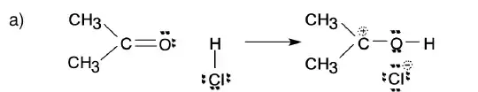
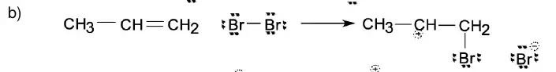
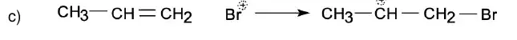
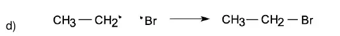

Esta página es parte del Modo auditoría del apunte. Por cada versión guarda: qué pidió el alumno, qué fuentes se leyeron antes de escribir, qué cambió, qué quedó marcado, y los textos y dibujos anteriores completos (nada se borra: lo que se reemplaza queda acá). Se publica aparte para que la página principal no pase el límite de tamaño.
Pedido del alumno. «…y después “Capítulos 10, 14, 19 y 20 de Wade (alcoholes, éteres, aminas, ácidos): todavía sin leer; ahora ya puedo”. […] Todo menos genérica; que no resumas, elimines, omitas ni pierdas información.»
Fuente. Wade, L. G., Química Orgánica, 5.ª ed. en castellano (Pearson, 2004). PDF de la computadora del alumno, sin capa de texto: WADE_5ED_PARTE_03 (cap. 10), PARTE_04 y PARTE_05 (cap. 14), PARTE_06 y PARTE_07 (caps. 19 y 20) y PARTE_08 (soluciones del final). Cada página se convirtió en una imagen con el número de página del libro como nombre; el encabezado impreso de cada imagen se controló contra ese número. No se usó OCR: todo sale de mirar la imagen. Siete páginas (891, 893–896, 935 y 936) salieron corruptas al convertirlas (la página repetida tres veces, con franjas de color): se volvieron a sacar extrayendo la imagen original del PDF; los lectores de esos tramos (W19c y W20b) las habían leído directamente del PDF.
Universo cerrado. Cap. 10: pp. 405–444 (40 páginas). Cap. 14: pp. 600–637 (38). Cap. 19: pp. 836–899 (64). Cap. 20: pp. 900–939 (40). Total: 182 páginas, con problemas, resúmenes y glosarios. Páginas con entrada propia en los ledgers: 182 de 182.
Método. (1) Nueve lectores, un tramo de unas 20 páginas cada uno, en orden, con un ledger (una entrada por página; tablas transcriptas enteras) y una lista de hallazgos contra el texto del apunte. (2) Nueve verificadores independientes: cada número, cada cita entre comillas y cada referencia de cada nota se volvió a mirar en la imagen de la página; además, si el lugar del apunte elegido para la nota era el correcto. (3) Integración: se leyeron las 270 notas; se fusionaron las que decían lo mismo en el mismo lugar; se miraron de nuevo, sobre la imagen, las tablas de las que salen más números (Tabla 10.3, p. 415; Tablas 14.1 y 14.2, pp. 601–602; Tablas 19.1 y 19.3, pp. 841 y 843; Tablas 20.3 y 20.4, pp. 906 y 909): los valores de las notas coinciden. (4) Se leyeron las «Soluciones de los problemas seleccionados» del final del libro para estos cuatro capítulos (pp. A3, A4, A5 y A6; PARTE_08 del PDF), porque varias notas decían que el libro no daba la respuesta.
| lector | cap. | páginas | imágenes | contra | hallazgos | aprobados | corregidos | descartados |
|---|---|---|---|---|---|---|---|---|
| W10a | 10 | 405–424 | 20 | caps. 10, 11, 13, 15, 36, 38, 40; ej. 17–35 | 39 | 34 | 5 | 0 |
| W10b | 10 | 425–444 | 20 | caps. 15, 31, 33, 35, 36, 40; ej. 17–35 | 27 | 21 | 6 | 0 |
| W14a | 14 | 600–618 | 19 | caps. 10, 11, 35, 36, 38, 39; ej. 17–35 | 28 | 22 | 6 | 0 |
| W14b | 14 | 619–637 | 19 | caps. 31, 33, 35, 36, 39, 40; guía U2 y U6 | 30 | 22 | 8 | 0 |
| W19a | 19 | 836–856 | 21 | caps. 11, 13, 15, 38, 39, 40; guía U5; ej. 19–35 | 32 | 25 | 7 | 0 |
| W19b | 19 | 857–878 | 22 | caps. 12b, 31, 33, 34, 35, 36, 40; ej. 40 | 28 | 23 | 5 | 0 |
| W19c | 19 | 879–899 | 21 | caps. 15, 31, 33, 36, 38, 39, 40, 44, 45; guía U5 y U6; ej. 40 | 25 | 17 | 8 | 0 |
| W20a | 20 | 900–919 | 20 | caps. 11, 12b, 13, 15, 44; ej. 20–35 | 34 | 28 | 6 | 0 |
| W20b | 20 | 920–939 | 20 | caps. 11, 15, 31, 38, 40, 44; ej. 25 | 27 | 20 | 7 | 0 |
Totales. 270 hallazgos: actualización 20 · aporte 165 · confirmación 42 · CONFLICTO 43. Verificación: 212 aprobados, 58 corregidos por el verificador (se usa el texto corregido), 0 descartados. Fusionados en otra nota: 15. Notas nuevas escritas en la integración a partir de las soluciones del final del libro: 5 (WS-01 a WS-05). Notas que quedaron en el apunte: 260 (260 ubicadas).
Dónde van. Debajo del párrafo que comentan. Nunca dentro de una lista, de una tabla, de una figura, de la transcripción literal de la guía ni del glosario de un ejercicio: van al terminar ese bloque, y si ahí ya había notas de otros libros, después de ellas. En los ejercicios resueltos con pizarrón van juntas debajo del pizarrón (recuadro «📖 Qué agrega el Wade a esta resolución»), cada una con el paso al que corresponde; en ese paso queda un aviso de una línea.
| id | tipo | sección | Wade | destino | verificación |
|---|---|---|---|---|---|
| W10a-01 | aporte | cap. 10 | § 10.4A, pp. 411–412 | después de las notas que ya estaban | aprobada |
| W10a-02 | confirmación | cap. 10 | Tabla 10.1, p. 411 | después de las notas que ya estaban | aprobada |
| W10a-03 | aporte | cap. 10 | § 10.4 y Tabla 10.1, p. 411 | debajo del párrafo del ancla | corregida por el verificador |
| W10a-04 | CONFLICTO | cap. 11 | § 10.4B y Tabla 10.2, p. 412 | debajo del párrafo del ancla | aprobada |
| W10a-05 | aporte | cap. 11 | § 10.4B y Tabla 10.2, p. 412 | al terminar el «paso a paso» de la figura | aprobada |
| W10a-06 | aporte | cap. 11 | § 10.4B, p. 412 | debajo de la cita | aprobada |
| W10a-07 | aporte | cap. 11 | § 10.5B, p. 414 | debajo del párrafo del ancla | aprobada |
| W10a-08 | confirmación | U2 ej. 23 | § 10.4A y Tabla 10.1, p. 411 | debajo del pizarrón pe-u2-23-a · Paso 7 · La cuenta | aprobada |
| W10a-09 | confirmación | U2 ej. 23 | Tabla 10.2, p. 412 | debajo del pizarrón pe-u2-23-b · Paso 6 · La cuenta | corregida por el verificador |
| W10a-10 | CONFLICTO | U2 ej. 23 | § 10.4A, pp. 411–412 | debajo del pizarrón pe-u2-23-c · Paso 7 · La cuenta | aprobada · retocada al integrar |
| W10a-11 | aporte | U2 ej. 25 | § 10.4A, pp. 411–412 | debajo del pizarrón pe-u2-25-opc · Paso 1 · a) «El alcohol es polar y el éter no» | aprobada · retocada al integrar |
| W10a-12 | confirmación | U2 ej. 20 | Tabla 10.1, p. 411 | fusionada en W19a-19 | aprobada |
| W10a-13 | aporte | U2 ej. 21 | § 10.4B y Tabla 10.2, p. 412 | debajo del pizarrón pe-u2-21-b · Paso 5 · La cuenta | aprobada |
| W10a-14 | aporte | U2 ej. 26 | Tabla 10.3, p. 415 | fusionada en W20a-25 | aprobada |
| W10a-15 | aporte | U2 ej. 27 | § 10.6A, p. 416; Tabla 10.3, p. 415 | debajo del pizarrón pe-u2-27-a · Paso 2 · Qué es el efecto inductivo | aprobada |
| W10a-16 | CONFLICTO | U2 ej. 30 | Tabla 10.3, p. 415; § 10.6C, p. 417 | debajo del pizarrón pe-u2-30 · Paso 2 · Leer el pKa | aprobada |
| W10a-17 | CONFLICTO | U2 ej. 30 | § 10.6A, p. 416; Tabla 10.3, p. 415 | debajo del pizarrón pe-u2-30 · Paso 4 · El alcóxido: sin resonancia | aprobada |
| W10a-18 | confirmación | U2 ej. 30 | § 10.6C, p. 417 | debajo del pizarrón pe-u2-30 · Paso 7 · Lo que existe: el híbrido | aprobada |
| W10a-19 | aporte | U2 ej. 31 | Problema 10.9, p. 418 | debajo del pizarrón pe-u2-31-a · Paso 5 · Una estructura más | aprobada · retocada al integrar |
| W10a-20 | aporte | U2 ej. 40 | § 10.3D, p. 410 | debajo del pizarrón pe-u2-40-a · Paso 1 · Datos: los dos colorantes | aprobada |
| W10a-21 | actualización | cap. 15 | Tabla 10.3, p. 415; § 10.6C, p. 417 | después de las notas que ya estaban | aprobada |
| W10a-22 | actualización | cap. 15 | § 10.6, pp. 415–418 | después del texto pasado a auditoría y de su reemplazo | aprobada · retocada al integrar |
| W10a-23 | aporte | cap. 36 | § 10.2 y Figura 10.1, pp. 405–406 | debajo de la figura | aprobada |
| W10a-24 | confirmación | cap. 36 | § 10.2 y Figura 10.2, p. 406 | debajo del párrafo del ancla | aprobada · retocada al integrar |
| W10a-25 | aporte | cap. 36 | § 10.3A, pp. 407–408 | debajo del párrafo del ancla | aprobada |
| W10a-26 | aporte | cap. 36 | § 10.3B–C, pp. 409–410; Tabla 10.1, p. 411 | debajo del párrafo del ancla | aprobada |
| W10a-27 | CONFLICTO | cap. 38 | § 10.6 y Tabla 10.3, p. 415 | debajo del párrafo del ancla | aprobada |
| W10a-28 | CONFLICTO | cap. 38 | § 10.6C, p. 417 | debajo del párrafo del ancla | aprobada |
| W10a-29 | CONFLICTO | cap. 40 | § 10.6, Tabla 10.3, p. 415; § 10.6A, p. 416; § 10.6C, p. 417 | debajo del párrafo del ancla | aprobada · retocada al integrar |
| W10a-30 | aporte | cap. 40 | § 10.6B, pp. 416–417; § 10.6C, p. 417 | debajo del párrafo del ancla | corregida por el verificador |
| W10a-31 | aporte | cap. 40 | § 10.6C, p. 417; Problema 10.10, p. 418 | debajo del párrafo del ancla | aprobada · retocada al integrar |
| W10a-32 | aporte | cap. 40 | § 10.3D, p. 410; § 10.6C, p. 417; nota al margen, p. 418 | debajo del párrafo del ancla | aprobada |
| W10a-33 | aporte | cap. 40 | § 10.3D, p. 410 | debajo del párrafo del ancla | aprobada |
| W10a-34 | aporte | cap. 40 | Problema 10.6, p. 413 | debajo del párrafo del ancla | corregida por el verificador · retocada al integrar |
| W10a-35 | aporte | cap. 44 | Tabla 10.1, p. 411 | debajo del párrafo del ancla | aprobada |
| W10a-36 | aporte | cap. 44 | Figura 10.2, p. 406 | después de las notas que ya estaban | aprobada · retocada al integrar |
| W10a-37 | confirmación | cap. 33 | § 10.9, pp. 422–424; § 10.8A, p. 421 | al terminar el «paso a paso» de la figura | corregida por el verificador |
| W10a-38 | aporte | cap. 33 | § 10.7, Resumen, p. 419 | fusionada en W10b-20 | aprobada |
| W10a-39 | aporte | guía, teoría U2 | § 10.5B, p. 414 | debajo de la transcripción literal de la guía y de su figura | aprobada |
| W10b-01 | aporte | cap. 33 | § 10.9C, p. 425; Resumen «Reacciones de Grignard», p. 429; Sugerencia, p. 431 | al terminar el «paso a paso» de la figura | aprobada |
| W10b-02 | aporte | cap. 33 | § 10.11, p. 432; § 10.11A, p. 433 | al terminar el «paso a paso» de la figura | aprobada |
| W10b-03 | aporte | cap. 31 | § 10.9D, pp. 426–427; problema 10.18, p. 428 | debajo del párrafo del ancla | corregida por el verificador |
| W10b-04 | confirmación | cap. 31 | § 10.9D, p. 426 | debajo del párrafo del ancla | aprobada |
| W10b-05 | aporte | cap. 35 | § 10.11, pp. 432–433; Resumen «Reacciones de LiAlH₄ y NaBH₄», p. 434 | debajo del párrafo del ancla | corregida por el verificador |
| W10b-06 | aporte | cap. 35 | § 10.10A, p. 431 | al terminar el «paso a paso» de la figura | corregida por el verificador |
| W10b-07 | aporte | cap. 35 | § 10.12, p. 439 | debajo del párrafo del ancla | aprobada |
| W10b-08 | aporte | cap. 40 | § 10.10A, pp. 430–431 | debajo del párrafo del ancla | aprobada |
| W10b-09 | CONFLICTO | cap. 40 | § 10.10, p. 430; § 10.10A, p. 431; § 10.12, p. 438 | fusionada en W10a-29 | aprobada |
| W10b-10 | confirmación | cap. 15 | § 10.12, p. 438 | debajo del recuadro | aprobada |
| W10b-11 | aporte | cap. 36 | § 10.12, pp. 437–438 | debajo del párrafo del ancla | aprobada |
| W10b-12 | aporte | cap. 15 | § 10.12, p. 439; Glosario, p. 440 | debajo del recuadro | aprobada |
| W10b-13 | aporte | cap. 36 | § 10.9E, p. 428; Glosario, p. 440; problema 10.48, p. 444 | debajo del párrafo del ancla | corregida por el verificador · retocada al integrar |
| W10b-14 | aporte | cap. 37 | problemas 10.45 y 10.46, p. 444 | debajo del párrafo del ancla | aprobada |
| W10b-15 | confirmación | cap. 38 | § 10.9D, p. 426; Glosario, p. 440 | debajo del párrafo del ancla | aprobada |
| W10b-16 | aporte | cap. 38 | § 10.11A, p. 433; § 10.11C, pp. 434–435 | debajo del párrafo del ancla | aprobada |
| W10b-17 | aporte | cap. 31 | problema 10.21, pp. 429–430 | debajo del párrafo del ancla | aprobada |
| W10b-18 | confirmación | cap. 33 | § 10.10B, p. 431; problema 10.23, p. 432 | debajo del recuadro | aprobada · retocada al integrar |
| W10b-19 | aporte | cap. 31 | Resumen «Síntesis de alcoholes», parte II, p. 436 | debajo del recuadro | corregida por el verificador |
| W10b-20 | confirmación | cap. 33 | Resumen «Síntesis de alcoholes», parte I, p. 435 | debajo del párrafo del ancla | aprobada · retocada al integrar |
| W10b-21 | aporte | U2 ej. 23 | problemas 10.34 y 10.36, p. 442 | debajo del pizarrón pe-u2-23-c · Paso 7 · La cuenta | aprobada · retocada al integrar |
| W10b-22 | aporte | U2 ej. 30 | problema 10.35, p. 442; problema 10.42, p. 443 | debajo del pizarrón pe-u2-30 · Paso 9 · Respuesta | aprobada · retocada al integrar |
| W10b-23 | aporte | cap. 15 | problema 10.27, p. 438; § 10.10A, p. 431 | debajo del párrafo del ancla | aprobada · retocada al integrar |
| W10b-24 | confirmación | cap. 36 | Glosario, p. 440; Sugerencia, p. 426; problema 10.31, p. 441 | fusionada en W10a-24 | aprobada |
| W10b-25 | aporte | cap. 31 | § 10.12, p. 438 | al terminar el «paso a paso» de la figura | aprobada |
| W10b-26 | actualización | cap. 33 | §§ 10.9C–10.11, pp. 425–435 | debajo del párrafo del ancla | corregida por el verificador |
| W10b-27 | actualización | cap. 35 | §§ 10.10–10.12, pp. 431–439 | debajo del párrafo del ancla | aprobada |
| W14a-01 | aporte | cap. 36 | § 14.2A, pp. 600–601; Figura 14.1, p. 601 | debajo del párrafo del ancla | aprobada |
| W14a-02 | CONFLICTO | cap. 36 | § 14.2A–B, p. 601; Tabla 14.1, p. 601 | debajo del párrafo del ancla | aprobada |
| W14a-03 | aporte | cap. 10 | § 14.2B, Tabla 14.1, p. 601; Tabla 14.2, p. 602 | debajo del párrafo del ancla | aprobada |
| W14a-04 | confirmación | cap. 10 | § 14.2B, p. 601; Figura 14.2, p. 601 | debajo del recuadro | aprobada |
| W14a-05 | CONFLICTO | U2 ej. 23 | § 14.2B, p. 601; Tabla 14.1, p. 601; Tabla 14.2, p. 602 | fusionada en W10a-10 | corregida por el verificador |
| W14a-06 | confirmación | U2 ej. 23 | § 14.2B, pp. 601–602; Figura 14.2, p. 601 | debajo del pizarrón pe-u2-23-c · Paso 4 · Prueba 2: el éter | aprobada |
| W14a-07 | aporte | U2 ej. 25 | § 14.2A–B, p. 601; Tabla 14.1, p. 601 | fusionada en W10a-11 | aprobada |
| W14a-08 | CONFLICTO | cap. 38 | § 14.2C, p. 603; § 14.3C, p. 607; Figura 14.2, p. 601 | debajo del párrafo del ancla | aprobada |
| W14a-09 | aporte | cap. 11 | § 14.2C, p. 602 | debajo del párrafo del ancla | corregida por el verificador |
| W14a-10 | aporte | cap. 11 | § 14.2C, p. 602; Figura 14.3, p. 602 | debajo del párrafo del ancla | aprobada |
| W14a-11 | aporte | cap. 11 | Tabla 14.2, p. 602; § 14.3C, p. 607 | debajo del párrafo del ancla | corregida por el verificador |
| W14a-12 | confirmación | cap. 36 | § 14.1, p. 600 | debajo de la figura | aprobada |
| W14a-13 | aporte | cap. 36 | § 14.3C, pp. 605–607 | al terminar la lista | aprobada · retocada al integrar |
| W14a-14 | aporte | cap. 36 | § 14.2D, p. 604; § 14.3C, pp. 606–607 | debajo del párrafo del ancla | aprobada |
| W14a-15 | aporte | cap. 36 | § 14.3A–B, p. 605 | debajo del párrafo del ancla | aprobada |
| W14a-16 | aporte | cap. 36 | § 14.2D, pp. 603–604; § 14.8, p. 614; problema 14.16, p. 615 | debajo del párrafo del ancla | aprobada |
| W14a-17 | aporte | cap. 36 | § 14.1, p. 600; § 14.2C, pp. 602–603 | debajo del párrafo del ancla | aprobada |
| W14a-18 | CONFLICTO | cap. 36 | Tabla 14.1, p. 601; Tabla 14.2, p. 602 | debajo del párrafo del ancla | aprobada |
| W14a-19 | actualización | cap. 36 | cap. 14, pp. 600–618 | debajo del párrafo del ancla | corregida por el verificador · retocada al integrar |
| W14a-20 | aporte | cap. 36 | § 14.10, pp. 616–618 | debajo del párrafo del ancla | aprobada · retocada al integrar |
| W14a-21 | CONFLICTO | cap. 39 | § 14.10, pp. 617–618 | debajo del párrafo del ancla | corregida por el verificador |
| W14a-22 | actualización | cap. 39 | § 14.3C, pp. 605–607; Tabla 14.2, p. 602 | debajo del párrafo del ancla | aprobada · retocada al integrar |
| W14a-23 | aporte | cap. 31 | § 14.8, pp. 613–615 | debajo del párrafo del ancla | corregida por el verificador |
| W14a-24 | aporte | cap. 31 | § 14.5, p. 610; Resumen, p. 613 | debajo del párrafo del ancla | aprobada |
| W14a-25 | aporte | cap. 34 | problema resuelto 14.1 y Sugerencia, pp. 610–611 | debajo del párrafo del ancla | aprobada |
| W14a-26 | aporte | cap. 34 | § 14.7, pp. 612–613 | debajo del párrafo del ancla | aprobada |
| W14a-27 | aporte | cap. 35 | § 14.9, pp. 615–616 | debajo del párrafo del ancla | aprobada · retocada al integrar |
| W14a-28 | aporte | U2 ej. 30 | § 14.5, pp. 610–611 | debajo del pizarrón pe-u2-30 · Paso 3 · Lo que queda de cada uno | aprobada |
| W14b-01 | aporte | cap. 36 | § 14.12, p. 622 | al terminar la lista | aprobada |
| W14b-02 | aporte | cap. 36 | § 14.13 y Figura 14.8, p. 625; § 14.12, p. 623; problema 14.33, p. 635 | debajo del párrafo del ancla | aprobada |
| W14b-03 | CONFLICTO | cap. 36 | Glosario del cap. 14, p. 633; problema 14.34, p. 635 | debajo del párrafo del ancla | aprobada · retocada al integrar |
| W14b-04 | actualización | cap. 36 | §§ 14.11–14.16, pp. 619–632; glosario, pp. 632–634 | fusionada en W14a-19 | aprobada |
| W14b-05 | CONFLICTO | cap. 36 | § 14.11, pp. 621–622; § 14.12, p. 623; § 14.15, p. 629 | debajo del párrafo del ancla | aprobada |
| W14b-06 | aporte | cap. 36 | Glosario del cap. 14, p. 633 | fusionada en W14a-13 | aprobada |
| W14b-07 | confirmación | cap. 36 | Glosario del cap. 14, p. 633 | al terminar la lista | aprobada |
| W14b-08 | aporte | cap. 36 | Glosario, p. 633; problemas 14.30 (p. 634), 14.22 (p. 623) y 14.46 (p. 636) | debajo del párrafo del ancla | aprobada |
| W14b-09 | aporte | cap. 36 | Figura 14.6, p. 624; § 14.16, pp. 629–631 | debajo del párrafo del ancla | aprobada |
| W14b-10 | confirmación | cap. 36 | problema 14.40, p. 636 | debajo del párrafo del ancla | corregida por el verificador |
| W14b-11 | aporte | cap. 36 | Glosario del cap. 14, pp. 633–634; problema 14.18, p. 619 | fusionada en W14a-20 | aprobada |
| W14b-12 | confirmación | cap. 36 | § 14.14, pp. 627–628; problema resuelto 14.2, p. 628 | debajo del párrafo del ancla | aprobada |
| W14b-13 | confirmación | cap. 38 | § 14.12, pp. 622–623 | debajo del párrafo del ancla | aprobada |
| W14b-14 | aporte | cap. 38 | § 14.13, p. 626 | debajo del párrafo del ancla | corregida por el verificador |
| W14b-15 | confirmación | cap. 39 | Glosario del cap. 14, p. 633 | debajo del párrafo del ancla | aprobada · retocada al integrar |
| W14b-16 | aporte | cap. 39 | § 14.11B, p. 621 | debajo del párrafo del ancla | aprobada |
| W14b-17 | aporte | cap. 39 | § 14.12, p. 622; Figura 14.8, p. 625 | debajo del párrafo del ancla | aprobada |
| W14b-18 | actualización | cap. 39 | Glosario del cap. 14, p. 633; § 14.11B, p. 621 | debajo del párrafo del ancla | corregida por el verificador · retocada al integrar |
| W14b-19 | CONFLICTO | cap. 40 | § 14.11B, pp. 620–621; § 14.13, p. 626; problema 14.42, p. 636 | fusionada en W10a-29 | corregida por el verificador |
| W14b-20 | aporte | cap. 31 | § 14.13, pp. 625–626; § 14.12, p. 622 | debajo del párrafo del ancla | aprobada |
| W14b-21 | aporte | cap. 31 | cap. 14, p. 619 (final de la sección de sulfuros, anterior a § 14.11); problema 14.18, p. 619 | al terminar el «paso a paso» de la figura | corregida por el verificador |
| W14b-22 | aporte | cap. 31 | § 14.12, pp. 622–623; § 14.13, p. 626 | al terminar el «paso a paso» de la figura | aprobada |
| W14b-23 | aporte | cap. 31 | § 14.11B, pp. 620–621; Glosario, p. 633 | debajo del párrafo del ancla | aprobada |
| W14b-24 | aporte | cap. 31 | § 14.14, pp. 627–628; § 14.12, p. 622 | debajo del recuadro | aprobada |
| W14b-25 | aporte | cap. 33 | § 14.11A, pp. 619–620; Glosario, p. 633 | debajo del párrafo del ancla | corregida por el verificador |
| W14b-26 | confirmación | cap. 33 | § 14.11B, p. 620 | debajo del párrafo del ancla | aprobada |
| W14b-27 | aporte | cap. 35 | Glosario, p. 633; § 14.11A, p. 619; problema 14.20, p. 622 | debajo del párrafo del ancla | aprobada |
| W14b-28 | aporte | cap. 35 | Glosario del cap. 14, p. 633 | fusionada en W14a-27 | aprobada |
| W14b-29 | aporte | guía, teoría U2 | § 14.12, Figuras 14.6 y 14.7, pp. 624–625 | debajo de la transcripción literal de la guía y de su figura | corregida por el verificador |
| W14b-30 | aporte | guía, teoría U6 | § 14.12, p. 624; problema 14.44, p. 636 | debajo del párrafo del ancla | corregida por el verificador |
| W19a-01 | aporte | cap. 40 | § 19.5, p. 843; Tabla 19.3, p. 843 | debajo del párrafo del ancla | corregida por el verificador |
| W19a-02 | CONFLICTO | cap. 40 | § 19.6, pp. 844–845; Tabla 19.3, p. 843 | debajo del párrafo del ancla | aprobada |
| W19a-03 | aporte | cap. 40 | § 19.6, pp. 844–846; Figuras 19.4 y 19.5; Tabla 19.3, p. 843 | debajo del párrafo del ancla | aprobada |
| W19a-04 | CONFLICTO | cap. 40 | § 19.4, p. 841; Tabla 19.2, p. 842; § 19.7, p. 846 | debajo del párrafo del ancla | aprobada |
| W19a-05 | aporte | cap. 40 | § 19.4, p. 841; Tabla 19.1, p. 841; Tabla 19.2, p. 842 | debajo del párrafo del ancla | corregida por el verificador |
| W19a-06 | aporte | cap. 40 | § 19.2, pp. 837–838; § 19.3, p. 840; Tabla 19.3, p. 843; § 19.6, p. 846 | al terminar el «paso a paso» de la figura | corregida por el verificador · retocada al integrar |
| W19a-07 | aporte | cap. 39 | § 19.6, pp. 845–846; Tabla 19.3, p. 843 | debajo del párrafo del ancla | aprobada |
| W19a-08 | CONFLICTO | cap. 39 | § 19.6, p. 845; Tabla 19.3, p. 843 | debajo del párrafo del ancla | corregida por el verificador |
| W19a-09 | actualización | cap. 39 | § 19.2A, p. 838; § 19.6, pp. 845–846; Tabla 19.3, p. 843 | debajo del párrafo del ancla | aprobada |
| W19a-10 | aporte | cap. 39 | § 19.2A, p. 838; Figura 19.1, p. 836 | debajo del párrafo del ancla | aprobada · retocada al integrar |
| W19a-11 | CONFLICTO | cap. 13 | Tabla 19.3, p. 843; § 19.6, p. 846 | al terminar el «paso a paso» de la figura | corregida por el verificador |
| W19a-12 | aporte | cap. 13 | § 19.5, pp. 843–844 | debajo del párrafo del ancla | aprobada |
| W19a-13 | aporte | cap. 13 | § 19.5, p. 842 | debajo del párrafo del ancla | aprobada |
| W19a-14 | confirmación | cap. 15 | § 19.6, pp. 845–846; Tabla 19.3, p. 843 | debajo del párrafo del ancla | corregida por el verificador |
| W19a-15 | confirmación | cap. 15 | § 19.6, p. 845, Figura 19.5; Tabla 19.3, p. 843 | debajo del párrafo del ancla | aprobada |
| W19a-16 | aporte | cap. 15 | Tabla 19.3, p. 843 | debajo del párrafo del ancla | aprobada |
| W19a-17 | CONFLICTO | U2 ej. 19 | Tabla 19.1, p. 841; Tabla 19.2, p. 842 | debajo del pizarrón pe-u2-19 · Paso 1 · Datos: las dos aminas | aprobada |
| W19a-18 | aporte | U2 ej. 19 | Tabla 19.2, p. 842; § 19.4, p. 841 | debajo del pizarrón pe-u2-19 · Paso 6 · Además, la forma | aprobada |
| W19a-19 | confirmación | U2 ej. 20 | § 19.4, p. 841; Tabla 19.1, p. 841 | debajo del pizarrón pe-u2-20 · Paso 6 · La cuenta | aprobada · retocada al integrar |
| W19a-20 | aporte | U2 ej. 24 | § 19.7, pp. 846–848 | debajo del pizarrón pe-u2-24-d · Paso 3 · Qué le hace una carga | aprobada |
| W19a-21 | CONFLICTO | U2 ej. 33 | Tabla 19.3, p. 843; § 19.6, p. 844 | debajo del pizarrón pe-u2-33-mol · Paso 8 · Las tres juntas | corregida por el verificador |
| W19a-22 | aporte | U2 ej. 33 | § 19.6, p. 844 | debajo del pizarrón pe-u2-33-mol · Paso 5 · Metilamina | aprobada |
| W19a-23 | CONFLICTO | U2 ej. 33 | § 19.5, p. 843; Tabla 19.3, p. 843 | debajo del glosario del ejercicio · Glosario · «Kb» | aprobada |
| W19a-24 | CONFLICTO | U2 ej. 34 | Tabla 19.3, p. 843; § 19.6, p. 845 | debajo del pizarrón pe-u2-34 · Paso 6 · Comparación con la piridina | aprobada |
| W19a-25 | confirmación | U2 ej. 35 | Tabla 19.3, p. 843; § 19.6, pp. 845–846 | debajo del pizarrón pe-u2-35 · Paso 7 · El orden creciente | aprobada |
| W19a-26 | aporte | cap. 36 | § 19.2, p. 837 | debajo del párrafo del ancla | aprobada |
| W19a-27 | aporte | cap. 38 | § 19.3, pp. 839–840; Figura 19.3, p. 840 | debajo del párrafo del ancla | aprobada |
| W19a-28 | aporte | cap. 38 | § 19.2A–19.2B, pp. 837–839; Tabla 19.2, p. 842; Figura 19.8, p. 850 | debajo del párrafo del ancla | aprobada |
| W19a-29 | confirmación | cap. 38 | § 19.4, p. 841; Tabla 19.2, p. 842 | debajo del párrafo del ancla | aprobada |
| W19a-30 | actualización | cap. 11 | § 19.7, pp. 846–847; Figura 19.6, p. 847 | debajo del párrafo del ancla | aprobada |
| W19a-31 | confirmación | guía, teoría U5 | § 19.1, p. 836; Figura 19.2, p. 837; § 19.7, p. 847 | debajo de la figura | aprobada |
| W19a-32 | aporte | guía, teoría U5 | § 19.4, p. 841; § 19.7, pp. 846–847 | debajo del párrafo del ancla | aprobada |
| W19b-01 | aporte | cap. 38 | § 19.13, pp. 859–860 | debajo del párrafo del ancla | aprobada |
| W19b-02 | actualización | cap. 15 | § 19.13, pp. 859–860 | después del texto pasado a auditoría y de su reemplazo | aprobada · retocada al integrar |
| W19b-03 | aporte | cap. 31 | § 19.13, p. 859 | debajo del párrafo del ancla | aprobada |
| W19b-04 | actualización | cap. 31 | § 19.13, p. 859; § 19.14, p. 861 | debajo del párrafo del ancla | aprobada |
| W19b-05 | aporte | cap. 31 | § 19.15, p. 862 | debajo del párrafo del ancla | aprobada |
| W19b-06 | aporte | cap. 31 | § 19.12, pp. 858–859 | debajo del párrafo del ancla | aprobada |
| W19b-07 | CONFLICTO | cap. 31 | § 19.11C, p. 857; § 19.18, p. 871 | debajo del párrafo del ancla | aprobada |
| W19b-08 | aporte | cap. 39 | § 19.11 y § 19.11C, p. 857 | debajo del párrafo del ancla | corregida por el verificador |
| W19b-09 | CONFLICTO | cap. 34 | § 19.15, p. 863 | debajo del párrafo del ancla | corregida por el verificador · retocada al integrar |
| W19b-10 | aporte | cap. 34 | § 19.15, pp. 863–864, Figura 19.12 | debajo del párrafo del ancla | aprobada |
| W19b-11 | aporte | cap. 34 | § 19.15, p. 865 (Problema resuelto 19.2) | debajo del párrafo del ancla | aprobada |
| W19b-12 | aporte | cap. 34 | § 19.16, pp. 866–867 | debajo del recuadro | aprobada |
| W19b-13 | confirmación | cap. 34 | § 19.17, p. 869 | debajo del párrafo del ancla | aprobada |
| W19b-14 | aporte | cap. 35 | § 19.16, pp. 865–866 | debajo del párrafo del ancla | aprobada |
| W19b-15 | aporte | cap. 33 | Resumen «Reacciones de las aminas», punto 2, p. 874 | debajo del párrafo del ancla | aprobada |
| W19b-16 | aporte | cap. 33 | § 19.19A, pp. 877–878 | fusionada en W19c-12 | aprobada |
| W19b-17 | aporte | cap. 38 | § 19.14, pp. 861–862 | debajo del párrafo del ancla | aprobada |
| W19b-18 | aporte | cap. 38 | § 19.17, pp. 868–870 | debajo del párrafo del ancla | corregida por el verificador |
| W19b-19 | aporte | cap. 40 | § 19.13, p. 859; Problema 19.17, p. 861 | debajo del párrafo del ancla | aprobada · retocada al integrar |
| W19b-20 | aporte | cap. 40 | § 19.12, p. 858; § 19.15, p. 862 | al terminar el «paso a paso» de la figura | aprobada |
| W19b-21 | aporte | cap. 40 | § 19.13, p. 860 (Problema resuelto 19.1) | debajo del párrafo del ancla | aprobada |
| W19b-22 | confirmación | U2 ej. 40 | § 19.18, p. 873 | debajo del pizarrón pe-u2-40-a · Paso 2 · Lo que tienen igual: el cromóforo | corregida por el verificador |
| W19b-23 | aporte | U2 ej. 40 | § 19.18, pp. 870 y 873; Problema 19.25 (h), p. 874 | debajo del pizarrón pe-u2-40-a · Paso 1 · Datos: los dos colorantes | corregida por el verificador · retocada al integrar |
| W19b-24 | aporte | U2 ej. 40 | § 19.18, p. 874 | debajo del pizarrón pe-u2-40-a · Paso 1 · Datos: los dos colorantes | aprobada |
| W19b-25 | aporte | cap. 12b | § 19.18, p. 873; Resumen, p. 877 | debajo del párrafo del ancla | aprobada |
| W19b-26 | actualización | cap. 12b | § 19.18, pp. 873–874 | debajo de «En un vistazo» | aprobada |
| W19b-27 | confirmación | cap. 36 | § 19.16, p. 866 | al terminar el «paso a paso» de la figura | aprobada |
| W19b-28 | aporte | cap. 38 | § 19.18, pp. 870 y 872–873 (Problema resuelto 19.4) | debajo del párrafo del ancla | aprobada |
| W19c-01 | aporte | cap. 38 | Glosario del cap. 19, p. 890; Problema 19.36, p. 892 | debajo del párrafo del ancla | aprobada |
| W19c-02 | CONFLICTO | cap. 44 | Glosario del cap. 19, pp. 890–891 | debajo del párrafo del ancla | aprobada |
| W19c-03 | confirmación | U2 ej. 33 | Glosario del cap. 19, p. 891 | debajo del glosario del ejercicio · Glosario · «Kb» | corregida por el verificador |
| W19c-04 | aporte | guía, teoría U5 | Problema 19.53, p. 896; Glosario, p. 891; Pautas esenciales, p. 892 | debajo de la transcripción literal de la guía y de su figura | corregida por el verificador |
| W19c-05 | aporte | cap. 45 | Problema 19.49(a), p. 895 | debajo del párrafo del ancla | aprobada |
| W19c-06 | CONFLICTO | cap. 15 | Problema 19.49(b), p. 895; Problema 19.37(d), p. 893 | después de las notas que ya estaban | aprobada |
| W19c-07 | confirmación | cap. 39 | Problemas 19.37 y 19.39, p. 893; Pautas esenciales, p. 892 | al final de la respuesta de la pregunta | aprobada |
| W19c-08 | aporte | cap. 39 | Problema 19.54, p. 896 | debajo del párrafo del ancla | corregida por el verificador |
| W19c-09 | CONFLICTO | guía, teoría U6 | Resumen de § 19.19, punto 9, p. 889; Problema 19.55, p. 896 | debajo de la transcripción literal de la guía y de su figura | corregida por el verificador |
| W19c-10 | aporte | cap. 31 | § 19.19C, p. 881 | debajo del párrafo del ancla | aprobada |
| W19c-11 | aporte | cap. 31 | § 19.19C, pp. 882–883 y 885 | debajo del párrafo del ancla | aprobada |
| W19c-12 | aporte | cap. 33 | § 19.19A, p. 879; Resumen, pp. 887–888; Glosario, p. 890 | debajo del párrafo del ancla | corregida por el verificador · retocada al integrar |
| W19c-13 | aporte | cap. 33 | § 19.19C, pp. 883–884 | al terminar el «paso a paso» de la figura | aprobada |
| W19c-14 | aporte | cap. 38 | § 19.19B, pp. 879–880; Glosario, p. 890 | debajo del párrafo del ancla | aprobada |
| W19c-15 | actualización | cap. 15 | § 19.19C, pp. 882 y 885–886 | después del texto pasado a auditoría y de su reemplazo | corregida por el verificador |
| W19c-16 | aporte | cap. 35 | § 19.19C, pp. 884–885 | debajo del párrafo del ancla | aprobada |
| W19c-17 | aporte | cap. 40 | § 19.19C, pp. 884–885; Resumen, p. 889; Glosario, p. 891 | debajo del párrafo del ancla | aprobada |
| W19c-18 | aporte | cap. 36 | Glosario del cap. 19, pp. 890–892; Problema 19.36, pp. 892–893 | debajo del párrafo del ancla | corregida por el verificador |
| W19c-19 | aporte | cap. 36 | Problema 19.45, p. 895 | debajo del párrafo del ancla | aprobada |
| W19c-20 | CONFLICTO | cap. 34 | Glosario del cap. 19, p. 891 | fusionada en W19b-09 | aprobada |
| W19c-21 | confirmación | U2 ej. 40 | Problema 19.50(e), p. 895; Glosario, p. 890; § 19.19C, p. 884 | debajo del pizarrón pe-u2-40-a · Paso 1 · Datos: los dos colorantes | aprobada |
| W19c-22 | actualización | cap. 40 | Glosario, Pautas y Problemas del cap. 19, pp. 890–895 | debajo del párrafo del ancla | aprobada |
| W19c-23 | aporte | cap. 38 | Resumen de § 19.19, pp. 887–889; Problemas 19.47 y 19.48, p. 895 | debajo del párrafo del ancla | corregida por el verificador |
| W19c-24 | aporte | cap. 35 | § 19.19B, p. 880; § 19.19C, p. 883; Resumen, pp. 887–889 | al terminar el «paso a paso» de la figura | aprobada |
| W19c-25 | aporte | cap. 31 | Sugerencia y Problema 19.30(e), p. 884 | al final de la respuesta de la pregunta | aprobada |
| W20a-01 | CONFLICTO | cap. 15 | § 20.4B, p. 908; Tabla 20.4, p. 909 | debajo del párrafo del ancla | aprobada |
| W20a-02 | aporte | cap. 15 | § 20.4B, p. 908; Tabla 20.4, p. 909 | debajo del párrafo del ancla | aprobada |
| W20a-03 | confirmación | cap. 15 | § 20.4A, p. 907; Figura 20.2, p. 907 | al terminar el «paso a paso» de la figura | aprobada |
| W20a-04 | actualización | cap. 15 | § 20.3, p. 904; § 20.4A–B, pp. 906–909 | debajo del párrafo del ancla | corregida por el verificador |
| W20a-05 | confirmación | cap. 15 | § 20.4A, pp. 907–908; Tabla 20.3, p. 906 | debajo del párrafo del ancla | aprobada |
| W20a-06 | CONFLICTO | cap. 15 | § 20.3, p. 904 | debajo del párrafo del ancla | aprobada |
| W20a-07 | confirmación | cap. 15 | § 20.4A, p. 906; problema 20.5, p. 911 | debajo del párrafo del ancla | aprobada |
| W20a-08 | aporte | cap. 15 | § 20.5, p. 910; problema 20.5, p. 911 | debajo del párrafo del ancla | aprobada |
| W20a-09 | actualización | cap. 13 | § 20.1, p. 900; § 20.5, pp. 909–910 | debajo del párrafo del ancla | aprobada |
| W20a-10 | aporte | cap. 40 | § 20.4A, p. 906 (Sugerencia); nota al margen, p. 909 | debajo del párrafo del ancla | aprobada |
| W20a-11 | confirmación | cap. 40 | Tabla 20.3, p. 906; § 20.4B, p. 908 | debajo del párrafo del ancla | aprobada |
| W20a-12 | aporte | cap. 10 | § 20.3, p. 905 | debajo del párrafo del ancla | corregida por el verificador |
| W20a-13 | confirmación | U2 ej. 20 | § 20.3, p. 905 | fusionada en W19a-19 | aprobada |
| W20a-14 | aporte | cap. 11 | § 20.3, p. 905; Tabla 20.1, p. 901 | debajo del párrafo del ancla | aprobada |
| W20a-15 | aporte | cap. 11 | § 20.5, p. 911; Figura 20.3, p. 911 | debajo del párrafo del ancla | aprobada |
| W20a-16 | actualización | cap. 11 | § 20.5, p. 911; Figura 20.3, p. 911 | debajo del párrafo del ancla | aprobada · retocada al integrar |
| W20a-17 | aporte | cap. 38 | § 20.1, p. 900; § 20.2A–B, pp. 901–902 | debajo del párrafo del ancla | aprobada |
| W20a-18 | aporte | cap. 38 | § 20.8A, p. 918; Sugerencia, p. 919 | debajo del párrafo del ancla | aprobada |
| W20a-19 | CONFLICTO | cap. 44 | Tabla 20.1, p. 901; § 20.3, p. 905 | debajo del párrafo del ancla | aprobada |
| W20a-20 | CONFLICTO | cap. 44 | § 20.6, p. 912; Figura 20.4, p. 912 | debajo del párrafo del ancla | corregida por el verificador |
| W20a-21 | aporte | cap. 44 | § 20.5, p. 910 | debajo del párrafo del ancla | aprobada |
| W20a-22 | aporte | cap. 44 | Tabla 20.1 y § 20.2A, p. 901; § 20.3, p. 905 | debajo del párrafo del ancla | corregida por el verificador |
| W20a-23 | CONFLICTO | cap. 12b | § 20.7C, p. 916 | debajo del párrafo del ancla | aprobada |
| W20a-24 | aporte | cap. 12b | § 20.7C, p. 916 | debajo del párrafo del ancla | aprobada |
| W20a-25 | CONFLICTO | U2 ej. 26 | § 20.4A, p. 906; Figura 20.1, p. 907 | debajo del pizarrón pe-u2-26 · Paso 2 · Leer el pKa | aprobada · retocada al integrar |
| W20a-26 | aporte | U2 ej. 26 | § 20.4A, p. 907; Figura 20.1, p. 907 | debajo del pizarrón pe-u2-26 · Paso 8 · Por qué repartida = más ácido | aprobada |
| W20a-27 | CONFLICTO | U2 ej. 26 | § 20.3, p. 904; Figura 20.2, p. 907 | debajo del pizarrón pe-u2-26 · Paso 7 · Lo que existe: el híbrido | corregida por el verificador |
| W20a-28 | aporte | U2 ej. 27 | § 20.4A y Tabla 20.3, p. 906 | debajo del pizarrón pe-u2-27-a · Paso 5 · Los dos aniones, comparados | aprobada |
| W20a-29 | confirmación | U2 ej. 27 | Tabla 20.4, p. 909 | debajo del pizarrón pe-u2-27-c · Paso 3 · Los dos aniones, comparados | aprobada |
| W20a-30 | aporte | U2 ej. 27 | § 20.4B, p. 908; Tabla 20.4, p. 909 | debajo del pizarrón pe-u2-27-d · Paso 3 · Los dos aniones, comparados | aprobada |
| W20a-31 | CONFLICTO | U2 ej. 28 | Tabla 20.3, p. 906; § 20.4B, p. 908 | debajo del pizarrón pe-u2-28 · Paso 2 · Leer las Ka | aprobada |
| W20a-32 | aporte | U2 ej. 29 | Tabla 20.3, p. 906; Tabla 20.4, p. 909 | debajo del pizarrón pe-u2-29 · Paso 2 · Leer las Ka | aprobada |
| W20a-33 | CONFLICTO | U2 ej. 32 | § 20.4B, p. 908; Tabla 20.4, p. 909 | debajo del pizarrón pe-u2-32-mol · Paso 2 · Leer el pKa | corregida por el verificador |
| W20a-34 | CONFLICTO | U2 ej. 32 | Tabla 20.3, p. 906; Tabla 20.4, p. 909 | debajo del pizarrón pe-u2-32-mol · Paso 4 · El efecto inductivo | aprobada |
| W20b-01 | confirmación | cap. 31 | § 20.9, pp. 921–922 | debajo del párrafo del ancla | corregida por el verificador |
| W20b-02 | aporte | cap. 31 | § 20.9, Mecanismo, p. 922; § 20.10, p. 923 | debajo del párrafo del ancla | aprobada |
| W20b-03 | aporte | cap. 31 | § 20.11, pp. 925–927 | debajo del párrafo del ancla | corregida por el verificador |
| W20b-04 | actualización | cap. 31 | §§ 20.9–20.13, pp. 921–929 | debajo del párrafo del ancla | corregida por el verificador |
| W20b-05 | aporte | cap. 31 | § 20.12, p. 928 | debajo del párrafo del ancla | aprobada |
| W20b-06 | CONFLICTO | cap. 44 | § 20.10, pp. 922–923 | debajo del párrafo del ancla | aprobada |
| W20b-07 | aporte | cap. 44 | § 20.10, Mecanismo clave, p. 923 | debajo del párrafo del ancla | aprobada |
| W20b-08 | aporte | cap. 44 | § 20.10, pp. 924–925 | al terminar la película y sus notas | aprobada |
| W20b-09 | aporte | cap. 44 | Problema 20.16, p. 924; Mecanismo clave, p. 923 | al terminar la película y sus notas | aprobada · retocada al integrar |
| W20b-10 | confirmación | cap. 44 | § 20.9, Mecanismo, p. 922 | al terminar la película y sus notas | aprobada |
| W20b-11 | CONFLICTO | cap. 44 | § 20.9, Mecanismo, p. 922; Glosario, p. 934 | al terminar la película y sus notas | aprobada |
| W20b-12 | CONFLICTO | cap. 44 | § 20.9, p. 922 | al terminar la película y sus notas | aprobada |
| W20b-13 | aporte | cap. 44 | Problema 20.41, p. 937 | debajo del párrafo del ancla | aprobada |
| W20b-14 | aporte | cap. 13 | § 20.13, pp. 928–929; Problema 20.30, p. 935 | debajo del párrafo del ancla | aprobada |
| W20b-15 | aporte | cap. 45 | § 20.13, pp. 928–929; § 20.11, p. 927 | debajo del párrafo del ancla | aprobada |
| W20b-16 | aporte | cap. 38 | Resumen «Reacciones de los ácidos carboxílicos», pp. 931–933 | debajo del párrafo del ancla | aprobada |
| W20b-17 | aporte | cap. 38 | Glosario, pp. 933–934; Resumen, p. 933 | debajo del párrafo del ancla | aprobada |
| W20b-18 | aporte | cap. 38 | Problema 20.45, p. 938; Resumen, p. 920 | debajo del párrafo del ancla | aprobada · retocada al integrar |
| W20b-19 | actualización | cap. 38 | §§ 20.9–20.15, pp. 921–931; Resumen y Glosario, pp. 931–934 | debajo del párrafo del ancla | aprobada |
| W20b-20 | aporte | cap. 35 | § 20.14, pp. 929–930 | debajo del párrafo del ancla | aprobada |
| W20b-21 | aporte | cap. 33 | Problema 20.13, p. 923 | debajo del párrafo del ancla | aprobada |
| W20b-22 | aporte | cap. 36 | Glosario, p. 933; § 20.10, p. 922 | debajo del párrafo del ancla | aprobada |
| W20b-23 | aporte | cap. 36 | § 20.8C, p. 920; Resumen, p. 921 | debajo del párrafo del ancla | aprobada |
| W20b-24 | aporte | cap. 40 | Problema 20.44, p. 938 | debajo del párrafo del ancla | corregida por el verificador |
| W20b-25 | aporte | cap. 15 | Problemas 20.32–20.34, p. 935 | debajo del párrafo del ancla | corregida por el verificador |
| W20b-26 | aporte | U2 ej. 25 | § 20.12, nota al margen, p. 928; Problema 20.15, p. 924; Problema 20.31, p. 935 | debajo del pizarrón pe-u2-25-opc · Paso 6 · Respuesta | corregida por el verificador |
| W20b-27 | aporte | cap. 11 | Problema 20.37, p. 936; Problema 20.43, p. 938 | debajo del párrafo del ancla | corregida por el verificador |
| WS-01 | aporte (soluciones del final) | cap. 11 | Problema 10.5, p. 413; Soluciones, p. A3 | al terminar el «paso a paso» de la figura | escrita y leída sobre la imagen en la integración |
| WS-02 | aporte (soluciones del final) | cap. 40 | § 10.6A y Problema 10.7, p. 416; Soluciones, p. A3 | debajo del párrafo del ancla | escrita y leída sobre la imagen en la integración |
| WS-03 | aporte (soluciones del final) | cap. 40 | Problema 19.6, p. 846; Tabla 19.3, p. 843; Soluciones, p. A5 | debajo del párrafo del ancla | escrita y leída sobre la imagen en la integración |
| WS-04 | aporte (soluciones del final) | cap. 15 | Problema 20.3 y Tabla 20.4, p. 909; Soluciones, p. A5 | debajo del párrafo del ancla | escrita y leída sobre la imagen en la integración |
| WS-05 | aporte (soluciones del final) | cap. 36 | Problema 10.11, p. 422; Soluciones, p. A3 | debajo del párrafo del ancla | escrita y leída sobre la imagen en la integración |
Dos o tres lectores encontraron lo mismo en capítulos distintos del libro. Se dejó una sola nota por lugar, con todo lo que traía cada una (se controló por programa que no faltara ninguna cifra ni ninguna cita; las tres diferencias que el control marcó son deliberadas: «618» pasó a «637» porque ahora el capítulo 14 está leído entero, y una frase propuesta para el examen quedó sin comillas porque no es cita de ninguna fuente). Los originales, completos:
W10a-29, tal como salió de la verificación: ⟶ CONFLICTO. Cátedra (pizarra del ej. 18) → R–OH + H₂O «no reacciona»; «los alcoholes no son ácidos» · Wade → escribe ese mismo equilibrio, R–O–H + H₂O ⇌ R–O⁻ + H₃O⁺, y le pone constante. Tabla del libro (Ka; pKa): metanol 3,2 × 10⁻¹⁶; 15,5 · etanol 1,3 × 10⁻¹⁶; 15,9 · 2-cloroetanol 5,0 × 10⁻¹⁵; 14,3 · 2,2,2-tricloroetanol 6,3 × 10⁻¹³; 12,2 · alcohol isopropílico 3,2 × 10⁻¹⁷; 16,5 · alcohol terc-butílico 1,0 × 10⁻¹⁸; 18,0 · ciclohexanol 1,0 × 10⁻¹⁸; 18,0 · fenol 1,0 × 10⁻¹⁰; 10,0. Para comparar: agua 1,8 × 10⁻¹⁶; 15,7 · ácido acético 1,6 × 10⁻⁵; 4,8 · ácido clorhídrico 1,6 × 10⁺²; −2,2. Clasificación: distinto nivel de simplificación. Un alcohol es un ácido tan débil como el agua (el metanol, apenas más fuerte; el etanol, apenas más débil): en agua prácticamente no se disocia, y eso es lo que la clase resume con «no reacciona». El fenol es mucho más ácido: «casi 10⁸ veces» más que el ciclohexanol. Para el examen: «el alcohol no se comporta como ácido en agua; el fenol sí». Ojo con una errata del libro: el texto de la p. 416 dice «10⁻⁶ para el metanol»; vale el 10⁻¹⁶ de la tabla (Wade, 5.ª ed., § 10.6, Tabla 10.3, p. 415; § 10.6A, p. 416; § 10.6C, p. 417).
W10b-09, tal como salió de la verificación: ⟶ CONFLICTO. Cátedra (video 52) → R–OH + H₂O «no reacciona»; «los alcoholes no son ácidos» · Wade → el O–H de un alcohol sí entrega su protón cuando la base es suficientemente fuerte. Los reactivos de Grignard y los organolíticos reaccionan con «pequeñas impurezas de agua o alcohol que los destruyen transformándolos en hidrocarburos», y el O–H está primero en la lista de grupos que los protonan. Además el libro escribe el etanol (pKₐ = 15,9) al lado del agua (pKₐ = 15,7): casi la misma acidez. Clasificación: distinto nivel de simplificación. La frase de la clase compara el alcohol con el fenol usando el agua como base; ahí la diferencia es enorme y alcanza con decir que el alcohol «no» se disocia. Frente a una base mucho más fuerte, el alcohol se comporta como ácido. Para estudiar: escribí «el alcohol es un ácido muchísimo más débil que el fenol», no «el alcohol no es ácido». (Wade, 5.ª ed., § 10.10, p. 430; § 10.10A, p. 431; § 10.12, p. 438)
W14b-19, tal como salió de la verificación: ⟶ CONFLICTO. Cátedra → R–OH + H₂O «no reacciona»; «los alcoholes no son ácidos» · Wade → en sus mecanismos un alcohol sí entrega el H⁺ cuando tiene enfrente una base. La halohidrina con hidróxido pasa a alcóxido (O⁻), dibujado con flechas de equilibrio (⇌); la base, dice, se agrega «para desprotonar al alcohol». Y los alcóxidos son reactivos de frasco: metóxido de sodio (CH₃O⁻ ⁺Na) y etóxido de sodio. En el problema 14.42 el 2-octanol se trata «con sodio metálico» antes de hacerlo reaccionar con yoduro de etilo. Clasificación: diferente nivel de simplificación. La cátedra habla del alcohol en agua; el libro muestra que frente a una base, o al sodio, el O–H cede el protón. [ADICIÓN PEDAGÓGICA: las flechas de equilibrio dicen lo mismo que la clase de otro modo: el alcóxido se forma, pero vuelve fácil al alcohol, porque su carga está sobre un solo oxígeno.] Para el ejercicio 18 vale lo de la cátedra: el fenol es más ácido que el alcohol porque su anión reparte la carga. (Wade, 5.ª ed., § 14.11B, pp. 620–621; § 14.13, p. 626; problema 14.42, p. 636)
Nota fusionada que quedó en el apunte (W10a-29): ⟶ CONFLICTO. Cátedra (pizarra del ej. 18; video 52) → R–OH + H₂O «no reacciona»; «los alcoholes no son ácidos» · Wade → escribe ese mismo equilibrio, R–O–H + H₂O ⇌ R–O⁻ + H₃O⁺, y le pone constante. Tabla del libro (Ka; pKa): metanol 3,2 × 10⁻¹⁶; 15,5 · etanol 1,3 × 10⁻¹⁶; 15,9 · 2-cloroetanol 5,0 × 10⁻¹⁵; 14,3 · 2,2,2-tricloroetanol 6,3 × 10⁻¹³; 12,2 · alcohol isopropílico 3,2 × 10⁻¹⁷; 16,5 · alcohol terc-butílico 1,0 × 10⁻¹⁸; 18,0 · ciclohexanol 1,0 × 10⁻¹⁸; 18,0 · fenol 1,0 × 10⁻¹⁰; 10,0. Para comparar: agua 1,8 × 10⁻¹⁶; 15,7 · ácido acético 1,6 × 10⁻⁵; 4,8 · ácido clorhídrico 1,6 × 10⁺²; −2,2. Clasificación: distinto nivel de simplificación. Un alcohol es un ácido tan débil como el agua (el metanol, apenas más fuerte; el etanol, apenas más débil; el libro escribe el etanol, pKₐ = 15,9, al lado del agua, pKₐ = 15,7: casi la misma acidez): en agua prácticamente no se disocia, y eso es lo que la clase resume con «no reacciona». El fenol es mucho más ácido: «casi 10⁸ veces» más que el ciclohexanol [ADICIÓN PEDAGÓGICA: sale de dividir las dos Ka: 10⁻¹⁰ ÷ 10⁻¹⁸ = 10⁸]. La frase de la clase compara el alcohol con el fenol usando el agua como base; ahí la diferencia es enorme y alcanza con decir que el alcohol «no» se disocia. Pero frente a una base mucho más fuerte, o al sodio, el O–H de un alcohol sí entrega su protón. Tres lugares donde el libro lo muestra. (1) Los reactivos de Grignard y los organolíticos reaccionan con «pequeñas impurezas de agua o alcohol que los destruyen transformándolos en hidrocarburos», y el O–H está primero en la lista de grupos que los protonan. (2) En sus mecanismos, la halohidrina con hidróxido pasa a alcóxido (O⁻), dibujado con flechas de equilibrio (⇌); la base, dice, se agrega «para desprotonar al alcohol». [ADICIÓN PEDAGÓGICA: las flechas de equilibrio dicen lo mismo que la clase de otro modo: el alcóxido se forma, pero vuelve fácil al alcohol, porque su carga está sobre un solo oxígeno.] (3) Los alcóxidos son reactivos de frasco: metóxido de sodio (CH₃O⁻ ⁺Na) y etóxido de sodio. En el problema 14.42 el 2-octanol se trata «con sodio metálico» antes de hacerlo reaccionar con yoduro de etilo. Para el examen y para el ejercicio 18 vale lo de la cátedra: el alcohol no se comporta como ácido en agua y el fenol sí; el fenol es más ácido que el alcohol porque su anión reparte la carga. Para estudiar: escribí «el alcohol es un ácido muchísimo más débil que el fenol», no «el alcohol no es ácido». Ojo con una errata del libro: el texto de la p. 416 dice «10⁻⁶ para el metanol»; vale el 10⁻¹⁶ de la tabla. (Wade, 5.ª ed., § 10.6, Tabla 10.3, p. 415; § 10.6A, p. 416; § 10.6C, p. 417; § 10.10, p. 430; § 10.10A, p. 431; § 10.12, p. 438; § 14.11B, pp. 620–621; § 14.13, p. 626; problema 14.42, p. 636)
W10a-10, tal como salió de la verificación: ⟶ CONFLICTO. Guía (enunciado) → éter dimetílico, −24 °C · Wade → dimetil éter, −25 °C (el etanol, 78 °C en los dos). Clasificación: compatibles; es un grado de diferencia, por redondeo. En el examen usá el dato del enunciado. El Wade agrega el propano (masa 44, −42 °C) para separar las dos fuerzas: el éter hierve 17° más alto que el propano (eso lo pone el dipolo–dipolo) y 103° más bajo que el etanol (eso lo ponen los puentes de hidrógeno). Con el −24 de la guía, el apunte calcula 102 °C; es la misma diferencia (Wade, 5.ª ed., § 10.4A, pp. 411–412).
W14a-05, tal como salió de la verificación: ⟶ CONFLICTO. Guía (enunciado del ejercicio) y Morrison y Boyd → el éter dimetílico hierve a −24 °C · Wade → −25 °C, en las dos tablas de su capítulo de éteres (14.1 y 14.2). Clasificación: compatibles; es un grado de diferencia entre tablas de datos y no cambia el razonamiento. En el examen usá el dato del enunciado (−24 °C). El etanol figura con 78 °C en la guía y en el Wade (Tabla 14.1). Wade resume el caso así: los puntos de ebullición del dimetil éter y del dietil éter «son casi 100 °C más bajos que los de los alcoholes con masas moleculares similares». (Wade, 5.ª ed., § 14.2B, p. 601; Tabla 14.1, p. 601; Tabla 14.2, p. 602)
Nota fusionada que quedó en el apunte (W10a-10): ⟶ CONFLICTO. Guía (enunciado del ejercicio) y Morrison y Boyd → el éter dimetílico hierve a −24 °C · Wade → dimetil éter, −25 °C, en su capítulo de alcoholes y en las dos tablas de su capítulo de éteres (14.1 y 14.2); el etanol figura con 78 °C en la guía y en el Wade (Tabla 14.1). Clasificación: compatibles; es un grado de diferencia entre tablas de datos, por redondeo, y no cambia el razonamiento. En el examen usá el dato del enunciado (−24 °C). El Wade agrega el propano (masa 44, −42 °C) para separar las dos fuerzas: el éter hierve 17° más alto que el propano (eso lo pone el dipolo–dipolo) y 103° más bajo que el etanol (eso lo ponen los puentes de hidrógeno). Con el −24 de la guía, el apunte calcula 102 °C; es la misma diferencia. Wade resume el caso así: los puntos de ebullición del dimetil éter y del dietil éter «son casi 100 °C más bajos que los de los alcoholes con masas moleculares similares». (Wade, 5.ª ed., § 10.4A, pp. 411–412; § 14.2B, p. 601; Tabla 14.1, p. 601; Tabla 14.2, p. 602)
W10b-20, tal como salió de la verificación: ⟶ Confirmación. El Wade usa el nombre Markovnikov en su resumen de síntesis de alcoholes, con el agua como lo que se adiciona al C=C. Sobre el 2-metilpropeno, H₂C=C(CH₃)₂: la hidratación catalizada por ácidos (H₂SO₄, H₂O) y la oximercuriación-desmercuriación [(1) Hg(OAc)₂, H₂O; (2) NaBH₄] forman «alcoholes Markovnikov»: el OH queda en el carbono más sustituido, (CH₃)₃C–OH. La hidroboración-oxidación [(1) BH₃·THF; (2) H₂O₂, NaOH] forma «alcoholes anti-Markovnikov»: HO–CH₂–CH(CH₃)₂, con el OH en el carbono de la punta. El mismo resumen agrega la hidroxilación, que pone dos OH y da dioles vecinales (glicoles): sin, con KMnO₄/NaOH u OsO₄/H₂O₂ (ciclopenteno → cis-ciclopentano-1,2-diol), y anti, con perácidos (→ trans-ciclopentano-1,2-diol). El desarrollo está en el cap. 8 del Wade, fuera de este cruce; acá sólo se toma el cuadro resumen. (Wade, 5.ª ed., Resumen «Síntesis de alcoholes», parte I, p. 435)
W10a-38, tal como salió de la verificación: ⟶ Del libro (Wade). El nombre aparece en el resumen de cómo se hacen alcoholes a partir de alquenos. Hidratación catalizada por ácidos (alqueno + H₂O con H⁺): el H va a un carbono y el –OH al otro, con «orientación de Markovnikov». Lo mismo la oximercuriación-desmercuriación. La hidroboración-oxidación da el alcohol al revés: «orientación anti-Markovnikov». El libro remite a su capítulo 8 para los mecanismos (Secciones 8.4, 8.5 y 8.7); esas secciones no se leyeron para esta nota: acá sólo queda el nombre de la regla y para qué sirve (Wade, 5.ª ed., § 10.7, Resumen, p. 419).
Nota fusionada que quedó en el apunte (W10b-20): ⟶ Confirmación. El Wade usa el nombre Markovnikov en sus dos resúmenes de cómo se hacen alcoholes a partir de alquenos, con el agua como lo que se adiciona al C=C. Hidratación catalizada por ácidos (alqueno + H₂O con H⁺; H₂SO₄, H₂O): el H va a un carbono y el –OH al otro, con «orientación de Markovnikov». Lo mismo la oximercuriación-desmercuriación [(1) Hg(OAc)₂, H₂O; (2) NaBH₄]. Sobre el 2-metilpropeno, H₂C=C(CH₃)₂, las dos forman «alcoholes Markovnikov»: el OH queda en el carbono más sustituido, (CH₃)₃C–OH. La hidroboración-oxidación [(1) BH₃·THF; (2) H₂O₂, NaOH] da el alcohol al revés, con «orientación anti-Markovnikov»: forma «alcoholes anti-Markovnikov», HO–CH₂–CH(CH₃)₂, con el OH en el carbono de la punta. El mismo resumen agrega la hidroxilación, que pone dos OH y da dioles vecinales (glicoles): sin, con KMnO₄/NaOH u OsO₄/H₂O₂ (ciclopenteno → cis-ciclopentano-1,2-diol), y anti, con perácidos (→ trans-ciclopentano-1,2-diol). El libro remite a su capítulo 8 para los mecanismos (Secciones 8.4, 8.5 y 8.7); ese capítulo está fuera de este cruce y esas secciones no se leyeron para esta nota: acá sólo queda el nombre de la regla, para qué sirve y el cuadro resumen. (Wade, 5.ª ed., § 10.7, Resumen, p. 419; Resumen «Síntesis de alcoholes», parte I, p. 435)
W10a-11, tal como salió de la verificación: ⟶ Del libro (Wade). El número que tira abajo la opción a. Momento dipolar del dimetil éter: 1,30 D. Del etanol: 1,69 D. Del propano: 0,08 D. El éter es casi tan polar como el alcohol y muchísimo más que un hidrocarburo. Lo que le falta no es polaridad: es un H sobre el oxígeno. El libro lo dibuja así: R–O–H···O con el rótulo «enlace de hidrógeno», al lado de dos R–O–R con el rótulo «no hay enlace de hidrógeno» (Wade, 5.ª ed., § 10.4A, pp. 411–412).
W14a-07, tal como salió de la verificación: ⟶ Del libro (Wade). Los números que tumban la opción a. Momento dipolar: etanol 1,7 D y dimetil éter 1,3 D; n-butanol 1,7 D y dietil éter 1,2 D. Los alcanos de la misma tabla, 0,1 D. O sea: el éter es casi tan polar como el alcohol isómero. Y sin embargo hierve muchísimo más bajo: n-butanol 118 °C y dietil éter 35 °C, los dos de masa 74. Entonces la polaridad no puede ser la causa. El libro lo dice: los éteres tienen momentos dipolares altos, pero esas atracciones dipolo-dipolo «tienen poca influencia en sus puntos de ebullición»; la diferencia «se debe principalmente a los enlaces de hidrógeno que forman las moléculas de los alcoholes entre sí». (Wade, 5.ª ed., § 14.2A–B, p. 601; Tabla 14.1, p. 601)
Nota fusionada que quedó en el apunte (W10a-11): ⟶ Del libro (Wade). Los números que tiran abajo la opción a. Momento dipolar del dimetil éter: 1,30 D. Del etanol: 1,69 D. Del propano: 0,08 D. La tabla del capítulo de éteres da los mismos, redondeados, y agrega otro par: etanol 1,7 D y dimetil éter 1,3 D; n-butanol 1,7 D y dietil éter 1,2 D. Los alcanos de la misma tabla, 0,1 D. O sea: el éter es casi tan polar como el alcohol isómero y muchísimo más que un hidrocarburo. Y sin embargo hierve muchísimo más bajo: n-butanol 118 °C y dietil éter 35 °C, los dos de masa 74. Entonces la polaridad no puede ser la causa. Lo que le falta al éter no es polaridad: es un H sobre el oxígeno. El libro lo dibuja así: R–O–H···O con el rótulo «enlace de hidrógeno», al lado de dos R–O–R con el rótulo «no hay enlace de hidrógeno». Y lo dice: los éteres tienen momentos dipolares altos, pero esas atracciones dipolo-dipolo «tienen poca influencia en sus puntos de ebullición»; la diferencia «se debe principalmente a los enlaces de hidrógeno que forman las moléculas de los alcoholes entre sí». (Wade, 5.ª ed., § 10.4A, pp. 411–412; § 14.2A–B, p. 601; Tabla 14.1, p. 601)
W19a-19, tal como salió de la verificación: ⟶ Confirmación. Los dos datos de este ejercicio están juntos en una tabla del Wade, la 19.1: CH₃CH₂CH₂–NH₂, amina primaria, masa 59, 48 °C; CH₃CH₂CH₂–OH, alcohol, masa 60, 97 °C. (Ahí la propilamina figura con 48 °C y no 49: un grado, no cambia nada.) Así el 97 °C del propanol y las masas 59 y 60 quedan con fuente de libro. Y la explicación es la de esta resolución, casi con las mismas palabras: «Como el nitrógeno es menos electronegativo que el oxígeno, el enlace N—H es menos polar que el enlace O—H»; por eso las aminas forman enlaces de hidrógeno más débiles que los alcoholes de masa parecida. La regla completa del libro: las aminas primarias y secundarias hierven más bajo que los alcoholes y más alto que los éteres de masa parecida (Wade, 5.ª ed., § 19.4, p. 841; Tabla 19.1, p. 841)
W10a-12, tal como salió de la verificación: ⟶ Confirmación. El 97 °C del n-propanol también está en el Wade: la tabla de propiedades físicas de los alcoholes da 1-propanol (alcohol n-propílico), punto de ebullición 97 °C. Los dos datos del ejercicio quedan respaldados por el mismo libro (Wade, 5.ª ed., Tabla 10.1, p. 411).
W20a-13, tal como salió de la verificación: ⟶ Confirmación. El dato del seminario está en el Wade: 1-propanol (M = 60), punto de ebullición 97 °C. El libro lo pone al lado de otros dos compuestos de masa parecida: ácido acético (M = 60), 118 °C, y propionaldehído (M = 58), 49 °C. Sirve para ubicar al alcohol: hierve más alto que el aldehído, que no tiene O–H, y más bajo que el ácido, que forma dímeros con dos puentes de hidrógeno. (Wade, 5.ª ed., § 20.3, p. 905)
Nota fusionada que quedó en el apunte (W19a-19): ⟶ Confirmación. Los dos datos de este ejercicio están juntos en una tabla del Wade, la 19.1: CH₃CH₂CH₂–NH₂, amina primaria, masa 59, 48 °C; CH₃CH₂CH₂–OH, alcohol, masa 60, 97 °C. (Ahí la propilamina figura con 48 °C y no 49: un grado, no cambia nada.) Así el 97 °C del propanol, que es el dato del seminario, y las masas 59 y 60 quedan con fuente de libro. El 97 °C está en otros dos lugares del mismo libro. La tabla de propiedades físicas de los alcoholes da 1-propanol (alcohol n-propílico), punto de ebullición 97 °C. Y el capítulo de ácidos pone el 1-propanol (M = 60), 97 °C, al lado de otros dos compuestos de masa parecida: ácido acético (M = 60), 118 °C, y propionaldehído (M = 58), 49 °C. Sirve para ubicar al alcohol: hierve más alto que el aldehído, que no tiene O–H, y más bajo que el ácido, que forma dímeros con dos puentes de hidrógeno. Y la explicación es la de esta resolución, casi con las mismas palabras: «Como el nitrógeno es menos electronegativo que el oxígeno, el enlace N—H es menos polar que el enlace O—H»; por eso las aminas forman enlaces de hidrógeno más débiles que los alcoholes de masa parecida. La regla completa del libro: las aminas primarias y secundarias hierven más bajo que los alcoholes y más alto que los éteres de masa parecida. (Wade, 5.ª ed., § 19.4, p. 841; Tabla 19.1, p. 841; Tabla 10.1, p. 411; § 20.3, p. 905)
W20a-25, tal como salió de la verificación: ⟶ CONFLICTO. Guía → pKa de un alcohol: 15 (acá) o 18 (ej. 30). Wade, cap. 20 → «los alcoholes tienen valores de pKa comprendidos entre 16 y 18»; en la Figura 20.1 usa pKa ≅ 16 (Ka ≅ 10⁻¹⁶) para el alcohol y pKa ≅ 5 (Ka ≅ 10⁻⁵) para el ácido. Clasificación: compatibles (el valor depende del alcohol y de la fuente). Con sus números, el libro calcula que el ácido acético (pKa 4,74) es «aproximadamente 10¹¹ veces más ácido que el alcohol con mayor carácter ácido». Con los del enunciado (5 y 15) la cuenta da 10¹⁰. Para el examen usá los del enunciado: lo que se evalúa es el porqué. (Wade, 5.ª ed., § 20.4A, p. 906; Figura 20.1, p. 907)
W10a-14, tal como salió de la verificación: ⟶ Del libro (Wade). De dónde salen el 15 y el 18. El capítulo de alcoholes del Wade trae una tabla que lo aclara: el pKa depende de qué alcohol sea. Metanol 15,5; etanol 15,9; alcohol isopropílico (secundario) 16,5; alcohol terc-butílico (terciario) 18,0; ciclohexanol 18,0. Entonces el «15» de este ejercicio es el de los alcoholes más chicos (metanol, etanol) y el «18» del ejercicio 30 es el de un alcohol terciario o del ciclohexanol. Los dos son correctos. Para el ácido, la misma tabla da ácido acético, pKa 4,8: el «5» del enunciado (Wade, 5.ª ed., Tabla 10.3, p. 415).
Nota fusionada que quedó en el apunte (W20a-25): ⟶ CONFLICTO. Guía → pKa de un alcohol: 15 (acá) o 18 (ej. 30) · Wade → depende de qué alcohol sea. Cap. 10, tabla de acidez: metanol 15,5; etanol 15,9; alcohol isopropílico (secundario) 16,5; alcohol terc-butílico (terciario) 18,0; ciclohexanol 18,0. Cap. 20: «los alcoholes tienen valores de pKa comprendidos entre 16 y 18»; en la Figura 20.1 usa pKa ≅ 16 (Ka ≅ 10⁻¹⁶) para el alcohol y pKa ≅ 5 (Ka ≅ 10⁻⁵) para el ácido. El propio libro no es parejo: su «entre 16 y 18» deja afuera al metanol y al etanol de su Tabla 10.3. Clasificación: compatibles (el valor depende del alcohol y de la fuente). De dónde salen el 15 y el 18: el «15» de este ejercicio es el de los alcoholes más chicos (metanol, etanol) y el «18» del ejercicio 30 es el de un alcohol terciario o del ciclohexanol. Los dos son correctos. Para el ácido, la misma tabla del cap. 10 da ácido acético, pKa 4,8: el «5» del enunciado. Con sus números, el libro calcula que el ácido acético (pKa 4,74) es «aproximadamente 10¹¹ veces más ácido que el alcohol con mayor carácter ácido». Con los del enunciado (5 y 15) la cuenta da 10¹⁰ [ADICIÓN PEDAGÓGICA: 10⁻⁵ ÷ 10⁻¹⁵ = 10¹⁰]. Para el examen usá los del enunciado: lo que se evalúa es el porqué. (Wade, 5.ª ed., Tabla 10.3, p. 415; § 20.4A, p. 906; Figura 20.1, p. 907)
W14a-13, tal como salió de la verificación: ⟶ Del libro (Wade). Los éteres cíclicos, por tamaño de anillo. En un anillo con un átomo que no es carbono (el heteroátomo), ese átomo lleva el número 1. Tres miembros: epóxido u oxirano; el nombre común es «óxido de» más el alqueno del que sale (óxido de etileno, óxido de ciclohexeno). Cuatro: oxetano. Cinco: tetrahidrofurano (THF) u oxolano; el furano es el anillo aromático de la misma forma. Seis: tetrahidropirano (THP) u oxano; el pirano es el insaturado. Seis con dos oxígenos: dioxano (el usual, 1,4-dioxano). Reactividad: por la tensión del anillo, los oxetanos son más reactivos que los éteres de anillo más grande y que los de cadena abierta, pero menos que los epóxidos. Ojo con una errata: el texto de la p. 607 pone «tetrahidropirano (THF)»; la figura de la misma página dice bien, THP. [ADICIÓN PEDAGÓGICA] De «furano» y «pirano» salen las palabras furanosa y piranosa de los azúcares. (Wade, 5.ª ed., § 14.3C, pp. 605–607)
W14b-06, tal como salió de la verificación: ⟶ Del libro (Wade). Los éteres con el O dentro de un anillo tienen nombre según el tamaño del anillo. El glosario del Wade los dibuja en fila. De tres átomos: epóxido (nombre sistemático, oxirano). De cuatro: oxetano. De cinco y saturado: tetrahidrofurano o THF (oxolano). De seis y saturado: tetrahidropirano (oxano). De seis con dos oxígenos: 1,4-dioxano. Y dos con dobles enlaces: el furano, «Éter heterocíclico de cinco miembros con dos dobles enlaces carbono-carbono», y el pirano, lo mismo con seis miembros. Fijate en el par furano / tetrahidrofurano: es el mismo anillo de cinco, con y sin los dos dobles enlaces. El furano es el del cap. 39; el tetrahidrofurano, el de esta figura. Oxirano se usa además como nombre propio del óxido de etileno. (Wade, 5.ª ed., Glosario del cap. 14, p. 633)
Nota fusionada que quedó en el apunte (W14a-13): ⟶ Del libro (Wade). Los éteres cíclicos, por tamaño de anillo. En un anillo con un átomo que no es carbono (el heteroátomo), ese átomo lleva el número 1. Tres miembros: epóxido u oxirano (el nombre sistemático); el nombre común es «óxido de» más el alqueno del que sale (óxido de etileno, óxido de ciclohexeno). «Oxirano», a secas, es además el nombre del más simple, el óxido de etileno. Cuatro: oxetano. Cinco: tetrahidrofurano (THF) u oxolano; el furano es el anillo aromático de la misma forma, «Éter heterocíclico de cinco miembros con dos dobles enlaces carbono-carbono». Seis: tetrahidropirano (THP) u oxano; el pirano es el insaturado, es decir, el que tiene dobles enlaces (lo mismo que el furano, con seis miembros). Seis con dos oxígenos: dioxano (el usual, 1,4-dioxano). El glosario del Wade los dibuja en fila. Fijate en el par furano / tetrahidrofurano: es el mismo anillo de cinco, con y sin los dos dobles enlaces. El furano es el del cap. 39; el tetrahidrofurano, el de la figura de los éteres de este capítulo. Reactividad: por la tensión del anillo, los oxetanos son más reactivos que los éteres de anillo más grande y que los de cadena abierta, pero menos que los epóxidos. Ojo con una errata: el texto de la p. 607 pone «tetrahidropirano (THF)»; la figura de la misma página dice bien, THP. [ADICIÓN PEDAGÓGICA] De «furano» y «pirano» salen las palabras furanosa y piranosa de los azúcares. (Wade, 5.ª ed., § 14.3C, pp. 605–607; Glosario del cap. 14, p. 633)
W14a-20, tal como salió de la verificación: ⟶ Del libro (Wade). El tiol y su pariente, el sulfuro. Así como el alcohol R–O–H tiene su éter R–O–R′, el tiol R–S–H tiene su sulfuro o tioéter, R–S–R′. Se nombran como los éteres, cambiando «éter» por «sulfuro» (CH₃–S–CH₃, sulfuro de dimetilo); en el nombre IUPAC, «alcoxi» pasa a «alquiltio». Tres diferencias con el oxígeno. (1) Acidez: «Los tioles son más ácidos que el agua»: etanotiol, pKa = 10,5; agua, pKa = 15,7. Por eso alcanza con NaOH para sacarle el H⁺ y formar el tiolato. (2) Nucleofilia: el azufre es «más voluminoso y más polarizable» que el oxígeno y retiene con menos fuerza sus electrones de valencia, que están en orbitales más alejados del núcleo; tiolatos y sulfuros son mejores nucleófilos que alcóxidos y éteres. (3) Oxidación: un sulfuro se oxida fácilmente a sulfóxido y después a sulfona. Huelen fuerte, «generalmente muy desagradables». En biología: la metionina, que tiene un sulfuro, reacciona con el ATP y da una sal de sulfonio, la S-adenosilmetionina (SAM), «un agente metilante biológico». (Wade, 5.ª ed., § 14.10, pp. 616–618)
W14b-11, tal como salió de la verificación: ⟶ Del libro (Wade). Al lado del tiol (R–S–H) hay otro grupo con azufre que conviene reconocer: el sulfuro o tioéter, «Compuesto con dos grupos alquilo (o arilo) enlazados a un átomo de azufre, R–S–R′». Es la misma frase con la que el libro define al éter, cambiando oxígeno por azufre. [ADICIÓN PEDAGÓGICA: el tiol es al alcohol lo que el sulfuro es al éter.] El glosario dibuja además lo que sale de sumarle al azufre oxígenos o un tercer grupo: sulfóxido (R–SO–R′), sulfona (R–SO₂–R′) y sal de sulfonio (R₃S⁺ con un contraión). Un sulfuro con historia: el gas mostaza, Cl–CH₂CH₂–S–CH₂CH₂–Cl. (Wade, 5.ª ed., Glosario del cap. 14, pp. 633–634; problema 14.18, p. 619)
Nota fusionada que quedó en el apunte (W14a-20): ⟶ Del libro (Wade). El tiol y su pariente, el sulfuro. Así como el alcohol R–O–H tiene su éter R–O–R′, el tiol R–S–H tiene su sulfuro o tioéter, R–S–R′: «Compuesto con dos grupos alquilo (o arilo) enlazados a un átomo de azufre, R–S–R′». Es la misma frase con la que el libro define al éter, cambiando oxígeno por azufre. [ADICIÓN PEDAGÓGICA: el tiol es al alcohol lo que el sulfuro es al éter.] Se nombran como los éteres, cambiando «éter» por «sulfuro» (CH₃–S–CH₃, sulfuro de dimetilo); en el nombre IUPAC, «alcoxi» pasa a «alquiltio». Tres diferencias con el oxígeno. (1) Acidez: «Los tioles son más ácidos que el agua»: etanotiol, pKa = 10,5; agua, pKa = 15,7. Por eso alcanza con NaOH para sacarle el H⁺ y formar el tiolato. (2) Nucleofilia: el azufre es «más voluminoso y más polarizable» que el oxígeno [ADICIÓN PEDAGÓGICA: polarizable quiere decir que su nube de electrones se deforma con facilidad] y retiene con menos fuerza sus electrones de valencia, que están en orbitales más alejados del núcleo; tiolatos y sulfuros son mejores nucleófilos que alcóxidos y éteres. (3) Oxidación: un sulfuro se oxida fácilmente a sulfóxido y después a sulfona. El glosario dibuja lo que sale de sumarle al azufre oxígenos o un tercer grupo: sulfóxido (R–SO–R′, un oxígeno sobre el azufre), sulfona (R–SO₂–R′, dos oxígenos) y sal de sulfonio (R₃S⁺ con un contraión: tres grupos sobre el azufre, que queda con carga +). Huelen fuerte, «generalmente muy desagradables». Un sulfuro con historia: el gas mostaza, Cl–CH₂CH₂–S–CH₂CH₂–Cl. En biología: la metionina, que tiene un sulfuro, reacciona con el ATP y da una sal de sulfonio, la S-adenosilmetionina (SAM), «un agente metilante biológico» [ADICIÓN PEDAGÓGICA: metilante = que le pasa un grupo metilo, CH₃, a otra molécula]. (Wade, 5.ª ed., § 14.10, pp. 616–618; Glosario del cap. 14, pp. 633–634; problema 14.18, p. 619)
W14a-27, tal como salió de la verificación: ⟶ Del libro (Wade). Qué es un peróxido y de dónde sale. Es un compuesto con dos oxígenos unidos entre sí: R–O–O–R′ (dialquil peróxido); si la cadena termina en –O–O–H es un hidroperóxido. Aparecen solos en los éteres guardados: en contacto con el oxígeno del aire el éter se oxida lentamente, y a eso el libro lo llama «autooxidación». Ejemplo: el diisopropil éter, en «meses o semanas», da un hidroperóxido y diisopropil peróxido. Dato de seguridad para el laboratorio (el éter etílico está entre los solventes del TP 1): los dos tipos de peróxido son explosivos, y «La destilación o la evaporación concentra los peróxidos, por lo que se puede producir una explosión». Por eso el éter se compra en poca cantidad, se guarda en recipiente sellado y se usa pronto. [ADICIÓN PEDAGÓGICA] El enlace O–O es el que se rompe para dar los radicales R–O· de esta iniciación. (Wade, 5.ª ed., § 14.9, pp. 615–616)
W14b-28, tal como salió de la verificación: ⟶ Del libro (Wade). Qué es un peróxido y por qué sirve para iniciar. El Wade lo define como «Cualquier compuesto que contiene la unión –O–O–» y da la razón: «El enlace oxígeno-oxígeno se rompe con facilidad». Dibuja tres tipos: H–O–O–H (peróxido de hidrógeno), R–O–O–H (hidroperóxido de alquilo) y R–O–O–R′ (peróxido de dialquilo). [ADICIÓN PEDAGÓGICA: un R–O–O–R que se rompe por la mitad, con un electrón para cada oxígeno, da dos R–O·: el radical de esta iniciación.] El mismo glosario avisa que los peróxidos orgánicos «tienen tendencia a explotar». No lo confundas con el peroxiácido, R–CO–O–O–H, «Ácido carboxílico con un oxígeno adicional en el grupo hidroxilo», que el libro usa para otra cosa: pasar alquenos a epóxidos. (Wade, 5.ª ed., Glosario del cap. 14, p. 633)
Nota fusionada que quedó en el apunte (W14a-27): ⟶ Del libro (Wade). Qué es un peróxido, de dónde sale y por qué sirve para iniciar. El Wade lo define como «Cualquier compuesto que contiene la unión –O–O–» y da la razón: «El enlace oxígeno-oxígeno se rompe con facilidad». Dibuja tres tipos: H–O–O–H (peróxido de hidrógeno), R–O–O–H (hidroperóxido de alquilo; la cadena termina en –O–O–H) y R–O–O–R′ (peróxido de dialquilo o dialquil peróxido). [ADICIÓN PEDAGÓGICA: un R–O–O–R que se rompe por la mitad, con un electrón para cada oxígeno, da dos R–O·, cada uno con un electrón sin pareja (el punto): el radical de esta iniciación. El enlace O–O es el que se rompe.] Aparecen solos en los éteres guardados: en contacto con el oxígeno del aire el éter se oxida lentamente, y a eso el libro lo llama «autooxidación». Ejemplo: el diisopropil éter, en «meses o semanas», da un hidroperóxido y diisopropil peróxido. Dato de seguridad para el laboratorio (el éter etílico está entre los solventes del TP 1): los dos tipos de peróxido son explosivos (el glosario avisa que los peróxidos orgánicos «tienen tendencia a explotar»), y «La destilación o la evaporación concentra los peróxidos, por lo que se puede producir una explosión». Por eso el éter se compra en poca cantidad, se guarda en recipiente sellado y se usa pronto. No lo confundas con el peroxiácido, R–CO–O–O–H, «Ácido carboxílico con un oxígeno adicional en el grupo hidroxilo», que el libro usa para otra cosa: pasar alquenos a epóxidos. (Wade, 5.ª ed., § 14.9, pp. 615–616; Glosario del cap. 14, p. 633)
W14a-19, tal como salió de la verificación: ⟶ Actualización. El capítulo 14 del Wade, que no se había leído, ya está leído sobre las páginas, de la 600 a la 618. Dónde está cada tema: propiedades físicas, § 14.2 (pp. 600–603); éteres corona y complejos con reactivos, § 14.2D (pp. 603–604); nombres, § 14.3 (pp. 605–608); espectroscopía, § 14.4 (pp. 608–610); síntesis de Williamson, § 14.5 (pp. 610–611); adición de un alcohol a un alqueno, § 14.6 (p. 612); deshidratación bimolecular de alcoholes, § 14.7 (pp. 612–613); ruptura con HBr y HI, § 14.8 (pp. 613–615); formación de peróxidos, § 14.9 (pp. 615–616); sulfuros, § 14.10 (pp. 616–619; leído hasta la 618). Las reacciones de los epóxidos no están en estas páginas: van en el tramo siguiente del capítulo. (Wade, 5.ª ed., cap. 14, pp. 600–618)
W14b-04, tal como salió de la verificación: ⟶ Actualización. Esos temas ya se pueden leer también en el Wade, bibliografía obligatoria, cap. 14 «Éteres, epóxidos y sulfuros». Cómo se preparan los epóxidos: § 14.11 (pp. 619–622). Cómo se abren: con ácido, § 14.12 (pp. 622–625); con base, § 14.13 (pp. 625–626); por cuál de los dos carbonos, § 14.14 (pp. 627–628); con reactivos de Grignard, § 14.15 (p. 629). Las resinas epoxi (los pegamentos de dos componentes): § 14.16 (pp. 629–631). Hay dos resúmenes cortos: «Síntesis de epóxidos» (p. 622) y «Reacciones de epóxidos» (pp. 631–632). El glosario del capítulo (pp. 632–634) define la síntesis de Williamson y el éter corona y remite a las pp. 610 y 604. Los problemas están en pp. 634–637. La cátedra no pide estas reacciones en esta unidad: sirven de consulta. (Wade, 5.ª ed., §§ 14.11–14.16, pp. 619–632; glosario, pp. 632–634)
Nota fusionada que quedó en el apunte (W14a-19): ⟶ Actualización. El capítulo 14 del Wade, «Éteres, epóxidos y sulfuros», bibliografía obligatoria, que no se había leído, ya está leído entero sobre las páginas, de la 600 a la 637. Dónde está cada tema. Éteres: propiedades físicas, § 14.2 (pp. 600–603); éteres corona y complejos con reactivos, § 14.2D (pp. 603–604); nombres, § 14.3 (pp. 605–608); espectroscopía, § 14.4 (pp. 608–610); síntesis de Williamson, § 14.5 (pp. 610–611); adición de un alcohol a un alqueno, § 14.6 (p. 612); deshidratación bimolecular de alcoholes, § 14.7 (pp. 612–613); ruptura con HBr y HI, § 14.8 (pp. 613–615); formación de peróxidos, § 14.9 (pp. 615–616). Sulfuros: § 14.10 (pp. 616–619). Epóxidos: cómo se preparan, § 14.11 (pp. 619–622). Cómo se abren: con ácido, § 14.12 (pp. 622–625); con base, § 14.13 (pp. 625–626); por cuál de los dos carbonos, § 14.14 (pp. 627–628); con reactivos de Grignard, § 14.15 (p. 629). Las resinas epoxi (los pegamentos de dos componentes): § 14.16 (pp. 629–631). Hay dos resúmenes cortos: «Síntesis de epóxidos» (p. 622) y «Reacciones de epóxidos» (pp. 631–632). El glosario del capítulo (pp. 632–634) define la síntesis de Williamson y el éter corona y remite a las pp. 610 y 604. Los problemas están en pp. 634–637. La cátedra no pide estas reacciones en esta unidad: sirven de consulta. (Wade, 5.ª ed., cap. 14, pp. 600–637)
W10a-24, tal como salió de la verificación: ⟶ Confirmación. El Wade clasifica los alcoholes con la misma regla: se mira el carbono que lleva el –OH. «Si este átomo de carbono es primario (enlazado a otro átomo de carbono), el compuesto es un alcohol primario»; con el –OH sobre un carbono secundario, alcohol secundario; sobre uno terciario, alcohol terciario. Ejemplos de su Figura 10.2. Primarios: etanol, 2-metil-1-propanol y alcohol bencílico (el –OH sobre el CH₂ pegado al anillo: primario y, con las palabras del cap. 37, bencílico). Secundarios: 2-butanol, ciclohexanol y colesterol. Terciarios: 2-metil-2-propanol, trifenilmetanol y 1-metilciclopentanol. Y aparte, los fenoles (fenol, 3-metilfenol, hidroquinona): «Los compuestos que tienen un grupo hidroxilo enlazado directamente a un anillo aromático se denominan fenoles» (Wade, 5.ª ed., § 10.2 y Figura 10.2, p. 406).
W10b-24, tal como salió de la verificación: ⟶ Confirmación. Es la definición del glosario del Wade: los alcoholes son primarios, secundarios o terciarios según el grupo hidroxilo esté enlazado a un carbono primario, secundario o terciario. Los dibuja así: R–CH₂–OH (primario), R₂CH–OH (secundario), R₃C–OH (terciario). El libro le pone nombre a ese carbono: carbono carbinol, «el átomo de carbono enlazado al grupo hidroxilo». Con ese nombre la regla entra en una línea: contás los grupos alquilo del carbono carbinol; un alcohol terciario tiene tres. Y define aparte al fenol: «Compuesto con un grupo hidroxilo enlazado directamente a un anillo aromático». Para practicar, el problema 10.31 da seis alcoholes dibujados para nombrar y clasificar; el libro no trae las respuestas en esas páginas. (Wade, 5.ª ed., Glosario del cap. 10, p. 440; Sugerencia, p. 426; problema 10.31, p. 441)
Nota fusionada que quedó en el apunte (W10a-24): ⟶ Confirmación. El Wade clasifica los alcoholes con la misma regla: se mira el carbono que lleva el –OH. «Si este átomo de carbono es primario (enlazado a otro átomo de carbono), el compuesto es un alcohol primario»; con el –OH sobre un carbono secundario, alcohol secundario; sobre uno terciario, alcohol terciario. El glosario lo repite con fórmulas: R–CH₂–OH (primario), R₂CH–OH (secundario), R₃C–OH (terciario). Y le pone nombre a ese carbono: carbono carbinol, «el átomo de carbono enlazado al grupo hidroxilo». Con ese nombre la regla entra en una línea: contás los grupos alquilo del carbono carbinol; un alcohol terciario tiene tres. Ejemplos de su Figura 10.2. Primarios: etanol, 2-metil-1-propanol y alcohol bencílico (el –OH sobre el CH₂ pegado al anillo: primario y, con las palabras del cap. 37, bencílico). Secundarios: 2-butanol, ciclohexanol y colesterol. Terciarios: 2-metil-2-propanol, trifenilmetanol y 1-metilciclopentanol. Y aparte, los fenoles (fenol, 3-metilfenol, hidroquinona): «Los compuestos que tienen un grupo hidroxilo enlazado directamente a un anillo aromático se denominan fenoles»; en el glosario, fenol es un «Compuesto con un grupo hidroxilo enlazado directamente a un anillo aromático». Para practicar, el problema 10.31 da seis alcoholes dibujados para nombrar y clasificar; el libro no trae las respuestas (tampoco en las soluciones del final). (Wade, 5.ª ed., § 10.2 y Figura 10.2, p. 406; Glosario del cap. 10, p. 440; Sugerencia, p. 426; problema 10.31, p. 441)
W19b-09, tal como salió de la verificación: ⟶ CONFLICTO. Apunte y cátedra → en una eliminación «el alqueno más sustituido se forma en mayor proporción» · Wade → eso vale para los haluros de alquilo (regla de Saytzeff), pero «en la eliminación de Hofmann, el producto generalmente es el alqueno menos sustituido». Los números del libro, con el mismo esqueleto de cuatro carbonos. El 2-clorobutano con metóxido de sodio da 67 % de 2-buteno (producto de Saytzeff) y 33 % de 1-buteno. El hidróxido de amonio cuaternario que sale de la 2-butanamina, calentado a 150 °C, da 95 % de 1-buteno (producto de Hofmann) y 5 % de 2-buteno. Las dos son E2. Lo que cambia es el grupo saliente: un cloruro chico contra un –N⁺(CH₃)₃, y el libro pone como uno de los factores más importantes «la voluminosidad del grupo saliente». Clasificación: compatibles (distinto sustrato). La regla de la cátedra es para los halogenuros de alquilo de los ejercicios (los bromuros del ejercicio 1). Guardá la excepción con sus dos nombres: producto de Saytzeff = alqueno más sustituido; producto de Hofmann = alqueno menos sustituido. (Wade, 5.ª ed., § 19.15, p. 863)
W19c-20, tal como salió de la verificación: ⟶ CONFLICTO. Apunte y cátedra → en una eliminación, el alqueno más sustituido se forma en mayor proporción · Wade (glosario de aminas) → «La eliminación de Hofmann generalmente da lugar al alqueno menos sustituido». Clasificación: compatibles; es una excepción, con otro grupo saliente. La regla del apunte (Saytzeff) vale para los halogenuros de alquilo, que es lo que pide la cátedra. La eliminación de Hofmann parte de un hidróxido de amonio cuaternario: el grupo saliente es una amina, que sale de un N⁺. En el esquema del glosario, el HO⁻ toma un H del carbono vecino, se forma el C=C y sale :N(CH₃)₃, con calor. Sirve también para completar la nota sobre grupos salientes del cap. 31: una amina sí puede ser grupo saliente, pero neutra y desde un nitrógeno con carga positiva. Hay una variante, la eliminación de Cope, en la que sale una hidroxilamina desde un óxido de amina. El glosario remite a las pp. 862 y 865 del libro, donde se desarrolla. Para el examen: Saytzeff. (Wade, 5.ª ed., Glosario del cap. 19, p. 891)
Nota fusionada que quedó en el apunte (W19b-09): ⟶ CONFLICTO. Apunte y cátedra → en una eliminación «el alqueno más sustituido se forma en mayor proporción» · Wade → eso vale para los haluros de alquilo (regla de Saytzeff), pero «en la eliminación de Hofmann, el producto generalmente es el alqueno menos sustituido»; el glosario lo repite: «La eliminación de Hofmann generalmente da lugar al alqueno menos sustituido». Los números del libro, con el mismo esqueleto de cuatro carbonos. El 2-clorobutano con metóxido de sodio (CH₃O⁻ Na⁺, la base) da 67 % de 2-buteno (producto de Saytzeff) y 33 % de 1-buteno. El hidróxido de amonio cuaternario que sale de la 2-butanamina, calentado a 150 °C, da 95 % de 1-buteno (producto de Hofmann) y 5 % de 2-buteno. Las dos son E2. Lo que cambia es el grupo saliente: un cloruro chico contra un –N⁺(CH₃)₃, y el libro pone como uno de los factores más importantes «la voluminosidad del grupo saliente» (el porqué está en la nota que sigue). La eliminación de Hofmann parte de un hidróxido de amonio cuaternario: el grupo saliente es una amina, que sale de un N⁺. En el esquema del glosario, el HO⁻ toma un H del carbono vecino, se forma el C=C y sale :N(CH₃)₃, con calor. Sirve también para completar la nota sobre grupos salientes del cap. 31: una amina sí puede ser grupo saliente, pero neutra y desde un nitrógeno con carga positiva. Hay una variante, la eliminación de Cope, en la que sale una hidroxilamina desde un óxido de amina. El glosario remite a las pp. 862 y 865 del libro, donde se desarrolla. Clasificación: compatibles (distinto sustrato): es una excepción, con otro grupo saliente. La regla de la cátedra es para los halogenuros de alquilo de los ejercicios (los bromuros del ejercicio 1), que es lo que pide la cátedra. Guardá la excepción con sus dos nombres: producto de Saytzeff = alqueno más sustituido; producto de Hofmann = alqueno menos sustituido. Para el examen: Saytzeff. (Wade, 5.ª ed., § 19.15, p. 863; Glosario del cap. 19, p. 891)
W19c-12, tal como salió de la verificación: ⟶ Del libro (Wade). Estos dos primeros pasos (la amina se adiciona al C=O y se pierde agua) son también el arranque de un método para fabricar aminas. Se llama aminación reductiva: «Reducción de un derivado de oxima o imina, obtenida a partir de una cetona o un aldehído». Para el libro es «uno de los métodos más comunes para la síntesis de aminas». Primero se forma la imina C=N; después se reduce el doble enlace y queda un C–N simple: una amina nueva. Con una amina primaria se llega a una amina secundaria: acetona + Ph–NH₂ (H⁺) → imina → LiAlH₄ → fenilisopropilamina. Con una amina secundaria lo que se forma es una sal de iminio, con el N positivo (C=N⁺), que se reduce con Na(CH₃COO)₃BH: ciclohexanona + HN(CH₃)₂ → N,N-dimetilciclohexilamina (85 %). Regla práctica del libro: «Se utiliza un aldehído para añadir un grupo primario y una cetona para añadir un grupo secundario». [ADICIÓN PEDAGÓGICA: la diferencia con el pardeamiento está en el último paso. Acá la imina se reduce; allá la ataca un –OH de la misma molécula.] (Wade, 5.ª ed., § 19.19A, p. 879; Resumen, pp. 887–888; Glosario, p. 890)
W19b-16, tal como salió de la verificación: ⟶ Del libro (Wade). Para qué sirve el C=N después: reducido, da una amina. El Wade llama aminación reductiva al método «más generalizado de síntesis de aminas»: primero se forma una imina o una oxima a partir de una cetona o un aldehído, y después se reduce el C=N. Tres ejemplos del libro: 2-pentanona → su oxima → 2-pentanamina (con H₂ y Ni); benzaldehído → su oxima → bencilamina (con LiAlH₄); acetona + Ph–NH₂ → imina → fenilisopropilamina, 75 %. Qué amina sale depende de con qué se empieza: con hidroxilamina, una amina primaria; con una amina primaria, una secundaria; con una secundaria, una terciaria (ahí el intermedio es una sal de iminio, inestable, que se reduce sin aislarla). [ADICIÓN PEDAGÓGICA: es el cap. 35 aplicado al C=N; el carbono cambia un enlace con el N por un enlace C–H, o sea que se reduce.] (Wade, 5.ª ed., § 19.19A, pp. 877–878)
Nota fusionada que quedó en el apunte (W19c-12): ⟶ Del libro (Wade). Para qué sirve el C=N después: reducido, da una amina. Estos dos primeros pasos (la amina se adiciona al C=O y se pierde agua) son también el arranque de un método para fabricar aminas. Se llama aminación reductiva: «Reducción de un derivado de oxima o imina, obtenida a partir de una cetona o un aldehído». El Wade la llama el método «más generalizado de síntesis de aminas» y, más adelante, «uno de los métodos más comunes para la síntesis de aminas». Primero se forma la imina C=N (o una oxima), a partir de una cetona o un aldehído; después se reduce el doble enlace y queda un C–N simple: una amina nueva. Qué amina sale depende de con qué se empieza: con hidroxilamina, una amina primaria; con una amina primaria, una secundaria; con una secundaria, una terciaria. Ejemplos del libro. Con hidroxilamina: 2-pentanona → su oxima → 2-pentanamina (con H₂ y Ni); benzaldehído → su oxima → bencilamina (con LiAlH₄). Con una amina primaria se llega a una amina secundaria: acetona + Ph–NH₂ (H⁺) → imina → LiAlH₄ → fenilisopropilamina, 75 % (Ph es el fenilo, el anillo C₆H₅–: Ph–NH₂ es la anilina; LiAlH₄ es el hidruro de aluminio y litio, un reductor). Con una amina secundaria lo que se forma es una sal de iminio, con el N positivo (C=N⁺), inestable, que se reduce sin aislarla, con Na(CH₃COO)₃BH (triacetoxiborohidruro de sodio, otro reductor): ciclohexanona + HN(CH₃)₂ → N,N-dimetilciclohexilamina (85 %). Regla práctica del libro: «Se utiliza un aldehído para añadir un grupo primario y una cetona para añadir un grupo secundario». [ADICIÓN PEDAGÓGICA: es el cap. 35 de este apunte (oxidación y reducción) aplicado al C=N; el carbono cambia un enlace con el N por un enlace C–H, o sea que se reduce. La diferencia con el pardeamiento está en el último paso. Acá la imina se reduce; allá la ataca un –OH de la misma molécula.] (Wade, 5.ª ed., § 19.19A, pp. 877–879; Resumen, pp. 887–888; Glosario, p. 890)
Repartidas sin fusionar (cap. 39, heterociclos):
Casi todas, para poner la respuesta impresa al final del libro donde la nota decía que no había respuesta (problemas 10.9, 10.10, 10.23, 10.34, 14.34, 19.1, 19.17, 19.25 h, 20.16 y 20.45), o para decir que tampoco está en las soluciones (10.6, 10.27, 10.31, 10.35, 10.42, 10.48). En la solución del 10.23 (b) el libro imprime «ataca al éter» y el dibujo del problema es un éster cíclico: se avisa en la nota. En la del 10.5 (d) imprime «ciclooctano-1,4-diol» y el enunciado dice «ciclohexeno-1,4-diol»: se avisa en la nota.
Decía: El Wade la desarrolla en el capítulo de ácidos carboxílicos: una extracción ácido-base
Dice: El Wade la desarrolla dos veces: en el capítulo de aminas (Figura 19.6, p. 847: está contada más arriba, junto al embudo de separación) y en el de ácidos carboxílicos: una extracción ácido-base
Decía: El libro no da la respuesta en esa página.
Dice: La respuesta está al final del libro: «Los aniones del 2-nitrofenol y del 4-nitrofenol (pero no del 3-nitrofenol) se estabilizan por resonancia con el grupo nitro».
Decía: (Wade, 5.ª ed., Problema 10.9, p. 418).
Dice: (Wade, 5.ª ed., Problema 10.9, p. 418; Soluciones de los problemas seleccionados, p. A3).
Decía: No da la respuesta en esa página.
Dice: La respuesta está al final del libro: el fenol «se desprotona utilizando hidróxido de sodio; se disuelve»; y en un embudo de decantación el alcohol «irá a la fase del éter» y el compuesto fenólico «a la fase del hidróxido de sodio acuoso».
Decía: [ADICIÓN PEDAGÓGICA: con lo de este capítulo, el que pasa a la fase acuosa como sal es el fenol; el alcohol se queda en la fase orgánica. Es la extracción del TP 1.]
Dice: [ADICIÓN PEDAGÓGICA: es lo de este capítulo: el que pasa a la fase acuosa como sal es el fenol; el alcohol se queda en la fase orgánica. Es la extracción del TP 1.]
Decía: (Wade, 5.ª ed., § 10.6C, p. 417; Problema 10.10, p. 418).
Dice: (Wade, 5.ª ed., § 10.6C, p. 417; Problema 10.10, p. 418; Soluciones de los problemas seleccionados, p. A3).
Decía: fenol + Na⁺ ⁻OH ⇌ fenóxido de sodio + H₂O.
Dice: fenol + Na⁺ ⁻OH (hidróxido de sodio) ⇌ fenóxido de sodio + H₂O.
Decía: el libro no da la respuesta en estas páginas.
Dice: las respuestas están al final del libro: (a) el «Grignard elimina el protón NH»; (b) el Grignard ataca al éster cíclico que tiene la molécula (la solución impresa dice «ataca al éter»: errata probable, el dibujo de la p. 432 tiene un C=O al lado del O del anillo); (c) «El agua destruirá el Grignard» (el H₃O⁺ está escrito junto con la cetona, en un solo paso); (d) «el Grignard elimina el protón OH».
Decía: (Wade, 5.ª ed., § 10.10B, p. 431; problema 10.23, p. 432)
Dice: (Wade, 5.ª ed., § 10.10B, p. 431; problema 10.23, p. 432; Soluciones de los problemas seleccionados, p. A3)
Decía: El libro no trae las respuestas en estas páginas.
Dice: Las respuestas del 10.34 están al final del libro: (a) «1-hexanol, mayor superficie»; (b) «2-hexanol, enlazado con hidrógeno»; (c) «1,5-hexanodiol, dos grupos OH»; (d) 2-hexanol. Del 10.36 el libro no trae respuesta.
Decía: [ADICIÓN PEDAGÓGICA: pistas con lo que ya resolviste. En 10.34:
Dice: [ADICIÓN PEDAGÓGICA: cómo llegar con lo que ya resolviste. En 10.34:
Decía: (Wade, 5.ª ed., problemas 10.34 y 10.36, p. 442)
Dice: (Wade, 5.ª ed., problemas 10.34 y 10.36, p. 442; Soluciones de los problemas seleccionados, p. A3)
Decía: El problema pregunta qué pasó y cómo se podía evitar, y no trae la respuesta; la pista está en el glosario.
Dice: El problema pregunta qué pasó y cómo se podía evitar. La respuesta está al final del libro: «El éter antiguo se había oxidado formando peróxidos. Por destilación, los peróxidos se concentraron y al ser calentados detonaron»; para evitarlo, descartar el éter antiguo o tratarlo antes «con agentes reductores para eliminar los peróxidos».
Decía: (Wade, 5.ª ed., Glosario del cap. 14, p. 633; problema 14.34, p. 635)
Dice: (Wade, 5.ª ed., Glosario del cap. 14, p. 633; problema 14.34, p. 635; Soluciones de los problemas seleccionados, p. A4)
Decía: El libro lo deja como problema (¿dónde queda el ¹⁸O?) y no da la respuesta.
Dice: El libro lo deja como problema (¿dónde queda el ¹⁸O?) y da la respuesta al final: en el éster, «C—¹⁸O—CH₃»; se detecta por «espectrometría de masas».
Decía: [ADICIÓN PEDAGÓGICA: siguiendo el mecanismo de la p. 923,
Dice: [ADICIÓN PEDAGÓGICA: es lo que sale siguiendo el mecanismo de la p. 923:
Decía: (Wade, 5.ª ed., Problema 20.16, p. 924; Mecanismo clave, p. 923)
Dice: (Wade, 5.ª ed., Problema 20.16, p. 924; Mecanismo clave, p. 923; Soluciones de los problemas seleccionados, p. A5)
Decía: La lectura que pide el problema es que el aldehído de los tubos, en contacto con el aire, se oxidó a ácido.]
Dice: La lectura que pide el problema es que el aldehído de los tubos, en contacto con el aire, se oxidó a ácido.] La respuesta del final del libro lo confirma: en la botella del almacén, heptaldehído; en las muestras de los estudiantes, ácido heptanoico; la causa, «oxidación del aire»; y el remedio, «preparar las muestras inmediatamente antes de utilizarlas».
Decía: (Wade, 5.ª ed., Problema 20.45, p. 938; Resumen «Síntesis de los ácidos carboxílicos», p. 920)
Dice: (Wade, 5.ª ed., Problema 20.45, p. 938; Soluciones de los problemas seleccionados, p. A6; Resumen «Síntesis de los ácidos carboxílicos», p. 920)
Decía: cloruro de hexanoilo + piperidina (secundaria cíclica).
Dice: cloruro de hexanoilo + piperidina (secundaria cíclica). Las amidas que salen, según las soluciones del final del libro: CH₃CONHCH₂CH₃; PhCON(CH₃)₂; N-hexanoil-piperidina.
Decía: (Wade, 5.ª ed., § 19.13, p. 859; Problema 19.17, p. 861)
Dice: (Wade, 5.ª ed., § 19.13, p. 859; Problema 19.17, p. 861; Soluciones de los problemas seleccionados, p. A5)
Decía: no da la respuesta en esa página.
Dice: no da la respuesta, ni en esa página ni en las soluciones del final.
Decía: el problema no trae la respuesta;
Dice: el problema no trae la respuesta, tampoco en las soluciones del final del libro;
Decía: El libro no da las respuestas en estas páginas.
Dice: El libro no da las respuestas, ni en estas páginas ni en las soluciones del final.
Decía: El libro no trae la respuesta en esa página.
Dice: El libro no trae la respuesta, ni en esa página ni en las soluciones del final.
Decía: (2) La anilina es una amina aromática:
Dice: (2) La anilina sí es una amina (en el renglón de arriba, «no son aminas» vale sólo para la imina y el nitrilo): es una amina aromática;
Decía: es una amina aromática; es el nombre histórico
Dice: es una amina aromática; «anilina» es el nombre histórico
Decía: sirve para practicar la regla de este capítulo.
Dice: sirve para practicar la regla de este capítulo. La respuesta del final del libro: «piridina, 2-metilpiridina, pirimidina, pirrol, imidazol, indol y purina son aromáticos». [ADICIÓN PEDAGÓGICA: quedan afuera los anillos sin dobles enlaces: aziridina, pirrolidina y piperidina.]
Decía: (Wade, 5.ª ed., § 19.2A, p. 838; Figura 19.1, p. 836)
Dice: (Wade, 5.ª ed., § 19.2A, p. 838; Figura 19.1, p. 836; Soluciones de los problemas seleccionados, p. A5)
Decía: (así impreso, con la errata: es resorcinol).
Dice: (así impreso, con la errata: es resorcinol). La solución del final del libro lo escribe bien: «diazoación seguida de acoplamiento con resorcinol».
Decía: Problema 19.25 (h), p. 874)
Dice: Problema 19.25 (h), p. 874; Soluciones de los problemas seleccionados, p. A5)
Decía: (Problema 10.9, p. 418)
Dice: (Problema 10.9, p. 418; la respuesta está en las soluciones del final, p. A3)
Decía: Ya no falta: el Wade, bibliografía obligatoria, trata la acidez de los fenoles en su capítulo de alcoholes.
Dice: La acidez de los fenoles, que figuraba como faltante en la bibliografía, ya tiene libro: el Wade, bibliografía obligatoria, la trata en su capítulo de alcoholes.
Decía: Ese –OH tiene clasificación:
Dice: El –OH del colesterol (el del C3 de su esqueleto) tiene clasificación:
Decía: Una parte de este pendiente ya tiene fuente en la bibliografía obligatoria.
Dice: Sobre las amidas, que figuraban como pendiente sin fuente, una parte ya está en la bibliografía obligatoria.
Decía: La acidez del N–H de una amida no aparece en las páginas leídas (857–878), así que esa parte del pendiente sigue abierta.
Dice: La acidez del N–H de una amida no aparece en las páginas 857–878; está más adelante en el mismo capítulo del libro (§ 19.19C, pp. 882 y 885–886), y en este apunte quedó en otra nota de este capítulo, la que empieza «Para las amidas ya hay fuente».
Decía: el azufre es «más voluminoso y más polarizable» que el oxígeno
Dice: el azufre es «más voluminoso y más polarizable» que el oxígeno [ADICIÓN PEDAGÓGICA: polarizable quiere decir que su nube de electrones se deforma con facilidad]
Decía: sulfóxido (R–SO–R′), sulfona (R–SO₂–R′) y sal de sulfonio (R₃S⁺ con un contraión)
Dice: sulfóxido (R–SO–R′, un oxígeno sobre el azufre), sulfona (R–SO₂–R′, dos oxígenos) y sal de sulfonio (R₃S⁺ con un contraión: tres grupos sobre el azufre, que queda con carga +)
Decía: «un agente metilante biológico».
Dice: «un agente metilante biológico» [ADICIÓN PEDAGÓGICA: metilante = que le pasa un grupo metilo, CH₃, a otra molécula].
Decía: El 2-clorobutano con metóxido de sodio da
Dice: El 2-clorobutano con metóxido de sodio (CH₃O⁻ Na⁺, la base) da
Decía: y el libro pone como uno de los factores más importantes «la voluminosidad del grupo saliente».
Dice: y el libro pone como uno de los factores más importantes «la voluminosidad del grupo saliente» (el porqué está en la nota que sigue).
Decía: acetona + Ph–NH₂ (H⁺) → imina → LiAlH₄ → fenilisopropilamina, 75 %.
Dice: acetona + Ph–NH₂ (H⁺) → imina → LiAlH₄ → fenilisopropilamina, 75 % (Ph es el fenilo, el anillo C₆H₅–: Ph–NH₂ es la anilina; LiAlH₄ es el hidruro de aluminio y litio, un reductor).
Decía: con Na(CH₃COO)₃BH:
Dice: con Na(CH₃COO)₃BH (triacetoxiborohidruro de sodio, otro reductor):
Decía: [ADICIÓN PEDAGÓGICA: es el cap. 35 aplicado al C=N;
Dice: [ADICIÓN PEDAGÓGICA: es el cap. 35 de este apunte (oxidación y reducción) aplicado al C=N;
Decía: da dos R–O·: el radical de esta iniciación.
Dice: da dos R–O·, cada uno con un electrón sin pareja (el punto): el radical de esta iniciación.
Decía: El fenol es mucho más ácido: «casi 10⁸ veces» más que el ciclohexanol.
Dice: El fenol es mucho más ácido: «casi 10⁸ veces» más que el ciclohexanol [ADICIÓN PEDAGÓGICA: sale de dividir las dos Ka: 10⁻¹⁰ ÷ 10⁻¹⁸ = 10⁸].
Decía: Oxirano se usa además como nombre propio del óxido de etileno.
Dice: «Oxirano», a secas, es además el nombre del más simple, el óxido de etileno.
Decía: el pirano es el insaturado (lo mismo que el furano, con seis miembros)
Dice: el pirano es el insaturado, es decir, el que tiene dobles enlaces (lo mismo que el furano, con seis miembros)
Decía: Clasificación: compatibles (el valor depende del alcohol y de la fuente).
Dice: El propio libro no es parejo: su «entre 16 y 18» deja afuera al metanol y al etanol de su Tabla 10.3. Clasificación: compatibles (el valor depende del alcohol y de la fuente).
Decía: Con los del enunciado (5 y 15) la cuenta da 10¹⁰.
Dice: Con los del enunciado (5 y 15) la cuenta da 10¹⁰ [ADICIÓN PEDAGÓGICA: 10⁻⁵ ÷ 10⁻¹⁵ = 10¹⁰].
Decía: que es el mismo anillo con cuatro H más y sin dobles enlaces
Dice: que es el mismo anillo sin los dos dobles enlaces (por eso tiene cuatro átomos de H más)
El texto del lector y el corregido, con lo que el verificador comprobó en la imagen.
Texto del lector: ⟶ Del libro (Wade). Lo mismo pasa cuando hay un –OH. Los cuatro butanoles son isómeros (cuatro carbonos y un –OH) y todos forman puentes de hidrógeno, pero no hierven igual: 1-butanol 118 °C, 2-metil-1-propanol 108 °C, 2-butanol 100 °C y 2-metil-2-propanol (alcohol terc-butílico) 83 °C. Cuanto más ramificado y compacto, más bajo. [ADICIÓN PEDAGÓGICA: es la regla de la forma de los pentanos, que acá se suma al puente de hidrógeno; el libro da los números, la lectura es de este apunte.] Con el punto de fusión pasa lo contrario, como en los alcanos: el terc-butílico funde a 25 °C y el 1-butanol a −90 °C. El libro lo dice así: «algunos de los isómeros más ramificados son sólidos a temperatura ambiente» (Wade, 5.ª ed., § 10.4 y Tabla 10.1, p. 411).
Texto corregido por el verificador: ⟶ Del libro (Wade). Lo mismo pasa cuando hay un –OH. Los cuatro butanoles son isómeros (cuatro carbonos y un –OH) y todos forman puentes de hidrógeno, pero no hierven igual: 1-butanol 118 °C, 2-metil-1-propanol 108 °C, 2-butanol 100 °C y 2-metil-2-propanol (alcohol terc-butílico) 83 °C. Cuanto más ramificado y compacto, más bajo. [ADICIÓN PEDAGÓGICA: es la regla de la forma de los pentanos, que acá se suma al puente de hidrógeno; el libro da los números, la lectura es de este apunte.] Con el punto de fusión, el más compacto hace lo contrario: el terc-butílico funde a 25 °C y el 1-butanol a −90 °C. Ojo, no vale para todos: el 2-butanol (−114 °C) y el 2-metil-1-propanol (−108 °C) funden más bajo que el lineal. El libro lo dice con cuidado: «algunos de los isómeros más ramificados son sólidos a temperatura ambiente». [ADICIÓN PEDAGÓGICA: es lo que ya viste en los alcanos; la molécula más compacta se empaqueta mejor en el sólido.] (Wade, 5.ª ed., § 10.4 y Tabla 10.1, p. 411).
Qué comprobó: 1-butanol 118, 2-metil-1-propanol 108, 2-butanol 100, 2-metil-2-propanol 83 °C → Tabla 10.1, p. 411 (ampliada): sí · p.f. 2-metil-2-propanol 25 °C y 1-butanol −90 °C → Tabla 10.1: sí · p.f. 2-butanol −114 °C y 2-metil-1-propanol −108 °C → Tabla 10.1: los dos funden MÁS BAJO que el 1-butanol · cita «algunos de los isómeros más ramificados son sólidos a temperatura ambiente» → p. 411, § 10.4: sí, literal · § 10.4 y Tabla 10.1, p. 411 → sí · ancla: única en ap-cap10; justo después hay una nota del Wade sobre fusión de alcanos ramificados
Texto del lector: ⟶ Confirmación. La tabla de solubilidad del Wade muestra ese límite. El alcohol n-propílico (el propanol del ejercicio) es miscible con el agua: se mezcla en cualquier proporción. El n-butílico, con cuatro carbonos, se disuelve 9,1 %. El n-pentílico, con cinco, sólo 2,7 %, y el n-hexílico 0,6 %. El salto grande está justo entre cuatro y cinco carbonos (Wade, 5.ª ed., Tabla 10.2, p. 412).
Texto corregido por el verificador: ⟶ Confirmación. Los números de la tabla de solubilidad del Wade van con ese límite. El alcohol n-propílico (el propanol del ejercicio) es miscible con el agua: se mezcla en cualquier proporción. El n-butílico, con cuatro carbonos, todavía se disuelve bastante: 9,1 %. El n-pentílico, con cinco, sólo 2,7 %, y el n-hexílico 0,6 %. Ojo con un matiz: el Wade pone su propio corte un carbono antes. Para él son miscibles los alcoholes de uno, dos o tres carbonos; con cuatro, alguno de los isómeros ya no lo es (Wade, 5.ª ed., § 10.4B y Tabla 10.2, p. 412).
Qué comprobó: n-propílico miscible; n-butílico 9.1 %; n-pentílico 2.7 %; n-hexílico 0.6 % → Tabla 10.2, p. 412: sí · Tabla 10.2, p. 412 → sí · texto de p. 412: «Los alcoholes con grupos alquilo de uno, dos o tres átomos de carbono son miscibles con el agua. Un grupo alquilo de cuatro átomos de carbono es lo suficientemente grande para que alguno de sus isómeros no sea miscible» · ancla: «el límite está entre cuatro y cinco carbonos» está en guia-u2-e23 (dato de Morrison y Boyd): sí
Texto del lector: ⟶ Del libro (Wade). Cómo se le saca el protón a un alcohol, y qué muestra eso. Con agua no alcanza. Hace falta sodio o potasio metálico: R–O–H + Na → R–O⁻ ⁺Na + ½ H₂ (el hidrógeno burbujea; el metal se oxida y el protón se reduce). Lo que queda es un alcóxido: el etanol da etóxido de sodio. La velocidad sigue a la acidez: «Los alcoholes más ácidos, como el metanol y el etanol, reaccionan rápidamente con sodio»; los secundarios (2-propanol), más lento; los terciarios (alcohol terc-butílico), muy lento, y se usa potasio. Con los que cuestan más se usa hidruro de sodio (NaH). El fenol es otra cosa: para tener el fenóxido alcanza con hidróxido de sodio en agua; «no hace falta utilizar sodio o potasio metálico». Ésa es la diferencia práctica entre un –OH ácido y uno que casi no lo es (Wade, 5.ª ed., § 10.6B, pp. 416–417; § 10.6C, p. 417).
Texto corregido por el verificador: ⟶ Del libro (Wade). Cómo se le saca el protón a un alcohol, y qué muestra eso. Con agua no alcanza. Hace falta sodio o potasio metálico: R–O–H + Na → R–O⁻ ⁺Na + ½ H₂ (el hidrógeno burbujea; el metal se oxida y el protón se reduce). Lo que queda es un alcóxido: el etanol da etóxido de sodio. La velocidad sigue a la acidez: «Los alcoholes más ácidos, como el metanol y el etanol, reaccionan rápidamente con sodio»; los secundarios (2-propanol), más lento; los terciarios (alcohol terc-butílico), muy lento. Con secundarios y terciarios se suele usar potasio, que es más reactivo que el sodio. Con los que cuestan más se usa hidruro de sodio (NaH). El fenol es otra cosa: para tener el fenóxido alcanza con hidróxido de sodio en agua; «no hace falta utilizar sodio o potasio metálico». Ésa es la diferencia práctica entre un –OH ácido y uno que casi no lo es (Wade, 5.ª ed., § 10.6B, pp. 416–417; § 10.6C, p. 417).
Qué comprobó: R–O–H + Na → R–O⁻ ⁺Na + ½ H₂↑ → p. 416: sí · el metal se oxida y el protón se reduce a hidrógeno gaseoso, que burbujea → p. 416: sí · etanol + Na → etóxido de sodio → p. 416: sí · cita «Los alcoholes más ácidos, como el metanol y el etanol, reaccionan rápidamente con sodio» → p. 416 (ampliada): sí, literal · secundarios (2-propanol) más lentamente; terciarios (alcohol terc-butílico) muy lentamente con el sodio → p. 416: sí · potasio → p. 416: «El potasio normalmente se suele utilizar con los alcoholes secundarios y terciarios debido a que es más reactivo que el sodio» · hidruro de sodio (NaH, en THF) para los que reaccionan lentamente → p. 417: sí · cita «no hace falta utilizar sodio o potasio metálico» → p. 417 (ampliada): sí, literal · fenóxido añadiendo fenol a una solución acuosa de hidróxido de sodio (o de potasio) → p. 417: sí · § 10.6B, pp. 416–417; § 10.6C, p. 417 → sí · ancla: última frase del párrafo «Fenol vs alcohol» de ap-cap40, única
Texto del lector: ⟶ Del libro (Wade). El Wade plantea este mismo par como problema, con datos. Dimetilamina, (CH₃)₂NH: masa molecular 45, hierve a 7,4 °C. Trimetilamina, (CH₃)₃N: masa molecular 59, hierve a 3,5 °C. Fijate que no pesan parecido: la terciaria es más pesada y aun así hierve más bajo. El libro lo llama «aparente discrepancia» y pide explicarla; no da la respuesta en esa página. La explicación es la de este capítulo: la dimetilamina tiene un N–H y forma puentes de hidrógeno entre sus moléculas; la trimetilamina no. El puente pesa más que la diferencia de masa (Wade, 5.ª ed., Problema 10.6, p. 413).
Texto corregido por el verificador: ⟶ Del libro (Wade). El Wade plantea este mismo par como problema, con datos. Dimetilamina, (CH₃)₂NH: masa molecular 45, hierve a 7,4 °C. Trimetilamina, (CH₃)₃N: masa molecular 59, hierve a 3,5 °C. Fijate que no pesan parecido: la terciaria es más pesada y aun así hierve más bajo. El libro lo llama «aparente discrepancia» y pide explicarla; no da la respuesta en esa página. [ADICIÓN PEDAGÓGICA: la explicación es la de este capítulo. La dimetilamina tiene un N–H y forma puentes de hidrógeno entre sus moléculas; la trimetilamina no. El puente pesa más que la diferencia de masa.] (Wade, 5.ª ed., Problema 10.6, p. 413).
Qué comprobó: dimetilamina (CH₃)₂NH, masa molecular 45, pe 7.4 °C → Problema 10.6, p. 413 (ampliado): sí · trimetilamina (CH₃)₃N, masa molecular 59, pe 3.5 °C → p. 413: sí · «aparente discrepancia» → p. 413: sí, literal · el libro no da la respuesta en la página → sí · Problema 10.6, p. 413 → sí · ancla: «Resultado: la secundaria es más soluble y hierve más alto que la terciaria de peso similar» está en ap-cap40; la nota precisa justo ese «peso similar» (45 contra 59): va bien · química de la explicación (N–H, puentes entre moléculas) → correcta y es la del apunte
Texto del lector: ⟶ Confirmación. Son los mismos dos pasos que dibuja el Wade para la adición al carbonilo. Primero ataca el nucleófilo: el carbono es electrofílico (δ⁺) y, al ser atacado, el oxígeno queda con carga negativa: «El producto de este ataque nucleofílico es un ión alcóxido, una base fuerte». Después se protona: «La adición de agua o de un ácido diluido protona al alcóxido dando lugar al alcohol». El libro lo usa con un nucleófilo de carbono, el reactivo de Grignard (R–Mg–X, que «reacciona como R:⁻ ⁺MgX»): así se forma un enlace C–C nuevo. Con formaldehído sale un alcohol primario (1-pentanol, 92 %); con otro aldehído, uno secundario (2-butanol, 85 %). El mapa de potencial del formaldehído muestra lo mismo que la figura de la clase: zona rica en electrones (roja) alrededor del O y pobre (azul) junto al C. El mecanismo es el mismo con cualquier nucleófilo (Wade, 5.ª ed., § 10.9, pp. 422–424; § 10.8A, p. 421).
Texto corregido por el verificador: ⟶ Confirmación. Son los mismos dos pasos que dibuja el Wade para la adición al carbonilo. Primero ataca el nucleófilo: el carbono es electrofílico (δ⁺) y, al ser atacado, el oxígeno queda con carga negativa: «El producto de este ataque nucleofílico es un ión alcóxido, una base fuerte». Después se protona: «La adición de agua o de un ácido diluido protona al alcóxido dando lugar al alcohol». El libro lo usa con un nucleófilo de carbono, el reactivo de Grignard (R–Mg–X, que «reacciona como R:⁻ ⁺MgX»): así se forma un enlace C–C nuevo. Con formaldehído sale un alcohol primario (1-pentanol, 92 %); con otro aldehído, uno secundario (2-butanol, 85 %). El mapa de potencial del formaldehído muestra lo mismo que la figura de la clase: zona rica en electrones (roja) alrededor del O y pobre (azul) junto al C. El libro aclara que el mismo razonamiento vale para los reactivos organolíticos. [ADICIÓN PEDAGÓGICA: es el esquema general de este capítulo: primero entra el nucleófilo, después se protona el alcóxido.] (Wade, 5.ª ed., § 10.9, pp. 422–424; § 10.8A, p. 421).
Qué comprobó: el carbono del carbonilo es electrofílico y, al ser atacado, el oxígeno adquiere carga negativa → p. 422 (ampliada): sí · cita «El producto de este ataque nucleofílico es un ión alcóxido, una base fuerte» → p. 422: sí, literal · cita «La adición de agua o de un ácido diluido protona al alcóxido dando lugar al alcohol» → p. 422: sí, literal · R–Mg–X «reacciona como R:⁻ ⁺MgX» → p. 421 (ampliada): sí · formaldehído + bromuro de butilmagnesio → 1-pentanol (92 %) → p. 423, § 10.9A: sí · acetaldehído + CH₃CH₂MgBr → 2-butanol (85 %) → p. 424, § 10.9B: sí · MPE del formaldehído: región rica en electrones (roja) alrededor del oxígeno y pobre (azul) próxima al carbono → p. 423: sí · p. 423: «El razonamiento siguiente se refiere a los reactivos de Grignard, pero también se puede aplicar a reactivos organolíticos» · § 10.9, pp. 422–424; § 10.8A, p. 421 → sí
Texto del lector: ⟶ Del libro (Wade). La sustitución sobre el carbonilo, vista en dos tiempos. El Wade la muestra con un reactivo de Grignard (R–MgX, un nucleófilo de carbono) sobre un cloruro de ácido o un éster. Primero el R se adiciona al C=O y queda un intermedio con O⁻. Ese intermedio es inestable: expulsa un ion cloruro (en el cloruro de ácido) o un ion alcóxido (en el éster) y se vuelve a formar el C=O. Hasta ahí es una sustitución: entró R, salió Cl⁻ o RO⁻, y el producto es una cetona. Pero la cetona ya no tiene grupo saliente y el Grignard sigue ahí: un segundo equivalente se adiciona (cap. 33) y, al protonar, queda un alcohol terciario con dos grupos iguales. Por eso se usan dos equivalentes. Ejemplo: benzoato de metilo + exceso de bromuro de etilmagnesio → propiofenona (se elimina el metóxido) → 3-fenil-3-pentanol (82 %). Con un formiato (H–CO–OR) pasa lo mismo y sale un alcohol secundario con dos grupos iguales (problema 10.18). Es el criterio de la clase en una sola reacción: con grupo saliente, sustitución; sin grupo saliente, adición. (Wade, 5.ª ed., § 10.9D, pp. 426–427; problema 10.18, p. 428)
Texto corregido por el verificador: ⟶ Del libro (Wade). Qué pasa, paso por paso, cuando un nucleófilo ataca un carbonilo que tiene grupo saliente. El Wade lo muestra con un reactivo de Grignard (R–MgX, un nucleófilo de carbono) sobre un cloruro de ácido o un éster. Primero el R se adiciona al C=O y queda un intermedio con O⁻. Ese intermedio es inestable: expulsa un ion cloruro (en el cloruro de ácido) o un ion alcóxido (en el éster), se vuelve a formar el C=O y queda una cetona. La cetona reacciona con un segundo equivalente del Grignard y, al protonar, queda un alcohol terciario con dos grupos iguales. Por eso se usan dos equivalentes. Ejemplo: benzoato de metilo + exceso de bromuro de etilmagnesio → propiofenona (se elimina el metóxido) → 3-fenil-3-pentanol (82 %). Con un formiato (H–CO–OR) pasa lo mismo y sale un alcohol secundario con dos grupos iguales (problema 10.18). [ADICIÓN PEDAGÓGICA: el libro titula todo esto «adición» y en estas páginas no usa la palabra sustitución, pero es el criterio de la clase en una sola reacción. Primer tiempo: el carbonilo tiene grupo saliente (Cl⁻ o RO⁻), entra R y sale el grupo: sustitución. Segundo tiempo: la cetona ya no tiene grupo saliente y el Grignard se adiciona (cap. 33).] (Wade, 5.ª ed., § 10.9D, pp. 426–427; problema 10.18, p. 428)
Qué comprobó: dos equivalentes de Grignard con cloruro de ácido o éster → alcohol terciario → p. 426: sí · intermedio inestable que expulsa cloruro o alcóxido y da una cetona → p. 426 (texto y dos mecanismos dibujados): sí · segundo equivalente + protonación → alcohol terciario (un grupo del derivado, dos del Grignard) → p. 427: sí · benzoato de metilo + exceso de bromuro de etilmagnesio → propiofenona (se elimina el metóxido) → 3-fenil-3-pentanol (82 %) → p. 427 (ampliado): sí, 82 % · formiato de etilo + exceso de Grignard → alcohol secundario con dos grupos idénticos → problema 10.18, p. 428: sí · § 10.9D pp. 426–427; problema 10.18 p. 428 → sí · ancla: párrafo de sustitución sobre carbono carbonílico (ap-cap31): mismo tema
Texto del lector: ⟶ Del libro (Wade). El camino inverso de aldehído → ácido también existe: reducir un carbonilo hasta alcohol. No todos los C=O se reducen igual de fácil. El libro los ordena por «facilidad de reducción», de más a menos: aldehído, cetona, éster, ácido (como anión). Y hay dos reactivos. El borohidruro de sodio (NaBH₄) es suave y selectivo: reduce sólo aldehídos y cetonas. El hidruro de aluminio y litio (LiAlH₄) es mucho más fuerte: reduce los cuatro. Tabla del libro (productos finales, después de la hidrólisis): aldehído → R–CH₂–OH con los dos; cetona → R–CH(OH)–R′ con los dos; alqueno → no reacciona con ninguno; anión de un ácido y éster → no reaccionan con NaBH₄ y dan R–CH₂–OH con LiAlH₄. Consecuencia: el NaBH₄ puede reducir una cetona y dejar intacto un éster de la misma molécula, pero no al revés: «no hay ningún método para reducir un ácido o un éster en presencia de una cetona o de un aldehído» sin protegerlos antes. Dato de laboratorio: el LiAlH₄ reacciona violentamente con el agua y los alcoholes y libera hidrógeno gaseoso; el NaBH₄ reacciona lentamente con ellos. (Wade, 5.ª ed., § 10.11, figura al margen y §§ 10.11A–B, p. 433; Resumen «Reacciones de LiAlH₄ y NaBH₄», p. 434)
Texto corregido por el verificador: ⟶ Del libro (Wade). La dirección contraria a la de aldehído → ácido también existe: la reducción, que lleva un carbonilo hasta alcohol. No todos los C=O se reducen igual de fácil. El libro los ordena por «facilidad de reducción», de más a menos: aldehído, cetona, éster, ácido (como anión). En el cap. 10 presenta dos reactivos. El borohidruro de sodio (NaBH₄) es selectivo: reduce sólo aldehídos y cetonas. El hidruro de aluminio y litio (LiAlH₄) es mucho más fuerte: reduce los cuatro. Tabla del libro (productos finales, después de la hidrólisis): aldehído → R–CH₂–OH con los dos; cetona → R–CH(OH)–R′ con los dos; alqueno → no reacciona con ninguno; anión de un ácido y éster → no reaccionan con NaBH₄ y dan R–CH₂–OH con LiAlH₄. Consecuencia: el NaBH₄ puede reducir una cetona y dejar intacto un éster de la misma molécula. Al revés, el cap. 10 dice que «no hay ningún método para reducir un ácido o un éster en presencia de una cetona o de un aldehído» sin protegerlos antes: el ácido y el éster necesitan LiAlH₄, y ése también reduce la cetona o el aldehído (p. 433). Ojo: el mismo libro da después una excepción para el ácido. En el cap. 20 agrega un tercer reactivo, el borano (BH₃·THF), que «reacciona con el grupo carboxilo más rápido que con cualquier otro grupo carbonílico». Su ejemplo: H₃C–CO–C₆H₄–COOH da H₃C–CO–C₆H₄–CH₂OH (80 %); se reduce el ácido y la cetona queda intacta (p. 930). Entonces la frase de la p. 433 vale para los dos hidruros del cap. 10, no para el borano. La p. 930 habla sólo del ácido, no del éster. Dato de laboratorio: el LiAlH₄ reacciona violentamente con el agua y los alcoholes y libera hidrógeno gaseoso; el NaBH₄ reacciona lentamente con ellos. (Wade, 5.ª ed., § 10.11, figura al margen y §§ 10.11A–B, p. 433; Resumen «Reacciones de LiAlH₄ y NaBH₄», p. 434; § 20.14, p. 930)
Qué comprobó: figura al margen «facilidad de reducción» (flecha hacia arriba): aldehído, cetona, éster, ácido (anión); llave «NaBH₄ reduce» = aldehído y cetona; llave «LiAlH₄ reduce» = los cuatro → p. 433 (ampliado): sí · NaBH₄ selectivo, no reduce ácidos ni ésteres; ejemplo del cetoéster → p. 433: sí · LiAlH₄ «mucho más fuerte» → pp. 433 (§ 10.11 y § 10.11B): sí · tabla: aldehído R–CH₂–OH / R–CH₂–OH; cetona R–CH(OH)–R′ en las dos; alqueno «no reacciona» en las dos; anión de un ácido y éster «no reacciona» con NaBH₄ y R–CH₂–OH con LiAlH₄; Nota «productos finales, después de la hidrólisis del alcóxido» → p. 434: sí · cita «no hay ningún método para reducir un ácido o un éster en presencia de una cetona o de un aldehído» → p. 433 (ampliado): sí, literal; sigue «, sin una protección previa de éstos» · LiAlH₄ reacciona violentamente con agua y alcoholes, libera hidrógeno gaseoso; NaBH₄ reacciona lentamente → p. 433: sí · p. 930 (c20/p0930.jpg, ampliado), § 20.14 «Reducción de los ácidos carboxílicos» (título en p. 929): «El borano también reduce los ácidos carboxílicos a alcoholes primarios. El borano (complejado con THF; véase Sección 8.7) reacciona con el grupo carboxilo más rápido que con cualquier otro grupo carbonílico»; ejemplo H₃C–CO–C₆H₄–COOH —BH₃·THF (o B₂H₆)→ H₃C–CO–C₆H₄–CH₂OH (80 %); «(el LiAlH₄ también reduciría a la cetona)» → sí. [El libro imprime «la acetona no se ve afectada», errata por cetona.] · § 10.11 / §§ 10.11A–B p. 433; Resumen p. 434 → sí · ancla: párrafo de ap-cap35 que termina con aldehído (+1) → ácido (+3): mismo tema
Texto del lector: ⟶ Del libro (Wade). Un ejemplo de reducción en el que no interviene el oxígeno: pasar de un haluro de alquilo a un alcano. El haluro se convierte primero en un reactivo organometálico (R–X + Mg → R–MgX, en éter) y ése reacciona con agua: R–MgX + H₂O → R–H + XMgOH. El libro dice por qué es redox: «La reacción global es una reducción porque reemplaza el átomo electronegativo de halógeno por un átomo de hidrógeno». [ADICIÓN PEDAGÓGICA: es la cuenta de este capítulo. El carbono cambia un enlace con un átomo más electronegativo que él por un enlace C–H, y baja en la recta.] El mismo camino sirve para «marcar» una molécula: si en lugar de agua se usa agua deuterada (D₂O), queda un deuterio justo donde estaba el halógeno. (Wade, 5.ª ed., § 10.10A, p. 431)
Texto corregido por el verificador: ⟶ Del libro (Wade). Un ejemplo de reducción en el que el carbono no gana ni pierde enlaces con oxígeno: pasar de un haluro de alquilo a un alcano. El haluro se convierte primero en un reactivo organometálico (R–X + Mg → R–MgX, en éter) y ése reacciona con agua: R–MgX + H₂O → R–H + XMgOH. El libro dice por qué es redox: «La reacción global es una reducción porque reemplaza el átomo electronegativo de halógeno por un átomo de hidrógeno». [ADICIÓN PEDAGÓGICA: es la cuenta de este capítulo. El carbono cambia un enlace con un átomo más electronegativo que él por un enlace C–H, y baja en la recta.] El mismo camino sirve para «marcar» una molécula: si en lugar de agua se usa agua deuterada (D₂O), queda un deuterio justo donde estaba el halógeno. (Wade, 5.ª ed., § 10.10A, p. 431)
Qué comprobó: R–X + Mg —éter→ R–MgX —H₂O→ R–H + XMgOH → p. 431: sí (el libro da también la vía con 2 Li) · cita «La reacción global es una reducción porque reemplaza el átomo electronegativo de halógeno por un átomo de hidrógeno» → p. 431: sí, literal (18 palabras) · «marcar» con deuterio usando agua deuterada (D₂O), en la posición del halógeno → p. 431: sí · § 10.10A, p. 431 → sí · [ADICIÓN PEDAGÓGICA] marcada; coincide con la cuenta de ap-cap35 (C–Cl cuenta como C–O, +1; C–H, −1) · ancla: línea «Qué fenómeno muestra» de la pizarra de redox (ap-cap35): mismo tema
Texto del lector: ⟶ Del libro (Wade). El Wade muestra las dos caras del éter en una misma página. Los reactivos de Grignard, que son bases y nucleófilos muy fuertes, se usan disueltos en éter (en las ecuaciones del libro, «éter (disolvente)») porque «generalmente no reaccionan con los éteres». La excepción son los epóxidos (oxiranos), los éteres con el oxígeno en un anillo de tres miembros: «son éteres muy reactivos debido a la tensión de anillo». El Grignard ataca un carbono del óxido de etileno, el anillo se abre y la tensión se libera; después de protonar queda un alcohol primario con dos carbonos más que el R del reactivo. Ejemplo: bromuro de butilmagnesio + óxido de etileno → 1-hexanol (61 %). Con un anillo de cuatro (oxetano) el Grignard todavía reacciona, pero «lentamente» (problema 10.48, que pide explicar por qué). [ADICIÓN PEDAGÓGICA: el problema no trae la respuesta; la pista que da el capítulo es la misma tensión de anillo.] (Wade, 5.ª ed., § 10.9E, p. 428; Glosario, p. 440; problema 10.48, p. 444)
Texto corregido por el verificador: ⟶ Del libro (Wade). El Wade muestra las dos caras del éter en una misma página. Los reactivos de Grignard, que son nucleófilos y bases fuertes, se usan disueltos en éter (en las ecuaciones del libro, «éter (disolvente)») y «generalmente no reaccionan con los éteres». La excepción son los epóxidos (oxiranos), los éteres con el oxígeno en un anillo de tres miembros: «son éteres muy reactivos debido a la tensión de anillo». El Grignard ataca un carbono del óxido de etileno, el anillo se abre y la tensión se libera; después de protonar queda un alcohol primario con dos carbonos más que el R del reactivo. Ejemplo: bromuro de butilmagnesio + óxido de etileno → 1-hexanol (61 %). Con un anillo de cuatro (oxetano) el Grignard todavía reacciona, pero «lentamente» (problema 10.48, que pide explicar por qué). [ADICIÓN PEDAGÓGICA: el problema no trae la respuesta; la pista que da el capítulo es la misma tensión de anillo.] (Wade, 5.ª ed., § 10.9E, p. 428; § 10.10, p. 430; Glosario, p. 440; problema 10.48, p. 444)
Qué comprobó: citas «generalmente no reaccionan con los éteres» y «son éteres muy reactivos debido a la tensión de anillo» → § 10.9E, p. 428: sí, literales · «éter (disolvente)» en las ecuaciones → pp. 425–429: sí · epóxidos (oxiranos): oxígeno en un anillo de tres miembros → Glosario, p. 440: sí · ataque al óxido de etileno, apertura y liberación de la tensión; alcohol primario con dos carbonos adicionales → p. 428: sí · bromuro de butilmagnesio + óxido de etileno → 1-hexanol (61 %) → p. 428 (ampliado): sí, 61 % · Grignard + oxetano reaccionan «lentamente»; el problema pide sugerir por qué → problema 10.48, p. 444: sí · ancla: «Reacciona poco. «Los éteres son compuestos relativamente poco reactivos.» (ap-cap36): mismo tema
Texto del lector: ⟶ Del libro (Wade). El mismo resumen, aplicado a fabricar alcoholes (el OH entra desde KOH en agua, o desde el agua). Sustitución de segundo orden: haluros primarios «(y alguno secundario)». Ejemplo: (CH₃)₂CHCH₂CH₂–Br con KOH en H₂O da (CH₃)₂CHCH₂CH₂–OH. Sustitución de primer orden: haluros terciarios «(y alguno secundario)». Ejemplo: el cloruro de terc-butilo en acetona/agua con calor da alcohol terc-butílico. En ese segundo ejemplo el libro escribe además otro producto, el isobutileno: es el alqueno de la eliminación que compite con la sustitución (cap. 34). (Wade, 5.ª ed., Resumen «Síntesis de alcoholes», parte II, p. 436)
Texto corregido por el verificador: ⟶ Del libro (Wade). El mismo resumen, aplicado a fabricar alcoholes. Sustitución de segundo orden: haluros primarios «(y alguno secundario)». Ejemplo: (CH₃)₂CHCH₂CH₂–Br con KOH en H₂O da (CH₃)₂CHCH₂CH₂–OH. Sustitución de primer orden: haluros terciarios «(y alguno secundario)». Ejemplo: el cloruro de terc-butilo en acetona/agua con calor da alcohol terc-butílico. En ese segundo ejemplo el libro escribe además otro producto, el isobutileno. [ADICIÓN PEDAGÓGICA: el resumen no lo explica. El OH entra desde el KOH en el primer ejemplo y desde el agua en el segundo. El isobutileno es el alqueno de la eliminación que compite con la sustitución (cap. 34).] (Wade, 5.ª ed., Resumen «Síntesis de alcoholes», parte II, p. 436)
Qué comprobó: «Sustitución de segundo orden: haluros primarios (y alguno secundario)» → p. 436: sí, literal · (CH₃)₂CHCH₂CH₂–Br —KOH / H₂O→ (CH₃)₂CHCH₂CH₂–OH → p. 436: sí · «Sustitución de primer orden: haluros terciarios (y alguno secundario)» → p. 436: sí, literal · cloruro de terc-butilo —acetona/agua, calor→ alcohol terc-butílico + isobutileno → p. 436: sí · Resumen «Síntesis de alcoholes», parte II, p. 436 → sí · ancla: «Resumen operativo» de ap-cap31: mismo tema; ap-cap34 es el capítulo de eliminación: sí
Texto del lector: ⟶ Actualización. La adición nucleofílica al carbonilo ya se puede leer también en el Wade, bibliografía obligatoria de la cátedra, dentro del capítulo de alcoholes (cap. 10, «Estructura y síntesis de alcoholes»). Adición de reactivos de Grignard a cetonas: § 10.9C, p. 425. A cloruros de ácido y ésteres (adición + salida del grupo + segunda adición): § 10.9D, pp. 426–427. Cuadro resumen de las cinco reacciones de Grignard: p. 429. Adición de hidruro (reducción del C=O con NaBH₄ y LiAlH₄): § 10.11, pp. 432–434. La adición de Grignard a formaldehído y a aldehídos está en las páginas anteriores del mismo § 10.9, que quedaron fuera de este tramo de lectura. En las pp. 425–444 no aparece la adición de agua, alcoholes, cianuro ni aminas al carbonilo. (Wade, 5.ª ed., §§ 10.9C–10.11, pp. 425–435)
Texto corregido por el verificador: ⟶ Actualización. La adición nucleofílica al carbonilo ya se puede leer también en el Wade, bibliografía obligatoria de la cátedra, dentro del capítulo de alcoholes (cap. 10, «Estructura y síntesis de alcoholes»). Adición de reactivos de Grignard a cetonas: § 10.9C, p. 425. A cloruros de ácido y ésteres (adición + salida del grupo + segunda adición): § 10.9D, pp. 426–427. Cuadro resumen de las cinco reacciones de Grignard: p. 429. Adición de hidruro (reducción del C=O con NaBH₄ y LiAlH₄): § 10.11, pp. 432–434. La adición de Grignard a formaldehído y a aldehídos está en las páginas anteriores del mismo § 10.9, que quedaron fuera de este tramo de lectura. En las pp. 425–444 no se desarrolla la adición de agua, alcoholes, cianuro ni aminas al carbonilo. La del agua asoma sólo al revés, en el problema 10.45 (p. 444): los dioles geminales como «formas de cetonas y aldehídos hidratadas». (Wade, 5.ª ed., §§ 10.9C–10.11, pp. 425–435; problema 10.45, p. 444)
Qué comprobó: título del capítulo «Estructura y síntesis de alcoholes» → encabezados de página: sí · § 10.9C «Adición a cetonas», p. 425 → sí · § 10.9D «Adición a cloruros de ácido y a ésteres», pp. 426–427 → sí · Resumen «Reacciones de Grignard», cinco reacciones, p. 429 → sí, cinco · § 10.11 reducción con NaBH₄ y LiAlH₄, pp. 432–434 → sí · formaldehído y aldehídos en páginas anteriores del § 10.9 → p. 424 trae § 10.9B «Adición a aldehídos»: sí · cianuro, alcoholes y aminas al carbonilo → no aparecen en pp. 425–444: sí · el apunte tiene ahí la referencia a Fernández Cirelli, cap. 12 (agua, alcoholes, cianuro, amoníaco) → sí
Texto del lector: ⟶ CONFLICTO. Guía (enunciado del ejercicio) y Morrison y Boyd → el éter dimetílico hierve a −24 °C · Wade → −25 °C, en las dos tablas de su capítulo de éteres (14.1 y 14.2). Clasificación: compatibles; es un grado de diferencia entre tablas de datos y no cambia el razonamiento. En el examen usá el dato del enunciado (−24 °C). El etanol figura con 78 °C en las dos fuentes. Wade resume el caso así: los puntos de ebullición del dimetil éter y del dietil éter «son casi 100 °C más bajos que los de los alcoholes con masas moleculares similares». (Wade, 5.ª ed., § 14.2B, p. 601; Tabla 14.1, p. 601; Tabla 14.2, p. 602)
Texto corregido por el verificador: ⟶ CONFLICTO. Guía (enunciado del ejercicio) y Morrison y Boyd → el éter dimetílico hierve a −24 °C · Wade → −25 °C, en las dos tablas de su capítulo de éteres (14.1 y 14.2). Clasificación: compatibles; es un grado de diferencia entre tablas de datos y no cambia el razonamiento. En el examen usá el dato del enunciado (−24 °C). El etanol figura con 78 °C en la guía y en el Wade (Tabla 14.1). Wade resume el caso así: los puntos de ebullición del dimetil éter y del dietil éter «son casi 100 °C más bajos que los de los alcoholes con masas moleculares similares». (Wade, 5.ª ed., § 14.2B, p. 601; Tabla 14.1, p. 601; Tabla 14.2, p. 602)
Qué comprobó: guía, enunciado del ej. 23 c: −24 °C y 78 °C → AP_ej1.txt guia-u2-e23: sí · Morrison y Boyd −24 °C → apunte ap-cap36, Tabla 19.1 (controlada sobre imagen según el apunte): sí · Wade dimetil éter −25 °C → Tabla 14.1, p. 601: sí, −25; Tabla 14.2, p. 602: sí, −25 · etanol 78 °C → Tabla 14.1, p. 601: sí, 78; guía: 78 · cita «son casi 100 °C más bajos que los de los alcoholes con masas moleculares similares» → p. 601, § 14.2B: sí, literal · forma de CONFLICTO: dos fuentes y clasificación (compatibles) → sí · referencia § 14.2B, p. 601; Tabla 14.1, p. 601; Tabla 14.2, p. 602 → sí
Texto del lector: ⟶ Del libro (Wade). Por qué lo no polar entra mejor en un éter que en un alcohol. «Las sustancias no polares tienden a ser más solubles en los éteres que en los alcoholes». La razón es la de este capítulo: las moléculas de un soluto no polar no pueden «interrumpir o distorsionar los enlaces de hidrógeno existentes en los alcoholes». En un éter no hay puentes entre las moléculas del solvente, así que el soluto entra sin tener que romper nada fuerte. Con lo polar pasa otra cosa: suele ser tan soluble en éteres como en alcoholes, porque los éteres tienen momento dipolar alto y aceptan puentes de hidrógeno. Y como hierven bajo, después se los saca por evaporación. Por eso el éter es un solvente tan usado. (Wade, 5.ª ed., § 14.2C, p. 602)
Texto corregido por el verificador: ⟶ Del libro (Wade). Por qué lo no polar entra mejor en un éter que en un alcohol. «Las sustancias no polares tienden a ser más solubles en los éteres que en los alcoholes». La razón es la de este capítulo: las moléculas de un soluto no polar no pueden «interrumpir o distorsionar los enlaces de hidrógeno existentes en los alcoholes». En un éter no hay puentes entre las moléculas del solvente. [ADICIÓN PEDAGÓGICA: por eso el soluto entra sin tener que romper nada fuerte.] Con lo polar pasa otra cosa: suele ser tan soluble en éteres como en alcoholes, porque los éteres tienen momento dipolar alto y aceptan puentes de hidrógeno. Y como hierven bajo, después se los saca por evaporación. Por eso el éter es un solvente tan usado. (Wade, 5.ª ed., § 14.2C, p. 602)
Qué comprobó: cita «Las sustancias no polares tienden a ser más solubles en los éteres que en los alcoholes» → p. 602, § 14.2C: sí, literal · cita «interrumpir o distorsionar los enlaces de hidrógeno existentes en los alcoholes» → p. 602: sí, literal · en un éter no hay puentes entre sus moléculas → p. 602 («no puede formar un enlace de hidrógeno con otra molécula de éter»): sí · sustancias polares tan solubles en éteres como en alcoholes, por momentos dipolares elevados y por aceptar puentes → p. 602: sí · puntos de ebullición bajos, separación por evaporación → p. 602: sí · referencia § 14.2C, p. 602 → sí
Texto del lector: ⟶ Del libro (Wade). Un dato para saber qué fase es cuál cuando el solvente orgánico es éter. La Tabla 14.2 da la densidad del dietil éter: 0,71 g/mL. [ADICIÓN PEDAGÓGICA] El agua tiene alrededor de 1 g/mL: en el embudo el éter queda arriba y el agua abajo, y la que sale por la llave es la acuosa. Otros datos de la misma tabla: los éteres de cadena abierta van de 0,66 a 0,86 g/mL; pasan de 1 sólo el difenil éter (1,07) y el 1,4-dioxano (1,03). El dioxano, además, no sirve para separar fases: «es miscible con el agua». (Wade, 5.ª ed., Tabla 14.2, p. 602; § 14.3C, p. 607)
Texto corregido por el verificador: ⟶ Del libro (Wade). Un dato para saber qué fase es cuál cuando el solvente orgánico es éter. La Tabla 14.2 da la densidad del dietil éter: 0,71 g/mL. [ADICIÓN PEDAGÓGICA] El agua tiene alrededor de 1 g/mL: en el embudo el éter queda arriba y el agua abajo, y la que sale por la llave es la acuosa. Otros datos de la misma tabla: los seis éteres de cadena abierta sin anillo aromático van de 0,66 a 0,86 g/mL; el anisol llega a 0,99; pasan de 1 sólo el difenil éter (1,07) y el 1,4-dioxano (1,03). El dioxano, además, no sirve para separar fases: «es miscible con el agua». (Wade, 5.ª ed., Tabla 14.2, p. 602; § 14.3C, p. 607)
Qué comprobó: dietil éter 0,71 g/mL → Tabla 14.2, p. 602: sí, 0.71 · difenil éter 1,07 → Tabla 14.2: sí · 1,4-dioxano 1,03 → Tabla 14.2: sí · rango 0,66–0,86 → Tabla 14.2: vale para dimetil (0.66), etil metil (0.72), dietil (0.71), di-n-propil (0.74), diisopropil (0.74) y DME (0.86); NO para el anisol (0.99), que también es de cadena abierta · furano 0.94 y THF 0.89 (cíclicos, menores que 1) → Tabla 14.2: sí; «pasan de 1 sólo el difenil éter y el 1,4-dioxano»: sí · cita «es miscible con el agua» → p. 607: sí, literal · [ADICIÓN PEDAGÓGICA] agua ≈ 1 g/mL, el éter queda arriba → marcada; correcta · referencia Tabla 14.2, p. 602; § 14.3C, p. 607 → sí
Texto del lector: ⟶ Actualización. El capítulo 14 del Wade, que no se había leído, ya está leído sobre las páginas, de la 600 a la 618. Dónde está cada tema: propiedades físicas, § 14.2 (pp. 600–603); éteres corona y complejos con reactivos, § 14.2D (pp. 603–604); nombres, § 14.3 (pp. 605–607); espectroscopía, § 14.4 (pp. 608–610); síntesis de Williamson, § 14.5 (pp. 610–611); adición de un alcohol a un alqueno, § 14.6 (p. 612); deshidratación bimolecular de alcoholes, § 14.7 (pp. 612–613); ruptura con HBr y HI, § 14.8 (pp. 613–615); formación de peróxidos, § 14.9 (pp. 615–616); sulfuros, § 14.10 (pp. 616–618). Las reacciones de los epóxidos no están en estas páginas: van en el tramo siguiente del capítulo. (Wade, 5.ª ed., cap. 14, pp. 600–618)
Texto corregido por el verificador: ⟶ Actualización. El capítulo 14 del Wade, que no se había leído, ya está leído sobre las páginas, de la 600 a la 618. Dónde está cada tema: propiedades físicas, § 14.2 (pp. 600–603); éteres corona y complejos con reactivos, § 14.2D (pp. 603–604); nombres, § 14.3 (pp. 605–608); espectroscopía, § 14.4 (pp. 608–610); síntesis de Williamson, § 14.5 (pp. 610–611); adición de un alcohol a un alqueno, § 14.6 (p. 612); deshidratación bimolecular de alcoholes, § 14.7 (pp. 612–613); ruptura con HBr y HI, § 14.8 (pp. 613–615); formación de peróxidos, § 14.9 (pp. 615–616); sulfuros, § 14.10 (pp. 616–619; leído hasta la 618). Las reacciones de los epóxidos no están en estas páginas: van en el tramo siguiente del capítulo. (Wade, 5.ª ed., cap. 14, pp. 600–618)
Qué comprobó: § 14.2 propiedades físicas, pp. 600–603; § 14.2D, pp. 603–604 → sí · § 14.3 nombres → empieza en p. 605; el texto termina en p. 607 y el Problema 14.6 (nombrar éteres heterocíclicos) está arriba de la p. 608 · § 14.4 espectroscopía, pp. 608–610 → sí · § 14.5 síntesis de Williamson, pp. 610–611 → sí · § 14.6 alcoximercuriación-desmercuriación, p. 612 → sí · § 14.7 deshidratación bimolecular, pp. 612–613 → sí · § 14.8 ruptura con HBr y HI, pp. 613–615 → sí · § 14.9 oxidación de éteres (autooxidación, peróxidos), pp. 615–616 → sí · § 14.10 sulfuros → empieza en p. 616, pero NO termina en la 618: sigue en la p. 619 (SAM y norepinefrina, Problema 14.18) · las reacciones de los epóxidos no están en pp. 600–618 → sí; § 14.11 «Síntesis de epóxidos» empieza en la p. 619 · ancla → ap-cap36, última línea del bloque de éteres: única; va bien
Texto del lector: ⟶ CONFLICTO. Cátedra → «el oxígeno es exactamente igual al azufre, que está en el período siguiente» · Wade → «Los sulfuros son mucho más reactivos que los éteres»; el azufre es «más voluminoso y más polarizable», y sus electrones de valencia «están retenidos con menos fuerza por el núcleo». Clasificación: distinto nivel de simplificación. La cátedra habla de una sola cosa: cuántos pares tiene el átomo y dónde los pone (dos pares, uno al p y otro al sp²), y en eso O y S se parecen. El libro habla de reactividad, en éteres y sulfuros de cadena, y ahí no son iguales: los éteres son nucleófilos débiles y los sulfuros, nucleófilos relativamente fuertes; los sulfuros se oxidan con facilidad y los éteres casi no reaccionan. Para estudiar: usá «igual que el O» sólo para contar pares y electrones π en el tiofeno y el furano. (Wade, 5.ª ed., § 14.10, pp. 617–618)
Texto corregido por el verificador: ⟶ CONFLICTO. Cátedra → «el oxígeno es exactamente igual al azufre, que está en el período siguiente» · Wade → «Los sulfuros son mucho más reactivos que los éteres»; el azufre es «más voluminoso y más polarizable», y sus electrones de valencia «están retenidos con menos fuerza por el núcleo». Clasificación: distinto nivel de simplificación. La cátedra habla de una sola cosa: cuántos pares tiene el átomo y dónde los pone (dos pares, uno al p y otro al sp²), y en eso O y S se parecen. El libro habla de reactividad, en éteres y sulfuros de cadena, y ahí no son iguales: los éteres son nucleófilos débiles y los sulfuros, nucleófilos relativamente fuertes; los sulfuros se oxidan con facilidad y los éteres casi no reaccionan. Para estudiar: usá «igual que el O» sólo para contar pares y electrones π en el tiofeno y el furano. (Wade, 5.ª ed., § 14.10, pp. 617–618; § 14.8, p. 613)
Qué comprobó: cátedra: «el oxígeno es exactamente igual al azufre, que está en el período siguiente» → AP_d.txt ap-cap39: sí, literal (video 51) · cita «Los sulfuros son mucho más reactivos que los éteres» → p. 617: sí, literal · cita «más voluminoso y más polarizable» → p. 618: sí, literal · cita «están retenidos con menos fuerza por el núcleo» → p. 618: sí, literal · éteres nucleófilos débiles; sulfuros nucleófilos relativamente fuertes → p. 618: sí · los sulfuros se oxidan fácilmente → p. 617: sí · «los éteres casi no reaccionan» → NO está en pp. 617–618; está en p. 613, § 14.8 («no experimentan muchas reacciones. Esta poca reactividad…») · cátedra: dos pares, uno en el p y otro en un sp² (tiofeno y furano) → figura F-6 de ap-cap39: sí · forma de CONFLICTO: dos fuentes y clasificación (distinto nivel de simplificación) → sí
Texto del lector: ⟶ Del libro (Wade). Cómo sale de verdad un –OR: la ruptura de un éter con HBr o HI. Primero el ácido protona el oxígeno del éter. El «éter protonado» ya tiene un buen grupo saliente, porque lo que se va es un alcohol neutro y no un alcóxido. Después el Br⁻ ataca por SN2 uno de los carbonos unidos al O: sale un bromuro de alquilo y queda el alcohol. Con exceso de ácido, el alcohol también se protona, pierde agua y da otro bromuro. Global: dietil éter + exceso de HBr → 2 CH₃CH₂–Br. Por qué sustitución y no eliminación: yoduro y bromuro son «buenos nucleófilos pero bases débiles». Orden de reactividad: HI > HBr ≫ HCl. Un límite: si uno de los grupos es un anillo aromático, se corta sólo del lado del alquilo y queda el fenol, porque el carbono sp² del anillo no puede hacer SN2 ni SN1. Etil fenil éter + HBr → fenol + bromuro de etilo. (Wade, 5.ª ed., § 14.8, pp. 613–615)
Texto corregido por el verificador: ⟶ Del libro (Wade). Cómo sale de verdad un –OR: la ruptura de un éter con HBr o HI. Primero el ácido protona el oxígeno del éter. El «éter protonado» puede dar la sustitución «con la liberación de un alcohol». [ADICIÓN PEDAGÓGICA: ahora sí hay un buen grupo saliente, porque lo que se va es un alcohol neutro y no un alcóxido.] Después el Br⁻ ataca por SN2 uno de los carbonos unidos al O: sale un bromuro de alquilo y queda el alcohol. Con exceso de ácido, el alcohol también se protona, pierde agua y da otro bromuro. Global: dietil éter + exceso de HBr → 2 CH₃CH₂–Br. Por qué sustitución y no eliminación: yoduro y bromuro son «buenos nucleófilos pero bases débiles». Orden de reactividad: HI > HBr ≫ HCl. Un límite: si uno de los grupos es un anillo aromático, se corta sólo del lado del alquilo y queda el fenol, porque el carbono sp² del anillo no puede hacer SN2 ni SN1. Etil fenil éter + HBr → fenol + bromuro de etilo. (Wade, 5.ª ed., § 14.8, pp. 613–615)
Qué comprobó: el ácido protona el O del éter; cita «éter protonado» → p. 614: sí · el halogenuro ataca por SN2; sale haluro de alquilo y alcohol → p. 614 (ecuación y mecanismo): sí · el etanol reacciona de nuevo con HBr y da otro bromuro de etilo → p. 614, «Conversión de etanol a bromuro de etilo»: sí · global: dietil éter + exceso de HBr/H₂O → 2 CH₃CH₂–Br → p. 614: sí · cita «buenos nucleófilos pero bases débiles» → p. 614: sí, literal · HI > HBr ≫ HCl → p. 614: sí · fenil éteres: dan haluro de alquilo y fenol; el carbono sp² no puede hacer SN2 (o SN1) → p. 615: sí · etil fenil éter + HBr → fenol + bromuro de etilo → p. 615: sí · «buen grupo saliente, porque lo que se va es un alcohol neutro y no un alcóxido» → NO está en pp. 613–615. Wade sólo dice: «Un éter protonado puede experimentar sustitución o eliminación, con la liberación de un alcohol» (p. 614) · referencia § 14.8, pp. 613–615 → sí · ancla → ap-cap31, «Los tres personajes» (el –OR como grupo saliente): única; va bien
Texto del lector: ⟶ Confirmación. El Wade usa el dato del dietil éter en un problema de identificación («historia real»): un líquido de fórmula C₄H₁₀O con punto de ebullición 35 °C, cuyo espectro de RMN muestra un cuartete de área 2 y un triplete de área 3. El libro no da la respuesta. [ADICIÓN PEDAGÓGICA: la fórmula y el punto de ebullición coinciden con los del dietil éter de esta tabla (34,6 °C) y con el «éter etílico, 35 °C» de la tabla del TP 1; las áreas 2 y 3 son las de un CH₂ y un CH₃, los de un grupo etilo.] (Wade, 5.ª ed., problema 14.40, p. 636)
Texto corregido por el verificador: ⟶ Confirmación. El mismo punto de ebullición aparece en un problema de identificación del Wade («Historia real»): un líquido de fórmula C₄H₁₀O con punto de ebullición 35 °C, cuyo espectro de RMN muestra un cuartete de área 2 y un triplete de área 3. El libro no dice qué compuesto es ni da la respuesta. [ADICIÓN PEDAGÓGICA: la fórmula y el punto de ebullición coinciden con los del dietil éter de esta tabla (34,6 °C) y con el «éter etílico, 35 °C» de la tabla del TP 1; las áreas 2 y 3 son las de un CH₂ y un CH₃, los de un grupo etilo.] (Wade, 5.ª ed., problema 14.40, p. 636)
Qué comprobó: problema 14.40 «(Historia real.)»: C₄H₁₀O, punto de ebullición 35 °C → p. 636 (ampliado): sí · RMN: cuartete (J = 7 Hz) de área 2 a δ = 3.5 ppm y triplete (J = 7 Hz) de área 3 a 1.3 ppm → p. 636: sí · el libro no da la respuesta ni nombra el compuesto → p. 636: sí · apunte: dietil éter 34,6 °C (tabla del ancla) y «éter etílico, 35 °C» (TP 1) → sí · problema 14.40, p. 636 → sí
Texto del lector: ⟶ Del libro (Wade). El mismo par libre que hace básica a una amina la hace nucleófila: en vez de tomar un H⁺, ataca a un carbono. «Las aminas también pueden abrir los epóxidos.» El amoníaco, en agua, ataca un carbono del óxido de etileno y da etanolamina, HOCH₂CH₂NH₂ (la etanolamina de los fosfolípidos del cap. 44). Y no se detiene ahí: «El átomo de nitrógeno de la etanolamina todavía es nucleófilo», así que reacciona con otra molécula de epóxido y da dietanolamina, (HOCH₂CH₂)₂NH, y después trietanolamina, (HOCH₂CH₂)₃N. Para quedarse en la primera se usa un exceso de amoníaco. [ADICIÓN PEDAGÓGICA: con el criterio de este apunte son una amina primaria, una secundaria y una terciaria: uno, dos y tres carbonos sobre el N. La trietanolamina todavía conserva su par, que el libro dibuja.] (Wade, 5.ª ed., § 14.13, p. 626)
Texto corregido por el verificador: ⟶ Del libro (Wade). [ADICIÓN PEDAGÓGICA: el mismo par libre que hace básica a una amina la hace nucleófila: en vez de tomar un H⁺, ataca a un carbono.] «Las aminas también pueden abrir los epóxidos.» El amoníaco, en agua, ataca un carbono del óxido de etileno y da etanolamina, HOCH₂CH₂NH₂ (la etanolamina de los fosfolípidos del cap. 44). Y no se detiene ahí: «El átomo de nitrógeno de la etanolamina todavía es nucleófilo», así que reacciona con otra molécula de epóxido y da dietanolamina, (HOCH₂CH₂)₂NH, y después trietanolamina, (HOCH₂CH₂)₃N. Para quedarse en la primera se usa un exceso de amoníaco. [ADICIÓN PEDAGÓGICA: con el criterio de este apunte son una amina primaria, una secundaria y una terciaria: uno, dos y tres carbonos sobre el N. La trietanolamina todavía conserva su par, que el libro dibuja.] (Wade, 5.ª ed., § 14.13, p. 626)
Qué comprobó: «Las aminas también pueden abrir los epóxidos.» → p. 626 (ampliado): sí, literal · óxido de etileno + amoniaco en disolución acuosa → etanolamina, HOCH₂CH₂NH₂ → p. 626, texto y esquema: sí · «El átomo de nitrógeno de la etanolamina todavía es nucleófilo» → p. 626: sí, literal · dietanolamina (HOCH₂CH₂)₂NH y trietanolamina (HOCH₂CH₂)₃N, ésta dibujada con su par → p. 626: sí · exceso de amoniaco para buen rendimiento de etanolamina → p. 626: sí · apunte: etanolamina en los fosfolípidos, cap. 44 (cefalinas) → sí · § 14.13, p. 626 → sí
Texto del lector: ⟶ Actualización. Ya hay una definición de libro leída sobre la página y no sólo por el índice: el glosario del cap. 14 del Wade define «compuesto heterocíclico» y «heteroátomos» (p. 633) y da el furano como «Éter heterocíclico de cinco miembros con dos dobles enlaces carbono-carbono». De la aromaticidad y de la basicidad del furano, el pirrol o la piridina esas páginas no dicen nada: eso sigue viniendo de las clases. La piridina aparece una sola vez, usada como base: la 2,6-lutidina (2,6-dimetilpiridina) de la p. 621. (Wade, 5.ª ed., Glosario del cap. 14, p. 633; § 14.11B, p. 621)
Texto corregido por el verificador: ⟶ Actualización. Ya hay una definición de libro leída sobre la página y no sólo por el índice: el glosario del cap. 14 del Wade define «compuesto heterocíclico» y «heteroátomos» (p. 633) y da el furano como «Éter heterocíclico de cinco miembros con dos dobles enlaces carbono-carbono». De la aromaticidad y de la basicidad del furano, el pirrol o la piridina esas páginas no dicen nada: eso sigue viniendo de las clases. La piridina aparece sólo como reactivo: la 2,6-lutidina (2,6-dimetilpiridina), usada como base en la p. 621, y el «cloruro de tosilo y piridina» del problema 14.42 (p. 636). (Wade, 5.ª ed., Glosario del cap. 14, p. 633; § 14.11B, p. 621; problema 14.42, p. 636)
Qué comprobó: glosario define «compuesto heterocíclico» y «heteroátomos» → p. 633: sí · «Éter heterocíclico de cinco miembros con dos dobles enlaces carbono-carbono» → p. 633, Furano: sí, literal · 2,6-lutidina (2,6-dimetilpiridina) como base → p. 621: sí · «cloruro de tosilo y piridina» → p. 636, problema 14.42 (ampliado): sí · nada sobre aromaticidad o basicidad de furano, pirrol o piridina en pp. 619–637 → sí, nada
Texto del lector: ⟶ CONFLICTO. Cátedra → R–OH + H₂O «no reacciona»; «los alcoholes no son ácidos» · Wade → en sus mecanismos un alcohol sí entrega el H⁺ cuando tiene enfrente una base. La halohidrina con hidróxido pasa a alcóxido (O⁻), dibujado con flechas de equilibrio (⇌); la base, dice, se agrega «para desprotonar al alcohol». Y los alcóxidos son reactivos de frasco: metóxido de sodio (CH₃O⁻ ⁺Na), etóxido de sodio, fenóxido de sodio (Ph–ONa). En el problema 14.42 el 2-octanol se trata «con sodio metálico» antes de hacerlo reaccionar con yoduro de etilo. Clasificación: diferente nivel de simplificación. La cátedra habla del alcohol en agua; el libro muestra que frente a una base, o al sodio, el O–H cede el protón. [ADICIÓN PEDAGÓGICA: las flechas de equilibrio dicen lo mismo que la clase de otro modo: el alcóxido se forma, pero vuelve fácil al alcohol, porque su carga está sobre un solo oxígeno.] Para el ejercicio 18 vale lo de la cátedra: el fenol es más ácido que el alcohol porque su anión reparte la carga. (Wade, 5.ª ed., § 14.11B, pp. 620–621; § 14.13, p. 626; problema 14.42, p. 636)
Texto corregido por el verificador: ⟶ CONFLICTO. Cátedra → R–OH + H₂O «no reacciona»; «los alcoholes no son ácidos» · Wade → en sus mecanismos un alcohol sí entrega el H⁺ cuando tiene enfrente una base. La halohidrina con hidróxido pasa a alcóxido (O⁻), dibujado con flechas de equilibrio (⇌); la base, dice, se agrega «para desprotonar al alcohol». Y los alcóxidos son reactivos de frasco: metóxido de sodio (CH₃O⁻ ⁺Na) y etóxido de sodio. En el problema 14.42 el 2-octanol se trata «con sodio metálico» antes de hacerlo reaccionar con yoduro de etilo. Clasificación: diferente nivel de simplificación. La cátedra habla del alcohol en agua; el libro muestra que frente a una base, o al sodio, el O–H cede el protón. [ADICIÓN PEDAGÓGICA: las flechas de equilibrio dicen lo mismo que la clase de otro modo: el alcóxido se forma, pero vuelve fácil al alcohol, porque su carga está sobre un solo oxígeno.] Para el ejercicio 18 vale lo de la cátedra: el fenol es más ácido que el alcohol porque su anión reparte la carga. (Wade, 5.ª ed., § 14.11B, pp. 620–621; § 14.13, p. 626; problema 14.42, p. 636)
Qué comprobó: cátedra: R–OH + H₂O «no reacciona»; «los fenoles son ácidos pero los alcoholes no son ácidos» → apunte, cap. 40, párrafo del ancla: sí · halohidrina + ⁻OH ⇌ alcóxido, con flechas de equilibrio → p. 620 (esquema general) y p. 621 (clorohidrina): sí · «para desprotonar al alcohol» → p. 621: «(añadida para desprotonar al alcohol)»: sí, literal · metóxido de sodio, CH₃–O⁻ ⁺Na → p. 626: sí; etóxido de sodio → p. 626, problema 14.26 a: sí · «con sodio metálico» y después yoduro de etilo → p. 636, problema 14.42 (ampliado): sí, literal · CONFLICTO con las dos fuentes y clasificación → sí · referencias § 14.11B, pp. 620–621; § 14.13, p. 626; problema 14.42, p. 636 → sí
Texto del lector: ⟶ Del libro (Wade). La misma transferencia de un metilo, en el cuerpo. El libro muestra cómo se fabrica la adrenalina: «La SAM transforma la norepinefrina en epinefrina (adrenalina) en las glándulas adrenales». En el dibujo, la SAM tiene un CH₃ unido a un azufre con carga positiva (S⁺). Una flecha lleva el par libre del N de la amina de la norepinefrina a ese CH₃; otra lleva el par del enlace CH₃–S al azufre. El N queda con un metilo más. [ADICIÓN PEDAGÓGICA: es el patrón del ejemplo de arriba. Un nucleófilo con par libre (acá una amina), un CH₃ que es el carbono atacado y un grupo saliente que se lleva el par (acá el azufre, que deja de tener carga).] En la misma página hay un caso dañino del mismo tipo: el gas mostaza, Cl–CH₂CH₂–S–CH₂CH₂–Cl, es tóxico por su «habilidad para alquilar grupos amino en enzimas metabólicos importantes». (Wade, 5.ª ed., cap. 14, p. 619, final de la sección anterior a § 14.11; problema 14.18, p. 619)
Texto corregido por el verificador: ⟶ Del libro (Wade). La misma transferencia de un metilo, en el cuerpo. El libro muestra cómo se fabrica la adrenalina: «La SAM transforma la norepinefrina en epinefrina (adrenalina) en las glándulas adrenales». En el dibujo, la SAM tiene un CH₃ unido a un azufre con carga positiva (S⁺). Una flecha lleva el par libre del N de la amina de la norepinefrina a ese CH₃; otra lleva el par del enlace CH₃–S al azufre. El N queda con un metilo más. [ADICIÓN PEDAGÓGICA: es el patrón del ejemplo de arriba. Un nucleófilo con par libre (acá una amina), un CH₃ que es el carbono atacado y un grupo saliente que se lleva el par (acá el azufre, que deja de tener carga).] En la misma página hay un caso dañino del mismo tipo: el gas mostaza, Cl–CH₂CH₂–S–CH₂CH₂–Cl, es tóxico por su «habilidad para alquilar grupos amino en enzimas metabólicos importantes». (Wade, 5.ª ed., § 14.10, p. 619; problema 14.18, p. 619)
Qué comprobó: «La SAM transforma la norepinefrina en epinefrina (adrenalina) en las glándulas adrenales» → p. 619, primera línea (ampliado): sí, literal · dibujo: CH₃ unido a S⁺ en la SAM; flecha roja del par del N al CH₃ y flecha del enlace CH₃–S al azufre; epinefrina con el N unido al CH₃ nuevo → p. 619 (ampliado): sí · gas mostaza Cl–CH₂CH₂–S–CH₂CH₂–Cl; «habilidad para alquilar grupos amino en enzimas metabólicos importantes» → p. 619, problema 14.18 (ampliado): sí, literal · número de la sección que termina en la p. 619 → p. 616: título «14.10 Sulfuros (tioéteres)»; p. 617: encabezado «14.10 Sulfuros (tioéteres) 617»; p. 618: sigue la misma sección (sales de sulfonio, SAM) sin título nuevo; p. 619: § 14.11 empieza después del problema 14.18. Es § 14.10 · ADICIÓN (nucleófilo, carbono atacado, grupo saliente neutro) → coherente con la p. 618: «el grupo saliente es un sulfuro neutro»
Texto del lector: ⟶ Del libro (Wade). Una adición al C=C que no pasa por carbocatión: la epoxidación. Un peroxiácido (R–CO–O–O–H) le entrega un átomo de O al doble enlace y deja un epóxido, el anillo de tres con dos C y un O. Reacciona bien porque el doble enlace es «rico en electrones», igual que frente a un electrófilo. Pero acá no hay dos etapas: «La epoxidación transcurre en un solo paso, siendo una reacción concertada que mantiene la disposición relativa de los sustituyentes del doble enlace». Concertada quiere decir «en un solo paso, con ruptura y formación simultánea de enlaces» (glosario): la misma palabra que usaste para la SN2 y la E2. [ADICIÓN PEDAGÓGICA: como no hay un carbocatión que pueda girar, lo que estaba del mismo lado en el alqueno queda del mismo lado en el epóxido.] Ejemplos del libro: ciclohexeno + MCPBA (ácido meta-cloroperoxibenzoico) en CH₂Cl₂ → epoxiciclohexano (100 %); un alqueno (E) da un oxirano (E). (Wade, 5.ª ed., § 14.11A, pp. 619–620; Glosario, p. 633)
Texto corregido por el verificador: ⟶ Del libro (Wade). Una adición al C=C que no pasa por carbocatión: la epoxidación. Un peroxiácido (R–CO–O–O–H) le entrega un átomo de O al doble enlace y deja un epóxido, el anillo de tres con dos C y un O. Reacciona bien porque el doble enlace es «rico en electrones», igual que frente a un electrófilo. Pero acá no hay dos etapas: «La epoxidación transcurre en un solo paso, siendo una reacción concertada que mantiene la disposición relativa de los sustituyentes del doble enlace». Concertada quiere decir «en un solo paso, con ruptura y formación simultánea de enlaces» (glosario): la misma palabra que usaste para la SN2 (cap. 31) y que vuelve en la E2 (cap. 34). [ADICIÓN PEDAGÓGICA: como no hay un carbocatión que pueda girar, lo que estaba del mismo lado en el alqueno queda del mismo lado en el epóxido.] Ejemplos del libro: ciclohexeno + MCPBA (ácido meta-cloroperoxibenzoico) en CH₂Cl₂ → epoxiciclohexano (100 %); un alqueno (E) da un oxirano (E). (Wade, 5.ª ed., § 14.11A, pp. 619–620; Glosario, p. 633)
Qué comprobó: peroxiácido R–CO–O–O–H + alqueno → epóxido + ácido → p. 619, ecuación general: sí · «rico en electrones» → p. 620: «un doble enlace (rico en electrones)»: sí · «La epoxidación transcurre en un solo paso, siendo una reacción concertada que mantiene la disposición relativa de los sustituyentes del doble enlace» → p. 620 (ampliado): sí, literal (22 palabras) · «en un solo paso, con ruptura y formación simultánea de enlaces» → p. 633, Reacción concertada: sí, literal · ciclohexeno + MCPBA / CH₂Cl₂ → epoxiciclohexano (100 %); MCPBA = ácido meta-cloroperoxibenzoico → p. 619: sí, 100 % · (E)-2-nitro-1-fenilpropeno + MMPP → (E)-2-metil-2-nitro-3-feniloxirano → p. 620: sí · apunte: «concertado» para la SN2 (cap. 31) y «concertada» para la E2 (cap. 34) → sí, pero el cap. 34 viene después del 33 · referencias § 14.11A, pp. 619–620; Glosario, p. 633 → sí
Texto del lector: ⟶ Del libro (Wade). De dónde sale el lanosterol. La Figura 14.6 muestra el camino: escualeno → 2,3-epoxi-escualeno → intermedio cíclico → lanosterol → colesterol. El escualeno es un terpeno de cadena abierta con varios dobles enlaces. Una enzima, la escualeno-epoxidasa, convierte el doble enlace de una punta en un epóxido (un anillo de tres con un O). Ese epóxido se protona y se abre, y queda un carbocatión terciario; otro doble enlace lo ataca, se cierra un anillo y aparece otro carbocatión terciario; el paso se repite hasta formar los cuatro anillos (Figura 14.7). «El intermedio cíclico se reordena a lanosterol, el cual a su vez se transforma en colesterol y en otros esteroides.» El libro lo presenta con cautela («Se cree que…»). Agrega para qué sirven los esteroides: hormonas (las sexuales), emulsionantes (ácidos biliares) y componentes de la membrana celular (colesterol). Y una aplicación: el antifúngico tolnaftato (Tinactin®) inhibe la escualeno-epoxidasa; sin los esteroides de sus membranas, el hongo muere. (Wade, 5.ª ed., § 14.12, Figuras 14.6 y 14.7, pp. 624–625)
Texto corregido por el verificador: ⟶ Del libro (Wade). De dónde sale el lanosterol. La Figura 14.6 muestra el camino: escualeno → 2,3-epoxi-escualeno → intermedio cíclico → lanosterol → colesterol. El escualeno es un terpeno de cadena abierta con varios dobles enlaces. Una enzima, la escualeno-epoxidasa, convierte el doble enlace de una punta en un epóxido (un anillo de tres con un O). Ese epóxido se protona y lo ataca un doble enlace de la misma molécula: el anillo de tres se abre, se cierra el primer anillo y queda un carbocatión terciario (Figura 14.7). Otro doble enlace ataca a ese carbocatión, se cierra otro anillo y aparece otro carbocatión terciario; el paso se repite hasta el intermedio de cuatro anillos de la Figura 14.6. «El intermedio cíclico se reordena a lanosterol, el cual a su vez se transforma en colesterol y en otros esteroides.» El libro lo presenta con cautela («Se cree que…»). Agrega para qué sirven los esteroides: hormonas (las sexuales), emulsionantes (ácidos biliares) y componentes de la membrana celular (colesterol). Y una aplicación: el antifúngico tolnaftato (Tinactin®) inhibe la escualeno-epoxidasa; sin los esteroides de sus membranas, el hongo muere. (Wade, 5.ª ed., § 14.12, Figuras 14.6 y 14.7, pp. 624–625)
Qué comprobó: Figura 14.6: escualeno —escualeno epoxidasa (enzima)→ 2,3-epoxi-escualeno → intermedio cíclico → lanosterol → → → colesterol → p. 624: sí · escualeno, de la clase de los terpenos → p. 624 (ampliado): sí · «El intermedio cíclico se reordena a lanosterol, el cual a su vez se transforma en colesterol y en otros esteroides.» → p. 624: sí, literal · «Se cree que…» → p. 624: «Se cree que en la biosíntesis de esteroides está implicada…»: sí · hormonas (hormonas sexuales), emulsionantes (ácidos biliares), componentes de la membrana celular (colesterol) → p. 624: sí · tolnaftato (Tinactin®) inhibe la escualeno-epoxidasa; el hongo muere → p. 624, nota al margen: sí · Figura 14.7: epóxido protonado → carbocatión terciario (ya con un anillo cerrado) → carbocatión terciario (dos anillos) → ··· → p. 625 (ampliado): sí · referencias § 14.12, Figuras 14.6 y 14.7, pp. 624–625 → sí
Texto del lector: ⟶ Del libro (Wade). Un ejemplo concreto de esa frase: la ciclación del 2,3-epoxi-escualeno, que lleva al colesterol. Aunque esa ciclación «está controlada por un enzima», dice el libro, «su mecanismo es similar a la apertura de otros epóxidos catalizada por ácidos». Los pasos son los de cualquier mecanismo iónico de la unidad: el oxígeno toma un H⁺, un nucleófilo ataca («En este caso, el nucleófilo es un enlace pi») y queda un carbocatión terciario que sigue reaccionando. La enzima controla la ciclación, pero no cambia el tipo de pasos. El libro lo refuerza con un problema de laboratorio: una ciclación doble con ácido, sin enzima, seguida de la pregunta «¿Esta reacción se asemeja a algún proceso biológico que se haya visto con anterioridad?». (Wade, 5.ª ed., § 14.12, p. 624; problema 14.44, p. 636)
Texto corregido por el verificador: ⟶ Del libro (Wade). Un ejemplo concreto de esa frase: la ciclación del 2,3-epoxi-escualeno, que lleva al colesterol. Aunque esa ciclación «está controlada por un enzima», dice el libro, «su mecanismo es similar a la apertura de otros epóxidos catalizada por ácidos». Los pasos son los de cualquier mecanismo iónico de la unidad: el oxígeno toma un H⁺, un nucleófilo ataca («En este caso, el nucleófilo es un enlace pi») y queda un carbocatión terciario que sigue reaccionando. [ADICIÓN PEDAGÓGICA: la enzima controla la ciclación; los pasos son de los mismos tipos que se estudian en los mecanismos de esta unidad.] El libro lo refuerza con un problema de laboratorio: una ciclación doble con ácido, sin enzima, seguida de la pregunta «¿Esta reacción se asemeja a algún proceso biológico que se haya visto con anterioridad?». (Wade, 5.ª ed., § 14.12, p. 624; problema 14.44, p. 636)
Qué comprobó: «está controlada por un enzima» → p. 624 (ampliado): sí, literal · «su mecanismo es similar a la apertura de otros epóxidos catalizada por ácidos» → p. 624: sí, literal · «En este caso, el nucleófilo es un enlace pi» → p. 624: sí, literal · resultado inicial: carbocatión terciario, que es atacado por otro doble enlace → p. 624 y Figura 14.7: sí · problema 14.44: ciclación doble catalizada por un ácido (H⁺A⁻), con buen rendimiento; «¿Esta reacción se asemeja a algún proceso biológico que se haya visto con anterioridad?» → p. 636: sí, literal · referencias § 14.12, p. 624; problema 14.44, p. 636 → sí
Texto del lector: ⟶ Del libro (Wade). La tabla de basicidad de las aminas, para tener los números a mano. Cómo se lee: Kb es la constante del equilibrio amina + agua ⇄ ion amonio + OH⁻, o sea Kb = [RNH₃⁺][OH⁻]/[RNH₂]. Como son números chicos se usa pKb = −log Kb, y la regla es: «Las bases fuertes tienen valores del pKb más pequeños». Aunque el equilibrio esté corrido hacia la izquierda, una solución de amina en agua es claramente básica: pone azul el papel de tornasol. Valores de pKb. Amoníaco: 4,74. Primarias: metilamina 3,36; etilamina 3,36; n-propilamina 3,32; isopropilamina 3,40; n-butilamina 3,32; ciclohexilamina 3,33; bencilamina 4,67. Secundarias: dimetilamina 3,28; dietilamina 3,01; di-n-propilamina 3,00. Terciarias: trimetilamina 4,26; trietilamina 3,24; tri-n-propilamina 3,35. Lo que se ve: casi todas las alquilaminas están entre 3,0 y 3,4, más de una unidad por debajo del amoníaco: son bases más fuertes que él. [ADICIÓN PEDAGÓGICA: una unidad de pKb es un factor 10.] (Wade, 5.ª ed., § 19.5, p. 843; Tabla 19.3, p. 843)
Texto corregido por el verificador: ⟶ Del libro (Wade). La tabla de basicidad de las aminas, para tener los números a mano. Cómo se lee: Kb es la constante del equilibrio amina + agua ⇄ ion amonio + OH⁻, o sea Kb = [RNH₃⁺][OH⁻]/[RNH₂]. Como esas constantes son chicas y muy variadas, se suele dar el pKb = −log Kb, y la regla es: «Las bases fuertes tienen valores del pKb más pequeños». Aunque el equilibrio esté corrido hacia la izquierda, una solución de amina en agua es claramente básica: pone azul el papel de tornasol. Valores de pKb. Amoníaco: 4,74. Primarias: metilamina 3,36; etilamina 3,36; n-propilamina 3,32; isopropilamina 3,40; n-butilamina 3,32; ciclohexilamina 3,33; bencilamina 4,67. Secundarias: dimetilamina 3,28; dietilamina 3,01; di-n-propilamina 3,00. Terciarias: trimetilamina 4,26; trietilamina 3,24; tri-n-propilamina 3,35. Lo que se ve: casi todas las alquilaminas están entre 3,0 y 3,4, más de una unidad por debajo del amoníaco: son bases más fuertes que él. [ADICIÓN PEDAGÓGICA: una unidad de pKb es un factor 10.] (Wade, 5.ª ed., § 19.5, p. 843; Tabla 19.3, p. 843)
Qué comprobó: Kb = [RNH₃⁺][⁻OH]/[RNH₂] y pKb = −log₁₀ Kb → p. 843: sí · cita «Las bases fuertes tienen valores del pKb más pequeños» → p. 843 (frase en azul, recorte ampliado): sí, literal · soluciones «claramente básicas y azulean el papel de tornasol», equilibrio hacia la izquierda → p. 843: sí · Tabla 19.3, p. 843, releída en recorte ×6: amoniaco 4.74; metilamina 3.36; etilamina 3.36; n-propilamina 3.32; isopropilamina 3.40; n-butilamina 3.32; ciclohexilamina 3.33; bencilamina 4.67; dimetilamina 3.28; dietilamina 3.01; di-n-propilamina 3.00; trimetilamina 4.26; trietilamina 3.24; tri-n-propilamina 3.35 → los 14 valores coinciden · «casi todas entre 3,0 y 3,4» → 11 de 13 alquilaminas (quedan fuera bencilamina 4.67 y trimetilamina 4.26): correcto; 4,74 − 3,40 = 1,34 > 1: correcto · § 19.5 y Tabla 19.3 en p. 843 → sí · ancla: párrafo de basicidad de aminas del cap. 40 (única en la sección): sí
Texto del lector: ⟶ Del libro (Wade). Los números de esa comparación. Dimetilamina (2ª, masa 45): hierve a 7 °C y es «muy soluble». Trimetilamina (3ª, masa 59): 3,5 °C y 91 g en 100 g de agua. Fijate: la trimetilamina pesa más y aun así hierve más bajo, porque le falta el N–H. Con la misma masa se ve mejor. Masa 59: trimetilamina (3ª) 3 °C; etilmetilamina (2ª) 37 °C; n-propilamina (1ª) 48 °C. Masa 101: trietilamina (3ª) 90 °C; di-n-propilamina (2ª) 111 °C. La frase del libro: las terciarias, al no tener enlaces de hidrógeno entre sí, «tienen puntos de ebullición más bajos que los de las aminas primarias y secundarias de masas moleculares similares». Ojo con la forma: la diisopropilamina (2ª, también masa 101) hierve a 84 °C, menos que la trietilamina. [ADICIÓN PEDAGÓGICA: es ramificada, y la ramificación baja el punto de ebullición (U2, ejercicio 17); el libro da el valor, no esta lectura.] (Wade, 5.ª ed., § 19.4, p. 841; Tabla 19.1, p. 841; Tabla 19.2, p. 842)
Texto corregido por el verificador: ⟶ Del libro (Wade). Los números de esa comparación. Dimetilamina (2ª, masa 45): hierve a 7 °C y es «muy soluble». Trimetilamina (3ª, masa 59): 3,5 °C y 91 g en 100 g de agua. Fijate: la trimetilamina pesa más y aun así hierve más bajo, porque le falta el N–H. Con la misma masa se ve mejor. Masa 59 (Tabla 19.1, donde la trimetilamina figura con 3 °C y no 3,5): trimetilamina (3ª) 3 °C; etilmetilamina (2ª) 37 °C; n-propilamina (1ª) 48 °C. Masa 101: trietilamina (3ª) 90 °C; di-n-propilamina (2ª) 111 °C. La frase del libro: las terciarias, al no tener enlaces de hidrógeno entre sí, «tienen puntos de ebullición más bajos que los de las aminas primarias y secundarias de masas moleculares similares». Ojo con la forma: la diisopropilamina (2ª, también masa 101) hierve a 84 °C, menos que la trietilamina. [ADICIÓN PEDAGÓGICA: es ramificada, y la ramificación baja el punto de ebullición (U2, ejercicio 17); el libro da el valor, no esta lectura.] (Wade, 5.ª ed., § 19.4, p. 841; Tabla 19.1, p. 841; Tabla 19.2, p. 842)
Qué comprobó: Tabla 19.2, p. 842 (recorte): dimetilamina masa 45, Pe 7, «muy soluble»; trimetilamina masa 59, Pe 3.5, solubilidad 91 → sí · Tabla 19.1, p. 841 (recorte): (CH₃)₃N 3, masa 59; CH₃–NH–CH₂–CH₃ 37, masa 59; CH₃CH₂CH₂–NH₂ 48, masa 59 → sí · Tabla 19.2: trietilamina masa 101, Pe 90; di-n-propilamina masa 101, Pe 111; diisopropilamina masa 101, Pe 84 → sí · cita «tienen puntos de ebullición más bajos que los de las aminas primarias y secundarias de masas moleculares similares» → p. 841: sí, literal (18 palabras) · U2, ejercicio 17 del apunte: forma y contacto (n-pentano / 2,2-dimetilpropano) → sí, y está marcado [ADICIÓN PEDAGÓGICA] · referencias § 19.4 y Tabla 19.1 en p. 841; Tabla 19.2 en p. 842 → sí · ancla: «Resultado: la secundaria es más soluble y hierve más alto…» (única): sí
Texto del lector: ⟶ Del libro (Wade). Tres precisiones del libro para esas aclaraciones. (1) El nombre: lo que tiene cuatro grupos sobre el N se llama sal de amonio cuaternaria (4ª), no amina: «Las sales de amonio cuaternarias tienen cuatro grupos alquilo o arilo enlazados al átomo de nitrógeno». El N lleva carga +, como en el cloruro de amonio, y va siempre con su anión: yoduro de tetraetilamonio, bromuro de N-butilpiridinio, acetilcolina (un neurotransmisor). Ya no le queda par solitario. [ADICIÓN PEDAGÓGICA: sin par libre no puede tomar un H⁺: no es básica.] (2) La anilina es una amina aromática: es el nombre histórico de la fenilamina, y el libro la pone entre las arilaminas, con pKb 9,40. Es base, pero mucho más débil que una alquilamina como la metilamina (pKb 3,36). (3) El nitrilo no es amina, pero su N también tiene un par, en un orbital sp: el acetonitrilo tiene pKb 24, «una base muy débil» (Wade, 5.ª ed., § 19.2, pp. 837–838; § 19.3, p. 840; Tabla 19.3, p. 843; § 19.6, p. 846)
Texto corregido por el verificador: ⟶ Del libro (Wade). Tres precisiones del libro para esas aclaraciones. (1) El nombre: lo que tiene cuatro grupos sobre el N se llama sal de amonio cuaternaria (4ª), no amina: «Las sales de amonio cuaternarias tienen cuatro grupos alquilo o arilo enlazados al átomo de nitrógeno». El N lleva carga +, como en el cloruro de amonio. Los ejemplos del libro: yoduro de tetraetilamonio, bromuro de N-butilpiridinio y acetilcolina (un neurotransmisor). Ya no le queda par solitario. [ADICIÓN PEDAGÓGICA: sin par libre no puede tomar un H⁺: no es básica.] (2) La anilina es una amina aromática: es el nombre histórico de la fenilamina, y el libro la pone entre las arilaminas, con pKb 9,40. Es base, pero mucho más débil que una alquilamina como la metilamina (pKb 3,36). (3) El nitrilo no es amina, pero su N también tiene un par, en un orbital sp: el acetonitrilo tiene pKb 24, «una base muy débil» (Wade, 5.ª ed., § 19.2, pp. 837–838; § 19.3, p. 840; Tabla 19.3, p. 843; § 19.6, p. 846)
Qué comprobó: cita «Las sales de amonio cuaternarias tienen cuatro grupos alquilo o arilo enlazados al átomo de nitrógeno» → p. 837: sí, literal (16 palabras) · carga positiva «igual que las sales de amonio sencillas, como el cloruro de amonio»; ejemplos (4ª): yoduro de tetraetilamonio, bromuro de N-butilpiridinio, acetilcolina, un neurotransmisor → p. 837: sí · sin par solitario: «no hay par de electrones solitario» → p. 840, punto 2: sí · fenilamina = anilina (nombre histórico) → p. 838: sí; anilina entre las arilaminas, pKb 9.40; metilamina 3.36 → Tabla 19.3: sí · acetonitrilo: hibridación sp, pKb = 24, «una base muy débil» → p. 846: sí, literal · referencias § 19.2 pp. 837–838; § 19.3 p. 840; Tabla 19.3 p. 843; § 19.6 p. 846 → sí · ancla: ítem «Abajo: tres aclaraciones…» de la figura F-8 (única): sí. No pude ver el texto de esas tres aclaraciones: el extracto corta los rótulos del SVG antes de llegar a ellas
Texto del lector: ⟶ CONFLICTO. Guía y clase → el pirrol «no tiene propiedades básicas»; en agua «no da reacción». Wade → «El pirrol es una base muy débil, con un pKb aproximadamente igual a 15», y escribe el equilibrio pirrol + H₂O ⇄ pirrol protonado + OH⁻ con Kb = 10⁻¹⁵. Clasificación: distinto nivel de simplificación. Un Kb de 10⁻¹⁵ es tan chico que en la práctica no se nota: decir «no es básico» está bien para el examen. La causa es la misma en las dos fuentes: el par del N está en un orbital p y forma parte del sexteto aromático; si el N se protona, «el pirrol pierde su estabilización aromática», y por eso la protonación está desfavorecida. Para estudiar: «no es básico» quiere decir «base muchísimo más débil que una amina»; no quiere decir que el N no tenga par (Wade, 5.ª ed., § 19.6, p. 845; Tabla 19.3, p. 843)
Texto corregido por el verificador: ⟶ CONFLICTO. Guía (lectura «Heterociclos aromáticos», pág. 37) → el pirrol «no tiene propiedades básicas». Clase → no es básico: en agua «no da reacción». Wade → «El pirrol es una base muy débil, con un pKb aproximadamente igual a 15», y escribe el equilibrio pirrol + H₂O ⇄ pirrol protonado + OH⁻ con Kb = 10⁻¹⁵. Clasificación: distinto nivel de simplificación. Un Kb de 10⁻¹⁵ es tan chico que en la práctica no se nota: decir «no es básico» está bien para el examen. La causa es la misma en las dos fuentes: el par del N está en un orbital p y forma parte del sexteto aromático; si el N se protona, «el pirrol pierde su estabilización aromática», y por eso la protonación está desfavorecida. Para estudiar: «no es básico» quiere decir «base muchísimo más débil que una amina»; no quiere decir que el N no tenga par (Wade, 5.ª ed., § 19.6, p. 845; Tabla 19.3, p. 843)
Qué comprobó: apunte cap. 39 (línea del ancla): «el pirrol no es básico […] en agua «no da reacción»» → sí · «no tiene propiedades básicas» → no está en el cap. 39; es de la lectura de la guía (pág. 37), transcripta en guia-teoria-u5 y citada en guia-u2-e34: ahí sí, literal · cita «El pirrol es una base muy débil, con un pKb aproximadamente igual a 15» → p. 845 (recorte): sí, literal · equilibrio pirrol + H₂O ⇄ pirrol protonado + ⁻OH con Kb = 10⁻¹⁵ → p. 845: sí · par en un orbital p, sexteto aromático; cita «el pirrol pierde su estabilización aromática»; protonación desfavorecida → p. 845: sí · referencia § 19.6, p. 845; Tabla 19.3, p. 843 (pirrol 1 × 10⁻¹⁵, ~15) → sí · forma: dos fuentes y clasificación → sí
Texto del lector: ⟶ CONFLICTO (un tercer valor). Diapositiva → pKa del piridinio = 5.23. Morrison y Boyd → Kb = 2,3 × 10⁻⁹ [LECTURA PROBABLE], de donde pKa ≈ 5,4. Wade → piridina: Kb = 1,8 × 10⁻⁹, pKb = 8,75 y pKa del ácido conjugado = 5,25. Clasificación: compatibles (valores de tablas distintas). El del Wade casi coincide con el de la cátedra: 5,25 contra 5,23. Además confirma, con otro libro, que el exponente es −9. Para estudiar: usá 5,23, el de la diapositiva; si te piden pKb, 8,75 (Wade, 5.ª ed., Tabla 19.3, p. 843; § 19.6, p. 846)
Texto corregido por el verificador: ⟶ CONFLICTO. Un tercer valor. Diapositiva → pKa del piridinio = 5.23. Morrison y Boyd → Kb = 2,3 × 10⁻⁹ [LECTURA PROBABLE], de donde pKa ≈ 5,4. Wade → piridina: Kb = 1,8 × 10⁻⁹, pKb = 8,75 y pKa del ácido conjugado = 5,25. Clasificación: compatibles (valores de tablas distintas). El del Wade casi coincide con el de la cátedra: 5,25 contra 5,23. Además confirma, con otro libro, que el exponente es −9. Para estudiar: usá 5,23, el de la diapositiva; si te piden pKb, 8,75 (Wade, 5.ª ed., Tabla 19.3, p. 843; § 19.6, p. 846)
Qué comprobó: apunte cap. 13: diapositiva pKa = 5.23; CONFLICTO ya existente con Morrison y Boyd, Kb = 2,3 × 10⁻⁹ [LECTURA PROBABLE], pKa ≈ 5,4 → sí · Tabla 19.3, p. 843 (recorte ×6): piridina Kb 1.8 × 10⁻⁹, pKb 8.75, pKa 5.25 → sí; exponente −9 leído con claridad y coherente con el pKb · p. 846: «piridina, pKb = 8.75» → sí · referencia Tabla 19.3, p. 843; § 19.6, p. 846 → sí · ancla: línea «El pKa = 5.23 que imprime la diapositiva es del piridinio», justo antes del CONFLICTO existente (única): sí
Texto del lector: ⟶ Confirmación. El orden p < sp² < sp³ de la nota «Hibridación del par» (marcada [ADICIÓN PEDAGÓGICA]) tiene respaldo en el Wade, que le dedica un apartado, «Efectos de hibridación»: los electrones son retenidos con más fuerza por los orbitales con mayor carácter s, y por eso las aminas insaturadas tienden a ser bases más débiles que las alifáticas simples. Sus números (pKb): piperidina, par en sp³, 2,88; piridina, par en sp², 8,75; acetonitrilo, par en sp, 24; pirrol, par en un p del sexteto aromático, ≈ 15. Dos cosas más. Para la piridina el Wade da Kb = 1,8 × 10⁻⁹: otro valor, pero el mismo exponente −9 que en Morrison y Boyd estaba como lectura probable. Para el pirrol da Kb = 1 × 10⁻¹⁵ (lo marca como aproximado: pKb «~15»), contra ≈ 2,5 × 10⁻¹⁴ de Morrison y Boyd: distinto valor según la fuente; la conclusión no cambia (Wade, 5.ª ed., § 19.6, pp. 845–846; Tabla 19.3, p. 843)
Texto corregido por el verificador: ⟶ Confirmación. El orden p < sp² < sp³ de la nota «Hibridación del par» (marcada [ADICIÓN PEDAGÓGICA]) tiene respaldo en el Wade. El tramo sp² < sp³ está en su apartado «Efectos de hibridación»: los electrones son retenidos con más fuerza por los orbitales con mayor carácter s, y por eso las aminas insaturadas tienden a ser bases más débiles que las alifáticas simples. Al pirrol (par en p) lo explica en el apartado anterior, «Efectos de resonancia en la basicidad»: si se protona, pierde la aromaticidad. Sus números (pKb): piperidina, par en sp³, 2,88; piridina, par en sp², 8,75; acetonitrilo, par en sp, 24; pirrol, par en un p del sexteto aromático, ≈ 15. Dos cosas más. Para la piridina el Wade da Kb = 1,8 × 10⁻⁹: otro valor, pero el mismo exponente −9 que en Morrison y Boyd estaba como lectura probable. Para el pirrol da Kb = 1 × 10⁻¹⁵ (lo marca como aproximado: pKb «~15»), contra ≈ 2,5 × 10⁻¹⁴ de Morrison y Boyd: distinto valor según la fuente; la conclusión no cambia (Wade, 5.ª ed., § 19.6, pp. 845–846; Tabla 19.3, p. 843)
Qué comprobó: apunte cap. 15: nota «Hibridación del par», orden p < sp² < sp³, marcada [ADICIÓN PEDAGÓGICA], justo debajo del ancla → sí · «Efectos de hibridación»: mayor carácter s, electrones más retenidos; aminas insaturadas, bases más débiles → p. 845 (recorte): sí · pKb: piperidina 2.88, piridina 8.75, acetonitrilo 24 (p. 846); pirrol ≈ 15 (p. 845) → sí · piridina Kb 1.8 × 10⁻⁹; pirrol Kb 1 × 10⁻¹⁵, pKb «~15» → Tabla 19.3 (recorte ×6): sí · apunte cap. 15: piridina 2,3 × 10⁻⁹ [LECTURA PROBABLE del exponente] y pirrol ≈ 2,5 × 10⁻¹⁴ (Morrison y Boyd) → sí · referencia § 19.6, pp. 845–846; Tabla 19.3, p. 843 → sí
Texto del lector: ⟶ CONFLICTO (un tercer libro). Fernández Cirelli → pKb: metilamina 3,34; amoníaco 4,75; dimetilamina 3,27. Morrison y Boyd → Kb: metilamina 4,5 × 10⁻⁴; amoníaco 1,8 × 10⁻⁵. Wade → metilamina: Kb = 4,3 × 10⁻⁴, pKb = 3,36; amoníaco: Kb = 1,8 × 10⁻⁵, pKb = 4,74; dimetilamina: Kb = 5,3 × 10⁻⁴, pKb = 3,28. Clasificación: compatibles (tablas distintas; difieren en la segunda cifra). Con los valores del Wade la cuenta da 43 ÷ 1,8 ≈ 24 veces, en vez de 25 [ADICIÓN PEDAGÓGICA: cálculo]. La conclusión es la misma: la metilamina es más de veinte veces más básica que el amoníaco. Para estudiar: sirve cualquiera de los tres juegos de valores; no mezcles dos libros en una misma cuenta (Wade, 5.ª ed., Tabla 19.3, p. 843; § 19.6, p. 844)
Texto corregido por el verificador: ⟶ CONFLICTO. Un tercer libro. Fernández Cirelli → pKb: metilamina 3,34; amoníaco 4,75; dimetilamina 3,27. Morrison y Boyd → Kb: metilamina 4,5 × 10⁻⁴; amoníaco 1,8 × 10⁻⁵. Wade → metilamina: Kb = 4,3 × 10⁻⁴, pKb = 3,36; amoníaco: Kb = 1,8 × 10⁻⁵, pKb = 4,74; dimetilamina: Kb = 5,3 × 10⁻⁴, pKb = 3,28. Clasificación: compatibles (tablas distintas; difieren en la segunda cifra). Con los valores del Wade la cuenta da 43 ÷ 1,8 ≈ 24 veces, en vez de 25 [ADICIÓN PEDAGÓGICA: cálculo]. La conclusión es la misma: la metilamina es más de veinte veces más básica que el amoníaco. Para estudiar: sirve cualquiera de los tres juegos de valores; no mezcles dos libros en una misma cuenta (Wade, 5.ª ed., Tabla 19.3, p. 843; § 19.6, p. 844)
Qué comprobó: apunte, ejercicio 33: Fernández Cirelli pKb metilamina 3,34, amoníaco 4,75, dimetilamina 3,27; Morrison y Boyd Kb 4,5 × 10⁻⁴ y 1,8 × 10⁻⁵; cuenta 45 ÷ 1,8 = 25 → sí · Tabla 19.3 (recorte ×6): metilamina 4.3 × 10⁻⁴, 3.36; amoniaco 1.8 × 10⁻⁵, 4.74; dimetilamina 5.3 × 10⁻⁴, 3.28 → sí · p. 844: pKb = 4.74 y pKb = 3.36 en las ecuaciones → sí · 43 ÷ 1,8 = 23,9 ≈ 24 → correcto y marcado · referencia Tabla 19.3, p. 843; § 19.6, p. 844 → sí · ancla: paso «En números» del ejercicio 33, única: sí
Texto del lector: ⟶ Del libro (Wade). El nitrógeno de la piridina no sólo la hace básica: también cambia lo que le pasa al anillo. Frente a electrófilos reacciona mal. Las dos sustituciones electrofílicas que muestra el libro piden «condiciones severas» y dan rendimientos entre bajos y medianos. Bromación: Br₂ a 300 °C → 3-bromopiridina, 30 %. Sulfonación: H₂SO₄ fumante con HgSO₄, a 230 °C → ácido piridina-3-sulfónico, 70 %. En las dos el grupo entra en la posición 3. Fijate en el segundo producto: el libro lo rotula «(protonado)» y lo dibuja con el N⁺–H. [ADICIÓN PEDAGÓGICA: en ácido fuerte el par del N ya tomó un protón; es la basicidad de este capítulo vista dentro de una reacción.] Frente a nucleófilos pasa lo contrario: la piridina está «activada», en las posiciones 2 y 4, porque la carga negativa del intermedio puede quedar sobre el N, que es electronegativo. (Wade, 5.ª ed., § 19.11 y § 19.11C, p. 857)
Texto corregido por el verificador: ⟶ Del libro (Wade). El nitrógeno de la piridina no sólo la hace básica: también cambia lo que le pasa al anillo. Frente a electrófilos reacciona mal. Las dos sustituciones electrofílicas que muestra el libro piden «condiciones severas» y dan rendimientos entre bajos y medianos. Bromación: Br₂ a 300 °C → 3-bromopiridina, 30 %. Sulfonación: H₂SO₄ fumante con HgSO₄, a 230 °C → ácido piridina-3-sulfónico, 70 %. En las dos el grupo entra en la posición 3. Fijate en el segundo producto: el libro lo rotula «(protonado)» y lo dibuja con el N⁺–H. [ADICIÓN PEDAGÓGICA: en ácido fuerte el par del N ya tomó un protón; es la basicidad de este capítulo vista dentro de una reacción.] Frente a nucleófilos pasa lo contrario: la piridina está «activada», en las posiciones 2 y 4, porque la carga negativa del intermedio puede quedar sobre el N, que es electronegativo. (Wade, 5.ª ed., § 19.11B y § 19.11C, p. 857)
Qué comprobó: cita «condiciones severas»; rendimientos «entre bajos y medianos» → p. 857: sí · Br₂, 300 °C (NaHCO₃) → 3-bromopiridina (30 %) → p. 857: sí, 300 °C y 30 % · H₂SO₄ fumante, HgSO₄, 230 °C → ácido piridina-3-sulfónico (protonado) (70 %), dibujado con N⁺–H → p. 857: sí · piridina «activada» frente a sustitución nucleofílica, posiciones 2 o 4, carga sobre el N → p. 857, § 19.11C: sí · sección de la primera parte → p. 856 (abierta para comprobarlo): el apartado es «19.11B Sustitución aromática electrofílica de la piridina», que sigue en p. 857 · apunte cap. 39: «La clase dibuja incluso la piridina protonada» → sí
Texto del lector: ⟶ CONFLICTO. Apunte y cátedra → en una eliminación «el alqueno más sustituido se forma en mayor proporción» · Wade → eso vale para los haluros de alquilo (regla de Saytzeff), pero «en la eliminación de Hofmann, el producto generalmente es el alqueno menos sustituido». Los números del libro, con el mismo esqueleto de cuatro carbonos. El 2-clorobutano con metóxido de sodio da 67 % de 2-buteno (producto de Saytzeff) y 33 % de 1-buteno. El hidróxido de amonio cuaternario que sale de la 2-butanamina, calentado a 150 °C, da 95 % de 1-buteno (producto de Hofmann) y 5 % de 2-buteno. Las dos son E2. Lo que cambia es el grupo saliente: un cloruro chico contra un –N⁺(CH₃)₃, y el libro pone como uno de los factores más importantes «la voluminosidad del grupo saliente». Clasificación: compatibles (distinto sustrato). La regla de la cátedra es para los bromuros y cloruros de los ejercicios. Guardá la excepción con sus dos nombres: producto de Saytzeff = alqueno más sustituido; producto de Hofmann = alqueno menos sustituido. (Wade, 5.ª ed., § 19.15, p. 863)
Texto corregido por el verificador: ⟶ CONFLICTO. Apunte y cátedra → en una eliminación «el alqueno más sustituido se forma en mayor proporción» · Wade → eso vale para los haluros de alquilo (regla de Saytzeff), pero «en la eliminación de Hofmann, el producto generalmente es el alqueno menos sustituido». Los números del libro, con el mismo esqueleto de cuatro carbonos. El 2-clorobutano con metóxido de sodio da 67 % de 2-buteno (producto de Saytzeff) y 33 % de 1-buteno. El hidróxido de amonio cuaternario que sale de la 2-butanamina, calentado a 150 °C, da 95 % de 1-buteno (producto de Hofmann) y 5 % de 2-buteno. Las dos son E2. Lo que cambia es el grupo saliente: un cloruro chico contra un –N⁺(CH₃)₃, y el libro pone como uno de los factores más importantes «la voluminosidad del grupo saliente». Clasificación: compatibles (distinto sustrato). La regla de la cátedra es para los halogenuros de alquilo de los ejercicios (los bromuros del ejercicio 1). Guardá la excepción con sus dos nombres: producto de Saytzeff = alqueno más sustituido; producto de Hofmann = alqueno menos sustituido. (Wade, 5.ª ed., § 19.15, p. 863)
Qué comprobó: apunte cap. 34: «el alqueno más sustituido se forma en mayor proporción» → sí, literal (▶ video 15) · cita «en la eliminación de Hofmann, el producto generalmente es el alqueno menos sustituido» → p. 863: sí, literal · 2-clorobutano + metóxido de sodio → 2-buteno (E y Z) 67 %, 1-buteno 33 % → p. 863 «Eliminación de Saytzeff»: sí · hidróxido de amonio cuaternario de la 2-butanamina, 150 °C → 1-buteno 95 %, 2-buteno 5 % → p. 863: sí (repetido en el Resumen, p. 875) · cita «la voluminosidad del grupo saliente», «uno de los más importantes» → p. 863: sí · Hofmann rotulada E2 → p. 863 «calor (E2)»: sí; la del cloruro no lleva rótulo en esta página, pero el texto remite a la E2 y es base fuerte: química correcta · § 19.15, p. 863 → sí · forma: CONFLICTO con las dos fuentes y clasificación → sí
Texto del lector: ⟶ Del libro (Wade). Cuántos H tiene el N también decide qué hace la amina frente al ácido nitroso (H–O–N=O, que se prepara en el momento con nitrito de sodio, NaNO₂, y HCl diluido en frío). El reactivo real es el ion nitrosonio, ⁺N=O, un electrófilo: el par del N de la amina lo ataca. Amina primaria (dos H sobre el N): pierde los dos H en pasos sucesivos y llega a una sal de diazonio, R–N₂⁺. Amina secundaria (un solo H): se queda en la N-nitrosoamina, R₂N–N=O, porque le falta el segundo H sobre el N para seguir; se separa de la mezcla como un líquido oleoso. Un dato que toca a los alimentos: el nitrito de sodio se usa para conservar productos cárnicos (tocino, jamón, salchichas). Con el ácido del estómago forma ácido nitroso, que puede transformar aminas de los alimentos en N-nitrosoaminas, y en animales de laboratorio pequeñas cantidades de esas sustancias pueden producir cáncer. El libro aclara que los nitritos también están de forma natural en muchos otros alimentos y que el riesgo real «no está claro». Las páginas leídas no dicen qué pasa con una amina terciaria. (Wade, 5.ª ed., § 19.17, pp. 868–870)
Texto corregido por el verificador: ⟶ Del libro (Wade). Cuántos H tiene el N también decide qué hace la amina frente al ácido nitroso (H–O–N=O, que se prepara en el momento con nitrito de sodio, NaNO₂, y HCl diluido en frío). Según el libro, el que reacciona parece ser el ion nitrosonio, ⁺N=O, un electrófilo: el par del N de la amina lo ataca. Amina primaria (dos H sobre el N): pierde los dos H en pasos sucesivos y llega a una sal de diazonio, R–N₂⁺. Amina secundaria (un solo H): se queda en la N-nitrosoamina, R₂N–N=O, porque le falta el segundo H sobre el N para seguir; se separa de la mezcla como un líquido oleoso. Un dato que toca a los alimentos: el nitrito de sodio se usa para conservar productos cárnicos (tocino, jamón, salchichas). Con el ácido del estómago forma ácido nitroso, que puede transformar aminas de los alimentos en N-nitrosoaminas, y en animales de laboratorio pequeñas cantidades de esas sustancias pueden producir cáncer. El libro aclara que los nitritos también están de forma natural en muchos otros alimentos y que el riesgo real «no está claro». Las páginas leídas no dicen qué pasa con una amina terciaria. (Wade, 5.ª ed., § 19.17, pp. 868–870)
Qué comprobó: ácido nitroso H–O–N=O, in situ con NaNO₂ y HCl diluido en frío → p. 868: sí · ion nitrosonio ⁺N=O → p. 868: sí, pero el libro dice que «parece ser el intermedio reactivo de la mayoría de las reacciones» · amina primaria → N-nitrosoamina → tautomería → catión diazonio → pp. 868–869: sí · amina secundaria → N-nitrosoamina secundaria, estable porque no tiene el protón N–H para la tautomería; líquido oleoso → p. 869: sí · nitrito en tocino, jamón y salchichas; ácido del estómago; N-nitrosoaminas; cáncer en animales de laboratorio con pequeñas cantidades → pp. 869–870: sí · cita «no está claro» → p. 870: sí («no está claro el riesgo que supone…») · amina terciaria: no aparece en pp. 868–870 → sí, no aparece · § 19.17, pp. 868–870 → sí
Texto del lector: ⟶ Confirmación. La cita está en el libro, leída ahora sobre la imagen de la página: «Los azocompuestos tienen dos anillos aromáticos sustituidos en conjugación con un grupo azo, que es un cromóforo fuerte». La frase sigue: por eso «la mayoría de los azocompuestos son coloreados» y se usan como colorantes para tintes, los azocolorantes. Dos cosas que el libro respalda para este ejercicio. El cromóforo es el conjunto: los dos anillos conjugados con el –N=N–, no el grupo azo solo. Y los anillos están «sustituidos», como los de la guía, que llevan –OH. Lo que el libro no trae: la palabra auxocromo, las longitudes de onda y las transiciones. Esa parte viene de la clase y del cap. 12b. (Wade, 5.ª ed., § 19.18, p. 873)
Texto corregido por el verificador: ⟶ Confirmación. La cita está en el libro, leída ahora sobre la imagen de la página: «Los azocompuestos tienen dos anillos aromáticos sustituidos en conjugación con un grupo azo, que es un cromóforo fuerte». La frase sigue: por eso «la mayoría de los azocompuestos son coloreados» y se usan como colorantes para tintes, los azocolorantes. Dos cosas que el libro respalda para este ejercicio. El grupo azo, al que el libro llama «cromóforo fuerte», no está aislado: está «en conjugación» con los dos anillos, y los tres forman un solo sistema conjugado. Y los anillos están «sustituidos», como los de la guía, que llevan –OH. Lo que el libro no trae: la palabra auxocromo, las longitudes de onda y las transiciones. Esa parte viene de la clase y del cap. 12b. (Wade, 5.ª ed., § 19.18, p. 873)
Qué comprobó: cita «Los azocompuestos tienen dos anillos aromáticos sustituidos en conjugación con un grupo azo, que es un cromóforo fuerte» → p. 873: sí, literal (19 palabras) · cita «la mayoría de los azocompuestos son coloreados»; colorantes para tintes, azocolorantes → p. 873: sí · anillos «sustituidos» → p. 873: sí · auxocromo, longitudes de onda, transiciones: no aparecen en pp. 873–874 → sí, no aparecen · § 19.18, p. 873 → sí · apunte, ej. 40, paso 2: cita la misma frase del libro → sí
Texto del lector: ⟶ Del libro (Wade). Cómo se fabrica un colorante azoico, y por qué los dos del ejercicio llevan –OH. Paso 1: una amina aromática primaria (la anilina) se trata con nitrito de sodio y HCl y da una sal de diazonio, Ar–N≡N⁺, que en agua sólo es estable entre 0 y 10 °C. Paso 2, el acoplamiento diazo: Ar–N≡N⁺ + H–Ar′ → Ar–N=N–Ar′ + H⁺. El ion diazonio actúa como electrófilo y reemplaza un H del segundo anillo: es una sustitución electrofílica aromática (cap. 32). Pero es un electrófilo débil, y sólo reacciona «con anillos fuertemente activados (como los derivados de la anilina y del fenol)». Por eso el segundo anillo de estos colorantes trae siempre un –OH o un –N(CH₃)₂. [ADICIÓN PEDAGÓGICA: el mismo grupo que hace falta para fabricarlos es el que la clase llama auxocromo.] Verificado sobre la imagen: el Problema 19.25 (h) dibuja anillo–N=N–anillo con un –OH en para y otro en orto respecto del azo, y pide prepararlo con «anilina y resocinol» (así impreso, con la errata: es resorcinol). El libro no le pone nombre ni color al compuesto. (Wade, 5.ª ed., § 19.18, pp. 870 y 873; Problema 19.25 (h), p. 874)
Texto corregido por el verificador: ⟶ Del libro (Wade). Cómo se fabrica un colorante azoico, y por qué los dos del ejercicio llevan –OH. Paso 1: una amina aromática primaria (la anilina) se trata con nitrito de sodio y HCl y da una sal de diazonio, Ar–N⁺≡N, que en agua sólo es estable entre 0 y 10 °C. Paso 2, el acoplamiento diazo: Ar–N⁺≡N + H–Ar′ → Ar–N=N–Ar′ + H⁺. El ion diazonio actúa como electrófilo y reemplaza un H del segundo anillo: es una sustitución electrofílica aromática (cap. 32). Pero es un electrófilo débil, y sólo reacciona «con anillos fuertemente activados (como los derivados de la anilina y del fenol)». Por eso el segundo anillo de estos colorantes trae un –OH (o un –O⁻) o un –N(CH₃)₂, como en los ejemplos del libro. [ADICIÓN PEDAGÓGICA: el mismo grupo que hace falta para fabricarlos es el que la clase llama auxocromo.] Verificado sobre la imagen: el Problema 19.25 (h) dibuja anillo–N=N–anillo con un –OH en para y otro en orto respecto del azo, y pide prepararlo con «anilina y resocinol» (así impreso, con la errata: es resorcinol). El libro no le pone nombre ni color al compuesto. (Wade, 5.ª ed., § 19.18, pp. 870 y 873; Problema 19.25 (h), p. 874)
Qué comprobó: amina aromática primaria + NaNO₂/HCl → sal de arenodiazonio → p. 870: sí · «relativamente estables en soluciones acuosas, entre 0 y 10 °C» → p. 870: sí · Ar–N⁺≡N + H–Ar′ (activado) → Ar–N=N–Ar′ + H⁺ → p. 873: sí; el libro pone la carga + sobre el N unido al Ar · electrófilos débiles; cita «con anillos fuertemente activados (como los derivados de la anilina y del fenol)» → p. 873: sí, literal · ejemplos del segundo anillo: –N(CH₃)₂ (anaranjado de metilo), –O⁻ (rojo para), –O⁻ y –COO⁻ (amarillo de alizarina) → p. 873: sí · Problema 19.25 (h): anillo–N=N–anillo con –OH en para y HO– en orto respecto del azo; «(utilice anilina y resocinol)» → p. 874, ampliada: sí, con la errata · § 19.18, pp. 870 y 873; Problema 19.25 (h), p. 874 → sí · apunte, ej. 40, paso 1: «El segundo colorante es el mismo que dibuja Wade…» → sí
Texto del lector: ⟶ Confirmación. El glosario del Wade define Kb igual, y escribe la reacción a la que se refiere: R–NH₂ + H₂O ⇌ R–NH₃⁺ + ⁻OH. La amina toma un H⁺ del agua y deja un hidróxido: por eso el medio queda básico. Kb es la constante de ese equilibrio, una «Medida de la basicidad de un compuesto». También define el pKb: «Al log₁₀, cambiado de signo, de Kb se le denomina pKb». [ADICIÓN PEDAGÓGICA: como el signo está cambiado, van al revés: a Kb más grande, pKb más chico. La base más fuerte es la de pKb más bajo.] El ion R–NH₃⁺ que se forma es una sal de amonio: la amina protonada. (Wade, 5.ª ed., Glosario del cap. 19, p. 891; el glosario remite a la p. 843 del libro)
Texto corregido por el verificador: ⟶ Confirmación. El glosario del Wade define Kb igual, y escribe la reacción a la que se refiere: R–NH₂ + H₂O ⇌ R–NH₃⁺ + ⁻OH. La amina toma un H⁺ del agua y deja un hidróxido: por eso el medio queda básico. Kb es la constante de ese equilibrio, una «Medida de la basicidad de un compuesto». También define el pKb: «Al log₁₀, cambiado de signo, de Kb se le denomina pKb». [ADICIÓN PEDAGÓGICA: como el signo está cambiado, van al revés: a Kb más grande, pKb más chico. La base más fuerte es la de pKb más bajo.] El ion R–NH₃⁺ que se forma es la amina protonada: un ion amonio. Con un anión al lado (R–NH₃⁺ X⁻) es lo que el glosario llama sal de amonio. (Wade, 5.ª ed., Glosario del cap. 19, p. 891; el glosario remite a la p. 843 del libro)
Qué comprobó: ecuación R–NH₂ + H₂O ⇌ R–NH₃⁺ + ⁻OH con Kb sobre las flechas → p. 891, entrada Constante de disociación básica: sí · cita «Medida de la basicidad de un compuesto» → p. 891: sí, literal · cita «Al log₁₀, cambiado de signo, de Kb se le denomina pKb» → p. 891: sí, literal («cam-biado» cortado por el renglón) · remisión a la p. 843 → p. 891: sí, «(p. 843)» · apunte guia-u2-e33, ficha Kb: «El número que mide cuánto H⁺ toma una base en agua: más grande = más básica» → sí; coincide con la definición del libro · ADICIÓN (Kb grande = pKb chico): correcta y marcada · referencia Glosario p. 891 → sí
Texto del lector: ⟶ Del libro (Wade). El Wade convierte esta misma situación en un problema. Un barril abandonado, corroído y con fugas, desprendía «un fuerte olor a pescado». El problema está en el capítulo de aminas y pide deducir el compuesto por sus espectros. Además pide dos cosas que se resuelven con la idea de esta lectura. (b) Un método barato para pasar el residuo a «una forma sólida, relativamente inodora». (c) Cómo sacar el olor a pescado de la ropa. El libro no trae la respuesta, pero el glosario da la pieza que falta: «Cuando la amina es protonada por un ácido se obtiene una sal de amonio». [ADICIÓN PEDAGÓGICA: es la reacción ácido-base del jugo de limón. La amina libre es una molécula neutra y volátil: llega a la nariz. Protonada queda como ion R–NH₃⁺ junto al anión del ácido: una sal, que es sólida y no se evapora.] Por eso las pautas del capítulo piden saber «Comparar las propiedades físicas de las aminas con las de sus sales». (Wade, 5.ª ed., Problema 19.53, p. 896; Glosario, p. 891; Pautas esenciales, p. 892)
Texto corregido por el verificador: ⟶ Del libro (Wade). El Wade convierte esta misma situación en un problema. Un barril abandonado, corroído y con fugas, desprendía «un fuerte olor a pescado». El problema está en el capítulo de aminas y pide deducir el compuesto por sus espectros. Además pide dos cosas que se resuelven con la idea de esta lectura. (b) Un método barato para pasar el residuo a «una forma sólida, relativamente inodora». (c) Cómo sacar el olor a pescado de la ropa. El libro da la respuesta corta al final, en las soluciones de los problemas seleccionados. (a) El compuesto es trietilamina. (b) «un ácido la convierte en una sal de amonio sólida». (c) «lave la ropa con vinagre diluido (ácido acético)». El glosario lo dice en general: «Cuando la amina es protonada por un ácido se obtiene una sal de amonio». [ADICIÓN PEDAGÓGICA: es la reacción ácido-base del jugo de limón. La amina libre es una molécula neutra y volátil: llega a la nariz. Protonada queda como ion amonio, con carga +, junto al anión del ácido: una sal, que es sólida y no se evapora.] Por eso las pautas del capítulo piden saber «Comparar las propiedades físicas de las aminas con las de sus sales». (Wade, 5.ª ed., Problema 19.53, p. 896; Soluciones de los problemas seleccionados, p. A5; Glosario, p. 891; Pautas esenciales, p. 892)
Qué comprobó: barril «corroído y con fugas», cita «un fuerte olor a pescado» → p. 896, Problema 19.53: sí, literal · (b) cita «una forma sólida, relativamente inodora» → p. 896: sí, literal · (c) eliminar el olor a pescado de la ropa → p. 896: sí · cita «Cuando la amina es protonada por un ácido se obtiene una sal de amonio» → p. 891, entrada Sal de amonio: sí, literal · cita «Comparar las propiedades físicas de las aminas con las de sus sales» → p. 892, pauta 4: sí, literal · «El libro no trae la respuesta» → NO: Soluciones de los problemas seleccionados, p. A5 (imagen: WADE_5ED_PARTE_08_pag_1123-1282.pdf, pág. 135 del archivo; cap. 19 sólo responde 19.1, 19.3, 19.4, 19.6–19.9, 19.16, 19.17, 19.23, 19.25, 19.26, 19.31, 19.33, 19.38, 19.40, 19.53, 19.56 y 19.58). Ahí dice: «19.53. (a) trietilamina; (b) un ácido la convierte en una sal de amonio sólida; (c) lave la ropa con vinagre diluido (ácido acético).» · apunte guia-teoria-u5: olor a pescado por la metilamina y jugo de limón como reacción ácido-base → sí, lo dice · ADICIÓN (amina libre volátil, sal sólida): correcta y marcada; coincide con la respuesta del libro
Texto del lector: ⟶ Del libro (Wade). La otra cara de que el pirrol no sea básico. El par del N está metido en el anillo, y eso deja un anillo rico en electrones. El Wade lo dice así: «El pirrol experimenta sustitución electrofílica aromática con más rapidez que el benceno, y son suficientes reactivos y condiciones suaves». La sustitución entra en general en la posición 2 (el carbono vecino al N) y no en la 3. El ejemplo es una acetilación con anhídrido acético y SnCl₄: el grupo CH₃–CO– queda en el carbono 2 y se libera ácido acético. (En la figura el producto está rotulado «2-metilpirrol», pero el dibujo muestra el grupo acetilo: parece una errata.) El porqué queda como pregunta del problema. [ADICIÓN PEDAGÓGICA: con este capítulo se puede contestar la primera parte: seis electrones π repartidos entre cinco átomos dan más densidad por átomo que en el benceno, y un electrófilo busca justamente electrones (cap. 32).] (Wade, 5.ª ed., Problema 19.54, p. 896)
Texto corregido por el verificador: ⟶ Del libro (Wade). La otra cara de que el pirrol no sea básico: su anillo reacciona muy fácil con los electrófilos. El Wade lo dice así: «El pirrol experimenta sustitución electrofílica aromática con más rapidez que el benceno, y son suficientes reactivos y condiciones suaves». La sustitución entra en general en la posición 2 (el carbono vecino al N) y no en la 3. El ejemplo es una acetilación con anhídrido acético y SnCl₄: el grupo CH₃–CO– queda en el carbono 2 y se libera ácido acético. (En la figura el producto está rotulado «2-metilpirrol», pero el dibujo muestra el grupo acetilo: parece una errata.) El porqué queda como pregunta del problema. [ADICIÓN PEDAGÓGICA: con este capítulo se puede contestar la primera parte. El par del N está metido en el anillo, y eso deja un anillo rico en electrones: seis electrones π repartidos entre cinco átomos dan más densidad por átomo que en el benceno, y un electrófilo busca justamente electrones (cap. 32).] (Wade, 5.ª ed., Problema 19.54, p. 896)
Qué comprobó: cita «El pirrol experimenta sustitución electrofílica aromática con más rapidez que el benceno, y son suficientes reactivos y condiciones suaves» → p. 896, Problema 19.54: sí, literal (19 palabras) · posición 2 en lugar de la 3 → p. 896: sí · pirrol + anhídrido acético, SnCl₄ → acetilo en C2 + CH₃–COOH → p. 896: sí · rótulo «2-metilpirrol» bajo un producto con grupo acetilo → p. 896: sí, así está impreso · «El porqué queda como pregunta» → p. 896 inciso (b), y Soluciones de los problemas seleccionados, p. A5 (imagen: WADE_5ED_PARTE_08_pag_1123-1282.pdf, pág. 135 del archivo; cap. 19 sólo responde 19.1, 19.3, 19.4, 19.6–19.9, 19.16, 19.17, 19.23, 19.25, 19.26, 19.31, 19.33, 19.38, 19.40, 19.53, 19.56 y 19.58): 19.54 no está: sí · ADICIÓN (seis electrones π en cinco átomos): correcta y marcada · referencia Problema 19.54, p. 896 → sí
Texto del lector: ⟶ CONFLICTO. Guía → la nube π del anillo bencénico «lo protege del ataque de nucleófilos» · Wade → hay sustitución nucleofílica aromática cuando el anillo tiene «un grupo fuertemente sustractor de electrones en posición orto o para» respecto del lugar donde se sustituye. Ejemplo del resumen: etilamina + 2,4-dinitrofluorobenceno → N-etil-2,4-dinitroanilina; entra la amina y sale el flúor. El libro pone la condición entre paréntesis: «El anillo aromático debería ser activado hacia un ataque nucleofílico». Clasificación: distinto nivel de simplificación. La guía da la regla general; el Wade, la excepción, que necesita grupos nitro en orto o en para. [ADICIÓN PEDAGÓGICA: los nitro le sacan electrones al anillo, y un anillo pobre en electrones ya no rechaza a un nucleófilo. Son los mismos atractores que en el cap. 40 hacen más ácido al fenol.] El Problema 19.55 agrega una pregunta para pensar: por qué acá sale el fluoruro, si «Generalmente se piensa que el ión fluoruro es un grupo saliente pobre». Para el examen de la cátedra vale la regla de la guía. (Wade, 5.ª ed., Resumen de § 19.19, punto 9, p. 889; Problema 19.55, p. 896)
Texto corregido por el verificador: ⟶ CONFLICTO. Guía → la nube π del anillo bencénico «lo protege del ataque de nucleófilos» · Wade → hay sustitución nucleofílica aromática cuando el anillo tiene «un grupo fuertemente sustractor de electrones en posición orto o para» respecto del lugar donde se sustituye. Ejemplo del resumen: etilamina + 2,4-dinitrofluorobenceno → N-etil-2,4-dinitroanilina; entra la amina y sale el flúor. El libro pone la condición entre paréntesis: «El anillo aromático debería ser activado hacia un ataque nucleofílico». Clasificación: distinto nivel de simplificación. La guía da la regla general; el Wade, la excepción, que necesita un grupo que atraiga electrones con fuerza en orto o en para. En sus dos ejemplos son grupos nitro. [ADICIÓN PEDAGÓGICA: los nitro le sacan electrones al anillo, y un anillo pobre en electrones ya no rechaza a un nucleófilo. Son los mismos atractores que en el cap. 40 hacen más ácido al fenol.] El Problema 19.55 agrega una pregunta para pensar: por qué acá sale el fluoruro, si «Generalmente se piensa que el ión fluoruro es un grupo saliente pobre». Para el examen de la cátedra vale la regla de la guía. (Wade, 5.ª ed., Resumen de § 19.19, punto 9, p. 889; Problema 19.55, p. 896)
Qué comprobó: guía (guia-teoria-u6): «La nube electrónica por encima y por debajo del anillo bencénico lo protege del ataque de nucleófilos» → sí, literal · cita «un grupo fuertemente sustractor de electrones en posición orto o para» → p. 896, Problema 19.55: sí, literal · etilamina + 2,4-dinitrofluorobenceno → N-etil-2,4-dinitroanilina → p. 889, punto 9 del Resumen: sí · cita «El anillo aromático debería ser activado hacia un ataque nucleofílico» → p. 889: sí, literal, entre paréntesis · cita «Generalmente se piensa que el ión fluoruro es un grupo saliente pobre» → p. 896, 19.55(b): sí, literal · ADICIÓN (los nitro sacan electrones; mismos atractores que en el fenol del cap. 40): correcta; ap-cap40 lo trae en el ej. 10 · CONFLICTO: da las dos fuentes y la clasificación («distinto nivel de simplificación»): sí · referencias Resumen punto 9 p. 889 y Problema 19.55 p. 896 → sí
Texto del lector: ⟶ Del libro (Wade). Estos dos primeros pasos (la amina se adiciona al C=O y se pierde agua) son también la forma más usada de fabricar aminas en el laboratorio. Se llama aminación reductiva: «Reducción de un derivado de oxima o imina, obtenida a partir de una cetona o un aldehído». Primero se forma la imina C=N; después se reduce el doble enlace y queda un C–N simple: una amina nueva. Con una amina primaria se llega a una amina secundaria: acetona + Ph–NH₂ (H⁺) → imina → LiAlH₄ → fenilisopropilamina. Con una amina secundaria lo que se forma es una sal de iminio, con el N positivo (C=N⁺), que se reduce con Na(CH₃COO)₃BH: ciclohexanona + HN(CH₃)₂ → N,N-dimetilciclohexilamina (85 %). Regla práctica del libro: «Se utiliza un aldehído para añadir un grupo primario y una cetona para añadir un grupo secundario». [ADICIÓN PEDAGÓGICA: la diferencia con el pardeamiento está en el último paso. Acá la imina se reduce; allá la ataca un –OH de la misma molécula.] (Wade, 5.ª ed., § 19.19A, p. 879; Resumen, pp. 887–888; Glosario, p. 890)
Texto corregido por el verificador: ⟶ Del libro (Wade). Estos dos primeros pasos (la amina se adiciona al C=O y se pierde agua) son también el arranque de un método para fabricar aminas. Se llama aminación reductiva: «Reducción de un derivado de oxima o imina, obtenida a partir de una cetona o un aldehído». Para el libro es «uno de los métodos más comunes para la síntesis de aminas». Primero se forma la imina C=N; después se reduce el doble enlace y queda un C–N simple: una amina nueva. Con una amina primaria se llega a una amina secundaria: acetona + Ph–NH₂ (H⁺) → imina → LiAlH₄ → fenilisopropilamina. Con una amina secundaria lo que se forma es una sal de iminio, con el N positivo (C=N⁺), que se reduce con Na(CH₃COO)₃BH: ciclohexanona + HN(CH₃)₂ → N,N-dimetilciclohexilamina (85 %). Regla práctica del libro: «Se utiliza un aldehído para añadir un grupo primario y una cetona para añadir un grupo secundario». [ADICIÓN PEDAGÓGICA: la diferencia con el pardeamiento está en el último paso. Acá la imina se reduce; allá la ataca un –OH de la misma molécula.] (Wade, 5.ª ed., § 19.19A, p. 879; Resumen, pp. 887–888; Glosario, p. 890)
Qué comprobó: cita «Reducción de un derivado de oxima o imina, obtenida a partir de una cetona o un aldehído» → p. 890, entrada Aminación reductiva: sí, literal · acetona + Ph–NH₂ (H⁺) → imina → (1) LiAlH₄ (2) H₂O → fenilisopropilamina → p. 887, Resumen 1(b): sí · amina secundaria → sal de iminio → Na(CH₃COO)₃BH → pp. 879 y 888: sí · ciclohexanona + HN(CH₃)₂ → N,N-dimetilciclohexilamina (85 %) → p. 879: sí, 85 % (en la p. 888 el mismo ejemplo va sin rendimiento) · cita «Se utiliza un aldehído para añadir un grupo primario y una cetona para añadir un grupo secundario» → p. 879, Sugerencia: sí, literal · apunte ap-cap33: pardeamiento, «se pierde agua y aparece la imina C=N (eliminación)» y después un –OH de la cadena se adiciona → sí · ADICIÓN (diferencia con el pardeamiento): correcta y marcada · referencias § 19.19A p. 879; Resumen pp. 887–888; Glosario p. 890 → sí
Texto del lector: ⟶ Actualización. Para las amidas ya hay fuente: el cap. 19 del Wade trae tres datos sobre la acidez de un N–H vecino a un C=O. (1) En una amida, los protones N–H son «ligeramente ácidos»: una base fuerte desprotona una pequeña fracción de las moléculas. El anión que queda (amidato) está estabilizado por resonancia: la carga se reparte entre el N y el O. (2) Si el N tiene además un bromo, se desprotona más fácil, «Debido a la naturaleza electronegativa del bromo». Es el efecto inductivo de este capítulo, ahora sobre un N–H. (3) Con dos C=O, uno a cada lado del N, el protón es mucho más ácido: la ftalimida tiene pKa = 8,3 y el KOH se lo saca. El libro dibuja el anión ftalimidato con tres estructuras de resonancia: la carga sobre el N y sobre cada uno de los dos oxígenos. Es la regla central del capítulo: cuanto mejor repartida la carga de la base conjugada, más fuerte el ácido. (Wade, 5.ª ed., § 19.19C, pp. 882 y 885–886)
Texto corregido por el verificador: ⟶ Actualización. Para las amidas ya hay fuente: el cap. 19 del Wade trae tres datos sobre la acidez de un N–H vecino a un C=O. (1) En una amida, los protones N–H son «ligeramente ácidos»: una base fuerte desprotona una pequeña fracción de las moléculas. El anión que queda (amidato) está estabilizado por resonancia: la carga se reparte entre el N y el O. (2) Si el N tiene además un bromo, se desprotona más fácil, «Debido a la naturaleza electronegativa del bromo». Es el efecto inductivo de este capítulo, ahora sobre un N–H. (3) Con dos C=O, uno a cada lado del N, está la ftalimida: «tiene un protón ácido N—H (pKa = 8.3)» y el KOH se lo saca. [ADICIÓN PEDAGÓGICA: es bastante más ácido que el N–H de una amida común, que una base fuerte apenas desprotona.] El libro dibuja el anión ftalimidato con tres estructuras de resonancia: la carga sobre el N y sobre cada uno de los dos oxígenos. Es la regla central del capítulo: cuanto mejor repartida la carga de la base conjugada, más fuerte el ácido. (Wade, 5.ª ed., § 19.19C, pp. 882 y 885–886)
Qué comprobó: cita «ligeramente ácidos»; base fuerte desprotona «una pequeña fracción de las moléculas de amida» → pp. 885–886 (la frase salta de página): sí · amidato estabilizado por resonancia (carga en N y en O) → p. 886, mecanismo, dos estructuras entre corchetes: sí · cita «Debido a la naturaleza electronegativa del bromo» → p. 886: sí, literal; la N-bromo amida «se desprotona más fácilmente» · ftalimida pKa = 8.3, KOH → p. 882: sí, «(pKa = 8.3)» y «abstraído por hidróxido de potasio» · anión ftalimidato con tres estructuras de resonancia (carga en N y en cada O) → p. 882: sí · apunte ap-cap15: «Fenoles y amidas no los cubre ninguna fuente» (plegable «Pendiente»); regla central «cuanto más estable la base conjugada, más fuerte el ácido»; efecto inductivo → sí, las tres cosas · referencia § 19.19C, pp. 882 y 885–886 → sí
Texto del lector: ⟶ Del libro (Wade). El glosario del capítulo de aminas ordena los grupos con nitrógeno que podés encontrar, además de la amina. Nitrilo: «Compuesto de fórmula R—C≡N. Contiene el grupo ciano, —C≡N»; o sea, nitrilo es el compuesto y ciano es el grupo. Azida: tiene el grupo –N₃, tres N seguidos. Óxido de amina: una amina con un cuarto enlace, a un O; el N queda con carga + y el O con carga −, como en el nitro. Hidroxilamina: H₂N–OH, o una amina con un –OH sobre el N. N-nitrosoamina: una amina con un grupo nitroso (–N=O) sobre el N. Sal de amonio: el N con cuatro enlaces y carga +. Sulfonamida: «Amida de un ácido sulfónico» (R–NH–SO₂–R′). Para practicar, el Problema 19.36 pide clasificar los grupos con nitrógeno de ocho compuestos: dos aminas con el NH₂ en una cadena ramificada, una piridina con un nitro, un anillo con N⁺ y dos metilos (con yoduro), un óxido de amina, una amina con un fenilo, un metilo y un etilo sobre el N, un cloruro de piridinio y una amina con un etilo sobre el N. [ADICIÓN PEDAGÓGICA: la descripción de cada estructura es de este apunte; el libro las dibuja sin nombre y no da la respuesta.] (Wade, 5.ª ed., Glosario del cap. 19, pp. 890–892; Problema 19.36, pp. 892–893)
Texto corregido por el verificador: ⟶ Del libro (Wade). El glosario del capítulo de aminas ordena los grupos con nitrógeno que podés encontrar, además de la amina. Nitrilo: «Compuesto de fórmula R—C≡N. Contiene el grupo ciano, —C≡N»; o sea, nitrilo es el compuesto y ciano es el grupo. Azida: tiene el grupo –N₃, tres N seguidos. Óxido de amina: una amina con un cuarto enlace, a un O; el N queda con carga + y el O con carga −. [ADICIÓN PEDAGÓGICA: el mismo reparto de cargas que en el nitro de la Figura F-2.] Hidroxilamina: H₂N–OH, o una amina con un –OH sobre el N. N-nitrosoamina: una amina con un grupo nitroso (–N=O) sobre el N. Sal de amonio: el N con cuatro enlaces y carga +. Sulfonamida: «Amida de un ácido sulfónico» (R–NH–SO₂–R′). Para practicar, el Problema 19.36 pide clasificar los grupos con nitrógeno de ocho compuestos: dos aminas con el NH₂ en una cadena ramificada, una piridina con un nitro, un anillo con N⁺ y dos metilos (con yoduro), un óxido de amina, una amina con un fenilo, un metilo y un etilo sobre el N, un cloruro de piridinio y una amina con un etilo sobre el N. [ADICIÓN PEDAGÓGICA: la descripción de cada estructura es de este apunte; el libro las dibuja sin nombre y no da la respuesta.] (Wade, 5.ª ed., Glosario del cap. 19, pp. 890–892; Problema 19.36, pp. 892–893)
Qué comprobó: cita «Compuesto de fórmula R—C≡N. Contiene el grupo ciano, —C≡N» → p. 891, entrada Nitrilo: sí, literal · azida: grupo –N₃ → p. 890: sí · óxido de amina: cuarto enlace con un O; N con carga +, O con carga − → p. 891: sí · hidroxilamina: H₂NOH, o amina con un hidroxilo sobre el N → p. 891: sí · N-nitrosoamina: grupo nitroso (–N=O) sobre el N de la amina → p. 891: sí · sal de amonio: N con cuatro enlaces y carga + → p. 891: sí · cita «Amida de un ácido sulfónico», R–NH–S(=O)₂–R′ → p. 892, entrada Sulfonamida: sí, literal · Problema 19.36, ocho compuestos (a)–(h): neopentilamina e isopropilamina dibujadas; piridina con NO₂; anillo con N⁺(CH₃)₂ e I⁻; óxido de amina; Ph–N(CH₃)–CH₂CH₃; piridinio con Cl⁻; cadena con NHCH₂CH₃ → pp. 892–893: sí, los ocho · «no da la respuesta» → Soluciones de los problemas seleccionados, p. A5 (imagen: WADE_5ED_PARTE_08_pag_1123-1282.pdf, pág. 135 del archivo; cap. 19 sólo responde 19.1, 19.3, 19.4, 19.6–19.9, 19.16, 19.17, 19.23, 19.25, 19.26, 19.31, 19.33, 19.38, 19.40, 19.53, 19.56 y 19.58): 19.36 no está: sí · apunte ap-cap36: el seminario agrega «nitro, nitrilo (C≡N, «ciano o nitrilo»), tiol, imina (C=N)»; la Figura F-2 trae las cargas formales del nitro → sí · referencias Glosario pp. 890–892; Problema 19.36 pp. 892–893 → sí
Texto del lector: ⟶ Del libro (Wade). De dónde sale una amina: el resumen del libro junta nueve caminos, y casi todos son reacciones de la Unidad 6 aplicadas al nitrógeno. (1) Aminación reductiva: amina (o amoníaco) + aldehído o cetona → imina → se reduce. (2) Acilación-reducción: amina + cloruro de ácido → amida → se reduce con LiAlH₄. (3) Alquilación del amoníaco en exceso con un haluro (SN2). (4) Síntesis de Gabriel: el anión ftalimidato hace la SN2 y la hidrazina libera la amina. (5) Reducción de azidas. (6) Reducción de nitrilos. (7) Reducción de nitrocompuestos. (8) Reordenamiento de Hofmann de una amida primaria. (9) Sustitución nucleofílica aromática. Dos frases del libro para ordenarlos. «Las dos síntesis de aminas más comunes son la reducción de amidas y la aminación reductiva de compuestos carbonílicos». Y sobre la cadena de carbonos: la reducción de azidas y de nitrocompuestos y la síntesis de Gabriel la dejan igual; el nitrilo «añade un átomo de carbono» y el reordenamiento de Hofmann «elimina un átomo de carbono». Los caminos 3 a 8 sólo dan aminas primarias. (Wade, 5.ª ed., Resumen de § 19.19, pp. 887–889; Problemas 19.47 y 19.48, p. 895)
Texto corregido por el verificador: ⟶ Del libro (Wade). De dónde sale una amina: el resumen del libro junta nueve caminos, y casi todos son reacciones de la Unidad 6 aplicadas al nitrógeno. (1) Aminación reductiva: aldehído o cetona + hidroxilamina o una amina → oxima, imina o sal de iminio → se reduce. (2) Acilación-reducción: amina + cloruro de ácido → amida → se reduce con LiAlH₄. (3) Alquilación del amoníaco en exceso con un haluro (SN2). (4) Síntesis de Gabriel: el anión ftalimidato hace la SN2 y la hidrazina libera la amina. (5) Reducción de azidas. (6) Reducción de nitrilos. (7) Reducción de nitrocompuestos. (8) Reordenamiento de Hofmann de una amida primaria. (9) Sustitución nucleofílica aromática. Dos frases del libro para ordenarlos. «Las dos síntesis de aminas más comunes son la reducción de amidas y la aminación reductiva de compuestos carbonílicos». Y sobre la cadena de carbonos: la reducción de azidas y de nitrocompuestos y la síntesis de Gabriel la dejan igual; el nitrilo «añade un átomo de carbono» y el reordenamiento de Hofmann «elimina un átomo de carbono». Los caminos 3 a 8 sólo dan aminas primarias. (Wade, 5.ª ed., Resumen de § 19.19, pp. 887–889; Problemas 19.47 y 19.48, p. 895)
Qué comprobó: Resumen «Síntesis de aminas», nueve puntos numerados: 1 aminación reductiva, 2 acilación-reducción, 3 alquilación del amoniaco, 4 Gabriel, 5 azidas, 6 nitrilos, 7 nitrocompuestos, 8 reordenamiento de Hofmann, 9 sustitución nucleofílica aromática → pp. 887–889: sí, los nueve y en ese orden · acilación-reducción: amina + cloruro de ácido → amida → (1) LiAlH₄ (2) H₂O → p. 888: sí · Gabriel: anión ftalimidato, después H₂NNH₂ y calor → p. 888: sí · cita «Las dos síntesis de aminas más comunes son la reducción de amidas y la aminación reductiva de compuestos carbonílicos» → p. 895, Problema 19.47: sí, literal (19 palabras) · azidas, nitrocompuestos y Gabriel «dejan invariable la cadena»; citas «añade un átomo de carbono» y «elimina un átomo de carbono» → p. 895, Problema 19.48: sí, literales · caminos 3 a 8 sólo dan aminas primarias → Resumen: los seis llevan «(Sección 19.19C)», que es «Síntesis limitada a aminas primarias» (p. 881), y todos terminan en R–NH₂: sí · apunte ap-cap38, apartado j) Aminas → sí, mismo tema · referencias Resumen pp. 887–889; Problemas 19.47 y 19.48 p. 895 → sí
Texto del lector: ⟶ Actualización. El efecto inductivo sí está en el Wade, pero en el capítulo 20 (ácidos carboxílicos), que ya se leyó página por página. Dónde: § 20.4A (pp. 906–908), con Ka y pKa de los ácidos, la resonancia del carboxilato, las Figuras 20.1 y 20.2 y la Tabla 20.3; y § 20.4B (pp. 908–909), «Efectos de los sustituyentes en la acidez», con la Tabla 20.4. Ahí el libro dice que los átomos electronegativos aumentan la fuerza del ácido, que el efecto es grande cuando hay varios grupos atractores en el carbono α y que «los efectos inductivos decrecen rápidamente al aumentar la distancia». Lo que sigue sin estar en el Wade es la longitud de los dos C–O del formiato: el capítulo 20 da las del ácido fórmico (C=O 1,23 Å y C–O 1,32 Å), no las del anión. (Wade, 5.ª ed., § 20.3, p. 904; § 20.4A–B, pp. 906–909)
Texto corregido por el verificador: ⟶ Actualización. El efecto inductivo sí está en el Wade, pero en el capítulo 20 (ácidos carboxílicos). Dónde: § 20.4B (pp. 908–909), «Efectos de los sustituyentes en la acidez», con la Tabla 20.4. Ahí el libro dice que los átomos electronegativos aumentan la fuerza del ácido, que el efecto inductivo es grande cuando hay varios grupos atractores en el carbono α y que «los efectos inductivos decrecen rápidamente al aumentar la distancia». Justo antes, § 20.4A (pp. 906–908) trae Ka y pKa de los ácidos, la resonancia del carboxilato, las Figuras 20.1 y 20.2 y la Tabla 20.3. Lo que no aparece en estas páginas (pp. 900–919) es la longitud de los dos C–O del formiato: el libro da ahí las del ácido fórmico (C=O 1,23 Å y C–O 1,32 Å), no las del anión. (Wade, 5.ª ed., § 20.3, p. 904; § 20.4A–B, pp. 906–909)
Qué comprobó: título «Efectos de los sustituyentes en la acidez» → § 20.4B, p. 908: sí, literal · cita «los efectos inductivos decrecen rápidamente al aumentar la distancia» → p. 908: sí, literal · átomos electronegativos aumentan la fuerza; efecto inductivo grande con varios grupos sustractores en el carbono α → p. 908 (§ 20.4B): sí · § 20.4A ocupa pp. 906–908 (Ka, pKa, Figuras 20.1 y 20.2, Tabla 20.3); § 20.4B pp. 908–909 (Tabla 20.4): sí · ácido fórmico C=O 1,23 Å y C–O 1,32 Å → p. 904 (ampliada): sí · el apunte, en el ancla, dice «(El efecto inductivo no está en el cap. 1 del Wade.)»: sí
Texto del lector: ⟶ Del libro (Wade). Otro trío para ver que la masa sola no decide, ahora con un ácido carboxílico. Ácido acético (M = 60): hierve a 118 °C. 1-Propanol (M = 60): 97 °C. Propionaldehído (M = 58): 49 °C. Los tres pesan casi lo mismo. El aldehído no tiene O–H: no puede donar puentes de hidrógeno. El alcohol sí. ¿Y por qué el ácido le gana al alcohol? Porque dos moléculas de ácido se unen entre sí por dos puentes de hidrógeno a la vez: el O–H de cada una apunta al C=O de la otra. Se forma un dímero estable, que tiene «un anillo de ocho miembros con dos enlaces de hidrógeno». [ADICIÓN PEDAGÓGICA: para hervir hay que separar pares de moléculas agarradas por dos puentes, no por uno.] La regla del libro: los ácidos carboxílicos hierven más alto que los alcoholes, cetonas o aldehídos de masa molecular parecida. (Wade, 5.ª ed., § 20.3, p. 905)
Texto corregido por el verificador: ⟶ Del libro (Wade). Otro trío para ver que la masa sola no decide, ahora con un ácido carboxílico. Ácido acético (M = 60): hierve a 118 °C. 1-Propanol (M = 60): 97 °C. Propionaldehído (M = 58): 49 °C. Los tres pesan casi lo mismo. [ADICIÓN PEDAGÓGICA: el aldehído no tiene O–H y no puede donar puentes de hidrógeno; el alcohol sí.] ¿Y por qué el ácido le gana al alcohol? El libro lo explica así: dos moléculas de ácido se unen entre sí por dos puentes de hidrógeno a la vez (en el dibujo, el O–H de cada una apunta al C=O de la otra). Se forma un dímero estable, que tiene «un anillo de ocho miembros con dos enlaces de hidrógeno». [ADICIÓN PEDAGÓGICA: el dímero se comporta como una sola partícula del doble de masa, y por eso cuesta más pasarlo al vapor.] La regla del libro: los ácidos carboxílicos hierven más alto que los alcoholes, cetonas o aldehídos de masa molecular parecida. (Wade, 5.ª ed., § 20.3, p. 905)
Qué comprobó: ácido acético M = 60, p.e. 118 °C · 1-propanol M = 60, 97 °C · propionaldehído M = 58, 49 °C → p. 905 (ampliada, texto y rótulos de las fórmulas): sí, los seis números · dímero estable con enlace de hidrógeno; dibujo R–C(=O···H–O)(O–H···O=)C–R → p. 905: sí · cita «un anillo de ocho miembros con dos enlaces de hidrógeno» → p. 905: sí, literal · regla: p.e. más altos que alcoholes, cetonas o aldehídos de masa similar → p. 905: sí · apunte (ancla, ap-cap10): «la masa sola no predice nada»: sí · § 20.3 p. 905: sí
Texto del lector: ⟶ CONFLICTO. Sobre el largo de los ácidos grasos el apunte ya tenía dos rangos: Morrison y Boyd → de 3 a 18 carbonos; Wade, cap. 25 → entre 12 y 20. Wade, cap. 20 → da un tercero: los ácidos grasos de las grasas y los aceites son en general de cadena larga, «con un número de átomos de carbono par comprendido entre C₆ y C₁₈». Clasificación: distinto nivel de simplificación (cada frase recorta el conjunto en otro lugar). En lo importante coinciden las tres: cadena larga y número par de carbonos. Los de la clase (12, 16, 18) entran en los tres rangos. El mismo párrafo dice de dónde sale cada tipo: de la grasa animal se obtienen principalmente ácidos grasos saturados; de los aceites vegetales, grandes cantidades de insaturados, con uno o más dobles enlaces. (Wade, 5.ª ed., § 20.6, p. 912; Figura 20.4, p. 912)
Texto corregido por el verificador: ⟶ CONFLICTO. Sobre el largo de los ácidos grasos el apunte ya tenía dos rangos: Morrison y Boyd → de 3 a 18 carbonos; Wade, cap. 25 → entre 12 y 20. Wade, cap. 20 → da un tercero: los ácidos grasos de las grasas y los aceites son en general de cadena larga, «con un número de átomos de carbono par comprendido entre C₆ y C₁₈». Clasificación: distinto nivel de simplificación (cada frase recorta el conjunto en otro lugar). En lo importante coinciden las tres: casi todos tienen número par de carbonos. Los de la clase (12, 16, 18) entran en los tres rangos. El mismo párrafo dice de dónde sale cada tipo: de la grasa animal se obtienen principalmente ácidos grasos saturados; de los aceites vegetales, grandes cantidades de insaturados, con uno o más dobles enlaces. (Wade, 5.ª ed., § 20.6, p. 912; Figura 20.4, p. 912)
Qué comprobó: cita «con un número de átomos de carbono par comprendido entre C₆ y C₁₈» → p. 912 (ampliada): sí, literal, subíndices 6 y 18 · «generalmente son ácidos de cadena larga» → p. 912: sí · grasa animal → principalmente saturados; aceites vegetales → grandes cantidades de insaturados, con uno o más dobles enlaces → p. 912 y pie de la Figura 20.4: sí · rangos atribuidos al apunte: Morrison y Boyd «de tres a dieciocho carbonos»; Wade cap. 25 «entre 12 y 20» → AP_f.txt, ap-cap44, notas bajo el ancla (líneas 38 y 41): sí, y la nota dice que «el apunte ya tenía» esos dos rangos · apunte (ancla): «los naturales tienen 12, 16, 18 carbonos»: sí; 12, 16 y 18 entran en 3–18, 12–20 y 6–18: sí · § 20.6 p. 912; Figura 20.4 p. 912: sí
Texto del lector: ⟶ Del libro (Wade). Los números de Δ son los mismos del nombre IUPAC, porque los dos cuentan desde el carbono del carboxilo. La Tabla 20.1 da el nombre sistemático de los ácidos grasos de la clase: láurico = dodecanoico; mirístico = tetradecanoico; palmítico = hexadecanoico; esteárico = octadecanoico; oleico = (Z)-9-octadecenoico; linoleico = (Z,Z)-9,12-octadecadienoico. La Z del nombre es la configuración del doble enlace que acá llamamos cis. Ojo con otra manera de contar, la de los nombres comunes: las letras griegas. Ahí la α es el carbono de al lado del carboxilo (el C2), la β es el C3, y así. No confundas C1 con α. [En la Tabla 20.1 el nombre del linoleico está impreso «(Z,Z)-9,12-octadecenoico»; el texto de la p. 905 lo escribe completo, «octadecadienoico».] (Wade, 5.ª ed., Tabla 20.1 y § 20.2A, p. 901; § 20.3, p. 905)
Texto corregido por el verificador: ⟶ Del libro (Wade). Los números de Δ son los mismos del nombre IUPAC, porque los dos cuentan desde el carbono del carboxilo. La Tabla 20.1 da el nombre sistemático de los ácidos grasos de la clase: láurico = dodecanoico; mirístico = tetradecanoico; palmítico = hexadecanoico; esteárico = octadecanoico; oleico = (Z)-9-octadecenoico; linoleico = (Z,Z)-9,12-octadecadienoico. La Z del nombre es la configuración del doble enlace que acá llamamos cis. Ojo con otra manera de contar, la de los nombres comunes: las letras griegas. Ahí la α es el carbono de al lado del carboxilo (el C2), la β es el C3, y así. No confundas C1 con α. [En la Tabla 20.1 el nombre del linoleico está impreso «(Z,Z)-9,12-octadecenoico»; el texto de la p. 905 lo escribe completo, «octadecadienoico».] (Wade, 5.ª ed., Tabla 20.1 y § 20.2A, p. 901; § 20.2B, pp. 901–902; § 20.3, p. 905)
Qué comprobó: Tabla 20.1 p. 901 ampliada: láurico = dodecanoico; mirístico = tetradecanoico; palmítico = hexadecanoico; esteárico = octadecanoico; oleico = (Z)-9-octadecenoico: sí · linoleico impreso «(Z,Z)-9,12-octadecenoico» en la tabla y «(Z,Z)-9,12-octadecadienoico» en el texto de la p. 905: sí, las dos grafías tal como dice la nota · letras griegas: α = carbono adyacente al carbonílico → § 20.2A p. 901: sí · numeración IUPAC desde el carbono carboxílico → § 20.2B, pp. 901–902: sí (es lo que sostiene «los dos cuentan desde el carbono del carboxilo») · Z = cis en estos ácidos: coherente con la Tabla 20.2, p. 903 ((Z)-2-butenodioico = cis-HOOCCH=CHCOOH) · apunte (ancla): «Δ cuenta desde el C1 = el carboxilo, «el grupo más importante»»: sí
Texto del lector: ⟶ CONFLICTO. Morrison y Boyd → en el ácido fórmico, C–O simple 1,36 Å y C=O 1,23 Å. Wade → C=O 1,23 Å y C–O 1,32 Å (además: C–H 1,10 Å y O–H 0,97 Å). Clasificación: compatibles (coinciden en el doble; en el simple difieren un poco, por la fuente). La idea no cambia: en el ácido los dos enlaces carbono-oxígeno son distintos, uno corto (el doble) y uno largo (el simple). El Wade no da la longitud en el formiato. Para el anión da otra medida de lo mismo, el orden de enlace: cada C–O del acetato vale 3/2, «un enlace σ y la mitad de un enlace π». (Wade, 5.ª ed., § 20.3, p. 904; Figura 20.2, p. 907)
Texto corregido por el verificador: ⟶ CONFLICTO. Morrison y Boyd → en el ácido fórmico, C–O simple 1,36 Å y C=O 1,23 Å. Wade → C=O 1,23 Å y C–O 1,32 Å (además: C–H 1,10 Å y O–H 0,97 Å). Clasificación: compatibles (coinciden en el doble; en el simple difieren un poco, por la fuente). La idea no cambia: en el ácido los dos enlaces carbono-oxígeno son distintos, uno corto (el doble) y uno largo (el simple). En estas páginas (pp. 900–919) el Wade no da la longitud en el formiato. Para el anión da otra medida de lo mismo, el orden de enlace: cada C–O del acetato vale 3/2, «un enlace σ y la mitad de un enlace π». (Wade, 5.ª ed., § 20.3, p. 904; Figura 20.2, p. 907)
Qué comprobó: ácido fórmico: C=O 1,23 Å · C–O 1,32 Å · C–H 1,10 Å · O–H 0,97 Å → figura «longitudes de enlace», p. 904 (ampliada): sí, los cuatro, cada flecha en su enlace · apunte (ancla, ej. 26): «1,36 Å el simple y 1,23 Å el doble», fuente Morrison y Boyd § 23.13: sí · cita «un enlace σ y la mitad de un enlace π»; orden de enlace 3/2 del acetato → pie de la Figura 20.2, p. 907 (ampliado): sí · forma: CONFLICTO con dos fuentes y clasificación (compatibles): sí · § 20.3 p. 904; Figura 20.2 p. 907: sí
Texto del lector: ⟶ CONFLICTO. Guía (enunciado) → pKa 2,81 · 1,29 · 0,7. Morrison y Boyd (calculados desde sus Ka) → 2,87 · 1,26 · 0,63. Wade → 2,86 · 1,26 · 0,64 (Ka: 1,4 × 10⁻³ · 5,5 × 10⁻² · 2,3 × 10⁻¹), con el ácido acético en 4,74. Clasificación: compatibles (diferencias de centésimas entre fuentes). Los dos libros coinciden entre sí; la guía se aparta un poco, sobre todo en el monocloroacético (2,81). El orden y la causa son los mismos en las tres fuentes. En el examen usá los valores del enunciado. El Wade explica la serie igual que la opción c: el efecto inductivo «puede ser bastante grande si hay varios grupos sustractores de electrones en el átomo de carbono α». (Wade, 5.ª ed., § 20.4B, p. 908; Tabla 20.4, p. 909)
Texto corregido por el verificador: ⟶ CONFLICTO. Guía (enunciado) → pKa 2,81 · 1,29 · 0,7. Morrison y Boyd (calculados desde sus Ka) → 2,87 · 1,26 · 0,63. Wade → 2,86 · 1,26 · 0,64 (Ka: 1,4 × 10⁻³ · 5,5 × 10⁻² · 2,3 × 10⁻¹), con el ácido acético en 4,74. Clasificación: compatibles (diferencias de centésimas entre fuentes). Los dos libros coinciden entre sí; la guía se aparta unas centésimas en los tres (entre 0,03 y 0,07). El orden y la causa son los mismos en las tres fuentes. En el examen usá los valores del enunciado. El Wade explica la serie igual que la opción c: el efecto inductivo «puede ser bastante grande si hay varios grupos sustractores de electrones en el átomo de carbono α». (Wade, 5.ª ed., § 20.4B, p. 908; Tabla 20.4, p. 909)
Qué comprobó: Wade pKa 2,86 · 1,26 · 0,64 → p. 908 (texto y rótulos) y Tabla 20.4 p. 909 ampliada: sí · Ka 1,4 × 10⁻³ · 5,5 × 10⁻² · 2,3 × 10⁻¹ → Tabla 20.4: sí, con sus exponentes; acético 4,74: sí · cita «puede ser bastante grande si hay varios grupos sustractores de electrones en el átomo de carbono α» → p. 908 (ampliada): sí, literal (17 palabras) · apunte (ej. 32): enunciado 2,81 – 1,29 – 0,7; Morrison y Boyd pasado a pKa 2,87, 1,26 y 0,63; opción c = «aumenta el efecto inductivo de los sustituyentes»: sí · forma: CONFLICTO con tres fuentes y clasificación (compatibles): sí · § 20.4B p. 908; Tabla 20.4 p. 909: sí
Texto del lector: ⟶ Confirmación. Este criterio, marcado como adición pedagógica, está en el Wade casi con las mismas palabras. Cetonas, aldehídos y ácidos carboxílicos tienen todos un C=O, pero las cetonas y los aldehídos reaccionan en general por adición nucleofílica al carbonilo, y los ácidos y sus derivados por sustitución nucleofílica en el grupo acilo, «donde un nucleófilo reemplaza a otro en el átomo de carbono carboxílico». Ése es el nombre del libro para la «sustitución sobre carbono carbonílico» de la cátedra. El libro dice además qué distingue a un derivado de otro: el «grupo saliente» unido a ese carbono. Es –OH en el ácido, –Cl en el cloruro de ácido, –OR′ en el éster y –NH₂ (o una amina) en la amida. Pasar de un derivado a otro es cambiar ese grupo por otro nucleófilo. (Wade, 5.ª ed., § 20.9, pp. 921–922)
Texto corregido por el verificador: ⟶ Confirmación. Este criterio está marcado como adición pedagógica; la parte que toca al carbonilo está en el Wade, con la misma idea. Cetonas, aldehídos y ácidos carboxílicos tienen todos un C=O, pero las cetonas y los aldehídos reaccionan en general por adición nucleofílica al carbonilo, y los ácidos y sus derivados por sustitución nucleofílica en el grupo acilo, «donde un nucleófilo reemplaza a otro en el átomo de carbono carboxílico». Ése es el nombre del libro para la «sustitución sobre carbono carbonílico» de la cátedra. El libro dice además qué distingue a un derivado de otro: el «grupo saliente» unido a ese carbono. Es –OH en el ácido, –Cl en el cloruro de ácido, –OR′ en el éster y –NH₂ (o una amina) en la amida. Pasar de un derivado a otro es cambiar ese grupo por otro nucleófilo. (Wade, 5.ª ed., § 20.9, pp. 921–922)
Qué comprobó: adición (cetonas y aldehídos) frente a sustitución en el grupo acilo (ácidos y derivados) → p. 921, § 20.9, primer párrafo: sí · cita «donde un nucleófilo reemplaza a otro en el átomo de carbono carboxílico» → p. 921: sí, literal · «grupo saliente»: –OH en el ácido, –Cl en el cloruro de ácido, –OR′ en el éster, –NH₂ (o una amina) en la amida → p. 922, primer párrafo: sí, los cuatro · interconvertir derivados por esa sustitución → p. 922: sí · § 20.9, pp. 921–922 → sí (título de § 20.9 en el margen de la p. 921; sigue en la 922) · apunte, ap-cap31: el criterio está marcado [ADICIÓN PEDAGÓGICA] y dice «sustitución sobre carbono carbonílico»: sí
Texto del lector: ⟶ Del libro (Wade). De los tres grupos de la lista, el que mejor sale es el haluro: «Los iones haluro son excelentes grupos salientes en la sustitución nucleofílica del grupo acilo». Por eso el cloruro de ácido se usa como «una forma activada de un ácido carboxílico». La causa: el oxígeno del carbonilo y el cloro le sacan densidad electrónica al mismo carbono, que queda fuertemente electrofílico. Cómo se prepara: el ácido se trata con cloruro de tionilo (SOCl₂) o con cloruro de oxalilo, (COCl)₂. Los subproductos son gases (SO₂ y HCl; o HCl, CO y CO₂) y no ensucian el producto. Ejemplo: ácido oleico + SOCl₂ → cloruro de oleílo, 95 %. Para qué sirve: el cloruro reacciona con un alcohol y da el éster + HCl, o con una amina y da la amida + HCl. Es el camino en dos pasos que usa el laboratorio para pasar de un ácido a un éster o a una amida. (Wade, 5.ª ed., § 20.11, pp. 925–927)
Texto corregido por el verificador: ⟶ Del libro (Wade). De los tres grupos de la lista, el libro destaca al haluro: «Los iones haluro son excelentes grupos salientes en la sustitución nucleofílica del grupo acilo». Por eso el cloruro de ácido se usa como «una forma activada de un ácido carboxílico». La causa: el oxígeno del carbonilo y el cloro le sacan densidad electrónica al mismo carbono, que queda fuertemente electrofílico. Cómo se prepara: el ácido se trata con cloruro de tionilo (SOCl₂) o con cloruro de oxalilo, (COCl)₂. Los subproductos son gases (SO₂ y HCl; o HCl, CO y CO₂) y no ensucian el producto. Ejemplo: ácido oleico + SOCl₂ → cloruro de oleílo, 95 %. Para qué sirve: el cloruro reacciona con un alcohol y da el éster + HCl, o con una amina y da la amida + HCl. Es el camino en dos pasos que usa el laboratorio para pasar de un ácido a un éster o a una amida. (Wade, 5.ª ed., § 20.11, pp. 925–927)
Qué comprobó: cita «Los iones haluro son excelentes grupos salientes en la sustitución nucleofílica del grupo acilo» → p. 925: sí, literal · cita «una forma activada de un ácido carboxílico» → p. 925: sí, literal · O del carbonilo y Cl sustraen densidad electrónica del carbono del acilo, fuertemente electrofílico → p. 925: sí · SOCl₂ y (COCl)₂, subproductos gaseosos que no contaminan el producto → p. 926: sí · gases: SO₂ + HCl (tionilo); HCl + CO + CO₂ (oxalilo) → p. 926, ejemplos: sí · ácido oleico + cloruro de tionilo → cloruro de oleílo, 95 % → p. 926: sí, (95%) · cloruro + alcohol → éster + HCl; cloruro + amina → amida + HCl; «método eficiente en dos pasos» → p. 927: sí · § 20.11, pp. 925–927 → sí (que en el laboratorio se prefiere el cloruro para hacer ésteres lo dice la p. 924, fuera del rango citado; no cambia el fondo)
Texto del lector: ⟶ Actualización. La sustitución sobre carbono carbonílico ya se puede leer también en el Wade, bibliografía obligatoria de la cátedra, y con página (el Fernández Cirelli se cita sólo por el índice). Está en el cap. 20, «Ácidos carboxílicos»: el mecanismo general de adición-eliminación, en § 20.9 (pp. 921–922); la formación de ésteres a partir de ácido y alcohol (esterificación de Fischer), en § 20.10 (pp. 922–925); los cloruros de ácido, en § 20.11 (pp. 925–927); las amidas a partir de ácido y amina, en § 20.13 (pp. 928–929). El resumen de todas las reacciones del ácido ocupa las pp. 931–933, y el glosario, las pp. 933–934. El libro avisa que dará más ejemplos en su cap. 21, «Derivados de los ácidos carboxílicos», que no se leyó en este cruce. (Wade, 5.ª ed., §§ 20.9–20.13, pp. 921–929)
Texto corregido por el verificador: ⟶ Actualización. La sustitución sobre carbono carbonílico ya se puede leer también en el Wade, bibliografía obligatoria de la cátedra, y con página (el Fernández Cirelli se cita sólo por el índice). Está en el cap. 20, «Ácidos carboxílicos»: el mecanismo general de adición-eliminación, en § 20.9 (pp. 921–922); la formación de ésteres a partir de ácido y alcohol (esterificación de Fischer), en § 20.10 (pp. 922–925); los cloruros de ácido, en § 20.11 (pp. 925–928); las amidas a partir de ácido y amina, en § 20.13 (pp. 928–929). El resumen de todas las reacciones del ácido ocupa las pp. 931–933, y el glosario, las pp. 933–934. El libro avisa que dará más ejemplos en su cap. 21, «Derivados de los ácidos carboxílicos», que no se leyó en este cruce. (Wade, 5.ª ed., §§ 20.9–20.13, pp. 921–929)
Qué comprobó: cap. 20 «Ácidos carboxílicos» → encabezados de las páginas pares: sí · § 20.9, mecanismo general de adición-eliminación, pp. 921–922 → sí · § 20.10, esterificación de Fischer, pp. 922–925 → sí (título en p. 922; Problema resuelto 20.1 y Problema 20.17 en p. 925) · § 20.11, cloruros de ácido → empieza en p. 925; el texto llega a la p. 927 y los Problemas 20.19 y 20.20 están arriba de la p. 928 · § 20.13, amidas a partir de ácido y amina, pp. 928–929 → sí · resumen «Reacciones de los ácidos carboxílicos» pp. 931–933 y glosario pp. 933–934 → sí · aviso de más ejemplos en el Capítulo 21 («Derivados de los ácidos carboxílicos») → p. 922: sí · apunte: Fernández Cirelli cap. 13 «[Se cita por el índice.]» → sí; «bibliografía obligatoria de la cátedra» es la fórmula que ya usa la nota vecina del cap. 6
Texto del lector: ⟶ Del libro (Wade). Un problema del Wade junta cuatro casos en los que la regla del dador y el atractor parece fallar, y dice para qué sirven: la acidez de los ácidos carboxílicos (y, por deducción, la estabilidad de sus iones carboxilato) se usa para saber si un sustituyente da o saca electrones, y para distinguir el efecto de resonancia del inductivo. Los datos: (1) el fenilo es orto, para-director en la sustitución electrofílica aromática, pero el ácido fenilacético (pKa 4,31) es más fuerte que el acético; (2) el ácido 4-metoxibenzoico es más débil que el benzoico, pero el metoxiacético es más fuerte que el acético; (3) el metilo en general da electrones, y el propanoico es más débil que el acético; pero (4) el ácido 2,6-dimetilbenzoico es más fuerte que el benzoico, mientras que el 2,6-dimetilfenol es más débil que el fenol. El libro los llama resultados «contradictorios» y pide explicarlos; no trae la respuesta. [ADICIÓN PEDAGÓGICA: los casos 1 y 2 salen con lo de este capítulo: mirá si el grupo actúa por resonancia, con una nube π pegada, o sólo a través de los enlaces σ, con un CH₂ de por medio. El caso 4, con dos metilos en orto, no se puede cerrar con las fuentes del proyecto.] (Wade, 5.ª ed., Problema 20.44, p. 938)
Texto corregido por el verificador: ⟶ Del libro (Wade). Un problema del Wade junta tres casos en los que la regla del dador y el atractor parece fallar, y dice para qué sirven: la acidez de los ácidos carboxílicos (y, por deducción, la estabilidad de sus iones carboxilato) se usa para saber si un sustituyente da o saca electrones, y para distinguir el efecto de resonancia del inductivo. Los datos: (1) el fenilo es orto, para-director en la sustitución electrofílica aromática, pero el ácido fenilacético (pKa 4,31) es más fuerte que el acético; (2) el ácido 4-metoxibenzoico es más débil que el benzoico, pero el metoxiacético es más fuerte que el acético; (3) el metilo en general da electrones, y el propanoico es más débil que el acético, pero el ácido 2,6-dimetilbenzoico es más fuerte que el benzoico, mientras que el 2,6-dimetilfenol es más débil que el fenol. El libro habla de «aparente contradicción» en los dos primeros y de resultados «contradictorios» en el tercero, y pide explicarlos; no trae la respuesta. [ADICIÓN PEDAGÓGICA: los casos 1 y 2 salen con lo de este capítulo: mirá si el grupo actúa por resonancia, con una nube π pegada, o sólo a través de los enlaces σ, con un CH₂ de por medio. El caso 3, con dos metilos en orto, no se puede cerrar con las fuentes del proyecto.] (Wade, 5.ª ed., Problema 20.44, p. 938)
Qué comprobó: acidez relativa de los ácidos (y, por deducción, estabilidad de los carboxilatos) para comparar sustituyentes donadores y sustractores; distinguir resonancia de inductivo → p. 938, Problema 20.44 (ampliada): sí · fenilo, orto, para-director (mediano) en la SEA → inciso (a): sí · pKa del ácido fenilacético 4.31, más fuerte que el acético → inciso (b): sí, 4.31 · 4-metoxibenzoico más débil que benzoico; metoxiacético más fuerte que acético → inciso (c): sí · metilo donante; propanoico más débil que acético; 2,6-dimetilbenzoico más fuerte que benzoico; 2,6-dimetilfenol más débil que fenol → inciso (d): sí · «aparente contradicción» en (b) y (c); «resultados experimentales contradictorios» en (d) → sí · Problema 20.44, p. 938 → sí; no trae respuesta: sí
Texto del lector: ⟶ Del libro (Wade). Dos problemas del Wade para probar esta comparación. El 20.32 pide ordenar por acidez creciente fenol, etanol y ácido acético: las tres familias de este párrafo. Y el 20.34 trae una sorpresa: el ácido ascórbico (vitamina C) tiene pKa = 4,71, prácticamente igual al del ácido acético (4,74 en la misma página), y sin embargo en la estructura que dibuja el libro no hay ningún grupo –COOH. Hay un anillo de cinco con un éster cíclico y dos –OH unidos a un C=C. El libro pregunta si es un ácido carboxílico y cuál de sus protones es el más ácido; no da la respuesta. [ADICIÓN PEDAGÓGICA: la pista es la de todo el capítulo: buscá el –OH cuyo anión pueda repartir la carga por resonancia hasta otro oxígeno.] Lo que deja claro el dato: ser ácido no es lo mismo que tener un –COOH; decide la estabilidad del anión. (Wade, 5.ª ed., Problemas 20.32–20.34, p. 935)
Texto corregido por el verificador: ⟶ Del libro (Wade). Dos problemas del Wade para probar esta comparación. El 20.32 pide ordenar por acidez creciente fenol, etanol y ácido acético: las tres familias de este párrafo. Y el 20.34 trae una sorpresa: el ácido ascórbico (vitamina C) tiene pKa = 4,71, prácticamente igual al del ácido acético (4,74 en la misma página), y sin embargo en la estructura que dibuja el libro no hay ningún grupo –COOH. Hay un anillo de cinco con un éster cíclico y dos –OH unidos a un C=C. El libro pregunta si es un ácido carboxílico y cuál de sus protones es el más ácido; no da la respuesta. [ADICIÓN PEDAGÓGICA: la pista es la de todo el capítulo: buscá el –OH cuyo anión pueda repartir la carga por resonancia hasta otro oxígeno. Lo que deja claro el dato: ser ácido no es lo mismo que tener un –COOH; decide la estabilidad del anión.] (Wade, 5.ª ed., Problemas 20.32–20.34, p. 935)
Qué comprobó: Problema 20.32 (a): fenol, etanol, ácido acético, por orden creciente de acidez → p. 935: sí · Problema 20.34: ácido ascórbico (vitamina C), pKa = 4.71 → p. 935 (ampliada): sí, 4.71 · 4.74 en la misma página → Problema 20.33, el compuesto H–CH₂–COOH (ácido acético): sí, 4.74 · estructura dibujada: anillo de cinco con un O y un C=O contiguo (éster cíclico), C=C con «HO» y «OH»; ningún –COOH → p. 935 (ampliada): sí · preguntas (a) ¿es un ácido carboxílico? y (c) qué protón es el más ácido; sin respuesta → p. 935: sí · Problemas 20.32–20.34, p. 935 → sí · apunte (ap-cap15): el párrafo compara ácido carboxílico, alcohol y fenol: sí
Texto del lector: ⟶ Del libro (Wade). La misma comparación sirve para un ácido y su éster. El libro cuenta que los compuestos con grupos carboxilo son «altamente polares», y que para analizarlos por espectrometría de masas conviene convertirlos en su éster metílico, «mucho más volátil». Lo hacen, por ejemplo, con la benzoilecgonina, el metabolito de la cocaína que se busca en la orina. Un éster chico hierve muy bajo: el formiato de metilo, a 32 °C. [ADICIÓN PEDAGÓGICA: es el argumento de este ejercicio. El ácido tiene un O–H y forma puentes de hidrógeno consigo mismo; el éster tiene oxígenos pero ningún O–H, y entre sus moléculas no hay puentes.] Para practicar, el Problema 20.31 pide ordenar por punto de ebullición creciente tres isómeros: 3-hidroxitetrahidrofurano (un éter cíclico con un –OH), acetato de etilo (un éster) y ácido butírico. (Wade, 5.ª ed., § 20.12, nota al margen, p. 928; Problema 20.15, p. 924; Problema 20.31, p. 935)
Texto corregido por el verificador: ⟶ Del libro (Wade). La misma comparación sirve para un ácido y su éster. El libro cuenta que los compuestos con grupos carboxilo son «altamente polares», y que para analizarlos por espectrometría de masas se los suele convertir en su éster metílico, «mucho más volátil». Se podría hacer, por ejemplo, con la benzoilecgonina, el metabolito mayoritario de la cocaína en la orina. Un éster chico hierve muy bajo: el formiato de metilo, a 32 °C. [ADICIÓN PEDAGÓGICA: es el argumento de este ejercicio. El ácido tiene un O–H y forma puentes de hidrógeno consigo mismo; el éster tiene oxígenos pero ningún O–H, y entre sus moléculas no hay puentes.] Para practicar, el Problema 20.31 pide ordenar por punto de ebullición creciente tres isómeros: 3-hidroxitetrahidrofurano (un éter cíclico con un –OH), acetato de etilo (un éster) y ácido butírico. (Wade, 5.ª ed., § 20.12, nota al margen, p. 928; Problema 20.15, p. 924; Problema 20.31, p. 935)
Qué comprobó: nota al margen de § 20.12: diazometano para esterificar compuestos «altamente polares» (por los grupos carboxilo) para su análisis por espectrometría de masas → p. 928: sí · cita «mucho más volátil» (el éster metílico) → p. 928: sí, literal · benzoilecgonina, «metabolito mayoritario de la cocaína en la orina» → p. 928: sí, pero el libro dice «se podría tratar la muestra» · formiato de metilo, pe = 32 °C → p. 924, Problema 20.15 (b): sí, 32 · Problema 20.31: orden creciente de punto de ebullición de tres isómeros: 3-hidroxitetrahidrofurano, acetato de etilo, ácido butírico → p. 935: sí · referencias (§ 20.12, nota al margen, p. 928; Problema 20.15, p. 924; Problema 20.31, p. 935) → sí · el argumento de los puentes de hidrógeno está marcado [ADICIÓN PEDAGÓGICA] y es correcto
Texto del lector: ⟶ Del libro (Wade). Dos problemas para practicar la extracción cuando en la mezcla hay ácidos y bases. El 20.37 pide separar, con un embudo de decantación, cuatro compuestos: ácido benzoico, fenol, alcohol bencílico y anilina. El 20.43 cuenta el procedimiento habitual para purificar un ácido carboxílico: el estudiante «lo extrajo con una base acuosa y, a continuación, acidificó la solución para protonar el ácido y así poder volver a extraerlo en éter». [ADICIÓN PEDAGÓGICA: con la base el ácido pasa a su sal, que tiene carga y prefiere el agua; al acidificar vuelve a ser neutro y prefiere el éter. Para el 20.37 usá lo del cap. 40: un ácido carboxílico, un fenol (ácido más débil), un alcohol (prácticamente neutro) y una amina (base).] El libro no trae las respuestas. (Wade, 5.ª ed., Problema 20.37, p. 936; Problema 20.43, p. 938)
Texto corregido por el verificador: ⟶ Del libro (Wade). Dos problemas para practicar la extracción cuando en la mezcla hay ácidos y bases. El 20.37 pide separar, con un embudo de decantación, cuatro compuestos: ácido benzoico, fenol, alcohol bencílico y anilina. El 20.43 cuenta cómo un estudiante quiso purificar un ácido carboxílico: «lo extrajo con una base acuosa y, a continuación, acidificó la solución para protonar el ácido y así poder volver a extraerlo en éter». En ese problema, además, el compuesto apareció transformado en otro, y hay que explicar por qué. [ADICIÓN PEDAGÓGICA: es la extracción ácido-base de siempre: con la base el ácido pasa a su sal, que tiene carga y prefiere el agua; al acidificar vuelve a ser neutro y prefiere el éter. Para el 20.37 usá lo del cap. 40: un ácido carboxílico, un fenol (ácido más débil), un alcohol (prácticamente neutro) y una amina (base).] El libro no trae las respuestas. (Wade, 5.ª ed., Problema 20.37, p. 936; Problema 20.43, p. 938)
Qué comprobó: Problema 20.37: extracciones con un embudo de decantación para separar ácido benzoico, fenol, alcohol bencílico y anilina → p. 936: sí, los cuatro · cita «lo extrajo con una base acuosa y, a continuación, acidificó la solución para protonar el ácido y así poder volver a extraerlo en éter» → p. 938, Problema 20.43: sí, literal (24 palabras) · Problema 20.37, p. 936; Problema 20.43, p. 938 → sí; sin respuestas: sí · explicación ácido-base de la extracción: correcta y marcada [ADICIÓN PEDAGÓGICA] · apunte (ap-cap11): el ancla está en «Extracción líquido-líquido»: sí
El verificador pidió otro lugar para estas notas (la nota cortaba una lista, la transcripción de la guía o un tema todavía no enseñado).
| id | ancla del lector | ancla usada |
|---|---|---|
| W10a-37 | El nucleófilo ataca al C δ+; el par π pasa al O, que queda con carga negativa (alcóxido). | Un ácido del medio (H–B) protona el O⁻: producto con Nu y OH sobre un carbono ahora sp³. |
| W10b-01 | El nucleófilo ataca al C δ+; el par π pasa al O, que queda con carga negativa (alcóxido). | Un ácido del medio (H–B) protona el O⁻: producto con Nu y OH sobre un carbono ahora sp³. |
| W10b-07 | Para saber si hay redox, compará el mismo carbono antes y después | una cosa es sacar el estado de oxidación y otra es ver, cuando hay un cambio químico |
| W10b-25 | Mientras se forma el enlace C–Nu se rompe el C–X: un solo paso, concertado. | en el estado de transición el carbono queda plano con dos enlaces parciales |
| W14b-25 | El orden importa: primero E, después Nu. | es una adición electrofílica con una sutileza: el electrófilo no es el ion amonio sino el protón que aporta |
| W14b-30 | Las reacciones biológicas que se presentan en los organismos vivos se parecen a las que se producen el laboratorio | Se lee junto con caps. 31–35 (los mecanismos, uno por subunidad); cap. 27 (reactivos, productos, intermediarios). |
| W19a-15 | Por eso el orden de basicidad es siempre opuesto al de acidez de los ácidos conjugados | repartir o acomodar mejor la carga negativa que queda al ceder el protón |
| W19a-31 | las aminas básicas derivadas de fuentes naturales se conocían como álcalis vegetales | Las dos moléculas de la lectura: arriba el recorte de la guía |
| W19a-32 | el uso del jugo de limón, que es ácido, para enmascarar el olor del pescado | Se lee junto con cap. 40 (basicidad de las aminas); cap. 39 (heterociclos) |
| W19b-10 | En un ciclo, el H y el X que se eliminan deben estar uno | por la misma razón: capítulo 29, los R estabilizan el doble enlace |
| W19b-12 | Un carbono sp² con X y H vecino también puede eliminar y pasar a sp | Reconocer una eliminación: en la reacción aparece un doble enlace |
| W19c-12 | se pierde agua y aparece la imina C=N (eliminación) | un –OH de la propia cadena del azúcar se adiciona al carbono de la imina |
| W19b-24 | A los compuestos que lo tienen se los llama azoicos o azocompuestos. | se prepara con anilina y resorcinol |
| W20b-17 | Derecha: los cuatro derivados salen de reemplazar el –OH del ácido por X, OR, N | por un halógeno → halogenuro de ácido R–C(=O)–X; por otro acilo con pérdida de agua → anhídrido |
| W20b-26 | Es exactamente la tabla, y es la respuesta del seminario: los dos forman puente con el agua | Para el examen: una opción con una mitad cierta y otra falsa (como la c) es falsa. |
Sólo los bloques de los capítulos 10, 14, 19 y 20. Problemas con respuesta impresa: cap. 10: 10.1, 10.4, 10.5, 10.7, 10.9, 10.10, 10.11, 10.15, 10.17, 10.19, 10.23, 10.26, 10.34, 10.38, 10.39. Cap. 14: 14.2, 14.4, 14.6, 14.11, 14.13, 14.15, 14.22, 14.26, 14.27, 14.28, 14.34, 14.38, 14.42, 14.46, 14.47. Cap. 19: 19.1, 19.3, 19.4, 19.6, 19.7, 19.8, 19.9, 19.16, 19.17, 19.23, 19.25, 19.26, 19.31, 19.33, 19.38, 19.40, 19.53, 19.56, 19.58. Cap. 20: 20.2, 20.3, 20.7, 20.8, 20.11, 20.15, 20.16, 20.22, 20.24, 20.36, 20.38, 20.40, 20.45, 20.46. Pasaron al apunte las de los temas que pide la cátedra (solubilidad, acidez, basicidad, puntos de ebullición, extracción, peróxidos del éter). Quedaron sin pasar, por ser de nombres IUPAC, síntesis o espectroscopía: 10.1, 10.4, 10.15, 10.17, 10.19, 10.26, 10.38, 10.39; 14.2, 14.4, 14.6, 14.11, 14.13, 14.15, 14.22, 14.26, 14.27, 14.28, 14.38, 14.42, 14.46, 14.47; 19.3, 19.4, 19.7, 19.8, 19.9, 19.16, 19.23, 19.26, 19.31, 19.33, 19.38, 19.40, 19.56, 19.58; 20.2, 20.7, 20.8, 20.11, 20.15, 20.22, 20.24, 20.36, 20.38, 20.40, 20.46.
| dónde | qué | antes | ahora |
|---|---|---|---|
| como-usar | fila «Wade 5.ª ed.» de «Qué está revisado y qué no» | Leído de los escaneos adjuntados: caps. 1–6 completos y cap. 7 pp. 272–289, cruzados con U1, U2, U3, U4 y U6; caps. 23, 24 y 25 (pp. 1057–1181, biomoléculas) completos, cruzados con U7 (notas «Del libro (Wade)» con § y página; registro en Auditoría). El resto del libro (pp. 290–1056 y desde la 1182) sin leer: no corresponde a los temas ya armados. [Estado anterior, hasta el 29/9: «Leído de los escaneos adjuntados: caps. 1–6 completos y cap. 7 pp. 272–289, cruzados con U1, U2, U3, U4 y U6 (notas «Del libro (Wade)» con § y página; registro en Auditoría). Partes 3 a 8 (desde la p. 290) sin leer.»] | caps. 10, 14, 19 y 20 leídos y cruzados; lista de lo que sigue sin leer |
| auditoria-final | debajo de la nota W0-AF | «Las partes 3 a 8 del Wade siguen sin leer.» (se conserva) | nota de actualización del 3/10 |
| cobertura-fuentes | debajo de la nota W0-CF | «Las partes 3 a 8 del Wade siguen sin leer.» (se conserva) | nota de actualización del 3/10 |
| reg-labs-tp | registro del laboratorio | Wade (caps. de éteres, aminas, fenoles y ácidos) y las tablas de Morrison siguen sin verse como imagen: esos PDF no están en la carpeta abierta. | se agrega la actualización al lado; la frase anterior se conserva |
| reg-wade | párrafo «Pendiente» | (se conserva) | se agrega la actualización debajo |
Cap. 7 desde la p. 290; caps. 8 (reacciones de alquenos), 9 (alquinos), 11 (reacciones de alcoholes), 12 y 13 (espectroscopía), 15 a 18 (conjugados, aromáticos, cetonas y aldehídos), 21 y 22 (derivados de ácido, enolatos); y desde la p. 1182. De esos tramos sólo se miraron páginas sueltas para citas puntuales (registro v131). Varias notas remiten a esos capítulos y lo dicen («no se leyó para esta nota»).
Una entrada por página del libro. Sirven para saber qué hay en cada página sin abrirla y para comprobar que no se salteó ninguna.
# Ledger W10a — Wade 5.ª ed., cap. 10 «Estructura y síntesis de alcoholes», pp. 405–424 Método: 20 imágenes (c10/p0405.jpg … p0424.jpg) abiertas una por una, en orden. Las tablas 10.1, 10.2 y 10.3, la tabla de electronegatividades (p. 420) y los pasajes con números se releyeron sobre recortes ampliados de la misma imagen (967 × 1250 px; no hay más resolución). Números transcritos con punto decimal, como en el libro. Marcas: [sic] = así está impreso; [DESCRIPCIÓN] = descripción mía de un dibujo (no texto del libro). Estado: 405 ✓ · 406 ✓ · 407 ✓ · 408 ✓ · 409 ✓ · 410 ✓ · 411 ✓ · 412 ✓ · 413 ✓ · 414 ✓ · 415 ✓ · 416 ✓ · 417 ✓ · 418 ✓ · 419 ✓ · 420 ✓ · 421 ✓ · 422 ✓ · 423 ✓ · 424 ✓ (20/20, sin saltos). ## p. 405 - Portada del capítulo: «CAPÍTULO 10 — Estructura y síntesis de alcoholes». Viñeta: metanol con los dos pares no enlazantes del O dibujados como lóbulos; rótulos 1.4 Å (C–O), 0.96 Å (O–H), 108.9° (ángulo C–O–H). - § 10.1 Introducción, párr. 1: los alcoholes son compuestos orgánicos que contienen grupos hidroxilo (—OH). Muy frecuentes en la naturaleza, útiles en la industria y el hogar. «Alcohol» deriva del árabe al-kuhl: primero «el poder», después «la esencia»; el alcohol etílico destilado del vino era «la esencia» del vino. Alcohol etílico (alcohol de uva): bebidas alcohólicas, cosméticos, tinturas y preparados farmacéuticos. Alcohol metílico (alcohol de madera): combustible y disolvente. Alcohol isopropílico: antiséptico y desinfectante de la piel para pequeños cortes y al poner inyecciones. - Fórmulas: CH₃—CH₂—OH (alcohol etílico) · CH₃—OH (alcohol metílico) · CH₃—CH(OH)—CH₃ (alcohol isopropílico). - § 10.1, párr. 2: los alcoholes se sintetizan por gran variedad de métodos y el hidroxilo se transforma en la mayoría de los demás grupos funcionales: son intermedios sintéticos versátiles. El capítulo estudia las propiedades físicas y resume los métodos de síntesis; el cap. 11 («Reacciones de los alcoholes») sigue con su papel como reactivos, disolventes e intermedios. - § 10.2 Estructura y clasificación de los alcoholes (empieza): la estructura de un alcohol se parece a la del agua, reemplazando un H del agua por un grupo alquilo. La Figura 10.1 compara agua y metanol. Los dos tienen O con hibridación sp³, pero el ángulo C—O—H del metanol (108.9°) es considerablemente mayor que el H—O—H del agua (104.5°), ya que el grupo metilo es mucho más… (sigue en p. 406). - Figura 10.1 «Comparación de las estructuras del agua y del alcohol metílico»: agua, ángulo 104.5°, O–H 0.96 Å (dibujo con lóbulos de pares libres + modelo compacto); alcohol metílico, ángulo 108.9°, C–O 1.4 Å, O–H 0.96 Å (dibujo + modelo compacto). ## p. 406 - § 10.2 (continúa): …voluminoso que un H. El metilo contrarresta la compresión del ángulo causada por el par de electrones no enlazantes del O. Longitudes O—H prácticamente iguales en agua y metanol (0.96 Å); C—O considerablemente superior (1.4 Å), «lo que refleja el mayor carácter covalente del oxígeno con el carbono que con el hidrógeno» [sic; frase rara de la traducción]. - Clasificación: se clasifica cada alcohol por el tipo de carbono al que está enlazado el —OH. Carbono primario (enlazado a otro átomo de carbono) → alcohol primario; —OH sobre carbono secundario → alcohol secundario; sobre carbono terciario → alcohol terciario. Como con los haluros de alquilo (cap. 6), primarios, secundarios y terciarios reaccionan de distinta forma; se estudiará en qué se parecen y en qué condiciones difieren. - Fenoles: compuestos con un hidroxilo enlazado directamente a un anillo aromático. Muchas propiedades similares a las de los alcoholes; otras derivan de su carácter aromático. En este capítulo: las propiedades parecidas y algunas diferencias; en el cap. 16, el carácter aromático y sus reacciones. - Figura 10.2 (completa). Columnas: Tipo | Estructura | Ejemplos. | alcohol primario | R—CH₂—OH (C con dos H) | CH₃CH₂—OH etanol · CH₃CH(CH₃)CH₂—OH 2-metil-1-propanol · C₆H₅—CH₂—OH alcohol bencílico | | alcohol secundario | R—CH(R′)—OH (C con un H) | CH₃—CH(OH)—CH₂—CH₃ 2-butanol · ciclohexanol · colesterol (esteroide dibujado, HO sobre el anillo, dos H₃C angulares, cadena lateral) | | alcohol terciario | R—C(R′)(R″)—OH (C sin H) | (CH₃)₃C—OH 2-metil-2-propanol · Ph₃C—OH trifenilmetanol · 1-metilciclopentanol | | fenoles | anillo bencénico—OH | fenol · 3-metilfenol · hidroquinona (HO—C₆H₄—OH, para) | - Pie de la Figura 10.2: los alcoholes se clasifican según el tipo de carbono (primario, secundario o terciario) al que va enlazado el hidroxilo; los fenoles tienen un hidroxilo enlazado a un carbono de un anillo bencénico. ## p. 407 - § 10.3 Nomenclatura de los alcoholes y fenoles. § 10.3A Nomenclatura IUPAC (nomenclatura «alcanol»): los nombres usan el sufijo -ol y un número que localiza el hidroxilo. Tres pasos: 1. Se nombra la cadena más larga de carbonos que contiene al carbono enlazado al —OH; se elimina la -o final del alcano y se añade -ol (nombre base). 2. Se numera esa cadena empezando por el extremo más próximo al hidroxilo y se indica su posición con el número. El hidroxilo tiene preferencia sobre los dobles o triples enlaces. 3. Se nombran todos los sustituyentes con los números de sus carbonos, como en alcanos o alquenos. - Ejemplo: cadena más larga de cuatro carbonos → butanol; —OH en C2 → 2-butanol; nombre completo 1-bromo-3,3-dimetil-2-butanol; con las nuevas reglas de localizadores, 1-bromo-3,3-dimetilbutan-2-ol. Estructura: ⁴CH₃—³C(CH₃)₂—²CH(OH)—¹CH₂—Br. - Alcoholes cíclicos: prefijo ciclo-; el carbono con el hidroxilo es el C1. Ejemplos (nomenclatura IUPAC / nueva nomenclatura IUPAC): trans-2-bromociclohexanol / trans-2-bromociclohexan-1-ol; 1-etilciclopropanol / 1-etilciclopropan-1-ol. - PROBLEMA RESUELTO 10.1: nombre sistemático de CH₃—CH₂—CH(CH₂I)—CH(CH₂—OH)—CH(CH₃)—CH₃. Solución (empieza): la cadena más larga tiene seis carbonos pero no contiene al carbono enlazado al hidroxilo; la cadena más larga que sí lo contiene es la que… (sigue en p. 408). ## p. 408 - Problema resuelto 10.1 (termina): …se indica con un recuadro verde y tiene cinco carbonos; se numera de derecha a izquierda para dar al carbono del hidroxilo el número más bajo. Estructura numerada ⁵CH₃—⁴CH₂—³CH(CH₂I)—²CH(…)—¹CH₂—OH. Nombre correcto: 3-(yodometil)-2-isopropilpentan-1-ol. - Tabla al margen «Grupos principales (prioridad decreciente)» (completa, en este orden): ácidos · ésteres · aldehídos · cetonas · alcoholes · aminas · alquenos · alquinos · alcanos · éteres · haluros. - Alcoholes con dobles y triples enlaces: el sufijo -ol va después del nombre del alqueno o alquino. El grupo funcional alcohol tiene preferencia sobre los enlaces múltiples: la cadena se numera para dar al carbono del hidroxilo el número más bajo posible; su posición se indica con el número delante de -ol. Los números de los enlaces múltiples iban delante del nombre; en la revisión de la IUPAC de 1997 se los colocó al lado del sufijo -eno o -ino. - Ejemplos (IUPAC / nueva IUPAC): trans-2-penten-1-ol / trans-pent-2-en-1-ol; (Z)-4-cloro-3-buten-2-ol / (Z)-4-clorobut-3-en-2-ol; 2-ciclohexen-1-ol / ciclohex-2-en-1-ol. - Párrafo: la tabla del margen es parcial; en la cubierta posterior hay una más completa, «Resumen de La Nomenclatura de los Grupos Funcionales». Al grupo funcional de prioridad más alta se lo considera el grupo principal y los demás se tratan como sustituyentes. - El —OH como sustituyente se nombra «hidroxi»: cuando hay un grupo funcional de prioridad más alta o cuando la cadena es muy complicada para nombrarla como alcohol. Ejemplos: 2-hidroximetilciclohexanona; trans-3-(2-hidroxietil)ciclopentanol; ácido 3-hidroxibutanoico (CH₃—CH(OH)—CH₂—COOH, numerado desde el carboxilo). - PROBLEMA 10.1 (dar nombres IUPAC): [DESCRIPCIÓN] (a) anillo bencénico unido a un C con HO y dos CH₃; (b) cadena en zigzag con un OH y un Br; (c) anillo de seis con un doble enlace, OH arriba y CH₃ abajo sobre el doble enlace; (d) ciclohexano con CH₃ (cuña) y OH (trazos) en carbonos vecinos; (e) alqueno (H₃C)(CH₃CH₂)C=C(Cl)(CH₂OH); (f) proyección de Fischer: CH₂CH₂CH₃ arriba, H—C—OH, H—C—Br, CH₃ abajo. Sin respuestas en la página. ## p. 409 - § 10.3B Nombres comunes de los alcoholes: palabra «alcohol» + nombre común del grupo alquilo. Describe al alcohol como una molécula de agua con un H sustituido por un alquilo. Si la estructura es compleja se usa la IUPAC. - Lista (nombre común / IUPAC), completa: CH₃—OH alcohol metílico / metanol · CH₃CH₂CH₂—OH alcohol n-propílico / 1-propanol · CH₃—CH(OH)—CH₃ alcohol isopropílico / 2-propanol · H₂C=CH—CH₂—OH alcohol alílico / 2-propen-1-ol · CH₃CH₂CH₂CH₂—OH alcohol n-butílico / 1-butanol · CH₃—CH(OH)—CH₂CH₃ alcohol sec-butílico / 2-butanol · (CH₃)₃C—OH alcohol terc-butílico / 2-metil-2-propanol · (CH₃)₂CH—CH₂—OH alcohol isobutílico / 2-metil-1-propanol. - PROBLEMA 10.2 (nombres comunes y sistemáticos): [DESCRIPCIÓN] (a) ciclopropano con OH; (b) (CH₃)₃COH; (c) ciclobutano con una cadena que lleva un OH; (d) (CH₃)₂CHCH₂CH₂OH. - PROBLEMA 10.3: representar y nombrar todos los alcoholes de fórmula (a) C₃H₈O, (b) C₄H₁₀O, (c) C₄H₈O. - § 10.3C Nomenclatura de los dioles: los alcoholes con dos —OH se llaman dioles o glicoles; sufijo diol y dos números. Es preferible la IUPAC. Ejemplos: propano-1,2-diol; 1-ciclohexilbutano-1,3-diol; trans-ciclopentano-1,2-diol. - «Glicol» generalmente significa 1,2-diol o diol vecinal (hidroxilos en carbonos adyacentes). Se sintetizan por hidroxilación de alquenos con perácidos, tetraóxido de osmio o permanganato de potasio (Sección 8.14). Esquema: alqueno → (RCO₃H, H⁺ · o KMnO₄, ⁻OH · o OsO₄, H₂O₂) → diol vecinal (glicol). ## p. 410 - Nombres comunes de los glicoles: se nombran a partir del alqueno del que se sintetizan. Ejemplos (IUPAC / común): etano-1,2-diol / etilenglicol; propano-1,2-diol / propilenglicol; cis-ciclohexano-1,2-diol / cis-ciclohexenglicol. - Advertencia: esos nombres comunes confunden porque la partícula «en» (de un radical divalente, ej. —CH₂CH₂—, etilen) se parece a la «en» del doble enlace, y el glicol no tiene doble enlace. Se usará «diol», pero «etilenglicol» (anticongelante de los coches) y «propilenglicol» (medicamentos y alimentos) se aceptan universalmente. - PROBLEMA 10.4 (nombres IUPAC de dioles): (a) CH₃CH(OH)(CH₂)₄CH(OH)C(CH₃)₃; (b) HO—(CH₂)₈—OH; [DESCRIPCIÓN] (c) anillo de seis con un doble enlace y dos OH en cuña; (d) cadena con dos OH y un ciclopentilo. - Nota al margen 1: al fenol se le dio el nombre común de «ácido carbólico» porque fue aislado de la fracción ácida del alquitrán del carbón. «El fenol es más ácido que el agua y es altamente corrosivo para la piel.» - § 10.3D Nomenclatura de los fenoles: como hay un anillo bencénico se usan orto (1,2-disustituido), meta (1,3-disustituido) y para (1,4-disustituido) en los nombres comunes. Ejemplos (IUPAC / común): 2-bromofenol / orto-bromofenol; 3-nitrofenol / meta-nitrofenol; 4-etilfenol / para-etilfenol. - Nota al margen 2: las bacterias del suelo convierten muchos compuestos aromáticos en catecol, rompen el anillo y degradan los productos a dióxido de carbono y agua; el suelo junto a las carreteras suele estar enriquecido en esas bacterias, que se alimentan de los restos de hidrocarburos que dejan los vehículos. - Metilfenoles = cresoles; los benzodioles tienen nombres basados en su uso e historia. En los fenólicos generalmente se usa la nomenclatura sistemática. Ejemplos (IUPAC / común): 2-metilfenol / orto-cresol; bencen-1,2-diol / catecol; bencen-1,3-diol / resorcinol; bencen-1,4-diol / hidroquinona. ## p. 411 - § 10.4 Propiedades físicas de los alcoholes, párrafo inicial: «La mayoría de los alcoholes comunes, por encima de 11 o 12 átomos de carbono, son líquidos a temperatura ambiente» [sic]. Metanol y etanol: líquidos volátiles con olores afrutados. Los de más carbonos (de los butanoles a los decanoles) son viscosos y algunos de los isómeros más ramificados son sólidos a temperatura ambiente; son más densos y también tienen olores afrutados. 1-propanol y 2-propanol: viscosidad apreciable y olor característico. - § 10.4A Puntos de ebullición de los alcoholes: sorprende que el alcohol de masa molecular más baja sea líquido. Alcohol etílico y propano tienen masas parecidas y sus puntos de ebullición difieren alrededor de 120 °C; el dimetil éter queda en el medio. - Figura sin número (tres moléculas con sus dipolos): etanol, MM = 46, pe = 78 °C, μ = 1.69 D · dimetil éter, MM = 46, pe = −25 °C, μ = 1.30 D · propano, MM = 44, pe = −42 °C, μ = 0.08 D. (MM = masa molecular.) - Párrafo: la diferencia indica que las moléculas de etanol se atraen mucho más que las de propano; responsables: el enlace de hidrógeno y las atracciones dipolo-dipolo (Sección 2.10). - Párrafo: el enlace de hidrógeno es la atracción más importante para el alto punto de ebullición del etanol. El H del hidroxilo está fuertemente polarizado por su enlace con el O y forma un enlace de hidrógeno con un par no enlazante del O de otra molécula (Sección 2.10C). Los éteres tienen dos alquilos sobre el O y no tienen H «activos» del tipo O—H capaces de formar enlaces de… (sigue en p. 412). - TABLA 10.1 «Propiedades físicas de algunos alcoholes» (completa). Columnas: Nomenclatura IUPAC | Nombre común | Fórmula | Pf (°C) | Pe (°C) | Densidad. | metanol | alcohol metílico | CH₃OH | −97 | 65 | 0.79 | | etanol | alcohol etílico | CH₃CH₂OH | −114 | 78 | 0.79 | | 1-propanol | alcohol n-propílico (impreso «alohol» [sic]) | CH₃CH₂CH₂OH | −126 | 97 | 0.80 | | 2-propanol | alcohol isopropílico | (CH₃)₂CHOH | −89 | 82 | 0.79 | | 1-butanol | alcohol n-butílico (impreso «alochol» [sic]) | CH₃(CH₂)₃OH | −90 | 118 | 0.81 | | 2-butanol | alcohol sec-butílico | CH₃CH(OH)CH₂CH₃ | −114 | 100 | 0.81 | | 2-metil-1-propanol | alcohol isobutílico | (CH₃)₂CHCH₂OH | −108 | 108 | 0.80 | | 2-metil-2-propanol | alcohol terc-butílico | (CH₃)₃COH | 25 | 83 | 0.79 | | 1-pentanol | alcohol n-pentílico | CH₃(CH₂)₄OH | −79 | 138 | 0.82 | | 3-metil-1-butanol | alcohol isopentílico | (CH₃)₂CHCH₂CH₂OH | −117 | 132 | 0.81 | | 2,2-dimetil-1-propanol | alcohol neopentílico | (CH₃)₃CCH₂OH | 52 | 113 | 0.81 | | ciclopentanol | alcohol ciclopentílico | ciclo-C₅H₉OH | −19 | 141 | 0.95 | | 1-hexanol | n-hexanol | CH₃(CH₂)₅OH | −52 | 156 | 0.82 | | ciclohexanol | alcohol ciclohexílico | ciclo-C₆H₁₁OH | 25 | 162 | 0.96 | | 1-heptanol | alcohol n-heptílico | CH₃(CH₂)₆OH | −34 | 176 | 0.82 | | 1-octanol | alcohol n-octílico | CH₃(CH₂)₇OH | −16 | 194 | 0.83 | | 1-nonanol | alcohol n-nonílico | CH₃(CH₂)₈OH | −6 | 214 | 0.83 | | 1-decanol | alcohol n-decílico | CH₃(CH₂)₉OH | 6 | 233 | 0.83 | | 2-propen-1-ol | alcohol alílico | H₂C=CH—CH₂OH | −129 | 97 | 0.86 | | fenilmetanol | alcohol bencílico | Ph—CH₂OH | −15 | 205 | 1.05 | | difenilmetanol | difenilcarbinol | Ph₂CHOH | 69 | 298 | (en blanco) | | trifenilmetanol | trifenilcarbinol | Ph₃COH | 162 | 380 | 1.20 | | 1,2-etanodiol | etilenglicol | HOCH₂CH₂OH | −13 | 198 | 1.12 | | 1,2-propanodiol | propilenglicol | CH₃CH(OH)CH₂OH | −59 | 188 | 1.04 | | 1,2,3-propanotriol | glicerol | HOCH₂CH(OH)CH₂OH | 18 | 290 | 1.26 | (25 filas. La tabla no indica las unidades de la densidad.) ## p. 412 - § 10.4A (continúa): …hidrógeno. Los enlaces de hidrógeno tienen una energía de aproximadamente 5 kcal (21 kJ) por mol, menor que la de los enlaces covalentes (entre 70 y 110 kcal) pero mucho mayor que la de las atracciones dipolo-dipolo [la frase impresa dice «5 kcal (21 kJ) por mol menor que la de los enlaces covalentes»: redacción ambigua]. - Párrafo: las atracciones dipolo-dipolo también suben los puntos de ebullición de alcoholes y éteres. Los enlaces polarizados C—O y H—O y los electrones no enlazantes dan al etanol un momento dipolar de 1.69 D, contra 0.08 D del propano. En el etanol líquido los extremos positivo y negativo de los dipolos alineados se atraen. - Párrafo: comparación etanol / dimetil éter. El éter también tiene un momento dipolar grande (1.30 D) pero no puede formar enlaces de hidrógeno porque no tiene H enlazados al O (—O—H). - Figura sin número: «Alcohol» (R—O—H···O(H)R, rótulo «enlace de hidrógeno») frente a «Éter» (dos R—O—R, rótulo «no hay enlace de hidrógeno»). - Párrafo: el dimetil éter hierve a −25 °C, 17° más alto que el propano y 103° más bajo que el etanol. «Los enlaces de hidrógeno son claramente mucho más fuertes que las atracciones intermoleculares dipolo-dipolo.» - § 10.4B Solubilidad de los alcoholes: agua y alcoholes tienen propiedades similares porque tienen hidroxilos que forman enlaces de hidrógeno. Varios alcoholes de masa molecular baja son miscibles (solubles en cualquier proporción) con el agua. Los alcoholes son mucho mejores disolventes que los hidrocarburos para las sustancias polares; disuelven cantidades apreciables de compuestos iónicos como el cloruro de sodio (los de menor masa molecular). El hidroxilo es hidrofílico: afinidad por el agua y otras sustancias polares. - Párrafo: el grupo alquilo es hidrofóbico (sin afinidad por el agua): se comporta como un alcano, no participa en los enlaces de hidrógeno ni en las atracciones dipolo-dipolo de un disolvente polar. Hace al alcohol menos hidrofílico y es responsable de su solubilidad en disolventes orgánicos no polares: muchos alcoholes son miscibles en un amplio margen de disolventes orgánicos no polares. - Párrafo: la solubilidad en agua disminuye al crecer el alquilo. Alquilos de uno, dos o tres carbonos: miscibles. Con cuatro carbonos, alguno de los isómeros ya no es miscible, aunque el alcohol terc-butílico, de forma esférica compacta, sí lo es. El fenol, con seis carbonos, es soluble por su forma compacta y por los enlaces de hidrógeno especialmente fuertes entre los —OH fenólicos y el agua. - TABLA 10.2 «Solubilidad de alcoholes en agua (a 25 °C)» (completa). Columnas: Alcohol | Solubilidad en agua. | metílico | miscible | | etílico | miscible | | n-propílico | miscible | | t-butílico | miscible | | isobutílico | 10.0% | | n-butílico | 9.1% | | n-pentílico | 2.7% | | ciclohexílico | 3.6% | | n-hexílico | 0.6% | | fenol | 9.3% | | hexano-1,6-diol | miscible | (11 filas. La tabla no dice si el % es en masa o en volumen.) - Figura sin número: CH₃—CH₂—CH₂—CH₂—O—H con la cadena recuadrada en rojo («región hidrofóbica») y el O—H en azul («región hidrofílica»), rodeado de tres moléculas de agua unidas por enlaces de hidrógeno (punteado). ## p. 413 - PROBLEMA 10.5: qué miembro de cada par es más soluble en agua y por qué: (a) 1-hexanol o ciclohexanol; (b) 1-heptanol o 4-metilfenol; (c) 3-etil-3-hexanol o 2-octanol; (d) 2-hexanol o ciclohexeno-1,4-diol; (e) [DESCRIPCIÓN] dos estructuras de dos anillos de seis fusionados (con los H de la fusión dibujados) y dos OH cada una, que difieren en la orientación (cuñas) de los OH. Sin respuestas. - PROBLEMA 10.6: la dimetilamina, (CH₃)₂NH, tiene masa molecular 45 y punto de ebullición 7.4 °C; la trimetilamina, (CH₃)₃N, masa molecular más alta (59) y punto de ebullición más bajo (3.5 °C). Explicar la aparente discrepancia. Sin respuesta. - § 10.5 Importancia comercial de los alcoholes. § 10.5A Metanol: se producía por destilación destructiva de la madera (astillada) en ausencia de aire → «alcohol de madera». En la Ley Seca americana (1919-1933) se mezclaba cualquier alcohol, incluido el metanol, con las bebidas; como es mucho más tóxico que el etanol hubo muchos casos de ceguera o muerte. - Síntesis actual: reacción catalítica de monóxido de carbono con hidrógeno, a altas temperaturas y presiones, en reactores grandes y complejos. Ecuación: CO + 2 H₂ → CH₃OH (300-400 °C, 200-300 atm H₂; CuO–ZnO/Al₂O₃); CO + 2 H₂ rotulado «gas de síntesis». - Gas de síntesis: mezcla de monóxido de carbono e hidrógeno; se genera por calentamiento parcial de carbón en presencia de agua; regulando el agua se obtiene la relación correcta. Ecuación: 3 C + 4 H₂O → (temperatura alta) CO₂ + 2 CO + 4 H₂. - Usos: uno de los disolventes industriales más comunes; barato, menos tóxico que los disolventes halogenados, disuelve gran variedad de sustancias polares y no polares. Materia de partida de éteres metílicos, ésteres metílicos y otros compuestos (disolventes, combustibles, plásticos, medicamentos). - Combustible: desde 1965 todos los coches de Indianápolis 500 usan metanol; el cambio se debió al gran fuego tras un choque en 1964. Menos inflamable que la gasolina; el agua apaga sus fuegos porque se mezcla con él y lo diluye. Ventajas: alto índice de octano, emisiones poco contaminantes, menor inflamabilidad. Desventaja: menor contenido energético (ΔH de combustión por gramo más baja): 1.7 g de metanol dan la energía de 1 g de gasolina. ## p. 414 - § 10.5A (termina): por ser tan buen disolvente el metanol ataca juntas, sellos y piezas de plástico del sistema de combustible; quema con llama casi imperceptible y sus fuegos pueden no detectarse. - Foto con pie: la experiencia de Indianápolis demostró que el metanol (derivado del carbón) es un excelente combustible para motores de automoción. - § 10.5B Etanol: descubrimiento prehistórico probable al consumir fruta fermentada; de ahí la fermentación intencionada de zumos y el vino, que podía almacenarse sellado sin descomponerse. - Fermentación: se obtiene por fermentación de azúcares y almidón → «alcohol de grano, de semilla o de vino». Grano calentado en agua + malta (cebada germinada, que contiene glicosidasas): los polisacáridos como el almidón se hidrolizan a monosacáridos; se añade levadura de cerveza y fermenta. Ecuación: C₆H₁₂O₆ (glucosa) → (enzimas de levadura) 2 C₂H₅OH (etanol) + 2 CO₂. - La solución fermentada sólo tiene entre 12 y 15% de alcohol (las levaduras no sobreviven a más). La destilación sube a 40-50% en los licores «fuertes». La destilación de alcohol-agua no pasa del 95% de etanol: la mezcla 95% etanol / 5% agua hierve (78.15 °C) por debajo del agua pura (100 °C) y del etanol (78.3 °C). Esa mezcla que codestila con punto de ebullición más bajo que cualquiera de sus componentes es un azeótropo. - El alcohol de 95% sirve como disolvente y reactivo si las trazas de agua no molestan. Alcohol absoluto (100% de etanol): se pasa el azeótropo por un deshidratante como el óxido de calcio anhidro (CaO), que elimina el 5% de agua. - Desde la Segunda Guerra Mundial la mayor parte se sintetiza por reacción catalítica en fase gaseosa de etileno con agua a alta temperatura y presión (catalizadores: P₂O₅, óxido de tungsteno, cerámicas tratadas). Ecuación: H₂C=CH₂ + H₂O → (100-300 atm, 300 °C, catalizador) CH₃—CH₂—OH. - Disolvente excelente, de baja toxicidad y barato; los impuestos lo encarecen. Alcohol desnaturalizado: etanol con impurezas que lo hacen no apto para consumo (metanol, metil isobutil cetona, queroseno, bitrex, etc.), libre de impuestos, pero inútil para muchas aplicaciones de laboratorio. - Combustible: ventajas y desventajas parecidas al metanol; con alcohol puro hay que ajustar carburador y usar juntas resistentes; las gasolinas con ≈ 10% de etanol («gasohol») funcionan sin ajuste. - Toxicidad: el metanol es aproximadamente dos veces más tóxico que el etanol; límite de peligrosidad para adultos ≈ 100 mL de metanol o 200 mL de etanol, aunque dosis menores de metanol pueden dañar el nervio óptico y producir ceguera. Mucha gente muere cada año por subestimar la toxicidad del etanol. En el laboratorio no ingerir nunca alcohol y evitar ojos y mucosas, aunque sea relativamente poco tóxico frente a benceno o cloroformo. - Nota al margen (verde): etanol y 2-propanol son buenos antisépticos tópicos; el etanol es ingrediente de los colutorios; matan los microorganismos de la superficie de la piel y de la boca, pero su toxicidad es baja y no matan las células de la piel o los tejidos de la boca. - RECORDATORIO (margen): «Todas las sustancias son tóxicas en grandes cantidades. La toxicidad es una cuestión de dosis.» ## p. 415 - § 10.5C 2-Propanol: se obtiene por hidratación catalítica del propileno. «Alcohol de frotar» o de friegas (preferido al etanol para masajes): menor efecto secante sobre la piel, libre de impuestos y sin circulación regulada. Por vía oral es tan tóxico como el metanol, pero sobre la piel es más seguro porque no la atraviesa tan fácilmente como el metanol. - Ecuación: CH₃—CH=CH₂ (propileno) + H₂O → (100-300 atm, 300 °C, catalizador) CH₃—CH(OH)—CH₃ (2-propanol). - § 10.6 Acidez de los alcoholes y fenoles: como el del agua, el protón hidroxilo de un alcohol es débilmente ácido. Una base fuerte lo extrae y da un ión alcóxido. - Ecuaciones (con dedo indicador): R—O—H (alcohol) + B:⁻ ⇌ R—O:⁻ (ión alcóxido) + B—H. Ejemplo: CH₃CH₂—O—H (etanol) + B:⁻ ⇌ CH₃CH₂—O:⁻ (ión etóxido) + B—H. - La acidez de los alcoholes varía ampliamente: desde parecida a la del agua hasta mucho menor. Definición: R—O—H + H₂O ⇌ R—O⁻ + H₃O⁺ (Kₐ); Kₐ = [H₃O⁺][RO⁻]/[ROH]; pKₐ = −log(Kₐ). - TABLA 10.3 «Constantes de disolución ácida de los alcoholes representativos» [sic: «disolución»] (completa). Columnas: Alcohol | Estructura | Kₐ | pKₐ. | metanol | CH₃—OH | 3.2 × 10⁻¹⁶ | 15.5 | | etanol | CH₃CH₂—OH | 1.3 × 10⁻¹⁶ | 15.9 | | 2-cloroetanol | Cl—CH₂CH₂—OH | 5.0 × 10⁻¹⁵ | 14.3 | | 2,2,2-tricloroetanol | Cl₃C—CH₂—OH | 6.3 × 10⁻¹³ | 12.2 | | alcohol isopropílico | (CH₃)₂CH—OH | 3.2 × 10⁻¹⁷ | 16.5 | | alcohol terc-butílico | (CH₃)₃C—OH | 1.0 × 10⁻¹⁸ | 18.0 | | ciclohexanol | C₆H₁₁—OH | 1.0 × 10⁻¹⁸ | 18.0 | | fenol | C₆H₅—OH | 1.0 × 10⁻¹⁰ | 10.0 | Subtítulo «Comparación con otros ácidos»: | agua | H₂O | 1.8 × 10⁻¹⁶ | 15.7 | | ácido acético | CH₃COOH | 1.6 × 10⁻⁵ | 4.8 | | ácido clorhídrico | HCl | 1.6 × 10⁺² | −2.2 | (8 + 3 filas.) ## p. 416 - § 10.6A Variación de la acidez: las Kₐ van «desde aproximadamente 10⁻⁶ para el metanol hasta 10⁻¹⁸ para la mayoría de los alcoholes terciarios» [sic: el texto dice 10⁻⁶; la Tabla 10.3 de la p. 415 da 3.2 × 10⁻¹⁶ para el metanol: errata del libro]. La acidez decrece al aumentar la sustitución en el alquilo, porque en los alquilos más sustituidos y voluminosos el impedimento estérico dificulta la solvatación del hidroxilo (responsable de la ruptura heterolítica del O—H): el equilibrio de disociación se desplaza a la izquierda. - Párrafo: sustituir un H por un halógeno, atractor de electrones, aumenta la acidez por efecto inductivo: el 2-cloroetanol es más ácido que el etanol porque el Cl atrae electrones y estabiliza el ión 2-cloroetóxido. - Ecuaciones: CH₃—CH₂—OH + H₂O ⇌ CH₃—CH₂—O⁻ (ión etóxido, «menos estable») + H₃O⁺, Kₐ = 1.3 × 10⁻¹⁶ · Cl—CH₂—CH₂—OH + H₂O ⇌ Cl—CH₂—CH₂—O⁻ (ión 2-cloroetóxido, «estabilizado por el Cl») + H₃O⁺, Kₐ = 5.0 × 10⁻¹⁵. - PROBLEMA 10.7: cuál es más ácido y por qué: (a) metanol o alcohol terc-butílico; (b) 1-cloroetanol o 2-cloroetanol; (c) 2-cloroetanol o 2,2-dicloroetanol. Sin respuestas. - PROBLEMA 10.8: sin mirar el anterior, ordenar por acidez decreciente: agua, etanol, 2-cloroetanol, alcohol terc-butílico, amoniaco, ácido sulfúrico, hexano. Sin respuesta. - § 10.6B Formación de alcóxidos de sodio y de potasio: el alcóxido se obtiene normalmente por reacción de sodio o potasio metálico con el alcohol. Es una oxidación-reducción: el metal se oxida y el ión hidrógeno (protón) se reduce a hidrógeno gaseoso, que burbujea. - Ecuaciones: R—O—H + Na → R—O⁻ ⁺Na + ½ H₂↑. Ejemplo: CH₃CH₂OH (etanol) + Na (sodio metálico) → CH₃CH₂O⁻ ⁺Na (etóxido de sodio) + ½ H₂↑ (hidrógeno gaseoso). - Reactividad: los alcoholes más ácidos (metanol, etanol) reaccionan rápidamente con sodio (metóxido y etóxido de sodio); los secundarios (2-propanol), más lentamente; los terciarios (alcohol terc-butílico), muy lentamente. Con secundarios y terciarios se usa potasio, más reactivo. Ecuación: (CH₃)₃C—OH + K → (CH₃)₃C—O⁻ ⁺K (terc-butóxido de potasio) + ½ H₂↑. ## p. 417 - § 10.6B (termina): para alcoholes que reaccionan lentamente con sodio y potasio se usa hidruro de sodio en tetrahidrofurano (THF), que reacciona rápido incluso con los difíciles. Ecuación: R—O—H + NaH → (THF) R—O:⁻ ⁺Na (alcóxido de sodio) + H₂↑. - § 10.6C Acidez de los fenoles: por parecido estructural se esperaría la acidez del ciclohexanol; es erróneo: el fenol es casi 10⁸ veces más ácido que el ciclohexanol. - Ecuaciones: H₂O + ciclohexanol ⇌ ión alcóxido + H₃O⁺, Kₐ = 10⁻¹⁸ · H₂O + fenol ⇌ ión fenóxido (ión fenolato) + H₃O⁺, Kₐ = 10⁻¹⁰. - Nota al margen: Joseph Lister (1827-1912), cirujano británico, usaba soluciones diluidas de fenol para matar los gérmenes de las heridas; con el fenol como antiséptico en cirugía la mortalidad por amputaciones bajó en casi un 50%; en la década siguiente la técnica revolucionó la cirugía. - Párrafo: el ciclohexanol es un alcohol secundario típico. El ión fenóxido es más estable que un alcóxido típico porque la carga negativa no sólo está sobre el O sino deslocalizada entre el O y tres átomos de carbono del anillo. - Figura: cuatro formas de resonancia del ión fenóxido con flechas curvas (carga en el O y en tres carbonos del anillo). - Párrafo: gran parte de la carga del híbrido está en el O, el más electronegativo de los cuatro átomos que la comparten; poder deslocalizarla entre cuatro átomos en lugar de confinarla en uno hace más estable al ión. La reacción del fenol con hidróxido de sodio es exotérmica y el equilibrio está desplazado a la derecha. - Ecuación: fenol + Na⁺ ⁻:OH ⇌ fenóxido de sodio + H₂O (flechas curvas). Al margen: MPE del ión fenóxido (rojo sobre el O, verde sobre el anillo). - Párrafo: los fenóxidos se obtienen añadiendo fenol a una solución acuosa de hidróxido de sodio o de potasio; no hace falta sodio o potasio metálico. El fenol se llamaba «ácido carbólico» por su facilidad para neutralizar las bases. ## p. 418 - PROBLEMA 10.9: el grupo nitro (—NO₂) estabiliza una carga negativa de un carbono adyacente por resonancia; tres estructuras rotuladas «minoritario», «minoritario», «mayoritario» (la mayoritaria con C=N y la carga sobre los O). Dos de tres nitrofenoles (2-nitrofenol, 3-nitrofenol, 4-nitrofenol) son mucho más ácidos que el fenol; el tercero, sólo ligeramente más ácido. Explicar con las estructuras de resonancia de los fenóxidos. Sin respuesta. - Nota al margen: el fenol se usa para separar el ADN celular de las proteínas (un paso hacia la clonación de un gen); es muy tóxico para las células y se absorbe rápidamente por la piel: manipular con cuidado. - PROBLEMA 10.10: [DESCRIPCIÓN] dos compuestos poco solubles en agua: uno con el OH sobre un sistema de dos anillos aromáticos fusionados, otro con el OH sobre un anillo saturado fusionado a un benceno. Uno es muy soluble en hidróxido de sodio diluido y el otro sólo ligeramente. (a) Explicar la diferencia. (b) Cómo separarlos con un embudo de decantación. Sin respuesta. - § 10.7 Síntesis de alcoholes: introducción y revisión: los alcoholes se sintetizan a partir de muchos grupos funcionales. En los caps. 6 y 8: haluros de alquilo → alcoholes por sustitución; alquenos → alcoholes por hidratación, hidroboración e hidroxilación. Después se verá la síntesis por adiciones nucleofílicas a carbonílicos. - RESUMEN «Síntesis previas de alcoholes». Sustitución nucleofílica en un haluro de alquilo (cap. 6): generalmente vía SN2; compite con la eliminación. Esquema: HO:⁻ ataca por detrás a R—CH₂—X → [HO···C···X]‡ (estado de transición) → HO—CH₂R + :X⁻. ## p. 419 - Ejemplo: (S)-2-bromobutano + KOH → (R)-2-butanol, 100% configuración invertida (más productos de eliminación). - Síntesis de alcoholes a partir de alquenos (cap. 8): 1. Hidratación catalizada por ácidos (Sección 8.4): alqueno + H₂O → (H⁺) H—C—C—OH; orientación de Markovnikov. 2. Oximercuriación-desmercuriación (Sección 8.5): alqueno + Hg(OAc)₂ → (H₂O) (AcO)Hg—C—C—OH → (NaBH₄) H—C—C—OH; orientación de Markovnikov. Ejemplo: (H₃C)(H)C=C(CH₃)₂ → [Hg(OAc)₂, H₂O] → intermedio con (AcO)Hg y OH → [NaBH₄] → alcohol con el OH en el carbono más sustituido (90% global). 3. Hidroboración-oxidación (Sección 8.7): (1) BH₃·THF, (2) H₂O₂, NaOH → H—C—C—OH; adición sin, orientación anti-Markovnikov. Ejemplo: 1-metilciclopenteno → [BH₃·THF] → alquilborano → [H₂O₂/NaOH] → trans-2-metilciclopentanol (85%). 4. Hidroxilación: síntesis de 1,2-dioles a partir de alquenos (Secciones 8.13 y 8.14): OsO₄, H₂O₂ o KMnO₄, ⁻OH (diluido, frío) → HO—C—C—OH; hidroxilación sin. ## p. 420 - Ejemplo: cis-3-hexeno + KMnO₄ → éster cíclico de manganato → (⁻OH, H₂O) → meso-3,4-hexanodiol (60%), también en proyección de Fischer (los dos OH del mismo lado). - Hidroxilación anti: alqueno + R—CO—OOH, H₃O⁺ → diol. Ejemplo: cis-3-hexeno + HCO₃H → epóxido → (H₃O⁺) → (±)-3,4-hexanodiol (70%), en Fischer con los OH en lados opuestos. - § 10.8 Reactivos organometálicos utilizados para la síntesis de alcoholes: los compuestos organometálicos tienen enlaces covalentes carbono–metal. Sirven porque tienen carbonos nucleofílicos, al revés de los carbonos electrofílicos de los haluros de alquilo. Casi todos los metales (M) son más electropositivos que el C: el enlace C—M está polarizado con δ⁺ en el metal y δ⁻ en el carbono. - Tabla «Electronegatividades» (completa): Li 1.0 · Na 0.9 · K 0.8 · Mg 1.3 · Al 1.6 · C 2.5. Columna «Enlace C—M»: C(δ⁻)—Li(δ⁺); C(δ⁻)—Mg(δ⁺). - Párrafo: en la Sección 9.7 se vio un organometálico con carga negativa en el carbono, los acetiluros de sodio. Los alquinos terminales son ácidos débiles y dan acetiluros con una base muy fuerte, el amiduro de sodio; son buenos nucleófilos y reaccionan con haluros de alquilo y con carbonílicos formando enlaces C—C. - Ecuaciones: R—C≡C—H (alquino terminal) + NaNH₂ (amiduro de sodio) → R—C≡C:⁻ Na⁺ (acetiluro de sodio) + NH₃ · R—C≡C:⁻ + R′—CH₂—X → R—C≡C—CH₂—R′ (alquino sustituido) + X⁻. ## p. 421 - Ecuación: acetiluro + cetona o aldehído (R′₂C=O) → alcóxido R—C≡C—C(R′)₂—O:⁻ → (H₃O⁺) alcohol acetilénico R—C≡C—C(R′)₂—OH. - Párrafo: la mayoría de los alquilos y alquenilos no son lo bastante ácidos para desprotonarse con amiduro de sodio, pero pueden transformarse en reactivos de Grignard y organolíticos, de los mejores métodos para formar enlaces C—C. - § 10.8A Reactivos de Grignard: los organometálicos de litio y magnesio son los más usados para sintetizar alcoholes. Haluros organomagnésicos R—Mg—X = organomagnesianos o reactivos de Grignard, por Victor Grignard (utilidad descubierta en 1905; Nobel de química en 1912). Se obtienen de un haluro de alquilo con magnesio metálico, siempre en éter, necesario para solvatar y estabilizar el reactivo. Aunque se escribe R—Mg—X, la solución contiene dos, tres o cuatro unidades asociadas con varias moléculas de disolvente. Disolvente más frecuente: dietil éter (CH₃CH₂—O—CH₂CH₃); también THF. - Ecuación: R—X + Mg → (CH₃CH₂OCH₂CH₃) R(δ⁻)—Mg(δ⁺)—X, haluro de alquilmagnesio (reactivo de Grignard); X = Cl, Br o I; «reacciona como R:⁻ ⁺MgX». - Párrafo: se obtienen de haluros primarios, secundarios o terciarios, y de haluros vinílicos y arílicos. Reactividad R—I > R—Br > R—Cl >> R—F (los fluoruros normalmente no reaccionan). - Ejemplos: CH₃—I (yodometano) + Mg → (éter) CH₃—Mg—I (yoduro de metilmagnesio) · bromociclohexano + Mg → bromuro de ciclohexilmagnesio · H₂C=CH—CH₂—Br (bromuro de alilo) + Mg → H₂C=CH—CH₂—MgBr (bromuro de alilmagnesio). - § 10.8B Reactivos organolíticos: el litio reacciona con haluros de alquilo, de vinilo y de arilo; no hace falta éter (amplia variedad de disolventes). Ecuación: R—X + 2 Li → Li⁺ ⁻X + R—Li (alquillitio); X = Cl, Br o I; «reacciona como R:⁻ Li⁺». ## p. 422 - Ejemplos: CH₃CH₂CH₂CH₂—Br (bromuro de n-butilo) + 2 Li → (hexano) n-butillitio + LiBr · H₂C=CH—Cl (cloruro de vinilo) + 2 Li → (pentano) vinillitio + LiCl · bromobenceno + 2 Li → (éter) fenillitio + LiBr. - Figura al margen: MPE del CH₃Li; azul (pobre en electrones) = carga positiva parcial del metal; rojo (rico en electrones) = carga negativa parcial del alquilo. - PROBLEMA 10.11: ¿cuáles son buenos disolventes para reacciones de Grignard? (a) n-hexano; (b) CH₃—O—CH₃; (c) CHCl₃; (d) ciclohexano; (e) benceno; (f) CH₃OCH₂CH₂OCH₃; (g) THF (tetrahidrofurano); (h) 1,4-dioxano. Sin respuesta. - PROBLEMA 10.12: predecir productos: (a) CH₃CH₂Br + Mg (éter); (b) yoduro de isobutilo + Li (hexano); (c) 1-bromo-4-fluorociclohexano + Mg (THF); (d) CH₂=CCl—CH₂CH₃ + Li (éter). Sin respuesta. - § 10.9 Adición de reactivos organometálicos a compuestos carbonílicos: organolíticos y de Grignard son nucleófilos fuertes y bases fuertes; sus reacciones más importantes son las adiciones al carbonilo (C=O), parecidas a las de los acetiluros (Sección 9.7B). El carbonilo está polarizado: δ⁺ en el carbono, δ⁻ en el oxígeno. El carbono es electrofílico; al ser atacado, el O adquiere carga negativa formal. - Esquema: R:⁻ + C(δ⁺)=O(δ⁻) → R—C—O:⁻. El producto es un ión alcóxido, una base fuerte; agua o ácido diluido lo protonan y dan el alcohol: R—C—O:⁻ + H—O—H (o H₃O⁺) → R—C—OH + ⁻:OH. ## p. 423 - Párrafo: Grignard u organolítico sirven como nucleófilos; el razonamiento se da para Grignard. El reactivo se añade al carbonilo y forma un alcóxido; el ácido diluido, en un paso separado, lo protona. - Definiciones: cetonas = dos alquilos sobre el carbonilo; aldehídos = un alquilo y un H; formaldehído = dos H. MPE del formaldehído: región rica en electrones (roja) alrededor del O y pobre (azul) junto al C. - Dibujos: cetona R₂C=O · aldehído RHC=O · formaldehído H₂C=O. - MECANISMO CLAVE «Reacciones de Grignard». Primera reacción: el Grignard ataca al carbonílico y forma un alcóxido: R′(δ⁻)—MgX(δ⁺) + R₂C=O → (éter) R′—C(R)₂—O:⁻ ⁺MgX (alcóxido de magnesio). Segunda reacción: completada la primera, se añade agua o ácido diluido para protonar el alcóxido: R′—C(R)₂—O:⁻ ⁺MgX + H—O—H → R′—C(R)₂—O—H (alcohol) + XMgOH. - § 10.9A Adición al formaldehído: formación de alcoholes primarios. R—MgX + H₂C=O → (éter) R—CH₂—O⁻ ⁺MgX → (H₃O⁺) R—CH₂—OH (alcohol primario). Da un alcohol primario con un carbono más que el Grignard. - Ejemplo: CH₃CH₂CH₂CH₂—MgBr (bromuro de butilmagnesio) + formaldehído → [(1) éter (disolvente); (2) H₃O⁺] → 1-pentanol (92%). ## p. 424 - SUGERENCIA PARA RESOLVER PROBLEMAS (margen): se usa (1)/(2) sobre una sola flecha para mostrar reacciones separadas. - PROBLEMA 10.13: cómo sintetizar cada alcohol añadiendo un Grignard al formaldehído: [DESCRIPCIÓN] (a) ciclohexano—CH₂OH; (b) cadena ramificada (un metilo) terminada en OH; (c) anillo de cinco con un doble enlace y un CH₂OH. Sin respuesta. - § 10.9B Adición a aldehídos: formación de alcoholes secundarios. R—MgX + R′CHO → (éter) R—CH(R′)—O⁻ ⁺MgX → (H₃O⁺) R—CH(R′)—OH (alcohol secundario). Los dos alquilos del alcohol secundario son el del Grignard y el que estaba sobre el carbonilo del aldehído. - Ejemplo: CH₃CH₂—MgBr + acetaldehído (H₃C—CHO) → (éter) CH₃—CH₂—CH(CH₃)—O⁻ ⁺MgBr → (H₃O⁺) 2-butanol (85%). - SUGERENCIA PARA RESOLVER PROBLEMAS (margen): un alcohol secundario tiene dos alquilos sobre el carbono del alcohol; hay dos síntesis posibles de un alcohol secundario no simétrico, según qué alquilo venga del Grignard. - PROBLEMA 10.14: dos maneras de sintetizar cada alcohol con un Grignard y un aldehído: [DESCRIPCIÓN] (a) cadena ramificada con un OH en carbono secundario; (b) benceno—CH(OH)—CH₂CH₃; (c) carbono con H y OH unido a dos ciclohexilos. Sin respuesta. ## Notas de lectura - Legibilidad: las 20 páginas se leen completas. No hay valores borrosos en las tablas 10.1, 10.2 y 10.3 (releídas ampliadas). Los nombres de las estructuras de los problemas 10.1, 10.2 (c), 10.4 (c, d), 10.5 (e), 10.10, 10.13 y 10.14 no están impresos (son la pregunta): se describieron sin nombrar. - Erratas e inconsistencias del propio libro: p. 411, Tabla 10.1: «alohol n-propílico», «alochol n-butílico». p. 411: «por encima de 11 o 12 átomos de carbono, son líquidos». p. 406: «mayor carácter covalente del oxígeno con el carbono». p. 415: título de la Tabla 10.3, «disolución» por «disociación». p. 416: «10⁻⁶ para el metanol» contra 3.2 × 10⁻¹⁶ en la Tabla 10.3. p. 412: frase de los 5 kcal (21 kJ), ambigua. p. 419: el encabezado dice «introducción y visión» y el título de la sección (p. 418) «introducción y revisión». - Datos que la página no da: unidades de la densidad (Tabla 10.1); base del % (Tabla 10.2); respuestas de los problemas 10.1–10.14.
# Ledger W10b — Wade 5.ª ed., cap. 10 «Estructura y síntesis de alcoholes», pp. 425–444 Método: 20 imágenes (c10/p0425.jpg … p0444.jpg, 910 × 1250 px) abiertas una por una, en orden. Las zonas con números, tablas, glosario y problemas se volvieron a leer ampliadas (recortes ×1,9–×3 de las pp. 426, 430, 431, 432, 433, 435, 436, 438, 439, 440, 441, 442, 443, 444). No hay texto extraído ni OCR. Convenciones: «…» = cita literal vista en la imagen; [dibujo] = estructura descripta a partir del dibujo; [ERRATA DEL LIBRO] = lo impreso no coincide con la fórmula o el contexto de la misma página. ## p. 425 - Encabezado de página: «10.9 Adición de reactivos organometálicos a compuestos carbonílicos · 425». - § 10.9C «Adición a cetonas: formación de alcoholes terciarios». Esquema general (con la mano que señala): R–MgX (reactivo de Grignard, R recuadrado) + R′R″C=O (cetona) —éter→ R–C(R′)(R″)–O⁻ ⁺MgX —H₃O⁺→ R–C(R′)(R″)–OH (alcohol terciario). - Párrafo: una cetona tiene dos grupos alquilo en el carbono carbonílico. La adición de un Grignard, seguida de protonación, da un alcohol terciario, con tres grupos alquilo en el carbono carbinol. «Dos de los grupos alquilo son los que inicialmente están enlazados al grupo carbonilo de la cetona, el tercer grupo alquilo proviene del reactivo de Grignard.» - Ejemplo: CH₃CH₂–MgBr + 2-pentanona (CH₃CH₂CH₂–CO–CH₃), (1) éter (disolvente), (2) H₃O⁺ → 3-metil-3-hexanol (90 %). - PROBLEMA RESUELTO 10.2: sintetizar el alcohol [dibujo: ciclopentilo–C(CH₃)(OH)–CH₂CH₃] a partir de compuestos de no más de cinco carbonos. Solución: es un alcohol terciario y cualquiera de sus tres grupos alquilo puede entrar como Grignard. Tres combinaciones: (1) ciclopentil metil cetona + CH₃CH₂MgBr; (2) ciclopentil etil cetona + CH₃MgBr; (3) CH₃–CO–CH₂CH₃ + bromuro de ciclopentilmagnesio; las tres con (1) éter (disolvente), (2) H₃O⁺. Las tres «probablemente» funcionarían, pero sólo la tercera parte de fragmentos de no más de cinco carbonos; las otras dos necesitarían más pasos para fabricar las cetonas. ## p. 426 - Recuadro «SUGERENCIA PARA RESOLVER PROBLEMAS» (margen): «Un alcohol terciario tiene tres grupos alquilo en un átomo de carbono carbinol. Se pueden considerar tres posibles reacciones (como en el Problema resuelto 10.2) con cada uno de estos grupos como reactivo de Grignard.» - PROBLEMA 10.15: sintetizar adicionando el Grignard apropiado a una cetona: (a) 3-fenilhexan-3-ol (3 formas); (b) Ph₃COH; (c) 1-metilciclohexanol; (d) 1,1-diciclohexil-1-butanol. - § 10.9D «Adición a cloruros de ácido y a ésteres». Definición: los cloruros de ácido y los ésteres son derivados de ácidos carboxílicos; en los derivados de ácido «el grupo –OH del ácido carboxílico es reemplazado por otros grupos atrayentes de electrones». En el cloruro de ácido, el hidroxilo está sustituido por un átomo de cloro; en el éster, por un grupo alcoxilo (–O–R). - Fórmulas: R–CO–OH (ácido carboxílico) · R–CO–Cl (cloruro de ácido) · R–CO–O–R′ (éster). - Regla: cloruros de ácido y ésteres reaccionan con DOS equivalentes de Grignard para dar (después de la protonación) alcoholes terciarios. - Esquemas generales: 2 R–MgX + R′–CO–Cl (cloruro de ácido), (1) éter (disolvente), (2) H₃O⁺ → R′–C(R)(R)–OH (alcohol terciario). 2 R–MgX + R′–CO–OR″ (éster), mismas condiciones → R′–C(R)(R)–OH (alcohol terciario). - Mecanismo (texto): la adición del primer equivalente produce un intermedio inestable que expulsa un ion cloruro (cloruro de ácido) o un ion alcóxido (éster) y da una cetona. «El ión alcóxido es un buen grupo saliente en esta reacción porque al eliminarse estabiliza al intermedio cargado negativamente en un paso fuertemente exotérmico.» - Mecanismo dibujado «Ataque a un cloruro de ácido»: R–MgX ataca el C=O de R′–CO–Cl → intermedio R–C(R′)(O⁻)–Cl → cetona R′(R)C=O + Cl⁻. - Mecanismo dibujado «Ataque a un éster»: R–MgX ataca el C=O de R′–CO–OR″ → intermedio R–C(R′)(O⁻)–OR″ → cetona R′(R)C=O + ⁻O–R″. ## p. 427 - Texto: la cetona reacciona con un segundo equivalente de Grignard y forma la sal de magnesio de un alcóxido terciario; la protonación da un alcohol terciario con uno de los grupos derivado del cloruro de ácido o del éster y los otros dos del Grignard. - Esquema: R–Mg–X [Grignard (segundo equivalente)] + R′(R)C=O (cetona intermedio) → R–C(R′)(R)–O⁻ ⁺MgX (alcóxido) —H₃O⁺→ R–C(R′)(R)–OH (alcohol terciario). - Ejemplo con un éster: exceso de bromuro de etilmagnesio + benzoato de metilo; el primer equivalente se adiciona y el metóxido se elimina → propiofenona; el segundo equivalente, seguido de protonación → 3-fenil-3-pentanol (82 %). Dibujos: CH₃CH₂–MgBr (primer equivalente) + C₆H₅–CO–OCH₃ → intermedio C₆H₅–C(O⁻)(CH₂CH₃)–OCH₃ → propiofenona + ⁻OCH₃; CH₃CH₂–MgBr (segundo equivalente) + propiofenona → C₆H₅–C(CH₂CH₃)₂–O⁻ ⁺MgBr —H₃O⁺→ C₆H₅–C(CH₂CH₃)₂–OH. - Recuadro «SUGERENCIA»: «Cuando se sintetice un alcohol terciario con dos grupos alquilo idénticos, se habrá de considerar la utilización de un cloruro de ácido o de un éster.» - PROBLEMA 10.16: mecanismo de cloruro de acetilo (CH₃–CO–Cl) + 2 bromuro de fenilmagnesio, (1) éter (disolvente), (2) H₃O⁺ → 1,1-difeniletanol [CH₃–C(OH)(C₆H₅)₂]. ## p. 428 - PROBLEMA 10.17: adicionar Grignard a cloruros de ácido y ésteres para sintetizar: (a) Ph₃C–OH; (b) 3-etil-2-metil-3-pentanol; (c) diciclohexilfenilmetanol. - PROBLEMA 10.18: el formiato de etilo reacciona con exceso de Grignard y da (después de la protonación) alcoholes secundarios con dos grupos alquilo idénticos: 2 R–MgX + H–CO–O–CH₂CH₃ (formiato de etilo), (1) éter (disolvente), (2) H₃O⁺ → R–CH(OH)–R (alcohol secundario). (a) Mecanismo de formiato de etilo + exceso de bromuro de alilmagnesio (2 H₂C=CH–CH₂MgBr) → (H₂C=CH–CH₂)₂CH–OH, 1,6-heptadien-4-ol (80 %). (b) Qué Grignard y cómo, con formiato de etilo, para: (i) 3-pentanol; (ii) difenilmetanol; (iii) trans,trans-2,7-nonadien-5-ol. - Recuadro «SUGERENCIA»: «Cuando se sintetice un alcohol secundario con grupos alquilo idénticos, convendrá utilizar un formiato.» - § 10.9E «Adición de óxido de etileno». «Los reactivos de Grignard generalmente no reaccionan con los éteres, pero los epóxidos son éteres muy reactivos debido a la tensión de anillo.» El óxido de etileno reacciona con Grignard y da, después de la protonación, alcoholes primarios con DOS carbonos adicionales. El ataque nucleofílico abre el anillo y libera la tensión anular. - Esquema: R–MgX + óxido de etileno (anillo CH₂–CH₂–O) —éter→ R–CH₂–CH₂–O⁻ ⁺MgX (alcóxido) —H₃O⁺→ R–CH₂–CH₂–OH (alcohol primario). - Ejemplo: CH₃(CH₂)₃–MgBr (bromuro de butilmagnesio) + óxido de etileno → C₄H₉–CH₂–CH₂–O⁻ ⁺MgBr —H₃O⁺→ 1-hexanol (61 %). - PROBLEMA 10.19: sintetizar por adición de Grignard a óxido de etileno: (a) 2-feniletanol; (b) 4-metil-1-pentanol; (c) [dibujo: ciclohexano con –CH₂CH₂OH y, en el carbono vecino, –CH₃]. ## p. 429 - PROBLEMA 10.20: en la Sección 9.7B los iones acetiluro se adicionaban a carbonilos como los Grignard y los organolíticos; también se adicionan al óxido de etileno. Predecir productos (seguido de ácido diluido): (a) HC≡C:⁻; (b) CH₃CH₂–C≡C:⁻. - RESUMEN «Reacciones de Grignard» (cuadro completo, todas con (1) éter (disolvente), (2) H₃O⁺): | Grignard + | producto | rótulo | | H₂C=O, formaldehído | R–CH₂–OH | alcohol primario | | R′–CHO, aldehído | R–CH(R′)–OH | alcohol secundario | | R′–CO–R″, cetona | R–C(R′)(R″)–OH | alcohol terciario | | 2 R–MgX + R′–CO–OR″, éster o cloruro de ácido | R′–C(R)(R)–OH | alcohol terciario, dos grupos añadidos | | óxido de etileno | R–CH₂CH₂–OH | alcohol primario, dos carbonos añadidos | - PROBLEMA 10.21 (empieza): recordar (cap. 9) la alquilación de acetiluros por desplazamiento de haluros no impedidos: H–C≡C:⁻ + R–CH₂–Br → H–C≡C–CH₂–R + Br⁻. Grignard y organolíticos son bases fuertes y nucleófilos fuertes, pero «no desplazan tan fácilmente a los haluros como lo hacen los iones acetiluro». Si lo hicieran sería imposible prepararlos a partir de haluros de alquilo: cada molécula de reactivo reaccionaría con la sustancia de partida y daría un producto de acoplamiento. Ese acoplamiento es una reacción colateral que baja el rendimiento de muchas reacciones de Grignard: R–Br + Mg —éter→ R–Mg–Br —R–Br→ R–R + MgBr₂. ## p. 430 - PROBLEMA 10.21 (continúa): para hacer el acoplamiento con eficacia se usa un organocuprato. El dialquilcuprato de litio acopla dos radicales alquílicos R y R′ y da R–R′: R₂CuLi + R′–X → R–R′ + R–Cu + LiX. También llamado reactivo de Gilman; se forma con dos equivalentes de organolítico (Sección 10.8B) y yoduro de cobre (I): 2 R–Li + CuI → R₂CuLi + LiI. El acoplamiento ocurre «como si» un carbanión (R:⁻) atacara al haluro y desplazara al ion haluro; «éste no es necesariamente el mecanismo real» (dibujo rotulado «mecanismo hipotético»). - Ejemplo: 2-clorobutano, (1) Li, (2) CuI → dialquilcuprato de litio [(CH₃CH₂CH(CH₃))₂CuLi]; éste + CH₃CH₂CH₂CH₂–Br → 3-metilheptano (70 %). - Consigna: sintetizar a partir de haluros de alquilo, de vinilo o de arilo de no más de seis carbonos: (a) n-octano; (b) 3-metilheptano; (c) n-butilciclohexano; (d) trans-3-octeno. - § 10.10 «Reacciones secundarias de compuestos organometálicos: reducción de haluros de alquilo». Grignard y organolíticos son nucleófilos fuertes y bases fuertes; además de adicionarse a carbonilos reaccionan con grupos ácidos y compuestos electrófilos. A veces son reacciones útiles, a menudo colaterales no deseadas, como la reacción con «pequeñas impurezas de agua o alcohol que los destruyen transformándolos en hidrocarburos». - § 10.10A «Reacciones con compuestos ácidos». Reaccionan vigorosa e irreversiblemente con agua: todos los reactivos y disolventes deben estar secos (anhidros). Esquema con δ⁻ sobre R y δ⁺ sobre Mg: R–MgX + H–O–H → R–H + XMgOH. Ejemplo: CH₃–CH₂–Li (etillitio) + H–O–H → CH₃–CH₂–H (etano) + Li⁺ ⁻OH. ## p. 431 - Texto: los productos están fuertemente favorecidos. El etano es un ácido «muy» débil (Kₐ aproximadamente igual a 10⁻⁵⁰), así que la reacción inversa (el hidróxido de litio arrancando un protón del etano) está desfavorecida. Al añadir etillitio al agua, el etano burbujea instantáneamente. - Método para reducir un haluro de alquilo a un alcano: R–X + Mg —éter→ R–MgX —H₂O→ R–H + XMgOH; R–X + 2 Li → R–Li + LiX —H₂O→ R–H + LiOH. «La reacción global es una reducción porque reemplaza el átomo electronegativo de halógeno por un átomo de hidrógeno.» Sirve para «marcar» con deuterio (²H) la posición del halógeno, con agua deuterada (D₂O). Ejemplo: (CH₃)₂CH–CHBr–CH₃ —Mg, éter→ (CH₃)₂CH–CH(MgBr)–CH₃ —D–O–D→ (CH₃)₂CH–CHD–CH₃ + BrMgOD. - Texto: además de los O–H, los protones de N–H y S–H y los H de un alquino terminal (–C≡C–H) «son suficientemente ácidos para protonar a los reactivos de Grignard y a los compuestos organolíticos». Salvo que se quiera protonar el reactivo, los compuestos con esos grupos son incompatibles con ellos. - PROBLEMA 10.22: predecir productos: (a) yoduro de metilmagnesio + D₂O; (b) n-butillitio + CH₃CH₂OH; (c) bromuro de isobutilmagnesio + 1-butino; (d) ciclohexillitio + ácido acético; (e) bromuro de fenilmagnesio + D₂O. - Recuadro «SUGERENCIA»: «Los reactivos de Grignard son incompatibles con el agua o con ácidos. El ácido diluido se utiliza en un paso separado para hidrolizar el alcóxido de magnesio.» Correcto: (1) RMgX, (2) H₃O⁺. Correcto: RMgX/éter y después H₃O⁺. Incorrecto: RMgX/H₃O⁺ en una sola flecha («El ejemplo incorrecto se refiere a un reactivo de Grignard en disolución ácida acuosa»). - § 10.10B «Reacciones con enlaces múltiples electrofílicos». Los Grignard se adicionan al carbono electrofílico del carbonilo y forman enlaces C–C. No debe haber otro doble o triple enlace electrofílico en el disolvente ni en el propio reactivo. «Cualquier enlace múltiple que tenga un elemento fuertemente electronegativo es susceptible de ser atacado», incluyendo C=O, S=O, C=N, N=O y C≡N. En capítulos posteriores se verá cómo «proteger» grupos. - Lista final (dos renglones en color): «Protonan el reactivo de Grignard o el reactivo organolítico: O–H, N–H, S–H, –C≡C–H.» · «Es atacado por el reactivo de Grignard o el reactivo organolítico: C=O, C=N, C≡N, S=O, N=O.» ## p. 432 - PROBLEMA 10.23: indicar por qué fallan estas síntesis (cada flecha tachada con una X): (a) [dibujo: piperidina con Br en el anillo, N–H libre], (1) Mg, éter, (2) Ph–CHO, (3) H₃O⁺ → piperidina con –CH(OH)–Ph; (b) [dibujo: biciclo con un éster cíclico (lactona) y un Br], (1) Mg, éter, (2) H₂C=O, (3) H₃O⁺ → el mismo biciclo con HOCH₂– en lugar de Br; (c) bromuro de ciclohexilmagnesio con CH₃COCH₃ y H₃O⁺ sobre una sola flecha → ciclohexil–C(CH₃)₂–OH; (d) 3-hidroxiciclohexanona [dibujo], (1) CH₃CH₂MgBr, (2) H₃O⁺ → 1-etilciclohexano-1,3-diol [dibujo]. - § 10.11 «Reducción del grupo carbonilo: síntesis de alcoholes primarios y secundarios». Los Grignard adicionan grupos alquilo; los hidruros adicionan un ion hidruro (H:⁻) y reducen el carbonilo a ion alcóxido «(sin insertar átomos de carbono adicionales)». La protonación da el alcohol. Convertir una cetona o un aldehído en alcohol implica adicionar dos H al C=O: «una reducción». - Recuadro MECANISMO «Reducción de un grupo carbonilo mediante un hidruro»: «Ataque nucleofílico del ión hidruro para dar lugar a un ión alcóxido.» H:⁻ (ion hidruro) + R₂C=O → H–C(R)(R)–O⁻ (ion alcóxido) —H₃O⁺→ H–C(R)(R)–O–H. - Texto: los dos hidruros más usados, borohidruro de sodio (NaBH₄) e hidruro de aluminio y litio (LiAlH₄), reducen carbonilos con excelentes rendimientos. Se llaman hidruros complejos porque no son hidruros simples como Na⁺ ⁻H o Li⁺ ⁻H: sus H, con cargas negativas parciales, están unidos covalentemente al boro o al aluminio. «Esta estructura hace que el hidruro sea mejor nucleófilo y que posea menor basicidad.» - Fórmulas: Na⁺ [BH₄]⁻ (borohidruro de sodio, B con carga −, cuatro H) · Li⁺ [AlH₄]⁻ (hidruro de aluminio y litio). ## p. 433 - Texto: el LiAlH₄ es mucho más fuerte y más difícil de manejar: reacciona violentamente con agua y alcoholes, liberando hidrógeno gaseoso que a veces se inflama por la alta temperatura de la reacción. El NaBH₄ reacciona lentamente con alcoholes y agua, y su pH es alto (básico); es «un agente reductor altamente selectivo y seguro». - § 10.11A «Utilización del borohidruro de sodio»: reduce aldehídos a alcoholes primarios y cetonas a alcoholes secundarios; funciona en muchos disolventes (alcoholes, éteres, agua); rendimientos generalmente excelentes. - Ejemplos: ciclohexano carbaldehído, NaBH₄, CH₃CH₂OH → ciclohexil metanol (95 %). 2-butanona, NaBH₄, CH₃OH → 2-butanol (100 %). - Texto: NaBH₄ es selectivo: generalmente no reacciona con carbonilos menos reactivos que cetonas y aldehídos; ácidos carboxílicos y ésteres no se reducen con borohidruro, así que puede reducir una cetona o un aldehído en presencia de un ácido o un éster. Ejemplo: [dibujo: 4-oxociclohexil–CH₂–CO–OCH₃] —NaBH₄→ [4-hidroxiciclohexil–CH₂–CO–OCH₃] (sólo se reduce la cetona). - Figura al margen (sin número): flecha vertical verde «facilidad de reducción» (crece hacia arriba). De arriba abajo: R–CO–H aldehído · R–CO–R′ cetona · R–CO–OR′ éster · R–CO–O⁻ ácido (anión). Llave roja «NaBH₄ reduce»: aldehído y cetona. Llave azul «LiAlH₄ reduce»: los cuatro. - § 10.11B «Utilización del hidruro de aluminio y litio»: LiAlH₄ («de forma abreviada HAL») es mucho más fuerte que el borohidruro; reduce fácilmente cetonas, aldehídos y los carbonilos menos reactivos: ácidos, ésteres y otros derivados de ácido (véase Capítulo 21). Reduce cetonas a alcoholes secundarios y aldehídos, ácidos y ésteres a alcoholes primarios. Primero se forma el alcóxido de litio; la adición de ácido diluido («con mucha precaución») lo protona. Ejemplo: el mismo cetoéster, (1) LiAlH₄, (2) H₃O⁺ → [4-hidroxiciclohexil–CH₂–CH₂OH] (se reducen los dos C=O). - Recuadro «SUGERENCIA»: «El LiAlH₄ y el agua son incompatibles. El agua se añade posteriormente a la reacción de reducción para destruir el exceso de reactivo, pero se ha de hacer con sumo cuidado, se puede producir una explosión y fuego por el tratamiento de LiAlH₄ en medio ácido.» - Párrafo «En resumen»: NaBH₄ es el mejor reactivo para reducir una cetona o un aldehído; con él se reduce sólo la cetona o el aldehído en presencia de un ácido o un éster; pero «no hay ningún método para reducir un ácido o un éster en presencia de una cetona o de un aldehído, sin una protección previa de éstos». El ácido o el éster requieren LiAlH₄, que también reduce la cetona o el aldehído. ## p. 434 - RESUMEN «Reacciones de LiAlH₄ y NaBH₄» (tabla completa): | sustrato | fórmula | NaBH₄ | LiAlH₄ | | aldehído | R–CO–H | R–CH₂–OH | R–CH₂–OH | | cetona | R–CO–R′ | R–CH(OH)–R′ | R–CH(OH)–R′ | | alqueno | >C=C< | no reacciona | no reacciona | | anión de un ácido | R–CO–O⁻, «anión (básico)» | no reacciona | R–CH₂–OH | | éster | R–CO–OR′ | no reacciona | R–CH₂–OH | «Nota: los productos mostrados son los productos finales, después de la hidrólisis del alcóxido.» - Recuadro «SUGERENCIA»: «Se puede sintetizar un alcohol primario o secundario a partir de un compuesto carbonílico por adición de un grupo alquilo (por ejemplo en forma de reactivo de Grignard) o de hidrógeno (reduciendo una cetona o un aldehído).» - PROBLEMA 10.24: productos de NaBH₄ con: (a) CH₃–(CH₂)₈–CHO; (b) CH₃CH₂–CO–OCH₃; (c) Ph–COOH; (d) ciclohexanona; (e) [dibujo: ciclohexanona con un –CHO y un –CO–OCH₃ en el anillo]; (f) [dibujo: anillo de seis con un O y un C=O (éster cíclico) y un –CHO]. - PROBLEMA 10.25: repetir el 10.24 con LiAlH₄ (seguido de hidrólisis). - PROBLEMA 10.26: sintetizar por reducción del carbonílico adecuado: (a) 1-heptanol; (b) 2-heptanol; (c) 2-metil-3-hexanol; (d) [dibujo: biciclo con un éster cíclico y un –OH]. - § 10.11C «Hidrogenación catalítica de cetonas y aldehídos»: la reducción de cetona o aldehído a alcohol es la adición de dos H al C=O; se puede hacer por hidrogenación catalítica, generalmente con níquel Raney. Esquema: –CO– + H₂ —Ni Raney→ –CH(OH)–. ## p. 435 - Texto: el níquel Raney es níquel finamente dividido (alta superficie específica) con gran cantidad de hidrógeno adsorbido. Se obtiene tratando una aleación de níquel y aluminio con hidróxido de sodio concentrado: el aluminio reacciona, da aluminato de sodio y libera hidrógeno; el níquel queda en polvo, saturado de hidrógeno. Catalizador muy eficiente para hidrogenar cetonas y aldehídos a alcoholes. En esas condiciones también se reducen los dobles enlaces C=C. «En la mayoría de los casos, el borohidruro de sodio es el reactivo más apropiado para reducir cetonas y aldehídos.» - Ejemplo: H₂C=CH–CH₂–C(CH₃)₂–CHO (2,2-dimetil-4-pentenal) + 2 H₂ —Ni Raney→ CH₃–CH₂–CH₂–C(CH₃)₂–CH₂OH, 2,2-dimetil-1-pentanol (94 %). En azul, «NaBH₄ (para compararlo)» → H₂C=CH–CH₂–C(CH₃)₂–CH₂OH, 2,2-dimetilpent-4-en-1-ol (el C=C queda). - RESUMEN «Síntesis de alcoholes» — I. A PARTIR DE ALQUENOS. - 1. Hidratación (Secciones 8.4 a 8.7). (a) Catalizada por ácidos: forma alcoholes Markovnikov. (b) Oximercuriación-desmercuriación: forma alcoholes Markovnikov. Ejemplo común: H₂C=C(CH₃)₂ con H₂SO₄, H₂O, o con (1) Hg(OAc)₂, H₂O; (2) NaBH₄ → (CH₃)₃C–OH. (c) Hidroboración-oxidación: forma alcoholes anti-Markovnikov: H₂C=C(CH₃)₂, (1) BH₃·THF; (2) H₂O₂, NaOH → HO–CH₂–CH(CH₃)–CH₃. - 2. Hidroxilación: forma dioles vecinales (glicoles) (Secciones 8.13 y 8.14). (a) Hidroxilación sin, con KMnO₄/NaOH u OsO₄/H₂O₂: ciclopenteno → cis-ciclopentano-1,2-diol. (b) Hidroxilación anti, con perácidos: ciclopenteno, RCO₃H, H⁺/H₂O → trans-ciclopentano-1,2-diol (+ enantiómero). ## p. 436 - RESUMEN (continúa) — II. A PARTIR DE HALUROS DE ALQUILO: SUSTITUCIÓN NUCLEOFÍLICA (Secciones 6.9 y 6.13). - 1. Sustitución de segundo orden: haluros primarios (y alguno secundario): (CH₃)₂CHCH₂CH₂–Br —KOH/H₂O→ (CH₃)₂CHCH₂CH₂–OH. - 2. Sustitución de primer orden: haluros terciarios (y alguno secundario): cloruro de terc-butilo —acetona/agua, calor→ alcohol terc-butílico + isobutileno [H₂C=C(CH₃)₂]. - III. A PARTIR DE COMPUESTOS CARBONÍLICOS: ADICIÓN NUCLEOFÍLICA AL GRUPO CARBONILO. - 1. Adición de un reactivo de Grignard u organolítico (Sección 10.9): >C=O + R–MgX —éter→ R–C–O⁻ ⁺MgX —H₃O⁺→ R–C–OH. - (a) Adición a formaldehído para obtener un alcohol primario: CH₃CH₂MgBr (bromuro de etilmagnesio) + H₂C=O → CH₃CH₂–CH₂–OH, 1-propanol. - (b) Adición a un aldehído para formar un alcohol secundario: bromuro de fenilmagnesio + acetaldehído → 1-feniletanol. - (c) Título impreso: «Adición a un haluro de ácido o a un éster para formar un alcohol terciario»; la reacción dibujada es CH₃CH₂MgCl + ciclohexanona, (1) éter, (2) H₃O⁺ → 1-etilciclohexanol. [ERRATA DEL LIBRO: el ejemplo es la adición a una CETONA; el título repite el del ítem (d).] - (d) Adición a un haluro de ácido o a un éster para obtener un alcohol terciario: cloruro de acetilo (CH₃–CO–Cl) o acetato de metilo (CH₃–CO–OCH₃), (1) 2 bromuro de ciclohexilmagnesio, (2) H₃O⁺ → 1,1-diciclohexiletanol. ## p. 437 - Encabezado: «10.12 Tioles (mercaptanos) · 437». - RESUMEN (termina): (e) Adición a óxido de etileno para obtener un alcohol primario (con dos carbonos adicionales): bromuro de ciclohexilmagnesio, (1) óxido de etileno, (2) H₃O⁺ → 2-ciclohexiletanol. - 2. Reducción de compuestos carbonílicos (Sección 10.11). (a) Hidrogenación catalítica de aldehídos y cetonas: –CO– + H₂ —Ni Raney→ –CH(OH)–. «(Este método generalmente no es selectivo o tan efectivo como la utilización de hidruros.)» (b) Utilización de hidruros: (1) aldehído → alcohol primario: benzaldehído —NaBH₄→ alcohol bencílico; (2) cetona → alcohol secundario: ciclohexanona —NaBH₄→ ciclohexanol; (3) ácido o éster → alcohol primario: ácido decanoico [CH₃–(CH₂)₈–CO–OH] o decanoato de metilo [CH₃–(CH₂)₈–CO–OCH₃], (1) LiAlH₄, (2) H₃O⁺ → CH₃–(CH₂)₈–CH₂–OH, 1-decanol. - IV. SÍNTESIS DE FENOLES (Capítulo 17) [sólo el título]. - § 10.12 «Tioles (mercaptanos)». «Los tioles son análogos sulfurados de los alcoholes, con un grupo –SH que reemplaza al grupo alcohol –OH.» O y S están en la misma columna (grupo 16); el O en la segunda fila, el S en la tercera. La IUPAC usa el sufijo -tiol. También se llaman mercaptanos («captan mercurio») porque forman derivados estables con los metales pesados. Nombres comunes: como los de los alcoholes, nombre del alquilo + «mercaptano». El grupo –SH se llama grupo mercapto. - Ejemplos (nomenclatura IUPAC / nombre común): CH₃–SH metanotiol / metil mercaptano · CH₃CH₂CH₂CH₂–SH 1-butanotiol / n-butil mercaptano · CH₃CH=CHCH₂–SH 2-buteno-1-tiol · HS–CH₂CH₂–OH 2-mercaptoetanol. ## p. 438 - Texto: los tioles complejan metales pesados y por eso sirven de antídotos. En la Segunda Guerra Mundial, ante la lewisita (compuesto de arsénico volátil, arma química), los científicos británicos sintetizaron el dimercaprol (2,3-dimercapto-1-propanol), «anti-lewisita británica» (BAL: british anti-lewisite), útil contra arsénico, mercurio y oro. Fórmulas: lewisita ClCH=CH–AsCl₂ [dibujo trans]; dimercaprol CH₂(SH)–CH(SH)–CH₂(OH). - Texto: el olor es la característica más notable de los tioles. La secreción de la mofeta es sobre todo 3-metil-1-butanotiol y 2-buteno-1-tiol, con pequeñas cantidades de otros tioles. Al gas natural (inodoro) se le añade etanotiol para detectar escapes. - Foto con pie: «Utilización ofensiva de los tioles. Las mofetas desprenden tioles para protegerse de las personas, los perros y otros animales.» - Acidez (párrafo): «A pesar de que el oxígeno es más electronegativo que el azufre, los tioles son más ácidos que los alcoholes». Dos motivos: (1) los enlaces S–H generalmente son más débiles que los O–H y se rompen con más facilidad; (2) el ion tiolato (R–S⁻) tiene la carga en el azufre, de mayor volumen atómico que el oxígeno: la carga está deslocalizada sobre una región más grande que en el alcóxido, lo que da mayor estabilidad al tiolato. Los tiolatos se obtienen fácilmente tratando el tiol con hidróxido de sodio en solución acuosa. - Ecuaciones con pKₐ: CH₃–CH₂–SH [rótulo impreso «etanodiol», ERRATA DEL LIBRO por etanotiol], pKₐ = 10.5, + ⁻OH ⇌ CH₃–CH₂–S⁻ (etanotiolato) + H₂O, pKₐ = 15.7. Bencenotiol (tiofenol), pKₐ = 7.8, + ⁻OH ⇌ bencenotiolato + H₂O, pKₐ = 15.7. «Como referencia comparativa»: CH₃–CH₂–OH (etanol), pKₐ = 15.9, + ⁻OH ⇌ CH₃–CH₂–O⁻ (etóxido) + H₂O, pKₐ = 15.7. - Nota al margen: «El ajo ha servido a lo largo de la historia como remedio contra numerosas enfermedades. El olor característico del ajo deriva de los muchos tioles que contiene. Los científicos han aislado algunos de estos tioles para evaluar sus actividades biológicas.» - PROBLEMA 10.27: ordenar por orden decreciente de acidez: CH₃COOH · CH₃OH · CH₃CH₃ · CH₃SO₃H · CH₃NH₂ · CH₃SH · CH₃C≡CH. - Síntesis de tioles: por SN2 de hidrosulfuro de sodio con haluros de alquilo no impedidos. El tiol producido todavía es nucleofílico; se usa un gran exceso de hidrosulfuro para evitar una segunda alquilación que daría un sulfuro (R–S–R). Esquema: Na⁺ H–S:⁻ (hidrosulfuro de sodio) + R–X (haluro de alquilo) → R–SH (tiol) + Na⁺ ⁻X. ## p. 439 - Texto: «Al contrario que los alcoholes, los tioles se oxidan fácilmente para dar lugar a un dímero conocido como disulfuro.» La reacción inversa ocurre en condiciones reductoras. La formación y ruptura de uniones disulfuro es importante en las proteínas (Capítulo 24): los «puentes» disulfuro entre residuos de cisteína mantienen la cadena en su estructura terciaria, biológicamente activa. - Esquema: R–SH + HS–R (dos moléculas de tiol) ⇌ R–S–S–R (disulfuro) + 2 HBr; hacia la derecha, Br₂; hacia la izquierda, Zn, HCl. - Ejemplo: dos residuos de cisteína [H₂N–CH(CH₂–SH)–CO–OH] —[O] (oxidación)→ / ←[H] (reducción)— puente disulfuro de la cistina [H₂N–CH(COOH)–CH₂–S–S–CH₂–CH(COOH)–NH₂] + H₂O. «En la Sección 24.8C hay más ejemplos de puentes disulfuro.» - Nota al margen 1: se puede hacer que una proteína soporte altas temperaturas introduciendo enlaces disulfuro adicionales; los detergentes de la ropa suelen llevar enzimas para eliminar proteínas y manchas de sangre; sustituyendo ciertos aminoácidos por cisteínas se obtiene una enzima modificada que mantiene su actividad en agua caliente. - Texto: una oxidación vigorosa transforma los tioles en ácidos sulfónicos; sirven KMnO₄, ácido nítrico (HNO₃) o incluso lejía (NaClO). Cualquier estructura de Lewis de un ácido sulfónico requiere separación de cargas formales o más de ocho electrones alrededor del azufre. «El azufre puede tener un octeto expandido», igual que el SF₄ (10 electrones) o el SF₆ (12 electrones). Los químicos orgánicos tienden a usar la forma con octeto expandido; los inorgánicos, las formas con separación de cargas. - Esquema: R–S–H (tiol) —KMnO₄ o HNO₃ (oxidación vigorosa)→ [R–S(=O)(=O)–O–H «octeto expandido» ↔ R–S⁺(=O)(–O⁻)–O–H «(dos formas resonantes equivalentes)» ↔ R–S²⁺(–O⁻)(–O⁻)–O–H «separación de cargas»], ácido sulfónico. - Ejemplo: bencenotiol —HNO₃ (a ebullición)→ ácido bencenosulfónico. - Nota al margen 2: el glutatión, un tripéptido con un grupo tiol, es un reductor suave que destoxifica peróxidos y mantiene reducidos los residuos de cisteína de la hemoglobina; también destoxifica agentes alquilantes: su tiol reacciona con yoduro de metilo por SN2 y da especies como el «yoduro de metil tionio», inofensivas. ## p. 440 - PROBLEMA 10.28: nombres IUPAC de: (a) [dibujo: CH₃–CH(CH₃)–CH₂–CH(SH)–CH₃]; (b) [dibujo: (CH₃CH₂)(CH₃)C=C(CH₃)(CH₂SH)]; (c) [dibujo: ciclohexeno con un –SH en el carbono vecino al doble enlace]. - PROBLEMA 10.29: la secreción de la mofeta se aprecia para enmascaradores de aromas; sintetizar sus componentes mayoritarios a partir de cualquier buteno o de 1,3-butadieno. - GLOSARIO DEL CAPÍTULO 10 (primera parte; cada término con su definición): - Ácido sulfónico: ácido fuerte de fórmula R–SO₃H, formado por la oxidación vigorosa de un tiol. (p. 439) - Alcohol: compuesto en el que un átomo de hidrógeno de un hidrocarburo ha sido reemplazado por un grupo hidroxilo, –OH. (p. 405) Los alcoholes se clasifican en primarios, secundarios o terciarios, dependiendo de si el grupo hidroxilo está enlazado a un átomo de carbono primario, secundario o terciario. (p. 406) Dibujos: R–CH₂–OH alcohol primario · R₂CH–OH alcohol secundario · R₃C–OH alcohol terciario. - Alcohol de frotar: 2-propanol, alcohol isopropílico. (p. 415) - Alcohol de madera: metanol, alcohol metílico. (p. 413) - Alcohol de uva: etanol, alcohol etílico. El alcohol absoluto es 100 % etanol. (p. 414) - Alcohol desnaturalizado: etanol al que se han añadido sustancias tóxicas con el fin de hacerlo no apto para las bebidas alcohólicas. (p. 414) - Aldehído: compuesto carbonílico con un grupo alquilo y un hidrógeno enlazados al grupo carbonilo. (p. 423) El formaldehído tiene dos hidrógenos en el grupo carbonilo. - Átomo de carbono carbinol: en un alcohol, el átomo de carbono enlazado al grupo hidroxilo. (p. 406) - Azeótropo: mezcla de dos o más líquidos que codestilan a una temperatura constante (e inferior a la temperatura de ebullición de los componentes) y dan un destilado de composición determinada; por ejemplo, una mezcla de 95 % de etanol y 5 % de agua tiene un punto de ebullición más bajo que el etanol puro o el agua pura. (p. 414) - Cetona: compuesto carbonílico con dos grupos alquilo enlazados al grupo carbonilo. (p. 423) - Compuesto organometálico (reactivos organometálicos): compuestos que contienen átomos metálicos directamente enlazados al carbono. (p. 420) - Derivados de ácido: compuestos relacionados con los ácidos carboxílicos pero que tienen otros grupos atrayentes de electrones en lugar del grupo –OH del ácido. Ejemplos: los cloruros de ácido, los ésteres y las amidas. (p. 426) Dibujos: R–CO–OH ácido carboxílico · R–CO–Cl cloruro de ácido · R–CO–O–R′ éster · R–CO–NH₂ amida. - Dialquilcuprato de litio (reactivo de Gilman): reactivo organometálico que se utiliza para obtener alcanos superiores mediante reacción con un haluro de alquilo. (p. 430) R₂CuLi + R′–X → R–R′ + R–Cu + LiX. - Diol: compuesto con dos grupos alcohol –OH. (p. 409) - Disulfuro: dímero oxidado de un tiol, R–S–S–R. (p. 439) - Epóxidos (oxiranos): compuestos que contienen oxígeno formando parte de un anillo de tres miembros. (p. 428) - Fenol: compuesto con un grupo hidroxilo enlazado directamente a un anillo aromático. (p. 406) - Glicol: sinónimo de diol. El término «glicol» normalmente se aplica a los 1,2-dioles, también llamados dioles vecinales. (p. 409) ## p. 441 - Encabezado: «Problemas · 441». - GLOSARIO (segunda parte): - Grupo hidroxi (grupo hidroxílico): grupo –OH de un alcohol. (p. 408) - Hidrofílico («con afinidad para el agua»): atraído por el agua, soluble en agua. (p. 412) - Hidrofóbico («rechazado por el agua»): repelido por el agua, insoluble en agua. (p. 412) - Hidruro: compuesto del hidrógeno con un elemento menos electronegativo, por lo que puede donar el hidrógeno junto con el par de electrones de enlace a un compuesto orgánico insaturado (hidruro, H:⁻). La transferencia de un ion hidruro reduce el compuesto orgánico. Dentro de los hidruros (como reactivos) están los simples, como NaH y LiH, y los complejos, como NaBH₄ y LiAlH₄. (p. 432) Dibujo: M⁺ H:⁻ [hidruro (reactivo)] + >C=O → H–C–O⁻ ⁺M (reducido). - Ión alcóxido: anión (R–O⁻) formado por la desprotonación de un alcohol. (p. 415) - Ión tiolato (mercapturo): anión (R–S⁻) formado por la desprotonación de un tiol. (p. 438) - Mercaptano (tiol): análogo sulfurado de un alcohol, R–SH. (p. 437) - Miscible: soluble en cualquier proporción. (p. 412) - Mofeta: cuadrúpedo omnívoro digitígrado que emite secreciones con olor desagradable debido a la presencia de tioles. (p. 438) - Níquel Raney: aleación finamente «divida» [sic] de níquel y aluminio que ha sido tratada con NaOH para que reaccione todo el aluminio y se obtenga hidrógeno adsorbido sobre níquel en polvo. (p. 435) - Reactivo de Grignard: haluro de alquilmagnesio, representado como R–Mg–X. El reactivo real tiene una estructura más complicada, generalmente es un dímero o un trímero complejado con varias moléculas de disolvente (éter). (p. 421) - Reactivo organolítico: reactivo organometálico de fórmula general R–Li. (p. 421) - Tiol (mercaptano): análogo sulfurado de un alcohol, R–S–H. Impreso «(p. 537)» [ERRATA DEL LIBRO probable por p. 437, donde empieza § 10.12]. - Recuadro «Pautas esenciales para resolver los problemas del Capítulo 10»: 1. Representar y nombrar los alcoholes, fenoles, dioles y tioles. 2. Predecir los puntos de ebullición, acidez y solubilidad de los alcoholes. 3. Explicar cómo transformar alquenos, haluros de alquilo y compuestos carbonílicos en alcoholes. 4. Predecir los productos de hidratación, de hidroboración y de hidroxilación de alquenos. 5. Utilizar reactivos de Grignard y compuestos organometálicos para la síntesis de alcoholes primarios, secundarios y terciarios con el esqueleto de carbono que se requiera. 6. Proponer síntesis de tioles y productos de oxidación de tioles. - PROBLEMAS. 10.30: definir y dar un ejemplo de: (a) alcohol primario; (b) alcohol secundario; (c) alcohol terciario; (d) fenol; (e) diol; (f) glicol; (g) ión alcóxido; (h) epóxido; (i) reactivo de Grignard; (j) reactivo organolítico; (k) cetona; (l) aldehído; (m) ácido carboxílico; (n) ácido clorhídrico; (o) éster; (p) hidruro; (q) tiol; (r) disulfuro. - 10.31: nombre sistemático IUPAC y clasificación (primario, secundario o terciario) de seis alcoholes dibujados en líneas: (a) [cadena ramificada con un –OH sobre un carbono de la cadena, cerca de un extremo]; (b) [cadena con un sustituyente «Br–CHCH₃» y un –OH en el carbono vecino]; (c) [cadena con un C=C, dos ramas metilo y un –CH₂–OH terminal]; (d) [ciclohexeno con –OH y con Br sobre el doble enlace]; (e) [ciclohexeno con –OH y –Cl en posiciones opuestas, con cuñas]; (f) [cadena con Cl, y un carbono que lleva –OH, un fenilo y un etilo]. ## p. 442 - 10.32: nombres sistemáticos de dioles y fenoles: (a) [cadena con dos –OH, un Cl y un fenilo en un extremo]; (b) [ciclohexano en silla con dos –OH en carbonos vecinos y los H marcados]; (c) [fenol con –NO₂ en meta]; (d) [fenol con Cl en el carbono vecino al OH y Br en la posición opuesta]. - 10.33: representar las estructuras de: los mismos 18 términos (a)–(r) del 10.30. - 10.34: qué miembro de cada par tiene el punto de ebullición más alto, y por qué: (a) 1-hexanol o 3,3-dimetil-1-butanol [impreso «3,3-dimetl-1-butanol», errata tipográfica]; (b) 2-hexanona o 2-hexanol; (c) 2-hexanol o 1,5-hexanodiol; (d) 2-pentanol o 2-hexanol. - 10.35: qué miembro de cada par es más ácido, y por qué: (a) ciclopentanol o 3-clorofenol; (b) ciclohexanol o 2-clorociclohexanol; (c) ciclohexanol o ácido ciclohexano carboxílico; (d) 2,2-dimetil-1-butanol o 1-butanol. - 10.36: qué miembro de cada grupo es más soluble en agua, y por qué: (a) 1-butanol, 2-metil-1-propanol o 2-metil-2-propanol; (b) clorociclohexano, ciclohexanol o 1,2-ciclohexanodiol; (c) clorociclohexano, ciclohexanol o 4-metilciclohexanol. - 10.37: sintetizar a partir de los alquenos apropiados seis alcoholes dibujados: (a) [2-hexanol: OH en el segundo carbono de una cadena de seis]; (b) [ciclohexano con –CH₃ (cuña) y –OH (trazos) en carbonos vecinos]; (c) [ciclopentilo unido a un carbono con –OH y una cadena de cuatro carbonos]; (d) [alcohol terciario con dos etilos y un propilo]; (e) [alcohol terciario: C(CH₃)₂(OH) con cadena larga]; (f) [alcohol secundario con una rama isopropilo vecina y cadena larga]. - 10.38: productos orgánicos (después de la hidrólisis) de: (a) bromuro de ciclohexilmagnesio + H₂C=O; (b) cloruro de ciclopentilmagnesio + [2-pentanona, dibujo]; (c) (CH₃)₂CH–MgI + Ph–CHO; (d) CH₃MgI + [3-hidroxiciclohexanona, dibujo]; (e) 2 [cloruro de butilmagnesio, dibujo] + Ph–CO–Cl; (f) Ph–MgBr + Ph–CO–Ph; (g) 2 Ph–MgBr + CH₃CH₂–CO–OCH₃; (h) (CH₃)₂CH–CHO + NaBH₄; (i) [3-oxociclohexil–CH₂–CO–OCH₃] + NaBH₄; (j) el mismo + LiAlH₄; (k) [biciclo con un C=C en la unión de anillos] (1) Hg(OAc)₂, H₂O, (2) NaBH₄; (l) el mismo biciclo, (1) BH₃·THF, (2) H₂O₂, OH⁻. ## p. 443 - 10.38 (termina): (m) [(E)-2-hexeno dibujado: H₃C y H en un carbono, H y CH₂CH₂CH₃ en el otro] con KMnO₄ diluido, frío, OH⁻; (n) el mismo alqueno con HCO₃H, H₃O⁺; (o) (CH₂=CH)₂CuLi + CH₃CH₂CH=CHCH₂Br. - 10.39: usar la síntesis de Grignard para preparar: (a) 3-octanol a partir de hexanal, CH₃(CH₂)₄CHO; (b) 1-octanol a partir de 1-bromoheptano; (c) 1-ciclohexiletanol a partir de acetaldehído, CH₃CHO; (d) 2-ciclohexiletanol a partir de bromociclohexano; (e) alcohol bencílico (Ph–CH₂–OH) a partir de bromobenceno (Ph–Br); (f) [ciclohexil–C(CH₃)₂–OH] a partir de [ciclohexil–CO–OCH₂CH₃]; (g) ciclopentilfenilmetanol a partir de benzaldehído (Ph–CHO). - 10.40: cómo realizar: (a) [1-propilciclopenteno] → [2-propilciclopentanol: en un carbono, H y –CH₂CH₂CH₃ en cuña; en el vecino, H en cuña y –OH en trazos]; (b) Ph–CH₂CH₂Cl → Ph–CH₂CH₂CH₂OH; (c) [2-ciclohexenona] → [2-ciclohexenol]; (d) [2-ciclohexenona] → [ciclohexanona]; (e) CH₃–CO–CH₂CH₂–CO–OCH₂CH₃ → CH₃–CH(OH)–CH₂CH₂–CO–OCH₂CH₃; (f) el mismo cetoéster → CH₃–CH(OH)–CH₂CH₂–CH₂(OH). - 10.41: cómo sintetizar: (a) 2-feniletanol por adición de formaldehído a un Grignard apropiado; (b) 2-feniletanol a partir de un alqueno apropiado; (c) ciclohexilmetanol a partir de un haluro de alquilo por SN2; (d) 3-ciclohexil-1-propanol por adición de óxido de etileno a un Grignard apropiado; (e) cis-2-penten-1-tiol a partir de un haluro de alquenilo adecuado; (f) 2,5-dimetilhexano a partir de un haluro de alquilo de cuatro carbonos. - 10.42: completar las reacciones ácido-base e indicar, razonando, si el equilibrio favorece a los reactivos o a los productos: (a) CH₃CH₂–O⁻ + fenol ⇌; (b) KOH + [fenol con dos Cl: uno opuesto al OH y otro en el carbono vecino] ⇌; (c) KOH + CH₃CH₂OH ⇌; (d) (CH₃)₃C–O⁻ + CH₃CH₂OH ⇌; (e) (CH₃)₃C–O⁻ + H₂O ⇌; (f) [naftaleno con –OH en la posición 1] + CH₃O⁻ ⇌. - 10.43 (empieza): compuestos carbonílicos y agentes reductores para obtener: (a) n-octanol; (b) 1-ciclohexil-1-propanol; (c) 1-fenil-1-butanol. ## p. 444 - 10.43 (termina): (d) [biciclo: benceno fusionado a un anillo de seis con –OH en el carbono vecino al benceno]; (e) [anillo de ocho con –OH y un –CO–OCH₂CH₃]; (f) [anillo de ocho con –OH y –CH₂OH]. - 10.44: sintetizar [dibujo: epóxido con un fenilo en un carbono y un ciclopentano espiro en el otro] a partir de sustancias de no más de seis carbonos. - *10.45: «Los dioles geminales, o 1,1-dioles, generalmente son inestables, pierden agua espontáneamente y se transforman en compuestos carbonílicos»; por eso se los compara con formas hidratadas de cetonas y aldehídos. Proponer un mecanismo para la pérdida de agua, catalizada por ácido: propano-2,2-diol [CH₃–C(OH)₂–CH₃] ⇌ (H⁺) acetona + H₂O. - *10.46: «Los alcoholes vinílicos generalmente son inestables, rápidamente se isomerizan a compuestos carbonílicos.» Proponer mecanismos: (a) alcohol vinílico (H₂C=CH–OH) ⇌ (H⁺) acetaldehído; (b) [1-ciclohexenol] ⇌ (H⁺) ciclohexanona; (c) [1-ciclohexenol] ⇌ (⁻OH) ciclohexanona. - *10.47: A (C₇H₁₁Br) + Mg en éter → B (C₇H₁₁MgBr), que reacciona violentamente con D₂O y da 1-metilciclohexeno con un deuterio en el grupo metilo (C). B + acetona (CH₃COCH₃), seguida de hidrólisis → D (C₁₀H₁₈O). D con H₂SO₄ concentrado, calor → E (C₁₀H₁₆), que decolora el bromo y da F (C₁₀H₁₆Br₄). E + exceso de H₂ y platino → isobutilciclohexano. Determinar las estructuras A–F y razonar. - *10.48: los Grignard reaccionan lentamente con oxetano [anillo de cuatro con un O] y dan alcoholes primarios: R–Mg–X + oxetano → R–CH₂CH₂CH₂–O⁻ ⁺MgX (sal de alcohol primario). Proponer mecanismo y sugerir por qué el oxetano reacciona si la mayoría de los éteres no lo hacen. - *10.49: determinar las estructuras A–G, con estereoquímica cuando sea «menester». Mapa de reacciones: ciclopentanona, (1) CH₃MgI, (2) H₃O⁺ → A (C₆H₁₂O) —H₂SO₄, calor→ B (C₆H₁₀) —H₂, Pt [impreso «H₂Pt»]→ metilciclopentano. Ciclopenteno —PhCO₃H→ C (C₅H₈O); C, (1) CH₃MgI, (2) H₃O⁺ → D (C₆H₁₂O) —H₂SO₄, calor→ B. Ciclopenteno —HBr→ E (C₅H₉Br); E, (1) Mg, éter, (2) ciclopentanona, (3) H₃O⁺ → F (C₁₀H₁₈O) —H₂SO₄, calor→ G (C₁₀H₁₆) —KMnO₄ caliente, conc.→ ciclopentanona. - Fin del capítulo 10 (la p. 444 es la última del tramo). ## Cobertura - Páginas del tramo: 20 (425–444). Leídas: 20. Sin saltos. - Secciones: § 10.9C, 10.9D, 10.9E; § 10.10, 10.10A, 10.10B; § 10.11, 10.11A, 10.11B, 10.11C; § 10.12; Glosario; Pautas esenciales; Problemas 10.30–10.49. - Tablas y resúmenes: «Reacciones de Grignard» (p. 429), «Reacciones de LiAlH₄ y NaBH₄» (p. 434), «Síntesis de alcoholes» (pp. 435–437). - Problemas intercalados: resuelto 10.2; 10.15–10.29. - Lecturas dudosas o erratas del libro: p. 436, título del ítem III.1(c); p. 438, «etanodiol» por etanotiol; p. 441, «(p. 537)» en la entrada Tiol y «divida» por dividida; p. 442, «3,3-dimetl-1-butanol»; p. 444, «H₂Pt». Los dibujos de los problemas 10.24 (e, f), 10.26 (d), 10.31, 10.32, 10.37 y 10.43 (d–f) se describen sin nombrarlos: la resolución de la imagen permite ver el esqueleto y los grupos, pero no se arriesga un nombre IUPAC.
# Ledger W14a — Wade 5.ª ed., cap. 14 «Éteres, epóxidos y sulfuros», pp. 600–618 Universo del tramo: 19 imágenes (`c14/p0600.jpg` … `c14/p0618.jpg`). Leídas 19 de 19, en orden, sin saltos. Las tablas 14.1 y 14.2 y los textos citados se releyeron además sobre recortes ampliados de la misma imagen. No se usó OCR ni texto extraído. Convención: los números se copian como están impresos (punto decimal del libro: 104.5°, 1.2 D). «Pe» = punto de ebullición; «Pf» = punto de fusión. ## p. 600 - Portada del capítulo: «CAPÍTULO 14 · Éteres, epóxidos y sulfuros». Imagen: modelo compacto del éter 18-corona-6 solvatando al K⁺ (pie: «El éter 18-corona-6 solvatando al K⁺»). - § 14.1 Introducción, párrafo 1: los éteres son compuestos de fórmula R–O–R′, donde R y R′ son grupos alquilo o arilo (ej., grupo fenilo). Igual que los alcoholes, están formalmente relacionados con el agua: en un alcohol, un H del agua se reemplaza por un grupo alquilo; en un éter, los dos H. Éter simétrico: los dos grupos alquilo idénticos; éter asimétrico: diferentes. - Esquema: H–O–H (agua) · R–O–H (alcohol) · R–O–R′ (éter). - «Ejemplos de éteres» (tres estructuras): CH₃CH₂–O–CH₂CH₃, dietil éter (éter simétrico); C₆H₅–O–CH₃, fenil metil éter (éter asimétrico); anillo de cinco con un O, tetrahidrofurano (éter cíclico simétrico). - Párrafo 2: se explicará cómo se forman y cómo reaccionan. Los éteres (a diferencia de los peróxidos) son relativamente inertes, por eso no se suelen usar como intermedios sintéticos. Por su estabilidad frente a muchos reactivos se usan como disolventes en las reacciones orgánicas. El capítulo hablará de sus propiedades y de por qué éstas los hacen buenos disolventes. - Párrafo 3: el éter comercial más importante es el dietil éter, también llamado «éter etílico» o simplemente «éter». Buen disolvente para reacciones y extracciones; fluido volátil iniciador de la combustión en motores diesel y de gasolina. Anestésico en cirugía durante más de cien años; su uso comenzó en 1842; es altamente inflamable y producía vómitos al recobrar el conocimiento. Hoy se usan compuestos menos inflamables y mejor tolerados: monóxido de dinitrógeno (N₂O) y halotano (CF₃–CHClBr). - Nota al margen (recuadro verde): se comprobó que el dietil éter era un anestésico más seguro que el cloroformo. Igual que el cloroformo, es más soluble en los tejidos grasos que en el agua, por eso pasa rápido al sistema nervioso central y su efecto es rápido. Es volátil (fácil de administrar). Es mucho menos tóxico que el cloroformo porque se degrada a etanol, que el organismo puede oxidar. - § 14.2 Propiedades físicas de los éteres. § 14.2A Estructura y polaridad de los éteres (comienza): igual que el agua, los éteres tienen estructura angular, con un O de hibridación sp³ y ángulo de enlace casi tetraédrico. En el agua los electrones no enlazantes hacen que el ángulo H–O–H disminuya hasta 104.5°; en un éter sencillo la estructura voluminosa de los grupos alquilo hace que el ángulo sea mayor. La Figura 14.1 muestra el dimetil éter con un ángulo de enlace «tetraédrico» de 110°. ## p. 601 - Figura 14.1 «Estructura del dimetil éter»: fórmula en cuñas con los dos pares no enlazantes del O dibujados como lóbulos, ángulo C–O–C rotulado 110°, flechas de dipolo de cada C–O y flecha resultante rotulada μ; modelo de bolas y varillas; modelo compacto. - Tabla 14.1 (completa) «Comparación de los puntos de ebullición de los éteres, alcanos y alcoholes de masas moleculares similares»: | Compuesto | Fórmula | Masa molecular | Pe (°C) | Momento dipolar (D) | |---|---|---|---|---| | agua | H₂O | 18 | 100 | 1.9 | | etanol | CH₃CH₂–OH | 46 | 78 | 1.7 | | dimetil éter | CH₃–O–CH₃ | 46 | −25 | 1.3 | | propano | CH₃CH₂CH₃ | 44 | −42 | 0.1 | | n-butanol | CH₃CH₂CH₂CH₂–OH | 74 | 118 | 1.7 | | tetrahidrofurano | (anillo de cinco con un O, dibujado) | 72 | 66 | 1.6 | | dietil éter | CH₃CH₂–O–CH₂CH₃ | 74 | 35 | 1.2 | | pentano | CH₃CH₂CH₂CH₂CH₃ | 72 | 36 | 0.1 | Nota al pie de la tabla: los alcoholes forman enlaces de hidrógeno, lo que hace que sus puntos de ebullición sean mucho más altos. Los éteres tienen puntos de ebullición parecidos a los de los alcanos con masa molecular similar. - § 14.2A (continúa): a pesar de no tener el grupo polar hidroxilo, los éteres son compuestos polares. El momento dipolar de un éter es el vector suma de los momentos dipolares de dos enlaces polares C–O, con una contribución importante de los dos pares de electrones no enlazantes. La Tabla 14.1 compara los momentos dipolares del dimetil éter, dietil éter y THF con los de alcanos y alcoholes de masas parecidas. Un éter como el THF es un disolvente fuertemente polar sin la reactividad de un grupo hidroxilo. - § 14.2B Puntos de ebullición de los éteres. El enlace de hidrógeno: los puntos de ebullición del dimetil éter y del dietil éter son casi 100 °C más bajos que los de los alcoholes de masa similar. La diferencia se debe principalmente a los enlaces de hidrógeno entre las moléculas de los alcoholes. En los éteres no se forman, porque no tienen grupos O–H. Los éteres tienen momentos dipolares altos que dan atracciones dipolo-dipolo, pero éstas tienen poca influencia en sus puntos de ebullición. - Párrafo siguiente: aunque no tienen hidroxilo, las moléculas de éter pueden unirse por enlaces de hidrógeno con otros compuestos que tengan grupos O–H o N–H. Un enlace de hidrógeno requiere un donante (con enlaces O–H o N–H altamente polarizados) y un aceptor (con pares de electrones solitarios). El donante es la molécula con el grupo O–H o N–H; el aceptor es la molécula cuyo par solitario forma un enlace parcial débil con el átomo de hidrógeno que proporciona el do-(nante; sigue en p. 602). - Figura 14.2 (tres esquemas con lóbulos de pares libres): «Alcohol»: R–O–H···:O(H)R, rotulado «enlace de hidrógeno», «donante» y «aceptor». «Éter»: R–O–R frente a :O(R)R, rotulado «no hay enlace de hidrógeno», «no donante» y «aceptor». «Alcohol + éter»: R–O–H···:O(R)R, «enlace de hidrógeno», «donante» y «aceptor». Pie: las moléculas de agua o de alcohol pueden actuar como donantes o como aceptores de enlaces de hidrógeno; las de éter no tienen grupos hidroxilo, así que no pueden ser donantes; si hay un donante, los éteres pueden actuar como aceptores. - Foto con pie: inhalador de éter utilizado por William Morton en su primera demostración pública del uso del éter como anestésico, el 16 de octubre de 1846, en el Hospital General de Massachusetts. ## p. 602 - Tabla 14.2 (completa) «Propiedades físicas de algunos éteres representativos»: | Nombre | Estructura | Pf (°C) | Pe (°C) | Densidad (g/mL) | |---|---|---|---|---| | dimetil éter | CH₃–O–CH₃ | −140 | −25 | 0.66 | | etil metil éter | CH₃CH₂–O–CH₃ | (en blanco) | 10.8¹ | 0.72 | | dietil éter | CH₃CH₂–O–CH₂CH₃ | −116 | 35 | 0.71 | | di-n-propil éter | CH₃CH₂CH₂–O–CH₂CH₂CH₃ | −122 | 91 | 0.74 | | diisopropil éter | (CH₃)₂CH–O–CH(CH₃)₂ | −86 | 68 | 0.74 | | 1,2-dimetoxietano (DME) | CH₃–O–CH₂CH₂–O–CH₃ | −58 | 83 | 0.86 | | fenil metil éter (anisol) | CH₃–O–C₆H₅ (dibujado) | −37 | 154 | 0.99 | | difenil éter | C₆H₅–O–C₆H₅ (dibujado) | 27 | 259 | 1.07 | | furano | (anillo de cinco con O y dos C=C, dibujado) | −86 | 32 | 0.94 | | tetrahidrofurano (THF) | (anillo de cinco saturado con O, dibujado) | −108 | 65 | 0.89 | | 1,4-dioxano | (anillo de seis con dos O, dibujado) | 11 | 101 | 1.03 | Nota 1 al pie de página («Nota de los traductores»): Pe = 10.8 °C (1 atm), Pf no disponible. Datos del Handbook of Chemistry and Physics, 83.ª edición, D. R. Lide, Editor, CRC Press, New York, 2003. Observación de lectura: el THF figura con Pe 66 en la Tabla 14.1 (p. 601) y 65 en la Tabla 14.2 (p. 602) y en p. 603; el DME, 83 en la Tabla 14.2 y 82 en p. 603. Son diferencias del propio libro. - § 14.2B (termina): una molécula de éter tiene dos pares solitarios capaces de formar enlaces de hidrógeno con moléculas de alcohol (u otro donante), pero no puede formar un enlace de hidrógeno con otra molécula de éter. Como las moléculas de éter no se unen entre sí por enlaces de hidrógeno, son más volátiles que los alcoholes de masa similar. La Tabla 14.2 recoge propiedades físicas de éteres comunes. - § 14.2C Éteres y disolventes polares, párrafo 1: los éteres son buenos disolventes para muchas reacciones orgánicas. Disuelven gran cantidad de sustancias polares y no polares, y sus puntos de ebullición, relativamente bajos, facilitan separarlos de los productos por evaporación. Las sustancias no polares tienden a ser más solubles en los éteres que en los alcoholes, porque las moléculas de los solutos no polares no pueden interrumpir o distorsionar los enlaces de hidrógeno que hay en los alcoholes. - Párrafo 2: las sustancias polares suelen ser tan solubles en los éteres como en los alcoholes, porque los éteres tienen momentos dipolares elevados y son aceptores de enlaces de hidrógeno. Los pares no enlazantes de un éter solvatan a los cationes (Figura 14.3). - Párrafo 3: los éteres no solvatan aniones tan bien como los alcoholes. Las sustancias iónicas con aniones pequeños «duros» requieren una fuerte solvatación para romper su enlace iónico y suelen ser insolubles en éteres. Las de aniones grandes, difusos (yoduros, acetatos y otros aniones orgánicos) tienden a ser más solubles en éter que las de aniones más pequeños. - Párrafo 4: los alcoholes no se pueden usar como disolventes de reactivos más básicos que el ion alcóxido: el grupo hidroxilo protona la base con rapidez y destruye el reactivo básico. - Figura 14.3: arriba, «el éter solvata cationes»: un Li⁺ rodeado de cuatro R–O–R con los pares del O hacia el catión, y un I⁻ aparte rotulado «(no está solvatado)» [impreso «no esá solvatado»]. Abajo, «el alcohol solvata cationes y aniones»: Li⁺ rodeado de cuatro R–O–H por el O, y un F⁻ rodeado de cuatro H–O–R por el H. Pie: una sustancia iónica como el yoduro de litio (LiI) es ligeramente soluble en éteres, porque el pequeño catión litio está fuertemente solvatado por los pares solitarios del éter; al contrario que los alcoholes, los éteres no son donantes de enlaces de hidrógeno, por lo que no solvatan a los aniones. ## p. 603 - Ecuación (continúa § 14.2C): B:⁻ (base fuerte) + R–OH (alcohol) ⇌ B–H (base protonada) + R–O:⁻ (ion alcóxido). - Párrafo: los éteres no son disolventes próticos (no tienen hidrógenos lábiles o activos) y normalmente no reaccionan con bases fuertes; por eso se usan como disolventes de muchas bases polares fuertes (como el reactivo de Grignard) que requieren disolventes polares. Los cuatro éteres dibujados son los disolventes más frecuentes. El DME, el THF y el dioxano son solubles en agua; el dietil éter es muy poco soluble en agua. - Cuatro disolventes con sus datos: dietil éter, «éter», pe = 35 °C; 1,2-dimetoxietano, DME, «glima», pe = 82 °C; tetrahidrofurano, THF, oxolano, pe = 65 °C; 1,4 dioxano, dioxano, pe = 101 °C. - Problema 14.1: ordenar los disolventes (dietil éter, agua, etanol, diclorometano) por orden decreciente de facilidad para disolver cada soluto: (a) NaOAc, (b) naftaleno, (c) 2-naftol. - § 14.2D Complejos estables de los éteres con los reactivos: las propiedades especiales de los éteres (polaridad, pares solitarios, relativa poca reactividad) facilitan la formación y el uso de muchos reactivos. Los reactivos de Grignard no se pueden obtener si no hay un éter presente (normalmente dietil éter o THF): el éter se coordina por sus pares solitarios con el átomo de magnesio; eso estabiliza al reactivo y ayuda a mantenerlo en disolución (Figura 14.4). - «Complejos con electrófilos»: los electrones no enlazantes de un éter también estabilizan al borano, BH₃. El borano puro existe como dímero, diborano B₂H₆, gas tóxico, inflamable y explosivo. Forma un complejo estable con el THF. El complejo BH₃·THF es comercial, en disolución 1 M, fácil de manipular; contribuyó a que la hidroboración sea una reacción frecuente (Sección 8.7). - Ecuación dibujada: diborano + 2 tetrahidrofurano → 2 BH₃·THF (O con carga +, B con carga −). - Párrafo (comienza): el trifluoruro de boro (ácido de Lewis fuerte) se usa como catalizador en muchas reacciones. Como el diborano, el BF₃ es un gas tóxico, pero forma un complejo estable con los éteres, que permite almacenarlo y (sigue en p. 604). - Figura 14.4: un CH₃–Mg–X con dos moléculas R–O–R coordinadas al Mg por un par del O. Pie: la coordinación de un éter con un reactivo de Grignard estabiliza al reactivo y ayuda a mantenerlo en disolución. ## p. 604 - (Termina el párrafo) … manipularlo con facilidad. El complejo del BF₃ con dietil éter se conoce como «trifluoruro de boro eterato», BF₃·Et₂O. - Ecuación dibujada: BF₃ + dietil éter → BF₃·OEt₂, «trifluoruro de boro eterato» (B con carga −, O con carga +). - Problema 14.2: el tricloruro de aluminio (AlCl₃) se disuelve en éter desprendiendo gran cantidad de calor (la reacción puede ser bastante violenta si se calienta demasiado). Representar la estructura del complejo tricloruro de aluminio eterato. - Nota al margen: los microorganismos también producen compuestos cíclicos que solvatan específicamente cationes metálicos, usando átomos de nitrógeno y de oxígeno para complejar el ion dentro del anillo. Una de sus funciones es captar y transportar el hierro a través de las membranas bacterianas. - «Complejos de los éteres corona»: en el Capítulo 6 se vio su uso. Son grandes poliéteres cíclicos que solvatan específicamente cationes metálicos por complejación del metal en el centro del anillo. Éteres corona diferentes solvatan cationes diferentes, según el tamaño relativo del éter corona y del catión y el número de oxígenos que pueden coordinarse. - Figura (sin número): 12-corona-4 solvata al Li⁺; 15-corona-5 solvata al Na⁺; 18-corona-6 solvata al K⁺; modelo compacto «18-corona-6 con K⁺ solvatado». - Párrafo: la complejación con éteres corona permite que las sales inorgánicas polares se disuelvan en disolventes orgánicos no polares; así las sales se usan en condiciones apróticas, donde los aniones no complejados aumentan enormemente su reactividad. Ejemplo (Sección 6.10B): 18-corona-6 para disolver fluoruro de potasio en acetonitrilo (CH₃CN), donde el ion fluoruro pobremente solvatado es un nucleófilo moderadamente fuerte. Otras sales —carboxilatos (RCOO⁻K⁺), cianuros (KCN) y permanganatos (KMnO₄)— se disuelven en disolventes orgánicos apróticos (y con frecuencia apolares) con éteres corona. En cada caso el éter corona compleja sólo al catión y deja «desnudo» al anión, lo que lo hace fuertemente reactivo. - Nota al margen: los éteres corona también se pueden usar para extraer elementos radiactivos de los residuos radiactivos; por ejemplo, el cesio y el estroncio radiactivos se extraen con derivados especiales del éter 18-corona-6. - Problema 14.3: con 18-corona-6, el permanganato de potasio se disuelve en benceno («benceno púrpura»), reactivo útil para oxidar alquenos en medio aprótico. Dibujar el complejo y explicar por qué se disuelve y por qué aumenta la reactividad del permanganato. ## p. 605 - § 14.3 Nomenclatura de los éteres, introducción: hasta acá se usó la nomenclatura común, a veces llamada sistema radico-funcional (alquil alquil éter). El sistema IUPAC, usado en general para éteres más complicados, se llama a veces sistema (sustitutivo) alcoxi alcano. Para los éteres más sencillos casi siempre se usa la nomenclatura común. - § 14.3A Nomenclatura común (radico-funcional): se nombran los dos grupos alquilo unidos al oxígeno y se añade la palabra éter. En el sistema habitual los grupos deberían ir por orden alfabético, pero mucha gente usa el sistema antiguo, por orden de complejidad. Ejemplo: metilo + terc-butilo → «terc-butil metil éter» y, según la nomenclatura antigua, «metil terc-butil éter» (o MTBE); si los dos grupos son metilo, «dimetil éter». - § 14.3B Nomenclatura IUPAC (sustitutiva: alcoxi alcano): se toma el grupo alquilo más complejo como grupo principal y el resto del éter como grupo alcoxi; el ciclohexil metil éter se nombra metoxiciclohexano. Con frecuencia es la única forma de nombrar los éteres complejos. - Ejemplos (IUPAC / nombre común): CH₃–O–CH₂CH₃, metoxietano / etil metil éter; C₆H₅–OCH₃, metoxibenceno / fenil metil éter (anisol); Cl–CH₂–O–CH₃, clorometoximetano / clorometil metil éter; ciclohexano con dos CH₃ en un C y OCH₂CH₃, 3-etoxi-1,1-dimetilciclohexano; ciclobutano con Cl y OCH₃ en trans, trans-1-cloro-2-metoxiciclobutano; HO–CH₂–CH₂–O–CH₂CH₃, 2-etoxietanol. - Problema 14.4: dar un nombre común y uno sistemático a: (a) ciclopropil–OCH₃; (b) CH₃CH₂–O–CH(CH₃)₂; (c) ClCH₂CH₂OCH₃; (d) estructura en líneas: un carbono con dos metilos y un OCH₂CH₃, unido a un CH que lleva un metilo y un etilo; (e) (CH₃)₃C–O–CH(CH₃)CH₂CH₃; (f) ciclohexano con OH (cuña llena) y OCH₃ (cuña rayada) en carbonos vecinos. - § 14.3C Nomenclatura de éteres cíclicos: los éteres cíclicos son los primeros compuestos heterocíclicos del texto. Los heterocíclicos contienen un anillo en el que uno de sus átomos es un elemento distinto del carbono; a ese átomo, el heteroátomo, se le da el número 1 al numerar el anillo. Son una clase de éteres especialmente importante y útil. - «Epóxidos (oxiranos)» (comienza): éteres cíclicos de tres miembros, formados generalmente por la oxidación con peroxiácidos de los alquenos correspondientes (Sección 8.12). El nombre común de (sigue en p. 606). ## p. 606 - (Continúa) … un epóxido se forma añadiendo «óxido» al nombre del alqueno que se oxidó. - Reacciones dibujadas: etileno + ácido peroxibenzoico (Ph–CO–OOH) → óxido de etileno + ácido benzoico; ciclohexeno + ácido peroxibenzoico → óxido de ciclohexeno. - Nota al margen: el óxido de etileno se ha usado para fumigar alimentos, tejidos y el suelo, y para esterilizar instrumentos biomédicos. Difunde rápido a través de los materiales sin perjudicarlos. Su efecto bactericida probablemente se deba a su facilidad para alquilar enzimas de actividad fundamental para los microorganismos. - Método sistemático 1: «epoxi» como sustituyente, con los localizadores de los dos carbonos unidos al puente oxigenado. Ejemplos: trans-1,2-epoxi-4-metilciclohexano; cis-2,3-epoxi-4-metoxihexano. - Método sistemático 2: como derivados del compuesto de partida (óxido de etileno) o con la nomenclatura de heterociclos, «oxirano». Los átomos del anillo se numeran empezando por el heteroátomo y siguiendo el sentido que dé la numeración más baja a los sustituyentes. Ejemplos: oxirano; 2,2-dietil-3-isopropiloxirano; trans-2-metoxi-3-metiloxirano. - «Oxetanos»: los éteres cíclicos menos frecuentes; anillos de cuatro miembros. Por la tensión del anillo son más reactivos que los éteres cíclicos de más miembros y que los de cadena abierta, pero no tanto como los oxiranos (epóxidos). Ejemplos: oxetano; 2-etil-3,3-dimetiloxetano. - «Furanos (oxolanos)»: los éteres cíclicos de cinco miembros se conocen con el nombre del anillo aromático de este grupo, furano. En el Capítulo 16 se estudiará la aromaticidad del furano y de otros heterociclos. Para los anillos de cinco con un oxígeno también se usa el término sistemático oxolano. Ejemplos: furano (numerado desde el O); 3-metoxifurano; tetrahidrofurano (THF) (oxolano). ## p. 607 - (Termina furanos) el éter cíclico saturado de cinco miembros se parece al furano pero tiene cuatro H más: tetrahidrofurano (THF). Es uno de los éteres más polares, excelente disolvente orgánico (no hidroxílico) de reactivos polares. Las reacciones de Grignard a veces tienen lugar en THF aunque no se produzcan en dietil éter. - «Piranos (oxanos)»: los éteres cíclicos de seis miembros a veces se nombran como derivados del pirano, un éter insaturado. El saturado tiene cuatro H más: tetrahidropirano; el texto imprime «(THF)» pero la figura rotula «tetrahidropirano (THP) (oxano)» [errata del texto impreso; la sigla correcta según la figura es THP]. Término sistemático: oxano. Ejemplos: pirano; 4-metilpirano; tetrahidropirano (THP) (oxano). - «Dioxanos»: éteres cíclicos de seis miembros con dos oxígenos. El más usado tiene los O en 1,4. El 1,4-dioxano es miscible con el agua y muy usado como disolvente polar. Ejemplos: 1,4-dioxano; 4-metil-1,3-dioxano; dibenzo-1,4-dioxano (dioxina). - Párrafo sobre la dioxina: nombre frecuente de la dibenzodioxina (1,4-dioxano unido a dos anillos bencénicos). En los medios se usa mal para referirse a la 2,3,7,8-tetraclorodibenzodioxina (TCDD), sustancia altamente tóxica, subproducto de la síntesis y contaminante del herbicida 2,4,5-T o Agente Naranja. La TCDD ha estado en el ambiente durante millones de años, porque también se forma en la combustión de materia orgánica en los incendios forestales. La mayoría de las dioxinas son tóxicas y cancerígenas, ya que se asocian al ADN y alteran la información del código genético. - Estructuras: ácido 2,4,5-triclorofenoxiacético (2,4,5-T o Agente Naranja); 2,3,7,8-tetraclorodibenzodioxina (TCDD, incorrectamente «dioxina»). - Problema 14.5: el 1,4-dioxano se obtiene comercialmente por deshidratación de un alcohol con catálisis ácida. (a) Formular el alcohol; (b) proponer un mecanismo. ## p. 608 - Problema 14.6: nombrar seis éteres heterocíclicos dibujados: (a) anillo de seis con un O y un C=C; (b) anillo de seis con dos O enfrentados (arriba y abajo) y un Cl en el carbono vecino a un O; (c) anillo de seis con un O, dos C=C y un CH(CH₃)₂; (d) epóxido con un etilo y un H en cada carbono, los etilos en lados opuestos; (e) furano con Br y, en el carbono vecino al O, OCH₂CH₃; (f) oxetano con Br en un carbono y dos CH₃ en el carbono unido al O. - § 14.4 Espectroscopía de los éteres. «Espectroscopía de infrarrojo»: sin absorciones obvias o características. La mayoría presenta una tensión C–O de moderada a fuerte entre 1 000 y 1 200 cm⁻¹ (región de la huella dactilar), pero también la presentan muchos otros compuestos. El IR sirve porque no muestra carbonilo (C=O) ni hidroxilo (O–H): si la fórmula tiene un oxígeno y faltan esas absorciones, sugiere un éter. - «Espectrometría de masas»: la fragmentación más habitual es la ruptura a nivel de uno de los carbonos unidos al oxígeno (carbono alfa): ruptura en α. El ion oxonio (oxígeno con tres enlaces y carga positiva) resultante está estabilizado por resonancia por los electrones no enlazantes del oxígeno. - Esquema «Ruptura en α»: [R–CH₂–O–R′]⁺· → R· (no observado) + [H₂C⁺–O–R′ ↔ H₂C=O⁺–R′] (ion oxonio). - Otra ruptura habitual: pérdida de cualquiera de los dos grupos alquilo, para dar otro ion oxonio o un catión alquilo. - Esquema «Pérdida de un grupo alquilo»: [R–CH₂–O–R′]⁺· (con transferencia de H, «~H») → [R–C⁺H–O–H ↔ R–CH=O⁺–H] (ion oxonio) + ·R′ (no observado); o bien → R–CH₂–O· (no observado) + ⁺R′ (catión alquilo). - Párrafo: la Figura 14.5 es el espectro de masas del dietil éter. Los cuatro tipos de iones más abundantes corresponden al ion molecular, a la pérdida de un grupo etilo, a la ruptura α y a la pérdida de una molécula de etileno combinada con ruptura α. Todas dan iones oxonio estabilizados por resonancia. ## p. 609 - Figura 14.5: espectro de masas del dietil éter (abundancia frente a m/z, 10–160). Picos rotulados: 31 (pico base, 100), 45, 59, M⁺ = 74. Debajo, tres fragmentaciones: «Pérdida de un grupo etilo»: [CH₃CH₂–O–CH₂CH₃]⁺· (m/z = 74) → H–O⁺=CH–CH₃ (m/z = 45) + ·CH₂CH₃ (pérdida de 29). «Ruptura en α»: m/z 74 → CH₃–CH₂–O⁺=CH₂ (m/z = 59) + ·CH₃ (pérdida de 15). «Ruptura en α combinada con la pérdida de una molécula de etileno»: CH₃–CH₂–O⁺=CH₂ (m/z = 59) → H–O⁺=CH₂ (m/z = 31) + CH₂=CH₂ (pérdida de 28). Pie: picos mayoritarios correspondientes al ion molecular, a la pérdida de un grupo etilo, a la ruptura en α y a la ruptura en α combinada con la pérdida de etileno. - Problema 14.7: proponer una fragmentación para cada pico del espectro de masas del n-butil isopropil éter. Espectro con picos rotulados 43 (pico base), 57, 73, 101 y M⁺ = 116. - «Espectroscopía de RMN de éteres» (comienza): en ¹³C-RMN un carbono unido al oxígeno absorbe en general entre δ = 65 ppm y δ = 90 ppm. Los protones del carbono unido al oxígeno absorben entre 3.5 y 4 ppm en ¹H-RMN. Alcoholes y éteres dan señales en ese intervalo. Véase el espectro del terc-butil metil éter (p. 554) y el del etanol (p. 572). Si un (sigue en p. 610). ## p. 610 - (Termina) … compuesto que contiene C, H y O tiene señales en ese intervalo y no presenta tensiones O–H ni C=O en el IR, el grupo funcional más probable es el éter. - Esquema: H–C–O– con ¹³C δ = 65-90 y ¹H δ = 3.5-4. - § 14.5 La síntesis de Williamson de éteres: es la síntesis de éteres más fiable y versátil (Sección 11.14). Implica un ataque SN2 de un ion alcóxido a un haluro de alquilo primario no impedido o tosilato. Los haluros secundarios y los tosilatos se usan ocasionalmente, pero compiten las eliminaciones y los rendimientos con frecuencia son bajos. - Ecuación general (con el ícono de reacción clave): R–O:⁻ + R′–X → R–O–R′ + X⁻. - El alcóxido generalmente se obtiene añadiendo Na, K o NaH al alcohol (Sección 11.14). - Ejemplos: ciclohexanol, (1) Na, (2) CH₃CH₂–OTs → etoxiciclohexano (92%); 3,3-dimetil-2-pentanol, (1) NaH, (2) CH₃–I → 2-metoxi-3,3-dimetilpentano (90%). - Problema resuelto 14.1 (enunciado): (a) ¿por qué la reacción propóxido de sodio + bromuro de terc-butilo no es un buen método para sintetizar terc-butil propil éter («no se obtiene»)? (b) ¿Cuál sería el producto mayoritario? (c) Proponer una síntesis mejor. ## p. 611 - Solución del problema resuelto 14.1: (a) la SN2 que tendría que producirse no es posible con haluros de alquilo terciarios. (b) El ion alcóxido es una base fuerte y un nucleófilo, por lo que prevalece la eliminación: propóxido de sodio + bromuro de terc-butilo → (E2) isobutileno + CH₃CH₂CH₂OH + NaBr. (c) Mejor: un grupo alquilo menos impedido como sustrato SN2 y un alcóxido de un grupo más impedido: terc-butóxido de sodio + 1-bromopropano → (SN2) terc-butil propil éter. - Recuadro «Sugerencia para resolver problemas»: para transformar dos alcoholes en un éter, se transforma el alcohol más impedido en su alcóxido y el menos impedido en su tosilato (o un haluro de alquilo). Hay que asegurarse de que el tosilato (o haluro) sea un buen sustrato para una SN2. - Problema 14.8: proponer una síntesis de Williamson del 3-butoxi-1,1-dimetilciclohexano a partir de 3,3-dimetilciclohexanol y butanol. - «Síntesis de fenil éteres»: se puede usar un fenóxido como nucleófilo, pero no un haluro de fenilo como sustrato (electrófilo). Los fenoles son más ácidos que los alcoholes alifáticos (Sección 10.6) y el hidróxido de sodio es suficientemente básico para formar el ion fenóxido. Igual que con otros alcóxidos, el electrófilo debe tener un alquilo primario no impedido y un buen grupo saliente. - Ejemplo: 2-nitrofenol, (1) NaOH, (2) CH₃CH₂CH₂CH₂–I → 2-butoxinitrobenceno (80%). - Problema 14.9: cómo preparar por Williamson: (a) ciclohexil propil éter; (b) isopropil metil éter; (c) 1-metoxi-4-nitrobenceno; (d) etil n-propil éter (dos formas); (e) bencil terc-butil éter (grupo bencilo = Ph–CH₂–). ## p. 612 - § 14.6 Síntesis de éteres mediante alcoximercuriación-desmercuriación: se añade una molécula de alcohol a un doble enlace de un alqueno (Sección 8.6) y se obtiene un éter. - Ecuación general: C=C + Hg(OAc)₂, ROH → éter mercurial (AcOHg–C–C–O–R) → NaBH₄ → H–C–C–OR. - Ejemplo: 1-hexeno, CH₃(CH₂)₃–CH=CH₂, (1) Hg(OAc)₂, CH₃OH; (2) NaBH₄ → 2-metoxihexano, 80% (producto Markovnikov). - Recuadro «Sugerencia para resolver problemas»: en la alcoximercuriación el grupo –OR del alcohol se adiciona al átomo de carbono más sustituido del doble enlace C=C. - Problema 14.10: cómo sintetizar por (1) alcoximercuriación-desmercuriación y (2) Williamson (y explicar cuando un método no sirve): (a) 2-metoxibutano; (b) ciclohexil etil éter; (c) 2-metil-1-metoxiciclopentano; (d) 1-metil-1-metoxiciclopentano; (e) 1-metil-1-isopropoxiciclopentano; (f) terc-butil fenil éter. - § 14.7 Síntesis industrial: deshidratación bimolecular de alcoholes: el método más barato para éteres simétricos sencillos es la deshidratación bimolecular catalizada por ácidos (Sección 11.10B). La deshidratación unimolecular (que da un alqueno) compite con la bimolecular (que da un éter). El alcohol debe tener un grupo alquilo primario no impedido y la temperatura debe mantenerse baja. Si el alcohol está impedido o la temperatura es demasiado alta, la competencia se desplaza hacia la eliminación y se obtiene muy poco éter. Se usa en la industria para éteres simétricos a partir de alcoholes primarios; por su alcance limitado se usa poco en el laboratorio. - Ecuación general: 2 R–OH ⇌ (H⁺) R–O–R + H₂O. - Ejemplos: 2 CH₃OH, H₂SO₄, 140°C → CH₃–O–CH₃ + H₂O, dimetil éter (100%); 2 CH₃CH₂OH, H₂SO₄, 140°C → CH₃CH₂–O–CH₂CH₃ + H₂O, dietil éter (88%). ## p. 613 - (Continúan los ejemplos) 2 CH₃CH₂CH₂OH (alcohol n-propílico), H₂SO₄, 140°C → éter n-propílico (75%) + H₂O; alcohol isopropílico, H₂SO₄, 140°C → H₂C=CH–CH₃ + H₂O, «deshidratación unimolecular (no se forma éter)». - Párrafo: si se controlan las condiciones, la deshidratación bimolecular es una forma barata de sintetizar dietil éter; es el método industrial con el que se producen millones de litros de dietil éter cada año. - Problema 14.11: explicar por qué la deshidratación bimolecular no es buen método para éteres asimétricos como el etil metil éter. - Recuadro «Sugerencia para resolver problemas»: la deshidratación bimolecular de los alcoholes no suele ser un buen método sintético de éteres en el laboratorio. - Problema 14.12: mecanismo de la deshidratación catalizada por ácido del alcohol n-propílico a éter n-propílico; si la temperatura sube demasiado se forma propeno: mecanismo y por qué se favorece a temperaturas más altas. - Problema 14.13: ¿cuál de estos éteres se puede formar con buen rendimiento a partir de los alcoholes correspondientes? Sugerir método alternativo para los otros: (a) dibutil éter; (b) etil n-propil éter; (c) di-sec-butil éter. - Recuadro «RESUMEN Síntesis de éteres»: 1. Williamson (Secciones 11.14 y 14.5): R–O:⁻ + R′–X → R–O–R′ + X⁻; X = Cl, Br, I, OTs, etc.; R′ debe ser primario. 2. Adición de un alcohol a un doble enlace, alcoximercuriación-desmercuriación (Secciones 8.6 y 14.6): C=C + Hg(OAc)₂, R–OH → AcOHg–C–C–OR → NaBH₄ → H–C–C–OR, orientación de Markovnikov. 3. Deshidratación bimolecular de alcoholes, síntesis industrial (Secciones 11.10B y 14.7): 2 R–OH ⇌ (H⁺) R–O–R + H₂O; R debe ser primario. - § 14.8 Ruptura de éteres con HBr y HI: al contrario que los alcoholes, los éteres no se suelen usar como intermedios sintéticos, porque no experimentan muchas reacciones; esa poca reactividad hace que se usen mucho como disolventes. Cuando un éter se calienta con HBr o HI se rompe y da bromuros o yoduros de alquilo. - Ecuación general: R–O–R′ + exceso de HX (X = Br o I) → R–X + R′–X. ## p. 614 - Párrafo: los éteres no reaccionan con la mayoría de las bases, pero sí en condiciones ácidas. Un éter protonado puede experimentar sustitución o eliminación con liberación de un alcohol. Reaccionan con HBr y HI concentrado porque estos reactivos son suficientemente ácidos para protonar al éter, y bromuro y yoduro son buenos nucleófilos para la sustitución. - Esquema general: R–O–R′ + H⁺ X⁻ (X = Br o I) ⇌ éter protonado (R–O⁺(H)–R′) → X–R (haluro de alquilo) + H–O–R′ (alcohol) → (HX) X–R + X–R′. - Párrafo: la reacción transforma un dialquil éter en dos haluros de alquilo, pero las condiciones son muy fuertes y la molécula no debe tener ningún grupo funcional sensible a los ácidos. - Párrafo: los iones yoduro y bromuro son buenos nucleófilos pero bases débiles, por eso son más adecuados para SN2 que para E2. La reacción del dietil éter con HBr es un ejemplo. El etanol que se obtiene reacciona con HBr (Sección 11.7) y los productos finales son dos moléculas de bromuro de etilo. - Recuadro «MECANISMO Ruptura de un éter con HBr»: «Protonación y ruptura del éter»: dietil éter + H–Br ⇌ éter protonado; :Br:⁻ ataca un CH₂ → bromuro de etilo + etanol. «Conversión de etanol a bromuro de etilo»: etanol + H–Br ⇌ CH₃CH₂–O⁺H₂; :Br:⁻ → H₂O + Br–CH₂CH₃. «Reacción global»: CH₃CH₂–O–CH₂CH₃ + exceso de HBr/H₂O → 2 CH₃CH₂–Br. - Párrafo: el ácido yodhídrico (HI) reacciona igual que el HBr. El yoduro en disolución acuosa es un nucleófilo más fuerte que el bromuro y reacciona más rápido. Orden de reactividad de los hidrácidos en la ruptura de éteres: HI > HBr ≫ HCl. - Problema 14.14: proponer un mecanismo para tetrahidrofurano + exceso de HBr → 1,4-dibromobutano. ## p. 615 - «Fenil éteres»: los fenil éteres (uno de los grupos unidos al oxígeno es un anillo bencénico) reaccionan con HBr o HI y dan haluros de alquilo y fenoles. Los fenoles no siguen reaccionando para dar haluros, porque el carbono sp² del fenol no puede experimentar la SN2 (o SN1) que hace falta. - Esquema: etil fenil éter + H–Br → éter protonado; Br⁻ ataca el CH₂ → fenol (sin reacción posterior) + Br–CH₂CH₃ (bromuro de etilo). - Problema 14.15: predecir productos con exceso de ácido: (a) etoxiciclohexano + HBr; (b) tetrahidrofurano + HI; (c) anisol (metoxibenceno) + HBr; (d) éter cíclico de seis miembros fusionado a un benceno (dibujado) + HI; (e) Ph–O–CH₂CH₂–CH(CH₃)–CH₂–O–CH₂CH₃ + HBr. - Recuadro «Sugerencia para resolver problemas»: el HBr y el HI transforman los dos grupos alquilo de un éter (pero no los grupos aromáticos) en haluros de alquilo; los fenoles son bastante inertes. - Problema 14.16: el tribromuro de boro (BBr₃) rompe éteres para dar haluros de alquilo y alcoholes: R–O–R′ + BBr₃ → R–O–BBr₂ + R′Br; R–O–BBr₂ + 3 H₂O → ROH + B(OH)₃ + 2 HBr. Se supone que transcurre por el ataque de un ion bromuro sobre el aducto (sal de Lewis) entre el éter (base de Lewis) y el BBr₃ (ácido de Lewis fuerte). Proponer mecanismo para n-butil metil éter + BBr₃ → (tras hidrólisis) n-butanol y bromometano. - § 14.9 Oxidación de éteres: cuando los éteres se almacenan en presencia de oxígeno atmosférico se oxidan lentamente y dan hidroperóxidos y dialquilperóxidos (los dos explosivos). Esa oxidación espontánea se llama «autooxidación». - Ecuación general: R–O–CH₂–R′ + exceso de O₂ (lenta) → R–O–CH(OOH)–R′ (hidroperóxido) + R–O–O–CH₂–R′ (dialquil peróxido). - Ejemplo: diisopropil éter + exceso de O₂ (meses o semanas) → hidroperóxido [(CH₃)₂CH–O–C(OOH)(CH₃)₂] + diisopropil peróxido. - Párrafo: los químicos compran grandes cantidades de éter etílico y usan pequeñas cantidades durante meses. Una vez abierto el recipiente, contiene oxígeno y comienza la oxidación; después de varios meses puede haber gran cantidad de peróxidos. La destilación o la evaporación concentra los peróxidos y se puede producir una explosión. ## p. 616 - Párrafo (termina § 14.9): las explosiones se evitan con precauciones: comprar los éteres en pequeñas cantidades, guardarlos en recipientes sellados y usarlos lo antes posible. Cualquier procedimiento con evaporación o destilación sólo debería hacerse si el éter no contiene peróxido. Un éter que pueda estar contaminado por peróxidos ha de ser descartado o tratado para destruirlos. - Recuadro «RESUMEN Reacciones de éteres»: 1. Ruptura por HBr y HI (Sección 14.8): R–O–R′ + exceso de HX (X = Br, I) → R–X + R′–X; Ar–O–R + exceso de HX (X = Br, I) → Ar–OH + R–X; Ar = anillo aromático. Ejemplo: etil metil éter + exceso de HI → yoduro de etilo (CH₃CH₂I) + yoduro de metilo (CH₃I). 2. Autooxidación (Sección 14.9): R–O–CH₂–R′ + exceso de O₂ (lenta) → hidroperóxido + peróxido de dialquilo. - § 14.10 Sulfuros (tioéteres): los sulfuros también se llaman tioéteres porque son análogos a los éteres. Igual que los tioles, tienen olores fuertes característicos, generalmente muy desagradables. Se nombran como los éteres, cambiando «éter» por «sulfuro» en los nombres comunes; en la nomenclatura IUPAC (sustitutiva), «alcoxi» se cambia por «alquiltio». - Ejemplos: CH₃–S–CH₃, sulfuro de dimetilo; C₆H₅–SCH₃, fenil metil tioéter; 4-etiltio-2-metil-2-penteno. - Los sulfuros se sintetizan fácilmente por el método de Williamson, con un ion tiolato como nucleófilo: CH₃CH₂–S⁻ (etanotiolato) + CH₃CH₂CH₂–Br (1-bromopropano) → CH₃CH₂CH₂–S–CH₂CH₃ (etil propil tioéter) + Br⁻. - Los tioles son más ácidos que el agua, por eso los iones tiolato se generan fácilmente con hidróxido de sodio acuoso: CH₃CH₂–SH (pKa = 10.5) + Na⁺ ⁻OH ⇌ CH₃CH₂–S⁻ ⁺Na (etanotiolato de sodio) + H₂O (pKa = 15.7). - Párrafo: al ser el azufre más voluminoso y más polarizable que el oxígeno, los iones tiolato son incluso mejores nucleófilos que los alcóxidos. Son tan efectivos que los haluros de alquilo secundarios con frecuencia reaccionan por SN2 con buenos rendimientos. ## p. 617 - Ejemplo: (R)-2-bromobutano + CH₃S⁻ en CH₃OH → (S)-2-(metiltio)butano (inversión de la configuración, dibujada con cuñas). - Problema 14.17: cómo sintetizar el butil isopropil tioéter a partir de 1-butanol, 2-propanol y cualquier disolvente o reactivo. - Párrafo: los sulfuros son mucho más reactivos que los éteres. El azufre tiene dos pares solitarios y puede formar enlaces adicionales con otros átomos. Forma enlaces particularmente fuertes con el oxígeno, y los sulfuros se oxidan fácilmente a sulfóxidos y a sulfonas. Sulfóxidos y sulfonas se representan con dobles enlaces hipervalentes o con enlaces sencillos y cargas. - Esquemas: R–S–R′ (sulfuro) + H₂O₂/CH₃COOH → sulfóxido [R–S(=O)–R′ ↔ R–S⁺(–O⁻)–R′]; sulfóxido + H₂O₂/CH₃COOH → sulfona [R–S(=O)₂–R′ ↔ R–S²⁺(–O⁻)₂–R′]. - Párrafo: la combinación peróxido de hidrógeno/ácido acético es un buen oxidante de los sulfuros. Un equivalente da el sulfóxido y un segundo equivalente oxida el sulfóxido a sulfona. Probablemente reacciona vía un peroxiácido, formado en equilibrio con el peróxido de hidrógeno. - Ecuación: CH₃–CO–OH (ácido) + H–O–O–H ⇌ CH₃–CO–O–O–H (peroxiácido) + H–O–H. - Párrafo: como se oxidan fácilmente, los sulfuros se usan como agentes reductores; por ejemplo, el sulfuro de dimetilo se usa para reducir los ozónidos (potencialmente explosivos) que salen de la ozonólisis de los alquenos (Sección 8.15). - Esquema: 1-metilciclohexeno + O₃ → ozónido; ozónido + CH₃–S–CH₃ (sulfuro de dimetilo) → ceto-aldehído de cadena abierta (un C=O con CH₃ y un CHO) + CH₃–S(=O)–CH₃ (dimetil sulfóxido). ## p. 618 - Párrafo: los compuestos azufrados son más nucleófilos que los oxigenados correspondientes, porque el azufre es más voluminoso y más polarizable y sus electrones de valencia están retenidos con menos fuerza por el núcleo (están en orbitales más distantes). Aunque los éteres son nucleófilos débiles, los sulfuros son nucleófilos relativamente fuertes. Los sulfuros atacan a los haluros de alquilo no impedidos y dan sales de sulfonio. - Esquema: R–S–R′ (sulfuro) + R′–X (haluro de alquilo) → (SN2) sal de sulfonio [R–S⁺(R′)–R] X⁻. Ejemplo: CH₃–S–CH₃ (sulfuro de dimetilo) + CH₃I → yoduro de trimetilsulfonio [(CH₃)₃S⁺ I⁻]. - Párrafo: las sales de sulfonio son buenos agentes alquilantes porque el grupo saliente es un sulfuro neutro. La polarizabilidad del azufre aumenta el enlace parcial en el estado de transición y baja su energía. - Esquema: Nuc:⁻ (nucleófilo) + CH₃–S⁺R₂ X⁻ (sal de sulfonio) → Nuc–CH₃ + R–S–R (sulfuro) + X⁻. Ejemplo: piridina + yoduro de trimetilsulfonio → yoduro de N-metilpiridinio + sulfuro de dimetilo. - Párrafo: las sales de sulfonio son agentes alquilantes comunes en los sistemas biológicos; por ejemplo, la activación de la metionina por el ATP transcurre a través de la sal de sulfonio S-adenosilmetionina (SAM), un agente metilante biológico. - Esquema: trifosfato de adenosina (ATP) + metionina [CH₃–S–CH₂CH₂–CH(⁺NH₃)–COO⁻] → S-adenosilmetionina (SAM): el S de la metionina ataca el CH₂ unido al trifosfato y queda como S⁺ unido al CH₂ de la adenosina. ## Control de cobertura - Páginas del tramo: 600, 601, 602, 603, 604, 605, 606, 607, 608, 609, 610, 611, 612, 613, 614, 615, 616, 617, 618 → 19 de 19 leídas. - Tablas: 14.1 (8 filas) y 14.2 (11 filas), transcriptas completas y controladas sobre recorte ampliado. - Figuras numeradas: 14.1, 14.2, 14.3, 14.4, 14.5. Figuras sin número: éteres corona (p. 604), ejemplos de nomenclatura (pp. 605–607), SAM (p. 618). - Problemas: 14.1 a 14.17; problema resuelto 14.1. Recuadros «Sugerencia»: pp. 611, 612, 613, 615. Recuadros «Resumen»: pp. 613 y 616. Mecanismo: p. 614. Notas al margen: pp. 600, 604 (dos), 606. - Lectura dudosa o defectos de la fuente: (1) p. 602, etil metil éter sin Pf (el propio libro lo da como no disponible). (2) p. 602, Figura 14.3: «no esá solvatado» (errata de imprenta). (3) p. 607: el texto dice «tetrahidropirano (THF)» y la figura «(THP)». (4) THF 66 °C (Tabla 14.1) frente a 65 °C (Tabla 14.2 y p. 603); DME 83 °C (Tabla 14.2) frente a 82 °C (p. 603). (5) Los problemas 14.4 (d), 14.6 y 14.15 (d) son estructuras en líneas: se describen, no se nombran. Nada ilegible.
# Ledger W14b — Wade 5.ª ed., cap. 14 «Éteres, epóxidos y sulfuros», pp. 619–637 Fuente: 19 imágenes de página (`c14/p0619.jpg` … `p0637.jpg`, 910 × 1250 px), leídas en orden con Read; las zonas de letra chica (glosario, problemas, textos que se citan) se ampliaron por recorte. Sin OCR ni texto extraído. Marcas: [sic] = así está impreso; [LECTURA PROBABLE] / [ILEGIBLE] donde la imagen no alcanza. ## p. 619 - Encabezado: «14.11 Síntesis de epóxidos · 619». - Cierre de la sección anterior a § 14.11 (trata de sulfuros y sales de sulfonio; viene de la p. 618; su número y su título no están en este tramo [LECTURA PROBABLE: § 14.10]): «La SAM transforma la norepinefrina en epinefrina (adrenalina) en las glándulas adrenales.» Esquema: norepinefrina [anillo con dos OH (posiciones 3,4), –CH(OH)–CH₂–NH₂] + SAM [CH₃–S⁺(adenosina)–CH₂CH₂–CH(⁺NH₃)–COO⁻]. Flechas rojas: una del par del N al CH₃ unido al S⁺; otra del enlace CH₃–S al azufre. Producto: epinefrina, con el N dibujado como –N⁺H₂–CH₃ (dos H y el metilo nuevo, en azul). - PROBLEMA 14.18: gas mostaza, Cl–CH₂CH₂–S–CH₂CH₂–Cl, usado en la Primera Guerra Mundial como arma química. «Mucho más tóxico que un cloruro de alquilo primario típico». Toxicidad: «habilidad para alquilar grupos amino en enzimas metabólicos importantes, convirtiéndolos en enzimas inactivos». (a) mecanismo que explique por qué es un poderoso agente alquilante. (b) La lejía (hipoclorito de sodio, NaOCl, «un agente oxidante fuerte») lo neutraliza e inactiva; también sirve contra manchas orgánicas porque oxida compuestos coloreados a incoloros; proponer productos de gas mostaza + lejía. - Nota al margen: las mostazas azufradas dieron lugar a las mostazas nitrogenadas, agentes alquilantes menos reactivos usados como antitumorales; alquilan el ADN, lo que previene su replicación y lleva a la muerte de las células cancerosas. Estructura: CH₃–N(CH₂CH₂Cl)₂, «mostaza nitrogenada». - § 14.11 Síntesis de epóxidos (introducción): los epóxidos se obtienen fácilmente de los alquenos y «(al contrario que otros éteres) participan en numerosas reacciones importantes y con interés sintético»; son intermedios sintéticos valiosos. Se revisan las técnicas de epoxidación de la Sección 8.12. - § 14.11A Epoxidación con peroxiácidos: los peroxiácidos («también conocidos como perácidos») transforman alquenos en epóxidos. En medio ácido (acuoso) el epóxido pasa a glicol; por eso se usa un peroxiácido débilmente ácido, soluble en disolventes apróticos como CH₂Cl₂. El ácido meta-cloroperoxibenzoico (MCPBA) tiene la solubilidad adecuada y se usa con frecuencia. - Ecuación general (con el símbolo de la mano): alqueno (C=C) + R–CO–O–O–H (peroxiácido) → epóxido + R–CO–O–H (ácido). - Ejemplo: ciclohexeno + MCPBA / CH₂Cl₂ → epoxiciclohexano (100 %). Estructura del MCPBA: anillo bencénico con Cl en meta y –CO–O–O–H; rótulo «ácido meta-cloroperoxibenzoico». ## p. 620 - Continúa § 14.11A: «La epoxidación transcurre en un solo paso, siendo una reacción concertada que mantiene la disposición relativa de los sustituyentes del doble enlace.» Esquema del mecanismo concertado: alqueno + peroxiácido (flechas cíclicas: del C=C al O, del O–O al C, del C=O al H…) → epóxido + ácido. - Párrafo: la epoxidación de un doble enlace «(rico en electrones)» con un peroxiácido es bastante general y muy rápida. Las transformaciones siguientes son posibles por la estereoespecificidad de la epoxidación. El segundo ejemplo usa monoperoxiftalato de magnesio (MMPP), «un peroxiácido relativamente estable que se suele utilizar en epoxidaciones a gran escala». - Ejemplo 1: 1,2-dimetil-1,4-ciclohexadieno + MCPBA (1 equivalente) → cis-4,5-epoxi-4,5-dimetilciclohexeno. - Ejemplo 2: (E)-2-nitro-1-fenilpropeno + MMPP → (E)-2-metil-2-nitro-3-feniloxirano (anillo numerado 1, 2, 3 en rojo). - Al margen: estructura del MMPP: [anillo bencénico con –C(=O)–O–O–H y –C(=O)–O⁻]₂ Mg²⁺. - § 14.11B Ciclación de halohidrinas promovida por bases: segunda síntesis de epóxidos y de otros éteres cíclicos, «una variación en la síntesis de éteres de Williamson». Si en una molécula hay un ion alcóxido y un halógeno, el alcóxido puede desplazar al haluro y formar un anillo. Halohidrina + base → epóxido por «un ataque interno SN2 (SNi, sustitución nucleófila intramolecular)». - Esquema general (mano): C(X)–C(OH) + ⁻OH ⇌ C(X)–C(O⁻) → epóxido + X⁻; (X = Cl, Br, I). La primera flecha es de equilibrio; la segunda, de un solo sentido. - Párrafo: las halohidrinas se generan haciendo reaccionar un alqueno con una solución acuosa de un halógeno. «El agua de bromo y el agua de cloro se añaden al doble enlace con orientación de Markovnikov (Sección 8.11).» Ejemplo anunciado: ciclopenteno + agua de cloro → clorohidrina; la clorohidrina con NaOH acuoso → epóxido. - Esquema «Formación de la clorohidrina»: ciclopenteno + Cl–Cl (agua de cloro) → ion clorino (anillo de tres con Cl⁺) atacado por H₂O → (–H⁺) → trans-clorohidrina (mezcla de enantiómeros). ## p. 621 - Esquema «Sustitución nucleófila intramolecular de la clorohidrina»: trans-clorohidrina + ⁻OH ⇌ alcóxido → epóxido (50 % del total) + Cl⁻. - Párrafo: la reacción sirve para éteres cíclicos con anillos más grandes. Dificultad: evitar que la base («añadida para desprotonar al alcohol») ataque y desplace al haluro. Para desprotonar el hidroxilo y dar un éter cíclico de cinco miembros se puede usar 2,6-lutidina, «una base voluminosa que no puede atacar con facilidad a un átomo de carbono». Los éteres cíclicos de cinco, seis y siete miembros (y ocasionalmente los de cuatro) se forman así. - Esquema: cloro-alcohol [CH₃–CH(OH)–CH₂CH₂–CH₂Cl] + 2,6-lutidina (2,6-dimetilpiridina) ⇌ alcóxido → 2-metiltetrahidrofurano (85 %) + Cl⁻. - PROBLEMA 14.19: cómo realizar (alguno en más de un paso): (a) 2-metilpropeno → 2,2-dimetiloxirano; (b) 1-feniletanol → 2-feniloxirano; (c) 5-cloro-1-penteno → tetrahidropirano; (d) 5-cloro-1-penteno → 2-metiltetrahidrofurano; (e) 2-cloro-1-hexanol → 1,2-epoxihexano. - PROBLEMA 14.20 (enunciado, primera parte): el premio Nobel de química de 2001 se dio a tres químicos orgánicos por métodos de síntesis asimétrica catalítica. Síntesis asimétrica (o enantioselectiva): transforma una sustancia aquiral en un producto quiral con alta riqueza enantiomérica. K. Barre [sic] Sharpless (The Scripps Research Institute) desarrolló una epoxidación asimétrica de alcoholes alílicos con excelentes rendimientos químicos y exceso enantiomérico (ee) superior al 90 %. Reactivos: hidroperóxido de terc-butilo, isopropóxido de titanio (IV) y un tartrato de dialquilo. Ejemplo: geraniol → epóxido (en el doble enlace vecino al CH₂OH), «80 % de rendimiento, > 90 % ee». - Estructuras de los reactivos: (CH₃)₃C–OOH (hidroperóxido de terc-butilo); Ti con cuatro grupos O–CH(CH₃)₂ (isopropóxido de titanio (IV)); proyección de Fischer con COOCH₂CH₃ arriba y abajo, H–C–OH y HO–C–H (L-tartrato de dialquilo). ## p. 622 - PROBLEMA 14.20 (continuación): (a) ¿cuál de los reactivos es el agente oxidante más probable, es decir, cuál se reduce? ¿qué función tiene el resto? (b) reactivos aquirales dan, en general, una mezcla racémica; ¿por qué la de Sharpless da un enantiómero prácticamente puro? (c) dibujar el otro enantiómero del producto y decir qué reactivos se usarían para obtenerlo. - RESUMEN «Síntesis de epóxidos»: 1. Epoxidación con peroxiácidos (Sección 14.11A): C=C + R–CO–OOH → epóxido + R–CO–OH. 2. Ciclación de halohidrinas promovida por bases (Sección 14.11B): C(X)–C(OH) + base → epóxido; X = Cl, Br, I, OTs, etc. Ejemplo: 2-cloro-1-feniletanol + NaOH, H₂O / CH₂Cl₂ → producto rotulado «2-peniloxirano» [sic; el dibujo es el oxirano con un fenilo, el «2-feniloxirano» del Problema 14.19 b]. - § 14.12 Apertura de epóxidos catalizada por ácidos: «Los epóxidos son mucho más reactivos que los éteres de dialquilo sencillos debido a la gran energía de tensión (de aproximadamente 25 kcal/mol o 105 kJ/mol) asociada al anillo de tres miembros.» «Al contrario que otros éteres, los epóxidos reaccionan en condiciones ácidas y en condiciones básicas.» Los productos de la apertura ácida dependen sobre todo del disolvente. - «En agua»: en la Sección 8.13 se vio que la hidrólisis ácida de epóxidos da glicoles con estereoquímica anti. Mecanismo: protonación del oxígeno («formando un buen grupo saliente») y ataque SN2 del agua. «La estereoquímica anti se debe al ataque del agua por el lado posterior del epóxido protonado.» - Recuadro MECANISMO «Apertura de un epóxido catalizada por un ácido»: «Protonación del epóxido por el ácido» (1,2-epoxiciclopentano + H₃O⁺ ⇌ epóxido protonado) · «Ataque del agua y apertura del anillo» (H₂O ataca por atrás → oxonio; otra H₂O le quita el H⁺) → trans-ciclopentano-1,2-diol (mezcla de enantiómeros). ## p. 623 - Párrafo: la hidroxilación anti directa de un alqueno (sin aislar el epóxido) es posible con una disolución acuosa ácida de un peroxiácido: en cuanto se forma el epóxido, se hidroliza a glicol. Se usan el ácido peroxiacético (CH₃COOOH) y el peroxifórmico (HCOOOH). - Ejemplo: trans-2-buteno + CH₃–CO–OOH / H⁺, H₂O → producto rotulado «meso-butano-1,2-diol» [sic: en el dibujo (cuñas y proyección de Fischer CH₃ / H–OH / H–OH / CH₃) los dos OH están en los dos carbonos centrales]. - PROBLEMA 14.21: mecanismos de la epoxidación y de la apertura (epoxidación e hidrólisis) del trans-2-buteno; predecir el producto de la misma reacción con cis-2-buteno. - «En alcoholes»: si la apertura ácida se hace con un alcohol como disolvente, el alcohol actúa como nucleófilo y da un β-alcoxi-alcohol con estereoquímica anti. «Método excelente para obtener compuestos con grupos funcionales éter y alcohol en átomos de carbono adyacentes.» Ejemplo: 1,2-epoxiciclopentano en metanol → trans-2-metoxiciclopentanol. - Recuadro MECANISMO «Apertura de un epóxido catalizada por un ácido en una solución alcohólica»: «Protonación del epóxido por el ácido» · «Ataque del alcohol al epóxido protonado» (CH₃OH ataca; otro CH₃OH desprotona) → trans-2-metoxiciclopentanol (82 %) (mezcla de enantiómeros). - PROBLEMA 14.22: Cellosolve® es el nombre comercial del 2-etoxietanol, disolvente industrial muy utilizado; se produce en plantas que usan etileno como único producto de partida orgánico; explicar el proceso industrial. - «Utilización de halohidrácidos»: con HCl, HBr o HI, un ion haluro ataca al epóxido protonado; «análoga a la ruptura de éteres por HBr o HI». La halohidrina formada reacciona con más HX y da un 1,2-dihaluro. Poca utilidad sintética: los 1,2-dihaluros se obtienen directamente por adición electrofílica de X₂ al alqueno. - Esquema (mano): epóxido + H–X → epóxido protonado + X⁻ → C(OH)–C(X) —HX (varios pasos)→ C(X)–C(X). ## p. 624 - Figura 14.6 (dibujo): escualeno —[escualeno epoxidasa (enzima)]→ 2,3-epoxi-escualeno (átomos numerados 1 a 4 en rojo) → [intermedio cíclico: cuatro anillos, HO, carga + en la cadena lateral] → lanosterol → → → colesterol. Pie: «La biosíntesis de esteroides comienza con la epoxidación de escualeno a 2,3-epoxi-escualeno. La apertura de este epóxido promueve la ciclación del esqueleto de carbono bajo el control de una enzima. El intermedio cíclico se transforma en lanosterol y, a continuación, en otros esteroides.» - PROBLEMA 14.23: óxido de etileno + HBr anhidro, gas → producto mayoritario 1,2-dibromoetano; óxido de etileno + HBr en disolución acuosa concentrada → producto mayoritario etilenglicol. Explicar con mecanismos. - Nota al margen: los inhibidores de la escualeno-epoxidasa se usan como antifúngicos («pie de atleta», tiña, infecciones de las uñas). Tinactin® (tolnaftato) inhibe la escualeno-epoxidasa y bloquea la síntesis de los esteroides que los hongos necesitan para sus membranas celulares; la membrana defectuosa hace que mueran. - «Apertura del 2,3-epoxi-escualeno»: los esteroides son compuestos tetracíclicos con funciones biológicas variadas: hormonas (hormonas sexuales), emulsionantes (ácidos biliares), componentes de la membrana celular (colesterol). «Se cree que en la biosíntesis de esteroides está implicada una apertura del 2,3-epoxi-escualeno catalizada por un ácido (Figura 14.6).» El escualeno pertenece a los terpenos (véase Sección 25.8). La escualeno-epoxidasa oxida el escualeno a su epóxido, que se abre y forma un carbocatión, el cual se cicla bajo el control de otro enzima. El intermedio cíclico se reordena a lanosterol, que se transforma en colesterol y en otros esteroides. - Párrafo: «A pesar de que la ciclación del escualeno-2,3-epóxido está controlada por un enzima, su mecanismo es similar a la apertura de otros epóxidos catalizada por ácidos.» El oxígeno se protona y es atacado por un nucleófilo; «en este caso, el nucleófilo es un enlace pi». Resultado inicial: un carbocatión terciario (Figura 14.7). Ese carbocatión es atacado por otro doble enlace: otro anillo y otro carbocatión terciario; la repetición da el intermedio ciclado de la Figura 14.6. - PROBLEMA 14.24: representar el resto del mecanismo de formación del intermedio ciclado de la Figura 14.6. ## p. 625 - Figura 14.7 (dibujo): 2,3-epoxi-escualeno protonado (O⁺–H) → carbocatión terciario (un anillo, HO) → carbocatión terciario (dos anillos, HO, CH₃) → ··· Pie: «La ciclación del epóxido del escualeno comienza con la apertura del epóxido catalizada por un ácido. Cada paso de ciclación adicional forma otro carbocatión.» - § 14.13 Apertura de epóxidos catalizada por bases: «La mayoría de los éteres no experimentan sustituciones nucleofílicas o eliminaciones en condiciones básicas, ya que un ión alcóxido es un grupo saliente pobre; sin embargo, los epóxidos tienen aproximadamente 25 kcal/mol (105 kJ/mol) de tensión de anillo que se libera en la apertura del mismo, la cual es suficiente para compensar que el grupo saliente sea pobre.» La Figura 14.8 compara el perfil de energía de un ataque nucleofílico en un éter y en un epóxido: el epóxido arranca unas 25 kcal/mol (105 kJ/mol) más alto y su desplazamiento nucleofílico tiene una energía de activación más baja. - Párrafo: epóxido + ion hidróxido da el mismo producto que la apertura ácida: un 1,2-diol (glicol) con estereoquímica anti. Se puede usar ácido o base, «pero la reacción catalizada por ácido transcurre en condiciones más suaves. A menos que haya un grupo funcional sensible a los ácidos, se prefiere la hidrólisis de epóxidos catalizada por un ácido.» - Figura 14.8 (gráfico): eje vertical «energía potencial», horizontal «coordenada de reacción». Curva de abajo (azul): HO⁻ + R–O–R′ → HO–R + ⁻OR′, «Ea más alta». Curva de arriba (verde): HO⁻ + epóxido → C(OH)–C(O⁻), «Ea más baja». Flecha roja entre los dos puntos de partida: «tensión de anillo = 25 kcal». Las dos curvas terminan casi a la misma altura. Pie: «Un epóxido es más alto en energía que un éter acíclico aproximadamente en 25 kcal/mol (105 kJ/mol), debido a la tensión de anillo. La tensión de anillo se libera en la formación del producto. La desaparición de la tensión de anillo hace que la SN en un epóxido esté termodinámicamente favorecida.» ## p. 626 - Recuadro MECANISMO «Apertura de un epóxido catalizada por una base»: «Ataque de la base y apertura del anillo» (óxido de ciclopenteno + ⁻OH, ataque por atrás → alcóxido con OH en trans) · «Protonacion [sic, sin tilde] del alcóxido» (H–O–H) → trans-ciclopentano-1,2-diol (mezcla de enantiómeros) + ⁻OH. - Párrafo: como el hidróxido, los iones alcóxido abren epóxidos; el óxido de ciclopenteno con metóxido de sodio en metanol da trans-2-metoxiciclopentanol, «que también se produce en la apertura en metanol catalizada por ácidos». Esquema: óxido de ciclopenteno + CH₃–O⁻ ⁺Na / CH₃OH → trans-2-metoxiciclopentanol (mezcla de enantiómeros). - Párrafo: «Las aminas también pueden abrir los epóxidos.» Óxido de etileno + amoniaco en disolución acuosa → etanolamina, «importante reactivo industrial». «El átomo de nitrógeno de la etanolamina todavía es nucleófilo»: puede reaccionar con más epóxido y dar dietanolamina y trietanolamina. Buen rendimiento de etanolamina con exceso de amoniaco. - Esquemas: H₂C(O)CH₂ + :NH₃ —H₂O→ ⁺NH₃–CH₂–CH₂–O⁻ → HOCH₂CH₂NH₂ (etanolamina); HOCH₂CH₂NH₂ —óxido de etileno→ (HOCH₂CH₂)₂NH (dietanolamina) —óxido de etileno→ (HOCH₂CH₂)₃N: (trietanolamina). - PROBLEMA 14.25: mecanismo completo de óxido de ciclopenteno + metóxido de sodio en metanol. - PROBLEMA 14.26: producto mayoritario de óxido de etileno con: (a) etóxido de sodio; (b) NaNH₂ (amiduro sódico); (c) Ph–ONa (fenóxido de sodio); (d) Ph–NH₂ (anilina). ## p. 627 - § 14.14 Orientación en la apertura de epóxidos: los epóxidos sustituidos simétricamente (como el óxido de ciclopenteno, p. 626) dan el mismo producto con ácido y con base; los no simétricos dan productos diferentes. - Esquema: 2,2-dimetiloxirano + H⁺, CH₃CH₂–OH → 2-etoxi-2-metil-1-propanol, «producto (catálisis ácida)»; 2,2-dimetiloxirano + CH₃CH₂–O⁻, EtOH → 1-etoxi-2-metil-2-propanol, «producto (catálisis básica)». - «En condiciones básicas. El ión alcóxido ataca al átomo de carbono menos impedido con desplazamiento SN2.» Mecanismo: etóxido al CH₂ → alcóxido terciario → toma un H del etanol → producto + ⁻OCH₂CH₃. - «En condiciones ácidas, el alcohol ataca al epóxido protonado. Podría parecer que el alcohol ataca al carbono menos impedido del oxirano, pero no es así.» En el epóxido protonado hay un equilibrio entre la tensión de anillo y la energía necesaria para poner parte de la carga positiva en los carbonos; se representa con tres estructuras de resonancia: estructura I (O⁺–H, anillo cerrado), estructura II (carga + en el carbono terciario), estructura III (carga + en el CH₂). - Párrafo: la I es la forma convencional; II y III muestran que los carbonos del oxirano comparten parte de la carga positiva. «El carbono terciario soporta una gran parte de la carga positiva y es mucho más electrofílico; es decir, la estructura II es más importante que la estructura III.» El enlace entre el carbono terciario y el oxígeno es más débil: estado de transición de energía más baja para el ataque al carbono terciario. (Sigue en p. 628.) - SUGERENCIA PARA RESOLVER PROBLEMAS (margen): «Para proponer un mecanismo para la apertura de epóxidos catalizada por ácidos, se puede imaginar que el epóxido protonado se abre para dar el carbocatión más estable (más sustituido).» ## p. 628 - Continúa: «El ataque del nucleófilo débil (etanol en este caso) es sensible a la fuerza del electrófilo y se produce en el carbono terciario, más electrofílico.» Esquema: epóxido protonado + CH₃CH₂–OH (ataque al C terciario) → oxonio → (otro etanol le quita el H⁺) → 2-etoxi-2-metil-1-propanol + CH₃CH₂OH₂⁺. - Párrafo: la apertura se parece a la del ion bromonio al formar una bromohidrina (Sección 8.11) y a la del ion mercurinio en la oximercuriación (Sección 8.5). «Las tres reacciones implican la apertura de un anillo de tres miembros electrofílico por un nucleófilo débil. El ataque se produce sobre el átomo de carbono más electrofílico, que generalmente es el carbono más sustituido, ya que puede soportar mejor la carga positiva.» En cambio, la mayoría de las aperturas catalizadas por bases son el ataque de un nucleófilo fuerte al carbono menos sustituido. - PROBLEMA RESUELTO 14.2: productos mayoritarios de 1-metil-1,2-epoxiciclopentano con (a) etóxido de sodio en etanol; (b) H₂SO₄ en etanol. SOLUCIÓN: (a) el etóxido ataca al carbono secundario menos impedido → (E)-2-etoxi-1-metilciclopentanol. (b) en medio ácido el alcohol ataca al carbono terciario, más electrofílico, del epóxido protonado → (E)-2-etoxi-2-metilciclopentanol. Con los dos dibujos. - SUGERENCIA PARA RESOLVER PROBLEMAS (margen): «Catálisis ácida: el nucleófilo (disolvente) se añade al carbono más sustituido. Catálisis básica: el nucleófilo ataca al carbono menos sustituido.» - PROBLEMA 14.27: productos mayoritarios (con estereoquímica cuando haga falta): (a) 2,2-dimetiloxirano + H⁺/H₂¹⁸O (agua con oxígeno marcado); (b) 2,2-dimetiloxirano + H¹⁸O⁻/H₂¹⁸O; (c) (Z)-2-etil-2,3-dimetiloxirano + CH₃O⁻/CH₃OH; (d) (Z)-2-etil-2,3-dimetiloxirano + H⁺/CH₃OH. ## p. 629 - § 14.15 Reacciones de epóxidos con reactivos de Grignard y compuestos organolíticos: «Lo mismo que otros nucleófilos fuertes», atacan a los epóxidos y dan (después de hidrólisis) alcoholes de cadena abierta. Ecuación general (mano): R–MgX o R–Li + epóxido CH₂–CH–R′ —(1) éter, (2) H₃O⁺→ R–CH₂–CH(OH)–R′. - Ejemplo: bromuro de etilmagnesio + oxirano (óxido de etileno) → sal magnésica del 1-butanol (CH₃CH₂–CH₂–CH₂–O–MgBr) —H₃O⁺→ 1-butanol. - Párrafo: se pueden usar epóxidos sustituidos, «de forma que el carbocatión [sic] ataca al átomo de carbono menos impedido del epóxido». Funciona mejor si uno de los carbonos del oxirano no está sustituido (ataque nucleofílico no impedido). Los organolíticos (RLi) son más selectivos que los Grignard para atacar al carbono menos impedido; salvo que un carbono esté muy impedido, los Grignard dan mezclas de productos. - Ejemplos: metiloxirano + ciclohexilitio —éter; H₃O⁺→ 1-ciclohexil-2-propanol. 2-ciclohexil-2-etiloxirano + bromuro de fenilmagnesio —éter; H₃O⁺→ 2-ciclohexil-1-fenil-2-butanol. - PROBLEMA 14.28: productos (incluir la hidrólisis si hace falta): (a) óxido de etileno + bromuro de isopropilmagnesio; (b) 2,2-dimetiloxirano + metillitio; (c) ciclopentiloxirano + etillitio. - § 14.16 Resinas epoxi: el advenimiento de los pegamentos modernos (inicio): los primeros pegamentos se hacían con carbohidratos y proteínas. La pasta de trigo usa el gluten del trigo, «carbohidrato pegajoso» [así lo llama el libro]. El pegamento de piel de animales es un colágeno (proteínas de piel, pezuñas y tendones); se usó cientos de años para madera y papel y todavía se usa en instrumentos musicales que deben poder desarmarse sin dañar la madera. Pero es soluble en agua, se despega en ambiente húmedo y no rellena poros, porque al secarse su volumen disminuye mucho. ## p. 630 - Foto (margen) con pie: «Las resinas epoxi se utilizan para unir grafito y fibras poliméricas en forma laminar en la industria aeroespacial.» - Continúa § 14.16: pegamentos con base de caseína («proteína de la leche»), más fuertes y resistentes al agua; un pegamento de caseína (como Elmer®) resiste el agua horas antes de reblandecerse, pero tampoco rellena poros: no sirve para metales ni plásticos. - El pegamento ideal: que no se contraiga al endurecer, que rellene huecos, que no se disuelva en agua, tan fuerte como la madera o el plástico, que pegue casi todo, que no endurezca en el envase y sí rápido al aplicarlo, fluido o pastoso según se necesite. - «Este pegamento ideal era sólo un sueño hasta el desarrollo de los adhesivos derivados de epóxidos.» Polimerizan en el lugar donde se aplican y toman la forma de las superficies. No hay disolvente que evaporar: no hay cambio de volumen. «Los epóxidos están enlazados por uniones éter, por lo que no les afecta el agua.» Usan un prepolímero (fluido o gomoso) y un agente endurecedor que controla el tiempo de «curación»; sin endurecedor permanecen fluidos y blandos mucho tiempo. - La resina epoxi más frecuente: prepolímero de bisfenol A y epiclorohidrina. Esquema: bisfenol A [HO–C₆H₄–C(CH₃)₂–C₆H₄–OH] + epiclorohidrina [oxirano–CH₂Cl] → prepolímero [epóxido–CH₂–(O–Ar–C(CH₃)₂–Ar–O–CH₂–CH(OH)–CH₂)ₙ–O–Ar–C(CH₃)₂–Ar–O–CH₂–epóxido]. - Mecanismo en dos esquemas: «Bajo catálisis básica, el anión del bisfenol A abre el epóxido de la epiclorohidrina para dar lugar a un alcóxido que queda cerrado en el otro extremo, formando otro epóxido» (el fenóxido ataca al CH₂ del epóxido; el alcóxido desplaza al Cl). El segundo epóxido reacciona con otra molécula de bisfenol A; cada bisfenol A puede reaccionar con dos epiclorohidrinas, una por cada extremo fenólico. - Párrafo final: con cantidades exactamente iguales de bisfenol A y epiclorohidrina la cadena sería muy larga y el material un polímero sólido; al fabricar resinas se añade (sigue en p. 631). ## p. 631 - Continúa: exceso de epiclorohidrina para formar cadenas cortas con epiclorohidrinas en los dos extremos. Más epiclorohidrina: cadenas más cortas, prepolímero fluido; menos: cadenas más largas («conteniendo más de 25 unidades de epiclorohidrina-bisfenol A») y prepolímero más viscoso. - Párrafo: los pegamentos epoxi se venden en dos componentes: resina (prepolímero) y endurecedor. El endurecedor puede ser cualquiera de una amplia variedad de compuestos «con propiedades básicas o nucleofílicas»; los más frecuentes son las poliaminas. Puede atacar a un grupo epoxi terminal e iniciar la polimerización de los extremos de la cadena. - Esquema: R–NH₂ ataca al epóxido de «cadena 1» → R–N⁺H₂–CH₂–CH(O⁻)–cadena 1; ese alcóxido ataca al epóxido de «cadena 2», y el nuevo alcóxido al de «cadena 3» → → →. - Párrafo: el endurecedor también puede desprotonar un hidroxilo del interior de una cadena y cruzar una cadena con otra. «El polímero final es un polímero con cadenas entrecruzadas en las tres dimensiones del espacio, que es fuerte y resistente al ataque químico.» Esquema: H–C(OH)(cadena 1)(cadena 1) + R–NH₂ ⇌ alcóxido, que ataca al epóxido de «cadena 2» («mitad de la cadena 1»). - RESUMEN «Reacciones de epóxidos»: 1. Apertura catalizada por ácidos (Secciones 8.13 y 14.12). (a) En agua: epóxido + H⁺/H₂O → C(OH)–C(OH), «estereoquímica anti». (b) En alcohol: epóxido + H⁺/R–OH → C(OH)–C(OR). «(El grupo alcoxi se enlaza al carbono más sustituido.)» ## p. 632 - RESUMEN (continuación): Ejemplo de 1(b): metil oxirano (óxido de propileno) + H⁺ / CH₃OH → 2-metoxi-1-propanol [CH₃–CH(OCH₃)–CH₂–OH]. (c) Utilizando halohidrácidos (X = Cl, Br, I): epóxido —H–X→ C(OH)–C(X) —H–X→ C(X)–C(X). - 2. Apertura catalizada por bases. (a) Con alcóxidos (Sección 14.13): epóxido + R–O⁻ / R–OH → C(OH)–CH₂–OR. «(El grupo alcoxi se enlaza al carbono menos sustituido.)» Ejemplo: óxido de propileno + CH₃O⁻ ⁺Na / CH₃OH → 1-metoxi-2-propanol [CH₃–CH(OH)–CH₂–OCH₃]. (b) Con organometálicos (Sección 14.15): epóxido —(1) R–M, (2) H₃O⁺→ C(OH)–CH₂–R; M = Li o MgX; «(R se enlaza al carbono menos sustituido.)» Ejemplo: óxido de propileno —(1) bromuro de ciclohexilmagnesio, (2) H₃O⁺→ 1-ciclohexil-2-propanol. - GLOSARIO DEL CAPÍTULO 14 (empieza): **Alcoximercuriación**: adición de mercurio y de un grupo alcoxi a un doble enlace, generalmente con acetato de mercurio (II) en alcohol, seguida normalmente por la reducción con borohidruro de sodio (desmercuriación) para dar un éter (p. 612). Esquema: C=C —Hg(OAc)₂, R–O–H (alcoximercuriación)→ C(OR)–C(HgOAc) —NaBH₄ (reducción)→ C(OR)–C(H). ## p. 633 - Glosario (continuación), término por término: - **Autooxidación**: oxidación de éteres que se produce de forma espontánea en presencia del oxígeno del aire; da hidroperóxidos y peróxidos de dialquilo (p. 615). - **Compuesto heterocíclico** (heterociclo): compuesto que contiene un anillo en el que uno o más de los átomos del anillo son elementos diferentes al carbono; a esos átomos se les llama **heteroátomos** (p. 605). Figura «Éteres heterocíclicos»: epóxido (oxirano) · oxetano · furano · THF (oxolano) · pirano · tetrahidropirano / oxano · 1,4-dioxano (siete anillos dibujados: de 3, 4, 5 con dos C=C, 5 saturado, 6 con dos C=C, 6 saturado y 6 con dos O). - **Dioxano**: éter heterocíclico con dos átomos de oxígeno en un anillo de seis miembros (p. 607). - **Epoxidación**: oxidación de un alqueno a epóxido; generalmente con un peroxiácido (p. 619). - **Epóxido** (oxirano): compuesto que contiene un éter heterocíclico de tres miembros (p. 605). - **Éter**: compuesto con dos grupos alquilo (o arilo) enlazados a un átomo de oxígeno, R–O–R′ (p. 600). **Éter asimétrico**: con dos grupos alquilo diferentes. **Éter corona**: poliéter cíclico voluminoso que se utiliza para complejar y solvatar cationes en disolventes no polares (p. 604). **Éter simétrico**: con dos grupos alquilo iguales. - **Furano**: éter heterocíclico de cinco miembros con dos dobles enlaces carbono-carbono, o un derivado del furano (p. 606). - **Grupo alcoxi (grupo alcoxilo)**: sustituyente formado por un grupo alquilo que se enlaza a través de un átomo de oxígeno, –O–R (p. 605). - **Halohidrina**: compuesto con un halógeno y un grupo hidroxilo en carbonos adyacentes; las más frecuentes son las clorohidrinas, bromohidrinas y yodohidrinas (p. 620). - **MCPBA**: abreviación de ácido meta-cloroperoxibenzoico; agente epoxidante (p. 619). - **MMPP**: abreviación de monoperoxiftalato de magnesio, peroxiácido relativamente estable usado con frecuencia en epoxidaciones a gran escala (p. 620). - **Oxano**: nombre sistemático para un éter cíclico de seis miembros (un tetrahidropirano) (p. 607). - **Oxetano**: compuesto que contiene un éter heterocíclico de cuatro miembros (p. 606). - **Oxirano**: nombre sistemático para un epóxido o, específicamente, para el óxido de etileno (p. 605). - **Oxolano**: nombre sistemático para un éter cíclico de cinco miembros (un tetrahidrofurano) (p. 606). - **Peroxiácido (perácido)**: ácido carboxílico con un oxígeno adicional en el grupo hidroxilo (p. 619). Estructura: R–C(=O)–O–O–H. - **Peróxido**: cualquier compuesto que contiene la unión –O–O–. «El enlace oxígeno-oxígeno se rompe con facilidad, los peróxidos orgánicos tienen tendencia a explotar.» (p. 615). Estructuras: H–O–O–H peróxido de hidrógeno · R–O–O–H hidroperóxido de alquilo · R–O–O–R′ peróxido de dialquilo. - **Pirano**: éter heterocíclico de seis miembros con dos dobles enlaces carbono-carbono, o un derivado del pirano (p. 607). - **Reacción concertada**: reacción que transcurre en un solo paso, con ruptura y formación simultánea de enlaces (p. 619). - **Resinas epoxi**: polímeros formados por la condensación de epiclorohidrina con un compuesto dihidroxilado, frecuentemente bisfenol A (p. 629). - **Ruptura en α**: ruptura de un enlace entre el primero y el segundo átomos de carbono adyacentes al átomo de oxígeno del éter (u otro grupo funcional) (p. 608). - **Sal de sulfonio**: sal que contiene un átomo de azufre enlazado a tres grupos alquilo, R₃S⁺, y un contraión (véase más adelante) (p. 618). - **Síntesis de éteres de Williamson**: formación de un éter mediante la reacción SN2 de un ion alcóxido con un haluro de alquilo o tosilato. «En general, el electrófilo ha de ser primario u ocasionalmente, secundario.» (p. 610). (El esquema está en la p. 634.) ## p. 634 - Glosario (fin): esquema de Williamson: R–O⁻ + R′–X → R–O–R′ + X⁻. - **Sulfona**: compuesto de fórmula R–SO₂–R′ (véase a continuación) (p. 617). **Sulfóxido**: compuesto de fórmula R–SO–R′ (a continuación) (p. 617). Estructuras en fila: R–S–R′ sulfuro · R–S⁺(R″)–R′ X⁻ sal sulfonio · R–S(=O)–R′ sulfóxido · R–S(=O)₂–R′ sulfona. - **Sulfuro (tioéter)**: compuesto con dos grupos alquilo (o arilo) enlazados a un átomo de azufre, R–S–R′ (p. 616). - Recuadro «Pautas esenciales para resolver los problemas del Capítulo 14»: 1. Formular y nombrar los éteres y los éteres heterocíclicos, incluyendo los epóxidos. 2. Predecir los puntos de ebullición y las solubilidades de los éteres. 3. Explicar cómo los éteres, cuando se utilizan como disolventes, estabilizan los reactivos electrofílicos y por qué son compatibles con los reactivos organometálicos. 4. Determinar las estructuras de los éteres a partir de sus espectros y explicar sus absorciones y fragmentaciones características. 5. Idear síntesis de laboratorio eficientes para éteres y epóxidos, incluyendo: (a) síntesis de éteres de Williamson; (b) alcoximercuriación-desmercuriación; (c) epoxidación con peroxiácidos; (d) ciclación de halohidrinas promovida por bases. 6. Predecir los productos de las reacciones de los éteres y de los epóxidos, incluyendo: (a) ruptura y autooxidación de éteres; (b) apertura de epóxidos promovida por ácidos o por bases; (c) reacciones de epóxidos con reactivos organometálicos. 7. Usar los mecanismos de éteres y epóxidos para proponer mecanismos y productos de reacciones similares nunca vistas. - PROBLEMAS. 14.29: definir y dar un ejemplo de (a) autooxidación; (b) síntesis de éteres de Williamson; (c) alcoximercuriación-desmercuriación; (d) compuesto heterocíclico; (e) epoxidación; (f) reacción concertada; (g) éter asimétrico; (h) éter corona. - 14.30: fórmulas estructurales de (a) etil isopropil éter; (b) di-n-butil éter; (c) 2-etoxioctano; (d) divinil éter; (e) alil metil éter; (f) óxido de ciclohexeno; (g) cis-2,3-epoxihexano; (h) (2R,3S)-2-metoxi-3-pentanol. - 14.31: nombres comunes de (a) (CH₃)₂CH–O–CH(CH₃)CH₂CH₃; (b) (CH₃)₃C–O–CH₂CH(CH₃)₂; (c) Ph–O–CH₂CH₃; (d) Cl–CH₂–O–CH₂CH₂CH₃; (e) ciclohexano en silla con dos OH en carbonos vecinos y dos H marcados [dibujo]; (f) ciclopentano con –OCH₃; (g) oxirano con un CH₃; (h) ciclopentano fusionado con un epóxido. ## p. 635 - 14.32: nombres IUPAC de (a) CH₃–O–CH(CH₃)CH₂OH; (b) Ph–O–CH₂CH₃; (c) ciclopentano con –OCH₃; (d) ciclopentano con dos –OCH₃ sobre el mismo carbono y un OH en el vecino; (e) ciclohexano en silla con CH₃ y OCH₃ en carbonos vecinos [dibujo con H marcados]; (f) anillo de siete carbonos fusionado con un epóxido, con Cl [dibujo]; (g) oxirano con CH₃O y H en un carbono, CH₂CH₃ y H en el otro; (h) oxetano con Br; (i) anillo de seis con dos O separados por un carbono [dibujo]. - 14.33: productos de (a) sec-butil isopropil éter + HBr conc., caliente; (b) terc-butil etil éter + HBr conc., caliente; (c) di-n-butil éter + NaOH conc., caliente; (d) di-n-butil éter + Na metal; (e) etoxibenceno + HI conc., caliente; (f) 1,2-epoxihexano + H⁺, CH₃OH; (g) trans-2,3-epoxioctano + H⁺, H₂O; (h) óxido de propileno + metilamina (CH₃NH₂); (i) terc-butóxido de potaso [sic] + bromuro de n-butilo; (j) ciclohexil-oxirano —(1) fenilitio, (2) hidrólisis→; (k) estireno —MCPBA, CH₂Cl₂→; (l) ciclohexil-oxirano —HBr→; (m) epóxido de 1-metilciclohexeno —CH₃O⁻, CH₃OH→; (n) el mismo epóxido —CH₃OH, H⁺→. - 14.34 «(Historia real.)»: un estudiante sin experiencia abrió una botella antigua de cuatro litros, etiquetada «dietil éter», en la que quedaban dos litros; para purificarlo montó una destilación y se fue al almacén; oyó algo parecido a una explosión y encontró que el aparato de destilación había explotado. (a) qué sucedió; (b) cómo se podría haber evitado. - 14.35: (a) sintetizar el enantiómero puro (R) del 2-butil metil sulfuro a partir de (R)-2-butanol puro; (b) sintetizar el enantiómero (S) del producto. - 14.36: (a) valores de m/z y estructuras de los fragmentos más abundantes del espectro de masas del di-n-propil éter; (b) a qué fragmentaciones corresponden los iones 102, 87, 71, 59, 31 del espectro de masas del 2-metoxipentano. - 14.37: reacción semejante a la ciclación del óxido de escualeno catalizada por ácido: epóxido terminal con un C=C (con metilo) a cuatro carbonos —H⁺, H₂O→ ciclopentano con CH₂OH y, en otro carbono, CH₃ y OH. Proponer mecanismo. - 14.38: (a) 1-hexeno → 1-fenil-2-hexanol; (b) 1-hexeno → 1-metoxi-2-hexanol; (c) 1-hexeno → 2-metoxi-1-hexanol. - 14.39: intermedios A a H de la síntesis del trans-1-ciclohexil-2-metoxiciclohexano: ciclohexanol —H₂SO₄, calor→ A; A —(1) Hg(OAc)₂, CH₃OH; (2) NaBH₄→ B; B —HBr conc., calor→ C (gas) + D; D —Mg, éter→ E; A —MCPBA→ F; F —(1) E, (2) H₃O⁺→ G; G —Na→ H; H + C → producto. ## p. 636 - 14.40 «(Historia real.)»: yoduro de metilmagnesio + acetona (CH₃COCH₃), seguida de hidrólisis; al destilar, el estudiante no etiquetó los viales. Encontró un producto de fórmula C₄H₁₀O, punto de ebullición 35 °C; IR con sólo una banda débil O–H alrededor de 3 300 cm⁻¹; espectro de masas con pico base a m/z = 59; RMN: cuartete (J = 7 Hz) de área 2 a δ = 3.5 ppm y triplete (J = 7 Hz) de área 3 a 1.3 ppm. Proponer estructura, explicar los datos y sugerir cómo aisló ese compuesto. (El libro no da la respuesta.) - 14.41: sintetizar con buenos rendimientos (a) ciclopentil n-propil éter a partir de ciclopentanol y 1-propanol; (b) n-butil fenil éter a partir de fenol y 1-butanol; (c) 2-metoxidecano a partir de deceno; (d) 1-metoxidecano a partir de deceno; (e) 1-etoxi-1-metilciclohexano a partir de 1-metilciclohexeno; (f) trans-2,3-epoxioctano a partir de trans-2-octeno. - 14.42: 2-etoxioctano a partir de 2-octanol por dos caminos de Williamson. (–)-2-octanol puro, rotación específica –8.24°, con sodio metálico y luego yoduro de etilo → 2-etoxioctano de rotación específica –15.6°. (–)-2-octanol con cloruro de tosilo y piridina y luego etóxido de sodio → también 2-etoxioctano: predecir su rotación y proponer un mecanismo que la explique. - 14.43: con catálisis básica, varias moléculas de óxido de propileno dan polímeros de cadena corta. Mecanismo del trímero: 3 óxido de propileno —⁻OH→ HO–CH₂–CH(CH₃)–O–CH₂–CH(CH₃)–O–CH₂–CH(CH₃)–OH. - 14.44: ciclación doble catalizada por ácido (H⁺A⁻), con buen rendimiento: epóxido de cadena abierta con dos C=C → biciclo con OH [dibujo]. Proponer mecanismo. «¿Esta reacción se asemeja a algún proceso biológico que se haya visto con anterioridad?» - *14.45: el óxido de propileno es quiral; su hidrólisis da propilenglicol, también quiral. (a) dibujar los enantiómeros; (b) mecanismo de la hidrólisis ácida del (R)-óxido de propileno puro; (c) lo mismo con catálisis básica; (d) por qué la hidrólisis ácida del óxido ópticamente activo da un producto de rotación opuesta al de la básica. - *14.46: una reacción catalizada por ácido usó metilcelosolve (2-metoxietanol) como disolvente; al redestilarlo se recobró también una fracción de punto de ebullición más alto (162 °C), de masa molecular 134 (espectro de masas). Determinar la estructura y proponer un mecanismo de formación. - Espectro IR «Problema 14.46»: ejes «longitud de onda (µm)» 2.5–16 arriba y «Número de onda (cm⁻¹)» 4000–600 abajo; % transmitancia 0–100. Valores leídos del gráfico, no rotulados [LECTURA PROBABLE]: banda débil y ancha cerca de 3 500 cm⁻¹ (baja sólo hasta ≈ 90 % T); absorción fuerte entre 3 000 y 2 800 cm⁻¹; banda cerca de 1 450 cm⁻¹; la más intensa del espectro, alrededor de 1 100 cm⁻¹ (llega casi a 0 % T); otra cerca de 850 cm⁻¹. ## p. 637 - Espectro de RMN «Problema 14.46»: escala de ¹³C arriba (200 a 0) con el rótulo CDCl₃ y tres señales [LECTURA PROBABLE: dos muy juntas, ≈ 72 y ≈ 71, y una ≈ 59]; escala de ¹H abajo, δ (ppm) 10 a 0. Señales de protón: dos multipletes entre δ ≈ 3.7 y 3.5, con integrales rotuladas 2 y 2, y una señal fina cerca de δ 3.4 con integral rotulada 3; recuadro ampliado (0 Hz–50 Hz) con marcas δ = 3.7, δ = 3.6, δ = 3.5. No se ve ninguna otra señal de protón. - *14.47: un compuesto de fórmula molecular C₈H₈O; se dan el IR y el RMN; proponer una estructura y explicar su coherencia con las absorciones. - Espectro IR «Problema 14.47»: mismos ejes (2.5–16 µm; 4000–600 cm⁻¹; % transmitancia). Valores leídos del gráfico, no rotulados [LECTURA PROBABLE]: bandas alrededor de 3 050–2 990 cm⁻¹; bandas débiles cerca de 1 750 y 1 600 cm⁻¹; varias entre 1 500 y 1 380 cm⁻¹; una cerca de 985 cm⁻¹; las más intensas, cerca de 875, 755 y 700 cm⁻¹. No hay banda ancha en la zona de 3 300–3 500 cm⁻¹. - Espectro de RMN «Problema 14.47»: ¹³C arriba (200–0) con CDCl₃ rotulado; señales [LECTURA PROBABLE] ≈ 137 (pequeña), ≈ 128 y ≈ 125 (altas) y dos muy juntas ≈ 52 y ≈ 51. ¹H abajo: multiplete cerca de δ 7.3 con integral rotulada 5 y tres señales con integral rotulada 1 cada una, cerca de δ 3.85, 3.1 y 2.8; dos recuadros ampliados (0 Hz–50 Hz), uno con marcas δ = 3.9, δ = 3.8 y otro con δ = 3.2, 3.1, 3.0, 2.9, 2.8, 2.7. - Fin del capítulo 14 (la p. 637 es la última de problemas). ## Control de cobertura - Páginas del tramo: 19 (619–637). Páginas abiertas con Read: 19, en orden, sin saltos. - Secciones: fin de § 14.10; §§ 14.11 (A, B), 14.12, 14.13, 14.14, 14.15, 14.16; 2 resúmenes (síntesis de epóxidos, reacciones de epóxidos); glosario completo (27 términos principales entre pp. 632–634, más los 3 subtérminos de «Éter» y «heteroátomos», definido dentro de «Compuesto heterocíclico»); pautas esenciales (7); problemas intercalados 14.18–14.28, problema resuelto 14.2; problemas finales 14.29–14.47. - Figuras: 14.6, 14.7, 14.8; 3 recuadros MECANISMO; 2 «Sugerencia»; 2 notas al margen; 1 foto con pie; 4 espectros. - Erratas vistas en la traducción: «2-peniloxirano» (p. 622); «meso-butano-1,2-diol» para un diol con los OH en C2 y C3 (p. 623); «el carbocatión ataca» por el reactivo organometálico (p. 629); «Protonacion» (p. 626); «K. Barre Sharpless» (p. 621); «terc-butóxido de potaso» (p. 635). - Lectura dudosa: sólo los valores numéricos de los cuatro espectros (pp. 636–637), que no están rotulados; el texto y los números impresos se leen bien.
# Ledger W19a — Wade 5.ª ed., cap. 19 «Aminas», pp. 836–856 Método: 21 imágenes (p0836.jpg … p0856.jpg) abiertas una por una, en orden. Las tablas 19.1, 19.2, 19.3 y 19.4 y los pasajes con números chicos se releyeron sobre recortes ampliados de la misma imagen. El libro imprime los decimales con punto (4.74); acá se transcriben como están impresos. No hay OCR: todo sale de la imagen. ## p. 836 - Portada del capítulo: «CAPÍTULO 19 · Aminas». Imagen: «mapa de potencial electrostático de la trimetilamina» (zona roja arriba, sobre el N). - § 19.1 Introducción, párrafo 1: definición: «Las aminas son compuestos orgánicos derivados del amoniaco con uno o más grupos alquilo o arilo enlazados al átomo de nitrógeno». Están entre los compuestos biológicos más importantes. Funciones en los seres vivos: biorregulación, neurotransmisión y defensa contra los depredadores. Por su alta actividad biológica muchas se usan como drogas y medicamentos. Remite a la Figura 19.1. - § 19.1, párrafo 2: los alcaloides: «grupo importante de aminas biológicamente activas, sintetizados en su mayoría por las plantas para protegerse de los insectos y otros animales». Remite a la Figura 19.2. Algunos se usan en medicina (principalmente como sedantes); la mayor parte son tóxicos y producen la muerte en grandes dosis. Referencia histórica: Grecia antigua, alcaloides como venenos; se cree que la coniína fue responsable de la muerte de Sócrates. Morfina, nicotina y cocaína también son letales a determinadas dosis. En pequeñas dosis: efectos sobre el SNC (sedación, euforia o alucinaciones). Adicción y dependencia física. Dato: en Estados Unidos se estiman unas 400 000 muertes por año debidas a las drogas, contando alcaloides naturales (nicotina, cocaína) y sintéticos (anfetaminas). - Estructura al margen: (S)-coniína (anillo de piperidina con N–H y un CH₂CH₂CH₃ en el carbono vecino, con cuña). - Figura 19.1 «Ejemplos de algunas aminas biológicamente activas»: dopamina (neurotransmisor); epinefrina¹ (hormona adrenal); L-triptófano (aminoácido); piperazina (mata los gusanos intestinales); ácido nicotínico, niacina (una vitamina); piridoxina (vitamina B₆); histamina (dilata los vasos sanguíneos). Los N van en azul con su par. - Nota al pie 1 (de los traductores): la epinefrina se conoce comúnmente como adrenalina. ## p. 837 - Figura 19.2 «Algunos alcaloides representativos»: cocaína (en las hojas de coca), nicotina (en el tabaco), mescalina (en el cactus peyote), morfina (en la adormidera), con sus estructuras. - § 19.2 Nomenclatura de las aminas. Clasificación: primarias (1ª), secundarias (2ª) o terciarias (3ª), «según que el nitrógeno vaya enlazado a uno, dos o tres grupos alquilo o arilo». - Ejemplos dibujados: aminas primarias: ciclohexilamina (1ª), terc-butilamina (1ª). Secundarias: N-etilanilina (2ª), piperidina (2ª). Terciarias: N,N-dietilanilina (3ª), quinuclidina (3ª). - Sales de amonio cuaternarias: cuatro grupos alquilo o arilo enlazados al N; el N soporta una carga positiva, igual que en las sales de amonio sencillas como el cloruro de amonio. Ejemplos (4ª): yoduro de tetraetilamonio; bromuro de N-butilpiridinio; acetilcolina (un neurotransmisor). - § 19.2A Nombres comunes: nombres de los grupos alquilo enlazados al N + sufijo -amina; prefijos di-, tri- y tetra- para dos, tres o cuatro sustituyentes idénticos. Ejemplos: etilamina (CH₃CH₂NH₂); diisopentilamina [(CH₃)₂CHCH₂CH₂]₂NH; dietilmetilamina (CH₃CH₂)₂NCH₃; cloruro de tetrabutilamonio (CH₃CH₂CH₂CH₂)₄N⁺ ⁻Cl; ciclohexildimetilamina; bencilamina; difenilamina. ## p. 838 - (sigue 19.2A) El grupo –NH₂ en estructuras más complicadas se llama grupo amino y se nombra como un sustituyente más, con un número u otro símbolo de posición. Ejemplos: 3-aminociclopenteno; ácido γ-aminobutírico (ácido 4-aminobutanoico), con las letras γ, β, α sobre la cadena; trans-3-aminociclohexanol; ácido p-aminobenzoico (PABA). - Secundarias y terciarias con este sistema: el N con sus alquilos se nombra como grupo alquilamino; el grupo alquilo más largo o más complicado es la cadena principal. Ejemplos: 3-(N,N-dimetilamino)-1-hexanol; 4-(N-etil-N-metilamino)-ciclohexanona. - Aminas aromáticas y heterocíclicas: se conocen por sus nombres históricos; a la fenilamina se la llama anilina y a sus derivados, derivados de la anilina. Ejemplos: anilina; 3-etilanilina; N,N-dietilanilina; 4-metilanilina o p-toluidina. - Heterociclos nitrogenados (remite a la Sección 16.9): «Al heteroátomo generalmente se le asigna la posición número 1». Estructuras con nombre: aziridina, pirrol, pirrolidina, 1-metilpirrolidina (N-metilpirrolidina), imidazol, indol, piridina, 2-metilpiridina, piperidina, pirimidina, purina (con la numeración de los anillos en rojo). - Nota al margen (recuadro verde): la mitomicina C, agente antitumoral usado contra el cáncer de estómago y de colon, contiene un anillo de aziridina; ese grupo es el responsable del anclaje del fármaco al ADN, que lleva a la muerte de las células cancerosas. Estructura de la mitomicina C. - Problema 19.1: determinar cuáles de las aminas representadas son aromáticas, razonándolo. ## p. 839 - § 19.2B Nomenclatura IUPAC: similar a la de los alcoholes. Cadena principal: la de mayor número de carbonos. Se sustituye la terminación -o del alcano por -amina; la posición del grupo amino se indica con un número localizador; los sustituyentes de la cadena, con números; los del nitrógeno, con el prefijo N-. Ejemplos: 2-butanamina; 3-metil-1-butanamina; N-metil-2-butanamina; 2,4,N,N-tetrametil-3-hexanamina. - Problema 19.2 (dibujar): (a) terc-butilamina; (b) α-aminopropionaldehído; (c) 4-(dimetilamino)piridina; (d) 2-metilaziridina; (e) N-etil-N-metil-3-hexanamina; (f) m-cloroanilina. - Problema 19.3 (nombrar): (a) CH₃–CH₂–CH₂–CH(NH₂)–CH₃; (b) CH₃–CH₂–CH(NHCH₃)–CH₃; (c) benceno con NH₂ y OH en posiciones 1,3; (d) pirrol con un CH₃ en el anillo; (e) ciclopentano con dos NH₂ (con cuñas); (f) ciclohexano con NH₂ y CHO (con cuñas). - § 19.3 Estructura de las aminas: el amoniaco tiene estructura tetraédrica algo distorsionada (cap. 2); una posición del tetraedro la ocupa un par no enlazante. Geometría debida a la hibridación sp³ del N; el par solitario comprime el ángulo H–N–H desde 109.5° (tetraedro perfecto) hasta 107°. En la trimetilamina la compresión es menor porque la voluminosidad de los metilos abre ligeramente el ángulo. - Dibujos: amoniaco (ángulo 107°), trimetilamina (ángulo 108°), cada uno con el par en un lóbulo arriba; mapa de potencial electrostático de la trimetilamina. - Párrafo final: el mapa muestra que los electrones no enlazantes dan una región roja (potencial negativo alto) por encima del átomo de nitrógeno piramidal. ## p. 840 - Figura 19.3: la inversión del nitrógeno interconvierte los dos enantiómeros de una amina sencilla quiral: (R)-etilmetilamina ⇄ [estado de transición] ⇄ (S)-etilmetilamina. Rótulos: «orbital sp³» en los extremos, «orbital p» en el estado de transición. Pie: el estado de transición es una estructura híbrida sp², plana, con el par solitario en un orbital p. - Texto: una amina tetraédrica con tres sustituyentes diferentes (y un par solitario) no es superponible con su imagen especular, pero en la mayoría de los casos no se puede resolver en dos enantiómeros porque se interconvierten rápidamente. Inversión del nitrógeno: el par solitario pasa de una cara de la molécula a la otra. Estado de transición con N sp² y el par en un orbital p; es bastante estable: energía de activación de sólo 6 kcal/mol (25 kJ/mol). Para nombrar los enantiómeros se usa Cahn-Ingold-Prelog; el par no enlazante tiene la prioridad más baja. - Tipos de aminas que sí se pueden resolver: 1. Las que son quirales por tener carbonos asimétricos: la 2-butanamina (C2 es centro quiral). Dibujos: (S)-2-butanamina y (R)-2-butanamina. 2. Sales de amonio cuaternario con N asimétrico: la inversión no es posible porque no hay par solitario. Ejemplo: sales de etil isopropil metil anilinio, (R) y (S). 3. Aminas que no pueden alcanzar el estado de transición sp²: N en un anillo pequeño, que impide ángulos de 120°; energía de activación alta, inversión lenta. Las aziridinas quirales (anillos de tres miembros con un N) se suelen poder resolver. Dibujos: (R)- y (S)-1,2,2-trimetilaziridina. ## p. 841 - Problema 19.4: ¿cuáles se pueden resolver en enantiómeros y por qué? (a) cis-2-metilciclohexanamina; (b) N-etil-N-metil-ciclohexanamina; (c) N-metilaziridina; (d) yoduro de etil metil anilinio; (e) yoduro de etil isopropil metil propil amonio. - § 19.4 Propiedades físicas de las aminas, párrafo 1: son fuertemente polares porque el gran momento dipolar del par solitario se suma a los momentos dipolares de los enlaces C–N y H–N. Las primarias y secundarias tienen enlaces N–H y forman enlaces de hidrógeno. Las terciarias no tienen N–H: no forman enlaces de hidrógeno (entre sí), pero pueden ser aceptoras frente a moléculas con O–H o N–H. - Dibujos: vector «momento dipolar total» sobre una amina; «amina primaria o secundaria: enlace de hidrógeno, donante y receptor»; «amina terciaria: sólo aceptor de enlace de hidrógeno» (con una molécula de agua). - Párrafo 2: como el N es menos electronegativo que el O, el enlace N–H es menos polar que el O–H; las aminas forman enlaces de hidrógeno más débiles que los alcoholes de masa similar. Primarias y secundarias: puntos de ebullición más bajos que los alcoholes y más altos que los éteres de masa parecida. Terciarias: al no tener enlaces de hidrógeno, hierven más bajo que primarias y secundarias de masa similar. Remite a la Tabla 19.1. - Párrafo 3 (solubilidad): todas las aminas, incluso las terciarias, forman enlaces de hidrógeno con los disolventes hidroxilados (agua, alcoholes); tienden a ser solubles en alcoholes, y las de menor masa (hasta aproximadamente seis átomos de carbono) son relativamente solubles en agua. Remite a la Tabla 19.2. - Párrafo 4 (olor): la propiedad quizás más característica es el olor a pescado. Algunas diaminas tienen olor particularmente desagradable y nombres comunes que lo describen: putrescina (1,4-butanodiamina), cadaverina (1,5-pentanodiamina), con sus fórmulas. - Tabla 19.1 (completa) «Comparación de los puntos de ebullición de un éter, un alcohol y aminas de masas moleculares similares» [el título impreso dice «ebullción»]: | Compuesto | Pe (°C) | Tipo | Masa molecular | |---|---|---|---| | (CH₃)₃N: | 3 | amina terciaria | 59 | | CH₃–O–CH₂–CH₃ | 10.8 | éter | 60 | | CH₃–NH–CH₂–CH₃ | 37 | amina secundaria | 59 | | CH₃CH₂CH₂–NH₂ | 48 | amina primaria | 59 | | CH₃CH₂CH₂–OH | 97 | alcohol | 60 | ## p. 842 - Tabla 19.2 (completa) «Puntos de fusión, puntos de ebullición y solubilidades en agua de algunas aminas». Columnas: Nombre | Estructura | Masa molecular | Pf (°C) | Pe (°C) | Solubilidad H₂O (g/100 g H₂O). Las celdas vacías están vacías en el libro. | Nombre | Estructura | Masa molecular | Pf (°C) | Pe (°C) | Solubilidad H₂O (g/100 g H₂O) | |---|---|---|---|---|---| | *Aminas primarias* | | | | | | | metilamina | CH₃NH₂ | 31 | −93 | −7 | muy soluble | | etilamina | CH₃CH₂NH₂ | 45 | −81 | 17 | ∞ (llamada 2b) | | n-propilamina | CH₃CH₂CH₂NH₂ | 59 | −83 | 48 | ∞ | | isopropilamina | (CH₃)₂CHNH₂ | 59 | −101 | 33 | ∞ | | n-butilamina | CH₃CH₂CH₂CH₂NH₂ | 73 | −50 | 77 | ∞ | | isobutilamina | (CH₃)₂CHCH₂NH₂ | 73 | −86 | 68 | ∞ | | sec-butilamina | CH₃CH₂CH(NH₂)CH₃ | 73 | −104 | 63 | ∞ | | terc-butilamina | (CH₃)₃CNH₂ | 73 | −68 | 45 | ∞ | | ciclohexilamina | ciclo-C₆H₁₁NH₂ | 99 | −17.7 (llamada 2a) | 134 | ligeramente soluble | | bencilamina | C₆H₅CH₂NH₂ | 107 | (vacío) | 185 | ∞ | | alilamina | CH₂=CH–CH₂NH₂ | 57 | (vacío) | 53 | muy soluble | | anilina | C₆H₅NH₂ | 93 | −6 | 184 | 3.7 | | *Aminas secundarias* | | | | | | | dimetilamina | (CH₃)₂NH | 45 | −96 | 7 | muy soluble | | etilmetilamina | CH₃CH₂NHCH₃ | 59 | (vacío) | 37 | muy soluble | | dietilamina | (CH₃CH₂)₂NH | 73 | −42 | 56 | muy soluble | | di-n-propilamina | (CH₃CH₂CH₂)₂NH | 101 | −40 | 111 | ligeramente soluble | | diisopropilamina | [(CH₃)₂CH]₂NH | 101 | −61 | 84 | ligeramente soluble | | di-n-butilamina | (CH₃CH₂CH₂CH₂)₂NH | 129 | −59 | 159 | ligeramente soluble | | N-metilanilina | C₆H₅NHCH₃ | 107 | −57 | 196 | ligeramente soluble | | difenilamina | (C₆H₅)₂NH | 169 | 54 | 302 | insoluble | | *Aminas terciarias* | | | | | | | trimetilamina | (CH₃)₃N | 59 | −117 | 3.5 | 91 | | trietilamina | (CH₃CH₂)₃N | 101 | −115 | 90 | 14 | | tri-n-propilamina | (CH₃CH₂CH₂)₃N | 143 | −94 | 156 | ligeramente soluble | | N,N-dimetilanilina | C₆H₅N(CH₃)₂ | 121 | 2 | 194 | 1.4 | | trifenilamina | (C₆H₅)₃N | 251 | 126 | 365 | insoluble | - Observación de lectura: la trimetilamina figura con Pe 3 en la Tabla 19.1 y 3.5 en la Tabla 19.2 (mismo libro, páginas contiguas). El signo de −7 (metilamina) y de −86 (isobutilamina) se ve tenue pero se lee. - Nota al pie 2 (de los traductores): (a) valor obtenido del Handbook of Chemistry and Physics, 84.ª edición, D. R. Lide, Editor, CRC Press, New York, 2003. (b) El símbolo ∞ significa que las aminas correspondientes son miscibles con agua en todas proporciones. - Problema 19.5: ordenar por punto de ebullición creciente: (a) trietilamina, di-n-propilamina, n-propil éter; (b) etanol, dimetilamina, dimetil éter; (c) trimetilamina, dietilamina, diisopropilamina. - § 19.5 Basicidad de las aminas, inicio: una amina es un nucleófilo (una base de Lewis) porque su par no enlazante puede formar un enlace con un electrófilo; también puede actuar como base de Brönsted-Lowry, aceptando un protón de un ácido. - Esquemas: «Reacción de una amina como nucleófilo»: R–NH₂ (nucleófilo) + CH₃–I (electrófilo) → R–NH₂⁺–CH₃ I⁻, «formación de un nuevo enlace N—C». «Reacción de una amina como base»: R–NH₂ (base) + H–X (protón ácido) → R–NH₃⁺ X⁻ («protonado»). Flechas curvas desde el par del N. ## p. 843 - (sigue § 19.5) Las aminas son «bases ligeramente fuertes» y sus soluciones acuosas son básicas. Una amina puede abstraer un protón del agua y dar un ion amonio y un ion hidróxido. La constante de ese equilibrio es la constante de disociación básica, Kb. - Ecuaciones: R–NH₂ + H–O–H ⇄ R–NH₃⁺ + ⁻OH (Kb sobre la flecha). Kb = [RNH₃⁺][⁻OH] / [RNH₂]. pKb = −log₁₀ Kb. - Los Kb de las aminas suelen ser pequeños (del orden de 10⁻³ o más pequeños) y el equilibrio está desplazado hacia la izquierda; aun así las soluciones acuosas de aminas son claramente básicas y azulean el papel de tornasol. - Como los Kb varían mucho se dan como pKb (−log Kb). Ejemplo: si Kb = 10⁻³, pKb = 3. Igual que el pKa para los ácidos (cuanto más fuerte el ácido, menor el pKa), el pKb compara la fuerza de las bases. Frase destacada en azul: «Las bases fuertes tienen valores del pKb más pequeños». Remite a la Tabla 19.3. - Tabla 19.3 (completa) «Valores de pKb de algunas aminas representativas». Columnas: Amina | Kb | pKb | pKa de R₃NH⁺. | Amina | Kb | pKb | pKa de R₃NH⁺ | |---|---|---|---| | amoniaco | 1.8 × 10⁻⁵ | 4.74 | 9.26 | | *Alquilaminas primarias* | | | | | metilamina | 4.3 × 10⁻⁴ | 3.36 | 10.64 | | etilamina | 4.4 × 10⁻⁴ | 3.36 | 10.64 | | n-propilamina | 4.7 × 10⁻⁴ | 3.32 | 10.68 | | isopropilamina | 4.0 × 10⁻⁴ | 3.40 | 10.60 | | n-butilamina | 4.8 × 10⁻⁴ | 3.32 | 10.68 | | ciclohexilamina | 4.7 × 10⁻⁴ | 3.33 | 10.67 | | bencilamina | 2.0 × 10⁻⁵ | 4.67 | 9.33 | | *Aminas secundarias* | | | | | dimetilamina | 5.3 × 10⁻⁴ | 3.28 | 10.72 | | dietilamina | 9.8 × 10⁻⁴ | 3.01 | 10.99 | | di-n-propilamina | 10.0 × 10⁻⁴ | 3.00 | 11.00 | | *Aminas terciarias* | | | | | trimetilamina | 5.5 × 10⁻⁵ | 4.26 | 9.74 | | trietilamina | 5.7 × 10⁻⁴ | 3.24 | 10.76 | | tri-n-propilamina | 4.5 × 10⁻⁴ | 3.35 | 10.65 | | *Arilaminas* | | | | | anilina | 4.0 × 10⁻¹⁰ | 9.40 | 4.60 | | N-metilanilina | 6.1 × 10⁻¹⁰ | 9.21 | 4.79 | | N,N-dimetilanilina | 11.6 × 10⁻¹⁰ | 8.94 | 5.06 | | p-toluidina | 1.2 × 10⁻⁹ | 8.92 | 5.08 | | p-fluoroanilina | 4.4 × 10⁻¹⁰ | 9.36 | 4.64 | | p-cloroanilina | 1 × 10⁻¹⁰ | 10.00 | 4.00 | | p-bromoanilina | 7 × 10⁻¹¹ | 10.15 | 3.85 | | p-yodoanilina | 6 × 10⁻¹¹ | 10.22 | 3.78 | | p-metoxianilina | 2 × 10⁻⁹ | 8.70 | 5.30 | | p-nitroanilina | 1 × 10⁻¹³ | 13.00 | 1.00 | | *Aminas heterocíclicas* | | | | | pirrol | 1 × 10⁻¹⁵ | ~15 | ~−1 | | pirrolidina | 1.9 × 10⁻³ | 2.73 | 11.27 | | imidazol | 8.9 × 10⁻⁸ | 7.05 | 6.95 | | piridina | 1.8 × 10⁻⁹ | 8.75 | 5.25 | | piperidina | 1.3 × 10⁻³ | 2.88 | 11.12 | - Observaciones de lectura: los exponentes se leen bien en el recorte ampliado. Metilamina (4.3 × 10⁻⁴) y etilamina (4.4 × 10⁻⁴) figuran con el mismo pKb, 3.36: así está impreso. - Párrafo bajo la tabla: en algunas tablas no se dan Kb ni pKb sino Ka o pKa del ácido conjugado (el ion amonio). El producto de la Ka del ion amonio por la Kb de la amina es Kw, el producto de ionización del agua, 10⁻¹⁴ a temperatura ambiente; vale para cualquier par ácido-base conjugado (remite a la Sección 1.13B). - Ecuación: R–NH₃⁺ (ión amonio) + H₂O ⇄ R–NH₂ (amina) + H₃O⁺ (Ka sobre la flecha). ## p. 844 - Ecuaciones: Ka = [RNH₂][H₃O⁺]/[RNH₃⁺]; Kb = [RNH₃⁺][⁻OH]/[RNH₂]; Ka × Kb = [H₃O⁺][⁻OH] = Kw = 1,0 × 10⁻¹⁴; pKa + pKb = 14; pKb = 14 − pKa. - Texto: la relación permite pasar de Ka (o pKa) del ion amonio a Kb (o pKb) de la amina; y recordar que cuando una amina es una base fuerte, su ion amonio conjugado es un ácido débil, o viceversa. - Recuadro «Sugerencia para resolver problemas»: el pKa de RNH₃⁺ es el pH al que la mitad de las moléculas están protonadas. A menor pH (más ácido) la amina está preferentemente protonada (RNH₃⁺); a mayor pH (más básico), preferentemente desprotonada (RNH₂). - § 19.6 Efectos sobre la basicidad de las aminas. La Figura 19.4 muestra el diagrama de energía de la reacción de una amina con agua: reactivos (amina y agua) a la izquierda, productos (ion amonio e ion hidróxido) a la derecha. Regla: cualquier hecho estructural que estabilice el ion amonio (respecto de la amina libre) desplaza el equilibrio a la derecha y hace a la amina una base más fuerte; si lo que se estabiliza es la amina, el equilibrio va a la izquierda y la amina es una base más débil. - «Sustitución por grupos alquilo»: se comparan amoniaco y metilamina. Los grupos alquilo son donantes de electrones; el metilo ayuda a estabilizar la carga positiva del nitrógeno; eso baja la energía potencial del catión metilamonio y hace a la metilamina una base más fuerte que el amoniaco. Las alquilaminas sencillas son generalmente bases más fuertes que el amoniaco. - Ecuaciones: NH₃ + H₂O ⇄ NH₄⁺ + ⁻OH, pKb = 4.74 (base más débil). CH₃NH₂ + H₂O ⇄ CH₃NH₃⁺ + ⁻OH, pKb = 3.36 (base más fuerte), con el rótulo «estabilizada por el grupo alquilo» bajo el catión. - Última línea de la página: se podría esperar que las secundarias fueran más básicas que las primarias y las terciarias las más básicas de las tres. «La» (sigue en p. 845). - Figura 19.4 «Diagrama de energía potencial de la reacción de disociación básica de una amina»: amina + H–O–H ⇄ ión amonio + ⁻OH con flechas curvas; curva de energía de R–NH₂ + H₂O (abajo) a R–NH₃⁺ + ⁻OH (arriba); eje «energía». ## p. 845 - Figura 19.5 (arriba): anilina, «estabilizada por solapamiento con el anillo», + H⁺ → ión anilinio, «no es posible el solapamiento» (dibujo con los orbitales del anillo). Diagrama de energía: amina alifática R–NH₂ + H⁺ → R–NH₃⁺; amina aromática C₆H₅–NH₂ + H⁺ → C₆H₅–NH₃⁺, cuyo reactivo queda más abajo («estabilizada por solapamiento»); rótulos «más endotérmico» y «C₆H₅–NH₂ es menos básico». Pie: la anilina está estabilizada por el solapamiento del par solitario con el anillo aromático; en el ión anilinio no es posible ese solapamiento. - (sigue de p. 844) «…situación real es más compleja, debido a los efectos de solvatación». Los iones amonio están cargados: el agua los solvata fuertemente y la energía de solvatación contribuye a su estabilidad. Los grupos alquilo adicionales alrededor de los iones amonio de las aminas secundarias y terciarias hacen que disminuya el número de moléculas de agua que los solvatan. Las dos tendencias opuestas (estabilización inductiva e impedimento estérico a la solvatación) se suelen anular en la mayoría de los casos; por eso primarias, secundarias y terciarias muestran rangos de basicidad parecidos. - «Efectos de resonancia en la basicidad»: las aminas aromáticas (anilinas y derivados) son bases más débiles que las alifáticas sencillas (Tabla 19.3), por la deslocalización por resonancia de los electrones no enlazantes (menor disponibilidad). La estabilización del reactivo (amina) la hace menos básica. En la anilina el solapamiento entre el anillo y el orbital del par estabiliza al par y lo hace menos reactivo; ese solapamiento no existe en el ión anilinio; el reactivo queda más estabilizado que el producto; la reacción está desplazada a la izquierda. - Pirrol: los efectos de resonancia también influyen. Es una base muy débil, con pKb aproximadamente igual a 15. Es aromático (cap. 15) porque los electrones «aparentemente no enlazantes» del N están en un orbital p, donde contribuyen al sexteto aromático. Al protonarse el N, el pirrol pierde su estabilización aromática: la protonación está desfavorecida. - Ecuación: pirrol (aromático) + H₂O ⇄ pirrol protonado en el N (no aromático) + ⁻OH; Kb = 10⁻¹⁵. - «Efectos de hibridación»: como con los alquinos terminales (Sección 9.6), los electrones son retenidos con más fuerza por los orbitales con más carácter s. Por eso las aminas insaturadas tienden a ser bases más débiles que las alifáticas simples. En la piridina los electrones no enlazantes ocupan un orbital sp², con más carácter s y más retenidos que los de un sp³ de una amina alifática. (Sigue en p. 846.) ## p. 846 - (sigue) Los electrones no enlazantes de la piridina están menos disponibles para enlazarse a un protón; sin embargo, la piridina no pierde su aromaticidad al protonarse y es una base mucho más fuerte que el pirrol. - Dibujos: piridina, pKb = 8.75, «hibridación sp² (menos básico)»; piperidina, pKb = 2.88, «hibridación sp³ (más básico)». - Nitrilos: el efecto del carácter s es todavía más pronunciado con hibridación sp. El acetonitrilo tiene pKb de 24: base muy débil; hace falta un ácido fuerte concentrado para protonarlo. Dibujo: CH₃–C≡N: «hibridación sp», pKb = 24, «base muy débil». - Problema 19.6: ordenar por basicidad creciente: (a) NaOH, NH₃, CH₃NH₂, Ph–NH₂; (b) anilina, p-metilanilina, p-nitroanilina; (c) anilina, pirrol, piridina; (d) pirrol, imidazol, 3-nitropirrol. - § 19.7 Sales de amonio: la protonación de una amina da una sal de amina, formada por dos tipos de iones: el catión amonio y el anión derivado del ácido. Las sencillas se nombran como sales de amonio sustituidas; las complejas, con los nombres de la amina y del ácido. - Ecuaciones: n-propilamina + HCl (ácido clorhídrico) ⇄ cloruro de n-propilamonio; trietilamina + H₂SO₄ (ácido sulfúrico) ⇄ hidrogenosulfato de trietilamonio; piridina + ácido acético ⇄ acetato de piridino [así impreso]. - Propiedades: las sales de amina son iónicas, de punto de fusión alto, sólidos no volátiles; mucho más solubles en agua que las aminas de las que derivan y ligeramente solubles en disolventes orgánicos no polares. - Uso: la formación de sales sirve para aislar y caracterizar aminas. La mayoría de las aminas con más de seis átomos de carbono son relativamente insolubles en agua; en ácido diluido acuoso forman las sales de amonio y se disuelven. La formación de una sal soluble es una de las pruebas características del grupo amina. - Esquema: R₃N: amina (insoluble en agua) —HCl (acuoso)→ R₃NH⁺ ⁻Cl sal de la amina (soluble en agua); —NaOH (acuoso)→ de vuelta. ## p. 847 - Figura 19.6 «La basicidad es una propiedad de las aminas que se puede utilizar para su purificación. La amina inicialmente es más soluble en éter que en agua; la adición de HCl diluido la transforma en sal de amonio, soluble en agua. La neutralización con NaOH regenera la amina.» Tres ampollas de decantación: - Ampolla 1: fase etérea (arriba): R₃N: y otros compuestos orgánicos; fase acuosa (abajo): sales, etc. Flecha: (1) decantar la fase acuosa; (2) añadir HCl diluido. - Ampolla 2: arriba, otros compuestos orgánicos; abajo, HCl y R₃NH⁺ Cl⁻. Flecha: (1) decantar fase etérea; (2) añadir NaOH; (3) añadir éter. - Ampolla 3: arriba, R₃N: (disuelto en éter); abajo, NaCl, NaOH. - Línea inferior: R₃N: (soluble en éter, insoluble en H₂O) —HCl→ R₃NH⁺ Cl⁻ (insoluble en éter, soluble en H₂O) —NaOH→ R₃N: (soluble en éter, insoluble en H₂O). - Diagrama de flujo: mezcla (amina + impurezas) → agitar con éter/agua → éter: amina e impurezas orgánicas / agua: impurezas inorgánicas y sales → agitar con H⁺ y H₂O → éter: impurezas orgánicas / agua: sal de amina → ⁻OH, éter → éter: amina / agua: impurezas. - Texto: la formación de sales también sirve para separar las aminas de los componentes menos básicos. En ácido diluido la amina forma una sal y se disuelve; al hacer alcalina la solución (NaOH) se regenera la amina, que se separa de la solución acuosa o se extrae con un disolvente orgánico. - Fármacos: muchos fármacos y aminas biológicamente importantes se almacenan y usan como sales: menos propensas a la descomposición por oxidación y a otras reacciones, sin olor desagradable, solubles en agua, fáciles de transformar en jarabes o soluciones inyectables. - Ejemplo: efedrina (medicamentos contra el catarro y alergias): punto de fusión 79 °C, olor desagradable a pescado, se oxida con el aire. Clorhidrato de efedrina: punto de fusión 217 °C, no se oxida con el aire, inodoro. Ecuación: efedrina (pf = 79 °C, olor desagradable, se oxida fácilmente con el aire) + HCl → clorhidrato de efedrina (pf = 217 °C, inodoro, estable). - Nota al margen (recuadro verde): la efedrina es el principal ingrediente del Ma Huang, hierba medicinal usada inicialmente contra el asma; ahora, como producto natural para estimular y mejorar el estado de ánimo, reducir la fatiga y perder peso; sus efectos estimulantes pueden tener consecuencias graves para el corazón. - Último párrafo (sigue en p. 848): la química de las sales de aminas en la drogadicción; la cocaína se consume generalmente como clorhidrato, que es más… ## p. 848 - (sigue) …estable y de olor más suave. Fumar cocaína da un efecto más intenso y más adicción por la absorción rápida en los pulmones; pero el clorhidrato no es volátil y tiende a descomponerse antes de vaporizarse. Tratado con hidróxido de sodio y extraído con éter vuelve a la base volátil («cocaína libre»), peligrosa por la gran cantidad de éter. Alternativa: mezclar una pasta de clorhidrato con hidrogenocarbonato de sodio y dejarla secar en piezas sólidas (rocks): «crack de cocaína», por el sonido al calentarse. - Foto con pie: la cocaína se coloca con frecuencia sobre un espejo, en «rayas», y se esnifa; el crack se vende en forma de rocks y se fuma. - Ecuación: clorhidrato de cocaína ⇄ cocaína, «base libre» (hacia la derecha con NaOH o NaHCO₃; hacia la izquierda con HCl). - § 19.8 Sales de amonio y catalizadores de transferencia de fase: las sales de amonio cuaternario (R₄N⁺ ⁻X) son solubles en agua y en disolventes orgánicos no polares; funcionan como catalizadores de transferencia de fase, que facilitan la disolución de reactivos iónicos en disolventes orgánicos. Ejemplo (Figura 19.7): generación de diclorocarbeno (:CCl₂) a partir de cloroformo por eliminación en alfa con hidróxido de sodio (Sección 8.9B); el diclorocarbeno se adiciona al ciclohexeno y forma un anillo de ciclopropano. - Matraz de la izquierda (antes del catalizador): fase acuosa arriba, cloroformo abajo; el NaOH está en el agua y el ciclohexeno en el cloroformo: prácticamente no hay reacción, ni con agitador de alta velocidad. - Matraz de la derecha (con cloruro de tetrabutilamonio): el ion tetrabutilamonio forma un par iónico con el hidróxido; sus grupos alquilo voluminosos aumentan la solubilidad en disolventes orgánicos y el par pasa a la fase de cloroformo. Allí el hidróxido es más reactivo que en agua porque ya no está rodeado de moléculas de agua que lo solvatan. Reacciona con el cloroformo y da diclorocarbeno, que reacciona con «ciclohexano» [así impreso; por el contexto, ciclohexeno] para dar el producto ciclopropanado. - Otros aniones: el cianuro de sodio (NaCN) no es soluble en la mayoría de los disolventes orgánicos, pero el ion cianuro se puede usar como nucleófilo en condiciones de transferencia de fase; es un nucleófilo más fuerte en la fase orgánica porque no está solvatado por agua. - Ecuaciones: Bu₄N⁺ ⁻Cl + Na⁺ ⁻CN ⇄ Bu₄N⁺ ⁻CN + Na⁺ ⁻Cl (fase acuosa; «insoluble en disolventes orgánicos» bajo NaCN; «par iónico»). Bu₄N⁺ ⁻CN + R–CH₂–Cl → R–CH₂–C≡N (nitrilo) + Bu₄N⁺ ⁻Cl (fase orgánica; «soluble en disolventes orgánicos»). ## p. 849 - Figura 19.7 (continuación del ejemplo). «Reacción global»: ciclohexeno + CHCl₃ + NaOH —Bu₄N⁺Cl⁻→ producto con anillo de ciclopropano y dos Cl (80%) + NaCl + H₂O. - Dibujo de los dos matraces: izquierda, arriba H₂O, Na⁺, ⁻OH; abajo CHCl₃ y ciclohexeno. Derecha, arriba H₂O, Na⁺, Cl⁻, Bu₄N⁺, ⁻OH; abajo Bu₄N⁺ ⁻OH, CHCl₃ y ciclohexeno. - «Mecanismo»: 1. Fase acuosa: Bu₄N⁺ ⁻Cl (cloruro de tetrabutilamonio) + Na⁺ ⁻OH ⇄ Bu₄N⁺ ⁻OH (par iónico) + Na⁺ ⁻Cl. 2. Fase orgánica: Bu₄N⁺ ⁻OH (soluble en disolventes orgánicos) + CHCl₃ ⇄ Bu₄N⁺ ⁻CCl₃ + H₂O; Bu₄N⁺ ⁻CCl₃ ⇄ Bu₄N⁺ ⁻Cl (catalizador regenerado) + :CCl₂ (diclorocarbeno); ciclohexeno + :CCl₂ → producto. - Pie de la figura: utilización de un catalizador de transferencia de fase; reacción del ciclohexeno y el cloroformo, los dos insolubles en agua, con una solución acuosa de hidróxido de sodio al 50%. - § 19.9 Espectroscopía de las aminas. § 19.9A Espectroscopía infrarroja: la absorción más característica de las primarias y secundarias es la tensión N–H, entre 3 200 y 3 500 cm⁻¹; suele ser ancha y se confunde con la O–H de un alcohol, pero suele haber uno o más picos visibles. Las primarias (R–NH₂) suelen dar dos picos N–H; las secundarias (R₂N–H) suelen dar… (sigue). ## p. 850 - Figura 19.8: espectro de infrarrojo de la 1-propanamina (CH₃CH₂CH₂NH₂); ejes: longitud de onda (µm) 2.5–16, número de onda (cm⁻¹) 4 000–600, % transmitancia. Pie: absorciones N–H características a 3 300 y 3 400 cm⁻¹. - (sigue) …uno. Las terciarias (R₃N) no presentan absorciones N–H. Remite a la Figura 12.10 (IR de una amina secundaria) y a la Figura 12.9 (alcohol) para comparar. - Las vibraciones C–N aparecen entre 1 000 y 1 200 cm⁻¹, misma región que C–C y C–O: poco útiles para identificar una amina. - Problema 19.7: tres espectros de IR parciales (a), (b), (c), de 4 000 a 2 500 cm⁻¹, que corresponden a una amina primaria, una amina secundaria y un alcohol; hay que decir cuál es cuál. - § 19.9B Espectroscopía de RMN de protón: como los O–H de los alcoholes, los N–H absorben a desplazamientos que dependen de la intensidad de los enlaces de hidrógeno (disolvente y concentración). Aparecen entre 1 y 4 ppm. ## p. 851 - Otra semejanza O–H / N–H: en muchos casos no muestran desdoblamiento espín-espín, porque los protones N–H se intercambian de una molécula a otra más rápido que la escala de tiempo de la RMN. Lo más frecuente: picos anchos. Un pico ancho suele indicar N–H. La absorción N–H disminuye o desaparece al agitar la muestra con D₂O. - El N no es tan electronegativo como el O y los halógenos: los protones del carbono α no están tan desapantallados; absorben generalmente entre 2 y 3 (ppm). Valores: CH₃–NR₂, metilo, δ = 2.3 ppm; R–CH₂–NR₂, metileno, δ = 2.7 ppm; R₂CH–NR₂, metino, δ = 2.9 ppm. - Protones en β: efecto mucho menor; absorben entre 1.1 y 1.8 ppm (unos 0.2 ppm hacia campo más bajo). - 1-propanamina: CH₃–CH₂–CH₂–NH₂: protones γ δ = 0.9; β δ = 1.4; α δ = 2.6; NH₂ variable (en este espectro δ = 1.7). - Figura 19.9: espectro de RMN de protón y de ¹³C de la 1-propanamina (escala superior 200–0, inferior 10–0 δ ppm). ## p. 852 - Problema 19.8: espectro de RMN de protón (con el de ¹³C arriba) de un compuesto C₄H₁₁N; ampliaciones con escala 0 Hz–50 Hz y marcas δ = 2.9, δ = 2.8 y δ = 1.5, 1.4, 1.3, 1.2. Determinar la estructura y asignar los picos. - § 19.9C Espectroscopía de RMN de carbono: el carbono α al N absorbe entre 30 y 50 ppm, de acuerdo con la regla de que un carbono absorbe unas veinte veces más que sus protones. Propanamina: Cα 45 ppm (sus protones, 2,7 ppm); Cβ 27 ppm (protones, 1.5 ppm); Cγ 11 ppm. - Tabla 19.4 (completa) «Desplazamientos químicos de RMN de carbono de algunas aminas representativas» (columnas δ, γ, β, α = posición del carbono respecto del N): | Amina | Cδ | Cγ | Cβ | Cα | |---|---|---|---|---| | metanamina, CH₃–NH₂ | | | | 26.9 | | etanamina, CH₃–CH₂–NH₂ | | | 17.7 | 35.9 | | 1-propanamina, CH₃–CH₂–CH₂–NH₂ | | 11.2 | 27.3 | 44.9 | | 1-butanamina, CH₃–CH₂–CH₂–CH₂–NH₂ | 14.0 | 20.4 | 36.7 | 42.3 | - Problema 19.9: asignar los espectros de ¹³C a dietilmetilamina, piperidina, 1-propanol y «propanol» [así impreso]: (a) 25.9, 27.8, 47.9; (b) 13.8, 47.5, 58.2; (c) 7.9, 44.7, 201.9; (d) 10.0, 25.8, 63.6. ## p. 853 - § 19.9D Espectrometría de masas: lo más valioso es la masa molecular. Compuestos estables con sólo C, H, O, Cl, Br, I dan iones moleculares de masa par y la mayoría de sus fragmentos, impar. El N tiene valencia impar y número de masa par: con un número impar de N, el ion molecular tiene masa impar. - Fragmentación más frecuente: ruptura en α, que da un catión estabilizado por resonancia, un ion iminio (forma protonada de una imina, Sección 18.16). Esquema: [R–CH₂–NHR]⁺· → R· + [H₂C⁺–NHR ↔ H₂C=N⁺HR]. - Figura 19.10: espectro de masas de la butil propil amina (m/z 10–160; M⁺ en 115; picos marcados 72 y 86). El pico base corresponde a la ruptura en α con pérdida de un radical propilo → ion iminio de m/z = 72. [El texto imprime «(m/z = 729»: errata tipográfica por «72)»; la figura y el esquema dicen 72.] Una ruptura en α similar, con pérdida de un radical etilo, da el pico a m/z = 86. Esquemas de las dos rupturas con los iones iminio (m/z = 72 y m/z = 86) y sus formas de resonancia. - Pie: número de masa impar del ion molecular y pares de la mayoría de los fragmentos. ## p. 854 - Problema 19.10 (espectro de masas de la etil propil amina, con picos rotulados 30, 44, 58, 72, 87): (a) qué fragmentación da el pico base a m/z = 58; (b) cómo una ruptura similar en el etilo da m/z = 72; (c) por qué el pico a 72 es mucho más débil que el de 58. - § 19.10 Reacciones de las aminas con cetonas y aldehídos (revisión): el libro estudia primero las reacciones y después la síntesis, porque la mayor parte de las síntesis parten de una amina (o del amoniaco). Recordatorio (Sección 18.16): las aminas atacan a cetonas y aldehídos; si sigue una deshidratación se obtiene una imina (base de Schiff); con un derivado de hidrazina, una hidrazona; con hidroxilamina, una oxima. Se usarán en la Sección 19.19. - Esquema: cetona o aldehído + Y–NH₂ ⇄ (H⁺) carbinolamina ⇄ (H⁺) derivado C=N–Y + H₂O. Y = H o alquilo: imina (base de Schiff); Y = OH: oxima; Y = NHR: hidrazona. - § 19.11 Sustitución aromática en arilaminas y piridina (revisión). § 19.11A: en una arilamina los electrones no enlazantes del N estabilizan los intermedios del ataque electrofílico en orto o para; los grupos amino son fuertemente activadores y orto, para-directores (Figura 19.11). La halogenación de derivados de anilina es rápida y no necesita catalizador; con exceso de reactivo se sustituyen todas las posiciones orto y para libres. ## p. 855 - Figura 19.11: anilina + E⁺ ⇄ complejo σ ⇄ orto sustituido + H⁺; anilina + E⁺ ⇄ complejo σ ⇄ para sustituido + H⁺. Pie: el grupo amino es un activador fuerte y orto, para-director; los electrones no enlazantes del N estabilizan el complejo σ cuando el ataque es en orto o para. - Reacciones: anilina + exceso Br₂ (NaHCO₃) → 2,4,6-tribromoanilina + 3 HBr. o-nitroanilina + exceso Cl₂ (NaHCO₃) → 4,6-dicloro-2-nitroanilina + 2 HCl. - Precaución: los ácidos fuertes protonan el grupo amino y dan una sal de amonio con carga positiva; el grupo –NH₃⁺ es fuertemente desactivante (y orientador meta); por eso los ácidos fuertes son inapropiados para la sustitución en anilinas. Los ácidos oxidantes (nítrico, sulfúrico) pueden oxidar el grupo amino, con descomposición y a veces reacciones violentas. En la Sección 19.13 se verá que hay que acilar el grupo amino para bajar su basicidad. - Esquemas: anilina (activado) —ácido fuerte→ ión anilinio (desactivado). Anilina + HNO₃ (concentrado) / H₂SO₄ (concentrado) → oxidación del grupo –NH₂ (puede arder o explotar). ## p. 856 - § 19.11B Sustitución aromática electrofílica de la piridina: se comporta como un anillo bencénico fuertemente desactivado; no hay reacciones de Friedel-Crafts y otras sustituciones requieren condiciones inusualmente fuertes. Causa: efecto sustractor de electrones del N electronegativo; sus electrones no enlazantes son perpendiculares al sistema π y no pueden estabilizar al intermedio cargado positivamente. Cuando reacciona, sustituye en la posición 3 (análogo a la sustitución meta de los bencenos desactivados). - Recuadro «MECANISMO: Sustitución aromática electrofílica de la piridina». «Se observa ataque en la posición 3»: piridina + NO₂⁺ ⇄ intermedio con tres formas de resonancia (globo: «el ataque en la posición 3 da lugar al intermedio más estable»); H₂O: quita el protón (globo: «la pérdida de un protón da lugar al producto») → 3-nitropiridina (observado) + H₃O⁺. «Ataque en la posición 2 (no observado)»: una de las formas de resonancia tiene la carga + sobre el N con sólo seis electrones, marcada «no octeto (desfavorable)» → 2-nitropiridina (no observado) + H⁺. - Texto: el ataque en la posición 2 da un intermedio inestable (una estructura con carga positiva y sólo seis electrones en el N); en la posición 3, las tres formas tienen la carga en carbonos, menos electronegativos. - La sustitución electrofílica de la piridina se dificulta además porque el N tiende a ser atacado por los electrófilos y a quedar positivo; el ion piridinio es todavía más resistente a la sustitución. Ecuación: piridina + E⁺ ⇄ ión piridinio N–E (menos reactivos). - Problema 19.11: proponer un mecanismo para la nitración de la piridina en la posición 4 y explicar por qué no se observa. ## Cobertura - Páginas del tramo: 836–856 = 21. Imágenes abiertas: 21 (836, 837, 838, 839, 840, 841, 842, 843, 844, 845, 846, 847, 848, 849, 850, 851, 852, 853, 854, 855, 856). Sin saltos. - Tablas transcriptas completas: 19.1 (5 filas), 19.2 (25 filas), 19.3 (29 filas), 19.4 (4 filas). - No leído con detalle fino (son gráficos, no texto): las curvas de los espectros de las Figuras 19.8, 19.9, 19.10 y de los Problemas 19.7, 19.8 y 19.10; se registran sólo los rótulos y los valores impresos. - Erratas del libro detectadas en la imagen: «ebullción» (título de la Tabla 19.1); «(m/z = 729» por «72)» (p. 853); «ciclohexano» por ciclohexeno (p. 848); «acetato de piridino» (p. 846); «propanol» repetido en el Problema 19.9 (p. 852).
# Ledger W19b — Wade 5.ª ed., cap. 19 «Aminas», pp. 857–878 Método: las 22 imágenes (`c19/p0857.jpg` … `p0878.jpg`) se abrieron una por una, en orden, con Read. No hay capa de texto: todo lo que sigue sale de la imagen. Se ampliaron al doble las zonas dudosas de las pp. 859, 861, 864, 866, 873, 874 y 876. Lo marcado [sic] está así impreso. Las estructuras que el libro dibuja sin nombrar se describen y se marcan «(dibujado, sin nombre)». ## p. 857 - Encabezado de página: «19.11 Sustitución aromática en arilaminas y piridina (revisión)». La página empieza a mitad de la sección (la parte anterior, con el título del apartado sobre sustitución electrofílica de la piridina, está en la p. 856, fuera de este tramo). - Párrafo: «A continuación se muestran dos sustituciones electrofílicas de la piridina.» Estas reacciones «requieren condiciones severas» y los rendimientos «son entre bajos y medianos». - Ecuación 1: piridina + Br₂, 300 °C (sobre la flecha), NaHCO₃ (debajo) → 3-bromopiridina (30 %). - Ecuación 2: piridina + H₂SO₄ fumante, HgSO₄ (sobre la flecha), 230 °C (debajo) → ácido piridina-3-sulfónico (protonado) (70 %); el producto está dibujado con N⁺–H en el anillo y –SO₃H en la posición 3. - PROBLEMA 19.12: proponer un mecanismo para la sulfonación de la piridina, explicando por qué se produce en la posición 3. - § 19.11C Sustitución aromática nucleofílica de la piridina: la piridina «está desactivada respecto a un ataque electrofílico, pero está activada respecto a una sustitución nucleofílica aromática». Si en la posición 2 o 4 hay un buen grupo saliente, un nucleófilo puede atacar y desplazarlo. El intermedio se estabiliza por la deslocalización de la carga negativa en el átomo electronegativo de nitrógeno. Esa estabilización no es posible si el ataque es en la posición 3. - MECANISMO «Sustitución aromática nucleofílica de la piridina»: - Fila 1, «Se observa el ataque nucleofílico en la posición 2»: 2-cloropiridina + ⁻OCH₃ (flecha del metóxido al C2; flecha del doble enlace C=N al N) → intermedio entre corchetes con tres estructuras de resonancia: la primera (recuadrada) con la carga negativa sobre el N y el C2 sp³ con –OCH₃ y –Cl; las otras dos con la carga sobre carbonos del anillo. Rótulo 1: «carga negativa en el átomo electronegativo de nitrógeno (favorable)». Rótulo 2: «la expulsión del grupo saliente da lugar al producto» → 2-metoxipiridina + Cl⁻. - Fila 2, «Ataque nucleofílico en la posición 3 (no se observa)»: 3-cloropiridina + ⁻OCH₃ → (flecha tachada con una cruz) intermedio con tres estructuras de resonancia, todas con la carga negativa sobre carbonos → (flecha tachada) 3-metoxipiridina + Cl⁻. Leyenda: «(No hay deslocalización de la carga negativa en el N.)» ## p. 858 - PROBLEMA 19.13: se consideró la sustitución aromática nucleofílica de la piridina en las posiciones 2 y 3, pero no en la 4; completar los tres casos con el mecanismo del ion metóxido con la 4-cloropiridina. - PROBLEMA 19.14: (a) mecanismo de la 2-bromopiridina con amiduro de sodio para dar 2-aminopiridina; (b) con 3-bromopiridina hacen falta condiciones más fuertes y se obtiene una mezcla de 3-aminopiridina y 4-aminopiridina: proponer un mecanismo que lo explique. - § 19.12 Alquilación de aminas con haluros de alquilo: las aminas reaccionan con haluros de alquilo primarios y dan haluros de amonio alquilados. La alquilación va por SN2, «por lo que no es factible con haluros terciarios, ya que están demasiado impedidos». Los haluros secundarios suelen dar rendimientos bajos, «predominando la eliminación sobre la sustitución». - Ecuación: R–NH₂ (amina primaria) + R′–CH₂–Br (haluro primario) → R–NH₂⁺–CH₂–R′ ⁻Br (sal de una amina secundaria); flecha curva del par del N al CH₂ y del enlace C–Br al Br. - Párrafo: «Desgraciadamente, la sal que se forma inicialmente se puede desprotonar, y la amina secundaria resultante es nucleofílica y puede reaccionar con otra molécula de haluro.» - Ecuación (equilibrio): R–NH₂⁺–CH₂–R′ ⁻Br + R–NH₂ ⇌ R–NH–CH₂–R′ (amina secundaria) + R–NH₃⁺ ⁻Br. - Ecuación: R–NH–CH₂–R′ (amina secundaria) + R′–CH₂–Br → R–NH⁺(CH₂–R′)–CH₂–R′ ⁻Br (sal de amina terciaria). - Párrafo: la desventaja de la alquilación directa es que «no se puede parar en el estado deseado». Aunque se añada un solo equivalente de haluro, algunas moléculas de amina reaccionan una vez, otras dos y algunas hasta tres veces (sal de tetraalquilamonio); otras ni reaccionan. Se forma una mezcla compleja. - Párrafo: la alquilación da buenos rendimientos en dos tipos de reacciones: - 1. Alquilación «exhaustiva» para obtener la sal de tetraalquilamonio: se añade haluro suficiente para alquilar la amina el máximo de veces posible. Se añade una base no muy fuerte (normalmente NaHCO₃ o NaOH diluido) para desprotonar las aminas alquiladas intermedias y neutralizar la gran cantidad de HX que se forma. Ejemplo: CH₃CH₂CH₂–NH₂ + 3 CH₃–I, NaHCO₃ → CH₃CH₂CH₂–N⁺(CH₃)₃ ⁻I (90 %). - PROBLEMA 19.15: mecanismo de las sucesivas alquilaciones de la amina inicial que llevan a la sal de amonio cuaternario anterior. ## p. 859 - (sigue § 19.12) 2. Reacción con gran exceso de amoniaco: como el amoniaco es barato y de masa molecular pequeña, conviene usar un gran exceso. Al añadir un haluro de alquilo primario a un gran exceso de amoniaco se forma una amina primaria y la probabilidad de dialquilación es pequeña. El exceso se elimina por evaporación. Ecuación: NH₃ (10 moles) + R–CH₂–X (1 mol) → R–CH₂–NH₃⁺ ⁻X. - PROBLEMA 19.16: cómo usar la alquilación directa para sintetizar (a) yoduro de benciltrimetilamonio, (b) 1-pentanamina, (c) bencilamina. - § 19.13 Acilación de aminas con cloruros de ácido: «Las aminas primarias y secundarias reaccionan con haluros de ácido para formar amidas.» Es una «sustitución nucleofílica en el grupo acilo»: sustitución de un grupo saliente en un carbono carbonílico por un nucleófilo. Se estudiará detalladamente en los capítulos 20 y 21. Acá la amina sustituye al ion cloruro. - Ecuación general (con la manito): R′–NH₂ + R′–C(=O)–Cl → R–C(=O)–NH–R′ + HCl [sic: el cloruro de ácido aparece impreso con R′ y el producto con R; verificado con la imagen ampliada]. - Párrafo: la amina ataca al carbonilo del cloruro de ácido de forma parecida a como ataca al de una cetona o un aldehído. El cloruro de ácido es más reactivo porque el cloro, electronegativo, sustrae densidad electrónica del carbono carbonílico, «haciéndolo más electrofílico». El cloro del intermedio tetraédrico es un buen grupo saliente. El intermedio tetraédrico expulsa al cloro y forma la amida. Con frecuencia se añade una base como piridina o NaOH para neutralizar el HCl. - MECANISMO «Acilación de una amina por un cloruro de ácido»: - Paso 1 (equilibrio): R–C(=O)–Cl (cloruro de ácido) + R′–NH₂ (amina): flecha del par del N al C del carbonilo y del C=O al O ⇌ R–C(O⁻)(Cl)–N⁺H₂–R′ (intermedio tetraédrico). - Paso 2: el O⁻ rehace el C=O y sale el Cl → R–C(=O)–N⁺H(H)–R′ con Cl⁻. - Paso 3: una piridina (dibujada) toma el H del N⁺ → R–C(=O)–NH–R′ (amida) + piridinio (N–H⁺) Cl⁻. - Ejemplo: cloruro de benzoílo (C₆H₅–CO–Cl, dibujado) + CH₃–NH₂, con piridina sobre la flecha → C₆H₅–CO–NHCH₃ (95 %). - Párrafo: la amida que se produce «generalmente no experimenta acilación posterior». Las amidas se estabilizan con una estructura de resonancia en la que participan los electrones no enlazantes del nitrógeno y que pone una carga positiva en el nitrógeno; «como consecuencia, las amidas son mucho menos básicas y menos nucleofílicas que las aminas». ## p. 860 - Figura (sin número): las dos estructuras de resonancia de la amida entre corchetes: R–C(=O)–N(H)R′ (par sobre el N) ↔ R–C(–O⁻)=N⁺(H)R′. - Párrafo: la menor basicidad de las amidas se aprovecha en las sustituciones electrofílicas aromáticas. Si el grupo amino de la anilina se acetila para dar acetanilida, la amida resultante «todavía es activante y orto, para-directora». Pero, al contrario que la anilina, la acetanilida se puede tratar con reactivos ácidos (y oxidantes suaves). Los grupos aril-amino se acilan con frecuencia antes de sustituciones posteriores en el anillo, y el grupo acilo protector se elimina después por hidrólisis ácida o básica (Sección 21.7C). - Esquema: anilina + cloruro de acetilo (CH₃–CO–Cl) → acetanilida; HNO₃ diluido / H₂SO₄ → la acetanilida con –NO₂ en para (dibujada, sin nombre); H₃O⁺ (hidrólisis) → p-nitroanilina (el grupo de arriba aparece impreso «:NH» [sic; LECTURA PROBABLE: :NH₂ con el subíndice cortado]). - PROBLEMA RESUELTO 19.1: cómo llevar a cabo con buen rendimiento la síntesis anilina → cetona con un ciclopentilo y un anillo de benceno que lleva –NH₂ en para (dibujada, sin nombre). - SOLUCIÓN, parte 1: una acilación de Friedel-Crafts directa sobre la anilina probablemente fracasaría: el grupo amino atacaría tanto al cloruro de ácido como al catalizador (ácido de Lewis). Esquema: anilina + cloruro de ciclopentanocarbonilo + AlCl₃ → la amida (anilida del ácido ciclopentanocarboxílico, dibujada) + complejos de aluminio. - SOLUCIÓN, parte 2: la nucleofilia del amino se controla transformándolo en una amida, que todavía es activante y orto, para-directora. Esquema: anilina + CH₃COCl → acetanilida; + cloruro de ciclopentanocarbonilo, AlCl₃ → cetona en para con –NHCOCH₃; H₃O⁺ (hidrólisis) → producto con –NH₂. ## p. 861 - Encabezado: «19.14 Formación de sulfonamidas». - PROBLEMA 19.17: productos de (a) cloruro de acetilo + etilamina; (b) cloruro de benzoilo + dimetilamina, (CH₃)₂NH; (c) cloruro de hexanoilo, CH₃–(CH₂)₄–CO–Cl, + piperidina. - § 19.14 Formación de sulfonamidas: los cloruros de sulfonilo son los cloruros de ácido de los ácidos sulfónicos. Igual que los cloruros de acilo, son fuertemente electrofílicos. - Figura de cuatro estructuras: ácido carboxílico R–C(=O)–OH; cloruro de acilo R–C(=O)–Cl; ácido sulfónico, impreso «R–C(=O)(=O)–OH» [sic: C donde va S; verificado con la imagen ampliada]; cloruro de sulfonilo, impreso «R–C(=O)(=O)–Cl» [sic]. - Párrafo: una amina primaria o secundaria ataca a un cloruro de sulfonilo y desplaza al ion cloruro para dar una amida. «Las amidas de los ácidos sulfónicos se denominan sulfonamidas.» La reacción es similar a la formación de un éster sulfonato a partir de un cloruro de sulfonilo (como el cloruro de tosilo) y un alcohol (Sección 11.5). - Esquema con mecanismo (con la manito): R′–NH₂ (amina) ataca al S de R–S(=O)(=O)–Cl (cloruro de sulfonilo; acá sí con S), sale Cl; NaOH sobre la flecha → R–S(=O)(=O)–N⁺H(H)–R′ con Cl⁻; un ⁻:ÖH toma el H → R–S(=O)(=O)–NHR′ (sulfonamida) + H₂O + Cl⁻. - Párrafo: las sulfamidas son una clase de sulfonamidas que se usan como agentes antibacterianos. En 1936 se encontró que la sulfanilamida (p-amino-benceno-sulfonamida) era efectiva contra las infecciones por estreptococos. Se sintetiza a partir de la acetanilida (amino protegido como amida) por clorosulfonación seguida de tratamiento con amoniaco; la reacción final es la hidrólisis del grupo protector. - Esquema: acetanilida + Cl–S(=O)(=O)–OH → acetanilida con –SO₂Cl en para; :NH₃ / H₂O → acetanilida con –SO₂NH₂ en para; HCl diluido, calor → sulfanilamida (H₂N–C₆H₄–SO₂–NH₂). - PROBLEMA 19.18: ¿qué sucedería en la síntesis de sulfanilamida si el grupo amino no estuviera protegido como amida en el paso de clorosulfonación? ## p. 862 - Párrafo: la actividad biológica de la sulfanilamida. Parece ser un análogo del ácido p-aminobenzoico. Los estreptococos usan ácido p-aminobenzoico para sintetizar ácido fólico, esencial para su crecimiento y reproducción. - Figura: ácido p-aminobenzoico (recuadrado) «incorporado en» → ácido fólico (estructura completa, con el fragmento del p-aminobenzoico recuadrado: –CH₂–NH–C₆H₄–CO–NH–CH(COOH)–CH₂CH₂COOH, unido a un biciclo con N, un –OH y un H₂N–). - Nota al margen (fondo verde): la efectividad de las sulfamidas es limitada actualmente [impreso «acutalmente», sic] por la resistencia bacteriana. Una alternativa metabólica de las cepas resistentes es aumentar la producción (superproducción) de ácido p-aminobenzoico, que «diluye» la concentración de sulfamida y compensa su efectividad como antimetabolito. - Párrafo: las bacterias no pueden usar la sulfanilamida para sintetizar ácido fólico, pero sus enzimas no distinguen entre sulfanilamida y ácido p-aminobenzoico. La producción de ácido fólico se inhibe y el microorganismo deja de crecer. La sulfanilamida no mata las bacterias: inhibe su crecimiento y reproducción y permite que los mecanismos de autodefensa del cuerpo destruyan la infección. - PROBLEMA 19.19: cómo usar el cloruro de sulfonilo de la síntesis de sulfanilamida para obtener sulfatiazol y sulfapiridina (las dos estructuras dibujadas: H₂N–C₆H₄–SO₂–NH– unido a un anillo de tiazol y a uno de piridina). - § 19.15 Aminas como grupos salientes: la eliminación de Hofmann. Las aminas se pueden transformar en alquenos por eliminación, igual que alcoholes y haluros de alquilo (Secciones 11.10 y 7.9). Pero una amina no puede eliminarse directamente: el grupo saliente sería un ion amiduro (⁻NH₂ o ⁻NHR), «que es una base muy fuerte y un grupo saliente pobre». El grupo amino se convierte en buen grupo saliente por metilación exhaustiva, que lo transforma en una sal de amonio cuaternario, que puede liberarse como una amina neutra. La metilación exhaustiva se hace generalmente con yoduro de metilo. - Ecuación «Metilación exhaustiva de una amina»: R–NH₂ (grupo saliente pobre) + 3 CH₃–I → R–N⁺(CH₃)₃ ⁻I (buen grupo saliente) + 2 HI. - Párrafo: la eliminación de la sal de amonio cuaternario va generalmente por E2, que requiere una base fuerte. Para tenerla, el yoduro de amonio cuaternario se transforma en el hidróxido de amonio cuaternario con óxido de plata. Al calentar el hidróxido se da la E2 y se forma un alqueno: es la eliminación de Hofmann. - Ecuación «Transformación al hidróxido de la sal»: R–N⁺(CH₃)₃ ⁻I (yoduro de amonio cuaternario) + ½ Ag₂O + H₂O → R–N⁺(CH₃)₃ ⁻OH (hidróxido de amonio cuaternario) + AgI ↓. ## p. 863 - MECANISMO «Eliminación de Hofmann» (con la manito): HO⁻ toma un H del carbono vecino al que lleva –N⁺(CH₃)₃; el par del C–H forma el doble enlace; el par del C–N se va con el nitrógeno. Sobre la flecha: calor (E2). Productos: H–O–H + alqueno + :N(CH₃)₃ (amina). - Párrafo: al metilar exhaustivamente la 2-butanamina, pasarla al hidróxido de amonio cuaternario y calentarla, se obtiene una mezcla de 1-buteno y 2-buteno. - Ecuación «Metilación exhaustiva y conversión al hidróxido de amonio cuaternario»: CH₃–CH(:NH₂)–CH₂–CH₃ (2-butanamina; carbonos numerados 1 a 4) ; (1) exceso CH₃I, (2) Ag₂O, H₂O → CH₃–CH(N⁺(CH₃)₃)–CH₂–CH₃ ⁻OH (hidróxido de amonio cuaternario). - Ecuación «Calentamiento y eliminación de Hofmann»: dos ⁻:ÖH dibujados, uno tomando un H de C1 y otro un H de C3; 150 °C → H₂C=CH–CH₂–CH₃ (1-buteno, producto de Hofmann, 95 %) + CH₃–CH=CH–CH₃ (2-buteno (E y Z), producto de Saytzeff, 5 %) + H₂O + :N(CH₃)₃. - Párrafo: en el capítulo 7 se vio que las eliminaciones de los haluros de alquilo generalmente siguen la regla de Saytzeff (predomina el doble enlace más sustituido), porque generalmente el alqueno más sustituido es el más estable; «sin embargo, en la eliminación de Hofmann, el producto generalmente es el alqueno menos sustituido». Las eliminaciones se clasifican en dos tipos: las que dan preferentemente el producto de Saytzeff (alqueno más sustituido) o el producto de Hofmann (alqueno menos sustituido). - Ecuación «Eliminación de Saytzeff»: 2-clorobutano + Na⁺ ⁻OCH₃ (metóxido de sodio) → CH₃–CH=CH–CH₃ (2-buteno (E y Z), producto de Saytzeff, 67 %) + H₂C=CH–CH₂–CH₃ (1-buteno, producto de Hofmann, 33 %). - Párrafo: la preferencia de la eliminación de Hofmann por el alqueno menos sustituido se debe a varios factores; uno de los más importantes es la voluminosidad del grupo saliente. La E2 requiere disposición anticoplanar del protón y el grupo saliente (Sección 7.9). El gran volumen del grupo trialquilamino suele interferir con esa disposición. - Párrafo (sigue en p. 864): la Figura 19.12 muestra la estereoquímica de la eliminación de Hofmann de la 2-butanamina. La sal amónica metilada pierde trimetilamina y un protón de C1 o de C3. Las conformaciones posibles alrededor del enlace C2–C3 se representan en… ## p. 864 - Figura 19.12 (tres paneles, cada uno con la fórmula en perspectiva, un ojo que marca desde dónde se mira y la proyección de Newman equivalente): - Panel superior izquierdo, titulado «Observación a lo largo del enlace C1—C2» [sic: los carbonos numerados en el dibujo son C3 y C2]: HO⁻ toma un H de C3 que está en anti con –N⁺(CH₃)₃; en la proyección de Newman el CH₃ (C4) queda al lado (gauche) del N(CH₃)₃. Leyenda: «requerida para una E2 (menos estable)». - Panel superior derecho, «Conformación más estable en torno a C2—C3»: en la proyección de Newman el CH₃ (C4) queda arriba, opuesto (anti) al ⁺N(CH₃)₃; los dos H de C3 quedan a los costados. Leyenda impresa: «más estable (en esta conformación la E2 es posible)» [sic: contradice el pie de figura y el texto, que dicen que en esta conformación no hay protones de C3 en anti con el grupo saliente]. - Panel inferior, «Observación a lo largo del enlace C1—C2»: HO⁻ toma un H de C1 en anti con –N⁺(CH₃)₃; el otro sustituyente de C2 es CH₂CH₃ (C3, C4). Leyenda: «(Cualquiera de estas tres conformaciones alternadas son apropiadas para la eliminación E2.)» - Pie: «Eliminación de Hofmann de la 2-butanamina. La conformación más estable del enlace C2—C3 no tiene protones C3 en relación anti con el grupo saliente; sin embargo, a lo largo del enlace C1—C2, cualquier conformación alternada tiene una relación anti entre un protón y el grupo saliente. La sustracción de un protón de C1 da lugar al producto de Hofmann.» - SUGERENCIA PARA RESOLVER PROBLEMAS (margen): algunas características estereoquímicas de la eliminación de Hofmann se estudian mejor con modelos moleculares; los modelos son esenciales para resolver problemas de eliminación como el Problema 19.20. - Texto (viene de p. 863): …la parte superior de la Figura 19.12. La disposición anticoplanar entre un protón de C3 y el grupo saliente da una interacción gauche desfavorable entre el metilo de C4 y el grupo voluminoso trimetilamonio. La conformación más estable alrededor de C2–C3 tiene un metilo en posición anticoplanar, «lo que previene la eliminación a lo largo del enlace C2—C3». - Párrafo: la mitad inferior muestra la conformación a lo largo de C1–C2. Cualquiera de las tres conformaciones alternadas del enlace C1–C2 da una relación anti entre uno de los protones y el grupo saliente. Predomina el producto de Hofmann: eliminar uno de los protones de C1 necesita menos energía; ese estado de transición es más probable que el impedido que requiere la eliminación de Saytzeff (C2–C3). - Párrafo: la eliminación de Hofmann se usa con frecuencia para determinar estructuras de aminas complejas, convirtiéndolas en aminas más sencillas. La dirección de la eliminación suele ser predecible (alqueno menos sustituido). La Figura 19.13 trae dos ejemplos. - Figura 19.13 (dos esquemas): - Ciclohexilamina (dibujada, con :NH₂) ; (1) CH₃I, (2) Ag₂O → ciclohexano con ⁺N(CH₃)₃ ⁻OH; el ⁻OH toma un H vecino; calor → ciclohexeno + :N(CH₃)₃. - 2-metilpirrolidina (dibujada: anillo de cinco con N–H y un CH₃ en el carbono vecino al N) ; (1) CH₃I, (2) Ag₂O → anillo con N⁺(CH₃)₂ y el ⁻OH tomando un H del CH₃ lateral; calor → cadena abierta con un doble enlace terminal y –N(CH₃)₂ en la otra punta (dibujada). - Pie: «Ejemplos de eliminación de Hofmann. El producto favorecido suele ser el alqueno menos sutituido [sic].» ## p. 865 - Encabezado: «19.16 Oxidación de aminas. La eliminación de Cope». - PROBLEMA RESUELTO 19.2: predecir el producto mayoritario cuando la amina dibujada (cadena de seis carbonos con –NHCH₂CH₃ en el carbono 2) se trata con exceso de yodometano y después se calienta con óxido de plata. - SOLUCIÓN: hay que encontrar todas las posibles eliminaciones de la sal metilada. Esquema: exceso CH₃I; Ag₂O, calor; la sal dibujada con los H vecinos y tres juegos de flechas (verdes, azules, rojas), cada uno con un HO⁻ tomando un H distinto. - «Las flechas verdes, azules y rojas muestran las tres maneras posibles de eliminación.» Productos: (verde) alqueno interno de seis carbonos + CH₃–N(CH₃)–CH₂CH₃; (azul) alqueno terminal de seis carbonos + CH₃–N(CH₃)–CH₂CH₃; (rojo) la amina de cadena larga con –N(CH₃)₂ + H₂C=CH₂. - Conclusión: el primer alqueno (verde) tiene un doble enlace disustituido; el segundo (azul) está monosustituido; el rojo (etileno) tiene un doble enlace sin sustituir. «Se puede decir que los productos en rojo estarán favorecidos.» - PROBLEMA 19.20: productos mayoritarios de la metilación exhaustiva, tratamiento con Ag₂O y calentamiento de: (a) 2-hexanamina; (b) 2-metilpiperidina; (c) N-etilpiperidina; (d) biciclo de dos anillos de seis fusionados con N–H (dibujado); (e) amina bicíclica con puente y N–H (dibujada); (f) amina bicíclica con puente y el N: en cabeza de puente (dibujada). - SUGERENCIA PARA RESOLVER PROBLEMAS (margen): «La clave para resolver problemas de eliminación de Hofmann radica en encontrar todas las formas posibles de eliminación en el compuesto. El producto que probablemente está favorecido es el alqueno menos sustituido.» - § 19.16 Oxidación de aminas. La eliminación de Cope: las aminas son bastante fáciles de oxidar; la oxidación suele ser una reacción colateral en la síntesis de una amina. También se oxidan almacenadas en contacto con el aire. Prevenir la oxidación por el aire es una de las razones para transformar las aminas en sus sales cuando se almacenan o se usan como medicamentos. Las estructuras parciales siguientes muestran algunos estados de oxidación y enlaces de las aminas: (sigue en p. 866). ## p. 866 - Fila de siete estructuras parciales, con sus rótulos: amina (N con par y tres enlaces); imina (N=C con R sobre el N); sal de amonio (N⁺ con cuatro enlaces); hidroxilamina (N–OH); óxido de amina (N⁺–O⁻); nitroso (R–N=O); nitro (R–N⁺(=O)–O⁻). - Párrafo: según sus estructuras específicas, estos estados son generalmente más oxidados de izquierda a derecha («se puede observar cómo aumenta el número de enlaces con el oxígeno»). - Párrafo: la mayoría de las aminas se oxidan con oxidantes comunes como H₂O₂, permanganato y peroxiácidos. Las primarias se oxidan fácilmente pero suelen dar mezclas complejas. La secuencia muestra el aumento del grado de oxidación de una amina primaria; [O] es un oxidante genérico. - Secuencia: R–NH₂ (amina primaria) —[O]→ R–NH–OH (hidroxilamina) —[O]→ R–N=O (nitroso) —[O]→ R–NO₂ (nitro). - Párrafo: las secundarias se oxidan fácilmente a hidroxilaminas, pero con productos colaterales y rendimientos bajos. Los mecanismos de oxidación de las aminas no se conocen bien, en parte porque hay distintos caminos (especialmente con radicales libres). - Ecuación: R₂N–H (amina secundaria) + H₂O₂ → R₂N–OH (hidroxilamina secundaria) + H₂O. - Párrafo: las terciarias se oxidan a óxidos de amina, frecuentemente con buen rendimiento, con H₂O₂ o un peroxiácido. El óxido de amina se representa con carga positiva en el N y negativa en el O, «como en los nitroderivados». Como el enlace N–O se forma por donación de los electrones del nitrógeno, en textos más antiguos se representa con una flecha (N → O). - Ecuación (con la manito): R₃N: (amina terciaria) + H₂O₂ (o ArCO₃H) → R₃N⁺–O⁻ (óxido de amina terciaria) + H₂O (o ArCOOH). - Párrafo: por la carga positiva del N, el óxido de amina puede dar una eliminación de Cope, parecida a la de Hofmann. El óxido de amina «actúa como su propia base a través de un estado de transición cíclico», por lo que no hace falta una base fuerte. Generalmente da la misma orientación que la de Hofmann: el alqueno menos sustituido. - Nota al margen (fondo verde): las aminas primarias se oxidan en el organismo por la monoamino oxidasa (MAO). La MAO transforma la amina en una imina, que se hidroliza y da un aldehído y amoniaco. Una función de la MAO es regular los niveles de los neurotransmisores serotonina y norepinefrina. Los inhibidores de la MAO previenen la oxidación (e inactivación) de esos neurotransmisores, por lo que son antidepresivos; fueron los primeros antidepresivos, pero su uso es muy limitado por sus muchos efectos secundarios. - Estructuras al margen: serotonina (indol con HO– en el anillo de benceno y cadena –CH₂CH₂NH₂); norepinefrina (anillo con dos –OH y cadena impresa «H–C(OH)–CH₂CH₂NH₂» [sic, así impreso]). ## p. 867 - MECANISMO «Eliminación de Cope de un óxido de amina» (con la manito): R–CH(H)–CH(R′)–N⁺(CH₃)₂–O⁻: el O⁻ toma el H del carbono vecino; el par del C–H forma el C=C; el C–N se rompe → [estado de transición] cíclico entre corchetes con ‡ (O con δ⁻, N con δ⁺, enlaces parciales H···O, C···H, C=C parcial, C···N) → HO–N(CH₃)₂ + alqueno R–CH=CH–R′ (dibujado con R y R′ en lados opuestos). - Párrafo: la eliminación de Cope se produce en condiciones más suaves que la de Hofmann. Es muy útil para sintetizar un alqueno reactivo o sensible a partir de una amina. «Como la eliminación de Cope implica un estado de transición cíclico, se produce con estereoquímica sin.» - PROBLEMA RESUELTO 19.3: predecir los productos cuando el compuesto dibujado (ciclopentano con –N(CH₃)₂ y –CH₃ en el mismo carbono) reacciona con H₂O₂ y se calienta. - SOLUCIÓN: la oxidación convierte la amina terciaria en óxido de amina. La eliminación de Cope puede dar cualquiera de los dos alquenos; se supone favorecida la menos impedida, que da el producto de Hofmann. Esquema: amina + H₂O₂ → óxido de amina; camino de arriba (el O⁻ toma un H del anillo) → 1-metilciclopenteno (dibujado), «minoritario», + (CH₃)₂N–OH; camino de abajo (el O⁻ toma un H del CH₃) → metilenciclopentano (dibujado), «mayoritario», + (CH₃)₂N–OH. - PROBLEMA 19.21: productos de tratar con un peroxiácido y calentar: (a) N,N-dimetil-2-hexanamina; (b) N,N-dietil-2-hexanamina; (c) ciclohexildimetilamina; (d) N-etilpiperidina. ## p. 868 - PROBLEMA 19.22: cuando el isómero (R,R) de la amina dibujada [(CH₃)₂N– y H sobre un carbono, CH₃ y CH(CH₃)₂ sobre el vecino] se trata con exceso de yoduro de metilo, después óxido de plata y se calienta, el producto mayoritario es el de Hofmann. (a) Representar el producto mayoritario (de Hofmann). (b) También se forma algo de producto de Saytzeff con configuración (E); con MCPBA y calor el producto de Saytzeff tiene configuración (Z). Explicarlo con los estados de transición. Esquema: (1) exceso de CH₃I, (2) Ag₂O, calor → alqueno (E) (+ alqueno terminal entre paréntesis); (1) MCPBA, (2) calor → alqueno (Z) (+ el mismo alqueno terminal). - § 19.17 Reacciones de aminas con ácido nitroso: las reacciones con ácido nitroso (H–O–N=O) son muy útiles en síntesis. Como es inestable, se prepara in situ (en la mezcla de reacción) mezclando nitrito de sodio (NaNO₂) con ácido clorhídrico diluido en frío. - Ecuación: Na⁺ ⁻:O–N=O (nitrito de sodio) + H⁺ Cl⁻ ⇌ H–O–N=O (ácido nitroso) + Na⁺ Cl⁻. - Párrafo: en solución ácida el ácido nitroso se protona y pierde agua para dar el ion nitrosonio, ⁺N=O, que parece ser el intermedio reactivo de la mayoría de las reacciones de las aminas con ácido nitroso. - Ecuación: H–O–N=O (ácido nitroso) + H⁺ ⇌ H–O⁺(H)–N=O (ácido nitroso protonado) ⇌ H₂O + [:N⁺=O ↔ :N≡O⁺] (rotulado «ión nitroso» [sic; el texto dice nitrosonio]). - Apartado «Reacción con aminas primarias: formación de sales de diazonio»: las aminas primarias reaccionan con ácido nitroso, vía ion nitrosonio, y forman cationes diazonio R–N⁺≡N. El procedimiento se llama diazoación de una amina. Las sales de diazonio son los productos más útiles de las reacciones de aminas con ácido nitroso. El mecanismo empieza con un ataque nucleofílico al ion nitrosonio para formar una N-nitrosoamina. - MECANISMO «Diazoación de una amina», parte «Formación de la N-nitrosoamina»: R–NH₂ (amina primaria) + ⁺N=O (rotulado «ión nitroso» [sic]) ⇌ R–N⁺H₂–N=O; H₂O: toma un H del N → R–NH–N=O (N-nitrosoamina) + H₃O⁺. ## p. 869 - Encabezado: «19.17 Reacciones de aminas con ácido nitroso». - MECANISMO (continuación): - «La transferencia de un protón (tautomería) del nitrógeno al oxígeno forma un grupo hidroxilo y un segundo enlace N—N.» R–NH–N=O (N-nitrosoamina) + H₃O⁺ ⇌ [R–NH–N=O⁺–H ↔ R–N⁺H=N–OH] (N-nitrosoamina protonada) + H₂O: ⇌ R–N=N–OH + H₃O⁺ («segundo enalce [sic] N—N formado»). - «La protonación del grupo hidroxilo, seguida de la pérdida de agua, da lugar al catión diazonio.» R–N=N–OH + H₃O⁺ ⇌ R–N=N–O⁺H₂ → R–N⁺≡N: (ión diazonio) + H₂O:. - «La reacción de diazoación total es:» R–NH₂ (amina primaria) + NaNO₂ (nitrito de sodio) + 2 HCl → R–N⁺≡N Cl⁻ (sal de diazonio) + H₂O + NaCl [sic: así impreso, sin ajustar el agua]. - Párrafo: las sales de alcanodiazonio son inestables; se descomponen y dan nitrógeno y carbocationes. Ecuación: R–N⁺≡N: (catión alcanodiazonio) → R⁺ (carbocatión) + :N≡N: (nitrógeno). - Párrafo: la fuerza impulsora es la formación de N₂, «una molécula excepcionalmente estable». Los carbocationes así generados reaccionan como los ya vistos: a) ataque nucleofílico → sustitución; b) pérdida de un protón → eliminación; c) reordenamiento. Por esas formas competitivas dan mezclas complejas; la diazoación de alquilaminas primarias no se usa mucho en síntesis. - Párrafo: las sales de arenodiazonio (de arilaminas) son relativamente estables y se usan como intermedios en síntesis importantes (Sección 19.18). - Apartado «Reacción con aminas secundarias: formación de N-nitrosoaminas»: las aminas secundarias reaccionan con el ion nitrosonio y forman N-nitrosoaminas secundarias, también llamadas nitrosaminas. - Ecuación: R₂N–H (amina secundaria) + ⁺N=O (ión nitrosonio) ⇌ R₂N⁺(H)–N=O; H₂O: toma el H → R₂N–N=O (N-nitrosoamina secundaria) + H₃O⁺. - Párrafo: las N-nitrosoaminas secundarias son estables en estas condiciones porque no tienen el protón N–H necesario para la tautomería que lleva al ion diazonio. Generalmente se separan de la mezcla como un líquido oleoso. - Párrafo (sigue en p. 870): con animales de laboratorio se comprobó que pequeñas cantidades de N-nitrosoaminas pueden producir cáncer, por lo que preocupa el uso de nitrito de sodio… ## p. 870 - (continuación) …en la conservación de productos cárnicos como el tocino, el jamón y las salchichas. «Cuando la carne se calienta [sic], el nitrito de sodio se combina con el ácido del estómago y se forma ácido nitroso», que puede transformar las aminas de los alimentos en N-nitrosoaminas. Como los nitritos se encuentran de forma natural en muchos otros alimentos, «no está claro el riesgo» del nitrito de sodio en la conservación de la carne. La mayor parte de la investigación en el área busca evaluar el riesgo. - Párrafo: la reacción más útil de las aminas con ácido nitroso es la de las arilaminas para formar sales de arenodiazonio. - PROBLEMA 19.23: productos de las reacciones con nitrito de sodio en HCl diluido de: (a) ciclohexanamina; (b) N-etil-2-hexanamina; (c) piperidina; (d) anilina. - § 19.18 Reacciones de las sales de diazonio aromáticas: al contrario que las de alcanodiazonio, las sales de arenodiazonio son relativamente estables en soluciones acuosas, entre 0 y 10 °C. Por encima se descomponen, y pueden explotar si se aíslan y se calientan en seco. El grupo diazonio (–N⁺≡N) se puede sustituir por distintos grupos funcionales, incluyendo –H, –OH, –CN y halógenos. - Párrafo: las sales de arenodiazonio se forman por diazoación de una amina aromática primaria. Las aminas aromáticas primarias se suelen preparar por nitración de un anillo aromático seguida de la reducción del nitro a amino (–NH₂). Si después la amina se diazoa, esa posición aromática queda activada para transformarse en una gran variedad de grupos funcionales. - Esquema: tolueno ; HNO₃ / H₂SO₄ → p-nitrotolueno (dibujado) ; (1) Fe, HCl, (2) ⁻OH → p-toluidina (dibujada, sin nombre acá) ; NaNO₂ / HCl → sal de diazonio (–N⁺≡N Cl⁻ en para respecto del CH₃) ; varios reactivos → tolueno con –X en para. - Diagrama de flujo «Productos» a partir de Ar–N⁺≡N: | Reactivo | Producto | Nombre | |---|---|---| | H₃O⁺ | Ar–OH | fenoles | | CuCl(Br) | Ar–Cl (Br) | haluros de arilo | | CuCN | Ar–C≡N | benzonitrilos | | HBF₄(KI) | Ar–F (I) | haluros de arilo | | H₃PO₂ | Ar–H | (desaminación) | | H–Ar′ | Ar–N=N–Ar′ | azo colorantes | - SUGERENCIA PARA RESOLVER PROBLEMAS (margen): estas reacciones de las sales de diazonio son muy útiles para resolver problemas de síntesis de compuestos aromáticos. - Apartado «Sustitución del grupo diazonio por el grupo hidroxilo: hidrólisis»: la hidrólisis ocurre cuando una solución de una sal de arenodiazonio se acidifica fuertemente (generalmente con H₂SO₄) y se calienta. El hidroxilo del agua sustituye al grupo N₂⁺ y da un fenol. Esta síntesis de fenoles es muy útil en el laboratorio… (sigue en p. 871). ## p. 871 - Encabezado: «19.18 Reacciones de las sales de diazonio aromáticas». - (continuación) …ya que (a diferencia de la sustitución nucleofílica aromática) no requiere sustituyentes sustractores de electrones fuertes, o bases y nucleófilos fuertes. - Ecuación (con la manito): Ar–N⁺≡N Cl⁻ ; H₂SO₄, calor / H₂O → Ar–OH + N₂↑ + H⁺. - Ejemplo: anillo de benceno con :NH₂ y un grupo –C(=O)–CH₃ en meta (dibujado) ; (1) NaNO₂, HCl, (2) H₂SO₄, H₂O, calor → el mismo anillo con –OH en lugar del –NH₂ (75 %). - Apartado «Sustitución del grupo diazonio por cloro, bromo o cianuro: reacción de Sandmeyer»: las sales de cobre (I) tienen afinidad especial por las sales de diazonio. El cloruro, el bromuro o el cianuro de cobre (I) reaccionan con las sales de arenodiazonio y dan cloruros, bromuros o cianuros de arilo. Con frecuencia hay que calentar para completar la reacción. El uso de sales de cobre (I) para reemplazar el grupo arenodiazonio se llama reacción de Sandmeyer. Con cianuro de cobre (I) es un buen método para añadir otro sustituyente carbonado al anillo. - Ecuación «Reacción de Sandmeyer» (con la manito): Ar–N⁺≡N Cl⁻ ; CuX (X = Cl, Br, C≡N) → Ar–X + N₂↑. - Ejemplos: (1) biciclo con un anillo de benceno fusionado a uno saturado y :NH₂ (dibujado) ; (1) NaNO₂, HCl, (2) CuCl → el mismo con Cl (75 %). (2) anillo con :NH₂ y CH₃ en orto (dibujado) ; (1) NaNO₂, HCl, (2) CuBr → el mismo con Br (90 %). (3) anillo con :NH₂ y NO₂ en para (dibujado) ; (1) NaNO₂, HCl, (2) CuCN → el mismo con CN (70 %). - Apartado «Sustitución del grupo diazonio por fluoruro y yoduro»: al tratar una sal de arenodiazonio con ácido tetrafluorobórico (HBF₄) precipita el tetrafluoroborato de arenodiazonio. Si se filtra y se calienta, se descompone y da el fluoruro de arilo. Aunque la reacción requiere aislar y calentar una sal de diazonio potencialmente explosiva, se puede realizar con… (sigue en p. 872). ## p. 872 - (continuación) …seguridad si se hace con cuidado y con el equipo apropiado. Para obtener fluoruros de arilo hay muy pocos métodos alternativos. - Ecuación (con la manito): Ar–N⁺≡N Cl⁻ ; HBF₄ → Ar–N⁺≡N ⁻BF₄ (tetrafluoroborato de diazonio) ; calor → Ar–F + N₂↑ + BF₃. - Ejemplo: anilina (dibujada) ; (1) NaNO₂, HCl, (2) HBF₄ → benceno con –N⁺≡N ⁻BF₄ ; calor → fluorobenceno (dibujado) (50 %). - Párrafo: los yoduros de arilo se obtienen tratando sales de arenodiazonio con yoduro de potasio. Es uno de los mejores métodos para obtener derivados de yodobenceno. - Ecuación (con la manito): Ar–N⁺≡N Cl⁻ ; KI → Ar–I + N₂↑. - Ejemplo: anillo con :NH₂ y, en meta, una cadena de cetona –C(=O)–CH₂CH₂CH₃ (dibujada) ; (1) NaNO₂, HCl, (2) KI → el mismo con I (75 %). - Apartado «Reducción del grupo diazonio a hidrógeno: desaminación de anilinas»: el ácido hipofosforoso (H₃PO₂) reacciona con las sales de arenodiazonio y reemplaza el grupo diazonio por hidrógeno. Es una reducción del ion arenodiazonio. - Ecuación (con la manito): Ar–N⁺≡N Cl⁻ ; H₃PO₂ → Ar–H + N₂↑. - Ejemplo: anillo con :NH₂, –COOH y CH₃CH₂– (dibujado) ; (1) NaNO₂, HCl, (2) H₃PO₂ → anillo con –COOH y CH₃CH₂– (70 %). - Párrafo: esta reacción a veces se usa para eliminar un grupo amino que fue añadido para activar el anillo. El Problema resuelto 19.4 muestra cómo. - PROBLEMA RESUELTO 19.4: cómo transformar, con buen rendimiento, tolueno en 3,5-dibromotolueno. - SOLUCIÓN, parte 1: por bromación directa del tolueno no se puede obtener 3,5-dibromotolueno, porque el metilo activa las posiciones orto y para. Esquema: tolueno + 2 Br₂ / FeBr₃ → 3,5-dibromotolueno «(no se forma)», tachado con una X; «pero» → mezcla de productos orto y para bromados (dos dibromotoluenos dibujados) + productos de monosustitución y trisustitución. ## p. 873 - (PROBLEMA RESUELTO 19.4, continuación) Si se parte de p-toluidina (p-metilanilina), el grupo amino, fuertemente activante, dirige la bromación hacia la posición orto. Al remover el amino (desaminación) se obtiene el producto deseado. Esquema: tolueno ; HNO₃ / H₂SO₄ → p-nitrotolueno ; (1) Fe, HCl, (2) ⁻OH → p-toluidina ; 2 Br₂ → p-toluidina con dos Br en orto al NH₂ ; (1) NaNO₂, HCl, (2) H₃PO₂ → 3,5-dibromotolueno, rotulado «desaminado» (con el H donde estaba el NH₂). - Apartado «Sales de diazonio como electrófilos: acoplamiento diazo»: los iones arenodiazonio actúan como electrófilos débiles en las sustituciones electrofílicas aromáticas. Los productos tienen la estructura Ar–N=N–Ar, con la unión azo –N=N–; por eso se llaman azocompuestos y la reacción, acoplamiento diazo. Las sales de diazonio, por ser electrófilos débiles, «sólo reaccionan con anillos fuertemente activados (como los derivados de la anilina y del fenol)». - Ecuación (con la manito): Ar–N⁺≡N (ión diazonio) + H–Ar′ ((activado)) → Ar–N=N–Ar′ (azocompuesto) + H⁺. - Ejemplo: ⁻O–S(=O)(=O)–C₆H₄–N⁺≡N: Cl⁻ + C₆H₅–N(CH₃)₂ → ⁻O–S(=O)(=O)–C₆H₄–N=N–C₆H₄–N(CH₃)₂ + HCl; rótulo: «anaranjado de metilo (indicador)». - PROBLEMA 19.24: proponer un mecanismo para la síntesis del naranja de metilo. - Párrafo: «Los azocompuestos tienen dos anillos aromáticos sustituidos en conjugación con un grupo azo, que es un cromóforo fuerte, por lo tanto, la mayoría de los azocompuestos son coloreados y se utilizan como colorantes para tintes, conocidos como azocolorantes.» A continuación, la síntesis vía acoplamiento diazo de algunos de los colorantes más comunes. - Esquema 1: O₂N–C₆H₄–N⁺≡N: + naftaleno con –O⁻ (dibujado) → O₂N–C₆H₄–N=N–(naftaleno con HO– en el carbono vecino al del azo); rótulo: «rojo para». - Esquema 2: O₂N–C₆H₄–N⁺≡N: + benceno con –O⁻ y –COO⁻ vecinos (dibujado) → O₂N–C₆H₄–N=N–C₆H₃(OH)(COO⁻), con el –OH en para respecto del azo y el –COO⁻ al lado del –OH; rótulo: «amarillo de alizarina». ## p. 874 - Párrafo: el acoplamiento diazo se suele hacer en soluciones básicas, porque la desprotonación de los grupos fenólicos –OH, de los grupos sulfónicos y de los grupos carboxilo ayuda a activar los anillos aromáticos para la sustitución electrofílica aromática. Muchos colorantes azo tienen uno o más grupos sulfonato (–SO₃⁻) o carboxilato (–COO⁻), «lo que hace que sean solubles en agua y ayuden a fijar el colorante en las superficies polares de las fibras textiles más comunes, como el algodón y la lana». - PROBLEMA 19.25: cómo transformar anilina en: (a) fluorobenceno; (b) clorobenceno; (c) 1,3,5-trimetilbenceno; (d) bromobenceno; (e) yodobenceno; (f) benzonitrilo; (g) fenol; (h) C₆H₅–N=N–C₆H₃(OH)₂ dibujado: un –OH en para y un HO– en orto respecto del azo, con la indicación «(utilice anilina y resocinol)» [sic: resorcinol]. - RESUMEN «Reacciones de las aminas»: - 1. «Reacción como base protonada (Sección 19.5)»: R–NH₂ (base) + H–X (rotulado «ácido protonado») ⇌ R–NH₃⁺ X⁻ (sal de amonio). - 2. Reacciones con cetonas y aldehídos (Secciones 18.16 y 18.17): R–C(=O)–R′ (cetona o aldehído) + Y–NH₂ ⇌ (H⁺) [carbinolamina: C con HO– y –N(H)–Y] ⇌ (H⁺) R–C(=N–Y)–R′ (derivado) + H₂O. «Y=H o alquilo da lugar a una imina (base de Schiff)»; «Y=OH da lugar a una oxima»; «Y=NHR da lugar a una hidrazona». - 3. Alquilación (Sección 19.12): R–NH₂ (amina) + R′–CH₂–Br (haluro primario) → R–NH₂⁺–CH₂–R′ ⁻Br (sal de amina alquilada). «(Suele ser frecuente la sobrealquilación.)» Ejemplos: CH₃–CH₂–CH₂–NH₂ + 3 CH₃–I, NaHCO₃ → CH₃–CH₂–CH₂–N⁺(CH₃)₃ ⁻I; exceso de NH₃ + CH₃CH₂CH₂CH₂CH₂–Br → CH₃CH₂CH₂CH₂CH₂–NH₂. - 4. Acilación para formar amidas (Sección 19.13): R′–NH₂ (amina) + R–C(=O)–Cl (cloruro de ácido), piridina → R–C(=O)–NH–R′ (amida). ## p. 875 - Encabezado: «19.18 Reacciones de las sales de diazonio aromáticas» (la página es continuación del Resumen). - (punto 4) Ejemplo: H₂N–Ph (anilina) + CH₃–C(=O)–Cl (cloruro de acetilo), piridina → CH₃–C(=O)–NH–Ph (acetanilida). - 5. Reacción con cloruro de sulfonilo para dar sulfonamidas (Sección 19.14): R–NH₂ (amina) + Cl–S(=O)(=O)–R′ (cloruro de sulfonilo) → R–NH–S(=O)(=O)–R′ (sulfonamida) + HCl. Ejemplo: CH₃(CH₂)₃–NH₂ (1-butanamina) + Cl–S(=O)(=O)–Ph (cloruro de bencenosulfonilo) → CH₃(CH₂)₃NH–S(=O)(=O)–Ph (N-butil bencenosulfonamida) + HCl. - 6. Eliminaciones de Hofmann y Cope. - (a) Eliminación de Hofmann (Sección 19.15). Conversión a hidróxido de amonio cuaternario: R–CH₂–CH₂–NH₂ ; 3 CH₃I → R–CH₂–CH₂–N⁺(CH₃)₃ ⁻I ; Ag₂O → R–CH₂–CH₂–N⁺(CH₃)₃ ⁻OH. Eliminación: HO⁻ toma un H del carbono vecino al que lleva ⁺N(CH₃)₃ ; calor → H–O–H + R–CH=CH₂ + :N(CH₃)₃. «La eliminación de Hofmann generalmente da lugar al alqueno menos sutituido [sic].» Ejemplo: CH₃–CH(⁺N(CH₃)₃ ⁻OH)–CH₂–CH₃ ; 150 °C → CH₃–CH=CH–CH₃ (producto de Saytzeff) (5 %) + H₂C=CH–CH₂–CH₃ (producto de Hofmann) (95 %). - (b) Eliminación de Cope de un óxido de amina terciario (Sección 19.16): R–CH(H)–CH(R′)–N(CH₃)₂ ; perácido o H₂O₂ → el óxido de amina (⁻O–N⁺(CH₃)₂), con el O⁻ tomando el H ; calor → HO–N(CH₃)₂ + R–CH=CH–R′. «La eliminación de Cope también da lugar al alqueno menos sustituido.» - 7. Oxidación (Sección 19.16). (a) Aminas secundarias: R₂N–H (amina secundaria) + H₂O₂ → R₂N–OH (impreso «hidroxiamina secundaria» [sic]) + H₂O. (b) Aminas terciarias: R₃N: (amina terciaria) + H₂O₂ (o ArCO₃H) → R₃N⁺–O⁻ (óxido de amina terciaria) + H₂O (o ArCOOH). ## p. 876 - 8. Diazoación (Sección 19.17): R–NH₂ (alquilamina primaria) ; NaNO₂, HCl → R–N⁺≡N: Cl⁻ (sal de alcanodiazonio). Ar–NH₂ (arilamina primaria) ; NaNO₂, HCl → Ar–N⁺≡N: Cl⁻ (sal de arenodiazonio). - (a) Reacciones de sales de diazonio (Sección 19.18). - (I) Hidrólisis: Ar–N⁺≡N: Cl⁻ ; H₂SO₄, calor / H₂O → Ar–OH + N₂↑ + HCl. Ejemplo: Ph–N⁺≡N: Cl⁻ (cloruro de bencenodiazonio) ; impreso «H₂SO₂, calor» [sic: arriba dice H₂SO₄] / H₂O → Ph–OH (fenol) + N₂↑ + HCl. - (II) Reacción de Sandmeyer: Ar–N⁺≡N: Cl⁻ ; CuX (X = Cl, Br, C≡N) → Ar–X + N₂↑. Ejemplos: Ph–N⁺≡N: Cl⁻ (cloruro de bencenodiazonio) ; CuCl → Ph–Cl (clorobenceno) + N₂↑. Cloruro de p-nitrobencenodiazonio (O₂N–C₆H₄–N₂⁺ Cl⁻) ; CuCN → p-nitrobenzonitrilo (O₂N–C₆H₄–C≡N) + N₂↑. - (III) Sustitución por fluoruro o yoduro: Ar–N⁺≡N: Cl⁻ ; HBF₄ → Ar–N⁺≡N: BF₄⁻ ; calor → Ar–F + N₂↑ + BF₃. Ar–N⁺≡N: Cl⁻ ; KI → Ar–I + N₂↑ + KCl. Ejemplo: naftaleno con –N₂⁺ Cl⁻ en la posición 2 (dibujado) ; KI → 2-yodo-naftaleno. - (IV) Reducción a hidrógeno: Ar–N⁺≡N: Cl⁻ ; H₃PO₂ → Ar–H + N₂↑. Ejemplo: p-etilanilina ; (1) NaNO₂, HCl, (2) H₃PO₂ → etilbenceno. ## p. 877 - Encabezado: «19.19 Síntesis de aminas». - (V) Acoplamiento diazo: Ar–N⁺≡N: (ión diazonio) + H–Ar′ ((activado)) → Ar–N=N–Ar′ (azocompuesto) + H⁺. Ejemplo: ⁻O–S(=O)(=O)–C₆H₄–N⁺≡N: + C₆H₅–N(CH₃)₂ → ⁻O–S(=O)(=O)–C₆H₄–N=N–C₆H₄–N(CH₃)₂ + HCl; rótulo: «naranja de metilo (indicador)». (Fin del Resumen.) - § 19.19 Síntesis de aminas: hay muchos métodos de obtención de aminas; la mayoría derivan de las reacciones de las aminas estudiadas antes. El procedimiento más común consiste en añadir un grupo alquilo al amoniaco o a una amina: así el amoniaco pasa a amina primaria, la primaria a secundaria, o la secundaria a terciaria. - Esquema: :NH₃ (amoníaco) → → R–NH₂ (amina primaria); >N–H (amina primaria o secundaria) → → >N–R (amina secundaria o terciaria). - Párrafo: la técnica más generalizada es la aminación reductora [sic: acá «reductora», después «reductiva»], capaz de añadir un grupo alquilo primario o secundario a una amina. En la acilación reductiva, vía amidas, sólo se puede añadir un alquilo primario y (igual que en la aminación reductora, vía iminas) se puede formar una amina con uno, dos o tres sustituyentes alquilo. Por último se verán síntesis especializadas limitadas a aminas primarias. - § 19.19A Aminación reductiva: es «el método más generalizado de síntesis de aminas». Primero se forma un derivado de imina o de oxima con una cetona o un aldehído y después se reduce la imina u oxima a amina. Permite obtener una amina primaria, secundaria o terciaria según se parta de amoniaco, de una amina primaria o de una secundaria, respectivamente. - Esquema general: >N–H ; (1) R–C(=O)–R′, (2) reducción → >N–CH(R)–R′ (el C nuevo con H, R y R′). - Apartado «Aminas primarias»: se obtienen por condensación de hidroxilamina (sin grupos alquilo) con una cetona o un aldehído, seguida de la reducción… (sigue en p. 878). ## p. 878 - (continuación) …de la oxima. Se usa hidroxilamina en lugar de amoniaco porque la mayoría de las oximas son compuestos estables, fácilmente aislables. La oxima se reduce por hidrogenación catalítica, o con hidruro de aluminio y litio, o con zinc y HCl. - Esquema general: R–C(=O)–R′ (cetona o aldehído) ; H₂N–OH, H⁺ → R–C(=N–OH)–R′ (oxima) ; reducción → R–CH(NH₂)–R′ (amina primaria). - Ejemplos: (1) CH₃CH₂CH₂–C(=O)–CH₃ (2-pentanona) ; H₂N–OH, H⁺ → CH₃CH₂CH₂–C(=N–OH)–CH₃ (2-pentanona oxima) ; H₂ / Ni → 2-pentanamina (impresa «CH₃CH₂CH₂–C(NH₂)–CH₃» [sic: sin el H del carbono]). (2) C₆H₅–C(=O)–H (benzaldehído) ; H₂N–OH, H⁺ → C₆H₅–C(=N–OH)–H (benzaldehído oxima) ; (1) LiAlH₄, (2) H₂O → C₆H₅–CH₂–NH₂ (bencilamina). - Apartado «Aminas secundarias»: la condensación de una cetona o un aldehído con una amina primaria da una imina N-sustituida (base de Schiff). La reducción de la imina da una amina secundaria. - Esquema general (con la manito): R–C(=O)–R′ (cetona o aldehído) ; amina primaria R″–NH₂, H⁺ → R–C(=N–R″)–R′ (imina N-sustituida) ; reducción → R–CH(NHR″)–R′ (amina secundaria). - Ejemplo: CH₃–C(=O)–CH₃ (acetona) ; Ph–NH₂, H⁺ → CH₃–C(=N–Ph)–CH₃ ; (1) LiAlH₄, (2) H₂O → CH₃–CH(NHPh)–CH₃ (fenilisopropilamina) (75 %). - Apartado «Aminas terciarias»: la condensación de una cetona o un aldehído con una amina secundaria da una sal de iminio. Las sales de iminio suelen ser inestables y difíciles de aislar. Un agente reductor en la solución reduce la sal de iminio a amina terciaria; tiene que poder reducir la sal de iminio sin reducir el carbonilo de la cetona o el aldehído. Es muy adecuado el triacetoxiborohidruro de sodio [Na(CH₃COO)₃BH o Na(AcO)₃BH], menos reactivo que el borohidruro de sodio y que no reduce el grupo carbonilo. Prácticamente sustituyó al reactivo tradicional, el cianoborohidruro de sodio (NaBH₃CN), «ya que es más tóxico y no es tan efectivo». - Esquema general (con la manito): R′–C(=O)–R″ (cetona o aldehído) ; amina secundaria R–NH–R, H⁺ (equilibrio) → [R₂N⁺=C(R′)R″] (sal de iminio, entre corchetes) ; Na(CH₃COO)₃BH / CH₃COOH → R₂N–CH(R′)–R″ (amina terciaria). (La sección sigue en p. 879, fuera de este tramo.) ## Cobertura - Páginas del tramo: 857 a 878 = 22. Páginas abiertas y registradas: 22 (857, 858, 859, 860, 861, 862, 863, 864, 865, 866, 867, 868, 869, 870, 871, 872, 873, 874, 875, 876, 877, 878). Sin saltos. - Secciones vistas: fin de § 19.11 (lo que queda en p. 857) y § 19.11C; §§ 19.12, 19.13, 19.14, 19.15, 19.16, 19.17, 19.18; Resumen «Reacciones de las aminas» (pp. 874–877); inicio de § 19.19 y § 19.19A (pp. 877–878). - Mecanismos en recuadro «MECANISMO»: 5 (sustitución aromática nucleofílica de la piridina, p. 857; acilación, p. 859; eliminación de Hofmann, p. 863; eliminación de Cope, p. 867; diazoación, pp. 868–869, en dos partes). Además, un esquema con flechas fuera de recuadro: formación de la sulfonamida (p. 861). Figuras numeradas: 19.12 y 19.13 (p. 864). Tablas numeradas: ninguna en el tramo. - Problemas: 19.12 a 19.25 (14). Problemas resueltos: 19.1 a 19.4 (4). Recuadros «Sugerencia»: 3 (pp. 864, 865, 870). Notas al margen: 2 (pp. 862 y 866). - No está en el tramo: § 19.10 (reacciones con cetonas y aldehídos) ni el comienzo de § 19.11; de las reacciones con cetonas y aldehídos sólo se ve el punto 2 del Resumen (p. 874). - Erratas o inconsistencias del propio libro detectadas en la imagen: ecuación general de la acilación con R′ en el cloruro (p. 859); «:NH» en la p-nitroanilina (p. 860); ácido sulfónico y cloruro de sulfonilo dibujados con C (p. 861); primer título y segundo rótulo de la Figura 19.12 (p. 864); norepinefrina (p. 866); «ión nitroso» por nitrosonio (p. 868); «H₂SO₂» (p. 876); «resocinol» (p. 874); «reductora»/«reductiva» (p. 877); 2-pentanamina sin el H (p. 878). - Ilegible: nada. Valores numéricos del tramo (todos leídos sin duda): 300 °C, 30 %, 230 °C, 70 % (p. 857); 90 % (p. 858); 10 moles / 1 mol, 95 % (p. 859); 1936 (p. 861); 150 °C, 95 %, 5 %, 67 %, 33 % (p. 863); 0 y 10 °C (p. 870); 75 %, 75 %, 90 %, 70 % (p. 871); 50 %, 75 %, 70 % (p. 872); 150 °C, 5 %, 95 % (p. 875); 75 % (p. 878).
# Ledger W19c — Wade 5.ª ed., cap. 19 «Aminas», pp. 879–899 Tramo: final de § 19.19 (síntesis de aminas), Resumen, Glosario del capítulo, Pautas esenciales y Problemas 19.35–19.59. Páginas del tramo: 21 (879 a 899). Leídas: 21, en orden. **Estado de los archivos de imagen.** Dieciséis imágenes de `c19/` se abrieron bien (p0879–p0890, p0892, p0897–p0899). Cinco están dañadas en el archivo JPEG: `p0891.jpg`, `p0893.jpg`, `p0894.jpg`, `p0895.jpg`, `p0896.jpg` (la página aparece tres veces, diminuta y con franjas de color, en el tercio superior; el resto en blanco: ilegible). Causa medida: en el PDF de origen esas cinco páginas son imágenes en escala de grises (modo L) y se volcaron como si fueran RGB. Fallback aplicado: se extrajo la imagen incrustada original de cada página desde el PDF del libro (`WADE_5ED_PARTE_06_pag_803-962.pdf`, páginas del PDF 122, 124, 125, 126 y 127; la equivalencia es página del libro = página del PDF + 769) y se leyeron esas imágenes, 902 × 1150 px, a tamaño completo y ampliadas por mitades. Las cinco quedaron legibles. No se usó OCR. No se modificó ningún archivo de `c19/`. Convenciones: las comillas « » marcan texto copiado de la imagen. «[sin nombre impreso]» = la estructura está dibujada pero el libro no la nombra. En los espectros, las posiciones de los picos son lectura aproximada del gráfico, salvo las que el enunciado da en números. ## p. 879 - Encabezado: «19.19 Síntesis de aminas 879». La página continúa § 19.19A (aminación reductiva), que empezó antes del tramo. - Ejemplo (aminas terciarias por aminación reductiva): ciclohexanona + HN(CH₃)₂, H⁺ → [sal de iminio: anillo con C=N⁺(CH₃)₂, entre corchetes] → Na(CH₃COO)₃BH / CH₃COOH → N,N-dimetilciclohexilamina (85 %). - PROBLEMA RESUELTO 19.5: «Explique cómo sintetizaría las siguientes aminas a partir de las sustancias de partida que se indican. (a) N-ciclopentilanilina a partir de anilina. (b) N-etilpirrolidina a partir de pirrolidina.» - Solución (a): «Para esta síntesis se requiere añadir un grupo ciclopentilo a la anilina (primaria), para obtener una amina secundaria. El compuesto carbonilo es la ciclopentanona.» Esquema: Ph–NH₂ (anilina) + ciclopentanona, H⁺ → Ph–N=C(anillo de cinco) [imina] → H₂/Ni → Ph–NH–ciclopentilo. - Solución (b): «Para esta síntesis se requiere añadir un grupo etilo a una amina secundaria, para obtener una amina terciaria. El acetaldehído es el compuesto carbonílico. La obtención de una amina terciaria por aminación reductiva requiere la formación de una sal de iminio, la cual se reduce con Na(AcO)₃BH.» Esquema: pirrolidina (N–H) + CH₃–CHO (acetaldehído), H⁺ ⇌ [sal de iminio: N⁺=C(H)(CH₃)] → Na(CH₃COO)₃BH → pirrolidina–N–CH(H)–CH₃ (N-etilpirrolidina, con el C–H nuevo dibujado). - SUGERENCIA PARA RESOLVER PROBLEMAS (margen): «La aminación reductiva es la síntesis de aminas más útil: añade un grupo alquilo primario o secundario al nitrógeno. Se utiliza un aldehído para añadir un grupo primario y una cetona para añadir un grupo secundario.» Esquema del margen: Y–NH–H + R₂C=O (H⁺) → Y–N=CR₂ → «[Na(AcO)₃BH para obtener aminas terciarias]» / LiAlH₄ → Y–NH–CH(R)–R. Debajo: «amoniaco → amina primaria · amina primaria → amina secundaria · amina secundaria → amina terciaria». - PROBLEMA 19.26: «Explique cómo sintetizaría las siguientes aminas, a partir de las sustancias iniciales que se indican, por aminación reductiva.» (a) Bencilmetilamina a partir de benzaldehído. (b) Ph–CH₂–CH(NH₂)–CH₃, (±)-anfetamina, a partir de Ph–CH₂–CO–CH₃, 1-fenil-2-propanona. (c) N-bencilpiperidina a partir de piperidina. (d) N-ciclohexilanilina a partir de ciclohexanona. (e) Ciclohexilamina a partir de ciclohexanona. (f) [estructura: piperidina con un ciclopentilo sobre el N, sin nombre impreso] «a partir de compuestos que no contengan más de cinco átomos de carbono». - § 19.19B Acilación-reducción (inicio): «Otra forma de sintetizar aminas se realiza mediante la secuencia: acilación-reducción. Igual que en la aminación reductiva, en la acilación-reducción se añade un grupo alquilo al átomo de nitrógeno de la amina de partida. La acilación de la amina de partida mediante un cloruro de ácido da lugar a una amida, que no tiene tendencia a poliacilarse (Sección 19.13).» ## p. 880 - Continuación de § 19.19B: «La reducción de la amida con hidruro de aluminio y litio (LiAlH₄) da lugar a la amina correspondiente.» - Esquema general (con la mano que señala las reacciones clave): R–NH₂ (amina) + Cl–CO–R′ (cloruro de ácido) → acilación, piridina o NaOH → R–NH–CO–R′ (amida) → reducción, (1) LiAlH₄ (2) H₂O → R–NH–CH₂–R′ (amina alquilada). - Párrafo: «La acilación-reducción transforma el amoniaco en una amina primaria, una amina primaria en una amina secundaria y una amina secundaria en una amina terciaria. Estas reacciones son bastante generales, con una restricción: el grupo alquilo que se añade siempre es primario, ya que el carbono enlazado al nitrógeno se debe al grupo carbonilo de la amida, que se reduce a grupo metileno (—CH₂—).» - Aminas primarias: R–CO–Cl (cloruro de ácido) + NH₃ (amoniaco) → R–CO–NH₂ (amida primaria) → (1) LiAlH₄ (2) H₂O → R–CH₂–NH₂ (amina primaria). Ejemplo: (CH₃)₂CH–CH₂–CO–Cl, cloruro de 3-metilbutanoílo + NH₃ → (CH₃)₂CH–CH₂–CO–NH₂, 3-metilbutanamida → (1) LiAlH₄ (2) H₂O → (CH₃)₂CH–CH₂–CH₂–NH₂, «3-metil-butanamina». - Aminas secundarias: R–CO–Cl + R′–NH₂ (amina primaria) → R–CO–NH–R′ (amida N-sustituida) → (1) LiAlH₄ (2) H₂O → R–CH₂–NH–R′ (amina secundaria). Ejemplo: CH₃CH₂CH₂–CO–Cl, cloruro de butanoílo + anilina → N-fenilbutanamida → (1) LiAlH₄ (2) H₂O → N-butilanilina. - Aminas terciarias: R–CO–Cl + R′₂NH (amina secundaria) → R–CO–NR′₂ (amida N,N-disustituida) → (1) LiAlH₄ (2) H₂O → R–CH₂–NR′₂ (amina terciaria). Ejemplo: cloruro de benzoílo + H–N(CH₂CH₃)₂, dietilamina → N,N-dietilbenzamida → (1) LiAlH₄ (2) H₂O → N,N-dietilbencilamina. ## p. 881 - PROBLEMA RESUELTO 19.6: «Explique cómo sintetizaría N-etil-pirrolidina a partir de pirrolidina, mediante acilación-reducción.» Solución: «En esta síntesis se requiere añadir un grupo etilo a la pirrolidina, para obtener una amina terciaria. El cloruro de ácido que se necesita en este caso será cloruro de acetilo (cloruro de etanoílo). La reducción de la amida da lugar a N-etilpirrolidina.» Esquema: pirrolidina (N–H) + CH₃–CO–Cl (cloruro de acetilo), piridina → pirrolidina–N–CO–CH₃ → (1) LiAlH₄ (2) H₂O → pirrolidina–N–CH(H)–CH₃. Cierre: «Compare esta síntesis con la del Problema resuelto 19.5(b) para observar cómo la aminación reductiva y la acilación-reducción pueden conducir al mismo resultado.» - SUGERENCIA (margen): «Al igual que en la aminación reductiva, la acilación-reducción añade un grupo alquilo al nitrógeno; sin embargo, es más restrictiva, ya que el grupo insertado siempre es primario.» Esquema: X–N(Y)–H + R–CO–Cl → X–N(Y)–CO–R → LiAlH₄ → X–N(Y)–CH₂–R, con el rótulo «grupo añadido, primario». Debajo: «amoniaco → amina primaria · amina primaria → amina secundaria · amina secundaria → amina terciaria». - PROBLEMA 19.27: «Explique cómo sintetizaría las siguientes aminas a partir de las sustancias de partida que se indican, mediante acilación-reducción. (a) N-propilpiperidina a partir de piperidina. (b) N-bencilanilina a partir de anilina.» - § 19.19C Síntesis limitada a aminas primarias: «Las aminas primarias son la clase más común de las aminas y también se necesitan como sustancias de partida para la síntesis de aminas secundarias y terciarias. Se han desarrollado muchos métodos para obtener aminas primarias, desde la simple alquilación del amoniaco hasta síntesis complicadas en varios pasos. A continuación se estudiarán algunas de las síntesis más comunes.» - Subtítulo «Alquilación directa y síntesis de Gabriel»: «La reacción SN2 de aminas con haluros de alquilo es complicada, debido a la tendencia a la polialquilación para dar lugar a una mezcla de productos monoalquilados y polialquilados (Sección 19.12). Sin embargo, las aminas primarias simples se pueden sintetizar añadiendo un gran exceso de amoniaco a un haluro o tosilato que es un buen sustrato para una reacción SN2. Al haber un gran exceso de amoniaco presente, la probabilidad de que una molécula de haluro alquile al amoniaco es mucho mayor que la probabilidad de que la amina se polialquile.» - Ecuación: R–CH₂–X + exceso NH₃ → R–CH₂–NH₂ + NH₄X. Ejemplo: CH₃CH₂CH₂CH₂CH₂–Br, 1-bromopentano + exceso NH₃ → CH₃CH₂CH₂CH₂CH₂–NH₂, 1-pentanamina + NH₄Br. - PROBLEMA 19.28: «Explique cómo utilizaría la alquilación directa del amoniaco para sintetizar 1-heptanamina.» - Inicio de la síntesis de Gabriel: «En 1887, Siegmund Gabriel (en la Universidad de Berlín) desarrolló la que hoy se denomina síntesis de aminas de Gabriel para obtener aminas primarias sin peligro de sobrealquilación. Utilizó como precursor nitrogenado el anión ftalimidato, que por su naturaleza» (sigue en p. 882). ## p. 882 - Continuación: «sólo se podía alquilar una vez. La ftalimida tiene un protón ácido N—H (pKa = 8.3) que es abstraído por hidróxido de potasio para dar lugar al anión ftalimidato.» - Esquema: ftalimida (anillo bencénico fusionado a un anillo de cinco con dos C=O y N–H) + KOH/H₂O → «anión ftalimidato estabilizado por resonancia», tres estructuras entre corchetes: la carga negativa sobre el N; sobre el oxígeno de un carbonilo (con C=N); sobre el oxígeno del otro carbonilo. - Párrafo: «El anión ftalimidato es un nucleófilo fuerte, que desplaza a un ión haluro o tosilato de un buen sustrato SN2. Al calentar la N-alquil ftalimida con hidrazina, ésta desplaza a la amina primaria y se forma la ftalhidrazida (muy estable).» - Esquema general: anión ftalimidato + R–X («haluro de alquilo (generalmente primario)») → N-alquil ftalimida → H₂N–NH₂, calor → ftalhidrazida (anillo de seis con N–H, N–H y dos C=O) + R–NH₂ (amina primaria). - Ejemplo: Br–CH₂CH₂CH(CH₃)CH₃, bromuro de isopentilo + anión ftalimidato (K⁺) → N-isopentilftalimida → H₂N–NH₂ (hidrazina) → H₂N–CH₂CH₂CH(CH₃)CH₃, isopentilamina (95 %). - PROBLEMA 19.29: «Explique cómo se podría utilizar la síntesis de Gabriel para preparar las siguientes aminas: (a) bencilamina (b) 1-hexanamina (c) ácido γ-aminobutírico». - Subtítulo «Reducción de azidas y nitrilos»: «De la misma forma que en la síntesis de Gabriel se utiliza el anión de la ftalimida para obtener una amina primaria, también se pueden utilizar otros nucleófilos. Se necesita un buen nucleófilo que sólo pueda alquilarse una vez y que se transforme fácilmente en un grupo amino. Dos buenos nucleófilos para introducir un átomo de nitrógeno son el ión azida y el ión cianuro. El ión azida introduce y genera, después de su reducción, un grupo —NH₂, mientras que el ión cianuro da lugar a un grupo —CH₂—NH₂.» - «Formación y reducción de azidas»: «El ión azida (⁻N₃) es un nucleófilo excelente que desplaza grupos salientes de haluros de alquilo primarios y secundarios no impedidos, y tosilatos. Los productos son alquil azidas (RN₃), que no tienen tendencia a seguir reaccionando. Las azidas se reducen fácilmente a aminas primarias, utilizando LiAlH₄ o por hidrogenación catalítica. Las alquil azidas pueden ser explosivas, por lo que se reducen sin purificarlas.» - Esquema: R–X («haluro o tosilato (debe ser primario o secundario)») + Na⁺ ⁻N=N⁺=N⁻ (azida de sodio) → SN2 → [R–N=N⁺=N⁻ ↔ R–N⁻–N⁺≡N] (alquil azida) → LiAlH₄ o H₂/Pd → R–NH₂ (amina primaria). ## p. 883 - Ejemplos de azidas: (1) C₆H₅–CH₂CH₂–Br, «1-bromo-2-fenil-etano» + Na⁺ N₃⁻ (SN2, con flecha curva del N al carbono y del C–Br al Br) → C₆H₅–CH₂CH₂–N₃, «2-fenil-etilazida» → (1) LiAlH₄ (2) H₂O → C₆H₅–CH₂CH₂–NH₂, «2-fenil-etilamina (89%)». (2) bromuro de ciclohexilo + NaN₃ → ciclohexilazida → (1) LiAlH₄ (2) H₂O → ciclohexilamina (54 %). - Párrafo: «El ión azida también reacciona con otros electrófilos. El ejemplo siguiente muestra cómo un ión azida abre un epóxido (el producto se puede reducir a un aminoalcohol):». Esquema: epoxiciclohexano + Na⁺ N₃⁻ → ciclohexano con –N₃ y –OH en carbonos vecinos, dibujados con cuñas en lados opuestos [sin nombre impreso] → H₂, Pd → el mismo anillo con –NH₂ y –OH [sin nombre impreso]. - «Formación y reducción de nitrilos»: «De la misma forma que el ión azida, el ión cianuro (⁻:C≡N:) es un buen nucleófilo para las reacciones SN2. Desplaza a los grupos salientes de los haluros y tosilatos primarios y secundarios no impedidos. El producto es un nitrilo (R—C≡N), que no tiene tendencia a seguir reaccionando. Los nitrilos se reducen a aminas primarias utilizando hidruro de litio y aluminio o por hidrogenación catalítica.» - Esquema: R–X («haluro o tosilato (ha de ser primario o secundario)») + ⁻:C≡N: → R–C≡N: (nitrilo) → LiAlH₄ o H₂/catalizador → R–CH₂–NH₂ («amina (añadido un carbono)»). - Ejemplo: CH₃CH₂CH₂–Br, 1-bromopropano + K⁺ ⁻:C≡N: → CH₃CH₂CH₂–C≡N:, butanonitrilo → (1) LiAlH₄ (2) H₂O → CH₃CH₂CH₂–CH₂–NH₂, 1-butanamina (70 %). - Párrafo: «Cuando se añade el grupo ciano (—C≡N) y se reduce, la amina resultante tiene un átomo de carbono adicional; de hecho, este proceso de sustitución-reducción de cianuro es como añadir un grupo —CH₂—NH₂. La síntesis siguiente consiste en la obtención de 2-fenil-etilamina, la cual se ha llevado a cabo también a través de la azida:». Esquema: bromuro de bencilo (C₆H₅–CH₂–Br) + ⁻:C≡N: → fenilacetonitrilo (C₆H₅–CH₂–CN) → H₂/Ni → 2-fenil-etilamina (C₆H₅–CH₂CH₂NH₂). - Cierre: «En este caso se puede observar cómo la sustancia de partida tiene un átomo de carbono menos, ya que mediante esta síntesis vía cianuro se añade un átomo de carbono y uno de nitrógeno.» ## p. 884 - Párrafo: «En la Sección 18.15 se vio que el ión cianuro se adiciona a las cetonas y aldehídos para formar cianohidrinas. La reducción del grupo —C≡N de las cianohidrinas constituye un método de sintetizar β-hidroxiaminas.» Esquema: ciclopentanona + ⁻:C≡N: / HCN → «cianohidrina de la ciclopentanona» (el mismo carbono lleva OH y CN) → (1) LiAlH₄ (2) H₃O⁺ → «1-(aminometil)-ciclopentanol» (OH y CH₂NH₂ sobre el mismo carbono). - SUGERENCIA (margen): «Para transformar un haluro de alquilo (o alcohol, vía tosilato) en una amina, se forma la azida y se reduce; para transformarlo en una amina con un átomo de carbono adicional, se forma el nitrilo y se reduce. En cualquier caso, el grupo alquilo ha de ser apropiado para un desplazamiento SN2.» - PROBLEMA 19.30: «Explique cómo llevaría a cabo las siguientes transformaciones sintéticas:» (a) bromuro de bencilo → bencilamina; (b) 1-bromo-2-feniletano → 3-fenil-propanamina; (c) ácido pentanoico → 1-pentanamina; (d) ácido pentanoico → 1-hexanamina; (e) (R)-2-bromobutano → (S)-2-butanamina; (f) (R)-2-bromobutano → (S)-2-metil-1-butanamina; (g) 2-hexanona → 1-amino-2-metil-2-hexanol. - Subtítulo «Reducción de nitrocompuestos»: «Los grupos nitro aromáticos y alifáticos se reducen fácilmente a grupos amino. La forma más frecuente de llevarlo a cabo es por hidrogenación catalítica o mediante reducción con un metal activo, en medio ácido.» Ecuación: R–NO₂ → «H₂/catalizador o metal activo y H⁺» → R–NH₂; «catalizador = Ni, Pd, o Pt · metal activo = Fe, Zn, o Sn». - Ejemplos: o-nitrotolueno → H₂, Ni → o-toluidina (90 %). CH₃CH₂CH₂–CH(NO₂)–CH₃, 2-nitropentano → Sn, H₂SO₄ → CH₃CH₂CH₂–CH(⁺NH₃)–CH₃ con HSO₄⁻ → ⁻OH → CH₃CH₂CH₂–CH(NH₂)–CH₃, 2-aminopentano (85 %). - Párrafo: «La razón más frecuente por la que se suelen reducir los compuestos aromáticos nitrados es obtener anilinas sustituidas. La mayor parte de esta química se desarrolló en la industria de colorantes, que utilizaba derivados de la anilina en reacciones de acoplamiento azo (Sección 19.18) para obtener colorantes de anilina. La nitración de un anillo aromático (por sustitución electrofílica aromática) da lugar a un compuesto nitrado, que se reduce a la amina aromática.» Ecuación: Ar–H → HNO₃, H₂SO₄ → Ar–NO₂ → reducción → Ar–NH₂. - Párrafo: «Por ejemplo, la nitración seguida de reducción se utiliza en la síntesis de benzocaína (anestésico de uso tópico), que se muestra en la página siguiente. Se puede observar cómo el grupo nitro es estable en las condiciones de las reacciones de oxidación y esterificación. El paso final reduce el grupo nitro a la amina, relativamente inestable (la cual no aguantaría las condiciones de oxidación).» ## p. 885 - Esquema de la síntesis de la benzocaína (los intermedios no llevan nombre impreso): tolueno → HNO₃/H₂SO₄, «nitración» → anillo con CH₃ y NO₂ en para → (1) KMnO₄, ⁻OH (2) H⁺, «oxidación» → anillo con COOH y NO₂ en para → CH₃CH₂OH, H⁺ («véase Sección 11.12»), «esterificación» → anillo con CO–OCH₂CH₃ y NO₂ → Zn, HCl / CH₃CH₂OH, «reducción» → anillo con CO–OCH₂CH₃ y «:NH₂ · HCl», rotulado «benzocaína · HCl». - PROBLEMA 19.31: «Explique cómo obtendría las aminas aromáticas siguientes por nitración aromática, seguida de reducción. Se puede utilizar benceno o tolueno como sustancias aromáticas de partida. (a) anilina (b) p-bromoanilina (c) m-bromoanilina (d) ácido m-aminobenzoico». - Subtítulo «Reordenamiento o transposición de Hofmann de amidas»: «En presencia de una base fuerte, las amidas primarias reaccionan con cloro o bromo para dar lugar a aminas, con la pérdida del átomo de carbono carbonílico. Esta reacción, denominada reordenamiento de Hofmann, se utiliza para sintetizar alquil y arilaminas primarias.» - Ecuación «Reordenamiento de Hofmann»: R–CO–NH₂ (amida primaria) + X₂ («X₂ = Cl₂ o Br₂») + 4 NaOH → R–NH₂ (amina) + 2 NaX + Na₂CO₃ + 2 H₂O. - Párrafo: «A pesar de que existen otros métodos para obtener aminas primarias, la mayoría de ellos se basan en desplazamientos SN2, que no tienen lugar con grupos alquilo terciarios. El reordenamiento de Hofmann puede dar lugar a aminas primarias con grupos alquilo primarios, secundarios, o terciarios, o con arilaminas. Los siguientes ejemplos sugieren la amplia variedad de aminas que son accesibles mediante el reordenamiento de Hofmann:» - Ejemplos: CH₃CH₂CH₂CH₂CH₂–CO–NH₂, hexanamida → Cl₂, ⁻OH / H₂O → CH₃CH₂CH₂CH₂CH₂–NH₂, 1-pentanamina (90 %). C₆H₅–C(CH₃)₂–CO–NH₂, 2-metil-2-fenil-propanamida → Cl₂, ⁻OH / H₂O → C₆H₅–C(CH₃)₂–NH₂, 2-fenil-2-propanamina. O₂N–C₆H₄–CO–NH₂, p-nitrobenzamida → Br₂, ⁻OH / H₂O → O₂N–C₆H₄–NH₂, p-nitroanilina. - Inicio del mecanismo: «El mecanismo del reordenamiento de Hofmann es particularmente interesante ya que en él se forman algunos intermedios que no se han visto con anterioridad. El primer paso consiste en la sustitución de uno de los átomos de hidrógeno del nitrógeno por un halógeno. Este paso es posible ya que los protones N—H de la amida son ligeramente» (sigue en p. 886). ## p. 886 - Continuación: «ácidos y una base fuerte desprotona a una pequeña fracción de las moléculas de amida. La amida desprotonada (amidato) es un nucleófilo fuerte y ataca al bromo para dar lugar a N-bromo amida.» - Recuadro MECANISMO «Reordenamiento de Hofmann»: - Paso «Desprotonación de la amida y ataque nucleofílico al bromo.»: amida primaria R–CO–NH₂ + ⁻OH ⇌ [amida desprotonada, dos estructuras de resonancia: R–CO–N⁻–H ↔ R–C(O⁻)=N–H] + Br–Br → R–CO–NH–Br (N-bromo amida). - Texto: «Debido a la naturaleza electronegativa del bromo, la N-bromo amida se desprotona más fácilmente que la amida primaria original. La desprotonación de la N-bromo amida da lugar a otro anión estabilizado por resonancia. El átomo de bromo de la N-bromo amida desprotonada es un grupo saliente potencial. Sin embargo, para que el bromuro se elimine, el grupo alquilo (R—) ha de emigrar hacia el nitrógeno. Éste es el paso del reordenamiento, dando lugar a un isocianato intermedio.» - Paso «Segunda desprotonación y reordenamiento con pérdida de bromo.»: N-bromo amida + ⁻OH ⇌ [N-bromo amida desprotonada, dos estructuras de resonancia] → R–N=C=O (isocianato) + Br⁻. - Paso «Los isocianatos reaccionan rápidamente con agua para dar lugar a ácidos carbámicos.»: R–N=C=O + ⁻OH → [R–N=C(O⁻)–OH ↔ R–N⁻–C(=O)–OH] + H–O–H → R–NH–CO–OH (ácido carbámico) + ⁻OH. - Paso «La descarboxilación del ácido carbámico da lugar a la amina y a dióxido de carbono.»: R–NH–CO–O–H + ⁻OH → R–NH–CO–O⁻ → R–N⁻–H + O=C=O; R–N⁻–H + H–O–H → R–NH₂ + ⁻OH. - SUGERENCIA (margen): «El mecanismo de reordenamiento de Hofmann es largo y complicado, pero se puede dividir en las siguientes partes: 1. Desprotonación y bromación para dar lugar a la N-bromoamida y, a continuación, otra desprotonación. 2. Reordenamiento a isocianato, siendo el bromo el grupo saliente. 3. Ataque del hidróxido al grupo carbonilo del isocianato. 4. Descarboxilación del ácido carbámico.» «(continúa)». - PROBLEMA 19.32: «Proponga un mecanismo para el siguiente reordenamiento de Hofmann, utilizado para la síntesis de fentermina, un inhibidor del apetito.» C₆H₅–CH₂–C(CH₃)₂–CO–NH₂ → Br₂, ⁻OH / H₂O → C₆H₅–CH₂–C(CH₃)₂–NH₂ (fentermina). - PROBLEMA 19.33: «Cuando la (R)-2-metilbutanamida reacciona con bromo en una solución acuosa concentrada de hidróxido de sodio, el producto es una amina ópticamente activa. Represente la estructura del producto y utilice sus conocimientos sobre mecanismos de reacción para predecir su estereoquímica.» ## p. 887 - *PROBLEMA 19.34 (con asterisco): «En el reordenamiento de Curtius se consigue la misma finalidad sintética que en el reordenamiento de Hofmann y el mecanismo es similar. Un cloruro de ácido reacciona con el ión azida para dar lugar a una acil-azida, que sufre un reordenamiento de Curtius cuando se calienta.» Esquema: R–CO–Cl + NaN₃ → [acil azida, dos estructuras de resonancia: R–CO–N⁻–N⁺≡N ↔ R–C(O⁻)=N–N⁺≡N, con flechas curvas] → H₂O, calor → R–N=C=O (isocianato) → H₂O → R–NH₂ (amina). Incisos: «(a) El reordenamiento de Curtius transcurre a través de un mecanismo mucho más corto que el mecanismo de Hofmann. ¿Qué paso(s) del reordenamiento de Hofmann se asemeja(n) al reordenamiento de Curtius? (b) El bromuro sirve como grupo saliente en el reordenamiento de Hofmann. ¿Cuál es el grupo saliente en el reordenamiento de Curtius? (c) Proponga un mecanismo para la siguiente reacción:» ciclopentil–C(CH₃)₂–CO–N₃ → H₂O, calor → ciclopentil–C(CH₃)₂–NH₂. - SUGERENCIA (margen, continuación): «El paso 2, paso del reordenamiento, se puede entender mejor si se lo compara con el reordenamiento de Curtius del Problema 19.34.» - RESUMEN «Síntesis de aminas» (inicio): - «1. Aminación reductiva (Sección 19.19A)». (a) Aminas primarias: R–CO–R′ (cetona o aldehído) + H₂N–OH, H⁺ → R–C(=N–OH)–R′ (oxima) → reducción → R–CH(NH₂)–R′ (amina primaria). Ejemplo: ciclopentanona + H₂N–OH, H⁺ → «ciclopentanona oxima» → H₂/Ni → ciclopentilamina. - (b) Aminas secundarias: R–CO–R′ (cetona o aldehído) + «amina primaria» R″–NH₂, H⁺ → R–C(=N–R″)–R′ (imina N-sustituida) → reducción → R–CH(NHR″)–R′ (amina secundaria). Ejemplo: CH₃–CO–CH₃ (acetona) + Ph–NH₂, H⁺ → CH₃–C(=N–Ph)–CH₃ → (1) LiAlH₄ (2) H₂O → CH₃–CH(NHPh)–CH₃, fenilisopropilamina. ## p. 888 - RESUMEN (continuación): - (c) Aminas terciarias: R′–CO–R″ (cetona o aldehído) + «amina secundaria» R–NH–R, H⁺ ⇌ R₂N⁺=C(R′)R″ (sal de iminio) → Na(CH₃COO)₃BH → R₂N–CH(R′)–R″ (amina terciaria). Ejemplo: ciclohexanona + HN(CH₃)₂, H⁺ ⇌ [sal de iminio] → Na(CH₃COO)₃BH → N,N-dimetilciclohexilamina. - «2. Acilación-reducción de aminas (Sección 19.19B)»: R–NH₂ (amina) + R′–CO–Cl (cloruro de ácido) → acilación → R′–CO–NH–R, «amida (amina acilada)» → reducción, (1) LiAlH₄ (2) H₂O → R′–CH₂–NH–R (amina alquilada). Ejemplo: anilina + CH₃CH₂CH₂–CO–Cl (cloruro de butanoílo), piridina → N-fenilbutanamida → (1) LiAlH₄ (2) H₂O → «N-butilanilina (2°)». - «3. Alquilación del amoniaco (Sección 19.19C)»: R–CH₂–X + exceso NH₃ → R–CH₂–NH₂ + HX. Ejemplo: bromuro de bencilo + :NH₃ (exceso) → bencilamina. - «4. Síntesis de Gabriel de aminas primarias (Sección 19.19C)»: R–X (haluro de alquilo) + anión ftalimidato (K⁺) → N-alquil ftalimida → H₂NNH₂, calor → R–NH₂ (amina primaria). ## p. 889 - RESUMEN (final): - «5. Reducción de azidas (Sección 19.19C)»: R–N=N⁺=N⁻ (alquilazida) → LiAlH₄ o H₂/Pd → R–NH₂ (amina primaria). Ejemplo: bromuro de ciclohexilo → NaN₃ → ciclohexilazida → (1) LiAlH₄ (2) H₂O → ciclohexilamina. - «6. Reducción de nitrilos (Sección 19.19C)»: R–C≡N: (nitrilo) → H₂/catalizador o LiAlH₄ → R–CH₂–NH₂ (amina primaria). Ejemplo: bromuro de bencilo → ⁻:C≡N: → fenilacetonitrilo → H₂/Ni → β-feniletilamina. - «7. Reducción de nitrocompuestos (Sección 19.19C)»: R–NO₂ → H₂/catalizador o metal activo y H⁺ → R–NH₂; «catalizador = Ni, Pd, o Pt · metal activo = Fe, Zn, o Sn». Ejemplo: nitrobenceno → Sn, H₂SO₄ → anillo con ⁺NH₃ → ⁻OH → anilina. - «8. Reordenamiento de Hofmann (Sección 19.19C)»: R–CO–NH₂ (amida primaria) + X₂ (X₂ = Cl₂ o Br₂) + 4 NaOH → R–NH₂ (amina) + 2 NaX + Na₂CO₃ + 2 H₂O. Ejemplo: hexanamida → Cl₂, ⁻OH / H₂O → pentanamina. - «9. Sustitución nucleofílica aromática (Sección 17.12)»: R–NH₂ + Ar–X → R–NH–Ar + HX. «(El anillo aromático debería ser activado hacia un ataque nucleofílico.)» Ejemplo: CH₃CH₂–NH₂ (etilamina) + 2,4-dinitrofluorobenceno → N-etil-2,4-dinitroanilina. ## p. 890 - Título: «Glosario del Capítulo 19». - **Acilación**: «Adición de un grupo acilo (R—C(=O)—), generalmente reemplazando a un átomo de hidrógeno. La acilación de una amina da lugar a una amida. (p. 859)». Esquema: R–NH₂ (amina) + Cl–CO–R′ (cloruro de ácido) → R–NH–CO–R′ (amida) + HCl. «Acetilación: acilación mediante un grupo acetilo (CH₃—C(=O)—).» - **Acilación-reducción**: «Método para sintetizar aminas que consiste en acilar el amoniaco o una amina y, a continuación, reducir la amida. (p. 879)». Esquema: R–NH₂ (amina) + R′–CO–Cl (cloruro de ácido) → R–NH–CO–R′ (amida) → (1) LiAlH₄ (2) H₂O → R–NH–CH₂–R′ (amina alquilada). - **Acoplamiento diazo**: «Utilización de una sal de diazonio como electrófilo en una sustitución aromática electrofílica. (p. 873)». Esquema: Ar–N⁺≡N («ión diazonio») + H–C₆H₄–Y («(activado)») → Ar–N=N–C₆H₄–Y («azocompuesto») + H⁺. - **Amina**: «Derivado del amoniaco, con uno o más grupos alquilo o arilo enlazados al átomo de nitrógeno. (p. 836)». «Una amina primaria (amina 1ª) sólo tiene un grupo alquilo enlazado al nitrógeno. Una amina secundaria (amina 2ª) tiene dos grupos alquilo enlazados al nitrógeno. Una amina terciaria (amina 3ª) tiene tres grupos alquilo enlazados al nitrógeno.» Dibujos: R–NH₂ (amina primaria); R–NH–R′ (amina secundaria); R–N(R″)–R′ (amina terciaria). - **Grupo amino**: «Grupo —NH₂. Si se alquila, se transforma en un grupo alquilamino, —NHR o un grupo dialquilamino, —NR₂. (p. 838)». - **Aminación reductiva**: «Reducción de un derivado de oxima o imina, obtenida a partir de una cetona o un aldehído. Es uno de los métodos más comunes para la síntesis de aminas. (p. 877)». Esquema: R–CO–R′ (cetona o aldehído) + R″–NH₂, H⁺ → R–C(=N–R″)–R′ (imina N-sustituida) → reducción → R–CH(NHR″)–R′ (amina secundaria). - **Alquilación exhaustiva**: «Tratamiento de una amina con un exceso de un agente alquilante (con frecuencia yoduro de metilo) para dar lugar a una sal de amonio cuaternario. (p. 858)». Esquema: R–NH₂ → exceso CH₃I → R–N⁺(CH₃)₃ I⁻, «metilación exhaustiva de una amina primaria». - **Azida**: «Compuesto que tiene un grupo azida, —N₃. (p. 882)». Dibujo: [CH₃CH₂–N⁻–N⁺≡N: ↔ CH₃CH₂–N=N⁺=N:⁻], «etilazida». - **Catalizador de transferencia de fase**: «Compuesto (como por ejemplo un haluro de amonio cuaternario) que es soluble en agua y en disolventes orgánicos, y que ayuda a los reactivos a moverse entre la fase acuosa y la fase orgánica. (p. 848)». ## p. 891 (Leída de la imagen original del PDF; el archivo `p0891.jpg` está dañado.) - Encabezado: «Glosario del Capítulo 19 891». - **Constante de disociación básica (Kb)**: «Medida de la basicidad de un compuesto, como por ejemplo una amina, definida como la constante de equilibrio para la siguiente reacción. Al log₁₀, cambiado de signo, de Kb se le denomina pKb. (p. 843)». Ecuación: R–NH₂ (con el par dibujado) + H–O–H ⇌ (Kb) R–NH₃⁺ + ⁻OH. - **Diazoación de una amina**: «Reacción de una amina primaria con ácido nitroso para dar lugar a una sal de diazonio. (p. 868)». - **Eliminación de Cope**: «Variación de la eliminación de Hofmann, donde un óxido de amina terciaria sufre una eliminación para obtener un alqueno, siendo el grupo saliente una hidroxilamina. (p. 865)». - **Eliminación de Hofmann**: «Eliminación de un hidróxido de amonio cuaternario, siendo una amina el grupo saliente. La eliminación de Hofmann generalmente da lugar al alqueno menos sustituido. (p. 862)». Esquema: HO⁻ toma un H del carbono vecino al que lleva ⁺N(CH₃)₃ (R–CH(H)–CH(H)–⁺N(CH₃)₃, con flechas curvas) → calor → H–O–H + R(H)C=C(H)H + :N(CH₃)₃. - **Hidroxilamina**: «Compuesto de fórmula H₂NOH o, genéricamente, una amina en la que uno de los tres sustituyentes enlazados al nitrógeno es un grupo hidroxilo. (p. 866)». Dibujo: R–N(R′)–OH con el par sobre el N. - **Inversión de nitrógeno (inversión piramidal)**: «Inversión de configuración del átomo de nitrógeno en el que el par solitario se traslada desde una cara de la molécula a la otra. El estado de transición es plano, con el par solitario en un orbital p. (p. 840)». - **N-nitrosoamina (nitrosamina)**: «Amina con un grupo nitroso (—N=O) enlazado al átomo de nitrógeno de la amina. La reacción de las aminas secundarias con ácido nitroso da lugar a N-nitrosoaminas secundarias. (p. 869)». - **Nitrilo**: «Compuesto de fórmula R—C≡N. Contiene el grupo ciano, —C≡N. (p. 883)». - **Óxido de amina**: «Amina que tiene un cuarto enlace con un átomo de oxígeno. En el óxido de amina, el átomo de nitrógeno tiene una carga positiva y el átomo de oxígeno una carga negativa. (p. 866)». Dibujos: R–N⁺(O⁻)(R″)–R′ («óxido de amina»); R–NH₃⁺ X⁻ («sal de amonio»); R₄N⁺ X⁻, con cuatro R sobre el N («sal de amonio cuaternario»). - **Reacción de Sandmeyer**: «Sustitución del grupo —N⁺≡N en una sal de arenodiazonio, utilizando una sal de cobre (I), generalmente cloruro, bromuro o cianuro de cobre (I). (p. 871)». Esquema: Ar–N⁺≡N ⁻Cl → CuX (X = Cl, Br, C≡N) → Ar–X + N₂↑. - **Reordenamiento de amidas de Hofmann (degradación de Hofmann)**: «El tratamiento de una amida primaria con hidróxido de sodio, y bromo o cloro da lugar a una amina primaria. (p. 885)». Ecuación: R–CO–NH₂ (amida primaria) + X₂ (X₂ = Cl₂ o Br₂) + 4 NaOH → R–NH₂ (amina) + 2 NaX + Na₂CO₃ + 2 H₂O. - **Sal de amonio (sal de amina)**: «Derivado de una amina en la que el átomo de nitrógeno tiene cuatro enlaces y está cargado positivamente. Cuando la amina es protonada por un ácido se obtiene una sal de amonio. (p. 846) Una sal de amonio cuaternario tiene un átomo de nitrógeno enlazado a cuatro grupos alquilo o arilo. (p. 837)». ## p. 892 - Fin del glosario: - **Síntesis de Gabriel de aminas**: «Síntesis de aminas primarias mediante la alquilación de la sal potásica de la ftalimida, seguida del desplazamiento de la amina por hidrazina. (p. 881)». - **Sulfonamida**: «Amida de un ácido sulfónico. Análogo nitrogenado de un éster sulfonato. (p. 861)». Dibujos: R–NH–S(=O)₂–R′ («sulfonamida»); R–NH–S(=O)₂–C₆H₄–CH₃ («p-toluensulfonamida (tosilamida)»). - Recuadro «Pautas esenciales para resolver los problemas del Capítulo 19»: 1. «Nombrar las aminas y representar las estructuras a partir de sus nombres.» 2. «Interpretar los espectros de IR, RMN y de masas de las aminas, y utilizar la información espectral para determinar las estructuras.» 3. «Explicar cómo varía la basicidad de las aminas con la hibridación y la aromaticidad.» 4. «Comparar las propiedades físicas de las aminas con las de sus sales.» 5. «Predecir los productos de las reacciones de las aminas con los siguientes tipos de compuestos. Proponer mecanismos donde sea preciso. (a) Cetonas y aldehídos. (b) Haluros de alquilo y tosilatos. (c) Cloruros de ácido. (d) Cloruros de sulfonilo. (e) Ácido nitroso. (f) Agentes oxidantes. (g) Arilaminas con electrófilos.» 6. «Poner ejemplos de la utilización de las sales de arenodiazonio en las reacciones de acoplamiento diazo, y en la síntesis de cloruros, bromuros, yoduros, fluoruros de arilo y arenonitrilos.» 7. «Poner ejemplos de la utilización y los mecanismos de las eliminaciones de Hofmann y Cope, y predecir los productos mayoritarios.» 8. «Utilizar los conocimientos sobre mecanismos de las reacciones de las aminas para proponer mecanismos y productos de reacciones similares que no se hayan visto con anterioridad.» 9. «Explicar cómo sintetizaría aminas a partir de otras aminas, cetonas y aldehídos, cloruros de ácido, nitrocompuestos, haluros de alquilo, nitrilos y amidas.» 10. «Utilizar el análisis retrosintético para proponer síntesis efectivas, en un solo paso y en varios pasos, de compuestos en los que intervengan aminas como intermedios o productos, protegiendo la amina en forma de amida, en el caso de que sea necesario.» - Título «Problemas». - 19.35: «Defina cada uno de los términos siguientes y ponga un ejemplo.» (a) acilación de una amina; (b) amina primaria; (c) amina secundaria; (d) amina terciaria; (e) amina heterocíclica aromática; (f) óxido de amina terciaria; (g) amina heterocíclica aromática [los incisos (e) y (g) llevan el mismo texto en la imagen]; (h) sal de amonio cuaternaria; (i) diazoación de una amina; (j) reacción de acoplamiento diazo; (k) metilación exhaustiva; (l) sulfamidas; (m) síntesis de Gabriel de una amina; (n) eliminación de Hofmann; (o) reordenamiento de Hofmann; (p) N-nitrosoamina; (q) aminación reductiva; (r) reacción de Sandmeyer; (s) sulfonamida; (t) azida; (u) nitrilo. - 19.36 (inicio): «Para cada uno de los siguientes compuestos: (1) clasifique los grupos funcionales que contengan nitrógeno; (2) nómbrelos.» Estructuras, todas sin nombre impreso: (a) CH₃–C(CH₃)₂–CH₂–NH₂; (b) (CH₃)₂CH–NH₂; (c) anillo de piridina con un –NO₂; (d) anillo de seis saturado con N⁺ que lleva dos CH₃, con I⁻. ## p. 893 (Leída de la imagen original del PDF; el archivo `p0893.jpg` está dañado.) - 19.36 (final), sin nombres impresos: (e) CH₃–N⁺(O⁻)(CH₂CH₃)–C₆H₅ (N con metilo, etilo, fenilo y O⁻); (f) Ph–N(CH₃)–CH₂CH₃; (g) anillo de piridina con N⁺–H y Cl⁻; (h) cadena en zigzag con un –NHCH₂CH₃ sobre un carbono y un –CH₂CH₃ sobre el carbono vecino. - 19.37: «Coloque las aminas de cada uno de los apartados siguientes por orden creciente de basicidad.» Estructuras sin nombre impreso: (a) anillo bencénico con NH₂ [anilina]; ciclohexano con NH₂; dos anillos bencénicos unidos a un N–H; (b) anillo de seis saturado con N–H [piperidina]; piridina; anillo de cinco con N–H y dos dobles enlaces [pirrol]; (c) anillo de cinco con dos N, uno con H [imidazol]; pirrol; anillo de cinco saturado con N–H [pirrolidina]; (d) anilina; anilina con H₃C en para; anilina con O₂N en para. - 19.38: «¿Cuál de los compuestos siguientes se puede resolver en enantiómeros?» (a) N-etil-N-metilanilina; (b) 2-metilpiperidina; (c) 1-metilpiperidina; (d) 1,2,2-trimetilaziridina; (e) [anillo de cinco saturado con N⁺ que lleva CH₃ y CH₂CH₃, Cl⁻]; (f) [anillo de cinco con un doble enlace C=C y N⁺ que lleva CH₃ y CH₂CH₃, Cl⁻]; (g) [ciclopentano unido en espiro a un anillo de tres con N–H]; (h) [el mismo biciclo con N–CH₃]. - 19.39: «Complete las siguientes reacciones ácido-base y prediga si están favorecidos los reactivos o los productos.» (a) piridina + CH₃COOH (ácido acético) →; (b) pirrol + CH₃COOH (ácido acético) →; (c) cloruro de piridinio + piperidina →; (d) cloruro de anilinio + pirrolidina →. (Los cuatro nombres están impresos.) - 19.40: «Prediga qué productos orgánicos se obtienen cuando las siguientes amidas se tratan con una solución acuosa alcalina de bromo.» (a) Ph–CH₂CH₂–CO–NH₂; (b) H₂N–CO–(CH₂)₄–CO–NH₂; (c) ciclopropano con un fenilo y un –CO–NH₂ en carbonos vecinos, con cuñas y dos H dibujados. - 19.41 (inicio): «Prediga los productos de las siguientes reacciones:» (a) exceso de NH₃ + Ph–CH₂CH₂CH₂Br →; (b) 1-bromopentano → (1) NaN₃ (2) LiAlH₄; (c) anillo de piperidina con N–CH₃ + H₂O₂ →; (d) producto del apartado (c) → calor; (e) biciclo de dos anillos de seis con el N en la unión → (1) exceso de CH₃I (2) Ag₂O (3) calor; (f) producto del apartado (e) → (1) exceso de CH₃I (2) Ag₂O (3) calor; (g) piperidina (NH) + NaNO₂ + HCl →; (h) nitrobenceno → Zn, HCl; (i) CH₃NH₂ + ciclohexil–CH₂–CO–Cl →; (j) producto del apartado (i) → LiAlH₄. ## p. 894 (Leída de la imagen original del PDF; el archivo `p0894.jpg` está dañado.) - 19.41 (final): (k) CH₃–(CH₂)₃–C(=NCH₃)–CH₂CH₃ → LiAlH₄; (l) Ph–CH₂–CH(CN)–CH₃ → LiAlH₄; (m) 2-butanona + dietilamina → Na(CH₃COO)₃BH; (n) 4-fluoropiridina → NaOCH₂CH₃; (o) 3-nitroanilina → (1) HCl, NaNO₂ (2) H₃PO₂; (p) 2-butanona → (1) KCN, HCN (2) LiAlH₄. - 19.42: «Explique cómo se puede transformar la m-toluidina en los siguientes compuestos, utilizando cualquier reactivo que sea necesario.» Partida: m-toluidina (anillo con CH₃ y NH₂ en meta). (a) m-toluonitrilo (CH₃ y C≡N); (b) anillo con CH₃ y CH₂NH₂ [sin nombre impreso]; (c) m-yodotolueno; (d) m-cresol (CH₃ y OH); (e) 3-metil-4-nitroanilina; (f) anillo con CH₃ y NH–ciclopentilo [sin nombre impreso]. - 19.43: «A continuación se representa el espectro de masas de la terc-butilamina. Utilice un diagrama para indicar la ruptura que se produce para obtener el pico base. Sugiera por qué no es visible en este espectro ningún ión molecular.» Espectro: abundancia (0–100) frente a m/z (10–160), rótulo (CH₃)₃CNH₂. Pico base (100) entre 50 y 60, cerca de 58 [LECTURA PROBABLE: m/z 58]; picos menores cerca de 15, 18, 30, 41 y 42; nada visible por encima del pico base. - 19.44: «Utilizando los reactivos que sean necesarios, explique cómo realizaría las siguientes síntesis:» (a) benceno → Ph–NH–CO–ciclopentilo; (b) anilina → Ph–NH–S(=O)₂–C₆H₄–CH₃; (c) piperidina (N–H) → cadena con un C=C terminal y un –N(CH₃)₂ en el otro extremo; (d) cicloheptanona → cicloheptano con NH₂; (e) pirrolidina con N–CH₃ → el mismo anillo con N⁺(O⁻)(CH₃); (f) pirrolidina con N–CH₃ → cadena con un C=C terminal y –N(OH)CH₃; (g) anillo con CH₃ y COOH en meta → anillo con CH₃ y –CO–N(CH₂CH₃)₂, «(repelente de mosquitos)». ## p. 895 (Leída de la imagen original del PDF; el archivo `p0895.jpg` está dañado.) - 19.45: «Los siguientes fármacos se sintetizan a partir de métodos que se han tratado en este capítulo y en capítulos anteriores. Proponga una síntesis para cada una de ellas, a partir de una sustancia de partida que no contenga más de seis átomos de carbono. (a) La fenacetina se utiliza junto con la aspirina y cafeína en los analgésicos. (b) La metanfetamina se consideraba una sustancia segura como inhibidor del apetito en las dietas de adelgazamiento, pero ahora se sabe que puede causar adicción y destruir los tejidos del cerebro. (c) La dopamina es uno de los neurotransmisores del cerebro. Se cree que la enfermedad de Parkinson se debe a una deficiencia de dopamina.» Estructuras: fenacetina, CH₃CH₂O–C₆H₄–NH–CO–CH₃ (para); metanfetamina, C₆H₅–CH₂–CH(NHCH₃)–CH₃; dopamina, anillo con dos HO vecinos y –CH₂CH₂NH₂. - 19.46: «Proponga mecanismos para las siguientes reacciones:» (a) ciclohexanona + (CH₃)₂NH → Na(AcO)₃BH, H⁺ → ciclohexano con –N(CH₃)₂; (b) ciclohexanona con una cadena –CH₂CH₂–CN en el carbono vecino al C=O → H₂, Pt, H⁺ → biciclo de dos anillos de seis con N–H. - 19.47: «Las dos síntesis de aminas más comunes son la reducción de amidas y la aminación reductiva de compuestos carbonílicos. Explique cómo se pueden utilizar estas técnicas para llevar a cabo las síntesis siguientes:» (a) ácido benzoico → «benzilamina»; (b) benzaldehído → bencilamina; (c) pirrolidina → N-etilpirrolidina; (d) ciclohexanona → N-ciclohexilpirrolidina; (e) HOOC–(CH₂)₃–COOH → 1,5-pentanodiamina (cadaverina). - 19.48: «Hay varias síntesis de aminas adicionales que sólo permiten la obtención de aminas primarias. La reducción de azidas y nitrocompuestos, y la síntesis de Gabriel dejan invariable la cadena hidrocarbonada del resto alquílico o arílico. La formación y reducción de un nitrilo añade un átomo de carbono, y el reordenamiento de Hofmann elimina un átomo de carbono. Explique cómo se pueden utilizar estas síntesis de aminas en las siguientes transformaciones:» (a) bromuro de alilo → alilamina; (b) etilbenceno → p-etilanilina; (c) ácido 3-fenilheptanoico → 2-fenil-1-hexanamina; (d) 1-bromo-3-fenilheptano → 3-fenil-1-heptanamina; (e) 1-bromo-3-fenilheptano → 4-fenil-1-octanamina. - 19.49: «(a) La guanidina (abajo) es una base casi tan fuerte como el ión hidróxido. Explique por qué la guanidina es una base mucho más fuerte que la mayoría del resto de las aminas. (b) Explique por qué la p-nitroanilina es una base mucho más débil (3 unidades de pKb más débil) que la anilina. *(c) Explique por qué la N,N,2,6-tetrametilanilina (debajo) es una base mucho más fuerte que la N,N-dimetilanilina.» Estructuras con nombre: guanidina, H₂N–C(=NH)–NH₂; N,N,2,6-tetrametilanilina (anillo con N(CH₃)₂ y un CH₃ a cada lado); N,N-dimetilanilina. - 19.50: «Utilizando tolueno y alcoholes que no contengan más de cuatro átomos de carbono como sustancias orgánicas de partida, explique cómo sintetizaría los siguientes compuestos con buenos rendimientos:» (a) 1-pentanamina; (b) N-metil-1-butanamina; (c) N-etil-N-propil-2-butanamina; (d) bencil-n-propilamina; (e) C₆H₅–N=N–C₆H₄–OH, con el OH en para [sin nombre impreso]. - 19.51: «Utilizando los reactivos que sean necesarios, explique cómo llevaría a cabo las siguientes síntesis en varios pasos:» (a) benceno → anillo con NH₂ y CH₂CH₂CH₂CH₃ en para; (b) biciclo con N en cabeza de puente y un doble enlace → anillo de piperidina con N–CH₃ y un –CH=CH₂ en el carbono opuesto; (c) bifenilo con NO₂ en para → bifenilo con CH₂CH₃ y CH₂NH₂ en el segundo anillo. ## p. 896 (Leída de la imagen original del PDF; el archivo `p0896.jpg` está dañado.) - 19.52: «El alcaloide coniína se ha aislado y purificado a partir de la cicuta. Su fórmula molecular es C₈H₁₇N. Cuando la coniína se trata con exceso de yoduro de metilo, seguido de óxido de plata, y se calienta, se obtiene el enantiómero puro, de configuración (S), de la N,N-dimetil-7-octeno-4-amina. Proponga la estructura de la coniína y explique cómo se obtiene el producto de la reacción.» - 19.53: «Se propone a un químico determinar el contenido de un barril, corroído y con fugas, de un residuo abandonado. El barril desprendía un fuerte olor a pescado. El químico se colocó una máscara con filtro para aproximarse al barril y recogió una muestra, que llevó a su laboratorio para analizar. El espectro de masas presentaba un ión molecular a m/z = 101 y el fragmento más abundante se encontraba a m/z = 86. El espectro de IR no mostraba absorciones por encima de 3 000 cm⁻¹, la mayoría de las absorciones se encontraban entre 2 800 y 3 000 cm⁻¹; no había absorciones entre 1 500 y 2 800 cm⁻¹, pero había una fuerte absorción a 1 200 cm⁻¹. El espectro de RMN de protón presentaba un triplete (J = 7 Hz) a δ = 1.0 ppm y un cuartete (J = 7 Hz) a δ = 2.4 ppm, con integrales de 17 y 11 unidades, respectivamente. (a) Diga qué información estructural está contenida en cada espectro y proponga una estructura para el compuesto. (b) Las regulaciones generales de la EPA³ prohíben el almacenamiento de residuos líquidos, por largos periodos de tiempo, ya que tienden a corroer los contenedores, produciendo fugas. Proponga un método barato para transformar estos residuos en una forma sólida, relativamente inodora. (c) Sugiera cómo podría el químico eliminar el olor a pescado de su ropa.» - *19.54: «El pirrol experimenta sustitución electrofílica aromática con más rapidez que el benceno, y son suficientes reactivos y condiciones suaves. Estas reacciones generalmente transcurren en la posición 2 en lugar de en la posición 3, tal como se muestra en el siguiente ejemplo:» Esquema: pirrol (posiciones numeradas: N 1, 2, 3, 4, 5) + CH₃–CO–O–CO–CH₃ (anhídrido acético) → SnCl₄ → pirrol con –CO–CH₃ en la posición 2 + CH₃–COOH. El rótulo impreso bajo el producto es «2-metilpirrol», aunque el dibujo muestra un grupo acetilo [posible errata del libro]. «(a) Proponga un mecanismo para la acetilación del pirrol indicada anteriormente. Se puede partir de pirrol y de ión acilio, CH₃—C≡O⁺. Se ha de procurar representar todas las estructuras de resonancia del intermedio. (b) Explique por qué el pirrol reacciona con más rapidez que el benceno y por qué la sustitución se produce principalmente en la posición 2 en lugar de en la posición 3.» - 19.55: «En la Sección 17.12 se explicaba cómo la sustitución nucleofílica aromática puede dar lugar a aril-aminas, si hay un grupo fuertemente sustractor de electrones en posición orto o para respecto al lugar donde se produce la sustitución. Considere el siguiente ejemplo:» anillo con F y dos NO₂ (en orto y en para respecto del F) → CH₃NH₂ / NaHCO₃ → el mismo anillo con NHCH₃ en lugar del F. «(a) Proponga un mecanismo para esta reacción. (b) Generalmente se piensa que el ión fluoruro es un grupo saliente pobre. Explique por qué en esta reacción se desplaza el ión fluoruro como grupo saliente. (c) Explique por qué esta reacción finaliza en el producto deseado, en lugar de reaccionar con otro dinitrofluorobenceno.» - 19.56 (enunciado): «Los siguientes espectros para A y B corresponden a dos isómeros constitucionales. El singulete RMN a δ = 1.16 del espectro A desaparece cuando la muestra se agita con D₂O. El singulete a 0.6 ppm del espectro B desaparece cuando se agita con D₂O. Proponga estructuras para estos isómeros e indique la correspondencia entre las estructuras y los espectros. Diga qué ruptura es la responsable para la formación del pico base a m/z = 44 del espectro de masas de A y del pico prominente a m/z = 58 del espectro de masas de B.» - Espectro de masas de A: abundancia (0–100) frente a m/z (10–160); pico rotulado 44 (≈ 80); rótulo «M⁺ = 73»; picos menores cerca de 18–19 (≈ 30), 28–30 y 41–43. - Nota al pie 3: «Nota de los traductores: la EPA (Enviromental Protection Agency) es la Agencia de Protección Medioambiental de EE.UU.» ## p. 897 - Encabezado «Problemas 897». Página sólo con espectros del problema 19.56 (posiciones: lectura aproximada del gráfico). - Espectro de IR de A: ejes «longitud de onda (µm)» 2.5–16 arriba, «número de onda (cm⁻¹)» 4 000–600 abajo, «% transmitancia» 0–100. Dos mínimos juntos entre 3 400 y 3 250 cm⁻¹; absorción muy intensa cerca de 2 950–2 850 cm⁻¹; bandas cerca de 1 600, 1 460 y 1 380 cm⁻¹; banda ancha entre 900 y 750 cm⁻¹. - Espectro de RMN de A: escala inferior δ 10–0 ppm (protón), escala superior 200–0 (carbono 13, con líneas finas cerca de 49, 34, 24 y 11 y la señal del disolvente cerca de 77). Protón: señal cerca de δ 2.8 con integral rotulada 1; grupo de señales entre δ 1.5 y 0.9 con integrales rotuladas 2, 2, 3 y 3. - Espectro de masas de B: abundancia (0–100) frente a m/z (10–160); pico más alto cerca de 30 (≈ 85); pico rotulado 58 (≈ 47); rótulo «M⁺ 73» (≈ 10); picos menores cerca de 15, 18, 28–29 y 44. ## p. 898 - Espectro de IR de B (mismos ejes): un solo mínimo cerca de 3 290 cm⁻¹; absorción intensa entre 2 970 y 2 800 cm⁻¹; bandas entre 1 480 y 1 380 cm⁻¹; banda muy intensa cerca de 1 130 cm⁻¹; banda ancha cerca de 740 cm⁻¹. - Espectro de RMN de B: δ 10–0 ppm; grupo de señales cerca de δ 2.6–2.7 y señal intensa cerca de δ 1.1, con la curva de integración; señal pequeña a campo alto (el enunciado la ubica en 0.6 ppm). - *19.57: «(Historia real.) Un consumidor de drogas respondió a un anuncio de una revista sobre la «cultura de la droga». Este anuncio había sido insertado en la citada revista como un señuelo por un informante de la DEA⁴. Más tarde este drogadicto se trasladó desde Colorado a Maryland, donde compró 1-fenil-2-propanona (P2P) al informante. La policía esperó casi un mes a que este sospechoso sintetizara con esta materia prima algún producto ilegal, obtuvo una autorización de registro del juez y se presentó en la casa del sospechoso. Encontraron el recipiente de P2P cerrado, por lo que aparentemente el sospechoso no era un buen químico y fue incapaz de seguir las instrucciones que el informador le dio. También encontraron pipas y otros utensilios con residuos de marihuana y cocaína, una botella de clorhidrato de metilamina, algo de ácido muriático (HCl diluido), tiras de zinc, matraces y equipo adicional. (a) Suponiendo que usted es consultado por la policía, explique qué síntesis estaba preparando el sospechoso, como causa probable para ser responsable de intentar la fabricación de una sustancia controlada ilegal. (b) Suponiendo que usted es un miembro del jurado, ¿declararía culpable al acusado de intentar la fabricación de una sustancia controlada?» - 19.58: «Un compuesto desconocido presenta un ión molecular débil a m/z = 87 en el espectro de masas y el único pico grande se encuentra a m/z = 30. A continuación se representa el espectro de IR. El espectro de RMN sólo presenta tres singuletes: uno de área 9 a δ = 0.9 ppm, otro de área 2 a δ = 1.0 ppm y otro de área 2 a δ = 2.4 ppm. El singulete a δ = 1.0 ppm desaparece cuando se agita con D₂O. Determine la estructura del compuesto e indique la fragmentación favorable que da lugar al ión a m/z = 30.» - Nota al pie 4: «Nota de los traductores: la DEA (Drug Enforcement Administration) es el Departamento para la lucha contra la droga en EE.UU.» ## p. 899 - Espectro de IR sin rótulo, arriba de la página (por posición, es el que anuncia el problema 19.58): dos mínimos juntos entre 3 400 y 3 280 cm⁻¹; absorción muy intensa cerca de 2 950 cm⁻¹; bandas cerca de 1 600, 1 470 y 1 365 cm⁻¹; banda ancha cerca de 820 cm⁻¹ y otra cerca de 740 cm⁻¹ (lectura aproximada). - *19.59: «Un compuesto de fórmula C₁₁H₁₆N₂ presenta los espectros de IR, ¹H-RMN y ¹³C-RMN que se representan a continuación. El pico de RMN de protón a δ = 2.0 ppm desaparece cuando se agita con D₂O. Proponga una estructura para este compuesto e indique la correspondencia que hay entre la estructura y las absorciones observadas.» - Espectro de IR del 19.59: un mínimo cerca de 3 280 cm⁻¹; varias bandas entre 3 100 y 2 800 cm⁻¹ (la más intensa cerca de 2 800–2 950); bandas débiles entre 2 000 y 1 700 cm⁻¹; muchas bandas entre 1 600 y 1 000 cm⁻¹; dos bandas intensas cerca de 740 y 700 cm⁻¹ (lectura aproximada). - Espectro de RMN del 19.59: escala inferior δ 10–0 ppm (protón), escala superior 200–0 (carbono 13). Carbono 13: una señal rotulada (s) cerca de 138; tres rotuladas (d) entre 127 y 130; tres rotuladas (t) cerca de 63, 54 y 46; señal del disolvente cerca de 77. Protón, con las integrales impresas junto a cada señal: cerca de δ 7.3 (5); cerca de δ 3.5 (2); cerca de δ 2.9 (4); cerca de δ 2.4 (4); cerca de δ 2.0 (1). - Fin del capítulo 19 (la página siguiente, 900, abre el capítulo 20). ## Cobertura del tramo | Página | Imagen usada | Estado | | 879–890 | `c19/p0879.jpg` … `p0890.jpg` | leída | | 891 | imagen original del PDF (pág. 122 del PDF PARTE_06) | leída; `p0891.jpg` dañado | | 892 | `c19/p0892.jpg` | leída | | 893–896 | imágenes originales del PDF (págs. 124–127 del PDF PARTE_06) | leídas; `p0893.jpg`–`p0896.jpg` dañados | | 897–899 | `c19/p0897.jpg` … `p0899.jpg` | leídas | Total: 21 páginas conocidas, 21 inspeccionadas. Sin páginas pendientes. Lo único con lectura no exacta: las posiciones de los picos en los espectros (pp. 894, 896–899), que se anotan como aproximadas, y el valor m/z del pico base del espectro del problema 19.43 (p. 894), que el libro no rotula.
# Ledger W20a — Wade 5.ª ed., cap. 20 «Ácidos carboxílicos», pp. 900–919 Método: 20 imágenes (c20/p0900.jpg … p0919.jpg) abiertas con Read, en orden, una por una. Las tablas 20.1, 20.2, 20.3 y 20.4, las figuras con números (pp. 904, 907, 908, 911, 913–917) y los recuadros de problemas se releyeron además sobre recortes ampliados de la misma imagen. No hay OCR: todo sale de la imagen. Los decimales van como en el libro (con punto). ## p. 900 - Portada del capítulo: «CAPÍTULO 20 · Ácidos carboxílicos». Figura de portada (sin número): ion acetato con los orbitales p solapados arriba y abajo del plano y «½−» sobre un oxígeno (es la misma imagen de la Figura 20.2, p. 907). - § 20.1 Introducción, párrafo 1: la combinación de un grupo carbonilo y un grupo hidroxilo en el mismo átomo de carbono se llama grupo carboxilo; los compuestos que lo tienen son ácidos y se llaman ácidos carboxílicos. - Estructuras rotuladas: –C(=O)–O–H «grupo carboxilo»; R–C(=O)–O–H «ácido carboxílico»; R–COOH y R–CO₂H «estructuras condensadas». - Párrafo 2 (clasificación según el sustituyente unido al carboxilo): ácido alifático = grupo alquilo unido al carboxilo; ácido aromático = grupo arilo; el más simple es el ácido fórmico (un protón unido al carboxilo); ácidos grasos = ácidos alifáticos de cadena larga, que se obtienen por hidrólisis de grasas y aceites (remite a § 20.6). - Cuatro estructuras: H–COOH «ácido fórmico»; CH₃–CH₂–COOH «ácido propiónico (ácido alifático)»; C₆H₅–COOH «ácido benzoico (ácido aromático)»; CH₃(CH₂)₁₆–COOH «ácido esteárico (ácido graso)». - Párrafo 3: un ácido carboxílico cede protones por ruptura heterolítica del enlace O–H y da un protón y un ion carboxilato; los intervalos de acidez y los factores se estudian en § 20.4. - Ecuación: R–C(=O)–O–H + H₂O ⇌ R–C(=O)–O⁻ + H₃O⁺ (rótulos «ácido carboxílico», «ión carboxilato»). - § 20.2 Nomenclatura de los ácidos carboxílicos · § 20.2A Nombres comunes (empieza): los nombres comunes reflejan las fuentes históricas. Fórmico: de las hormigas, formica en latín. Acético: del vinagre, acetum («agrio») en latín. Propiónico: se lo consideraba el primer ácido graso; del griego protos pion («primera grasa»). Butírico: se obtiene por oxidación del butiraldehído, que está en la mantequilla, butyrum en latín. (Sigue en p. 901.) ## p. 901 - Tabla 20.1 «Nombres y propiedades físicas de algunos ácidos carboxílicos» (completa; columnas: nomenclatura IUPAC | nombre común | fórmula | pf (°C) | pe (°C) | solubilidad (g/100 g H₂O)): | IUPAC | común | fórmula | pf | pe | solubilidad | | metanoicoᵃ | fórmico | HCOOH | 8 | 101 | ∞ (miscible) | | etanoicoᵃ | acético | CH₃COOH | 17 | 118 | ∞ᵇ | | propanoico | propiónico | CH₃CH₂COOH | −21 | 141 | ∞ | | 2-propenoicoᵃ | acrílico | H₂C=CH–COOH | 14 | 141 | ∞ | | butanoico | butírico | CH₃(CH₂)₂COOH | −6 | 163 | ∞ | | 2-metilpropanoico | isobutírico | (CH₃)₂CHCOOH | −46 | 155 | 23 | | trans-2-butenoicoᵃ | crotónico | CH₃–CH=CH–COOH | 71 | 185 | 8.6 | | pentanoico | valérico | CH₃(CH₂)₃COOH | −34 | 186 | 3.7 | | 3-metilbutanoico | isovalérico | (CH₃)₂CHCH₂COOH | −29 | 177 | 5 | | 2,2-dimetilpropanoico | piválico | (CH₃)₃C–COOH | 35 | 164 | 2.5 | | hexanoico | caproico | CH₃(CH₂)₄COOH | −4 | 206 | 1.0 | | octanoico | caprílico | CH₃(CH₂)₆COOH | 16 | 240 | 0.7 | | decanoico | cáprico | CH₃(CH₂)₈COOH | 31 | 269 | 0.2 | | dodecanoico | láurico | CH₃(CH₂)₁₀COOH | 44 | (vacío) | iᶜ | | tetradecanoico | mirístico | CH₃(CH₂)₁₂COOH | 54 | (vacío) | i | | hexadecanoico | palmítico | CH₃(CH₂)₁₄COOH | 63 | (vacío) | i | | octadecanoico | esteárico | CH₃(CH₂)₁₆COOH | 72 | (vacío) | i | | (Z)-9-octadecenoicoᵃ | oleico | CH₃(CH₂)₇CH=CH(CH₂)₇COOH | 16 | (vacío) | i | | (Z,Z)-9,12-octadecenoicoᵃ [así impreso en la tabla; el texto de p. 905 dice «(Z,Z)-9,12-octadecadienoico»] | linoleico | CH₃(CH₂)₄CH=CHCH₂CH=CH(CH₂)₇COOH | −5 | (vacío) | i | | ciclohexanocarboxílico | (sin nombre común) | c-C₆H₁₁COOH | 31 | 233 | 0.2 | | benzoico | benzoico | C₆H₅–COOH | 122 | 249 | 0.3 | | 2-metilbenzoico | o-tóluico | o-CH₃C₆H₄COOH | 106 | 259 | 0.1 | | 3-metilbenzoico | m-tóluico | m-CH₃C₆H₄COOH | 112 | 263 | 0.1 | | 4-metilbenzoico | p-tóluico | p-CH₃C₆H₄COOH | 180 | 275 | 0.03 | Notas al pie de la tabla: ᵃ «El nombre de la IUPAC se usa raramente». ᵇ «El símbolo ∞ significa que el compuesto es miscible con el agua en todas proporciones». ᶜ «i = insoluble». - § 20.2A (continuación): los ácidos caproico, caprílico y cáprico están en las secreciones de la piel de las cabras, caper en latín. Remite a la Tabla 20.1. - Regla de los nombres comunes: las posiciones de los sustituyentes se nombran con letras griegas; la primera letra se asigna al carbono adyacente al carbono carbonílico (carbono α). El prefijo iso- se usa a veces para los ácidos que terminan en –CH(CH₃)₂. - Esquema: cadena –C–C–C–C–C–C(=O)–OH con las letras ε δ γ β α (de izquierda a derecha, α junto al carboxilo). - Tres ejemplos: CH₃–CHCl–COOH «ácido α-cloropropiónico»; H₂N–CH₂–CH₂–CH₂–COOH «ácido γ-aminobutírico»; (CH₃)₂CH–CH₂–COOH «ácido isovalérico (ácido β-metilbutírico)». - § 20.2B Nomenclatura IUPAC (empieza): se usa el nombre del alcano de la cadena continua más larga; primero la palabra ácido y se cambia la terminación -o del alcano por -oico; la cadena se numera comenzando por el átomo de carbono carboxílico (sigue en p. 902). ## p. 902 - § 20.2B (continuación): el grupo carboxilo tiene prioridad sobre cualquiera de los grupos funcionales estudiados en los capítulos anteriores. - Esquema: –C–C–C–C–C–C(=O)–OH numerada 6 5 4 3 2 1 (el 1 es el carbono del carboxilo). - Primera fila de ejemplos (IUPAC / común): H–COOH ácido metanoico / ácido fórmico; CH₃–COOH ácido etanoico / ácido acético; CH₃–CH(C₆H₁₁)–COOH ácido 2-ciclohexilpropanoico / ácido α-ciclohexilpropiónico; CH₃C(=O)CH(CH₂CH₂CH₃)–COOH ácido 3-oxo-2-propilbutanoico / ácido α-acetilvalérico. - Segunda fila: H₂N–CH₂–CH₂–CH₂–COOH ácido 4-aminobutanoico / ácido γ-aminobutírico; CH₃–CH₂–CH(Ph)–CH₂–COOH ácido 3-fenilpentanoico / ácido β-fenilvalérico; (CH₃)₂CH–CH₂–COOH ácido 3-metilbutanoico / ácido isovalérico. - Ácidos insaturados: palabra ácido + nombre del alqueno con terminación -ico (-enoico); la cadena se numera desde el carbono carboxílico y el doble enlace se localiza con el número más bajo de sus dos carbonos; se usan Z y E como en los demás alquenos. Los cicloalcanos con –COOH se nombran en general como ácidos cicloalcano-carboxílicos. - Tres ejemplos: CH₃CH₂(CH₃)C=CH–CH₂–COOH «nomenclatura IUPAC: ácido (E)-4-metil-3-hexenoico; nuevo nombre IUPAC: ácido (E)-4-metilhex-3-enoico»; Ph–CH=CH–COOH «ácido (E)-3-fenil-2-propenoico; ácido (E)-3-fenilprop-2-enoico (ácido cinámico)»; anillo de ciclohexano con COOH en C1 y dos CH₃ en C3 «ácido 3,3-dimetilciclohexanocarboxílico». - Ácidos aromáticos Ar–COOH: se nombran como derivados del ácido benzoico, Ph–COOH; prefijos orto-, meta- y para- para los sustituyentes adicionales; con más de dos sustituyentes, números. Muchos tienen nombres históricos sin relación con la estructura. - Cinco estructuras: ácido benzoico; ácido p-aminobenzoico; ácido o-hidroxibenzoico (ácido salicílico); ácido p-metilbenzoico (ácido p-tóluico); ácido α-naftoico. - § 20.2C Nomenclatura de los ácidos dicarboxílicos · «Nombres comunes de los ácidos dicarboxílicos» (empieza): un ácido dicarboxílico (también diácido) es un compuesto con dos grupos carboxilo; sus nombres comunes se usan más que los sistemáticos (sigue en p. 903). ## p. 903 - Tabla 20.2 «Nombres y propiedades físicas de los ácidos dicarboxílicos» (completa; columnas: IUPAC | nombre común | fórmula | pf (°C) | solubilidad (g/100 g H₂O)): | IUPAC | común | fórmula | pf | solubilidad | | etanodioico | oxálico | HOOC–COOH | 189 | 14 | | propanodioico | malónico | HOOCCH₂COOH | 136 | 74 | | butanodioico | succínico | HOOC(CH₂)₂COOH | 185 | 8 | | pentanodioico | glutárico | HOOC(CH₂)₃COOH | 98 | 64 | | hexanodioico | adípico | HOOC(CH₂)₄COOH | 151 | 2 | | heptanodioico | pimélico | HOOC(CH₂)₅COOH | 106 | 5 | | (Z)-2-butenodioico | maleico | cis-HOOCCH=CHCOOH | 130.5 | 79 | | (E)-2-butenodioico | fumárico | trans-HOOCCH=CHCOOH | 302 | 0.7 | | benceno-1,2-dicarboxílico | ftálico | 1,2-C₆H₄(COOH)₂ | 231 | 0.7 | | benceno-1,3-dicarboxílico | isoftálico | 1,3-C₆H₄(COOH)₂ | 348 | (vacío) | | benceno-1,4-dicarboxílico | tereftálico | 1,4-C₆H₄(COOH)₂ | 300 sublima | 0.002 | - § 20.2C (continuación): ejemplos de nombres comunes: oxálico, malónico, succínico, glutárico, adípico y pimélico. Para los nombres comunes de los diácidos sustituidos se usan letras griegas, empezando por el carbono adyacente al grupo carbonilo que está más próximo a los sustituyentes. - Dos ejemplos: HOOC–CH₂–CHBr–CH₂–CH₂–COOH «ácido β-bromoadípico» (letras α, β); HOOC–CH(CH₃)–CH(Ph)–CH₂–COOH «ácido α-metil-β-fenilglutárico». - Ácidos ftálicos: los compuestos bencenoides con dos grupos carbonilo [carboxilo] se llaman ácidos ftálicos; el ftálico propiamente dicho es el isómero orto; el meta es el isoftálico y el para, el tereftálico. Tres estructuras: «ácido o-ftálico / ácido ftálico», «ácido m-ftálico / ácido isoftálico», «ácido p-ftálico / ácido tereftálico». - «Nomenclatura IUPAC de los ácidos dicarboxílicos»: en los alifáticos el sufijo es -dioico sobre el nombre del alcano; cadena principal = la cadena continua más larga que contiene los dos grupos carboxílicos; se numera desde el carbono carboxílico más próximo a los sustituyentes. - Dos ejemplos numerados: HOOC–CH₂–CHBr–CH₂–CH₂–COOH (1 a 6) «ácido 3-bromohexanodioico»; HOOC–CH(CH₃)–CH(Ph)–CH₂–COOH (1 a 5) «ácido 2-metil-3-fenilpentanodioico». ## p. 904 - § 20.2C (final): en los diácidos cíclicos los grupos carboxilo se tratan como sustituyentes del anillo. Dos estructuras: ciclopentano con COOH en 1 y 3, uno hacia arriba y otro hacia abajo, «ácido (E)-1,3-ciclopentanodicarboxílico»; benceno con COOH en 1 y 3, «ácido 1,3-bencenodicarboxílico». - PROBLEMA 20.1 (representar estructuras): (a) ácido α-metilbutírico; (b) ácido 2-bromobutanoico; (c) ácido 4-aminopentanoico; (d) ácido (Z)-4-fenil-2-butenoico; (e) ácido (E)-2-metilciclohexanocarboxílico; (f) ácido 2,3-dimetilfumárico; (g) ácido m-clorobenzoico; (h) ácido 3-metilftálico; (i) ácido β-aminoadípico; (j) ácido 3-cloroheptanodioico. - PROBLEMA 20.2 (nombrar; común y sistemático cuando sea posible), seis estructuras en líneas y ángulos: (a) cadena con COOH, un I en el carbono vecino al COOH y un CH₃ en el siguiente; (b) alqueno con un CH₂CH₃, metilos y un CH₂–COOH; (c) ácido benzoico con dos NO₂ en posiciones contiguas (2 y 3 respecto del COOH); (d) ciclohexano con dos COOH en carbonos vecinos, uno con cuña llena y otro con cuña rayada; (e) benceno con COOH, HOOC en para y un Cl; (f) cadena con dos COOH y un H₃C. (Sin respuestas en estas páginas.) - § 20.3 Estructura y propiedades físicas de los ácidos carboxílicos · «Estructura del grupo carboxilo»: estructura más estable del ácido fórmico; la molécula es prácticamente plana; el carbono carbonílico es sp², con ángulos prácticamente trigonales; el enlace O–H también está en ese plano, eclipsado con el C=O. - Figura sin número, «ángulos de enlace»: H–C=O 124°; O=C–O 125°; H–C–O 111°; C–O–H 106°. «Longitudes de enlace»: C=O 1.23 Å; C–O 1.32 Å; C–H 1.10 Å; O–H 0.97 Å. - Párrafo: «Es sorprendente que la conformación eclipsada sea la más estable»; parece que uno de los pares no compartidos del oxígeno del hidroxilo está deslocalizado en el sistema electrofílico pi del grupo carbonilo. - Tres formas de resonancia del ácido fórmico: H–C(=O)–O–H «mayoritario»; H–C⁺(–O⁻)–O–H «bastante minoritario»; H–C(–O⁻)=O⁺–H «minoritario». ## p. 905 - § 20.3 «Puntos de ebullición»: los ácidos hierven más alto que alcoholes, cetonas o aldehídos de masa molecular similar. Ejemplo: ácido acético (M = 60) pe 118 °C; 1-propanol (M = 60) pe 97 °C; propionaldehído (M = 58) pe 49 °C. Tres estructuras con esos pe. - Causa: se forma un dímero estable con enlace de hidrógeno; el dímero contiene un anillo de ocho miembros con dos enlaces de hidrógeno. - Figura sin número: «dímero del ácido con enlaces de hidrógeno», R–C(=O···H–O)(O–H···O=)C–R. - «Puntos de fusión»: remite a la Tabla 20.1; los ácidos con más de ocho carbonos generalmente son sólidos, salvo que tengan dobles enlaces; los dobles enlaces (sobre todo de configuración Z) en una cadena larga impiden formar retículos cristalinos compactos y bajan el pf. Ejemplo: ácido esteárico (octadecanoico) y ácido linoleico ((Z,Z)-9,12-octadecadienoico), los dos de 18 carbonos: esteárico pf 70 °C, linoleico pf −5 °C. [La Tabla 20.1 de p. 901 da 72 para el esteárico.] - Estructuras: CH₃–(CH₂)₁₆–COOH «ácido esteárico, pf = 70°C»; ácido linoleico con los dos dobles enlaces cis dibujados, «pf = −5°C». - Ácidos dicarboxílicos: pf relativamente altos (Tabla 20.2); con dos carboxilos por molécula las fuerzas de enlace de hidrógeno son particularmente fuertes: hace falta temperatura alta para romper el retículo de enlaces de hidrógeno del cristal. - «Solubilidades»: los ácidos forman enlaces de hidrógeno con el agua; los de masa molecular pequeña (hasta cuatro carbonos) son miscibles en agua; al crecer la cadena la solubilidad baja; con más de 10 carbonos son insolubles (Tablas 20.1 y 20.2). - Muy solubles en alcoholes (forman enlaces de hidrógeno con ellos; además los alcoholes son menos polares que el agua, y los ácidos de cadena larga se disuelven mejor en alcoholes que en agua). La mayoría es bastante soluble en disolventes relativamente no polares como el cloroformo, porque el ácido sigue existiendo como dímero cíclico en el disolvente no polar. ## p. 906 - § 20.4 Acidez de los ácidos carboxílicos · § 20.4A Medida de la acidez: un ácido carboxílico se disocia en agua en un protón y un ion carboxilato; la constante de ese equilibrio, Ka, es la constante de disociación ácida; pKa = logaritmo cambiado de signo de Ka; para la acidez relativa se usa en general el pKa (Tabla 20.3). - Ecuaciones: R–C(=O)–O–H + H₂O ⇌ R–C(=O)–O⁻ + H₃O⁺; Ka = [R–CO₂⁻][H₃O⁺]/[R–CO₂H]; pKa = −log₁₀ Ka. - Recuadro «SUGERENCIA PARA RESOLVER PROBLEMAS»: en solución acuosa un ácido se disociará si el pH es mayor (más básico) que su pKa y estará prácticamente sin disociar si el pH es inferior (más ácido) a su pKa. - Párrafo: en los ácidos carboxílicos simples el pKa está alrededor de 5 (K = 10⁻⁵); ácido acético pKa 4.74 (Ka = 1.8 × 10⁻⁵). No son tan fuertes como la mayoría de los ácidos minerales, pero mucho más ácidos que los grupos funcionales ya estudiados: los alcoholes tienen pKa entre 16 y 18; el acético (4.74) es aproximadamente 10¹¹ veces más ácido que el alcohol con mayor carácter ácido; el acético concentrado produce quemaduras en la piel. - Párrafo (sigue en p. 907): en los dos casos se rompe el O–H, pero el ácido da un carboxilato con la carga negativa estabilizada por resonancia y repartida por igual entre los dos oxígenos. - Tabla 20.3 «Valores de Ka y pKa de ácidos carboxílicos y dicarboxílicos» (completa). Ácidos carboxílicos simples (fórmula | nombre | Ka a 25 °C | pKa): | HCOOH | ácido metanoico | 1.77 × 10⁻⁴ | 3.75 | | CH₃COOH | ácido etanoico | 1.76 × 10⁻⁵ | 4.74 | | CH₃CH₂COOH | ácido propanoico | 1.34 × 10⁻⁵ | 4.87 | | CH₃(CH₂)₂COOH | ácido butanoico | 1.54 × 10⁻⁵ | 4.82 | | CH₃(CH₂)₃COOH | ácido pentanoico | 1.52 × 10⁻⁵ | 4.81 | | CH₃(CH₂)₄COOH | ácido hexanoico | 1.31 × 10⁻⁵ | 4.88 | | CH₃(CH₂)₆COOH | ácido octanoico | 1.28 × 10⁻⁵ | 4.89 | | CH₃(CH₂)₈COOH | ácido decanoico | 1.43 × 10⁻⁵ | 4.84 | | C₆H₅COOH | ácido benzoico | 6.46 × 10⁻⁵ | 4.19 | | p-CH₃C₆H₄COOH | ácido p-tóluico | 4.33 × 10⁻⁵ | 4.36 | | p-ClC₆H₄COOH | «ácido p-clorobenceno» [así impreso] | 1.04 × 10⁻⁴ | 3.98 | | p-NO₂C₆H₄COOH | ácido p-nitrobenzoico | 3.93 × 10⁻⁴ | 3.41 | Ácidos dicarboxílicos (fórmula | nombre | Ka1 | pKa1 | Ka2 | pKa2): | HOOC–COOH | oxálico | 5.4 × 10⁻² | 1.27 | 5.2 × 10⁻⁵ | 4.28 | | HOOCCH₂COOH | malónico | 1.4 × 10⁻³ | 2.85 | 2.0 × 10⁻⁶ | 5.70 | | HOOC(CH₂)₂COOH | succínico | 6.4 × 10⁻⁵ | 4.19 | 2.3 × 10⁻⁶ | 5.64 | | HOOC(CH₂)₃COOH | glutárico | 4.5 × 10⁻⁵ | 4.35 | 3.8 × 10⁻⁶ | 5.42 | | HOOC(CH₂)₄COOH | adípico | 3.7 × 10⁻⁵ | 4.43 | 3.9 × 10⁻⁶ | 5.41 | | cis-HOOCCH=CHCOOH | maleico | 1.0 × 10⁻² | 2.00 | 5.5 × 10⁻⁷ | 6.26 | | trans-HOOCCH=CHCOOH | fumárico | 9.6 × 10⁻⁴ | 3.02 | 4.1 × 10⁻⁵ | 4.39 | | 1,2-C₆H₄(COOH)₂ | ftálico | 1.1 × 10⁻³ | 2.96 | 4.0 × 10⁻⁶ | 5.40 | | 1,3-C₆H₄(COOH)₂ | isoftálico | 2.4 × 10⁻⁴ | 3.62 | 2.5 × 10⁻⁵ | 4.60 | | 1,4-C₆H₄(COOH)₂ | tereftálico | 2.9 × 10⁻⁴ | 3.54 | 3.5 × 10⁻⁵ | 4.46 | ## p. 907 - Figura 20.1 (parte superior): R–Ö–H + H₂Ö: ⇌ R–Ö:⁻ + H₃O⁺, rótulos «alcohol», «alcóxido», pKa ≅ 16 (Ka ≅ 10⁻¹⁶); R–C(=O)–Ö–H + H₂Ö: ⇌ [R–C(=O)–O⁻ ↔ R–C(–O⁻)=O] + H₃O⁺, rótulos «ácido», «carboxilato», pKa ≅ 5 (Ka ≅ 10⁻⁵). Las flechas de equilibrio son más largas hacia la izquierda. - Figura 20.1 (diagrama de energía): eje «energía»; R–OH + H₂O y R–COOH + H₂O parten del mismo nivel; R–O⁻ + H₃O⁺ queda más arriba que R–C(O½−)(O½−) + H₃O⁺; flecha roja hacia abajo «estabilización del carboxilato». - Pie de la Figura 20.1: los ácidos carboxílicos tienen mayor carácter ácido que los alcoholes porque los iones carboxilato son más estables que los iones alcóxido. - Texto (viene de p. 906): la deslocalización de la carga hace al carboxilato más estable que el alcóxido; por eso la disociación de un ácido carboxílico a carboxilato es menos endotérmica que la de un alcohol a alcóxido. - Párrafo: el carboxilato se puede ver como híbrido de resonancia (Figura 20.1) o como sistema conjugado de tres orbitales p con cuatro electrones; el carbono y los dos oxígenos son sp² y cada uno tiene un p sin hibridar; el solapamiento de los tres p da un orbital molecular π de tres centros; hay la mitad de un enlace π entre el C y cada O, y la mitad de la carga negativa en cada O (Figura 20.2). - Párrafo: la Tabla 20.3 da los pKa de varios ácidos dicarboxílicos y sencillos; los diácidos tienen dos constantes: Ka1 (primera disociación) y Ka2 (segunda, que da un dianión). (Sigue en p. 908.) - Esquema: ácido malónico ⇌ (Ka1) H₃O⁺ + anión ⇌ (Ka2) 2 H₃O⁺ + dianión; «Ka1 = 1.4 × 10⁻³», «Ka2 = 2.0 × 10⁻⁶». - Figura 20.2 «Estructura del ión acetato. Cada enlace C–O tiene un orden de enlace de 3/2 (un enlace σ y la mitad de un enlace π). Cada átomo de oxígeno tiene la mitad de la carga negativa». Dibujo de líneas con los dos C–O punteados y «½−» en cada O, y dibujo de orbitales p solapados. ## p. 908 - § 20.4A (final): el segundo grupo carboxílico siempre es menos ácido que el primero (Ka2 ≪ Ka1): hace falta energía adicional para crear una segunda carga negativa próxima a la primera; hay repulsión entre ambas. - § 20.4B Efectos de los sustituyentes en la acidez, párrafo 1: un sustituyente que estabilice al carboxilato (cargado negativamente) aumenta la disociación y da un ácido más fuerte; los átomos electronegativos aumentan la fuerza del ácido; el efecto inductivo puede ser bastante grande con varios grupos sustractores en el carbono α. Datos: cloroacético (ClCH₂–COOH) pKa 2.86, frente a acético 4.74; dicloroacético (Cl₂CH–COOH) 1.26; tricloroacético (Cl₃C–COOH) 0.64, comparable a algunos ácidos minerales. - Párrafo 2: la magnitud del efecto depende de la distancia al grupo carbonilo; los sustituyentes en el carbono α son los más efectivos; los efectos inductivos decrecen rápidamente con la distancia. - Figura sin número (fila 1, flecha «ácidos más fuertes» hacia la derecha): ácido acético pKa = 4.74; ácido cloroacético 2.86; ácido dicloroacético 1.26; ácido tricloroacético 0.64. Fila 2: ácido 4-clorobutanoico pKa = 4.52; ácido 3-clorobutanoico 4.05; ácido 2-clorobutanoico 2.86. - Párrafo 3 (ácidos benzoicos sustituidos): tendencias similares; los sustractores aumentan la fuerza y los donantes la disminuyen; los efectos son más fuertes con sustituyentes en orto y para. Ejemplo: el nitro (sustractor) aumenta la fuerza; el metoxilo (donante) la disminuye; el nitro tiene mayor efecto en orto y para que en meta. - Figura sin número (flecha «ácidos más fuertes»): p-metoxi pKa 4.46; ácido benzoico 4.19; m-nitro 3.47; p-nitro 3.41; o-nitro 2.16. - Frase final: la Tabla 20.4 enumera Ka y pKa de ácidos sustituidos, mostrando cómo los grupos sustractores aumentan la fuerza del ácido. ## p. 909 - Tabla 20.4 «Valores de Ka y pKa de ácidos carboxílicos sustituidos» (completa; ácido | Ka | pKa; flecha lateral «ácidos más fuertes» hacia arriba): | F₃CCOOH | 5.9 × 10⁻¹ | 0.23 | | Cl₃CCOOH | 2.3 × 10⁻¹ | 0.64 | | Cl₂CHCOOH | 5.5 × 10⁻² | 1.26 | | O₂N–CH₂COOH | 2.1 × 10⁻² | 1.68 | | NCCH₂COOH | 3.4 × 10⁻³ | 2.46 | | FCH₂COOH | 2.6 × 10⁻³ | 2.59 | | ClCH₂COOH | 1.4 × 10⁻³ | 2.86 | | CH₃CH₂CHClCOOH | 1.4 × 10⁻³ | 2.86 | | BrCH₂COOH | 1.3 × 10⁻³ | 2.90 | | ICH₂COOH | 6.7 × 10⁻⁴ | 3.18 | | HC≡CCH₂COOH | 4.8 × 10⁻⁴ | 3.32 | | CH₃OCH₂COOH | 2.9 × 10⁻⁴ | 3.54 | | HOCH₂COOH | 1.5 × 10⁻⁴ | 3.83 | | CH₃CHClCH₂COOH | 8.9 × 10⁻⁵ | 4.05 | | C₆H₅CH₂COOH | 4.9 × 10⁻⁵ | 4.31 | | CH₂=CHCH₂COOH | 4.5 × 10⁻⁵ | 4.35 | | ClCH₂CH₂CH₂COOH | 3.0 × 10⁻⁵ | 4.52 | | CH₃COOH | 1.8 × 10⁻⁵ | 4.74 | | CH₃CH₂CH₂COOH | 1.5 × 10⁻⁵ | 4.82 | | CH₃CH₂COOH | 1.3 × 10⁻⁵ | 4.87 | (Los subíndices de las fórmulas son muy chicos en la imagen; los valores de Ka y pKa se leen bien.) - Nota al margen (recuadro verde): la absorción de muchos fármacos orales con grupos ácido carboxílico depende de su pKa; la aspirina, que es un ácido, se absorbe fácilmente en el estómago (medio ácido) y pasa rápido por las membranas a la sangre. Estructura de la aspirina (benceno con COOH y O–C(=O)–CH₃ en orto). - PROBLEMA 20.3 (ordenar por acidez creciente): (a) CH₃CH₂COOH, CH₃CHBrCOOH, CH₃CBr₂COOH; (b) CH₃CH₂CH₂CHBrCOOH, CH₃CH₂CHBrCH₂COOH, CH₃CHBrCH₂CH₂COOH; (c) CH₃CH(NO₂)COOH, CH₃CHClCOOH, CH₃CH₂COOH, CH₃CH(C≡N)COOH. - § 20.5 Sales de ácidos carboxílicos: una base fuerte desprotona completamente a un ácido carboxílico; productos: ion carboxilato, catión de la base y agua; la combinación de carboxilato y catión es una sal de un ácido carboxílico. - Ecuación general (con «mano» indicadora): R–C(=O)–O–H + M⁺ ⁻OH ⇌ R–C(=O)–O⁻ ⁺M + H₂O (ácido carboxílico, base fuerte, sal del ácido, agua). - Ejemplo: CH₃–COOH + Na⁺ ⁻OH ⇌ CH₃–COO⁻ ⁺Na + H₂O (ácido acético, hidróxido de sodio, acetato de sodio). - Párrafo: como los ácidos minerales son más fuertes que los carboxílicos, añadir un ácido mineral devuelve la sal al ácido original. ## p. 910 - Ecuación general: R–C(=O)–O⁻ ⁺M + H⁺ ⇌ R–C(=O)–O–H + M⁺ («sal de ácido», «ácido regenerado»). Ejemplo: CH₃–COO⁻ ⁺Na + H⁺ Cl⁻ ⇌ CH₃–COOH + Na⁺ Cl⁻ (acetato de sodio → ácido acético). - Párrafo: las sales tienen propiedades muy distintas de las de los ácidos: mayor solubilidad en agua y menos olor; ácidos y sales se interconvierten fácilmente, por eso las sales son derivados muy útiles. - «Nomenclatura de las sales de los ácidos carboxílicos»: nombre del ion carboxilato (se cambia -ico por -ato) + nombre del catión. Ejemplos: CH₃CH₂CH₂CH₂–COOH + LiOH → CH₃CH₂CH₂CH₂–COO⁻ ⁺Li (ácido pentanoico / ácido valérico + hidróxido de litio → pentanoato de litio / valerato de litio); CH₃CH₂CH₂–COOH + :NH₃ → CH₃CH₂CH₂–COO⁻ ⁺NH₄ (ácido butanoico / ácido butírico + amoniaco → butanoato de amonio / butirato de amonio). - «Propiedades de las sales de ácido»: como las sales de las aminas (§ 19.7), son sólidas y prácticamente inodoras; funden a temperaturas altas y a menudo se descomponen antes de fundir. Las sales de los iones alcalinos (Li⁺, Na⁺, K⁺) y del amonio (NH₄⁺) son en general solubles en agua y relativamente insolubles en disolventes orgánicos no polares. El jabón (sal de sodio de ácidos grasos de cadena larga) es el ejemplo característico (Capítulo 25). Las sales de la mayoría de los otros iones metálicos son insolubles en agua: en agua «dura» (con iones calcio, magnesio o hierro) los carboxilatos insolubles precipitan como «espuma de agua dura». - Ecuación: 2 CH₃(CH₂)₁₆–COO⁻ ⁺Na + Ca²⁺ → [CH₃(CH₂)₁₆–COO]₂Ca↓ + 2 Na⁺ («jabón», «espuma de agua dura»). - Párrafo: la formación de la sal sirve para identificar y purificar ácidos; se pueden desprotonar con una base débil como el hidrogenocarbonato de sodio, dando la sal sódica, CO₂ y agua; un desconocido insoluble en agua que se disuelve en disolución de hidrogenocarbonato de sodio liberando burbujas de CO₂ es muy probablemente un ácido carboxílico. - Ecuación: R–COOH (insoluble en agua) + NaHCO₃ ⇌ R–COO⁻ ⁺Na (soluble en agua) + H₂O + CO₂↑. ## p. 911 - Figura 20.3 (tres ampollas de decantación y esquema de flujo). Ampolla 1: fase etérea «RCOOH + otras sustancias orgánicas», fase acuosa «sales, etc.». Flecha: «(1) decantar la fase acuosa; (2) adición de NaOH diluido (o NaHCO3) a la fase orgánica». Ampolla 2: arriba «otras sustancias orgánicas», abajo «RCOO⁻ Na⁺, Na⁺ ⁻OH». Flecha: «(1) separar la fase etérea; (2) adición de HCl (ac.); (3) adición de HCl (ac.)» [así impreso: los pasos 2 y 3 dicen lo mismo]. Ampolla 3: arriba «R–COOH (puro)», abajo «H⁺ Cl⁻». Debajo: R–COOH «soluble en éter, pero no en H₂O» —NaOH (ac.)→ R–COO⁻ Na⁺ «soluble en H₂O, pero no en éter» —HCl (ac.)→ R–COOH «soluble en éter, pero no en H₂O». - Figura 20.3 (diagrama de flujo): mezcla (ácido + impurezas) —agitar con éter/agua→ éter: «ácido e impurezas orgánicas» / agua: «impurezas inorgánicas»; —agitar con ⁻OH y H₂O→ éter: «impurezas orgánicas» / agua: «sal de ácido»; —H₃O⁺, éter→ éter: «ácido» / agua: «impurezas». - Pie de la Figura 20.3: las propiedades de solubilidad de los ácidos y sus sales sirven para separar impurezas no ácidas; el ácido es más soluble en la fase orgánica y sus sales en la fase acuosa; las extracciones ácido-base mueven el ácido de la fase etérea a la acuosa y lo devuelven a la etérea. - Párrafo: se disuelve el ácido en un disolvente orgánico (éter) y se agita con agua; el ácido queda en la fase orgánica y las impurezas solubles en agua pasan a la acuosa; luego se extrae con solución acuosa de hidrogenocarbonato de sodio: se forma la sal, soluble en la fase acuosa; las impurezas no ácidas (y las débilmente ácidas, como los fenoles) quedan en la fase etérea; se separan las fases y se acidifica la fase acuosa: se regenera el ácido, insoluble en agua, que se disuelve en el éter; se decanta y se evapora el éter: ácido purificado. - Nota al margen (recuadro verde): timerosal, antiséptico tópico; su efecto se debe en gran parte a la toxicidad del mercurio, enlazado y estabilizado por el tiol del ácido orto-mercaptobenzoico; el carboxilato de sodio aumenta su solubilidad en agua; también conservante en soluciones de lentes de contacto; la sensibilidad al timerosal y la exposición crónica al mercurio impulsaron productos sin timerosal. Estructura: benceno con COONa y S–Hg–CH₂CH₃. - PROBLEMA 20.4: ácido heptanoico sintetizado desde 1-heptanol, contaminado con dicromato de sodio, ácido sulfúrico, 1-heptanol y posiblemente heptanal: explicar la purificación por extracciones ácido-base y representarla como en la Figura 20.3. - PROBLEMA 20.5: los fenoles son menos ácidos que los ácidos carboxílicos, con pKa del orden de 10; se desprotonan (y por eso son solubles) en soluciones de hidróxido de sodio pero no de hidrogenocarbonato de sodio; aislar los tres componentes de una mezcla de p-cresol (p-metilfenol), ciclohexanona y ácido benzoico. - PROBLEMA 20.6 (empieza): al oxidar un alcohol primario a aldehído suele formarse algo del ácido; con PCC, 1-pentanol → pentanal; (a) cómo purificar el pentanal por extracción ácido-base. ## p. 912 - PROBLEMA 20.6 (b): qué impureza esperada no se separa por extracción ácido-base y cómo eliminarla. - § 20.6 Fuentes comerciales de los ácidos carboxílicos, párrafo 1: el ácido alifático comercial más importante es el acético; el vinagre es una solución acuosa al 5 % de ácido acético (cocina, conservante: conservas en vinagre, ketchup, salsas de ensalada); se obtiene por fermentación de azúcares y almidones; el intermedio es el alcohol etílico; el vino y la sidra expuestos al aire se oxidan a «vinagre de vino» y «vinagre de manzana». - Esquema: azúcares y almidones —fermentación→ CH₃–CH₂–OH (alcohol etílico) —fermentación, O₂→ CH₃–COOH (vinagre). - Párrafo 2: ácido acético industrial: disolvente, sustancia de partida y catalizador; se obtiene del etileno, que por oxidación catalítica da acetaldehído y éste, por otra oxidación catalítica, ácido acético. - Esquema: etileno —O₂, PdCl₂/CuCl₂ (catalizador)→ acetaldehído —O₂, acetato de cobalto (catalizador)→ ácido acético. - Párrafo 3: también desde metanol + monóxido de carbono, con rodio como catalizador y altas presiones (no apta para laboratorio). Esquema: CH₃OH + CO —Rh, catalizador; calor, presión→ CH₃COOH. - Párrafo 4: la Figura 20.4 muestra la obtención de ácidos alifáticos de cadena larga por hidrólisis de grasas y aceites (Capítulo 25); los ácidos grasos de grasas y aceites son en general de cadena larga con número par de carbonos entre C₆ y C₁₈; de la grasa animal salen sobre todo ácidos grasos saturados; de los aceites vegetales, grandes cantidades de insaturados con uno o más dobles enlaces olefínicos. - Párrafo 5 (sigue en p. 913): ácidos aromáticos comerciales; el benzoico se usa en medicamentos, conservantes de alimentos y como… - Nota al margen (recuadro verde): polillas, moscas y otros insectos usan ácidos grasos y derivados como feromonas; interés para el control de plagas. - Figura 20.4: triglicérido (grasa o aceite) —⁻OH/H₂O, hidrólisis→ glicerol + tres ⁻O–C(=O)–cadena «sales de ácidos grasos (jabón)». Pie: la hidrólisis de una grasa o aceite da una mezcla de sales de ácidos grasos de cadena larga; las grasas animales tienen principalmente ácidos grasos saturados y la mayoría de los aceites vegetales son poliinsaturados. ## p. 913 - § 20.6 (continuación): …sustancia de partida industrial; el ácido benzoico se obtiene por oxidación del tolueno con permanganato de potasio, ácido nítrico y otros oxidantes fuertes. Esquema: tolueno —HNO₃→ ácido benzoico. - Párrafo: dos diácidos comerciales: ácido adípico (hexanodioico) y ácido ftálico (1,2-bencenodicarboxílico); el adípico se usa para el Nylon 6,6 y el ftálico para poliésteres¹; síntesis industrial del adípico: benceno → hidrogenación → ciclohexano → oxidación (catalizador cobalto/ácido acético); el ftálico, por oxidación directa del naftaleno o del o-xileno con pentóxido de vanadio. - Esquemas: benceno —H₂, Ni, alta presión→ ciclohexano —O₂; Co(OCOCH₃)₃, CH₃COOH→ ácido adípico. o-xileno o naftaleno —O₂, V₂O₅, calor→ ácido ftálico. - Nota al pie 1 (nota de los traductores): el ácido ftálico es precursor de plastificantes (ftalato de dibutilo, de dioctilo o de bis(2-etil-hexilo)), no habitualmente de poliésteres; el ácido tereftálico es el precursor de poliésteres y poliamidas (Tergal®, PET, poli(tereftalato de etileno)). - Foto al margen: escorpión de «cola de látigo», que expulsa ácido acético pulverizado para repeler depredadores. - Nota al margen (recuadro verde): se estudia la transformación microbiana del tolueno a ácido adípico como alternativa de menor impacto ambiental que la síntesis desde benceno. - § 20.7 Espectroscopía de los ácidos carboxílicos · § 20.7A Espectroscopía infrarroja: lo más importante es la banda intensa del carbonilo; en un ácido saturado, alrededor de 1 710 cm⁻¹, a menudo ancha por el enlace de hidrógeno; en los ácidos conjugados baja a aproximadamente 1 690 cm⁻¹. - Esquema: R–C(=O)–O–H con «1 710 cm⁻¹» (C=O) y «2 500-3 500 cm⁻¹» (O–H); C=C–C(=O)–O–H con «1 690 cm⁻¹» y «2 500-3 500 cm⁻¹». - Párrafo: la tensión O–H del ácido absorbe en una banda amplia entre 2 500 y 3 500 cm⁻¹, a frecuencia menor que el O–H del agua y los alcoholes (banda centrada alrededor de 3 300 cm⁻¹); la banda ancha aparece encima de la región de tensión C–H: aspecto característico de la región de 3 000 cm⁻¹ (pico ancho O–H con picos puntiagudos C–H superpuestos). - Párrafo: la Figura 20.5 es el IR del ácido 2-metilpropenoico (ácido metacrílico); comparado con el del ácido hexanoico (Figura 12.12, p. 507) se ve el desplazamiento del carbonilo y una absorción C=C bastante fuerte alrededor de 1 630 cm⁻¹, justo a la derecha de la del carbonilo. ## p. 914 - Figura 20.5 «Espectro de IR del ácido 2-metilpropenoico»: ejes longitud de onda (µm, 2.5 a 16), número de onda (cm⁻¹, 4 000 a 600) y % transmitancia; estructura CH₂=C(CH₃)–COOH; picos rotulados 1 630 y 1 695. - PROBLEMA 20.7: espectro de IR del ácido (E)-2-octenoico (mismos ejes, sin rótulos de picos): indicar las características que muestran que es un ácido carboxílico, insaturado y conjugado. - § 20.7B Espectroscopía de RMN: los protones de los ácidos carboxílicos son los más desapantallados vistos hasta ahora: entre 10 y 13 ppm; según disolvente y concentración el pico es puntiagudo o ancho, pero siempre sin desdoblar por el intercambio rápido entre los protones ácidos de las distintas moléculas. - Esquema: H–C(H)–C(=O)–O–H con «δ = 10-13 ppm» (O–H) y «δ = 2.0-2.5 ppm» (H del carbono α). ## p. 915 - Figura 20.6 «Espectro de RMN de protón del ácido butanoico»: escala de 0 a 10 ppm (y escala superior de 0 a 200); estructura HO–C(=O)–CH₂–CH₂–CH₃; rótulo «Desviación: 2.0 ppm» en el trazo desplazado del protón ácido; señales cerca de 2.4, 1.6 y 1.0 ppm con su integral. - Párrafo: los protones del carbono α absorben entre 2.0 y 2.5 ppm, como los del carbono alfa de una cetona o un aldehído. - Esquema con asignación: H–O–C(=O)–CH₂–CH₂–CH₃: δ = 11.2 singulete (OH); δ = 2.4 triplete (CH₂ α); δ = 1.6 «sextuplete (solapamiento, cuadruplete de tripletes)» (CH₂ β); δ = 1.0 triplete (CH₃). - Párrafo (RMN de ¹³C): parecidos a cetonas y aldehídos; el carbono carbonílico absorbe alrededor de 180 ppm y el carbono α entre 30 y 40 ppm. Ácido hexanoico, HO–C(=O)–CH₂–CH₂–CH₂–CH₂–CH₃: 181, 34, 25, 31, 22, 14 (ppm). - PROBLEMA 20.8: (a) determinar la estructura del ácido cuyo RMN de protón está en la página siguiente; (b) representar el RMN del aldehído cuya oxidación daría ese ácido; (c) dos diferencias entre los espectros del aldehído y del ácido. ## p. 916 - Espectro del PROBLEMA 20.8: RMN de protón, escala de 0 a 10 ppm, rótulo «Desviación: 2.1 ppm»; señales cerca de 2.4 y 1.1 ppm con integral [posiciones leídas en el eje; la imagen no trae valores numéricos de las señales]. - § 20.7C Espectroscopía de ultravioleta: los ácidos saturados tienen una «transición débil π → π*» [así impreso] entre 200 y 215 nm, que corresponde a la transición débil entre 270 y 300 nm de cetonas y aldehídos; absorción molar muy pequeña (entre 30 y 100), a menudo pasa desapercibida. - Párrafo: los ácidos conjugados absorben mucho más fuerte: un C=C conjugado con el carboxilo da λmáx también alrededor de 200 nm, pero con absorción molar de aproximadamente 10 000; un segundo doble enlace conjugado lleva λmáx a unos 250 nm. - Ejemplos: CH₂=CH–COOH, λmáx = 200 nm, ε = 10 000; CH₃–CH=CH–CH=CH–COOH, λmáx = 254 nm, ε = 25 000. - § 20.7D Espectrometría de masas: el pico del ion molecular suele ser pequeño porque hay fragmentaciones muy favorables; la más frecuente es la pérdida de una molécula de alqueno (reordenamiento de McLafferty, § 18.5D); otra, la pérdida de un radical alquilo para dar un catión estabilizado por resonancia, con la carga deslocalizada sobre el sistema alílico y dos átomos de oxígeno. - Esquema 1 «reordenamiento de McLafferty»: catión-radical cíclico de seis miembros → [HO–C(OH)=C]⁺· + alqueno; «(m/z es par)». - Esquema 2 «pérdida de un grupo alquilo»: [R–C–C(H)–C(=O)OH]⁺· → R· + catión con tres formas de resonancia (C=C–C(=OH⁺)–OH ↔ C=C–C⁺(OH)–OH ↔ C=C–C(OH)=O⁺H); «catión estabilizado por resonancia (m/z es impar)». ## p. 917 - Figura 20.7 (espectro de masas del ácido pentanoico, CH₃CH₂CH₂CH₂COOH): ejes abundancia (0–100) y m/z (10–160); picos rotulados 60 (pico base), 73 y 102 (ion molecular, débil). - Figura 20.7 (mecanismos): McLafferty del ácido pentanoico → [HO–C(OH)=CH₂]⁺·, m/z = 60, + propeno («neutro, no se observa»); [CH₃CH₂–CH₂–CH₂–COOH]⁺· → CH₃CH₂· («neutro, no se observa») + CH₂=CH–C⁺(OH)₂, m/z = 73. - Pie de la Figura 20.7: pico débil del ion molecular, pico base por el reordenamiento de McLafferty y otro pico fuerte por la pérdida de un radical etilo. - Párrafo: el pico base a m/z = 60 corresponde a la pérdida de propeno vía McLafferty; el pico fuerte a m/z = 73, a la pérdida de un radical etilo con reordenamiento, que da un catión estabilizado por resonancia. - PROBLEMA 20.9: representar las cuatro formas de resonancia del fragmento de m/z = 73 del ácido pentanoico. - PROBLEMA 20.10: escribir las ecuaciones que explican los picos prominentes a m/z = 74 y m/z = 87 del espectro de masas del ácido 2-metilpentanoico. Espectro: CH₃CH₂CH₂CH(CH₃)COOH, picos rotulados 74 (el más alto) y 87. ## p. 918 - § 20.8 Síntesis de los ácidos carboxílicos · § 20.8A Revisión de síntesis previas: tres métodos ya vistos: (1) oxidación de alcoholes y aldehídos; (2) ruptura oxidativa de alquenos y alquinos; (3) oxidación fuerte de las cadenas laterales de los alquilbencenos. - Punto 1: alcoholes primarios y aldehídos se oxidan a ácidos con ácido crómico (H₂CrO₄, formado a partir de Na₂Cr₂O₇ con H₂SO₄); a veces con permanganato de potasio, pero con rendimientos más bajos (§ 11.2B y § 18.20). Esquema: R–CH₂–OH —H₂CrO₄ (o KMnO₄)→ R–CHO —H₂CrO₄ (o KMnO₄)→ R–COOH. Ejemplo: Ph–CH₂–CH₂–CH₂–OH (3-fenilpropanol) —Na₂Cr₂O₇, H₂SO₄→ Ph–CH₂–CH₂–COOH (ácido 3-fenilpropanoico). - Punto 2: el KMnO₄ diluido y frío da glicoles con los alquenos; concentrado y caliente oxida después los glicoles y rompe el enlace C–C central; según la sustitución del doble enlace salen cetonas o ácidos (§ 8.15A). Esquema: R(H)C=C(R′)R″ —KMnO₄ conc.→ [glicol (no aislado)] → R–COOH (ácido) + O=C(R′)R″ (cetona). Ejemplos: Ph–CH=CH–CH₂–CH₃ —KMnO₄ conc.→ Ph–COOH + CH₃–CH₂–COOH; ciclohexeno —KMnO₄ conc.→ ácido adípico. - Alquinos: ruptura del triple enlace por ozonólisis o por oxidación vigorosa con permanganato (§ 9.10). Esquema: R–C≡C–R′ —KMnO₄ conc., o (1) O₃ (2) H₂O→ [R–C(=O)–C(=O)–R′ (no aislado)] → R–COOH + HOOC–R′. Ejemplo: CH₃CH₂CH₂–C≡C–Ph —(1) O₃ (2) H₂O→ CH₃CH₂CH₂–COOH + Ph–COOH. - Punto 3: las cadenas laterales de los alquilbencenos se oxidan a derivados del ácido benzoico con KMnO₄ caliente o ácido crómico caliente; por las condiciones severas sólo sirve con grupos funcionales no oxidables; resisten: –Cl, –NO₂, –SO₃H y –COOH (§ 17.14A). ## p. 919 - Esquema del punto 3: alquilbenceno con sustituyente Z «(Z ha de ser resistente a la oxidación)» —Na₂Cr₂O₇, H₂SO₄, calor; o KMnO₄, H₂O, calor→ «un ácido benzoico». Ejemplo: p-cloro-isopropilbenceno —Na₂Cr₂O₇, H₂SO₄, calor→ ácido p-clorobenzoico. - § 20.8B Carboxilación de reactivos de Grignard: los Grignard, nucleófilos fuertes, se adicionan al dióxido de carbono (como a cetonas y aldehídos, § 10.9) y dan las sales magnésicas de los ácidos; con ácido diluido se protonan y sale el ácido; convierte un haluro en ácido con un átomo de carbono adicional. - Esquema: R–X (haluro de alquilo o de arilo) —Mg, éter→ R–MgX; R–MgX + O=C=O → R–C(=O)–O⁻ ⁺MgX —H⁺→ R–C(=O)–OH (con flechas curvas). Ejemplo: bromociclohexano —Mg, éter→ bromuro de ciclohexilmagnesio —O=C=O→ carboxilato de magnesio —H⁺→ ácido ciclohexanocarboxílico. - § 20.8C Formación e hidrólisis de nitrilos: otro modo de pasar de un haluro de alquilo (o tosilato) a un ácido con un carbono adicional: desplazar el haluro con cianuro de sodio (da un nitrilo con un carbono más) e hidrolizar el nitrilo en medio ácido o básico (mecanismo en el Capítulo 21); limitado a haluros y tosilatos que son buenos electrófilos SN2: en general primarios y no impedidos. - Esquema: R–CH₂–X —NaCN, acetona→ R–CH₂–C≡N: ; R–CH₂–C≡N: —H⁺, H₂O; o ⁻OH, H₂O→ R–CH₂–COOH + NH₄⁺. - Nota al margen (recuadro verde): muchas proteínas de la coagulación de la sangre están carboxiladas en posiciones específicas para ligar calcio, esencial para la coagulación; sin esa carboxilación la sangre no coagula. - Recuadro «SUGERENCIA PARA RESOLVER PROBLEMAS»: la oxidación de alcoholes no cambia el número de carbonos; las rupturas oxidativas de alquenos y alquinos lo disminuyen (salvo en los compuestos cíclicos); la carboxilación de Grignard y la formación e hidrólisis de nitrilos lo aumentan en uno. ## Cobertura - Páginas leídas: 900, 901, 902, 903, 904, 905, 906, 907, 908, 909, 910, 911, 912, 913, 914, 915, 916, 917, 918, 919 (20 de 20, sin saltos). - Lecturas dudosas o rarezas de impresión: (1) Tabla 20.1, fila del linoleico: el nombre IUPAC está impreso «(Z,Z)-9,12-octadecenoico» y el texto de p. 905 dice «octadecadienoico». (2) Tabla 20.3: el p-ClC₆H₄COOH figura como «ácido p-clorobenceno». (3) p. 905 da pf 70 °C para el esteárico y la Tabla 20.1, 72. (4) Figura 20.3: los pasos «(2)» y «(3)» de la segunda flecha dicen los dos «adición de HCl (ac.)». (5) § 20.7C llama «π → π*» a la transición débil de los ácidos saturados. (6) Tabla 20.4: subíndices de las fórmulas muy chicos; se leen por contexto, los valores numéricos están claros. (7) Espectros de las pp. 914–917: las curvas se describen, no se midieron picos que el libro no rotula.
# Ledger W20b — Wade 5.ª ed., cap. 20 «Ácidos carboxílicos», pp. 920–939 Fuente: imágenes `/home/claude/work/wade2/c20/p0920.jpg … p0939.jpg`, abiertas una por una, en orden. 20 páginas, 20 leídas. Incidencia de lectura (pp. 935 y 936): los archivos `p0935.jpg` y `p0936.jpg` están mal convertidos (la página aparece tres veces, reducida a un tercio y con franjas de color: ilegible). Causa medida: en el PDF de origen esas dos páginas son JPEG en escala de grises (modo L, 902 × 1150), las demás son RGB. Fallback aplicado (árbol J de las instrucciones del proyecto): se extrajo la imagen original incrustada del PDF `/mnt/user-data/uploads/Downloads/WADE_5ED_PARTE_07_pag_963-1122.pdf`, páginas locales 6 y 7 (= libro 935 y 936; la página local 1 es la 930 del libro), con `pdfimages -j`, a la carpeta temporal de la sesión, y se leyó esa imagen (más recortes ampliados ×2). No se modificó ningún archivo de `wade2/`. Las dos páginas se leyeron completas. Convenciones: «→» flecha de reacción; «⇌» equilibrio; lo que va entre [ ] es aclaración de quien leyó (descripción de un dibujo o grado de certeza), no texto del libro. ## p. 920 - Encabezado: «920 Capítulo 20: Ácidos carboxílicos». - Ejemplo (cierre de § 20.8C, que empieza en la p. 919): bromuro de bencilo (C₆H₅–CH₂–Br) + NaCN, en acetona → fenilacetonitrilo (C₆H₅–CH₂–C≡N). Segunda ecuación: fenilacetonitrilo + H⁺, H₂O → ácido fenilacético (C₆H₅–CH₂–COOH) + NH₄⁺. - Problema 20.11: «Explique cómo sintetizaría los siguientes ácidos carboxílicos, a partir de las sustancias iniciales que se indican». (a) 4-octino → ácido butanoico; (b) trans-ciclodeceno → ácido decanodioico; (c) bromobenceno → ácido fenilacético; (d) 2-butanol → ácido 2-metilbutanoico; (e) p-xileno → ácido tereftálico; (f) yoduro de alilo → ácido 3-butenoico. - RESUMEN «Síntesis de los ácidos carboxílicos» (empieza acá, sigue en p. 921): - 1. Oxidación de alcoholes primarios y aldehídos (Secciones 11.2B y 18.20): R–CH₂–OH (alcohol primario) —H₂CrO₄ o KMnO₄→ R–CHO (aldehído) —H₂CrO₄ o KMnO₄→ R–COOH (ácido carboxílico). - 2. Oxidación con ruptura de alquenos y alquinos (Secciones 8.15A y 9.10): alqueno R(H)C=C(R′)(R″) —KMnO₄ conc.→ R–COOH (ácido) + O=C(R′)(R″) (cetona). Alquino R–C≡C–R′ —KMnO₄ conc., o (1) O₃ (2) H₂O→ R–COOH + HOOC–R′ (ácidos carboxílicos). - 3. Oxidación de alquilbencenos (Sección 17.14A): alquilbenceno [anillo con R(alquilo) y un sustituyente Z] —Na₂Cr₂O₇, H₂SO₄ o KMnO₄, H₂O→ un ácido benzoico [anillo con COOH y Z]. Aclaración al pie: «(Z ha de ser resistente a la oxidación)». - 4. Carboxilación de reactivos de Grignard (Sección 20.8B): R–X (haluro de alquilo o arilo) —Mg, éter→ R–MgX —O=C=O→ R–CO–O⁻ ⁺MgX —H⁺→ R–CO–OH (ácido). ## p. 921 - Encabezado: «20.9 Reacciones de los ácidos carboxílicos y sus derivados. Sustitución nucleofílica en el grupo acilo 921». - Resumen (continuación), ejemplo del punto 4: bromuro de isobutilo CH₃–CH(CH₃)–CH₂Br —Mg, éter→ CH₃–CH(CH₃)–CH₂MgBr —(1) CO₂ (2) H⁺→ CH₃–CH(CH₃)–CH₂–COOH, ácido isovalérico. - 5. Formación e hidrólisis de nitrilos (Sección 20.8C): R–CH₂–X —NaCN, acetona→ R–CH₂–C≡N: —H⁺, H₂O o ⁻OH, H₂O→ R–CH₂–CO–OH. Ejemplo: bromuro de bencilo —(1) NaCN, acetona (2) H⁺, H₂O→ ácido fenilacético. - 6. Reacción del haloformo («transforma las metilcetonas en ácidos y yodoformo; Capítulo 22»): R–CO–CH₃ —X₂, ⁻OH (X = Cl, Br, I)→ R–CO–O⁻ + HCX₃. Ejemplo: acetofenona Ph–CO–CH₃ —(1) X₂, ⁻OH (2) H⁺→ Ph–CO–OH, ácido benzoico. - 7. Síntesis vía ésteres del ácido malónico («forma ácido acético sustituido; Capítulo 22»): CH₂(COOEt)₂ —(1) Na⁺ ⁻OCH₂CH₃ (2) R–X→ R–CH(COOEt)₂ —(1) ⁻OH (2) H⁺, calor→ R–CH₂–CO–OH. Ejemplo: CH₂(COOEt)₂ —(1) Na⁺ ⁻OCH₂CH₃ (2) CH₃CH₂CH₂CH₂–Br→ n-Bu–CH(COOEt)₂ —(1) ⁻OH (2) H⁺, calor→ n-Bu–CH₂–CO–OH, ácido hexanoico. - § 20.9 «Reacciones de los ácidos carboxílicos y sus derivados. Sustitución nucleofílica en el grupo acilo» (título en el margen derecho). Párrafo: cetonas, aldehídos y ácidos carboxílicos contienen el grupo carbonilo, pero las reacciones de los ácidos son bastante diferentes de las de cetonas y aldehídos. Las cetonas y los aldehídos generalmente reaccionan por adición nucleofílica al grupo carbonilo; los ácidos carboxílicos (y sus derivados) lo suelen hacer por **sustitución nucleofílica en el grupo acilo**, «donde un nucleófilo reemplaza a otro en el átomo de carbono carboxílico». - Esquema «Sustitución nucleofílica en el grupo acilo»: R–CO–X + Nuc:⁻ ⇌ R–CO–Nuc + :X⁻ (el O del carbonilo con sus dos pares; X y Nuc en azul). ## p. 922 - Fila de estructuras con rótulo: R–CO–OH ácido carboxílico · R–CO–X haluro de acilo · R–CO–O–CO–R anhídrido · R–CO–O–R′ éster · R–CO–NH₂ amida. - Párrafo 1: los derivados de los ácidos difieren en la naturaleza del «grupo saliente» enlazado al carbono carboxílico: –OH en el ácido, –Cl en el cloruro de ácido, –OR′ en el éster y –NH₂ (o una amina) en la amida. La sustitución nucleofílica en el grupo acilo es el método más frecuente de interconvertir estos derivados. Los mecanismos dependen de si la reacción tiene lugar en medio ácido o en medio básico. - Párrafo 2 (medio básico): se puede adicionar un nucleófilo fuerte al grupo carbonilo para dar un intermedio tetraédrico; de ese intermedio se elimina el grupo saliente. «La hidrólisis de un éster a ácido, catalizada por una base, es un ejemplo de este mecanismo». Anuncia más ejemplos en el Capítulo 21 («Derivados de los ácidos carboxílicos»). - MECANISMO «Sustitución nucleofílica en el grupo acilo de un éster (adición-eliminación)»: - Paso 1: adición de hidróxido. éster + ⁻OH: el par del ⁻:OH ataca al C del carbonilo; el par π del C=O sube al O. ⇌ intermedio tetraédrico [C con R, O⁻, OR′ y OH]. - Paso 2: eliminación de alcóxido. El par del O⁻ vuelve a formar el C=O y se rompe el enlace C–OR′. ⇌ ácido + alcóxido [R–CO–OH + ⁻:O–R′]. - Paso 3: transferencia de protones. El alcóxido toma el H del O–H del ácido. ⇌ carboxilato + alcohol [R–COO⁻ + H–O–R′]. - Rótulos bajo las cuatro estructuras: «éster + ⁻OH», «intermedio tetraédrico», «ácido + alcóxido», «carboxilato + alcohol». - Párrafo (condiciones ácidas): el grupo carbonilo se protona, aumenta su electrofilia y se activa para una sustitución nucleofílica en el grupo acilo. El ataque por un nucleófilo (débil) da un intermedio tetraédrico. «En muchos casos, el grupo saliente se transforma antes de liberarse, ya que generalmente se desprende como una molécula neutra». Anuncia el ejemplo: la esterificación de Fischer. - § 20.10 «Condensación de los ácidos con los alcoholes: la esterificación de Fischer» (título en el margen izquierdo). La **esterificación de Fischer** convierte los ácidos carboxílicos y los alcoholes en ésteres por sustitución nucleofílica en el grupo acilo, catalizada por un ácido. En la reacción global el –OH de la función carboxílica es reemplazado por el –OR′ del alcohol. - Ecuación general (con la manito): R–CO–OH (ácido) + R′–OH (alcohol) ⇌ [H⁺] R–CO–O–R′ (éster) + H₂O. - Ejemplos: CH₃–CO–OH + CH₃CH₂–OH ⇌ [H₂SO₄; K_eq = 3.38] CH₃–CO–O–CH₂CH₃ + H₂O. Ácido ftálico [benceno con dos COOH contiguos] ⇌ [exceso CH₃OH, H⁺] ftalato de dimetilo [dos COOCH₃]. - Párrafo final (sigue en p. 923): el mecanismo de la esterificación de Fischer (página siguiente) es una sustitución nucleofílica en el grupo acilo catalizada por un ácido. «El grupo carbonilo de un ácido carboxílico no es lo suficientemente electrofílico para ser atacado por un alcohol. El…» ## p. 923 - Encabezado: «20.10 Condensación de los ácidos con los alcoholes: la esterificación de Fischer 923». - Texto (continuación): «…catalizador ácido protona el grupo carbonilo y lo activa frente a un ataque nucleofílico. La pérdida de un protón da lugar al hidrato de un éster». - Párrafo: la pérdida de agua del hidrato del éster transcurre por el mismo mecanismo que la pérdida de agua del hidrato de una cetona (Sección 18.14). La protonación de cualquiera de los dos grupos hidroxilo del hidrato lo transforma en un buen grupo saliente, el agua. Tras la liberación del agua se forma un catión estabilizado por resonancia. La pérdida de un protón (procedente del segundo grupo hidroxilo) da lugar al éster. - Párrafo: el mecanismo puede parecer largo y complicado, pero se simplifica dividiéndolo en dos partes: (1) adición del alcohol al grupo carbonilo catalizada por un ácido y (2) deshidratación catalizada por un ácido. Aprendiendo las dos partes se puede escribir el mecanismo completo sin memorizarlo. - MECANISMO CLAVE «Esterificación de Fischer»: - (1) Adición del alcohol al grupo carbonilo catalizada por un ácido. R–CO–OH + H⁺ ⇌ [ácido protonado en el O del carbonilo, entre corchetes; el R′–O–H lo ataca en el C] ⇌ intermedio tetraédrico con un OH, otro OH y el alcohol unido como –O⁺(H)–R′; otra molécula de R′–O–H le saca ese H ⇌ «hidrato del éster» R–C(OH)(OH)(OR′) + R⁺OH₂ [alcohol protonado]. - (2) Deshidratación catalizada por un ácido. Hidrato del éster + H⁺ ⇌ uno de los OH protonado (–O⁺H₂) ⇌ sale H₂O y queda, entre corchetes, el «éster protonado» [R–C(=O⁺–H)(OR′)] + H₂O: ⇌ el agua toma el H: «éster» R–CO–OR′ + H₃O⁺. - Problema 20.12: (a) el Mecanismo Clave omite algunas formas de resonancia importantes de los intermedios que se representan entre corchetes; completarlo representando todas las formas de resonancia de esos dos intermedios. (b) Proponer un mecanismo para la reacción del ácido acético con etanol, catalizada por un ácido, para dar acetato de etilo. - Problema 20.13: «La mayor parte de los mecanismos de esterificación de Fischer son idénticos al mecanismo de la formación de acetales. La diferencia se encuentra en el último paso, donde un carbocatión pierde un protón para formar el éster». Escribir los mecanismos de las dos reacciones; explicar por qué el paso final de la esterificación (pérdida de protón) no se produce en la formación del acetal e indicar qué ocurre en ese caso. Reacciones: Ph–CHO (aldehído) —H⁺, CH₃OH→ Ph–CH(OCH₃)₂ (acetal) + H₂O. Ph–CO–OH (ácido) —H⁺, CH₃OH→ Ph–CO–OCH₃ (éster) + H₂O. - Recuadro «SUGERENCIA para resolver problemas» (margen derecho): «El mecanismo de la esterificación de Fischer es un buen ejemplo de la sustitución nucleofílica en el grupo acilo catalizada por un ácido. Este mecanismo es fácil de entender». ## p. 924 - Problema 20.14: un ácido carboxílico tiene dos átomos de oxígeno, cada uno con dos pares de electrones no enlazantes. (a) Representar las estructuras de resonancia de un ácido carboxílico protonado en el oxígeno del grupo hidroxilo. (b) Compararlas con las obtenidas para un ácido protonado en el oxígeno del grupo carbonilo. (c) «Explique por qué el átomo de oxígeno del grupo carbonilo de un ácido carboxílico es más básico que el del grupo hidroxilo». - Párrafo: la esterificación de Fischer es un equilibrio; las constantes de equilibrio de las esterificaciones no son muy elevadas. Ejemplo: 1 mol de ácido acético + 1 mol de etanol → en el equilibrio, 0.65 moles de acetato de etilo y de agua, y 0.35 moles de ácido acético y de etanol. Las esterificaciones con alcoholes secundarios y terciarios tienen constantes de equilibrio incluso más pequeñas. - Esquema «Mezcla en equilibrio»: CH₃–CO–OH (0.35 moles) + CH₃CH₂OH (0.35 moles) ⇌ [K_eq = 3.38] CH₃–CO–OCH₂CH₃ (0.65 moles) + H₂O (0.65 moles). - Párrafo: la esterificación se desplaza hacia la derecha usando exceso de uno de los reactivos o eliminando alguno de los productos. En la obtención de acetato de etilo se suele usar exceso de etanol. Alternativa: eliminar el agua, por destilación o añadiendo un agente deshidratante como sulfato de magnesio o tamices moleculares (cristales de zeolitas deshidratadas que absorben agua). - Párrafo: por el inconveniente de que la esterificación no llega a completarse [el texto dice «de que la esterificación sea completa»], en el laboratorio se suele usar la reacción de un cloruro de ácido con un alcohol; en la industria se prefiere la esterificación de Fischer, con buenos rendimientos y sin la carestía de transformar el ácido en cloruro de ácido. - Recuadro «SUGERENCIA para resolver problemas» (margen izquierdo): en las reacciones en equilibrio hay que buscar caminos para usar exceso de uno de los reactivos o eliminar alguno de los productos según se vayan formando. «¿Es posible utilizar uno de los reactivos como disolvente? ¿Se puede destilar un producto o eliminar agua?». - Problema 20.15: cómo usar la esterificación de Fischer para obtener, sugiriendo en cada caso un método para completar la reacción: (a) salicilato de metilo; (b) formiato de metilo (pe = 32 °C); (c) benzoato de etilo. - Problema 20.16: el mecanismo de la esterificación de Fischer «fue discutido hasta 1938», año en que Irving Roberts y Harold Urey (Universidad de Columbia, EE.UU.) usaron isótopos para marcar el átomo de oxígeno del alcohol. Se añadió una cantidad catalítica de ácido sulfúrico a una mezcla de 1 mol de ácido acético y 1 mol de metanol que contenía el isótopo ¹⁸O; al poco tiempo se neutralizó el ácido para parar la reacción y se separaron los componentes. Ecuación: CH₃–CO–O–H + CH₃–¹⁸O–H ⇌ [H₂SO₄] CH₃–CO–O–CH₃ + H₂O [en los productos el libro no marca dónde queda el ¹⁸O]. (a) Proponer un mecanismo. (b) Siguiendo al ¹⁸O, indicar dónde se encontrará en los productos. (c) El ¹⁸O no es radiactivo: sugerir cómo determinar experimentalmente la cantidad de ¹⁸O en los componentes separados. ## p. 925 - Encabezado: «20.11 Síntesis y aplicaciones de los cloruros de ácido 925». - PROBLEMA RESUELTO 20.1: el ortoformiato de etilo se hidroliza fácilmente en ácido diluido para dar ácido fórmico y tres equivalentes de etanol; proponer un mecanismo. Ecuación: H–C(OCH₂CH₃)₃ (ortoformiato de etilo) —H⁺, H₂O→ H–CO–OH (ácido fórmico) + 3 CH₃CH₂OH (etanol). - SOLUCIÓN: el ortoformiato de etilo se asemeja a un acetal con un grupo alcóxido extra, así que el mecanismo debería parecerse al de la hidrólisis de un acetal (Sección 18.18). La protonación de uno de los oxígenos permite que el etanol se elimine, dando un catión estabilizado por resonancia. El ataque del agua forma un intermedio que se asemeja a un hemiacetal con un grupo alcóxido extra. - Primera fila de estructuras: H–C(OEt)₃ + H⁺ ⇌ un OEt protonado [–O⁺(H)Et] ⇌ [catión H–C⁺(OEt)₂, entre corchetes, estabilizado por un par de un OEt] + H₂Ö: ⇌ H–C(OEt)₂(O⁺H₂) —H₂Ö: saca un H⁺⇌ H–C(OEt)₂(OH). - Texto: «La protonación y pérdida de un segundo grupo etoxilo da lugar a un intermedio que es un éster protonado». - Segunda fila: H–C(OEt)₂(OH) + H⁺ ⇌ un OEt protonado ⇌ [H–C(=O⁺–H)(OEt), «éster protonado», entre corchetes] —H₂Ö:⇌ H–CO–O–Et «formiato de etilo». - Cierre: «La hidrólisis del formiato de etilo sigue el camino inverso a la esterificación de Fischer. Resuelva esta parte que falta del ejercicio». - Problema 20.17: (a) en la solución del Problema resuelto 20.1 faltan formas de resonancia importantes de los intermedios entre corchetes; completarlas. ¿Sirven para explicar por qué esta reacción ocurre en condiciones muy suaves (agua con una pequeña cantidad de ácido)? (b) Acabar la solución proponiendo un mecanismo para la hidrólisis del formiato de etilo catalizada por un ácido. «El principio de reversibilidad microscópica sugiere que el mecanismo de esterificación de Fischer puede indicar un camino a seguir, ya que esta hidrólisis es inversa a la esterificación de Fischer». - § 20.11 «Síntesis y aplicaciones de los cloruros de ácido» (título en el margen derecho). Los iones haluro son excelentes grupos salientes en la sustitución nucleofílica del grupo acilo; por eso los haluros de acilo son intermedios particularmente útiles para obtener derivados de ácido. Los cloruros de ácido (cloruros de acilo) se obtienen fácilmente y se usan como «una forma activada de un ácido carboxílico». Tanto el O del carbonilo como el Cl sustraen densidad electrónica del carbono del grupo acilo, lo que lo hace fuertemente electrofílico. Los cloruros de ácido reaccionan con una gran variedad de nucleófilos, generalmente por un mecanismo de adición-eliminación. - Esquema: «cloruro de ácido (cloruro de acilo)» R–CO–Cl [con flechas de polarización hacia O y hacia Cl] · R–CO–Cl + Nuc:⁻ ⇌ [intermedio tetraédrico, entre corchetes: C con R, O⁻, Cl y Nuc] → R–CO–Nuc «derivado de ácido» + Cl⁻. ## p. 926 - Párrafo: los mejores reactivos para transformar ácidos carboxílicos en cloruros de ácido son el cloruro de tionilo (SOCl₂) y el cloruro de oxalilo (COCl)₂, «ya que forman subproductos gaseosos que no contaminan el producto». El cloruro de oxalilo es particularmente fácil de usar porque tiene un punto de ebullición de 62 °C: el exceso se separa por evaporación. - Ecuación general (con la manito): R–CO–OH —Cl–S(=O)–Cl, o Cl–CO–CO–Cl→ R–CO–Cl. - Ejemplos: ácido oleico CH₃(CH₂)₇–CH=CH–(CH₂)₇–CO–OH [H de los dos carbonos del doble enlace del mismo lado: cis] —cloruro de tionilo→ cloruro de oleílo CH₃(CH₂)₇–CH=CH–(CH₂)₇–CO–Cl (95 %) + SO₂↑ + HCl↑. Ácido 3-fenilpropanoico C₆H₅–CH₂–CH₂–CO–OH —cloruro de oxalilo→ cloruro de 3-fenilpropanoílo C₆H₅–CH₂–CH₂–CO–Cl (95 %) + HCl↑ + CO↑ + CO₂↑. - Párrafo (mecanismo): empieza como la etapa inicial de la reacción de un alcohol con el cloruro de tionilo. En el ácido carboxílico cualquier átomo de oxígeno del grupo carboxilo puede atacar al azufre del SOCl₂, reemplazando al cloruro por un mecanismo de adición-eliminación y dando un anhídrido mixto del ácido clorosulfínico, altamente reactivo. - Esquema del mecanismo, pasos dibujados: - 1) El par del O del –O–H del ácido ataca al S del Cl–S(=O)–Cl; el par π del S=O sube al O → R–CO–O⁺(H)–S(Cl)₂–O⁻. - 2) El par del O⁻ vuelve a formar S=O y sale un Cl⁻ → R–CO–O⁺(H)–S(=O)–Cl; el Cl⁻ saca el H del O⁺ → R–CO–O–S(=O)–Cl, «anhídrido clorosulfínico», + HCl. ## p. 927 - Encabezado: «20.11 Síntesis y aplicaciones de los cloruros de ácido 927». - Texto: «Este anhídrido reactivo experimenta una sustitución nucleofílica en el grupo acilo por un ión cloruro y se obtiene el cloruro de ácido». - Esquema: 3) Cl⁻ ataca al C del carbonilo de R–CO–O–S(=O)–Cl (el par π sube al O) → intermedio tetraédrico [C con R, O⁻, Cl y O–S(=O)–Cl] → 4) el O⁻ rearma el C=O, se rompe el C–O y el grupo saliente se fragmenta → R–CO–Cl + SO₂ + Cl⁻. - *Problema 20.18 (con asterisco): proponer un mecanismo para la reacción del ácido benzoico con cloruro de oxalilo. Comienza como la del cloruro de tionilo, dando un anhídrido mixto altamente reactivo. La sustitución nucleofílica del grupo acilo por el ión cloruro da un intermedio tetraédrico que elimina un grupo saliente, el cual se fragmenta en dióxido de carbono, monóxido de carbono e ión cloruro. - Párrafo: los cloruros de ácido reaccionan con los alcoholes para formar ésteres por sustitución nucleofílica del grupo acilo (adición-eliminación, «ya estudiado en la página anterior»). El ataque del alcohol al carbonilo electrofílico da un intermedio tetraédrico. La pérdida del cloruro seguida de desprotonación da el éster. - Esquema del mecanismo: R–CO–Cl + R′–ÖH ⇌ [intermedio tetraédrico, entre corchetes: C con R, O⁻, Cl y –O⁺(H)–R′] → R–C(=O)–O⁺(H)–R′ + Cl⁻ → [el Cl⁻ saca el H] R–CO–Ö–R′ (éster) + HCl. - Párrafo: esta reacción da un método eficiente en dos pasos para transformar un ácido carboxílico en un éster: el ácido se transforma en cloruro de ácido, que reacciona con un alcohol para dar el éster. - Ecuación general (con la manito): R–CO–OH (ácido) —(COCl)₂ o SOCl₂→ R–CO–Cl (cloruro de ácido) —R′–O–H (alcohol)→ R–CO–O–R′ (éster) + HCl. - Ejemplo: Ph–CO–OH (ácido benzoico) —SOCl₂→ Ph–CO–Cl (cloruro de benzoílo) —CH₃CH₂–OH (etanol)→ Ph–CO–O–CH₂CH₃ (benzoato de etilo) + HCl. - Párrafo: el amoniaco y las aminas reaccionan con los cloruros de ácido para dar amidas, también por adición-eliminación. Un ácido carboxílico se transforma en una amida previa formación del cloruro de ácido, que reacciona con una amina. «Con frecuencia se añade una base como piridina o NaOH para prevenir que el HCl liberado en la reacción protone a la amina». - Ecuación general (con la manito): R–CO–Cl (cloruro de ácido) + R′–N̈H₂ (amina) → R–CO–N̈H–R′ (amida) + HCl. - Ejemplo: CH₃–CO–Cl (cloruro de acetilo) + CH₃–N̈H₂ (metilamina) —NaOH→ CH₃–CO–NH–CH₃ (N-metilacetamida) + NaCl + H₂O. ## p. 928 - Problema 20.19: proponer mecanismos para las sustituciones nucleofílicas del grupo acilo en la obtención de benzoato de etilo y N-metilacetamida, como se muestra en la página anterior. - Problema 20.20: cómo usar un cloruro de ácido como intermedio para sintetizar (a) N-fenilbenzamida (PhCONHPh) a partir del ácido benzoico y anilina; (b) propionato de fenilo (CH₃CH₂COOPh) a partir de ácido propiónico y fenol. - § 20.12 «Esterificación con diazometano». Los ácidos carboxílicos se transforman en sus ésteres metílicos añadiendo una solución etérea de diazometano. El único subproducto es el nitrógeno gaseoso; cualquier exceso de diazometano también se evapora. La purificación del éster normalmente sólo implica evaporar el disolvente. En muchos casos los rendimientos son casi cuantitativos. - Ecuación general (con la manito): R–CO–OH (ácido) + CH₂N₂ (diazometano) → R–CO–O–CH₃ (éster metílico) + N₂↑. - Ejemplo: ácido ciclobutanocarboxílico —CH₂N₂→ ciclobutanocarboxilato de metilo (100 %) + N₂↑. - Nota al margen (recuadro verde): con frecuencia se usa diazometano para esterificar compuestos altamente polares (por la presencia de grupos carboxilo) para su análisis por espectrometría de masas. Ejemplo: en el ensayo de cocaína en la orina se podría tratar la muestra con diazometano para transformar la benzoilecgonina, metabolito mayoritario de la cocaína en la orina, en su éster metílico, «mucho más volátil», lo que facilita su análisis mediante EM. - Párrafo: el diazometano es un gas amarillo tóxico y explosivo, soluble en éter y bastante seguro en soluciones etéreas. La reacción con ácidos carboxílicos probablemente implique la transferencia de un protón ácido, dando una sal de metildiazonio. «Esta sal de diazonio es un buen agente metilante, con nitrógeno gaseoso como grupo saliente». - MECANISMO «Esterificación con diazometano»: - Paso 1: transferencia de protón. R–CO–Ö–H + diazometano [entre corchetes, dos formas de resonancia: CH₂=N⁺=N̈:⁻ ↕ ⁻:CH₂–N⁺≡N:] → el carbono del diazometano toma el H del ácido → R–CO–Ö:⁻ + CH₃–N⁺≡N: «sal de metildiazonio». - Paso 2: ataque nucleofílico al grupo metilo. El O⁻ del carboxilato ataca al CH₃ y se rompe el enlace CH₃–N → R–CO–Ö–CH₃ + :N≡N:. - Párrafo: como el diazometano es peligroso en grandes cantidades, no se suele usar en la industria ni en reacciones de laboratorio a gran escala; pero los rendimientos en ésteres metílicos son muy buenos, y se usa con frecuencia para esterificaciones, en pequeña escala, de ácidos carboxílicos costosos y delicados. - § 20.13 «Condensación de ácidos con aminas: síntesis directa de amidas». Las amidas se pueden sintetizar directamente a partir de ácidos carboxílicos, aunque el procedimiento vía cloruro de ácido usa condiciones más suaves y con frecuencia da mejores rendimientos. La reacción inicial de un ácido carboxílico con una amina es la formación de una sal de amonio. «El ión carboxilato es un electrófilo pobre y el ión amonio no es nucleofílico, por lo que la reacción cesa en este punto». Si se calienta la sal por encima de 100 °C, se libera vapor de agua y se forma una amida. Esta síntesis directa es un proceso industrial importante, porque evita la carestía y la peligrosidad de los reactivos necesarios para obtener el cloruro de ácido. ## p. 929 - Encabezado: «20.14 Reducción de los ácidos carboxílicos 929». - Ecuación general (con la manito): R–CO–OH (ácido) + R′–N̈H₂ (amina) ⇌ R–CO–O⁻ H₃N⁺–R′ (carboxilato de amonio) —calor→ R–CO–N̈H–R′ (amida) + H₂O↑. - Ejemplo: ácido benzoico (C₆H₅–COOH) + etilamina (CH₃CH₂N̈H₂) → benzoato de etilamonio (C₆H₅–COO⁻ H₃N⁺CH₂CH₃) —calor→ N-etilbenzamida (C₆H₅–CO–NHCH₂CH₃) + H₂O. - Problema 20.21: sintetizar los compuestos (1) a partir de cloruro de benzoílo y otros reactivos necesarios; (2) a partir de ácido benzoico y otros reactivos necesarios. (a) N,N-dimetilbenzamida [C₆H₅–CO–N(CH₃)₂]; (b) benzoato de isopropilo [C₆H₅–CO–O–CH(CH₃)₂]; (c) acetato de bencilo [C₆H₅–CH₂–O–CO–CH₃]. - § 20.14 «Reducción de los ácidos carboxílicos» (título en el margen derecho). El hidruro de aluminio y litio (LiAlH₄ o HAL) reduce los ácidos carboxílicos a alcoholes primarios. «El aldehído es un intermedio en esta reducción, pero no se puede aislar, ya que se reduce con más facilidad que el ácido original». - Ecuación general (con la manito): R–CO–OH (ácido) —(1) LiAlH₄ (2) H₃O⁺→ R–CH₂–OH (alcohol primario). - Ejemplo: ácido fenilacético C₆H₅–CH₂–CO–OH —(1) LiAlH₄ (2) H₃O⁺→ 2-feniletanol C₆H₅–CH₂–CH₂OH (75 %). - Mecanismo, paso 1: el hidruro de aluminio y litio es una base fuerte; el primer paso es la desprotonación del ácido. Se desprende hidrógeno y se obtiene una sal de litio. Esquema: R–CO–O–H + Li⁺ ⁻AlH₄ [H–Al(H)(H)–H: un H toma el protón] → H₂↑ + R–CO–O⁻ ⁺Li + AlH₃. - Mecanismo, paso 2: «Para el resto del mecanismo hay varios caminos posibles. Un camino probable es que se adicione AlH₃ al grupo carbonilo del carboxilato de litio». Esquema: R–C(=O)–O⁻ Li⁺ + AlH₃ [un H del Al pasa al C; el O del carbonilo se une al Al] → R–CH(O–AlH₂)(O⁻ Li⁺). ## p. 930 - Mecanismo (continuación), paso 3: «La eliminación da lugar a un aldehído, que se reduce rápidamente a alcóxido de litio». Esquema: R–CH(O–AlH₂)(O⁻ Li⁺) → R–CH=O (aldehído) [sale el O–AlH₂]; + H–AlH₃ [hidruro al C del aldehído] → R–CH₂–O⁻ Li⁺ (alcóxido de litio) + AlH₃. - Paso 4: «En el segundo paso se añade agua, protonando el alcóxido a alcohol primario». R–CH₂–O⁻ Li⁺ + H₂O → R–CH₂–OH + LiOH. - Párrafo: el borano también reduce los ácidos carboxílicos a alcoholes primarios. El borano (complejado con THF; véase Sección 8.7) reacciona con el grupo carboxilo más rápido que con cualquier otro grupo carbonílico. La selectividad suele ser elevada, como en el ejemplo, donde se reduce un ácido carboxílico y la cetona no se ve afectada [el texto dice «la acetona»] (el LiAlH₄ también reduciría a la cetona). - Ejemplo: H₃C–CO–C₆H₄–CO–OH [para] —BH₃·THF (o B₂H₆)→ H₃C–CO–C₆H₄–CH₂OH (80 %). - «Reducción a aldehídos» (subtítulo en negrita). La reducción de ácidos carboxílicos a aldehídos es difícil, porque los aldehídos son más reactivos que los ácidos con la mayoría de los agentes reductores; casi todos los reactivos que reducen ácidos a aldehídos también reducen los aldehídos a alcoholes primarios. Se necesita un derivado de ácido más reactivo que el aldehído: el cloruro de ácido. - Párrafo: el hidruro de tri(terc-butoxi)aluminio y litio, LiAl[OC(CH₃)₃]₃H, es un agente reductor más débil que el hidruro de aluminio y litio. Reduce a los cloruros de ácido porque están fuertemente activados respecto a la adición nucleofílica de un ión hidruro. En estas condiciones el aldehído se reduce más lentamente y se puede aislar con facilidad. - Ecuación general (con la manito): R–CO–Cl (cloruro de ácido) + LiAl(O–R)₃H ⇌ [intermedio tetraédrico: C con R, O⁻ ⁺Li, Cl y H] + Al(O–R)₃ → R–CO–H (aldehído) + LiCl. - Ejemplo: ácido isobutírico (CH₃)₂CH–CO–OH —SOCl₂→ cloruro de isobutirilo (CH₃)₂CH–CO–Cl —LiAl[OC(CH₃)₃]₃H→ isobutiraldehído (CH₃)₂CH–CO–H. - Problema 20.22: sintetizar a partir de los ácidos carboxílicos apropiados o derivados de ácidos: (a) C₆H₅–CH₂CH₂OH; (b) C₆H₅–CH₂CHO; (c) [ciclopentanona con un sustituyente CH₂OH en el anillo: O=C₅H₇–CH₂OH]. ## p. 931 - Encabezado: «20.15 Alquilación de los ácidos carboxílicos para obtener cetonas 931». - § 20.15 «Alquilación de los ácidos carboxílicos para obtener cetonas» (título en el margen derecho). Un método general para obtener cetonas es la reacción de un ácido carboxílico con dos equivalentes de un reactivo organolítico. Esta reacción se estudió en la Sección 18.9. - Ecuación general (con la manito): R–CO–O–H —(1) 2 R′–Li (2) H₂O→ R–CO–R′ + R′–H. - Ejemplo: ácido benzoico C₆H₅–COOH —(1) 2 CH₃CH₂–Li (2) H₂O→ propiofenona C₆H₅–CO–CH₂CH₃. - Párrafo (mecanismo): el primer equivalente del organolítico desprotona al ácido. El segundo se añade al grupo carbonilo para dar un dianión estable. La hidrólisis del dianión (añadiendo agua) da el hidrato de una cetona. Como la cetona se forma en un paso de hidrólisis separado (y no en presencia del organolítico), no se observa polialquilación. - Esquema: R–CO–OH (ácido carboxílico) —2 R′–Li→ R–C(OLi)(OLi)–R′ (dianión) —H₃O⁺→ R–C(OH)(OH)–R′ (hidrato de cetona) ⇌ R–CO–R′ (cetona) + H₂O. - Problema 20.23: proponer un mecanismo para la transformación del dianión en la cetona, en condiciones ácidas suaves. - Problema 20.24: sintetizar las cetonas a partir de los ácidos que se indican: (a) propiofenona a partir de ácido propiónico (dos formas: alquilación del ácido y acilación de Friedel-Crafts); (b) ciclohexil metil cetona a partir de ácido ciclohexanocarboxílico. - RESUMEN «Reacciones de los ácidos carboxílicos» (empieza acá). «Tipos generales de reacciones», esquema con cuatro flechas desde R–CO–OH: → R–CO–O⁻ «desprotonación»; → R–CO–Y «sustitución nucleofílica del grupo acilo»; → R–CH₂–OH «reducción»; → R–Y + CO₂ «descarboxilación». ## p. 932 - Encabezado: «932 Capítulo 20: Ácidos carboxílicos». Resumen (continuación): - 1. Formación de sal (Sección 20.5): R–CO–OH (ácido) + M⁺ ⁻OH (base fuerte) ⇌ R–CO–O⁻ ⁺M (sal) + H₂O. Ejemplo: 2 CH₃CH₂–CO–OH (ácido propiónico) + Ca(OH)₂ → (CH₃CH₂–CO–O⁻)₂Ca²⁺ (propionato de calcio). - 2. Conversión a cloruros de ácido (Sección 20.11): R–CO–OH (ácido) + Cl–S(=O)–Cl (cloruro de tionilo) → R–CO–Cl (cloruro de ácido) + SO₂↑ + HCl↑. Ejemplo: CH₃–CH₂–CH₂–CO–OH (ácido butanoico) + SOCl₂ (cloruro de tionilo) → CH₃–CH₂–CH₂–CO–Cl (cloruro de butanoílo). - 3. Conversión a ésteres (Secciones 20.10, 20.11 y 20.12): R–CO–OH (ácido) + R′–OH (alcohol) ⇌ [H⁺] R–CO–O–R′ (éster) + H₂O. R–CO–Cl (cloruro de ácido) + R′–OH (alcohol) → R–CO–O–R′ (éster) + HCl↑. R–CO–OH (ácido) + CH₂N₂ (diazometano) → R–CO–O–CH₃ (éster metílico) + N₂↑. Ejemplo: ácido benzoico + CH₃–CH₂–OH (etanol) ⇌ [H⁺] benzoato de etilo [C₆H₅–CO–OCH₂CH₃] + H₂O. - 4. Conversión a amidas (Secciones 20.11 y 20.13): R–CO–OH (ácido) + R′–NH₂ (amina) ⇌ R–CO–O⁻ H₃N⁺–R′ (sal) —calor→ R–CO–NH–R′ (amida) + H₂O. R–CO–Cl (cloruro de ácido) + R′–NH₂ (amina) —NaOH→ R–CO–NH–R′ (amida) + NaCl + H₂O. ## p. 933 - Encabezado: «Glosario del Capítulo 20 933». - Resumen (continuación). Ejemplo del punto 4: CH₃–CO–OH (ácido acético) + CH₃–NH–CH₃ (dimetilamina) —calor→ CH₃–CO–N(CH₃)₂ (N,N-dimetilacetamida) + H₂O. - 5. Conversión a anhídridos (Sección 21.5): R–CO–Cl (cloruro de ácido) + HO–CO–R′ (ácido) → R–CO–O–CO–R′ (anhídrido de ácido) + HCl. Ejemplo: CH₃–CO–Cl (cloruro de acetilo) + HO–CO–Ph (ácido benzoico) → CH₃–CO–O–CO–Ph, «anhídrido mixto (anhídrido acético benzoico)» + HCl. - 6. Reducción a alcoholes primarios (Secciones 10.11 y 20.14): R–CO–OH (ácido) —(1) LiAlH₄ (2) H₃O⁺ (o BH₃·THF)→ R–CH₂–OH (alcohol primario). - 7. Reducción a aldehídos (Secciones 18.11 y 20.14): R–CO–Cl (cloruro de ácido) —LiAl[OC(CH₃)₃]₃H, hidruro de tri(terc-butoxi)aluminio y litio→ R–CO–H (aldehído). - 8. Alquilación para formar cetonas (Secciones 18.9 y 20.15): R–CO–O⁻ ⁺Li (carboxilato de litio) —(1) R′–Li, alquillitio (2) H₂O→ R–CO–R′ (cetona). - 9. Halogenación de cadenas laterales (reacción de Hell-Volhard-Zelinsky; Sección 22.4): R–CH₂–CO–OH —Br₂/PBr₃→ R–CHBr–CO–Br (bromuro de α-bromo acilo) —H₂O→ R–CHBr–CO–OH (α-bromoácido) + HBr. - «Glosario del Capítulo 20» (título en el margen derecho). Términos de esta página: - **Ácido carboxílico**: «Cualquier compuesto que contenga el grupo carboxílico, –COOH. (p. 900)». Un **ácido alifático** tiene un grupo alquilo enlazado al grupo carboxílico. Un **ácido aromático** tiene un grupo arilo enlazado al grupo carboxílico. Un **ácido dicarboxílico** (diácido) tiene dos grupos carboxílicos. - **Ácido graso**: «Ácido carboxílico lineal de cadena larga. Algunos ácidos grasos están saturados, mientras que otros están insaturados. (pp. 900 y 912)». - **Ácidos ftálicos**: ácidos bencenodicarboxílicos. El ácido ftálico propiamente dicho es el isómero orto. El isómero meta es el ácido isoftálico y el isómero para es el ácido tereftálico. (p. 903) - **Anhídrido**: «Compuesto formado por dos moléculas de ácido, con pérdida de una molécula de agua. Los anhídridos mixtos provienen de dos ácidos diferentes. (p. 922)». Ecuación: 2 CH₃–CO–OH (ácido acético) ⇌ CH₃–CO–O–CO–CH₃ (anhídrido acético) + H₂O. Al lado: Ph–CO–O–CO–CH₃, «anhídrido acético benzoico». ## p. 934 - Encabezado: «934 Capítulo 20: Ácidos carboxílicos». Glosario (continuación): - **Carboxilación**: reacción en la que se forma un compuesto (generalmente un ácido carboxílico) por la adición de CO₂ a un intermedio. La adición de CO₂ a un reactivo de Grignard es un ejemplo de carboxilación. (p. 919) - **Cloruro de ácido (cloruro de acilo)**: «Derivado de ácido activado en el que el grupo hidroxilo del ácido está sustituido por un átomo de cloro. (p. 925)». - **Esterificación de Fischer**: reacción, catalizada por un ácido, de un ácido carboxílico con un alcohol para dar lugar a un éster. (p. 922). Ecuación: R–CO–O–H (ácido) + R′–OH (alcohol) ⇌ [H⁺] R–CO–O–R′ (éster) + H₂O. - **Grupo carboxílico**: grupo funcional –COOH de un ácido carboxílico. (p. 900) - **Ión carboxilato**: anión formado a partir de la desprotonación de un ácido carboxílico. (p. 900) - **Sal de un ácido carboxílico**: compuesto iónico que contiene el anión desprotonado de un ácido carboxílico, denominado ión carboxilato: R–COO⁻. Una sal de ácido se forma por la reacción de un ácido con una base. (p. 909) - **Sustitución nucleofílica del grupo acilo**: reacción en la que un nucleófilo sustituye un grupo saliente en el átomo de carbono carbonílico. Generalmente se produce a través del siguiente mecanismo de adición-eliminación. (p. 921). Esquema: R–CO–X + Nuc:⁻ ⇌ [intermedio tetraédrico: C con R, O⁻, X y Nuc] → R–CO–Nuc + :X⁻. Pie: «mecanismo de adición-eliminación de la sustitución nucleofílica del grupo acilo». - **Tamices moleculares**: zeolitas cristalinas deshidratadas con un tamaño de poro definido para que puedan penetrar las moléculas de menor tamaño que los poros. Con frecuencia se utilizan para absorber el agua de los disolventes de las reacciones. (p. 924) - Recuadro «Pautas esenciales para resolver los problemas del Capítulo 20»: - 1. Nombrar los ácidos carboxílicos y representar las estructuras a partir de los nombres. - 2. Explicar cómo varía la acidez de los ácidos con respecto a sus sustituyentes. - 3. Contrastar las propiedades físicas de los ácidos carboxílicos con las de sus sales. - 4. Interpretar los espectros de IR, UV, RMN y de masas de los ácidos carboxílicos, y usar la información espectral para determinar las estructuras. - 5. Explicar cómo sintetizaría los ácidos carboxílicos a partir de la oxidación de alcoholes y aldehídos, carboxilación de reactivos de Grignard, hidrólisis de nitrilos y oxidación de alquilbencenos. - 6. Explicar cómo se transforman los ácidos en ésteres y amidas utilizando cloruros de ácido como intermedios. Proponer mecanismos para estas sustituciones nucleofílicas del grupo acilo. - 7. Escribir el mecanismo de la esterificación de Fischer e indicar cómo se puede desplazar el equilibrio hacia los productos o hacia los reactivos. - 8. Predecir los productos de las reacciones de ácidos carboxílicos con los siguientes reactivos y escribir los mecanismos cuando sea apropiado: (a) diazometano; (b) aminas, seguido de calentamiento; (c) hidruro de aluminio y litio; (d) exceso de reactivos de alquillitio. - «Problemas» (título). Problema 20.25 (empieza): «Defina cada uno de los siguientes términos y ponga un ejemplo»: (a) ácido carboxílico; (b) ión carboxilato; (c) carboxilación de un reactivo de Grignard; (d) constante de disociación ácida. ## p. 935 [Leída de la imagen original del PDF, ver «Incidencia de lectura» arriba.] - Encabezado: «Problemas 935». - Problema 20.25 (continuación): (e) éster; (f) esterificación de Fischer; (g) ácido graso; (h) sustitución nucleofílica del grupo acilo; (i) ácido dicarboxílico; (j) sal de un ácido carboxílico; (k) cloruro de ácido. - Problema 20.26: nombrar según las reglas de la IUPAC: (a) PhCH₂CH₂COOH; (b) CH₃CH₂CH(CH₃)CO₂H; (c) CH₃CH(CH₃)CHBrCOOH; (d) HOOCCH₂CH(CH₃)CH₂CO₂H; (e) CH₃CH₂CH(CH₃)COONa; (f) (CH₃)₂C=CHCOOH; (g) [ciclopentano con un CH₃ en cuña y, en el carbono vecino, un COOH en trazo discontinuo]; (h) [anillo de benceno con COOH y tres NO₂: dos en los carbonos contiguos al del COOH y uno enfrente]. - Problema 20.27: nombres comunes de: (a) PhCH₂CH₂COOH; (b) CH₃CH₂CH(CH₃)CO₂H; (c) (CH₃)₂CHCHBrCOOH; (d) HOOCCH₂CH(CH₃)CH₂CO₂H; (e) (CH₃)₂CHCH₂COONa; (f) CH₃CH(NH₂)CH₂COOH; (g) [benceno con COOH y Br en carbonos contiguos]; (h) [⁻OOC–COO⁻ Mg²⁺]. - Problema 20.28: representar las estructuras de: (a) ácido etanoico; (b) ácido ftálico; (c) formiato de magnesio; (d) ácido malónico; (e) ácido cloroacético; (f) cloruro de acetilo; (g) undecanoato de zinc (antifúngico para los «pies de atleta»); (h) benzoato de sodio (conservante alimenticio); (i) fluoroacetato de sodio (Compuesto 1080, controvertido veneno utilizado para matar coyotes). - Problema 20.29: de cada par, ¿cuál es la base más fuerte? (a) CH₃COO⁻ o ClCH₂COO⁻; (b) acetiluro de sodio o acetato de sodio; (c) acetato de sodio o etóxido de sodio. - Problema 20.30: productos (en el caso de que se formen) de las reacciones ácido-base: (a) ácido acético + amoniaco; (b) ácido ftálico + exceso de NaOH; (c) ácido p-tóluico + trifluoroacetato de potasio; (d) ácido α-bromopropiónico + propionato de sodio; (e) ácido benzoico + fenóxido de sodio. - Problema 20.31: «Coloque los siguientes isómeros por orden creciente de punto de ebullición, razonándolo»: 3-hidroxitetrahidrofurano [anillo de cinco con un O y un OH]; acetato de etilo CH₃–CO–OCH₂CH₃; ácido butírico CH₃CH₂CH₂–CO–OH. - Problema 20.32: ordenar por acidez creciente: (a) fenol, etanol, ácido acético; (b) ácido p-toluensulfónico, ácido acético, ácido cloroacético; (c) ácido benzoico, ácido o-nitrobenzoico, ácido m-nitrobenzoico; (d) ácido butírico, ácido α-bromobutírico, ácido β-bromobutírico. - Problema 20.33: «¿Qué conclusiones se pueden deducir a partir de los valores de pKa que se indican para los siguientes compuestos?». Datos (ácidos acéticos sustituidos, X–CH₂–COOH; valor de pKa junto a cada uno): X = NO₂, 1.68 · X = CN, 2.46 · X = Cl, 2.86 · X = OH, 3.83 · X = H, 4.74. - Problema 20.34: estructura del ácido ascórbico (vitamina C) [anillo de cinco miembros con un O en el anillo y un C=O contiguo; un doble enlace C=C en el anillo con un OH en cada carbono («HO» y «OH»); cadena lateral –CH(OH)–CH₂OH con el H y el OH en estereoquímica marcada]. (a) ¿El ácido ascórbico es un ácido carboxílico? (b) Comparar la fuerza de la acidez del ácido ascórbico (pKa = 4.71) con la del ácido acético. (c) Predecir qué protón del ácido ascórbico es el más ácido. (d) Representar la forma en que está presente en el organismo (solución acuosa, pH = 7.4). ## p. 936 [Leída de la imagen original del PDF, ver «Incidencia de lectura» arriba.] - Encabezado: «936 Capítulo 20: Ácidos carboxílicos». - Problema 20.35: predecir los productos, en el caso de que se formen: (a) [indano con COOH en el anillo de cinco: ácido indano-1-carboxílico dibujado] —(1) LiAlH₄ (2) H₃O⁺→; (b) [ciclohexeno con CH₂Br sobre un carbono del doble enlace] —(1) NaCN (2) H₃O⁺→; (c) [benceno con cadena –CH₂CH₂CH₂–COOH: ácido 4-fenilbutanoico dibujado] —(1) SOCl₂ (2) AlCl₃→; (d) 4-octino —KMnO₄, H₂O (templado, conc.)→; (e) [ciclohexeno con CH₂OH sobre un carbono del doble enlace] —Na₂Cr₂O₇, H₂SO₄→; (f) CH₃CH₂–CH(Ph)–COOH —B₂H₆→; (g) [el mismo alcohol de (e)] —KMnO₄, H₂O (templado, conc.)→; (h) [tres anillos de seis fusionados en línea; el de la izquierda aromático] —KMnO₄, H₂O (caliente, conc.)→; (i) [ciclohexano con Br, con CH₃CH₂ y con un carbono que lleva H y forma parte de un acetal cíclico de cinco miembros con dos O] —(1) Mg, éter (2) CO₂ (3) H₃O⁺→; (j) [benceno con COOH y CH₃ en carbonos contiguos] ⇌ 2-butanol, H⁺; (k) HOCH₂CH₂CH₂–CO–OH —H⁺→ (éster cíclico). - Problema 20.36: cómo llevar a cabo, con eficacia, las síntesis (se puede usar cualquier reactivo necesario): (a) E-1-bromo-2-buteno → ácido E-3-pentenoico (dos formas); (b) 3-hexeno → ácido propanoico; (c) 2-butenal → ácido 2-butenoico; (d) ácido hexanoico → hexanal; (e) CH₃(CH₂)₃COOH (ácido valérico) → CH₃(CH₂)₃–CO–OCH₃ (valerato de metilo) (dos formas); (f) [ciclopentano–COOH] → [ciclopentano–CH₂OH]; (g) [C₆H₅–CH₂COOH] → [C₆H₅–CH₂CONHCH₃]; (h) [Cl–CH=CH–COOH con Cl y COOH del mismo lado] → [ciclohexano con Cl y COOH en carbonos contiguos, los dos en cuña]. - Problema 20.37: cómo llevar a cabo las extracciones, utilizando un embudo de decantación, para separar una mezcla de: (a) ácido benzoico; (b) fenol; (c) alcohol bencílico; (d) anilina. - Problema 20.38: cuando se esterifica el ácido (S)-láctico puro con el racémico 2-butanol se obtiene lactato de 2-butilo. Ecuación: CH₃–CH(OH)–COOH (ácido láctico) + CH₃–CH(OH)–CH₂CH₃ (2-butanol) ⇌ [H⁺] CH₃–CH(OH)–CO–O–CH(CH₃)–CH₂CH₃ (lactato de 2-butilo). (a) Representar las estructuras tridimensionales de los dos estereoisómeros que se forman, con la configuración de cada carbono asimétrico («El uso de los modelos moleculares será de gran utilidad»). (b) Determinar la relación entre los dos estereoisómeros. - Problema 20.39: síntesis en múltiples pasos: (a) Ph–CH₂–CH₂–OH → Ph–CH₂–CH₂–COOH; (b) [metilenciclohexano] → [ciclohexano con CH₃ y COOH en el mismo carbono]; (c) [metilenciclohexano] → [ciclohexano–CH₂COOH]; (d) [biciclo: anillo aromático con Br, fusionado a un anillo de seis con una cetona] → [el mismo, con COOH en lugar del Br]; (e) [ciclohexano–COOH] → [acetal cíclico de seis miembros con dos O (–O–CH₂CH₂CH₂–O–) cuyo carbono central lleva dos anillos de ciclohexano]. ## p. 937 - Encabezado: «Problemas 937». - *Problema 20.40 (con asterisco): se representan los espectros de IR, RMN y de masas de un compuesto orgánico. (a) Considerar cada espectro individualmente y decir qué características de la molécula se deducen de él. (b) Proponer una estructura e indicar la relación entre la estructura y los datos espectrales. *(c) Explicar por qué en el espectro de RMN de protón hay una señal importante que no aparece. - Espectro de masas: eje «abundancia» 0–100, eje m/z de 10 a 160; pico rotulado «152» (en azul) en el extremo derecho, con altura 100. Otros picos altos [LECTURA PROBABLE, leídos del gráfico]: hacia m/z 77–78 y hacia m/z 107–108, de altura cercana a 90. - Espectro de IR: eje superior «longitud de onda (μm)» de 2.5 a 16; eje inferior «número de onda (cm⁻¹)» de 4 000 a 600; eje vertical «% transmitancia» 0–100. Se ven absorciones intensas hacia 3 000–2 900 cm⁻¹, una banda intensa entre 1 800 y 1 600 cm⁻¹ y varias bandas entre 1 600 y 1 000 cm⁻¹ [LECTURA PROBABLE: posiciones leídas del gráfico, sin valores impresos]. - Espectros de RMN: ¹³C-RMN (escala 200–0) con los rótulos «CDCl₃» y «DMSO-d₆» sobre dos señales del disolvente; ¹H-RMN (escala δ 10–0 ppm) con señales en la zona de 7 ppm, una señal cerca de 4.6 ppm y la traza de integración [LECTURA PROBABLE: posiciones leídas del gráfico]. - Problema 20.41: en presencia de trazas de ácido, el ácido δ-hidroxivalérico forma un éster cíclico (lactona). HO–CH₂CH₂CH₂CH₂–COOH, ácido δ-hidroxivalérico. (a) Representar la estructura de la lactona, denominada δ-valerolactona. (b) Proponer un mecanismo para la formación de δ-valerolactona. ## p. 938 - Encabezado: «938 Capítulo 20: Ácidos carboxílicos». - Problema 20.42: un cloruro de ácido reacciona con un alcohol para formar un éster: R–CO–Cl + R′–OH → R–CO–O–R′ + HCl. Un cloruro de ácido también reacciona con una molécula de ácido carboxílico; el producto es un anhídrido de ácido: R–CO–Cl + R′–CO–OH → R–CO–O–CO–R′ (anhídrido de ácido) + HCl. Proponer un mecanismo para la reacción del cloruro de benzoílo (PhCOCl) con ácido acético e indicar la estructura del anhídrido que se forma. - *Problema 20.43: un estudiante sintetizó el Compuesto 1. Para purificarlo, «lo extrajo con una base acuosa y, a continuación, acidificó la solución para protonar el ácido y así poder volver a extraerlo en éter». Al evaporar el éter, el producto se había transformado completamente en el Compuesto 2. Compuesto 1: [anillo de seis miembros con dos O (acetal cíclico) que lleva un CH₃ en el carbono situado entre los dos O, y en otro carbono un CH₃ y un CH₂CO₂H]. Compuesto 2: [anillo de seis miembros con un O en el anillo y un C=O contiguo (éster cíclico), con un carbono que lleva CH₃ y OH]. (a) ¿Qué grupo funcional forma parte del anillo del Compuesto 1?, ¿y del Compuesto 2? (b) ¿Cuántos átomos de carbono hay en cada uno? ¿Qué ha pasado con el resto? (c) ¿Cuándo se produjo la reacción, al añadir la base o al añadir el ácido? (d) Proponer un mecanismo para la transformación de 1 en 2. - *Problema 20.44: la acidez relativa de los ácidos carboxílicos (y, por deducción, las estabilidades de sus iones carboxilato) se ha utilizado para comparar las propiedades de los sustituyentes donadores y sustractores de electrones; es particularmente útil para distinguir entre los efectos de resonancia e inductivos. Ejemplos: - (a) El grupo fenilo es un orto, para-director mediano en la sustitución electrofílica aromática. ¿Es donante o sustractor de electrones en la SEA? - (b) El pKa del ácido fenilacético es de 4.31, «lo que indica que el ácido fenilacético es un ácido más fuerte que el ácido acético». ¿El fenilo es donante o sustractor en la ionización del ácido fenilacético? ¿Cómo se explica la aparente contradicción? - (c) El ácido 4-metoxibenzoico es un ácido más débil que el ácido benzoico, pero el ácido metoxiacético es más fuerte que el ácido acético. Explicar la aparente contradicción. - (d) Los grupos metilo generalmente son donantes de electrones; el ácido propanoico es más débil que el ácido acético. El ácido 2,6-dimetilbenzoico es un ácido más fuerte que el ácido benzoico, mientras que el 2,6-dimetilfenol es un ácido más débil que el fenol. Explicar estos resultados experimentales contradictorios. - Problema 20.45 («Historia real»): el responsable de un almacén de productos químicos preparaba muestras problema para un experimento de «Cetonas y Aldehídos». Añadió dos gotas de las sustancias desconocidas en dos tubos de ensayo y los dejó varios días. Una muestra fue mal interpretada por los estudiantes; se había tomado de una botella etiquetada «Heptaldehído». El responsable hizo un IR del líquido de la botella: un pico agudo de tensión de un grupo carbonilo de alrededor de 1 710 cm⁻¹ y otro pequeño de entre 2 710 y 2 810 cm⁻¹. Los espectros de los estudiantes no presentaban picos a 2 710 o 2 810 cm⁻¹, pero sí un pico de absorción ancho centrado alrededor de 3 000 cm⁻¹ y un pico de carbonilo de alrededor de 1 715 cm⁻¹. Además, sus muestras eran solubles en una disolución acuosa diluida de hidróxido de sodio. (a) Identificar el compuesto de la botella y el de los tubos de ensayo. (b) Explicar las discrepancias entre los dos espectros. (c) Sugerir cómo evitar en el futuro esta confusión. - Figura al pie: dos espectros esquemáticos. «espectro del responsable del almacén»: rótulos 2 710 y 2 810 (en azul), 3 000 cm⁻¹ y 1 710 cm⁻¹. «espectro de los estudiantes»: banda ancha, rótulos 3 000 cm⁻¹ y 1 715 cm⁻¹. ## p. 939 - Encabezado: «Problemas 939». - *Problema 20.46: el fármaco antidepresivo tranilcipromina es una amina primaria con el grupo amino en un anillo de ciclopropano. Explicar cómo transformar el ácido (E)-cinámico en tranilcipromina. (Sugerencia: el grupo ciclopropilo es un sustrato SN2 pobre, igual que los grupos terciarios; considerar las reacciones que dan aminas primarias con grupos alquilo terciarios.) Dibujo: ácido (E)-cinámico [C₆H₅–CH=CH–COOH] → tranilcipromina [ciclopropano con un fenilo y un NH₂ en carbonos vecinos, con los H marcados]. - Problema 20.47: «El siguiente espectro de RMN corresponde a compuestos de fórmulas (A) C₉H₁₀O₂, (B) C₄H₆O₂ y (C) C₆H₁₀O₂, respectivamente. Proponga sus estructuras e indique su relación con las absorciones observadas». - Espectro A (¹H, δ 10–0 ppm): recuadro «δ = 11.8» junto a una señal de integración 1 dibujada aparte, con la anotación «Desplazado: 2.3 ppm»; señal de integración 5 hacia 7.3 ppm; señal de integración 1 hacia 3.7 ppm; señal de integración 3 hacia 1.5 ppm [posiciones: LECTURA PROBABLE del gráfico; los números de integración y «δ = 11.8» están impresos]. - Espectro B: arriba ¹³C (escala 200–0); abajo ¹H (δ 10–0 ppm) con la anotación «Desplazado: 2.4 ppm»; señales de ¹H hacia 6.3, 5.7 y 1.9 ppm [LECTURA PROBABLE]. - Espectro C (¹H): anotación «Desplazado: 2.4 ppm» con integración 1; señales con integración 1 (hacia 7.1 ppm), 1 (hacia 5.8 ppm), 2 (hacia 2.2 ppm), 2 (hacia 1.5 ppm) y 3 (hacia 0.9 ppm) [posiciones: LECTURA PROBABLE]. - Fin del capítulo 20 (la p. 939 es la última de problemas del tramo). ## Cobertura | Páginas del tramo | Imágenes abiertas | Leídas completas | Con lectura sólo aproximada | | 920–939 (20) | 20 (18 desde `wade2/c20`; 935 y 936 desde la imagen original del PDF) | 20 | Espectros de las pp. 937 y 939: se transcribieron los rótulos impresos; las posiciones de las señales se leyeron del gráfico y van marcadas [LECTURA PROBABLE]. |
Pedido del alumno. «Primero hacé los ejercicios 40 a 44 de la Unidad 2, pero bien hechos […] Todo menos genérica; que no resumas, elimines, omitas ni pierdas información.»
Fuentes leídas antes de dibujar. Guía 2024, pág. 16 y 17, con las cinco estructuras miradas a 400 puntos por pulgada (colorantes azoicos, ácidos grasos y espectro, clorofila «a», bifentrina, caroteno y fitoeno). Seminario «Absorción de Luz (Parte 2)» (YouTube), transcripción completa del tramo 12:03–18:47 (lípidos, azoicos, clorofila); notas por minuto del seminario presencial «Seminario de Unidad Nº2: Absorción de luz»; teórico «Absorción de Luz (Parte 1)»; teórico del viernes 21/08 (hibridación, min 81–113). Clase grabada (md U2): § 4.3 (carvacrol), § 5.3, § 12.2, § 12.5, § 12.6 y § 12.7. Hoja del alumno, pág. 52. Fernández Cirelli, cap. 6, pp. 134–137 (Lambert-Beer en p. 135; transiciones «prohibidas» en p. 136; Tabla 3 y utilidad del UV en p. 137). Morrison y Boyd, vistos como imagen de página desde los PDF de la computadora del alumno: p. 731 (ligantes y quelación), pp. 964–966 (§ 27.18, azocompuestos), pp. 1185–1189 (clorofila a, pirrol, porfirina), pp. 1243–1246 (grasas, ácido oleico) y p. 1257 (fotosíntesis). Wade, visto como imagen de página: p. 19 (§ 1.10B, fórmulas lineoangulares), pp. 664–671 (§ 15.12–15.13: Tabla 15.2, Lambert-Beer), pp. 873–881 (§ 19.18, acoplamiento diazo; Problema 19.25 h), pp. 1162–1165 (cap. 25, Tabla 25.1) y pp. 1175–1179 (§ 25.8, carotenos).
Cambio. pe-u2-40-a: 3→7 pasos · pe-u2-40-b: 2→4 pasos · pe-u2-40-c: 2→5 pasos · pe-u2-41: 5→7 pasos · pe-u2-42: 4→7 pasos · pe-u2-43-c: 3→6 pasos · pe-u2-43-d: 5→7 pasos · pe-u2-43-e: 4→6 pasos · pe-u2-43-f: 3→5 pasos · pe-u2-43-g: 3→4 pasos · pe-u2-44-mol: 5→7 pasos · pe-u2-44-a: 3→6 pasos · pe-u2-44-b: 4→6 pasos · pe-u2-44-c: 3→5 pasos. Cada pizarrón empieza con un bloque DATOS (todas las sustancias con todos sus átomos y pares libres, fórmula molecular contada del dibujo) y una leyenda de símbolos; termina con «La cuenta» y la respuesta. Los textos anteriores de cada paso quedan completos en Modo auditoría, debajo del paso nuevo que los reemplaza. Ninguna respuesta cambia.
Dibujos nuevos. La clorofila «a» entera (55 C, 72 H, Mg, 4 N, 5 O), con sus dos enlaces N–Mg y sus dos flechas N → Mg como en la guía; la bifentrina con sus 51 átomos; los tres ácidos grasos con los C numerados desde el –COOH; el caroteno y el fitoeno con sus 96 y 104 átomos (el fitoeno, en dos renglones). Todas las fórmulas moleculares se contaron por programa sobre el dibujo.
CONFLICTOS visibles. (1) Ej. 40: clase grabada «amarillo ≈ 400 nm» contra guía y seminario 450 nm → se usa 450 (ya estaba). (2) Ej. 42, nuevo: el dibujo de la clorofila de la guía contra el de Morrison (p. 1186): la guía dibuja un «C» sin el O doble en el quinto anillo y no pone el CH₃ del anillo de abajo; se dibuja como en Morrison, marcado en naranja punteado; con eso la cuenta de átomos da C₅₅H₇₂MgN₄O₅. (3) Ej. 44: fitoeno de la guía (5 dobles conjugados) contra fitoeno real (3) → se trabaja con el dibujo de la guía y se avisa (ya estaba; ahora con los valores 286 y 348 nm).
CORRECCIONES visibles. Ej. 41: «esteárico» de la transcripción = eleosteárico (ya estaba). Ej. 42: el puente rotulado «CH» en la guía no lleva H (nuevo); el verde no es luz emitida (ya estaba). Ej. 43 e: «46 de los 53 enlaces» son C–C o C–H (contado por programa). Ej. 43 g: los F no son auxocromos (ya estaba). Ej. 44: cinco conjugados en el dibujo de la guía, no tres (ya estaba).
Cambio de elección en el 43 c y d. Antes se marcaban el CH₂ del éster (c) y el C del C=O (d). Ahora, el CH₃ del anillo (c) y el C del anillo que lo lleva (d): son los que eligió la clase en el carvacrol (clase grabada § 4.3), que tiene la misma consigna. La elección anterior sigue nombrada como válida en el paso 2 del inciso d) y completa en Modo auditoría.
Marcado [ADICIÓN PEDAGÓGICA]: hibridación sp² de los N del grupo azo (40 a); el C=O del –COOH no entra en la comparación (41); la cola de la clorofila como parte apolar y la precisión sobre el destino de la energía (42); «cerca de donde absorbe el benceno» (43 f); el vínculo con «por contacto» (43 e); la aclaración sobre los F (43 g); la cuenta de H para «más saturado» (44 b); «amarilla, anaranjada o rojiza según los conjugados» (44 a). [VERIFICACIÓN EXTERNA]: fórmula y máximos de la clorofila a (Cayman Chemical: C₅₅H₇₂MgN₄O₅; 432 y 665 nm); máximos de los ácidos parinárico y eleosteárico y posición real de los dobles del parinárico (Cayman Chemical); solubilidad en agua y aspecto de la bifentrina (Wikipedia); fitoeno y fitoflueno (Wikipedia).
Citas. Sólo van entre comillas las frases tomadas de una fuente escrita (libros, guía, md de la clase grabada) o de la transcripción automática del seminario (corregidas las palabras mal reconocidas). Lo que sale de las notas por minuto del teórico del viernes 21/08 va sin comillas, con su minuto.
Otros. gen/u2_glos.py: catorce palabras nuevas, cada una con su fuente (grupo azo, lípido y ácido graso, saturado, absorbancia y Lambert-Beer, pirrol y porfirina, flecha N → Mg, fotosíntesis, esqueleto, orbital atómico y molecular, solaparse, geometrías, éster, piretroide, carotenoide). gen/u2_lector.py: ocho claves nuevas de la leyenda. gen/u2_e4044_mol.py: las moléculas. gen/u2_e4041_build.py y gen/u2_e4244_build.py: los dibujos. gen/u2_textos_4044.py: los textos.
Retoque el mismo día (segunda publicación). En «Las dos moléculas» del 44, paso 4, la frase publicada primero decía: «CONFLICTO Guía (dibujo) → 5 dobles conjugados en el centro. Fitoeno real → 3 dobles conjugados (y λmáx 286 nm); el compuesto con 5 conjugados y esa misma fórmula de 40 C es el fitoflueno (348 nm). [VERIFICACIÓN EXTERNA] Clasificación: error probable del dibujo de la guía. Para las respuestas no cambia nada: con 3 o con 5, la conjugación es mucho más corta que la del caroteno y absorbe en el ultravioleta. Acá se trabaja con el dibujo de la guía y se avisa.» Se cambió «y esa misma fórmula de 40 C es el fitoflueno (348 nm)» por «el compuesto de 40 C con 5 conjugados es otro, el fitoflueno (C₄₀H₆₂, 348 nm)»: el fitoflueno tiene 40 C pero no la misma fórmula (2 H menos que el fitoeno real).
pe-u2-40-a — dibujo anterior:
pe-u2-40-b — dibujo anterior:
pe-u2-40-c — dibujo anterior:
pe-u2-41 — dibujo anterior:
pe-u2-42 — dibujo anterior:
pe-u2-43-c — dibujo anterior:
pe-u2-43-d — dibujo anterior:
pe-u2-43-e — dibujo anterior:
pe-u2-43-f — dibujo anterior:
pe-u2-43-g — dibujo anterior:
pe-u2-44-mol — dibujo anterior:
pe-u2-44-a — dibujo anterior:
pe-u2-44-b — dibujo anterior:
pe-u2-44-c — dibujo anterior:
Pedido del alumno. «Accedé desde donde estoy mandándote esta petición.» Los PDF partidos (WADE_5ED_PARTE_01…08 y MORRISON_BOYD_5ED_PARTE_01…07) estaban sueltos en la carpeta Descargas, no en una subcarpeta. Con el archivo en disco, la herramienta de lectura muestra cada página como imagen: es la única manera de leer el Wade del proyecto (no tiene texto) y de controlar las tablas de Morrison (el texto extraído trae errores en exponentes y columnas).
Páginas vistas como imagen (3/10). Morrison y Boyd, 5.ª ed.: pp. 686–687 (§ 19.1–19.2 y Tabla 19.1), pp. 916–917 (§ 26.4 y Tabla 26.1), p. 567 (§ 16.5), pp. 1169–1170 (§ 34.15–34.16), pp. 1199–1200 (§ 35.11). Wade, 5.ª ed.: p. 659 y pp. 664–671 (§ 15.12 y § 15.13 completa, con las Tablas 15.1 y 15.2 y las Figuras 15.23 a 15.27). Correspondencia de páginas: Morrison, página del libro = página del PDF completo − 28; Wade PARTE_05, página del libro = página del archivo + 609.
Qué se confirmó sin cambios. Morrison § 35.11: el párrafo del par en sp² «menos disponible» y la serie sp³/sp²/sp, tal como se citan en el ejercicio 35. Morrison § 34.16: «los círculos representan sextetos aromáticos que se solapan parcialmente» (ejercicio 39). Wade § 15.13: 171, 217, 258 y 290 nm; β-caroteno, once dobles conjugados, 454 nm, luz azul, color naranja; 30 a 40 nm por doble conjugado y unos 5 nm por alquilo; 1-penteno 176, 1,4-pentadieno 178 y 1,3-pentadieno 223 nm; UV 200–400 nm = 70–140 kcal/mol; ley de Lambert-Beer A = ε·c·l (p. 669) y ε entre 5 000 y 30 000 para las π → π* de polienos conjugados (p. 670). Todo coincide con las notas del cap. 12b y con los ejercicios 36 y 38.
Qué cambió en la página.
Dato nuevo, anotado y todavía sin usar. Tabla 26.1: trimetilamina, Kb 0,6 × 10⁻⁴, solubilidad 91 g/100 g de agua, p. e. 3 °C (sirve para el ejercicio 37: es una base, y por eso el ácido toma su par).
Sigue pendiente. Leer de Wade los capítulos 10, 14, 19 y 20 (alcoholes, éteres, aminas, ácidos carboxílicos), ahora que se puede; volcar Fernández Cirelli caps. 4 y 6 a la teoría.
Pedido del alumno. «Usá mis fuentes; buscá en todos los chats de química para resolverlos; acordate que en YouTube están los videos.» (sigue la tanda del 36 al 44).
Fuentes leídas antes de dibujar. En la página: capítulo 12b completo, Bloque G de «Ejercicios» (seminario en video) con los Pizarrones V-36, V-37 y V-38, y los bloques «lo que explicó el profesor en clase» de los ejercicios 37 y 39. Transcripciones guardadas de los videos de YouTube: teórico «Absorción de Luz (Parte 1)» (24:34, completo), seminario «Absorción de Luz (Parte 2)» (18:47, completo) y las notas por minuto y de fotogramas del seminario presencial «Seminario de Unidad Nº2: Absorción de luz» y del teórico presencial «Teórico Transiciones eléctricas y absorción de luz». Clase grabada (md U2): § 8.1 a 8.5 y § 12.1 a 12.4. Guía 2024, pág. 15–16. Fernández Cirelli, cap. 6 «Métodos espectroscópicos», pp. 129–138, leídas como imagen de página desde el PDF que está en la computadora del alumno (carpeta «quim org usar/pdf»); lo usado es de las pp. 134–137 (ley de Lambert-Beer, transiciones, cromóforos y auxócromos, Tabla 3). Morrison y Boyd 5.ª ed. § 16.5 (pp. 567–568) y § 34.16 (p. 1170), por el texto extraído del PDF. De Wade sólo se usan las notas de § 15.13 que ya estaban en el cap. 12b (el PDF de Wade del proyecto no tiene texto y todavía no se ubicó el archivo para verlo como imagen).
Cambio. 36: 4→8 pasos (datos con benceno y fenol dibujados enteros; diagrama de niveles; cromóforo con la lupa del C=C; sumar cromóforos conjugados, con la serie de λ; auxocromo; la condición «pegado al cromóforo»; el efecto en el espectro; respuesta). 37: 5→8 (datos; ångström a nanómetros; qué electrones tiene; niveles sin π; la banda a 227 nm; reacción con H⁺ con todos los átomos; niveles sin n y espectro plano; respuesta). 38: 5→7 (datos con un polieno de ejemplo; los p de la cadena; color visto y color absorbido, con los arcos del pizarrón; las tres rayas en la recta; los tres saltos; del salto a los dobles; respuesta). 39: 4→7 (datos con los C contados; electrones π y carbonos compartidos; una sola nube; la serie benceno–naftaleno–antraceno–tetraceno; los saltos; el color; respuesta). Ninguna respuesta cambia.
Lo que se sacó del dibujo anterior. 38: los números «7, 9 y 11 C=C» de los tres polienos, que eran inventados para el ejemplo (ya estaban marcados): ahora el dibujo sólo afirma el orden. 39: la raya del antraceno ahora está en 356 nm (Fernández Cirelli, Tabla 3); antes su posición era «aproximada».
CONFLICTO nuevo, visible en el 36. λ del doble enlace aislado: 190 nm (Fernández Cirelli, Tabla 3) contra 171 nm (Wade, Tabla 15.2). Los dos en el UV lejano; no cambia ninguna conclusión.
Marcado [ADICIÓN PEDAGÓGICA]: niveles π y π* en gris «no hay» (37); la elección del hexatrieno como ejemplo, la ubicación de la raya del polieno rojo y los zigzags (38); la ubicación de la raya del tetraceno (39); los límites entre colores en la recta, que son aproximados. [VERIFICACIÓN EXTERNA]: fenol 270 nm y benceno 255 nm (R. Glaser, Universidad de Missouri); tetraceno sólido anaranjado (The Merck Index). Para el máximo de absorción del tetraceno se buscó un valor medido en cinco páginas y no se encontró uno citable: por eso no se pone número. [LECTURA PROBABLE]: los arcos de colores complementarios del pizarrón del seminario (38).
Otros. Figuras DATOS sueltas del 37 y del 39 (v110) quitadas: ahora están dentro del pizarrón. gen/u2_lector.py: claves nuevas de la leyenda (nivel, salto, «ocho» y nube para cadenas, híbrido con par). gen/u2_glos.py: doce palabras nuevas, cada una con su fuente.
Figura «DATOS» suelta del ejercicio 37 (v110), tal como estaba publicada (en el registro de v110 figuraba así: «Ej. 37: trimetilamina, (CH₃)₃N; con ácido: (CH₃)₃NH⁺»):
Figura «DATOS» suelta del ejercicio 39 (v110), tal como estaba publicada (en el registro de v110 figuraba así: «Ej. 39: 1) antraceno, C₁₄H₁₀ · incoloro; 2) tetraceno, C₁₈H₁₂ · naranja»):
pe-u2-36 — dibujo anterior:
pe-u2-37 — dibujo anterior:
pe-u2-38 — dibujo anterior:
pe-u2-39 — dibujo anterior:
Pregunta del alumno. «¿Pero no podés leer PDF con ninguna herramienta?»
Qué pasaba. Los PDF guardados en el proyecto sólo devuelven el texto extraído, no la imagen de la página. Morrison tiene capa de texto (con errores de lectura en tablas y exponentes); Wade no tiene ninguna. Teniendo el archivo PDF en sí, las páginas se pueden mirar como imagen. La sesión está enlazada con la computadora del alumno: con su permiso se abrió la carpeta «Downloads/quim org usar».
Qué había en la carpeta que no estaba en el proyecto. 04_FERNANDEZ_CIRELLI_CAP04_ACIDEZ_BASICIDAD.pdf (12 páginas, pp. 97–108 del libro) y 05_FERNANDEZ_CIRELLI_CAP06_METODOS_ESPECTROSCOPICOS.pdf (32 páginas). Cobertura de esta versión: cap. 4, las 12 páginas miradas como imagen, de la 97 a la 108. El cap. 6 todavía no se leyó: es para los ejercicios 36 a 44 (absorción de luz).
Qué cambió. (1) 33: el Kb de la metilamina deja de ser [LECTURA PROBABLE]: el pKb 3,34 del libro de la cátedra confirma 4,5·10⁻⁴. (2) 30: «la mayor parte de la carga sigue en el O» tenía mi explicación (electronegatividad) marcada como adición; ahora lleva la del libro: la estructura que conserva el anillo aromático es la más estable. (3) 31 a: la estructura de más del p-nitrofenóxido está dibujada en el libro (p. 104); sólo el paso a paso de las flechas sigue marcado como adición. (4) 32: el pKa 4,76 del acético sale directo del libro, y se agrega su ejemplo del ácido nitroacético. (5) Citas agregadas en 26, 27 a, 28, 31 b, 34 y 35. Ninguna respuesta cambia.
Dos cosas del libro para tener presentes. La p. 101 dice que el nitroacético (pKa 1,68) es «100 veces más ácido» que el acético (4,76); con esos mismos pKa la cuenta da unas 1200 veces (3,08 unidades). La p. 107 imprime pKb 3,24 para la metilamina, y la p. 102, 3,34; el orden que da la propia p. 107 (metilamina menos básica que dimetilamina, 3,27) sólo cierra con 3,34. No se usó ninguno de los dos números dudosos.
Pendiente. Volcar el cap. 4 completo a la teoría (caps. 13 y 15 del apunte): Tabla I de pKa, efectos estadísticos, puentes de hidrógeno internos, efectos estéricos, efecto del solvente y los 5 ejercicios del libro. Wade (caps. de éteres, aminas, fenoles y ácidos) y las tablas de Morrison siguen sin verse como imagen: esos PDF no están en la carpeta abierta. [Actualización del 3/10: los caps. 10, 14, 19 y 20 del Wade ya se leyeron enteros como imagen de página; ver el registro v132.]
Frases reemplazadas (texto exacto anterior):
Pedido del alumno. «¿Dónde definís en el teórico qué es un éter? ¿Hay más de éter en clasificación?»
Respuesta. Estaba definido en cap. 9 (tabla de familias: «oxígeno entre dos carbonos, C–O–C»), cap. 36 (ítem f de la guía, lámina F-2 y salicina) y cap. 38 f (propiedades); la clase grabada de la U5 da «como el alcohol, pero con el hidrógeno del OH reemplazado por un R». No había clasificación de éteres. Morrison y Boyd, cap. 19, está en el proyecto y no estaba volcado.
Dónde. #ap-cap36-eteres, después de «El catálogo de la cátedra» y antes de «Cómo se clasifica el esqueleto»; recuadros #guia-u2-e25-eter y #guia-u2-e23-c-eter antes de cada resolución; una frase con enlace al final de cap. 38 f. Palabras nuevas «éter» y «alcohol» en el bloque de palabras de U2 ej. 23 y 25.
| afirmación | fuente (leída del archivo del proyecto) |
|---|---|
| «un oxígeno unido a dos cadenas hidrocarbonadas» | guía, U5, lista de grupos funcionales (ya citada en cap. 36: videos 78 y 40) |
| «como el alcohol, pero con el hidrógeno del OH reemplazado por un R» | clase grabada U5, § 1.1 (tabla de grupos) |
| fórmula general R–O–R, Ar–O–R, Ar–O–Ar; nombres; alcoxi; anisol; simétrico / asimétrico | Morrison y Boyd § 19.1, pp. 686–687 |
| ángulo ≠ 180°, 1,18 D; p. eb. 98 / 100 / 157 °C; sin puentes entre éteres; 8 g por 100 g | Morrison y Boyd § 19.2, pp. 687–688 |
| dietil éter, disolvente de extracción | Morrison y Boyd § 19.3, p. 688 · Laboratorio TP 1 (tabla de solventes) |
| poco reactivos; escisión por ácidos | Morrison y Boyd § 19.7, p. 694 |
| éteres cíclicos; epóxidos | Morrison y Boyd § 19.9, p. 696; § 19.11, p. 700 |
| agua < alcohol < éter en basicidad; «insolubles» | clase «Grupos Funcionales (Parte 3)», min 4:30–5:30 (cap. 38 f) · clase grabada U5 § 5.4 |
| «Éteres. Éteres presentes en la naturaleza» | guía, programa, Unidad V |
| «éter de petróleo» no es un éter | Laboratorio TP 1, tabla de solventes (ya en la página) |
| acetal = «dos éteres juntitos, separados por un carbono» | clase del 28/9 (cap. 43) |
Lo que es mío: las tres figuras (36-E1 a 36-E3), dibujadas con el texto de las fuentes: las figuras de Morrison no se pudieron mirar como imagen (sólo el texto extraído); la frase «cómo reconocer un éter»; la tabla «se parece a…»; la lectura del CONFLICTO de solubilidad. El etil metil éter como ejemplo de asimétrico es el del cap. 10 (Fernández Cirelli); el libro pone t-butil metil éter. La geometría del O (4 «cosas» alrededor) es la del cap. 6.
[LECTURA PROBABLE]: los cuatro puntos de ebullición de la Tabla 19.1 (leídos del texto extraído; el del dietil éter aparece como «344» y se tomó 34,6).
Wade (cap. 14, éteres) no se pudo leer: el PDF del proyecto no tiene capa de texto.
Pedido del alumno. «Usá mis fuentes; buscá en todos los chats de química para resolverlos; acordate que en YouTube están los videos.»
Fuentes leídas antes de dibujar. En la página: los bloques «lo que explicó el profesor en clase» (clase grabada § 11.4 a 11.7), «clase práctica del viernes (video)» de los cuatro ejercicios y los seminarios F3, F4 y H3. Transcripciones guardadas de los videos de YouTube: clase práctica del viernes (notas por minuto y pizarrones 75:26 y 78:22), seminario «Absorción de luz (3ra parte)» (3:57–5:24 y 12:11–13:22), seminario «Propiedades de los compuestos orgánicos» (8:25–10:12), teóricos «Acidez y basicidad» (4:11–7:05) y «Polaridad, FI, acidez y basicidad (3)» (9:07–10:48). Del proyecto: guía 2024 pág. 13–14 y la lectura «Heterociclos aromáticos: piridina y pirrol» (pág. 37); Morrison y Boyd 5.ª ed. § 1.16, § 23.14 y Tabla 23.2, § 26.4 (Tabla 26.1), § 27.2–27.4, § 35.2, § 35.5, § 35.6, § 35.11 y problemas del cap. 35 (texto extraído de los PDF); Fernández Cirelli cap. 1 completo; el cruce con Wade caps. 1–7 (el efecto inductivo no está en esos capítulos). De los otros chats de química sólo se puede leer lo que quedó guardado en el proyecto (documentos y memoria): se revisaron el registro de videos, el cruce con Wade, la auditoría de bibliografía de la U2 (27/9) y el cierre de bibliografía U1–U2 (29/9).
Cambio. 32 (las tres moléculas): 3→6 pasos (datos, recta de pKa con el acético de referencia, lupa C–Cl y C–H, la «soga» en el tricloroacetato, los tres aniones con el dibujo del profe, conclusión). 32 (opciones): 1→6, cada opción con su dibujo. 33 (por qué ese orden): 4→8 (datos, qué es ser base con NH₃ + H⁺, el modelo de la clase para bases, lupas N–C, N–H y N–F, una molécula por paso, las tres juntas con Kb). 33 (opciones): 1→6. 34: 5→8 (datos como en la guía, hibridación átomo por átomo, los cinco «ochos» del pizarrón, la nube de 6 electrones, piridina contra pirrol, qué pasaría si tomara el H⁺, respuesta). 35: 6→8 (datos como en la guía, método, un N por paso con su orbital, sp² contra sp³, orden, respuesta). Ninguna respuesta cambia. El CONFLICTO del 35 sigue visible; se le agregó el criterio de Morrison § 35.11 y los pKa medidos de la histidina (externo).
Corrección de dibujo. En el 35 la histidina estaba dibujada con la cadena en el carbono vecino al N= del anillo; en el recorte de la guía cuelga del carbono vecino al N–H. Se redibujó como en la guía. El razonamiento sobre los tres N no cambia.
Marcado [ADICIÓN PEDAGÓGICA] (no está en las fuentes): la advertencia de que «el CH₃ da electrones» no se deduce de la tabla de electronegatividades (33); que la diferencia de electronegatividad no dice hacia dónde van los electrones (33, opción c); la convención de dibujar los híbridos con cabecita y cuerpo, el anillo acostado y las leyendas. [VERIFICACIÓN EXTERNA]: que el NF₃ no reacciona con ácidos diluidos (Universidad de Bristol, Molecule of the Month); los pKa de la histidina, 1,82 · 9,17 · 6,00 (Isca Biochemicals). [LECTURA PROBABLE]: el exponente del Kb de la metilamina en la Tabla 26.1 de Morrison no se lee en la extracción del PDF (se tomó de § 27.2). Por lo mismo no se usa el Kb de la piridina.
Otros. Figura DATOS suelta del 33 (v110) quitada: ahora está dentro del pizarrón. gen/u2_lector.py: tres símbolos nuevos en la leyenda (híbrido, «ocho», nube π). gen/u2_glos.py: diez palabras nuevas, cada una con su fuente.
Figura «DATOS: las tres bases del enunciado» (v110), tal como estaba publicada (en el registro de v110 figuraba así: «Ej. 33: 1) metilamina, CH₃NH₂; 2) amoníaco, NH₃; 3) NF₃»):
pe-u2-32-mol — dibujo anterior:
pe-u2-32-opc — dibujo anterior:
pe-u2-33-mol — dibujo anterior:
pe-u2-33-opc — dibujo anterior:
pe-u2-34 — dibujo anterior:
pe-u2-35 — dibujo anterior:
Pedido del alumno. «La idea es que uses primero las fuentes del proyecto para basarte en el cómo y el porqué de los procesos o dibujos. Revisá todo y modificá donde corresponda, desde el 20 hasta el 31.»
Fuentes leídas para esta auditoría. En la página: los bloques «lo que explicó el profesor en clase», «clase práctica del viernes (video)» y los seminarios F3, F4 y H3 de los doce ejercicios. Del proyecto: Morrison y Boyd 5.ª ed. § 1.19–1.21, Tabla 3.3, § 5.6 y Tabla 5.1, § 15.4 y Tabla 15.1, § 17.5, § 23.12–23.14 y Tabla 23.2, § 27.8, § 28.1–28.2, Tabla 28.1 y § 28.7 (texto extraído de los PDF; las tablas escaneadas tienen lectura dudosa en algunas cifras); la guía de estudio de Morrison cap. 1; Fernández Cirelli cap. 1 completo; la diapositiva «Propiedades de los compuestos orgánicos»; la guía 2024. Wade 5.ª ed.: los PDF del proyecto no tienen capa de texto; se usó el cruce ya hecho con las páginas (claude/cruce_wade_caps1-7), que cubre los caps. 1 a 7. No se releyeron los libros enteros: se leyeron las secciones de estos temas. Wade caps. 10 y 20 (fenoles y ácidos carboxílicos) no se pudieron leer.
Qué cambió. (1) 26 a 31: la explicación de por qué un sustituyente cambia la acidez usa ahora el modelo de la clase práctica (el par del O⁻ en su orbital p, cerca o lejos del núcleo; el H⁺ que quiere volver), dibujado en cada anión; la versión del libro (carga dispersa o intensificada, Morrison § 23.14 y § 28.7) va al lado. (2) 27 a: en el acetato el CH₃ figura como donor débil (clase práctica y seminario), no como «nadie tira». (3) Tres cosas que estaban marcadas [ADICIÓN PEDAGÓGICA] tenían fuente en el proyecto y ahora la citan: «un enlace y medio» en el carboxilato (Morrison § 23.13; Wade § 1.9A), por qué sólo F, O y N hacen puentes (Morrison § 1.19) y por qué el –OH en para libera electrones aunque el O sea electronegativo (Morrison § 23.14, p. 825). La estructura de más del p-nitrofenóxido tiene respaldo en el seminario («con el nitro, la carga resuena además con el propio grupo»); el dibujo de las flechas sigue siendo de este apunte. (4) Valores que estaban como [VERIFICACIÓN EXTERNA] y sí están en las fuentes: propanol 97 °C y propano −42 °C (seminario; Morrison Tabla 3.3), cloruro de n-propilo 47 °C y 0,890 (Morrison Tabla 5.1), tolueno 111 °C (Tabla 15.1), fenol 182 °C y 9 g/100 g (§ 28.2). Sigue externo: propano líquido 0,493 g/mL. (5) Salieron del texto de estudio, y quedan acá abajo, las explicaciones mías que no tenían fuente: «el anillo transmite mejor que una cadena», «el exceso aparece en C3, C5 y C1», «la nube se deforma más fácil con 17 electrones». (6) El bloque de palabras dice ahora de qué fuente sale cada definición.
Sigue marcado [ADICIÓN PEDAGÓGICA] (no está en las fuentes): por qué la carga del fenóxido nunca cae en C3 ni C5; que la mayor parte de la carga del fenóxido sigue en el O; aplicar al carbamato lo que Morrison dice de las amidas; los círculos de colores y las leyendas de los dibujos.
Dibujos. Cambiaron los de 26, 27 a–d, 28, 29, 30, 31 a y 31 b: se agregó bajo cada anión la franja «así lo dibuja el profe»; en 27 a, 28, 29 y 31 a el panel «+ y − se atraen» se reemplazó por «el modelo de la clase» (el panel anterior sigue, con las frases de la cátedra, en 26 y 30); se agregaron el δ⁺ del C del –COO⁻, la flecha del CH₃ donor y los rótulos «anillo +/−». Los dibujos completos anteriores están en la Version 118 publicada (historial del artifact) y en rev2/v125pub_step9n.html del taller.
Bloque «Palabras y símbolos» (12 bloques, ej. 20–31). La línea de presentación decía: «Leelas antes de empezar: son las que usa la resolución. Cada una lleva a su capítulo de teoría. [ADICIÓN PEDAGÓGICA]». Ahora cada definición dice su fuente. Cinco definiciones se ajustaron a las fuentes; decían: puente de hidrógeno: «La atracción más fuerte entre moléculas: un H muy δ⁺ (unido a O, N o F) atraído por un par libre de un O, N o F de otra molécula. Cuanto más δ⁺ el H, más fuerte el puente.» · London: «La tienen todas las moléculas. Los electrones se mueven; por un instante quedan más de un lado, y ese δ⁻ y δ⁺ pasajeros atraen a la vecina. Es la más débil y crece con el tamaño: más electrones y más superficie de contacto.» · hervir: «Pasar de líquido a gas: las moléculas se separan unas de otras (no se rompen por dentro). La temperatura es cuánto se mueven las moléculas: para soltarse de sus vecinas tienen que moverse lo bastante como para vencer la atracción. Atracción más fuerte = punto de ebullición más alto.» · disolverse en agua: «Meterse entre las moléculas de agua, que están unidas entre sí por puentes de hidrógeno. Para que el agua las suelte, la molécula nueva tiene que ofrecerle puentes a cambio.» · efecto inductivo: «Un átomo electronegativo tira de los electrones a través de los enlaces simples; el tirón se debilita en cada enlace.»
pe-u2-25-mol — textos publicados en la Version 118:
Paso 1. Datos: un alcohol y un éter isómeros
El enunciado no dice cuáles: uso los del ejercicio 23 c, etanol y éter dimetílico (los dos C₂H₆O). En el alcohol el O está en la punta y tiene un H encima; en el éter el O está en el medio, entre dos C.
Lo que dice el enunciado: se disuelven parecido en agua, pero hierven a temperaturas muy distintas.
Nota de fuentes (se mantiene tal cual):
Mismos átomos, distinta unión: en el alcohol el O tiene un H (O–H); en el éter el O está entre dos C. Se usan los del ej. 23 c.
Fuente que figuraba: ej. 23 c
Paso 2. Las condiciones, y la clave del ejercicio
Para un puente de hidrógeno: un dador (H sobre O, N o F), un aceptor (par libre de O, N o F), y cada puente une un H con un par.
Por qué el H tiene que estar sobre O, N o F: los números son electronegatividades, la fuerza con que cada átomo tira de los electrones del enlace. O–H: 3,4 contra 2,2; el O se lleva los electrones y el H queda δ⁺ (con un poco de carga positiva). C–H: 2,5 contra 2,2, casi iguales; ese H no queda δ⁺ y no atrae a ningún par.
La clave: son dos preguntas distintas. Disolverse es meterse entre moléculas de agua: depende de los puentes con el agua. Hervir es separar las moléculas del líquido entre sí: depende de los puentes con otra molécula igual.
Fuente que figuraba: ejercicios 16 y 21 · clase grabada §6.2 · electronegatividades: Wade, Fig. 1.7
Paso 3. Prueba: qué puede hacer cada una
Alcohol: tiene H sobre O y tiene pares libres: puede dar y recibir.
Éter: no tiene H sobre O (todos sus H están sobre C), pero sí pares libres: puede recibir, no dar.
Los pares libres son los puntitos grises de a dos sobre el O: tiene 2 pares.
Fuente que figuraba: [ADICIÓN PEDAGÓGICA]
Paso 4. Con agua, el alcohol
Da su H a un par del agua (puente ①) y recibe un H del agua en un par de su O (puente ②). Se disuelve.
Fuente que figuraba: ejercicio 23 b
Paso 5. Con agua, el éter
El éter no puede dar, pero el agua sí: un H δ⁺ del agua se apoya en un par libre (naranja) del O del éter. Para disolverse en agua no hace falta dar: basta con poder recibir, porque el H lo pone el agua.
El alcohol hace más puentes con el agua (da y recibe), pero los dos pueden engancharse a ella: por eso se disuelven parecido.
Fuente que figuraba: md U2 (clases en audio, canal del usuario) §6.2clase grabada (audio) (con agua alcanza un aceptor) · ej. 16
Paso 6. Consigo mismo, el alcohol
Dos alcoholes: uno da el H y el otro pone el par. Hay puente O–H···O. Hervir es separar las moléculas unas de otras: acá hay que romper esos puentes, y eso pide más temperatura.
Fuente que figuraba: ejercicio 23 c
Paso 7. Consigo mismo, el éter
Dos éteres: los dos tienen pares, pero ninguno tiene un H sobre O. Nadie pone el H: no hay puente (✗).
Lo que sí tienen: dipolo–dipolo (el O tira de los electrones de sus dos enlaces C–O, 3,4 contra 2,5: queda δ⁻ y esos C quedan δ⁺; el O δ⁻ de una molécula atrae a los C δ⁺ de la otra) y London (la tienen todas las moléculas: los electrones se mueven y por un instante quedan más de un lado; teoría). Las dos son más débiles que un puente: el éter se separa con menos calor.
Fuente que figuraba: md U2 (clases en audio, canal del usuario) §7.7clase grabada (audio) · cátedra: ▶ video 100 · 10:24–12:11 (resolución de la cátedra en Ejercicios de la unidad, bloques F–H) · bibliografía: Morrison y Boyd, Problemas resueltos (guía de estudio), cap. 1, problema 8 del final del capítulo (el éter sólo forma puente de H con el agua: solubilidad parecida, punto de ebullición «normal»)
Paso 8. La tabla
Puente con el agua: alcohol ✓, éter ✓ → solubilidad parecida. Puente consigo mismo: alcohol ✓, éter ✗ → punto de ebullición muy distinto (más alto el alcohol).
Fuente que figuraba: Morrison y Boyd, cap. 1, problema 8
pe-u2-25-opc — textos publicados en la Version 118:
Paso 1. a) «El alcohol es polar y el éter no»
Falsa. El éter también es polar: tiene dos enlaces C–O y un O con pares libres. Si no lo fuera, no se disolvería en agua.
Fuente que figuraba: tabla del pizarrón anterior
Paso 2. b) «Las cadenas se compensan mejor»
Falsa. La polaridad parecida es cierta, pero la explicación del punto de ebullición no es ésa: el éter hierve más bajo porque no forma puentes consigo mismo.
Fuente que figuraba: tabla del pizarrón anterior
Paso 3. c) «El puente con el agua explica las dos cosas»
Falsa. Primera mitad cierta (los dos forman puentes con el agua). Segunda mitad falsa: hervir es separar moléculas iguales entre sí; el agua no interviene.
Fuente que figuraba: tabla del pizarrón anterior
Paso 4. d) «Son familias distintas»
Falsa. Decir que son familias distintas no explica nada. Hay que decir qué fuerza tiene una y no la otra.
Fuente que figuraba: tabla del pizarrón anterior
Paso 5. e) «Los dos con el agua; sólo el alcohol consigo mismo»
Verdadera. Es exactamente la tabla.
Fuente que figuraba: tabla del pizarrón anterior
Paso 6. Respuesta
e. Para el examen: una opción con una mitad cierta y otra falsa (como la c) es falsa.
Fuente que figuraba: md U2 (clases en audio, canal del usuario) §6.2 y §7.7clase grabada (audio) · ej. 16 y 23 · cátedra: ▶ video 100 · 10:24–12:11 (resolución de la cátedra en Ejercicios de la unidad, bloques F–H)
pe-u2-26 — textos publicados en la Version 118:
Paso 1. Datos: R–COOH y R–OH
R es «el resto de la molécula» (una cadena cualquiera). Las dos tienen un O–H. La diferencia: en el ácido carboxílico, el C que lleva el O–H tiene además un doble enlace a otro O.
Fuente que figuraba: enunciado
Paso 2. Leer el pKa
La Ka es el número que mide cuánto H⁺ suelta un ácido en agua: más grande, más ácido. Como son números muy chicos, se escribe el pKa, que es el exponente cambiado de signo: Ka = 10⁻⁵ → pKa = 5; Ka = 10⁻¹⁵ → pKa = 15 (eso es pKa = −log Ka).
Número más bajo = más ácido. Cada unidad son 10 veces; de 5 a 15 hay 10 unidades: diez mil millones de veces.
El dato ya dice cuál es más ácido (R–COOH). El ejercicio pide explicar por qué.
Fuente que figuraba: clase práctica del viernes (min 0:23–9:05): «pKa = −log Ka»
Paso 3. Qué es ser ácido
Ser ácido es soltar un H⁺. La rayita O–H son 2 electrones compartidos (violeta). Al romperse, los dos se quedan en el O: eso se llama ruptura heterolítica (el par entero se va con uno solo).
La flecha curva es la forma de dibujar adónde va un par de electrones: sale de donde están (el enlace) y la punta marca adónde llegan (el O).
El O queda con un electrón de más: carga −. El H se va sin electrones: H⁺. Lo que queda, con carga negativa, es un anión; se lo llama base conjugada del ácido.
Regla: cuanto más cómoda queda esa carga −, más fácil se va el H⁺ (y menos vuelve). El porqué está en el paso 8.
Fuente que figuraba: md U2 (clases en audio, canal del usuario) §10.1clase grabada (audio) · tu hoja, pág. 39 del PDF «U1 y U2» («Acidez → liberación de H⁺») · apunte cap. 13
Paso 4. El alcohol: carga concentrada
En R–O⁻ la carga − queda toda sobre un solo O. No tiene al lado otro O ni un doble enlace con quien repartirla. Anión incómodo: el H⁺ vuelve enseguida. Ácido muy débil.
Fuente que figuraba: md U2 (clases en audio, canal del usuario) §10.1clase grabada (audio)
Paso 5. El ácido: las dos flechas
En R–COO⁻ el O⁻ tiene al lado un C=O. Dos flechas, las dos juntas:
① roja: un par libre del O⁻ (los dos puntitos rojos) baja al enlace C–O y arma un doble enlace nuevo.
② azul: el doble enlace C=O de arriba son dos rayitas. La segunda (se llama π, pintada de azul) sube entera al O de arriba y pasa a ser un par libre suyo. La flecha azul nace en esa rayita, en el medio del C=O, y su punta llega al O.
Por qué la ② es obligatoria: cada rayita es un enlace, y el carbono admite cuatro. Con la flecha ① el C suma una quinta; tiene que soltar otra.
Por qué el alcohol no puede: su O⁻ está al lado de un C con cuatro enlaces simples. Si el par bajara, ese C quedaría con cinco y no tiene ningún π que soltar.
Fuente que figuraba: md U2 (clases en audio, canal del usuario) §10.1clase grabada (audio) · tu hoja, pág. 39 del PDF «U1 y U2» («En limpio»: RCOOH con las flechas) · ej. 8 b
Paso 6. Las dos estructuras
Después de las flechas queda la estructura II: el doble abajo y la carga − arriba. Es tan válida como la I. Los átomos no se movieron; sólo cambió dónde se dibujan dos pares de electrones.
Control de la carga: al O⁻ le cuento 1 electrón por su rayita y 2 por cada par libre: 1 + 6 = 7. Un O suelto trae 6. Tiene uno de más: carga −. El otro O: 2 rayitas + 2 pares = 2 + 4 = 6, sin carga. Suma: −1 en las dos estructuras.
Fuente que figuraba: ejercicio 8 b (la cuenta)
Paso 7. Lo que existe: el híbrido
La molécula real no es la I ni la II: es una sola, intermedia. La carga está repartida, media en cada O.
«½ −» no es medio electrón: el electrón de más no se parte. Está desparramado como una nube sobre los dos O a la vez, y a cada uno le toca la mitad de esa nube.
Ojo: la carga no salta de un O al otro. Los electrones no son bolitas quietas: ese par está desparramado sobre los tres átomos O–C–O a la vez. Con rayitas sólo se lo puede dibujar en un lugar por vez; por eso hacen falta dos dibujos (I y II) para una sola molécula. Eso es la resonancia.
Por qué no alcanza un solo dibujo: en la molécula real los dos enlaces C–O son iguales, y cada uno vale «un enlace y medio» (una rayita más la mitad del par repartido, el punteado violeta). Una rayita sólo puede ser entera: o está o no está. Si dibujo I, miento diciendo que el de abajo es simple y el de arriba doble; si dibujo II, miento al revés. La verdad queda en el medio de las dos, y por eso se escriben las dos con ↔. [ADICIÓN PEDAGÓGICA]
Fuente que figuraba: apunte cap. 14
Paso 8. Por qué repartida = más ácido
El H⁺ es positivo y la carga del anión es negativa: se atraen. Soltar el H⁺ es un ida y vuelta: sale, y puede volver a pegarse.
R–O⁻: toda la carga − en un punto. Atrae fuerte al H⁺: vuelve casi siempre. Queda poco H⁺ suelto: ácido débil.
R–COO⁻: media carga en cada O. Cada uno atrae menos: el H⁺ vuelve menos. Queda más H⁺ suelto: ácido más fuerte.
«Estable» quiere decir eso: la carga repartida, que no necesita recuperar el H⁺. [ADICIÓN PEDAGÓGICA]
Fuente que figuraba: apunte cap. 15: «cuanto más estable es la base conjugada, más fuerte es el ácido»
Paso 9. Respuesta
Para escribir en el examen: «Al ceder el H⁺, el ácido carboxílico deja el anión carboxilato, en el que la carga negativa se deslocaliza por resonancia entre los dos oxígenos. El alcohol deja un alcóxido, con la carga concentrada en un único oxígeno, sin resonancia. La base conjugada del ácido es más estable, así que cede el protón con más facilidad: pKa 5 contra 15.»
Errores que restan puntos: «la carga salta entre los dos O»; «hay resonancia en el R–COOH» sin mirar el anión; olvidar que hace falta un π al lado.
Fuente que figuraba: md U2 (clases en audio, canal del usuario) §10.1clase grabada (audio) · cátedra: ▶ video 4 · 8:30–14:19 (resolución de la cátedra en Ejercicios de la unidad, bloques F–H) · bibliografía: Morrison y Boyd, Problemas resueltos (guía de estudio), cap. 1, problema 12 del final del capítulo (cuanto más oxígenos, más se dispersa la carga negativa de la base conjugada)
pe-u2-27-a — textos publicados en la Version 118:
Paso 1. Datos a): los dos ácidos
Ácido cloroacético, Cl–CH₂–COOH, y ácido acético, CH₃–COOH (que es H–CH₂–COOH). El mismo –COOH en los dos; lo único distinto es un Cl donde el otro tiene un H.
Un ácido es una molécula que suelta un H⁺ (el del –COOH). Lo que queda, con carga −, es el anión. En los dos la carga se reparte entre los dos O (resonancia, ejercicio 26); eso es igual, así que no decide.
Fuente que figuraba: guía 2024, U2 ej. 27 a · tu hoja, pág. 40 del PDF «U1 y U2» («efecto cloro δ⁻»)
Paso 2. Qué es el efecto inductivo
Electronegatividad: la fuerza con que un átomo tira de los electrones de sus enlaces (Cl 3,2; C 2,5; H 2,2).
Un átomo muy electronegativo (acá el Cl) tira de los electrones del enlace que lo une al carbono. Ese carbono queda un poco δ⁺ y tira a su vez del enlace siguiente, y así. Es como una soga: el tirón se transmite de enlace en enlace y se va debilitando.
Va por enlaces simples. No es resonancia: no se mueve ningún par entero, sólo se corre un poco la densidad electrónica.
En el dibujo: flechas rojas sobre los enlaces, apuntando hacia el Cl; más gruesas cerca del Cl.
Fuente que figuraba: clase práctica del viernes (min 9:05–16:59): «como si fuera una soga» · apunte cap. 15
Paso 3. Por qué eso cambia la acidez
El H⁺ es positivo y la carga del anión es negativa: se atraen. El H⁺ sale, y puede volver a pegarse.
Carga − junta en los dos O: atrae fuerte, el H⁺ vuelve, ácido más débil. Si el Cl se lleva una parte de esos electrones, en los O queda menos carga: atraen menos, el H⁺ vuelve menos, ácido más fuerte.
Eso quiere decir «anión más estable». [ADICIÓN PEDAGÓGICA]
Fuente que figuraba: apunte cap. 15: «cuanto más estable es la base conjugada, más fuerte es el ácido»
Paso 4. Con lupa: el enlace que cambia
C–Cl: 2,5 contra 3,2, diferencia 0,7. C–H: 0,3. El Cl tira mucho más de los electrones que el H.
Fuente que figuraba: electronegatividades: Wade, Fig. 1.7
Paso 5. Los dos aniones, comparados
Al irse el H⁺ quedan los dos aniones. En el cloroacetato las flechas rojas van de los O hacia el Cl: el Cl (círculo verde) se lleva parte de los electrones que sobran en los O. La parte que se corrió queda sobre los átomos del camino y sobre el Cl: la carga total sigue siendo −1, pero sobre los O hay menos (círculos rojos más claros que los del acetato de abajo). Menos concentrada: el anión es más estable. En el acetato no hay flechas: nadie tira y la carga queda toda sobre los O (círculos oscuros).
Nota de fuentes (se mantiene tal cual):
El Cl es muy electronegativo: «demanda» electrones a través de los enlaces σ de la cadena. Esa atracción llega hasta el O–H: el H queda «débilmente unido» y, cuando se va, el carboxilato queda menos cargado (más estable).
Fuente que figuraba: md U2 (clases en audio, canal del usuario) §10.2clase grabada (audio) caso A · tu hoja, pág. 40 del PDF «U1 y U2» («débilmente unido»)
Paso 6. Respuesta
Para escribir: «El Cl–CH₂–COOH es más ácido. El cloro, muy electronegativo, atrae electrones por efecto inductivo a través de los enlaces σ y dispersa la carga negativa del carboxilato, estabilizándolo. Ese efecto se suma a la resonancia, que tienen los dos.»
Fuente que figuraba: md U2 (clases en audio, canal del usuario) §10.2clase grabada (audio) · cátedra: ▶ video 4 · 5:59–7:45 (resolución de la cátedra en Ejercicios de la unidad, bloques F–H)
pe-u2-27-b — textos publicados en la Version 118:
Paso 1. Datos b): los dos ácidos
Ácido dicloroacético, Cl₂CH–COOH (dos Cl sobre el mismo C) y ácido cloroacético, Cl–CH₂–COOH (uno).
Un ácido es una molécula que suelta un H⁺ (el del –COOH). Lo que queda, con carga −, es el anión. En los dos la carga se reparte entre los dos O (resonancia, ejercicio 26); eso es igual, así que no decide.
Fuente que figuraba: guía 2024, U2 ej. 27 b
Paso 2. Con lupa: el enlace que cambia
El enlace es el mismo, C–Cl. Lo que cambia es cuántos hay: dos sogas tirando del mismo carbono, o una.
Fuente que figuraba: electronegatividades: Wade, Fig. 1.7
Paso 3. Los dos aniones, comparados
Con dos Cl hay una flecha hacia cada uno, y la del enlace C–C es más gruesa: los dos tirones se suman. La carga − del anión queda todavía menos concentrada (círculos más claros). Más estable; el H⁺ vuelve menos (inciso a, paso 3).
Fuente que figuraba: md U2 (clases en audio, canal del usuario) §10.2clase grabada (audio) caso B
Paso 4. Respuesta
Para escribir: «El Cl₂CH–COOH es más ácido: dos átomos de cloro ejercen un efecto inductivo mayor que uno y estabilizan más al anión.»
Fuente que figuraba: md U2 (clases en audio, canal del usuario) §10.2clase grabada (audio) caso B · cátedra: ▶ video 4 · 5:59–7:45 (resolución de la cátedra en Ejercicios de la unidad, bloques F–H)
pe-u2-27-c — textos publicados en la Version 118:
Paso 1. Datos c): los dos ácidos
Ácido fluoroacético, F–CH₂–COOH, y ácido cloroacético, Cl–CH₂–COOH. Todo igual salvo el halógeno.
Un ácido es una molécula que suelta un H⁺ (el del –COOH). Lo que queda, con carga −, es el anión. En los dos la carga se reparte entre los dos O (resonancia, ejercicio 26); eso es igual, así que no decide.
Fuente que figuraba: guía 2024, U2 ej. 27 c
Paso 2. Con lupa: el enlace que cambia
C–F: 2,5 contra 4,0, diferencia 1,5. C–Cl: diferencia 0,7. El F es el átomo más electronegativo: tira bastante más.
Fuente que figuraba: electronegatividades: Wade, Fig. 1.7
Paso 3. Los dos aniones, comparados
El F tira más fuerte que el Cl desde el mismo lugar (flechas más gruesas): la carga − del fluoroacetato queda menos concentrada (círculos más claros). Más estable; el H⁺ vuelve menos (inciso a, paso 3).
Fuente que figuraba: md U2 (clases en audio, canal del usuario) §10.2clase grabada (audio) caso C · apunte cap. 8
Paso 4. Respuesta
Para escribir: «El F–CH₂–COOH es más ácido: el flúor es más electronegativo que el cloro y su efecto inductivo es mayor.»
Fuente que figuraba: md U2 (clases en audio, canal del usuario) §10.2clase grabada (audio) caso C · cátedra: ▶ video 4 · 5:59–7:45 (resolución de la cátedra en Ejercicios de la unidad, bloques F–H)
pe-u2-27-d — textos publicados en la Version 118:
Paso 1. Datos d): los dos ácidos
Ácido cloroacético, Cl–CH₂–COOH (el Cl a un carbono del –COOH), y ácido 3-cloropropanoico, Cl–CH₂–CH₂–COOH (a dos carbonos). El mismo Cl; en el segundo hay un CH₂ más en el medio.
Un ácido es una molécula que suelta un H⁺ (el del –COOH). Lo que queda, con carga −, es el anión. En los dos la carga se reparte entre los dos O (resonancia, ejercicio 26); eso es igual, así que no decide.
Fuente que figuraba: guía 2024, U2 ej. 27 d · tu hoja, pág. 41 del PDF «U1 y U2» («versus este»)
Paso 2. Con lupa: el enlace que cambia
El Cl tira igual en los dos (C–Cl, diferencia 0,7). Entre los dos C del medio la diferencia es 0. Lo que cambia es cuántos enlaces tiene que atravesar el tirón.
Fuente que figuraba: electronegatividades: Wade, Fig. 1.7
Paso 3. Los dos aniones, comparados
Cada carbono del camino pasa sólo una parte del tirón al enlace siguiente. Con un enlace más, a los O les llega menos (flechas más finas cerca de los O): la carga − queda más concentrada (círculos más oscuros). Menos estable; el H⁺ vuelve más (inciso a, paso 3).
Nota de fuentes (se mantiene tal cual):
El efecto inductivo se transmite de enlace en enlace y se debilita con cada C que se interpone. Más lejos el Cl, menos llega al O–H.
CORRECCIÓN La clase en audio dice que «alcanza con fuerza plena hasta unos 4 carbonos»: el efecto no es pleno hasta ningún carbono; baja rápido con cada enlace y a pocos C ya casi no se nota.
Fuente que figuraba: md U2 (clases en audio, canal del usuario) §9.2 y §10.2clase grabada (audio) caso D · apunte cap. 15
Paso 4. Respuesta
Para escribir: «El Cl–CH₂–COOH es más ácido: el efecto inductivo disminuye con la distancia, y cuanto más cerca está el halógeno del grupo ácido, más estabiliza al anión.»
Fuente que figuraba: md U2 (clases en audio, canal del usuario) §10.2clase grabada (audio) caso D · cátedra: ▶ video 4 · 5:59–7:45 (resolución de la cátedra en Ejercicios de la unidad, bloques F–H)
pe-u2-28 — textos publicados en la Version 118:
Paso 1. Datos: los tres ácidos
Los tres son un anillo de benceno con un –COOH. «p-» quiere decir para: el otro grupo está enfrente del –COOH (C1 y C4). Uno tiene un –NO₂, otro un –OH y el benzoico nada.
Fuente que figuraba: md U2 (clases en audio, canal del usuario) §11.2clase grabada (audio) · tu hoja, pág. 43 del PDF «U1 y U2» («ácido benzoico») · tu hoja, pág. 44 del PDF «U1 y U2» (orto / meta / para)
Paso 2. Leer las Ka
La Ka (constante de acidez) es el número que mide cuánto H⁺ suelta un ácido en agua. Más grande = suelta más = más ácido.
40·10⁻⁵ > 6,4·10⁻⁵ > 2,9·10⁻⁵: p-nitrobenzoico > benzoico > p-hidroxibenzoico.
Fuente que figuraba: md U2 (clases en audio, canal del usuario) §11.1clase grabada (audio) · tu hoja, pág. 42 del PDF «U1 y U2» («pKa = −log Ka»)
Paso 3. Lo común: el anión
Los tres sueltan el H⁺ del –COOH y quedan como –COO⁻, con la carga repartida entre los dos O (ejercicio 26). Eso es igual en los tres.
Lo que cambia es lo que el grupo de enfrente le hace a esa carga, a través del anillo.
Fuente que figuraba: ejercicio 26 · clase grabada §11.2
Paso 4. Por qué la carga decide la acidez
El H⁺ es positivo y la carga del anión es negativa: se atraen. El H⁺ sale, y puede volver a pegarse.
Si algo le junta más carga − al –COO⁻, atrae más fuerte al H⁺: vuelve, y el ácido es más débil. Si algo le saca carga, atrae menos: el H⁺ queda suelto, y el ácido es más fuerte.
A eso se le dice anión menos estable o más estable. [ADICIÓN PEDAGÓGICA]
Fuente que figuraba: apunte cap. 15: «cuanto más estable es la base conjugada, más fuerte es el ácido»
Paso 5. El nitro: tira
El –NO₂ tiene un N con carga + (le falta un electrón) y dos O muy electronegativos: atrae electrones con fuerza.
La carga − del –COO⁻ son electrones de más. El nitro tira de los electrones del anillo (flechas rojas, apuntan hacia él) y el anillo, a su vez, de los del –COO⁻: una parte de ese exceso se corre hacia el anillo.
El nitro está lejos del –COO⁻, pero el anillo de benceno transmite mejor que una cadena de enlaces simples: sus electrones π están repartidos por los seis carbonos (resonancia), y lo que pasa en una punta se siente en la otra. [ADICIÓN PEDAGÓGICA]
La carga total sigue siendo −1, pero sobre los O queda menos (círculos más claros) y el resto está repartido en más átomos. Menos concentrada: anión más estable, el H⁺ vuelve menos. Es el más ácido.
Fuente que figuraba: md U2 (clases en audio, canal del usuario) §11.2clase grabada (audio) · tu hoja, pág. 44 del PDF «U1 y U2» («+++» en el nitro) · apunte cap. 40
Paso 6. El hidroxilo: empuja
El O del –OH tiene pares libres pegados al anillo. Uno de esos pares (naranja) entra al anillo por resonancia, como el par del ejercicio 26: el anillo queda con electrones de más.
Los números violetas son las posiciones de los carbonos del anillo. Ese exceso aparece en los carbonos 3, 5 y 1; el C1 es justo el que lleva el –COO⁻. [ADICIÓN PEDAGÓGICA]
El –COO⁻ ya tiene electrones de más y al lado le ponen más: la carga queda más concentrada (círculos más oscuros). Anión menos estable, el H⁺ vuelve más fácil. Es el menos ácido.
¿Y no era electronegativo el O? Sí: por los enlaces tira un poco (efecto inductivo, ejercicio 27). Pero ese tirón se debilita en cada enlace y acá hay cinco hasta el –COO⁻; el par que entra al anillo llega entero hasta el C1. Son dos mecanismos distintos y opuestos; en posición para pesa más el segundo, así que en total el –OH le da electrones al anillo. [ADICIÓN PEDAGÓGICA]
Fuente que figuraba: md U2 (clases en audio, canal del usuario) §11.2clase grabada (audio) («efecto donador») · tu hoja, pág. 44 del PDF «U1 y U2» («+» en el hidroxi)
Paso 7. La cuenta
Atractor (nitro): carga menos concentrada → más ácido. Nada (benzoico): referencia. Dador (hidroxilo): carga más concentrada → menos ácido.
Fuente que figuraba: clase práctica del viernes (min 23:23–35:52)
Paso 8. Respuesta
Para escribir en el examen: «Los tres ácidos dan el mismo anión carboxilato estabilizado por resonancia; la diferencia la hace el sustituyente en para. El grupo nitro atrae electrones a través del anillo y dispersa la carga negativa del carboxilato: lo estabiliza y aumenta la acidez (Ka mayor). El grupo hidroxilo cede electrones al anillo y concentra la carga en el carboxilato: lo desestabiliza y disminuye la acidez (Ka menor).»
Fuente que figuraba: md U2 (clases en audio, canal del usuario) §11.2clase grabada (audio) (conclusión general) · cátedra: ▶ video 24 · 16:00–20:35 (resolución de la cátedra en Ejercicios de la unidad, bloques F–H)
pe-u2-29 — textos publicados en la Version 118:
Paso 1. Datos: benzoico y fórmico
Los dos son «algo»–COOH. En el ácido benzoico ese algo es un fenilo: el anillo de benceno cuando cuelga de otra cosa (C₆H₅–). En el fórmico es un H. Todo lo demás es igual: la diferencia de acidez la pone el fenilo.
El enunciado pide el «efecto electrónico»: decir si el fenilo le da electrones al –COOH o se los saca.
Fuente que figuraba: guía 2024, U2 ej. 29
Paso 2. Leer las Ka
La Ka mide cuánto H⁺ suelta el ácido: más grande, más ácido. Para comparar hay que escribirlas con la misma potencia de 10: 1,7·10⁻⁴ = 17·10⁻⁵. Y 17 es más que 6,3.
El fórmico es casi tres veces más ácido (17 ÷ 6,3 ≈ 2,7). Poner un fenilo donde había un H bajó la acidez.
Ojo (clase práctica): «esto no quiere decir que hay cuatro ceros después de la coma». 10⁻⁴ es diez veces más grande que 10⁻⁵.
Fuente que figuraba: md U2 (clases en audio, canal del usuario) §11.1clase grabada (audio) · tu hoja, pág. 42 del PDF «U1 y U2»
Paso 3. Por qué la carga decide la acidez
El H⁺ es positivo y la carga del anión es negativa: se atraen. El H⁺ sale, y puede volver a pegarse.
Si algo le junta más carga − al –COO⁻, atrae más fuerte al H⁺: vuelve, y el ácido es más débil. Si la carga queda más repartida, atrae menos: el H⁺ queda suelto, y el ácido es más fuerte.
En el dibujo: a la izquierda, toda la carga (1 −) junta en un lugar; a la derecha, la misma carga repartida en trozos más chicos.
A eso se le dice anión menos estable (carga junta) o más estable (carga repartida). [ADICIÓN PEDAGÓGICA]
Fuente que figuraba: apunte cap. 15: «cuanto más estable es la base conjugada, más fuerte es el ácido»
Paso 4. El fórmico: el H no hace nada
Al irse el H⁺ del –COOH queda el anión formiato, H–COO⁻, con la carga repartida entre los dos O (ejercicio 26).
El H que queda unido al C no tiene pares libres ni electrones π: no puede dar electrones, y tampoco tira. Es la referencia: la carga queda como está.
Fuente que figuraba: clase práctica del viernes (min 35:52–41:23): el H «no hace nada»
Paso 5. El benzoico: el anillo da electrones
El C del –COO⁻ está unido a dos O que tiran de sus electrones: queda pobre en electrones (círculo azul).
El anillo tiene 6 electrones π (los de sus tres dobles enlaces). No están quietos entre dos carbonos: están repartidos por los seis («dando vuelta todo el tiempo», dijo el profe). Le cede parte de esa densidad a ese C (flechas naranjas: una por el medio del anillo y otra sobre el enlace hacia el C).
Al –COO⁻, que ya tenía electrones de más, le llegan más: se repelen y la carga queda más concentrada (círculos más oscuros que los del formiato). El H⁺ vuelve más fácil: menos ácido.
Fuente que figuraba: clase práctica del viernes (min 35:52–41:23)
Paso 6. Respuesta
Para escribir en el examen: «El ácido fórmico (Ka = 1,7·10⁻⁴) es más ácido que el benzoico (Ka = 6,3·10⁻⁵). Respecto del H, el grupo fenilo cede electrones al –COOH por medio de su nube π: aumenta la densidad electrónica sobre el carboxilato, lo desestabiliza y facilita que el protón vuelva. El fenilo disminuye la acidez.»
Error que resta puntos: escribir que la carga del –COO⁻ «hace resonancia y se mete en el anillo». Con ese razonamiento el benzoico saldría más ácido, al revés de lo que dicen las Ka. El profe pidió explicarlo «de ese lado»: el anillo da electrones.
Nota de fuentes (se mantiene tal cual):
Al cambiar el H por el fenilo la acidez baja: respecto del H, el fenilo cede electrones al COOH (su nube π está conjugada con el C=O). El carboxilato recibe más densidad y queda menos estable.
CONFLICTO En el seminario la explicación fue que el anillo «tiene el doble rol» y que con más estructuras de resonancia «el protón vuelve más difícil»; tal como quedó en el audio, ese razonamiento haría al benzoico más ácido que el fórmico, lo contrario de las constantes del enunciado. El conflicto está registrado en el bloque F4 (el audio de ese minuto es de aula). Lo seguro es lo que dicen las Ka: el fórmico es más ácido.
Fuente que figuraba: razonamiento de los ej. 26–28 aplicado: [ADICIÓN PEDAGÓGICA] · ▶ video 23 · 0:13–2:21 · resolución de la cátedra en Ejercicios de la unidad, bloques F–H
pe-u2-30 — textos publicados en la Version 118:
Paso 1. Datos: fenol y alcohol
Fenol: un –O–H unido a un anillo de benceno. Alcohol: un –O–H unido a una cadena (R = el resto de la molécula). El mismo –O–H; lo único que cambia es a qué está unido el O.
Fuente que figuraba: md U2 (clases en audio, canal del usuario) §11.3clase grabada (audio) · tu hoja, pág. 45 del PDF «U1 y U2» («mismo extremo!!»)
Paso 2. Leer el pKa
pKa más bajo = más ácido (es la Ka escrita con el exponente: Ka = 10⁻¹⁰ → pKa = 10). Cada unidad son 10 veces; de 10 a 18 hay 8 unidades: cien millones de veces.
El dato ya dice cuál es más ácido (el fenol). El ejercicio pide el porqué.
Fuente que figuraba: clase práctica del viernes (min 41:23–52:10) · ejercicio 26
Paso 3. Lo que queda de cada uno
Ser ácido es soltar el H⁺ del –O–H. Los dos electrones del enlace O–H se quedan en el O, que queda con carga − (ejercicio 26, paso 3).
El fenol deja el fenóxido; el alcohol deja un alcóxido. Los dos tienen un O⁻. La diferencia está en lo que cada uno puede hacer con esa carga.
Fuente que figuraba: clase grabada §11.3
Paso 4. El alcóxido: carga concentrada
En R–O⁻ el O está pegado a un C con cuatro enlaces simples. No hay ningún doble enlace al lado que se pueda correr: si el par del O bajara, ese C quedaría con cinco rayitas.
R es una cadena común: su C tiene cuatro enlaces simples. Si el O estuviera pegado a un C de un anillo de benceno, ya no sería un alcohol: sería un fenol.
La carga − queda toda sobre el O. Concentrada: atrae fuerte al H⁺, que vuelve. Ácido muy débil.
Fuente que figuraba: md U2 (clases en audio, canal del usuario) §11.3clase grabada (audio) · tu hoja, pág. 45 del PDF «U1 y U2» («R–C–O–H… no me da»)
Paso 5. El fenóxido: las dos flechas
Acá el O⁻ está pegado al C1 del anillo, y el C1 tiene un doble enlace con el C2. Dos flechas, las dos juntas:
① roja: un par libre del O⁻ baja al enlace C1–O: nace un C=O.
② azul: el C1 quedaría con cinco rayitas. Suelta la segunda rayita (el π) del C1=C2, que queda entera sobre el C2 como par libre.
Control de la carga del C2: 3 rayitas + 1 par = 3 + 2 = 5 electrones; un C trae 4. Uno de más: carga −. La carga pasó del O al C2.
Fuente que figuraba: md U2 (clases en audio, canal del usuario) §11.3clase grabada (audio) · tu hoja, pág. 45 del PDF «U1 y U2» («ion fenóxido») · ej. 10 b
Paso 6. Las cuatro estructuras
El C2 con su par está otra vez al lado de un doble enlace (C3=C4): se repite el movimiento. El par baja a C2–C3 y el π de C3=C4 se abre: la carga cae en el C4. Y una vez más: cae en el C6.
Cuatro estructuras: la − en el O (I), en C2 (II), en C4 (III) y en C6 (IV). C2 y C6 son las posiciones orto (pegadas al C1); C4 es la para (enfrente).
Por qué nunca en C3 ni en C5: la carga cae donde se abre un doble enlace, y cada doble se abre hacia el carbono de más lejos: C1=C2 la deja en C2; C3=C4, en C4; C5=C6, en C6. A C3 y C5 les toca el otro papel: reciben la rayita nueva (el doble que nace), no el par.
La flecha de dos puntas ↔ quiere decir «la misma molécula, escrita de otra manera». No es una reacción ni un ida y vuelta.
El orden de lectura es I ↔ II ↔ III ↔ IV. Los átomos no se mueven; sólo cambia dónde se dibujan los electrones.
Fuente que figuraba: clase práctica del viernes (min 41:23–52:10; pizarrón del min 43:08) · hoja del alumno, pág. 45
Paso 7. Lo que existe: el híbrido
La molécula real no es ninguna de las cuatro: es una sola, intermedia. La carga − está repartida entre el O, el C2, el C4 y el C6 (círculos rojos).
El punteado violeta es otra cosa: muestra los electrones π (los de los dobles enlaces), que no están fijos entre dos carbonos sino repartidos por todo el anillo y el C–O.
No en partes iguales: la mayor parte sigue en el O, que es el más electronegativo (círculo más oscuro). [ADICIÓN PEDAGÓGICA]
Ojo: la carga no salta de un lugar a otro. Los cuatro dibujos son cuatro maneras de escribir una sola molécula (resonancia, ejercicio 26).
Fuente que figuraba: apunte cap. 14
Paso 8. Por qué repartida = más ácido
El H⁺ es positivo y la carga del anión es negativa: se atraen. El H⁺ sale, y puede volver a pegarse.
Alcóxido: toda la carga en un O. Atrae fuerte al H⁺: vuelve casi siempre. Fenóxido: la misma carga, repartida en cuatro lugares. Cada trozo atrae menos: el H⁺ vuelve menos y queda más H⁺ suelto.
En el dibujo: a la izquierda, toda la carga (1 −) junta en un lugar; a la derecha, la misma carga repartida en trozos más chicos.
A eso se le dice anión menos estable (carga junta) o más estable (carga repartida). [ADICIÓN PEDAGÓGICA]
Fuente que figuraba: apunte cap. 15: «cuanto más estable es la base conjugada, más fuerte es el ácido»
Paso 9. Respuesta
Para escribir en el examen: «Al ceder el H⁺, el fenol deja el ion fenóxido, en el que la carga negativa se deslocaliza por resonancia entre el oxígeno y las posiciones orto y para del anillo (cuatro estructuras). El alcohol deja un alcóxido, con la carga concentrada en el oxígeno, sin resonancia. La base conjugada del fenol es más estable: cede el protón con más facilidad, pKa 10 contra 18.»
Errores que restan puntos: dibujar la carga en C3 o C5 (meta); decir que «la carga salta por el anillo»; hacer la resonancia sobre el fenol entero en lugar de sobre el fenóxido.
Fuente que figuraba: md U2 (clases en audio, canal del usuario) §11.3clase grabada (audio) · apunte cap. 14 · cátedra: ▶ video 4 · 8:30–14:19 (resolución de la cátedra en Ejercicios de la unidad, bloques F–H)
pe-u2-31-a — textos publicados en la Version 118:
Paso 1. Datos a): fenol y p-nitrofenol
El enunciado habla en general: «sustituyentes que atraen electrones». Un sustituyente es lo que reemplaza a un H del anillo. Se usa el ejemplo de la clase: el grupo nitro, –NO₂, en para (C4, enfrente del –OH).
Se compara el mismo fenol con y sin el sustituyente.
Fuente que figuraba: ej. 30
Paso 2. El punto de partida: el fenóxido
El fenol suelta el H⁺ y queda el fenóxido, con la carga − repartida entre el O y el anillo (C2, C4 y C6: ejercicio 30).
La acidez depende de cómo quede esa carga. Lo que el sustituyente le haga decide si la acidez sube o baja.
Fuente que figuraba: ejercicio 30
Paso 3. Por qué la carga decide la acidez
El H⁺ es positivo y la carga del anión es negativa: se atraen. El H⁺ sale, y puede volver a pegarse.
Si algo se lleva parte de la carga del O⁻, atrae menos al H⁺: queda suelto y el fenol es más ácido. Si algo le acerca más carga, atrae más: el H⁺ vuelve y el fenol es menos ácido.
En el dibujo: a la izquierda, toda la carga (1 −) junta en un lugar; a la derecha, la misma carga repartida en trozos más chicos.
A eso se le dice anión menos estable (carga junta) o más estable (carga repartida). [ADICIÓN PEDAGÓGICA]
Fuente que figuraba: apunte cap. 15: «cuanto más estable es la base conjugada, más fuerte es el ácido»
Paso 4. Con un atractor: el nitro
El –NO₂ tiene un N con carga + (le falta un electrón) y dos O muy electronegativos: atrae electrones con fuerza.
Las flechas rojas son tres: del O⁻ al C1, por el medio del anillo (la ancha) y del C4 al N. Todas apuntan hacia el nitro: ése es el sentido en que se corren los electrones.
El nitro tira de los electrones del anillo y el anillo, a su vez, de los del O⁻. Dicho como el profe: el anillo queda «más positivo» y le pide electrones al O. Positivo acá quiere decir que le faltan electrones.
Sobre el O queda menos carga − (círculo más claro que en el fenóxido solo): menos concentrada. El H⁺ vuelve menos.
Fuente que figuraba: apunte cap. 40 · «el nitro saca electrones al anillo»
Paso 5. Una estructura más
En la estructura III del ejercicio 30 la carga caía en el C4. Ahí está ahora el nitro, y el movimiento puede seguir: ① el par del C4 baja al enlace C4–N; ② el π del N=O se abre y queda como par sobre ese O.
Es el mismo movimiento de resonancia del ejercicio 30: el par forma un doble enlace nuevo (C4=N) y, para que el N no quede con cinco rayitas, uno de sus dobles se abre.
La carga termina sobre un O del nitro. El fenóxido solo tenía 4 lugares para repartirla (el O, C2, C4 y C6); con el nitro en para hay 5. Más repartida, más estable. [ADICIÓN PEDAGÓGICA]
Fuente que figuraba: apunte cap. 40: «el nitro saca electrones al anillo»
Paso 6. Respuesta a)
Para escribir en el examen: «Los sustituyentes que atraen electrones aumentan la fuerza ácida del fenol. Retiran densidad electrónica del anillo y del oxígeno del fenóxido: la carga negativa queda más dispersa, el anión es más estable y el protón vuelve con más dificultad. Ejemplo: el p-nitrofenol es más ácido que el fenol.»
Fuente que figuraba: apunte cap. 40 · cátedra: ▶ video 4 · 8:30–14:19 (resolución de la cátedra en Ejercicios de la unidad, bloques F–H)
pe-u2-31-b — textos publicados en la Version 118:
Paso 1. Datos b): dos dadores
«Liberar» electrones es cederlos, dárselos al anillo. Dos ejemplos: el –NH₂ (amino), que es el de la clase, y el –CH₃ (metilo, un grupo alquilo), que es el del apunte. Los dos en para.
El –NH₂ da con su par libre. El –CH₃ no tiene pares: empuja por el enlace.
Fuente que figuraba: clase práctica del viernes (min 52:10–63:15) · apunte cap. 40
Paso 2. El amino: empuja con su par
El N del –NH₂ tiene un par libre pegado al anillo. Ese par entra al anillo (flecha naranja) y el anillo queda con electrones de más, hasta el C1, que es el que lleva el O⁻.
Dicho como el profe: el anillo queda «más negativo»; hay repulsión con los electrones del O⁻ y la carga queda más concentrada sobre el O (círculo más oscuro). El H⁺ vuelve más fácil: menos ácido.
Fuente que figuraba: apunte cap. 40 · p-cresol
Paso 3. El metilo: empuja por el enlace
Un grupo alquilo no tiene pares libres ni π. Los dos electrones del enlace C–C que lo une al anillo quedan un poco corridos hacia el anillo: eso es empujar por el enlace. Es efecto inductivo, pero al revés que el del Cl del ejercicio 27 (el Cl tiraba; el alquilo da).
Empuja menos que el –NH₂ (flechas más finas), pero en el mismo sentido: el p-cresol es un poco menos ácido que el fenol.
Fuente que figuraba: apunte cap. 40 (p-cresol)
Paso 4. Respuesta b), y el resumen
Para escribir en el examen: «Los sustituyentes que liberan electrones disminuyen la fuerza ácida del fenol. Aumentan la densidad electrónica del anillo y concentran la carga negativa sobre el oxígeno del fenóxido: el anión es menos estable y el protón vuelve con más facilidad. Ejemplos: p-aminofenol y p-cresol son menos ácidos que el fenol.»
Regla del profe para no confundirse: «si estamos hablando de acidez, pensamos siempre en los protones». Mientras más fácil vuelve el protón, menos ácido.
Fuente que figuraba: apunte cap. 40 · cátedra: ▶ video 4 · 8:30–14:19 (resolución de la cátedra en Ejercicios de la unidad, bloques F–H)
Cambio. 29: 3→6 pasos (datos, Ka con la misma potencia, «+ y − se atraen», formiato, benzoato, respuesta; el CONFLICTO del seminario sigue visible). 30: 4→9 (datos, pKa, los dos aniones, alcóxido, fenóxido con flechas ①②, las cuatro estructuras con sus flechas, híbrido, «+ y − se atraen», respuesta). 31 a: 3→6 (con la estructura de más, la carga dentro del nitro [ADICIÓN PEDAGÓGICA]). 31 b: 2→4 (–NH₂ de la clase y –CH₃ del apunte). Ninguna respuesta cambia. Figura DATOS suelta del 30 (v110) quitada: ahora está dentro del pizarrón. gen/datos_mol.py: un C con carga (C⁻ o C⁺) lleva 3 enlaces (y un par si es C⁻).
pe-u2-29 — dibujo anterior:
pe-u2-30 — dibujo anterior:
pe-u2-31-a — dibujo anterior:
pe-u2-31-b — dibujo anterior:
20: no hay corte entre «poco» y «muy» δ⁺ (escala). 21 b: la red de agua ahora está dibujada en el recordatorio. 22 iii: el propano se compara como líquido. 24 E: por qué no hace falta medir. 26: cada C–O del carboxilato vale «un enlace y medio» [ADICIÓN PEDAGÓGICA], por eso hacen falta dos dibujos.
Verificación externa hecha de verdad (2/10). Los valores que en v117–v120 había puesto de memoria se contrastaron con Wikipedia en inglés («Propane», «1-Chloropropane», «1-Propanol», «Propylamine», «Phenol», «Toluene») y con la ficha de Parchem del 1-cloropropano: propano −42 °C y 0,493 g/mL (líquido, 25 °C); 1-cloropropano 46,6 °C y 0,892 g/mL; 1-propanol 97–98 °C; propilamina 47–51 °C; fenol 181,7 °C; tolueno 110,6 °C. Coinciden con lo publicado.
Tamaño. gen/make_artifact.py ahora publica aparte (css/piz-HASH.css) el CSS dinámico de los pizarrones: la página pasa de 14,96 a 13,9 MB. El comportamiento de los pasos se comprobó igual al de la versión con CSS dentro.
Pedido del alumno. «Simulá que otra IA de menor uso comprenda el ejercicio y te sea sincera si no entiende algo; y sabés que ahí fallaste… como si fuera un humano que no comprende mucho.»
Método. Un modelo más chico (Claude Haiku), en el papel de alumno de secundario, leyó cada ejercicio (imágenes de los pizarrones + textos de los pasos, sin nada más) y tuvo que: explicarlo con sus palabras, decir paso por paso qué no entendía, responder 6–8 preguntas «del profe» usando sólo el material, y listar las fallas. Nueve lecturas (ej. 20 a 28).
Qué falló. En las nueve: palabras usadas sin definir (electronegatividad y sus números, δ⁺/δ⁻, par libre, puente de hidrógeno, London, dipolo–dipolo, polar/apolar, anión, isómero, Ka/pKa, π, densidad electrónica). Y saltos de lógica: por qué H más δ⁺ da puente más fuerte (20); por qué el anillo apolar frena la solubilidad (21); qué es la flecha del dipolo, por qué se anulan en CCl₄, por qué más electrones da más London, por qué el Cl no acepta puentes (22); por qué importa el mismo peso molecular (23); qué es un carbamato y qué quiere decir «par compartido» (24); «alcanza con recibir» (25); por qué la flecha ② es obligatoria y cómo puede la carga estar en dos O sin saltar (26); por qué carga repartida = ácido más fuerte (26, 27, 28); por qué un grupo que atrae electrones dispersa la carga y por qué el O del –OH, siendo electronegativo, baja la acidez (28).
Arreglo. Bloque «Palabras y símbolos de este ejercicio» antes del primer pizarrón de cada uno (20–28), con enlace a la teoría. Párrafos agregados o reescritos:
En 25–28 los cambios están dentro de v121 (leyenda de símbolos en el dibujo, panel «+ y − se atraen», textos). Ninguna respuesta cambia.
Pedido del alumno. «¿Podrás hacer lo mismo hasta el ejercicio 28? Simulá que otra IA de menor uso comprenda el ejercicio y te sea sincera si no entiende algo… y luego revisá desde el 20 hasta el 24 igual.»
Cambio. 25: moléculas 3→8 pasos, opciones 1→6. 26: 5→8 (pKa, ruptura heterolítica, alcóxido, flechas ①②, las dos estructuras, híbrido, respuesta). 27 a: 3→5 (con la «soga» del efecto inductivo), b/c/d: 3→4. 28: 5→7. Ninguna respuesta cambia. Las notas «Del libro» (25) y CORRECCIÓN (27 a y d) siguen visibles. Figuras DATOS sueltas de 25, 26 y 28 (v110) quitadas.
pe-u2-25-mol — dibujo anterior:
pe-u2-25-opc — dibujo anterior:
pe-u2-26 — dibujo anterior:
pe-u2-27-a — dibujo anterior:
pe-u2-27-b — dibujo anterior:
pe-u2-27-c — dibujo anterior:
pe-u2-27-d — dibujo anterior:
pe-u2-28 — dibujo anterior:
Pedido del alumno. «23, 24: tenés que aplicar todo lo que vimos de lo que te corregía del formato de entrega. Te pongo a prueba.»
Lista aplicada. DATOS con moléculas desarrolladas y fórmula contada · dibujos a todo el ancho · condiciones del puente antes de usarlas · lupa de enlaces con electronegatividades y electrones en violeta · círculos de polaridad · par que participa en naranja · un puente = 1 H con 1 par · pares de moléculas con lupa ×2,4 · antes/después con el grupo nuevo en color · cuenta · respuesta modelo · notas de CONFLICTO visibles.
Cambio. 23 a) 3→8, b) 3→7, c) 3→8 pasos. 24 molécula 3→4; A 2→4; B 3→4; C 2→4; D 2→4; E 3→5. Ninguna respuesta cambia. Figura DATOS suelta del 23 (v110) quitada. Puntos de ebullición de propano/propanol: [VERIFICACIÓN EXTERNA].
pe-u2-23-a — dibujo anterior:
pe-u2-23-b — dibujo anterior:
pe-u2-23-c — dibujo anterior:
pe-u2-24-mol — dibujo anterior:
pe-u2-24-a — dibujo anterior:
pe-u2-24-b — dibujo anterior:
pe-u2-24-c — dibujo anterior:
pe-u2-24-d — dibujo anterior:
pe-u2-24-e — dibujo anterior:
Reclamo del alumno. «Agrandá más los dibujos, te sobra espacio. Poné los círculos de lo que estás explicando: a qué hacés referencia dentro de la molécula, electrones, cargas. Te faltan detalles y explicación: ¿por qué esto? ¿y lo otro?»
Cambio. Datos 1→2 pasos; i) 2→4; ii) 5→5 (rehecho); iii) 4→5; iv) 5→6. Moléculas desarrolladas y agrandadas a todo el ancho; Cl δ⁻ en círculo rojo, C1 δ⁺ en óvalo azul, los 2 electrones del C–Cl en violeta, vector del dipolo, dipolo–dipolo en turquesa, London en naranja; cada paso dice el porqué. Las cuatro respuestas no cambian. La aclaración del iii) y la CORRECCIÓN del iv) siguen visibles. Valores numéricos de p. eb. y densidad: [VERIFICACIÓN EXTERNA]. Figura DATOS suelta (v110) quitada.
pe-u2-22-pre — dibujo anterior:
pe-u2-22-i — dibujo anterior:
pe-u2-22-ii — dibujo anterior:
pe-u2-22-iii — dibujo anterior:
pe-u2-22-iv — dibujo anterior:
Reclamo del alumno. «No se entiende… ¿cómo sé yo que se puede unir a un puente de hidrógeno? ¿hay condiciones? ¿cuáles? ¿por qué el tolueno no puede? En el b) no sé si un H se va con 2 hidrógenos o con uno.»
Cambio. a) de 3 a 8 pasos: datos, las tres condiciones (dador, aceptor, uno a uno), prueba del fenol, prueba del tolueno, fenol–fenol con lupa, tolueno–tolueno, cuenta, respuesta. b) de 3 a 6 pasos: cada puente con el agua por separado y a gran tamaño (① el fenol da, ② el fenol recibe), tolueno + agua, cuenta, respuesta. Las respuestas no cambian. Los puntos de ebullición (111 y 182 °C) son [VERIFICACIÓN EXTERNA]. Figura DATOS suelta (v110) quitada.
pe-u2-21-a — dibujo anterior:
pe-u2-21-b — dibujo anterior:
Reclamo del alumno. «Ponele los círculos de polaridad o de carga; y también lo de los electrones que se usan o que están en un proceso, con otro color.»
Cambio. De 4 a 7 pasos. Círculo rojo = átomo δ⁻, círculo azul = H δ⁺ (más marcados en el O–H); el par libre que recibe el H va en naranja con un aro; el puente fuerte se dibuja más grueso. La respuesta (n-propanol) no cambia. Figura DATOS suelta (v110) quitada: está dentro del pizarrón. El p. eb. del propanol (97 °C) es [VERIFICACIÓN EXTERNA].
Tercera pasada (reclamo: «esos espacios del costado aprovechalos; agrandá lo que me estás mostrando»). Las dos moléculas ahora ocupan todo el ancho (×1,5) y debajo va una LUPA ×2,5 sólo de la zona del puente (R–X–H ····· :X–R), con cada cosa rotulada: δ⁻, δ⁺, electronegatividades, los 2 electrones del enlace, el par que recibe y el puente.
Segunda pasada (reclamo: «no se entiende; ¿y los electrones? no los marcaste; hacé más grandes los dibujos, te sobra espacio»). Moléculas agrandadas ×1,3–1,5 a todo el ancho del cuadro; los dos electrones de cada enlace N–H/O–H en violeta, corridos según la electronegatividad; pares libres más visibles; leyenda de colores.
Dibujo anterior:
Reclamo del alumno. «Te sobra mucho lugar ahí… ¿no se puede poner más detalle, o ya está, es esa la respuesta?»
Cambio. De 4 a 8 pasos: datos (con el amoníaco de partida), lupa de enlaces, quién tiene el H, propilamina consigo misma (puente dibujado), trimetilamina consigo misma, forma, cuenta, respuesta modelo. La respuesta no cambia. La nota de CONFLICTO y la aclaración siguen visibles en el paso 4. La figura DATOS suelta (v110) se quitó: ahora está dentro del pizarrón.
Dibujo anterior:
Pedido del alumno. «Pasa igual para 17, 18» (falta desarrollo, por qué sí y por qué no cada opción).
Cambio. Ej. 17: moléculas de 4 a 6 pasos (datos, lupa, forma, contactos, ebullición, conclusión) y opciones de 1 a 6 pasos (una por opción). Ej. 18: de 4 a 6 pasos (datos desarrollados, lupa, regla ①, regla ②, orden en dos cuadros, resultado con control de valores reales [VERIFICACIÓN EXTERNA]) y un pizarrón nuevo de opciones (6 pasos). Las respuestas (17 b, 18 a) no cambian. La figura DATOS suelta del ej. 17 (v110) se quitó porque ahora está dentro del pizarrón.
pe-u2-17-mol — dibujo anterior:
pe-u2-17-opc — dibujo anterior:
pe-u2-18-mol — dibujo anterior:
Reclamo del alumno. «Le falta más desarrollo de por qué es y por qué no es cada una… el inciso a son estas moléculas, y desarrollás y decís por qué no o por qué sí.»
Cambio. Pizarrón de las moléculas: de 4 a 9 pasos (datos, regla con lupa, A, B, C, D, E, F, tabla). Pizarrón de las opciones: de 2 a 6 pasos (a, b, c, d, e, respuesta), cada opción revisada molécula por molécula contra la tabla. La tabla y la respuesta (e) no cambian. Las notas de aclaración y de CONFLICTO siguen a la vista en el paso «La tabla».
pe-u2-16-tabla — dibujo anterior:
pe-u2-16-opc — dibujo anterior:
Reclamo del alumno. «El 15 no se entiende nada, lo veo incompleto, le falta desarrollo, fórmula molecular, como las respuestas, detalles; lo que fuimos viendo hasta ahora aplicalo.»
Cambio. Cada molécula pasa de 3 a 5 pasos: DATOS (desarrollada con todos los átomos, C numerados, fórmula molecular contada del dibujo) y PROCESO (lupa de cada tipo de enlace con electronegatividades, mapa de zonas, quién la agarra en cada solvente, cuenta y respuesta modelo). Las conclusiones no cambian. En el 2,4-D la nota de CONFLICTO sigue a la vista, sin tocar.
graso — dibujo anterior:
24d — dibujo anterior:
serina — dibujo anterior:
glucosa — dibujo anterior:
Reclamo del alumno. «Se te solapan los vectores al subíndice 2; y me gustaría que lo hagas con la molécula más desarrollada.»
Cambio. De 4 a 6 pasos: molécula con todos los átomos y C numerados; lupa de un nitro con electronegatividades; un vector por nitro, cada uno con su color y por fuera del grupo; suma en tres cuadros; comparación con dos nitro ([ADICIÓN PEDAGÓGICA]); respuesta.
Dibujo anterior:
Pedido del alumno. «¿Podés hacer eso que te dije para los ejercicios que te tiren datos de nombres de moléculas y poner primero "datos" y luego lo que ya está en "proceso"?»
Cambio. Antes del primer pizarrón de cada ejercicio se agrega una figura con las sustancias que nombra el enunciado, dibujadas con todos sus átomos (H y pares libres completados por valencia), y un rótulo «PROCESO». Los pizarrones no se tocaron. Las fórmulas salen del enunciado y de los pizarrones que ya estaban; donde el enunciado da una familia (RX, RH, ROH, RCOOH, «un éter y un alcohol isómeros») se usa el mismo ejemplo que ya usaba la resolución.
Reclamo del alumno. «Fijate que se te superponen las líneas punteadas y te sobra mucho espacio abajo... y hacé referencia al teórico: qué es London.»
Cambio. De 5 a 11 pasos. Las aguas ahora van en una grilla donde ningún punteado cruza un átomo. London se explica en tres cuadros y se enlaza a la teoría (ancla nueva #ap-cap10-london, sin tocar el texto del capítulo). Fundamento: Morrison y Boyd §1.19–1.21. Los tres cuadros de London dibujan lo que dice el capítulo 10; la comparación «contagia» es [ADICIÓN PEDAGÓGICA].
Tercera pasada (pedido: «empezá dibujando las moléculas que nombra el ejercicio en un apartado DATOS y luego PROCESO»). Paso nuevo «Datos» con las cuatro sustancias desarrolladas y banda «PROCESO» antes del resto. 12 pasos.
Segunda pasada (pedido: «¿y los hidrógenos? no los veo, dibujalos»). El tramo de aceite del primer paso se dibuja desarrollado, con todos los H, y debajo su abreviatura en zigzag.
Dibujo anterior:
Motivo. Revisión del ej. 12 con las reglas acordadas en los ej. 8–11: colores fijos, un paso por idea, lupa y cuadro por cuadro, y la cuenta al final. En el dibujo anterior las aguas se pisaban entre los dos iones y una quedaba cortada en el borde del vaso.
Cambio. De 4 a 8 pasos. Fundamento de cada paso: Morrison y Boyd, cap. 1, §1.21 (enlaces ion–dipolo; «cada uno es relativamente débil, pero en conjunto aportan suficiente energía»; cationes por el polo negativo del agua, aniones por puentes de hidrógeno). Los tres cuadros de «cómo sale un ion» son [ADICIÓN PEDAGÓGICA]. Los textos anteriores de cada paso quedan en modo auditoría dentro del paso.
Segunda pasada. De 8 a 12 pasos, a pedido del alumno («¿no faltan detalles como en el 10 y 11?»): lupa del enlace O–H y del C–H con electronegatividades (Wade, Fig. 1.7), forma angular, constante dieléctrica, cuenta completa y errores típicos.
Textos de la primera pasada (8 pasos) que se reescribieron:
El NaCl no está hecho de moléculas: es una red donde cada Na⁺ está rodeado de Cl⁻ y cada Cl⁻ de Na⁺. Se atraen + con −, y esa atracción es muy fuerte.
Agua: el O tira más de los electrones que el H. Le queda un lado negativo (el O con sus dos pares, δ⁻) y un lado positivo (los dos H, δ⁺). Es polar.
n-Hexano: sólo tiene enlaces C–C y C–H, casi sin diferencia de electronegatividad. No tiene ningún lado con carga. Es apolar.
En agua: se paga separar los iones y se cobra con muchas atracciones ion–dipolo. Alcanza.
En hexano: se paga lo mismo y se cobra sólo London. No alcanza.
El NaCl se disuelve en agua porque el agua es polar y solvata a cada ion (ion–dipolo), y eso compensa la energía de desarmar la red. No se disuelve en n-hexano porque es apolar y no puede solvatar iones.
En corto: semejante disuelve semejante .
Cambio. De 4 a 8 pasos. Fundamento de cada paso: Morrison y Boyd, cap. 1, §1.21 (enlaces ion–dipolo; «cada uno es relativamente débil, pero en conjunto aportan suficiente energía»; cationes por el polo negativo del agua,
Dibujo de la primera pasada:
Dibujo anterior (v58–v105):
Pedido del alumno. «Claro, eso quería, entender paso a paso; hacé así con los demás del 11.»
Cambio. a) cuatro cuadros (antes, ①, ②, ③) y cuatro pasos nuevos; c) dos cuadros y dos pasos; d) dos cuadros (electrones de a uno) y dos pasos. Los cuadros son [ADICIÓN PEDAGÓGICA]; enunciados y resultados no cambian.
Inciso a) — dibujo anterior (v102):
Inciso c) — dibujo anterior (v102):
Inciso d) — dibujo anterior (v102):
Reclamo del alumno. «No se entiende... cómo pasa al otro lado, adónde fue lo rojo (electrones); faltan más detalles.»
Cambio. Entre los reactivos y el producto se agregaron tres cuadros (antes, ①, ②) donde el par π rojo y el par azul del Br–Br se dibujan como puntitos, con el lugar de donde salieron en punteado. Tres pasos nuevos en la respuesta guiada. La comparación con una puerta es [ADICIÓN PEDAGÓGICA]. El enunciado y el resultado no cambian.
Dibujo anterior (v103):
Reclamo del alumno. «En el inciso b) revisá que hay 2 cargas creo o par de electrones libres en CH₂ y CH₃; no se ve bien, está mal cortada; recortala mejor así confirmamos.» «No se entiende el 11 b): ¿no debería ir para la derecha el Br que se unió? ¿por qué está para abajo?»
Control en la página 10 de la guía a 300 ppp. En el inciso b) el CH₃, el CH y el CH₂ del propeno no tienen pares ni cargas. Los puntos que se veían arriba del recorte eran el par de abajo del Cl del inciso a), y las marcas de abajo, la parte de arriba de los «+» del inciso c): los recortes de los incisos se pisaban. Se rehicieron los cuatro desde la página a 300 ppp, con el borde entre renglones bien puesto y tapando lo que es del renglón vecino. El contenido de la guía no cambia.
Dibujo del b). El Br que se une va a la derecha del CH₂ (de donde venía y adonde apuntaba la flecha); la guía lo dibuja debajo: se avisa en el dibujo.
Inciso a) — recorte anterior:

Inciso b) — recorte anterior:

Inciso c) — recorte anterior:

Inciso d) — recorte anterior:

Reclamo del alumno. «En el 11 le faltan colores, más indicaciones… algo de ruptura… más pasos intermedios.»
Qué cambió. a) tres pares en color, intermedio (CH₃)₂C=O⁺–H dibujado entre los reactivos y el producto, 6 pasos; b) y c) carbonos numerados, π en rojo y enlace Br–Br en azul, ruptura heterolítica nombrada, 5 y 4 pasos; d) electrones en rojo y azul, medias flechas, 4 pasos. En todos: producto con cada par en su color, panel «qué quedó» y cuenta final. Los textos de la derecha se reescribieron para nombrar lo mismo que el dibujo; los anteriores quedan en esta capa dentro de cada paso.
Control contra la guía (pág. 10). a) producto con + en el C, O con dos pares y H, Cl⁻ con cuatro pares; b) CH₃–CH⁺–CH₂ con el Br abajo y Br⁻ aparte; c) Br⁺ y producto en línea; d) dos radicales y producto sin cargas.
v102b. Pedidos: «¿no debería ser al revés la flecha si lo toma?» → se cambió «el O toma el H» por «el par del O va al H» y se explica que la flecha sigue a los electrones; «poné una ruptura perpendicular a la línea celeste» → marca «corte» sobre H–Cl y Br–Br; «hacé referencia al teórico: son 2 tipos de ruptura» → los dos tipos nombrados en el paso, con enlace a la Figura 14-R1.
Intermedio del a). La guía no lo dibuja; sale de aplicar ① y ② antes de ③ y es una estructura de Lewis válida (O con 3 rayitas y un par, carga +). Marcado como adición pedagógica en el paso 6.
Inciso a) — dibujo anterior:
Inciso b) — dibujo anterior:
Inciso c) — dibujo anterior:
Inciso d) — dibujo anterior:
Reclamo del alumno (10 a). «No anotaste C1, C2, C3…; como tampoco el color de los electrones.»
Qué cambió. Cada inciso pasa de 4 a 6 pasos y de 2 estructuras a todas: a) y c) cinco (la de partida, la del + fuera del anillo, orto, para y el otro orto); b) cuatro (partida, orto, para, otro orto). Carbonos numerados C1–C7; cada par π en un color fijo (rojo, azul, naranja, violeta); una flecha por paso; flechas por adentro del anillo pegadas al esqueleto; lo que llega se dibuja del lado adonde apunta la flecha. Los textos de la derecha se reescribieron para que nombren lo mismo que el dibujo (C1…C7, colores, número de estructura); los 4 textos anteriores de cada inciso quedan completos en Modo auditoría, dentro del paso que los reemplaza.
Control contra la guía (pág. 9). a) la guía da la neutra y la forma con el + en para; el problema resuelto empieza en C⁺–O⁻ y sigue con el + en orto: el apunte anterior sólo dibujaba la de orto y nombraba las otras. b) la guía da el fenóxido y la forma con el par y el − en orto. c) pide «las estructuras de resonancia del cianobenceno»: ahora están las cinco.
Decisión de dibujo. En b) el par libre del carbono se dibuja hacia adentro del anillo para poder seguirlo con las flechas; la guía lo dibuja afuera. Está avisado al pie del dibujo.
Inciso a) — dibujo anterior:
Inciso b) — dibujo anterior:
Inciso c) — dibujo anterior:
Preguntas del alumno. «En el 9 b) se lo lleva el carbono al final, ¿por qué? ¿Y por qué es más estable? ¿Qué nos indica de forma fácil que lo sea? Igual en el c) es como que no veo el cambio.»
Cambios. c) el DESPUÉS va debajo del ANTES, carbono bajo carbono, con líneas guía y flechas punteadas que muestran que cada doble se corrió un lugar (antes estaban lado a lado y no se veía la diferencia). b) el paso «La flecha» explica que el par va al enlace y queda compartido. Recuadro #guia-u2-e9-estable con las tres preguntas y la tabla de los cinco incisos; los criterios son los del cap. 14.
v100b–c. c) se conserva arriba la vista lado a lado (pedido: «me gustó, pero ¿podés dejar más arriba el de antes?»). d) «no se comprende, hacé zoom para mostrar detalle paso a paso»: arriba las tres estructuras chicas, y debajo dos bloques ampliados (1.ª→2.ª y 2.ª→3.ª) con las flechas numeradas, el par que baja en rojo y el π que llega en azul.
v100d. Corrección pedida: en el resultado, la rayita roja del doble nuevo va del mismo lado del enlace donde llegó la flecha roja, y el par azul va del lado del O donde llegó la flecha azul (antes estaban del lado contrario y la flecha parecía señalar la rayita o el par equivocados).
Pedido del alumno. «¿Para qué es un radical?» → «Agregalo; y también en teoría ultra detallado, usá mis fuentes, las del proyecto… como profe piola de química orgánica pero conciso, respuestas no genéricas.»
Dónde. #ap-cap14-radicales, antes de «Las reglas para escribirlos» (el concepto se usa ahí por primera vez); recuadro #guia-u2-e9-a-radical antes de la resolución del 9 a).
| afirmación | fuente (leída del archivo del proyecto) |
|---|---|
| definición y ejemplos de radical libre | guía, U6 SU5, pág. 53 · Morrison y Boyd § 2.12, p. 47 |
| homólisis / heterólisis | Morrison y Boyd § 1.14, p. 22 · clase (cap. 15 del apunte, video 29) |
| poca estabilidad; luz UV, calor o sustancia reactiva | guía, pág. 54 |
| Cl–Cl 58 kcal/mol; muy reactivo; completar el octeto; siete electrones | Morrison y Boyd § 2.12, pp. 47–48 |
| medias flechas | Wade § 4.3A, p. 126 (ya citado en el cap. 35, nota W4-32) · clase, caso A |
| radical metilo plano, sp², electrón en el p | Morrison y Boyd § 2.22, pp. 64–65 |
| 104 / 98 / 95 / 92 y orden 3.º > 2.º > 1.º > CH₃·; «más estable, más fácil se forma» | Morrison y Boyd §§ 3.24–3.25, pp. 110–111 |
| vinilo 108, alilo 88; orden ampliado | Morrison y Boyd § 10.3, pp. 365–366 |
| bencilo 85 | Morrison y Boyd § 15.15, p. 540 |
| alilo como híbrido; «no oscila»; electrón repartido; 10 kcal/mol | Morrison y Boyd §§ 10.7–10.8, pp. 369–372 |
| hiperconjugación; «determinadas por la deslocalización» | Morrison y Boyd § 10.11, pp. 375–376 |
| «extraordinariamente estable… muy reactiva» (trifenilmetilo) | Morrison y Boyd cap. 15, p. 545 |
| cadena: 10 000 moléculas por fotón, 5000 vueltas | Morrison y Boyd § 2.13, p. 49 |
| inhibidor: O₂ + CH₃· → CH₃OO· | Morrison y Boyd § 2.14, pp. 49–50 |
| propiedades electrofílicas | guía, pág. 54 |
| ión carbonio, carbanión, radical libre o átomo | guía, U4 ej. 2, pág. 25 |
| enranciamiento; O₂ como dirradical | guía, pág. 56 · clase (cap. 44 del apunte, video 59) |
Lo que es mío (marcado [ADICIÓN PEDAGÓGICA] o sin cita): la cuenta «3 rayitas + 1 electrón = 4» aplicada al radical, la tabla comparativa catión/radical/anión, el dibujo del radical del 9 a) y la tabla «con qué se confunde». Las figuras 14-R1 a 14-R5 son dibujos propios hechos con el texto de las fuentes; el Wade y las figuras de Morrison no se pudieron mirar como imagen en esta sesión (sólo el texto extraído), así que la Fig. 2.10 se redibujó de su descripción.
Corrección a lo dicho en el chat: se había dicho que el ejemplo del aceite rancio no estaba en las fuentes. Sí está: guía pág. 56 y clase de lípidos (video 59).
Duplicados. No se quitó nada de los caps. 14, 15, 35, 36 ni 44: la sección nueva reúne el concepto y enlaza a esos lugares.
Pedido del alumno (9 a). «¿Podés hacer los paso a paso de cada flecha? ¿O cuáles ocurren simultáneo? Me pierdo.»
Cambio. Los incisos con más de una flecha pasan de 3 pasos a 6 (a), 5 (c) y 6 (d): cada flecha aparece sola, con su número y su porqué, y un paso aparte dice que todas van a la vez y que en resonancia nada ocurre en el tiempo. El texto del paso «Las flechas» anterior queda completo dentro de ese paso; los pasos «Las dos/tres estructuras» y «¿Cuál es más estable?» no cambian. Los incisos b) y e) tienen una sola flecha y quedan en 3 pasos.
Motivo. Revisión del ej. 9 con las reglas acordadas en el ej. 8 (flechas paralelas al esqueleto, sin apoyarse sobre un enlace, electrones en color, cuenta de cada átomo).
Qué estaba mal en los dibujos anteriores. a) las tres medias flechas se cruzaban, tenían punta entera y una no llegaba a ningún enlace; d) los O⁻ no tenían sus tres pares completos, una flecha terminaba fuera del átomo y un par se pisaba con la flecha de resonancia; e) la flecha era un rulo sobre el O que no mostraba de dónde salía el par; b) y c) estaban bien pero sin colores ni cuenta. Las estructuras, las respuestas («más estable») y los textos de los pasos no cambian.
Control contra el recorte de la guía: a) radical CH₃–CH=CH–ĊH₂ ↔ CH₃–ĊH–CH=CH₂; b) (H₃C)₂C⁺–N⁻(:)(:)–H ↔ (H₃C)₂C=N̈–H; c) CH₂=CH–CH=CH–CH₂⁺ ↔ ⁺CH₂–CH=CH–CH=CH₂; d) carbonato, tres formas; e) H₃C–CH=O ↔ H₃C–C⁺H–O⁻.
Inciso a) — dibujo anterior (v58–v96):
Inciso b) — dibujo anterior (v58–v96):
Inciso c) — dibujo anterior (v58–v96):
Inciso d) — dibujo anterior (v58–v96):
Inciso e) — dibujo anterior (v58–v96):
Reclamo del alumno. «¿Esa flecha no la podés poner al revés? Porque toca el enlace.» La flecha del π del triple hacia el N se arqueaba hacia abajo y se apoyaba sobre el enlace. Ahora se arquea hacia arriba, lejos del enlace; el rótulo «uno de los π del triple = 2 e⁻» se subió para dejarle lugar. La química no cambia.
Pregunta del alumno. «En el 8 b), ¿el oxígeno del extremo se llevó un electrón del carbono? ¿Entonces el carbono queda positivo y el oxígeno negativo?… eso de estado final me re cuesta, ¿hay algo simple y en criollo que siempre funciona? una regla.»
Agregado. Recuadro #guia-u2-e8-regla, antes de los incisos: la cuenta «rayitas + 2 × pares contra lo que el átomo trae», las nueve combinaciones de C, N y O dibujadas, el atajo de las flechas (sale → más positivo; llega → más negativo) y la aplicación al inciso b). Es la misma cuenta que ya usan las tablas «La cuenta de cada átomo» de cada inciso; marcado [ADICIÓN PEDAGÓGICA].
Reclamo del alumno. «La flecha no se entiende: se comprende que el movimiento de electrones va al centro en vez de paralelo al esqueleto.»
Cambio. La flecha salía del doble C3=C4 y se arqueaba hacia el centro del anillo. Ahora sale del medio del doble rojo, corre paralela al enlace C4–C3, dobla en la esquina de C3 y termina, paralela al enlace, en el medio de C2–C3. El rótulo «C3» se corrió hacia adentro para no taparla. Rótulos anteriores: «la flecha: el π rojo se corre» / «de C3=C4 a C2–C3 (hacia el +)». La química no cambia.
Pedido. «Revisar ultra exhaustivamente si está todo donde corresponde, si no te olvidaste nada de pasar.»
Método. (1) Cada bloque de texto, id, dibujo e imagen de las versiones anteriores a cada mudanza (v67, v83, v89, v91) se buscó en la versión actual y se anotó en qué página quedó (rev4/audit92/ubicacion.py). (2) Estructura: bloques fuera de página, menú, prefijos de id, secciones vacías, enlaces entre páginas (rev4/audit92/estructura.py). (3) Frases «arriba / abajo» con el destino en otra página. (4) Estado de resolución de cada enunciado de la guía. (5) Recorrido real en navegador de las 22 páginas y de todos los destinos de enlace.
| unidad | enunciados | resolución por partes | enlace a resolución | explicación del profesor | sólo enunciado |
|---|---|---|---|---|---|
| U1 | 4 | 4 | 0 | 4 | 0 |
| U2 | 44 | 44 | 37 | 32 | 0 |
| U3 | 13 | 0 | 0 | 0 | 13 |
| U4 | 17 | 0 | 9 | 14 | 3 |
| U5 | 18 | 0 | 15 | 5 | 2 |
| U6 | 38 | 0 | 9 | 0 | 29 |
| U7 | 25 | 0 | 17 | 0 | 8 |
| total | 159 | 55 |
Arreglado. 7 frases «más abajo» de las páginas de ejercicios que apuntaban a la teoría (ahora en otra página); 7 frases «con su resolución por partes debajo» (no era cierto para todos); 2 rótulos «se desarrolla más abajo» / «repaso (arriba)» cuyo destino quedó en otra página; 7 ids de figura repetidos; 2 ids de fichas de la balanza en la página de estudio del TP 1.
Dicho por el alumno (audio dictado, cortado al final). Recipiente con tapón rojo «250 ml · 20 °C», todo azul; de cerca, lo que decantó y arriba lo más claro. Tubos con etanol y con hexano y una tirita con la marca verde; «se desplazó más, creo, en el hexano que en el etanol». Última foto: dos ampollas en el soporte; «la de la derecha, la azul, y la de la izquierda, celeste, son las resultantes»; no recuerda qué se agregó.
| elemento | estado | destino |
|---|---|---|
| las dos ampollas son «las resultantes» | ACLARADO POR VOS → LECTURA PROBABLE (izquierda múltiple, derecha simple) con INCERTIDUMBRE declarada | #est-tp1-ac-ll · #tp1-ll-aclarado |
| la marca verde subió más en hexano | ACLARADO POR VOS («creo») · DIFERENCIA con la teórica (con etanol suben más las clorofilas) · no resuelta | #est-tp1-ac-cr · #tp1-cr-aclarado |
| tubo sin rótulo = hexano | LECTURA PROBABLE por descarte (el otro dice «Et…») | ídem |
No se borró nada: los textos «no se puede decir cuál es cuál» siguen en las páginas completas, con la lectura probable agregada a continuación.
Reclamo del alumno. «Defendeme por qué creés que no le falta ningún gráfico… todos los paso a paso tienen que pasar… qué es cada cosa, qué se usa, cuánto, de dónde lo saco… el por qué… buscá siempre en internet.»
Auditoría de la v90. No se podía defender: en #est-tp1 había 23 pasos en listas y sólo 4 con dibujo propio; en #est-tp2, 18 y 6. La mesada no estaba dibujada en las páginas de estudio.
v91. TP 1: 28 tarjetas de paso, 28 con su visual; 30 fichas de mesada; 17 fundamentos externos · TP 2: 14 tarjetas de paso, 14 con su visual; 17 fichas de mesada; 1 fundamentos externos. Los dibujos y los textos «qué hago / por qué / qué veo» son los de los pasos de #lab-tp1 y #lab-tp2 (extraídos del HTML armado, sin cambios). Nuevo: campos «con qué / cuánto / de dónde sale» (de la consigna, la clase y las aclaraciones del alumno; donde las fuentes no dicen, se dice), paso 9 del Soxhlet (pesar al final), y los fundamentos externos.
Autorización permanente (2/10). El alumno pide buscar siempre en internet lo que las fuentes no fundamentan. Se marca [VERIFICACIÓN EXTERNA] con el enlace; no reemplaza lo que dijo la cátedra.
| fuente externa | para qué se usó |
|---|---|
| Nichols, Organic Chemistry Lab Techniques 4.6 (LibreTexts) | ampolla: llave cerrada, aro, ventear, sacar el tapón, por dónde sale cada capa, extracción múltiple |
| Nichols 5.6A (LibreTexts) | recuperación del solvente: por qué gira y por qué vacío |
| Wikipedia, Chloroform | densidad 1,489 g/cm³ (25 °C), p. eb. 61,15 °C, no inflamable, solubilidad en agua, toxicidad |
| Hielscher, Soxhlet extraction | función del cartucho, solvente nuevo en cada ciclo, la grasa queda en el balón, 6–8 h, evaporar y pesar |
| Microbe Online, Paper chromatography | mancha chica y seca, origen sobre el solvente, tapar, marcar el frente, fase estacionaria = agua en la celulosa |
| Wikipedia, Iodine–starch test | I₃⁻ en la hélice de amilosa; el color baja con la temperatura; hace falta yoduro |
| Arapitsas et al. 2008 (Phytochemistry, resumen); Wikipedia, Cyanidin; Abedi-Firoozjah et al. 2022 (Polymers) | antocianina del repollo: cianidina-3-diglucósido-5-glucósido; estructura de la cianidina; colores por pH |
Peso de las fuentes: LibreTexts y los dos artículos son académicos; Wikipedia, Hielscher (fabricante) y Microbe Online son de divulgación: se usaron para datos generales y bien establecidos. DIFERENCIA a tener presente: la referencia externa describe el papel como reparto (agua retenida en la celulosa); la cátedra lo explica por puentes de hidrógeno con la celulosa. Son compatibles; para el examen vale la de la cátedra.
Pedido. «poner separado el inciso principal y, mientras vas resolviendo, todo lo correspondiente… con TP 1 y TP 2… muy detallado pero no tan lleno de cosas».
Páginas nuevas #est-tp1 (18 puntos) y #est-tp2 (10 puntos). Orden = el de la consigna (LAB1-F1…F6; LAB2-F1, F2). Cada punto: la consigna literal → la respuesta (texto corto, dibujo, pasos) → cómo se pregunta → enlace al detalle. Los dibujos son los mismos de las páginas completas (misma función generadora); no hay química nueva. Los textos son resúmenes de lo que ya estaba respaldado en #lab-tp1 y #lab-tp2; las etiquetas ADICIÓN PEDAGÓGICA, «esquema de lo esperado» y «reconstruida con la clase» se conservan donde corresponden. Las páginas completas no se tocaron (sólo un aviso con el enlace).
Fragmentos de la consigna sin punto propio (van en la versión completa): títulos y paginación (F1-a, F1-h, F2-g, F3-g, F4-d, F5-g; Lab 2 F1-a, F1-b, F1-c, F2-j), notas manuscritas del alumno (F2-c, F2-d), Figuras 5 y 6 (F5-f, dentro del punto C3).
| fuente | qué es | destino | estado |
|---|---|---|---|
| LAB1-N3 (1437×1493, SHA 0d212816…) | acetona con C=O enmarcado y pares libres; R–C(=O)–R | #tp1-nota-n3 | KEEP + REDIBUJO (chem.Mol). Versión en limpio de alu_2. |
| LAB1-N4 (1380×1547, SHA 465ab399…) | triglicérido | #tp1-nota-n4 | KEEP + REDIBUJO con CORRECCIÓN (primer renglón y «HC» del tercer carbono), según la Figura 2 de la consigna. Versión en limpio de alu_3. |
| LAB1-N5 (1334×1931, SHA eb909046…) | unidad de glucosa con OH en círculo; benceno; cloroformo con dipolos, δ+, μ ≠ 0 | #tp1-nota-n5 | KEEP + REDIBUJO. LECTURA PROBABLE: el O con raya = unión a otra glucosa; posición del δ+. Abajo la hoja está cortada (el tercer Cl y una flecha). Versión en limpio de alu_4. |
| LAB1-N6 (1402×2264, SHA 16089879…; dos pantallas pegadas, «15/19») | cristal violeta con N⁺ en el brazo derecho | #tp1-nota-n6 | KEEP + REDIBUJO (el contribuyente «der» de la sección de resonancia). Versión en limpio de alu_5/alu_6. |
El alumno confirmó (2/10) que no tiene más material del profesor: la estructura del pigmento del repollo (TP 2) queda como «no está en las fuentes»; no se inventa.
| fuente | qué es | destino | estado |
|---|---|---|---|
| LAB1-F5b (864×660, SHA-256 6e4deb64…) | página 5 de la guía de TP, mitad de arriba: actividad experimental y estructuras de los pigmentos | #tp1-cr-pag5, #tp2-a1-pag5 | KEEP. «Violaxantina» y «Zeaxantina» pasan de LECTURA PROBABLE (F5-c, foto chica) a EXACT. Texto cortado a la derecha: se completa con LAB1-F5. |
| LAB1-F5c (889×771, SHA-256 e826b7e3…) | página 5, mitad de abajo: Materiales, Procedimiento, Figuras 5 y 6, pie «Página 5» | #tp1-cr-pag5 | KEEP. Confirma F5-d, F5-e, F5-f (ya EXACT). |
DIFERENCIA (antes BLOQUEO DIF-9). Clase (C17): la molécula del pigmento del repollo «está representada […] en la página 5 de la guía de trabajos prácticos». Página 5 (LAB1-F5, F5b): trae clorofilas, β-caroteno, violaxantina y zeaxantina; no trae antocianina. Clasificación: diferente referente — LECTURA PROBABLE: el profesor señaló la página 5 como ejemplo de pigmentos con cromóforos. No se resuelve con las fuentes disponibles cuál es la estructura del pigmento del repollo. Las filas DIF-9 de las matrices y del registro del Lab 2 se conservan como estaban (historial).
El redibujo del β-caroteno es esquemático (cadena en zigzag, 9 dobles enlaces de cadena + 1 por anillo); «once» va marcado como ADICIÓN PEDAGÓGICA.
Aplica la instrucción del 1/10/2026 que estaba pendiente: «la guía 2024 vuelve a ser la referencia visible/principal; la guía 2026 se conserva como comparación/auditoría. Donde sean iguales: «Coincide con la versión 2026»; donde cambien: la 2024 visible y «▶ Ver cambio versión 2026»». La lista cerrada de cambios es la del registro guía 2026 comparada con la 2024. No se tocó la química ni ninguna resolución. Los borradores de resolución para la numeración 2026 siguen en esta capa.
Pedido. «aplicarle al TP 1 las fichas de la mesada y la lectura completa de las fotos»; «lo de sólido líquido, líquido líquido, cromatografía son extracciones»; «dentro de ese audio de lab 1 hizo preguntas que van a hacer en el integrador y en el final, ¿podés ponerlas?»; «la parte para estudiar y la ejercitación del TP 2». Dos imágenes nuevas (notas).
| fuente | qué es | destino | estado |
|---|---|---|---|
| LAB1-N1 (1403×1973, SHA-256 cf0d5e2d…) | nota del alumno, hoja «18/19»: esqueleto con tres anillos y tres N; «esa molécula puede hacer puente hidrógeno en los nitrógenos»; «Les consulto… del audio»; ampolla; «Cloroformo uso para el orgánico» | #tp1-ll-notas (N1a, N1b), #tp1-exq-7, #tp1-exq-8 | KEEP + REDIBUJO; puntos suspensivos del alumno conservados |
| LAB1-N2 (1396×1034, SHA-256 157f41de…) | nota del alumno: dos tiras; «papel», «muestra», «se desplaza cuando lo ponemos en el vaso», «y la línea de muestra es de un solo lado» | #tp1-cr-notas | KEEP + REDIBUJO; «de un solo lado»: LECTURA PROBABLE; «vaso» ≠ tubo/cuba: DIFERENCIA anotada |
| clase del Lab 1 (transcripción) | 5 preguntas «en parciales, integradores o finales» + 3 preguntas hechas en voz alta | #tp1-examen (tp1-exq-1…8) | todas con respuesta armada con la clase |
| consigna del Lab 1 y clase | objetos de cada parte | #tp1-sl-mesa (8), #tp1-ll-mesa (7), #tp1-cr-mesa (9), #tp1-rs-mesa (4) | 28 fichas; balanza: no nombrada en las fuentes (dicho en la ficha 8) |
| 7 fotos del laboratorio 1 | lectura de todo lo visible | tabla en cada foto: tp1-ll-ev1…3-det, tp1-cr-ev1…4-det | 34 filas; 8 INCERTIDUMBRE, 4 LECTURA PROBABLE, 1 ILEGIBLE |
| nota del alumno: «son extracciones» | marco de las tres partes | #tp1-extracciones | ACLARADO POR VOS; la consigna define C como técnica de separación (dicho en el bloque) |
| clase del Lab 2 (C01…C78) | lo que se remarca para estudiar y lo que se puede preguntar | #tp2-estudiar-lab (7), #tp2-ej-lab (tp2-exq-1…6) | «Actividad 1/2» → «experimento 1/2» (texto anterior en esta capa) |
v86 (2/10). Pedido: buscar en internet lo que las fuentes no cierran; simular la balanza; «solo se puso de una cara del papel la muestra». Destinos: #tp1-ll-externa (2 fuentes externas; no identifica las ampollas del alumno), #tp1-cr-externa (Rf de referencia en papel, éter de petróleo : acetona 9 : 1, Texas Tech; orden confirmado por 3 fuentes más; valores NO atribuibles a la corrida del alumno), #tp1-sl-balanza (simulación, 2 fichas: ADICIÓN PEDAGÓGICA), nota N2: «una sola cara» ACLARADO POR EL ALUMNO (lectura anterior en esta capa).
Abierto. Qué ampolla es la simple y cuál la múltiple (sin rótulos); foto de la tira sin rótulo legible; no hay foto de los residuos acuosos en tubos; no hay foto ni dibujo del equipo de recuperación; página 5 de la guía de TP (molécula del pigmento) sigue sin estar entre las fuentes.